| NN | Experiment / harness | Kind | Subjects | Declared angle | Screenshot | Time | Would drop | README |
|---|---|---|---|---|---|---|---|---|
| 84 | fresh-reader-refresh-80 attempt 1: claude-opus → attempt 2: claude-opus → attempt 3: codex |
critique | No new teaching subject assigned. This critiques finished teaching surfaces about `pr-127`, `pr-131`, `pr-148`, and `stack`; page 30 also requires the adjacent #146/#147 comparison. Worktrees were read-only. No Symnav build, test, edit, commit or branch operation was performed. | Role framing: a reader reporting what a page taught before seeing its underlying diff, then an editor checking omitted distinctions. · Box lenses: static package ownership, runtime/process boundaries, authority, lifetime and failure/observation boundaries. A box name is insufficient when its outcome changes. · Opening style: a labelled lossy procedure sketch followed by the main findings and methodological limits. · Shape: one long comparison table; all rows form the stopping layer, with source/route receipts below the same claims. · Navigation: linear table; page/capture/source links; local search, subject filter, and direct-witness filter; return links from receipts. No storage or review actions. · Trust posture: sealed page-only recall, pinned historical revisions, explicit source-only versus witnessed-descent findings. No correctness verdicts, ranks or completeness certificates. Capturing a page is not counted as reading all of it. · Persona: one sequential agent reader with accumulating knowledge, not a set of independent humans. Earlier critique exposure is disclosed. · Representations used: comparison table, short procedure diagram, exact parent/child quotations, numbered pinned source excerpts, machine-readable inventories and hashes. Two retained screenshots show the 52/59 stopping registers; they do not measure comprehension. · Importance rule: prioritize new authority, failure outcome, default/context distinction, ordering exception, side effect, changed test observation and incorrect absence-of-rationale claims. Preserve declared narrow scope; do not turn every out-of-scope fact into a surprise. Test changes have the same explanatory weight as architecture. · Inputs used (beyond bundle): earlier experiment README entry/subject metadata and rendered teaching pages; narration text for 21; immediate `inputs/pr-127`, `inputs/pr-131`, `inputs/pr-148` diffs/PR metadata; pinned `git show` source and `plans/005/daemon-policy.md` from the allowed stack worktree; read-only worktree instructions; generated #146/#147 diffs. The large patches received inventories and focused body/test checks, not a complete line-by-line audit. No web sources. · Tech: dependency-free Python for inventories/source receipts and report generation; Markdown/JSON; standalone HTML/CSS with small local filtering JavaScript; Playwright for reading surfaces, selected routes and artifact verification. · Built on earlier experiment(s): read 01–37, 40, 49's four variants, 50–53's teaching surfaces, 59's archived pair, and 61–79. The compared content is cited, not reused as this artifact's UI or findings without attribution. Page 50 embeds prior critique; opening 57 exposed a report, which was then classified report-only. Other earlier critique reports/reader notes were ignored. Evidence/source viewers and kit scaffolds were not counted as additional lessons. Full accounting is in [the method](evidence.html#reading-protocol-and-limits). | About 45 minutes for this reading, focused source pass, writing and verification. Timestamps and the phase seal preserve the actual observation order; this is not a reading-speed measurement. | Independent-reader language for this sequential pass; automated capture volume as a proxy for understanding; a pass/fail completeness score; and treating the video, a narrow model, or a matching-text pair as a complete experiment on comprehension. The initial plan to make this wholly critique-blind was abandoned once that became untrue. | README# fresh-reader-refresh-80 ## Entry point Open [index.html](index.html) in a browser. Everything is local; no server, installation or build is required. ```sh open ~/projects/rich-review-v2/experiments/84-fresh-reader-refresh-80/index.html ``` The artifact is **one comparison table with 70 reading surfaces**, each pairing page-only decisions learned with post-diff misses/corrections and a rule-4 account. [review.md](review.md) is the same table in Markdown. [evidence.html](evidence.html) supplies the method, exact parent/child witnesses and pinned source receipts. [cold-notes.md](cold-notes.md) preserves recall sealed before the source phase. ## Kind critique ## Subjects No new teaching subject assigned. This critiques finished teaching surfaces about `pr-127`, `pr-131`, `pr-148`, and `stack`; page 30 also requires the adjacent #146/#147 comparison. Worktrees were read-only. No Symnav build, test, edit, commit or branch operation was performed. ## Declared choices - Role framing: a reader reporting what a page taught before seeing its underlying diff, then an editor checking omitted distinctions. - Box lenses: static package ownership, runtime/process boundaries, authority, lifetime and failure/observation boundaries. A box name is insufficient when its outcome changes. - Opening style: a labelled lossy procedure sketch followed by the main findings and methodological limits. - Shape: one long comparison table; all rows form the stopping layer, with source/route receipts below the same claims. - Navigation: linear table; page/capture/source links; local search, subject filter, and direct-witness filter; return links from receipts. No storage or review actions. - Trust posture: sealed page-only recall, pinned historical revisions, explicit source-only versus witnessed-descent findings. No correctness verdicts, ranks or completeness certificates. Capturing a page is not counted as reading all of it. - Persona: one sequential agent reader with accumulating knowledge, not a set of independent humans. Earlier critique exposure is disclosed. - Representations used: comparison table, short procedure diagram, exact parent/child quotations, numbered pinned source excerpts, machine-readable inventories and hashes. Two retained screenshots show the 52/59 stopping registers; they do not measure comprehension. - Importance rule: prioritize new authority, failure outcome, default/context distinction, ordering exception, side effect, changed test observation and incorrect absence-of-rationale claims. Preserve declared narrow scope; do not turn every out-of-scope fact into a surprise. Test changes have the same explanatory weight as architecture. - Inputs used (beyond bundle): earlier experiment README entry/subject metadata and rendered teaching pages; narration text for 21; immediate `inputs/pr-127`, `inputs/pr-131`, `inputs/pr-148` diffs/PR metadata; pinned `git show` source and `plans/005/daemon-policy.md` from the allowed stack worktree; read-only worktree instructions; generated #146/#147 diffs. The large patches received inventories and focused body/test checks, not a complete line-by-line audit. No web sources. - Tech: dependency-free Python for inventories/source receipts and report generation; Markdown/JSON; standalone HTML/CSS with small local filtering JavaScript; Playwright for reading surfaces, selected routes and artifact verification. - Built on earlier experiment(s): read 01–37, 40, 49's four variants, 50–53's teaching surfaces, 59's archived pair, and 61–79. The compared content is cited, not reused as this artifact's UI or findings without attribution. Page 50 embeds prior critique; opening 57 exposed a report, which was then classified report-only. Other earlier critique reports/reader notes were ignored. Evidence/source viewers and kit scaffolds were not counted as additional lessons. Full accounting is in [the method](evidence.html#reading-protocol-and-limits). ## What I tried I froze finished handoffs at **2026-09-13 12:12:07 UTC** rather than chase concurrently finishing experiments. The 80 finished experiments resolved to 63 with teaching surfaces, 14 report-only handoffs and three negative results. Main entrances, a video, an alternate opening and pair variants produced 70 table rows. Experiments 80, 82 and 83 were unfinished at that cutoff. I opened the surfaces before the underlying diffs, read their advertised stopping layers and selected descendants, and sealed recall at **12:25:17 UTC**. A hash verifies that the notes were not retrospectively corrected. The source phase checked the small #127 patch and focused production/test boundaries in the much larger diffs. The table preserves those reading limits per row. It is a broad selective reading, not every control state or a full diff audit. The initial intention to avoid all earlier critique content failed when 50 embedded it and 57 turned out to be a prior review table. I disclosed that exposure and treated related source checks as corroboration. Matching text across 52 and 59's compact/fuller siblings also made it inappropriate to infer a presentation advantage. The table therefore reports learned decisions and misses, not comparative comprehension results. The clearest operated rule-4 witnesses are optional host policy in 23 and the standalone-clock/authentication/host-policy additions below 29's decision map. The four 49 roots document selected repairs and remaining omissions without being counted as independent route trials. Source-only checks separately expose earlier worker validation, later completion-error provenance, concrete test-stimulus changes and a recorded export-retirement condition. Rich #127 parents already disclose the cache/release distinctions checked here. Validation checked all 70 rows against the frozen captures, the unchanged recall seal, source receipt hashes, local links/anchors, the single-table structure and required README headings. The browser opened the report through `file://`, exercised search/subject/witness filters and reset, followed a receipt anchor, and checked the narrow viewport without page overflow or script errors. Results are in [validation.json](validation.json) and [browser-validation.json](browser-validation.json). To regenerate the presentation, run `python3 build-report.py` in this folder; `python3 validate-report.py` checks artifact integrity. These checks do not test Symnav behavior or reader comprehension. ## What I would drop Independent-reader language for this sequential pass; automated capture volume as a proxy for understanding; a pass/fail completeness score; and treating the video, a narrow model, or a matching-text pair as a complete experiment on comprehension. The initial plan to make this wholly critique-blind was abandoned once that became untrue. ## What I would do next Use genuinely independent readers on the exact frozen 23/29 original/revised roots, ask outcome/authority questions before descent, and retain the same prompts after source exposure. Expand the source audit only where those answers expose a specific unresolved choice. ## Time spent About 45 minutes for this reading, focused source pass, writing and verification. Timestamps and the phase seal preserve the actual observation order; this is not a reading-speed measurement. |
|
| 83 | critique-refresh-80 attempt 1: codex |
critique | none — the finished experiments are the subjects. Targeted stack-source reads check their explanatory claims; this is not a new Symnav correctness review. | Role framing: a cumulative, primed critic examining what the collection now enables a reader to understand and question. · Box lenses: the experiments' source, package, runtime, reference, and lifetime boundaries; the distinction between an explanatory instrument and its complete decision layer. · Opening style: three concrete relationships, followed by a complete missing/repeating/promising table. · Shape: synthesis → specific comparisons and qualifications → individual ledger and inspection receipts. · Navigation: linear Markdown reading with direct links to artifacts, source witnesses, operation states, and the bounded reading ledger. · Trust posture: distinguish current observations, independently retrieved source, historical reports, authors' reported checks, and unrun learning proposals. No ranking or correctness verdict. · Persona: the campaign owner deciding what uncertainty the next experiment should resolve. · Representations used: comparative tables, relationship mappings, prose where the distinction needs it, and linked screenshots of existing artifacts. · Importance rule: complete understanding and design judgment first; retain test premises, exact rationale scope, comparison conditions, and the cost of decoding a representation. · Inputs used (beyond bundle): philosophy and playbook; finished experiment handoffs and entries; selected briefs and supporting reports; read-only browser operation; pinned Git objects from the supplied worktrees. The stack PR bundle checks #127's stated release rationale. · Tech: Markdown, Python, Node, an existing Playwright installation, and system Chrome. No new dependencies or external research. · Built on earlier experiment(s): **01–81 were read**, with the extent recorded in the ledger. Earlier critiques supplied leads. 81's capture approach, itself adapted from 54, supplied the browser-harness structure; current routes and source claims were checked here. No earlier artifact was modified. | About 35 minutes, including broad reading, current browser observations, targeted source checks, and the late addition of experiment 80. | The bulk DOM captures as a reading interface. They are useful receipts but expose too much at once, including off-camera text. The long ledger earns its place as coverage depth; it should not become the default route through the critique. | README# critique-refresh-80 ## Entry point Open [critique.md](critique.md) in a Markdown reader. Its opening table states what is missing, what repeats, and what is promising; the following sections develop those findings. [experiment-ledger.md](experiment-ledger.md) accounts individually for **all 81 finished handoffs, 01–81**, at the [final census](scope-final.json). [inspection-notes.md](inspection-notes.md) records reading limits, operated routes, source checks, and hard-rule distinctions. No page was built. ## Kind critique ## Subjects none — the finished experiments are the subjects. Targeted stack-source reads check their explanatory claims; this is not a new Symnav correctness review. ## Declared choices - Role framing: a cumulative, primed critic examining what the collection now enables a reader to understand and question. - Box lenses: the experiments' source, package, runtime, reference, and lifetime boundaries; the distinction between an explanatory instrument and its complete decision layer. - Opening style: three concrete relationships, followed by a complete missing/repeating/promising table. - Shape: synthesis → specific comparisons and qualifications → individual ledger and inspection receipts. - Navigation: linear Markdown reading with direct links to artifacts, source witnesses, operation states, and the bounded reading ledger. - Trust posture: distinguish current observations, independently retrieved source, historical reports, authors' reported checks, and unrun learning proposals. No ranking or correctness verdict. - Persona: the campaign owner deciding what uncertainty the next experiment should resolve. - Representations used: comparative tables, relationship mappings, prose where the distinction needs it, and linked screenshots of existing artifacts. - Importance rule: complete understanding and design judgment first; retain test premises, exact rationale scope, comparison conditions, and the cost of decoding a representation. - Inputs used (beyond bundle): philosophy and playbook; finished experiment handoffs and entries; selected briefs and supporting reports; read-only browser operation; pinned Git objects from the supplied worktrees. The stack PR bundle checks #127's stated release rationale. - Tech: Markdown, Python, Node, an existing Playwright installation, and system Chrome. No new dependencies or external research. - Built on earlier experiment(s): **01–81 were read**, with the extent recorded in the ledger. Earlier critiques supplied leads. 81's capture approach, itself adapted from 54, supplied the browser-harness structure; current routes and source claims were checked here. No earlier artifact was modified. ## What I tried The starting scope contained 01–79 and 81. Experiment 80 finished during the reading, so I added its complete handoff, ten reading records, staged/consolidated snapshots, and selected source readers before freezing the final census. Experiments 82 and 84 remained unfinished at that cutoff. The critique recognizes that later visuals do explanatory work. It examines 79's distinct recovery loops, 80's class/visibility/package boundaries, and 78's fixed cleanup condition against 64's shared event number. It also identifies the unresolved work: composing complete stack understanding, supporting context-sensitive design judgment, carrying corrections into reused claims, and observing unfamiliar human learning. I captured 80 HTML entries including companions, saved 50 operated states across 16 artifacts, and independently retrieved three source witnesses. These establish available behavior and specific factual distinctions; they do not establish comprehension. Bulk capture output was too unwieldy, so reading shifted to bounded excerpts and targeted full passages. One mistaken navigation selector was corrected and retained in the record. No page prototype or reader study was attempted. [verification.json](verification.json) checks this handoff's structure, local links, capture availability, operation counts, and clean supplied worktrees. It does not certify every campaign claim or reproduce the authors' Symnav test runs. ## What I would drop The bulk DOM captures as a reading interface. They are useful receipts but expose too much at once, including off-camera text. The long ledger earns its place as coverage depth; it should not become the default route through the critique. ## What I would do next Carry the checked corrections into reused claims, then run one bounded human comparison with equivalent conditions. Use its result to attempt composition across a complete stack front, preserving test and rationale qualifications at the relevant boundary. ## Time spent About 35 minutes, including broad reading, current browser observations, targeted source checks, and the late addition of experiment 80. |
|
| 82 | fresh-reader-refresh-70 attempt 1: claude-opus → attempt 2: claude-opus → attempt 3: codex |
negative-result | pr-127, pr-131, pr-148, and stack, across the finished experiment pages available during the run. | Role framing: fresh reader auditing what each page teaches before consulting source evidence. · Box lenses: the lenses declared by each inspected experiment; this run compared their claims rather than introducing another system diagram. · Opening style: sealed page-only recall followed by source comparison. · Shape: one cross-experiment assessment table, interrupted before synthesis. · Navigation: page captures and source-witness identifiers intended to lead into a final table. · Trust posture: distinguish learned facts, source corrections, and rule-4 descent surprises; disclose contamination and repeated-subject learning. · Persona: a reader without the diff during the first pass, then a source auditor. · Representations used: sealed recall, per-page captures, source witnesses, and structured assessment rows. · Importance rule: prioritize consequential decisions missed or contradicted after descending into an artifact. · Inputs used (beyond bundle): finished experiment pages, their local assets, pinned source files and diffs from the prepared read-only worktrees. · Tech: Python, JavaScript browser capture, Playwright/Chrome artifacts, JSON, and Markdown. Attempts 1–2 used Claude Code Opus; attempt 3 used Codex. · Built on earlier experiment(s): all available finished pages were being evaluated; no earlier implementation was reused. | About 1 hour 22 minutes across three attempts before the user-requested stop. | The exhaustive screenshot set is expensive and repetitive without the missing synthesis. The Python modules are working notes rather than a reader-facing artifact. | README# fresh-reader-refresh-70 ## Entry point Open this `README.md`. The preserved partial evidence is in `assessments.py`, `recall.md`, and `captures/`; no finished report was produced. ## Kind negative-result ## Subjects pr-127, pr-131, pr-148, and stack, across the finished experiment pages available during the run. ## Declared choices - Role framing: fresh reader auditing what each page teaches before consulting source evidence. - Box lenses: the lenses declared by each inspected experiment; this run compared their claims rather than introducing another system diagram. - Opening style: sealed page-only recall followed by source comparison. - Shape: one cross-experiment assessment table, interrupted before synthesis. - Navigation: page captures and source-witness identifiers intended to lead into a final table. - Trust posture: distinguish learned facts, source corrections, and rule-4 descent surprises; disclose contamination and repeated-subject learning. - Persona: a reader without the diff during the first pass, then a source auditor. - Representations used: sealed recall, per-page captures, source witnesses, and structured assessment rows. - Importance rule: prioritize consequential decisions missed or contradicted after descending into an artifact. - Inputs used (beyond bundle): finished experiment pages, their local assets, pinned source files and diffs from the prepared read-only worktrees. - Tech: Python, JavaScript browser capture, Playwright/Chrome artifacts, JSON, and Markdown. Attempts 1–2 used Claude Code Opus; attempt 3 used Codex. - Built on earlier experiment(s): all available finished pages were being evaluated; no earlier implementation was reused. ## What I tried The run captured the available pages, sealed a no-diff recall phase, then assembled source witnesses and assessment rows. It reached a substantial evidence set but was stopped with the overnight experiment campaign before producing or validating the final report. The partial files are retained as provenance, not presented as a completed critique. ## What I would drop The exhaustive screenshot set is expensive and repetitive without the missing synthesis. The Python modules are working notes rather than a reader-facing artifact. ## What I would do next If this question is resumed, generate the assessment table from the preserved rows, check every link, and clearly separate repeated observations from independent fresh-reader evidence. ## Time spent About 1 hour 22 minutes across three attempts before the user-requested stop. |
|
| 81 | critique-refresh-70 attempt 1: codex |
critique — Markdown documents with local inspection receipts. No page. | None assigned as a new PR explanation. The subject is all **78 finished handoffs, 01–78**, at **2026-09-13 11:52:58 UTC / 14:52:58 Istanbul**. This includes the interrupted negative results 56, 58, and 60. Experiments 79, 80, and 82 were unfinished at the cutoff; this experiment excludes itself. | Role framing: Critic of teaching artifacts, asking what an unfamiliar reviewer could understand and use to question a design. · Box lenses: Source/package ownership versus runtime use; retained identity versus changing contents; claim provenance from source through reuse. · Opening style: State the changed diagnosis first, then a table of what is missing, repeated, and promising. · Shape: Written synthesis, one ledger row per finished handoff, and separate inspection receipts. · Navigation: Read the critique linearly or follow local links to a particular experiment, observed state, or source witness. · Trust posture: Distinguish direct source checks, my browser observations, authors' reported results, and interpretation. Do not convert a route miss into a global omission. Apply recent briefs' explicit narrow scopes. · Persona: Primed cumulative reader of the whole campaign; no claim to be a fresh reader or a human participant. · Representations used: Comparison tables, local text captures, selected screenshots, and revision-pinned source excerpts. No new teaching page, generated imagery, or ranking. · Importance rule: Prioritize whether the representation carries consequential meaning, supports informed judgment, preserves context across depth, and exposes evidence-changing test decisions. Novelty and file counts alone do not establish importance. · Inputs used (beyond bundle): Required philosophy/playbook reading; all finished experiment README contracts and main artifact inspection; prior critiques, selected companion pages, runbook/kit material, and the partial study protocol; recent briefs; targeted Git/source reads through the allowed worktrees. Reading limits are explicit in the inspection notes. · Tech: Markdown; Python for census and handoff checks; Node, an existing Playwright installation, and local Chrome for read-only browser inspection. Opening the critique requires only a Markdown reader. No network research or new dependencies. · Built on earlier experiment(s): Read all finished 01–78. Adapted 54's local browser-capture approach; used 49's bounded intervention and 59's correction/ancestor distinctions as methodological precedents. Reused no teaching page implementation. Original experiments and comparison stimuli remain unchanged. | About 40 minutes wall-clock, including reading, browser operations, targeted source checks, writing, and handoff verification. No deadline was used to stop the work. | Another refresh should link this ledger and report changed findings instead of reproducing the same census prose. Most automatically captured screenshots are checking material, not part of the argument. More serial agent recall would add little without a specific new intervention or untested relationship. | README# critique-refresh-70 ## Entry point Open [critique.md](critique.md). It is the complete written critique; no install or server is needed. [experiment-ledger.md](experiment-ledger.md) accounts for every finished experiment. [inspection-notes.md](inspection-notes.md) records reading depth, operated routes, source witnesses, and limits. ## Kind critique — Markdown documents with local inspection receipts. No page. ## Subjects None assigned as a new PR explanation. The subject is all **78 finished handoffs, 01–78**, at **2026-09-13 11:52:58 UTC / 14:52:58 Istanbul**. This includes the interrupted negative results 56, 58, and 60. Experiments 79, 80, and 82 were unfinished at the cutoff; this experiment excludes itself. Targeted reads of #127 and #148 resolve explanatory claims in the corpus. They are not a new implementation correctness review. ## Declared choices - Role framing: Critic of teaching artifacts, asking what an unfamiliar reviewer could understand and use to question a design. - Box lenses: Source/package ownership versus runtime use; retained identity versus changing contents; claim provenance from source through reuse. - Opening style: State the changed diagnosis first, then a table of what is missing, repeated, and promising. - Shape: Written synthesis, one ledger row per finished handoff, and separate inspection receipts. - Navigation: Read the critique linearly or follow local links to a particular experiment, observed state, or source witness. - Trust posture: Distinguish direct source checks, my browser observations, authors' reported results, and interpretation. Do not convert a route miss into a global omission. Apply recent briefs' explicit narrow scopes. - Persona: Primed cumulative reader of the whole campaign; no claim to be a fresh reader or a human participant. - Representations used: Comparison tables, local text captures, selected screenshots, and revision-pinned source excerpts. No new teaching page, generated imagery, or ranking. - Importance rule: Prioritize whether the representation carries consequential meaning, supports informed judgment, preserves context across depth, and exposes evidence-changing test decisions. Novelty and file counts alone do not establish importance. - Inputs used (beyond bundle): Required philosophy/playbook reading; all finished experiment README contracts and main artifact inspection; prior critiques, selected companion pages, runbook/kit material, and the partial study protocol; recent briefs; targeted Git/source reads through the allowed worktrees. Reading limits are explicit in the inspection notes. - Tech: Markdown; Python for census and handoff checks; Node, an existing Playwright installation, and local Chrome for read-only browser inspection. Opening the critique requires only a Markdown reader. No network research or new dependencies. - Built on earlier experiment(s): Read all finished 01–78. Adapted 54's local browser-capture approach; used 49's bounded intervention and 59's correction/ancestor distinctions as methodological precedents. Reused no teaching page implementation. Original experiments and comparison stimuli remain unchanged. ## What I tried I read philosophy first and the required playbook sections next, then worked through the finished corpus. The reading set expanded to include 77 and 78 as their handoffs arrived. A frozen census keeps later concurrent completions outside this critique. The principal result is that several recent representations now carry a concrete explanatory relationship. The remaining gaps are composition into a complete stack account, transfer from prediction to reasoned judgment, correction propagation, and observed human learning. The critique includes current correction witnesses for 01, 04, 63, and 77, and an operated comparison-state problem in 64. I captured 66 primary HTML entries and twelve companions, and operated selected routes in eleven artifacts. Two operator mistakes—holding the wrong control in 69 and stopping before the append barrier in 75—were corrected and documented. Three source checks distinguish wrong statements from overbroad rationale gaps. Browser receipts and [verification.json](verification.json) support mechanical checks; they are not learner results or reruns of the authors' source probes. I dropped the initial temptation to reuse the old diagnosis that the forms are essentially the same. I also rejected whole-PR completeness accusations against recent briefs that expressly permit narrow lessons. No symnav files or earlier artifacts were modified. ## What I would drop Another refresh should link this ledger and report changed findings instead of reproducing the same census prose. Most automatically captured screenshots are checking material, not part of the argument. More serial agent recall would add little without a specific new intervention or untested relationship. ## What I would do next Carry the exact correction distinctions into reused claims, then run one matched-content human prediction-and-reasoning comparison. Use the result to test how one narrow relationship composes into a complete stack front. ## Time spent About 40 minutes wall-clock, including reading, browser operations, targeted source checks, writing, and handoff verification. No deadline was used to stop the work. |
|
| 80 | typographic-morphology attempt 1: claude-opus → attempt 2: claude-opus → attempt 3: codex |
page — animated, interactive typography | stack: main `b6801ebdd2421d0ca2e4bdd61ec0f04c24ddd73e` → #149 `d07002357d3e9596bfaae910a1ac63b77981620b`. | Role framing: reader of a type specimen; follow how a name catches up with the job it contains. · Box lenses: static class/module/package ownership and class-public versus package-exported surface. The types are the containers; no runtime-process topology is inferred from their duplication. · Opening style: a compact typographic trajectory, followed by the original compound word and its four still-embedded domain words. The spatial analogy is marked beside the timeline. · Shape: one box’s history within a pyramid. Opening proposition → animated specimen and ten complete readings → matching mechanisms, author reasons, and exact source receipts. No factual revelation is gated behind playback. · Navigation: chronological snapshots and a range scrubber; nonlinear word selection; a ten-reading linear source tour; direct `#step=148` and `#read=copies` addresses; browser Back; Escape/focus restoration; static evidence fallback. · Trust posture: source-grounded explanation. Stated reasons are checked against supplied PR bodies. Precise name choice and exact test selection remain unexplained. Observed counts are separate from author motives. No verdict, scoring, response collection, or persistence. · Persona: a teammate who knows Symnav but has not read this process shell’s refactor. · Representations used: fused and separated domain words, a persistent class-name morpheme, variable-font transformation, duplicate impressions at different package addresses, typographic import joins, class-visibility weight, rationale underlines, source counts, and frozen line-numbered receipts. · Importance rule: moved responsibility and physical ownership first; misleading uses of “public,” staged versus active copies, rationale gaps, and moved tests remain in the complete reading. · Inputs used (beyond bundle): read-only Git snapshots of the class, its four extracted owners, caller entries, class test suites and helper, the compatibility freeze test, package export entries, and the architecture plan; TypeScript AST extraction; local browser observations. Bundle inputs: `pr.json` bodies and commit messages, and selected class paths in `files.txt` / `diff.patch`. The overview dumps and unrelated subject bundles were not used. · Tech: Recursive variable font, GSAP/Flip/CSSPlugin, native DOM layout and dialogs, TypeScript’s compiler API, esbuild, isolated Chromium/Playwright. Codex harness; no delegated agents. · Built on earlier experiment(s): no earlier experiment’s implementation, diagram, or evidence package was reused. Read the required READMEs for **04-textbook-chapter, 23-zoom-canvas, 36-be-weird-a, 37-be-weird-b, and 53-be-weird-53** for complete stopping layers, bounded measurement claims, nonlinear return, and marked analogies. Surveyed representation/attempt fields in **07, 19, 60, 66, 70, 71, 74, 76, 78, and 79** to avoid another package map, contract table, matrix, folded instrument, or runtime replay. Existing unfinished research **inside this assigned folder** was retained and narrowed; its snapshot parser and datasets were reused and independently checked. | 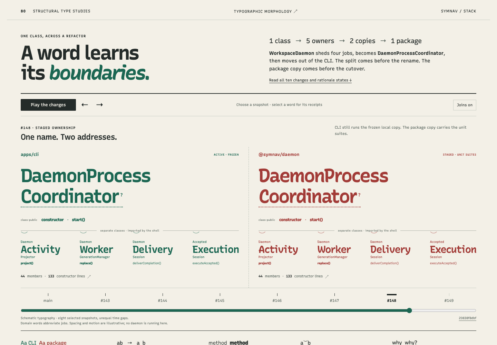 |
About 30 minutes in this completion pass, including verification and documentation. An earlier research pass was already present in the assigned folder; its elapsed time was not measured here. | The numerical constructor/member footer is secondary. It requires prose to explain that declarations and formatting lines are not complexity or exact code-move measures. The empty package lane consumes substantial space in early frames, although it makes the later copy visible. The ten complete readings remain more prose than the main type instrument. | README# typographic-morphology ## Entry point Open [index.html](index.html) directly; no server, installation, network, or worktree is needed: ```sh open ~/projects/rich-review-v2/experiments/80-typographic-morphology/index.html ``` **A word learns its boundaries** follows `WorkspaceDaemon` through four extractions, its rename to `DaemonProcessCoordinator`, package staging, and physical consolidation. Play the changes, scrub eight source snapshots, or select any word to open its explanation and exact receipts. **Escape** returns focus to that word. The focused specimen also accepts Left/Right, Home, and End. Reduced motion retains every snapshot and disables playback. The ten open readings below the specimen form the complete stopping layer. They can be read in order or entered independently; the source reader has previous/next and return controls. [The static evidence book](evidence/reading.html) works without JavaScript. The animated page and all its sources also work from `file://`. ## Kind page — animated, interactive typography ## Subjects stack: main `b6801ebdd2421d0ca2e4bdd61ec0f04c24ddd73e` → #149 `d07002357d3e9596bfaae910a1ac63b77981620b`. Narrow scope: the ownership, composition, class visibility, package visibility, and test location of **one process shell**, with its four extracted collaborators. The page shows main, #143, #144, #145, #146, #147, #148, and #149. All 27 PR-boundary snapshots were checked for the shell’s public member declarations and named test-declaration census. This is not an explanation of every decision in the stack; constructor-option changes, admission behavior, transport internals, and other owners’ mechanisms are explicitly outside the study. ## Declared choices - Role framing: reader of a type specimen; follow how a name catches up with the job it contains. - Box lenses: static class/module/package ownership and class-public versus package-exported surface. The types are the containers; no runtime-process topology is inferred from their duplication. - Opening style: a compact typographic trajectory, followed by the original compound word and its four still-embedded domain words. The spatial analogy is marked beside the timeline. - Shape: one box’s history within a pyramid. Opening proposition → animated specimen and ten complete readings → matching mechanisms, author reasons, and exact source receipts. No factual revelation is gated behind playback. - Navigation: chronological snapshots and a range scrubber; nonlinear word selection; a ten-reading linear source tour; direct `#step=148` and `#read=copies` addresses; browser Back; Escape/focus restoration; static evidence fallback. - Trust posture: source-grounded explanation. Stated reasons are checked against supplied PR bodies. Precise name choice and exact test selection remain unexplained. Observed counts are separate from author motives. No verdict, scoring, response collection, or persistence. - Persona: a teammate who knows Symnav but has not read this process shell’s refactor. - Representations used: fused and separated domain words, a persistent class-name morpheme, variable-font transformation, duplicate impressions at different package addresses, typographic import joins, class-visibility weight, rationale underlines, source counts, and frozen line-numbered receipts. - Importance rule: moved responsibility and physical ownership first; misleading uses of “public,” staged versus active copies, rationale gaps, and moved tests remain in the complete reading. - Inputs used (beyond bundle): read-only Git snapshots of the class, its four extracted owners, caller entries, class test suites and helper, the compatibility freeze test, package export entries, and the architecture plan; TypeScript AST extraction; local browser observations. Bundle inputs: `pr.json` bodies and commit messages, and selected class paths in `files.txt` / `diff.patch`. The overview dumps and unrelated subject bundles were not used. - Tech: Recursive variable font, GSAP/Flip/CSSPlugin, native DOM layout and dialogs, TypeScript’s compiler API, esbuild, isolated Chromium/Playwright. Codex harness; no delegated agents. - Built on earlier experiment(s): no earlier experiment’s implementation, diagram, or evidence package was reused. Read the required READMEs for **04-textbook-chapter, 23-zoom-canvas, 36-be-weird-a, 37-be-weird-b, and 53-be-weird-53** for complete stopping layers, bounded measurement claims, nonlinear return, and marked analogies. Surveyed representation/attempt fields in **07, 19, 60, 66, 70, 71, 74, 76, 78, and 79** to avoid another package map, contract table, matrix, folded instrument, or runtime replay. Existing unfinished research **inside this assigned folder** was retained and narrowed; its snapshot parser and datasets were reused and independently checked. ## What I tried The folder already contained a broad research pass: vocabulary/import changes, constructor options, 23 proposed readings, member lineage, and package naming ratios. I kept that material but reduced the public artifact to one ownership story and ten readings. Carrying all the vocabulary and options would have made a decorated inventory rather than a typographic explanation. The previous broad layer remains in [content/entry.mjs](content/entry.mjs); it is not bundled into the page. The central experiment works: the same domain words move from one fused body into separately named classes. At #148 the entire family acquires a second physical impression; at #149 only the package impression survives. GSAP supplies the layout transitions and Recursive’s `CASL` axis supplies the package letterform change. These are schematic source transitions, not recorded runtime events. The initial desktop draft had excessive vertical space and a constructor parenthesis that could imply the static projector was constructed there. I reduced the space and separated the class-public signature from the import joins. The initial phone version overflowed its four names; two columns now preserve their spelling and selected method samples. A midpoint screenshot also caught entering name parts crossing the moving `Daemon` word; the new parts now appear after that move. Early screenshots are preserved in [evidence/attempts](evidence/attempts/). A receipt check corrected “identical bodies”: the #148 class source matches **after normalizing one inline import-type path**, while ordinary imports are also re-addressed. Exact raw files remain available. The static audit also replaced an imprecise text search for class declarations with AST confirmation, so declaration strings inside tests cannot count as additional production classes. ## What I would drop The numerical constructor/member footer is secondary. It requires prose to explain that declarations and formatting lines are not complexity or exact code-move measures. The empty package lane consumes substantial space in early frames, although it makes the later copy visible. The ten complete readings remain more prose than the main type instrument. ## What I would do next Give a reader the specimen and a conventional diagram with the same facts. Ask which class copy production uses at #148, whether an extracted private method becomes public, and whether the coordinator is a package export. Compare their explanations without a score or leaderboard. ## Time spent About 30 minutes in this completion pass, including verification and documentation. An earlier research pass was already present in the assigned folder; its elapsed time was not measured here. ## Visual-variable legend | Variable | Meaning | Bound / caveat | | --- | --- | --- | | Green ink + linear letterform | `apps/cli` source owner | An ownership address, not a process or performance state. | | Brick ink + casual letterform | `@symnav/daemon` source owner | Recursive `CASL` transitions from 0 to 1 as the copy appears. Color is repeated by an explicit package label. | | Fused versus spaced domain words | A job inside the shell versus its own extracted class | The four domain words abbreviate jobs. Gaps are categorical, not a coupling metric. Prefixes and suffixes expand to actual class names after extraction. | | Light / heavy **member samples** | Class-private / class-public declaration | Weight does not imply package export. `deliverCompletion` and `executeAccepted` remain private after extraction; `project` and `replace` are public on their new classes. | | `⌣` joins and shared rule | Direct imports from the shell to the extracted classes | A constructed typographic ligature, not an OpenType language ligature or a call-frequency measurement. “Joins on/off” isolates this channel. | | Two complete impressions | Source implementations at CLI and package addresses | At #148 the CLI graph remains active and frozen; unit suites follow the staged package. Not two running processes. | | Solid / dotted underline | Stated rationale / no specific rationale found | Applied to reading words; the renamed class is dotted. An unadorned reading is a source observation. | | Order and movement | Selected source snapshots across the stack | Eight snapshots have unequal temporal gaps. Interpolation is illustrative, never runtime simulation. | Letter size supports reading hierarchy and fit; it is **not** proportional to lines, importance, or responsibility. The letterform, package address, method weight, and explicit text together keep the representation usable without color discrimination. ## Libraries considered and used - **Used: [GSAP Flip](https://gsap.com/docs/v3/Plugins/Flip/)**, installed version 3.15.0. It captures browser layouts before DOM reparenting and animates to the new word locations. GSAP also owns playback scheduling, cancellation, color, and CSS font-axis interpolation. No custom animation engine, FLIP implementation, camera, graph layout, or routing system was written. - **Used: [Recursive Sans & Mono](https://www.recursive.design/)** through `@fontsource-variable/recursive` 5.3.0. Its weight, monospace, and casual axes let a word retain identity while changing appearance. The local Latin full-axis WOFF2 and OFL license are shipped in `assets/`; no font CDN is required. Native browser shaping and Flex/Grid perform the layout. - **Considered: [Motion Canvas](https://motioncanvas.io/docs/)**. Its timeline and code-animation facilities suit a narrated film. Here, selectable source text, independent word inspection, keyboard controls, and responsive reflow favor DOM typography with GSAP. It was not installed or used. - **Considered: [opentype.js](https://github.com/opentypejs/opentype.js)**, installed 2.0.0 by the earlier research pass. Glyph outlines and ligature access could support contour morphs. I rejected outlined text before implementation because contour interpolation would obscure exact spelling and need a second accessible text representation. It remains a development dependency, but is not imported or bundled. - **Used for extraction/build:** TypeScript 5.9 and esbuild 0.28.2. The compiler identifies classes, imports, members, and named test declarations. esbuild produces the checked-in self-contained script. - **Used for verification only:** Playwright with an isolated headless system Chrome. No browser dependency is needed to open the result. ## What the form teaches better or worse **Better:** extraction is felt as a word ceasing to be crowded. A method can visibly remain light/private even after its domain word separates. Two impressions with the same class name make the #148 staging interval harder to confuse with a completed cutover. The #149 deletion removes an address rather than pretending to remove a running process. Letterform and color make the surviving package ownership perceptible. **Worse:** typography cannot establish behavior preservation, show runtime order, or explain full collaborator APIs. The import joins carry less directional information than arrows. Identifiers with long suffixes are slow to scan; on phones they need two rows. The complete rationale/test story still needs concise prose and source receipts. No human comprehension study was performed, so these are design observations rather than demonstrated learning gains. ## Evidence and verification - [145 static/source checks](evidence/verification-static.json) independently re-read all 27 snapshots, verify frozen file bytes and SHA-256 hashes, check public member declarations, reproduce named test-declaration counts, reconcile the 44 removed / 7 added member declarations, check the one surviving implementation of each class and the four package entries, and verify both supplied worktrees remain clean. - [268 browser checks](evidence/verification-browser.json) cover all eight frames at 320/390/768/1440 widths; copy and extracted-word counts; collisions and page overflow; all ten readers and every excerpt; focus restoration; linear and reverse reading; keyboard and URL navigation; a measured intermediate FLIP position; playback/pause/manual-selection cancellation; reduced motion; direct file opening and local font loading; a mobile source dialog; print generation; and a JavaScript-disabled static fallback. The final pass reported no browser errors or external requests. - [Variable-font transition receipt](evidence/animation-check.json): the entering package word interpolated `CASL` 0.0001 → 0.3869 → 1 and green → brick. These are browser rendering samples of the illustrative animation, not source or runtime measurements. - [Screenshots](screenshots/) were inspected, including initial, staged, consolidated, phone, source-reader, and font-transition states. [Print check](evidence/print-check.pdf) is also retained. - [Source manifest](evidence/source-manifest.json), [published model](data/morphology.json), [27-frame research extraction](data/extract.json), and [test-body comparison](data/test-bodies.json) preserve the measurement basis. Sources in the page identify their exact revision, file, and line range, with offline full-file and optional commit-pinned GitHub links. The class’s 65 → 82 test count means **named test declarations**, counting a parameterized declaration once. The inventory normalizes the class/suite rename and finds no removed declaration. It does not establish equivalent helpers, end-to-end parity, or a correctness verdict. **No Symnav test suite or daemon runtime was executed in this completion pass.** ## Rebuild and repeat From this experiment folder: ```sh npm ci npm run capture npm run build npm run verify npm run check:browser ``` `capture` uses the retained, pinned research snapshots and read-only Git objects available in `~/projects/symnav`. `verify` independently rereads the source and checks `worktrees/main` and `worktrees/stack-head`. Scripts write only inside this experiment. The browser checker defaults to `/tmp/rich-review-05-browser/node_modules/playwright` and system Chrome; set `MORPHOLOGY_PLAYWRIGHT` and `MORPHOLOGY_CHROME` for other installed locations. For a full research refresh, the earlier `scripts/extract.mjs`, `scripts/build-data.mjs`, and `scripts/test-bodies.mjs` regenerate their corresponding research files before `capture`. They inspect local remote-tracking refs and check the tip pin. The broad `content/entry.mjs` and exploratory probe scripts are retained as an unfinished earlier approach; they do not supply the published ten-reading content. The received brief is [brief.md](brief.md). No Symnav source or branch was modified, committed, pushed, or rebased. Queue, index, and campaign completion handling are left to the orchestrator. |
| 79 | failure-domain-pinball attempt 1: codex |
other: game — source-grounded pinball replay, without points, verdicts or review collection. | stack**, main `b6801ebdd2421d0ca2e4bdd61ec0f04c24ddd73e` → tip of #149 `d07002357d3e9596bfaae910a1ac63b77981620b`. | Role framing: learner operating a request through failure domains; assigned pinball angle. · Box lenses: static package ownership plus runtime failure/request boundaries. The package contains mechanisms in both caller and daemon processes. The worker is inside the daemon process; the injected host executor is distinguished from its package owner. · Opening style: marked physical analogy, then the main → tip ownership strip. The first sentence names acceptance as the point that changes the exits. · Shape: complete stopping layer = opening, machine, compact legend and seven open rules. Source dialogs and recordings deepen those same facts. The headline alone is not the complete layer. · Navigation: 18 replay conditions grouped by domain; sequential stops and previous/next replay controls; direct bumper and rule jumps; related source receipts; direct replay fragments; source close/return controls. Nothing must be won or unlocked. · Trust posture: actual-method observations and exact source receipts, with explicit projection limits. Reasons are stated only where supplied; the historical guard/terminal precedence selections and choice of exactly one recovery attempt retain bounded rationale gaps. Policy records do state the purposes of both budgets. · Persona: teammate familiar with Symnav’s purpose, unfamiliar with its daemon failure handling. · Representations used: numbered guard bumpers, one request-identity ball, local flippers controlled by retry permission, separate recovery loops, package/process enclosures, an inner worker diamond, an outer terminal classifier, neutral state lamps, a capture readout and frozen source/observation drawers. · Importance rule: acceptance and duplicate-execution consequences first; distinct vocabularies, recovery ownership and classification precedence next. Evidence and rationale limits remain in the open layer. · Inputs used (beyond bundle): read-only main/tip production code and tests; Git objects for the original #133/#134/#142 authority suites; contributor guides; daemon policy, architecture and relevant functional-spec clauses; a fresh daemon package build; actual compiled-method recordings; four focused existing test suites; source hashes and final worktree status. Bundle used: `pr.json` and relevant `repo-rules.md` material. Precomputed overviews and the full net patch were not used to establish claims. · Tech: **Phaser 3.90.0**, HTML/CSS/classic JavaScript, Python evidence capture and integrity checks, Node actual-method recorder, **Playwright 1.61.1** with system Google Chrome. System fonts; no generated bitmap assets or audio. Codex harness; no delegated agents. · Built on earlier experiment(s): no implementation, layout, recording or evidence bank reused. Read the required **04-textbook-chapter**, **23-zoom-canvas**, **36-be-weird-a**, **37-be-weird-b** and **53-be-weird-53** READMEs. Surveyed declared representations/attempts from **22-game-any**, **63-daemon-constellation**, **64-lifecycle-music-box**, **65-decision-tetris**, **66-boundary-subway**, **67-blast-radius-terrain**, **72-admission-circuit-board**, **73-daemon-weather-map** and **75-message-particle-chamber**. Borrowed standards of bounded evidence, complete stopping layers, explicit analogy limits and focus-return checks. In particular, 72 already represents admission as a circuit and 75 represents byte/record transfers as particles; this experiment centers the spatial consequences of one identity entering different failure domains, including outer terminal precedence. | 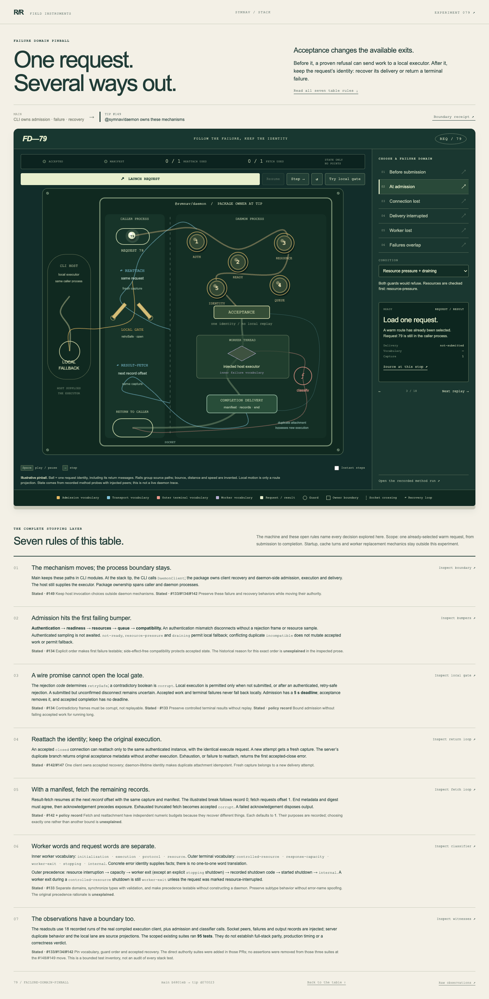 |
Approximately 45–50 minutes of active work, including source reading, implementation, recordings, browser checks and documentation. | The chassis screws and serial ornament add little. The miniature phone fit is a locator; reading the board’s labels requires magnification. The seven-rule register is necessary for a complete stopping layer but carries precision that the pinball alone cannot express. | README# failure-domain-pinball ## Entry point ```sh open ~/projects/rich-review-v2/experiments/79-failure-domain-pinball/index.html ``` [Open the pinball table](index.html). No installation, server, network connection or worktree is needed. Phaser and the frozen evidence are local. Choose a failure domain and condition, then **Launch request** or **Step**. **Space** plays/pauses; **→** steps when focus is outside a form control. **Try local gate** probes the current flippers without changing the recorded route. Click a bumper or an **Inspect** link for its source. Escape closes the receipt and restores focus. Inspection leaves playback paused. On a phone, **Magnify table** enables native sideways scrolling. Reduced motion defaults to instant steps. The seven open rules remain readable without JavaScript. A local server is optional: `npm run serve` serves this folder at `http://127.0.0.1:8479`. ## Kind other: game — source-grounded pinball replay, without points, verdicts or review collection. ## Subjects **stack**, main `b6801ebdd2421d0ca2e4bdd61ec0f04c24ddd73e` → tip of #149 `d07002357d3e9596bfaae910a1ac63b77981620b`. Narrow subject: the failure vocabulary and available exits of one already-selected warm request. The relevant decisions run through #133, #134, #142, #147 and the #149 package cutover; #148 supplies migration context. This is not an explanation or correctness audit of all 26 PRs. ## Declared choices - Role framing: learner operating a request through failure domains; assigned pinball angle. - Box lenses: static package ownership plus runtime failure/request boundaries. The package contains mechanisms in both caller and daemon processes. The worker is inside the daemon process; the injected host executor is distinguished from its package owner. - Opening style: marked physical analogy, then the main → tip ownership strip. The first sentence names acceptance as the point that changes the exits. - Shape: complete stopping layer = opening, machine, compact legend and seven open rules. Source dialogs and recordings deepen those same facts. The headline alone is not the complete layer. - Navigation: 18 replay conditions grouped by domain; sequential stops and previous/next replay controls; direct bumper and rule jumps; related source receipts; direct replay fragments; source close/return controls. Nothing must be won or unlocked. - Trust posture: actual-method observations and exact source receipts, with explicit projection limits. Reasons are stated only where supplied; the historical guard/terminal precedence selections and choice of exactly one recovery attempt retain bounded rationale gaps. Policy records do state the purposes of both budgets. - Persona: teammate familiar with Symnav’s purpose, unfamiliar with its daemon failure handling. - Representations used: numbered guard bumpers, one request-identity ball, local flippers controlled by retry permission, separate recovery loops, package/process enclosures, an inner worker diamond, an outer terminal classifier, neutral state lamps, a capture readout and frozen source/observation drawers. - Importance rule: acceptance and duplicate-execution consequences first; distinct vocabularies, recovery ownership and classification precedence next. Evidence and rationale limits remain in the open layer. - Inputs used (beyond bundle): read-only main/tip production code and tests; Git objects for the original #133/#134/#142 authority suites; contributor guides; daemon policy, architecture and relevant functional-spec clauses; a fresh daemon package build; actual compiled-method recordings; four focused existing test suites; source hashes and final worktree status. Bundle used: `pr.json` and relevant `repo-rules.md` material. Precomputed overviews and the full net patch were not used to establish claims. - Tech: **Phaser 3.90.0**, HTML/CSS/classic JavaScript, Python evidence capture and integrity checks, Node actual-method recorder, **Playwright 1.61.1** with system Google Chrome. System fonts; no generated bitmap assets or audio. Codex harness; no delegated agents. - Built on earlier experiment(s): no implementation, layout, recording or evidence bank reused. Read the required **04-textbook-chapter**, **23-zoom-canvas**, **36-be-weird-a**, **37-be-weird-b** and **53-be-weird-53** READMEs. Surveyed declared representations/attempts from **22-game-any**, **63-daemon-constellation**, **64-lifecycle-music-box**, **65-decision-tetris**, **66-boundary-subway**, **67-blast-radius-terrain**, **72-admission-circuit-board**, **73-daemon-weather-map** and **75-message-particle-chamber**. Borrowed standards of bounded evidence, complete stopping layers, explicit analogy limits and focus-return checks. In particular, 72 already represents admission as a circuit and 75 represents byte/record transfers as particles; this experiment centers the spatial consequences of one identity entering different failure domains, including outer terminal precedence. ## What I tried Evaluated physics, a rendering stack and a game engine before implementation. Free collisions would allow chance to select a code branch or imply that a stronger launch defeats an admission guard. I chose Phaser’s curves, tween manager and hit areas for controlled replay. Bounce is illustrative; source observations choose the route. Recorded 18 client cases using real compiled methods with scripted peers, including refusal before submission, each admission refusal, contradictory retry safety, two recovery scopes and their exhaustion, and competing terminal failure facts. The server duplicate bypass and local executor lane remain visibly marked source projections. The first layout placed controls below a tall board. Browser use led to moving them above it, fitting the board to the viewport and adding native phone magnification. I fixed pending replay timers so changing a case or inspecting a source cannot advance an old run. State now commits when the ball reaches a stop. Initial screenshots remain in [evidence/attempts](evidence/attempts/). No implemented representation was abandoned. A source audit corrected several initially guessed excerpt ranges, and the policy record refined the rationale wording: budget purposes are stated, while selecting exactly one rather than another bound is not explained. The three direct authority test bodies proved byte-identical from their introductions through tip. ## What I would drop The chassis screws and serial ornament add little. The miniature phone fit is a locator; reading the board’s labels requires magnification. The seven-rule register is necessary for a complete stopping layer but carries precision that the pinball alone cannot express. ## What I would do next Give a fresh reader this table and a conventional state diagram. Ask them to explain why a lost socket can recover while a lost worker returns a terminal code, and why result-fetch keeps a capture while reattachment replaces it. No human comprehension trial was run here. ## Time spent Approximately 45–50 minutes of active work, including source reading, implementation, recordings, browser checks and documentation. ## Visual-variable legend | Channel | Meaning | | --- | --- | | Amber | Admission vocabulary and the local retry gate. | | Blue | Transport failures and recovery exchanges. | | Rose | Outer accepted-execution terminal vocabulary. | | Lavender | Distinct inner worker-failure domain. | | Pale cream | Request/result identity; not a “good” verdict. | | Numbered circular bumper | One admission guard; physical order depicts first-failure order. | | Package envelope / shaded process regions / dashed seam | Static ownership, runtime containment, and socket crossing respectively. The CLI host shares the caller process but remains outside daemon mechanism ownership. | | Worker diamond inside worker outline | Injected execution inside a worker thread; its inner vocabulary is not a one-to-one translation to the outer classifier. | | Brass flippers | Current permission to execute locally, derived from delivery state and authenticated rejection meaning. | | Return-loop geometry | Reattachment returns to admission and bypasses a new worker execution; result-fetch returns to delivery with the existing capture. | | Lamps and numeric readouts | Acceptance, manifest receipt, used recovery allowances and capture identity. State only; no score or judgment. | | Motion | Authored ordering of selected source steps. Speed, distance, force and bounce are invented and have no measured units. | ## Libraries considered and used | Library | Evaluation | | --- | --- | | **Phaser 3.90.0 — used** | Its scene, graphics, input hit areas, curves and tween manager fit one interactive cabinet. Phaser owns interpolation and animation scheduling. The local bundle opens directly without a build. See [Phaser paths](https://docs.phaser.io/api-documentation/class/curves-path) and [tweens](https://docs.phaser.io/phaser/concepts/tweens). | | **Matter.js — considered** | Suitable for body collisions and physical constraints, but free physics would make guard ordering and recovery branch selection look contingent on momentum. No physics engine determines semantic outcomes here. See [Matter.Engine](https://brm.io/matter-js/docs/classes/Engine.html). | | **PixiJS — considered** | A capable renderer with interaction and a ticker. This cabinet would still need additional orchestration for its replay. Phaser supplied the required game facilities in one dependency. See [PixiJS interaction](https://pixijs.com/8.x/guides/components/events) and [ticker](https://pixijs.com/8.x/guides/components/ticker). | | **Playwright 1.61.1 — used for checks** | Exercises real browser input, source navigation, replay state, responsive layouts and direct file opening. It is not needed by the reader. | The game board’s geometry is authored, as a pinball playfield. This is not a hand-written graph-layout or routing engine. Curves and tween timing come from Phaser. The vendored [Phaser license](vendor/PHASER-LICENSE.md) and lockfile preserve the dependency choice. ## What the form teaches better or worse The strongest physical fact is the closed local exit after acceptance. A reader can push the flippers, see the state remain closed, and follow a recovery loop that retains the identity. The two loops make “new attempt/fresh capture” versus “same attempt/same capture” spatially memorable. Color keeps the same word from being casually treated as the same failure domain. A conventional diagram is faster for reading the exact classification precedence, the five outer literals, and rationale gaps. Pinball cannot faithfully depict async concurrency, socket timing, full daemon resource recovery or all message exchanges. One ball groups a request and its return/recovery messages. The open rules and source drawers carry the precision that the analogy loses. These are design observations, not measured claims about reader learning. ## Evidence and verification - [Decision/depth map and evidence limits](evidence/decision-coverage.md): seven-rule coverage, reason-search boundary, actual versus projected execution, and workspace incident disclosure. - [Recorded observations](evidence/observations.json): 18 real execution-client cases, five admission contexts and six terminal-classifier contexts. Peers, output and failure facts are injected. No daemon process or worker is launched by the recorder. - [Frozen sources](evidence/sources.json) and [24 receipts](evidence/receipts.json): full captured files with hashes, exact line ranges and revisions. Pinned GitHub links are optional; offline evidence is complete for the authored claims. - [Focused test output](evidence/focused-tests.txt): **95 tests passed** in admission, failure vocabulary, execution-client and transport-execution suites. This is not a full-stack verification result. - [Historical test inventory](evidence/test-inventory.json): three direct authority suites retain byte-identical bodies from first `describe` through EOF; imports and relocation are outside that comparison. Other stack tests were not audited for removals. - [Browser checks](evidence/browser-checks.json): all 18 paths, all 24 reachable receipts, actual Phaser hit areas, gate probing, keyboard controls, pause/resume, inspector interruption, stale-timer cancellation, natural animated completion, five viewport widths, reduced motion and JavaScript-disabled reading. No page errors or runtime network requests in the local-file checks. - [Static integrity checks](evidence/static-checks.json): source hashes/excerpts, assets, root/source links, expected observation inventory and clean main/tip worktrees. - [Screenshots](screenshots/): opening, reattachment, fetch, terminal failure, source receipt and phone view. Screenshots were visually inspected. No Symnav tracked source, branch or commit was changed. A temporary untracked stylesheet was accidentally created in the daemon worktree during a misdirected UI edit, checked to contain only the newly written CSS, and removed immediately; the [incident record](evidence/decision-coverage.md#workspace-incident) describes it. Both worktrees are clean at completion. Index, queue and commit handling are left to the campaign orchestrator. ## Reproduce the evidence With the supplied worktrees pinned and the daemon package built, run from this folder: ```sh python3 scripts/capture.py node scripts/record.mjs python3 scripts/inventory.py python3 scripts/verify.py ``` To repeat browser checks, install this folder’s locked dependencies with `npm ci --ignore-scripts`, then run `npm run check`. It uses system Google Chrome by default; `PINBALL_BROWSER_CHANNEL` can select another installed Playwright browser channel. The focused Symnav test command, run from `worktrees/stack-head/packages/daemon`, was: ```sh pnpm exec vitest run src/daemon-admission.test.ts src/daemon-execution-failure.test.ts src/transport/execution-client.test.ts src/transport/daemon-transport-execution.test.ts ``` The received [brief](brief.md) and campaign harness log are preserved in this folder. |
| 78 | origami-depth attempt 1: claude-opus → attempt 2: claude-opus → attempt 3: codex |
page — interactive semantic origami | pr-127` only, **Scope semantic caches to one turn**. Base `a1e325a5ff979bdfa25babc5554621c8c0f20497` → head `64919bcbcf7fcc8202779b78c5f069b24662bb18`. Six files, +391/−67. | Role framing: learner handling one persistent explanatory object. · Box lenses: source/module ownership plus runtime object and lifecycle ownership. The TypeScript service owns an instance of a class whose implementation moves to core; the project graph is a collaborator, not a new package. · Opening style: a marked paper analogy and a visible three-owner sheet, under “The handles stay. The turn folds away.” The separate cache-clear and cleanup-completion boundaries are named immediately. · Shape: complete stopping layer = opening, sheet/legend and six open edge rows; the same edges then gain mechanism and source fidelity. The heading alone is not the complete layer. · Navigation: three fold axes/presets on the same DOM sheet; continuous unfolding; direct edge jumps; sequential edge reading; exact return focus; shareable fragment and browser history. No comments, verdicts, storage, telemetry, or score. · Trust posture: frozen source, controlled actual-method recordings, conservative rationale labels, and an explicit gap between the new await contract and the spec's preservation requirement. Tests are evidence, not a correctness verdict. · Persona: teammate who knows TypeScript but not this cache-lifetime corner. · Representations used: hinged paper planes; six persistent handle sleeves and detachable lookup leaves; paired old/new promise slips; coupled cleanup/return flaps; ownership-colored source mapping; exposed-edge contracts; focused mechanism strips; recorded promise-state readouts; exact source windows. · Importance rule: distinct lifetimes first, ownership second, then retained contracts, API changes, rationale gaps and test changes. No fact is unlocked by a gesture. · Inputs used (beyond bundle): pinned base/head backend and service source; core scope and tests; generic project graph and concrete TypeScript cleanup; head contributor guidance and architecture/follow-up specs; successful builds; controlled compiled-method recordings; focused existing tests; Git pins/clean tracked status and browser checks. From the bundle: PR body and six commits, complete diff, file statistics and relevant repo rules. The overview dumps and other subjects were not used. · Tech: HTML/CSS 3D; GSAP 3.13.0 and Flip; vanilla JavaScript; Python source capture; Node recorder; isolated Chrome through Playwright 1.55.0. Codex harness, no delegated agents. · Built on earlier experiment(s): read the required **04-textbook-chapter**, **23-zoom-canvas**, **36-be-weird-a**, **37-be-weird-b**, and **53-be-weird-53** READMEs. Borrowed standards for bounded recordings, source receipts, complete top layers and dependable returns. A fresh declaration survey covered 73 earlier READMEs, including the lifecycle music box (64) and hold/release interface (69). Those use scores, sensory resistance, matrices, or independent navigation axes; this artifact uses intersecting physical fold axes and persistent handles. No earlier implementation, recording, coordinates, or evidence bank was copied. [Survey](evidence/novelty-survey.json). | 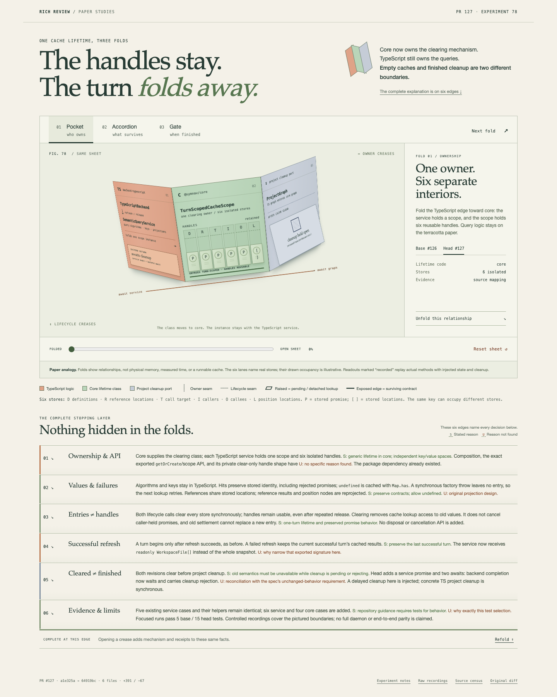 |
About 40 minutes, including source inspection, design, implementation, controlled recordings, browser checks and documentation. | The small printing on bent faces is useful mainly on desktop. On a phone the sheet carries shape and ownership while the adjacent readout and complete edge rows carry readable detail. The decorative paper mark in the opening can go. Flip smooths the lower mechanism's changing height, but GSAP's hinge animation does most of the explanatory work. | README# origami-depth ## Entry point Open [index.html](index.html), or run: ```sh open ~/projects/rich-review-v2/experiments/78-origami-depth/index.html ``` No server, installation, network, or worktree is needed to read the finished artifact. Local GSAP files are included. JavaScript enables the folds and source inspector; the complete six-edge explanation remains readable without it. Choose **Pocket**, **Accordion**, or **Gate**. The slider opens the same sheet for closer reading. In Gate, compare **Base #126** with **Head #127**, then select a recorded cleanup outcome. Each numbered edge unfolds its mechanism and pinned receipts. **Next fold**, **Previous/Next edge**, native keyboard controls, Escape, source-focus return, and URL/browser history support linear and nonlinear reading. ## Kind page — interactive semantic origami ## Subjects `pr-127` only, **Scope semantic caches to one turn**. Base `a1e325a5ff979bdfa25babc5554621c8c0f20497` → head `64919bcbcf7fcc8202779b78c5f069b24662bb18`. Six files, +391/−67. The narrow teaching subject is **lookup lifetime, reusable handles, and release completion**. It is not a complete daemon or query-algorithm walkthrough. ## Declared choices - Role framing: learner handling one persistent explanatory object. - Box lenses: source/module ownership plus runtime object and lifecycle ownership. The TypeScript service owns an instance of a class whose implementation moves to core; the project graph is a collaborator, not a new package. - Opening style: a marked paper analogy and a visible three-owner sheet, under “The handles stay. The turn folds away.” The separate cache-clear and cleanup-completion boundaries are named immediately. - Shape: complete stopping layer = opening, sheet/legend and six open edge rows; the same edges then gain mechanism and source fidelity. The heading alone is not the complete layer. - Navigation: three fold axes/presets on the same DOM sheet; continuous unfolding; direct edge jumps; sequential edge reading; exact return focus; shareable fragment and browser history. No comments, verdicts, storage, telemetry, or score. - Trust posture: frozen source, controlled actual-method recordings, conservative rationale labels, and an explicit gap between the new await contract and the spec's preservation requirement. Tests are evidence, not a correctness verdict. - Persona: teammate who knows TypeScript but not this cache-lifetime corner. - Representations used: hinged paper planes; six persistent handle sleeves and detachable lookup leaves; paired old/new promise slips; coupled cleanup/return flaps; ownership-colored source mapping; exposed-edge contracts; focused mechanism strips; recorded promise-state readouts; exact source windows. - Importance rule: distinct lifetimes first, ownership second, then retained contracts, API changes, rationale gaps and test changes. No fact is unlocked by a gesture. - Inputs used (beyond bundle): pinned base/head backend and service source; core scope and tests; generic project graph and concrete TypeScript cleanup; head contributor guidance and architecture/follow-up specs; successful builds; controlled compiled-method recordings; focused existing tests; Git pins/clean tracked status and browser checks. From the bundle: PR body and six commits, complete diff, file statistics and relevant repo rules. The overview dumps and other subjects were not used. - Tech: HTML/CSS 3D; GSAP 3.13.0 and Flip; vanilla JavaScript; Python source capture; Node recorder; isolated Chrome through Playwright 1.55.0. Codex harness, no delegated agents. - Built on earlier experiment(s): read the required **04-textbook-chapter**, **23-zoom-canvas**, **36-be-weird-a**, **37-be-weird-b**, and **53-be-weird-53** READMEs. Borrowed standards for bounded recordings, source receipts, complete top layers and dependable returns. A fresh declaration survey covered 73 earlier READMEs, including the lifecycle music box (64) and hold/release interface (69). Those use scores, sensory resistance, matrices, or independent navigation axes; this artifact uses intersecting physical fold axes and persistent handles. No earlier implementation, recording, coordinates, or evidence bank was copied. [Survey](evidence/novelty-survey.json). ## What I tried Considered a folding decision tree, but it would repeat disclosure navigation rather than explain lifetimes. Considered a physical origami mesh, but geometric constraints would not add source fidelity. Built a single strip with three owner regions and a perpendicular set of lifecycle flaps. The first hinge direction hid the flaps behind their backing paper. Reversing the direction fixed visibility; shorter entry leaves kept the handle labels exposed. A GSAP overwrite conflict initially left the ownership wings bent in later presets; property-level overwrite fixed it. Opening now retains the empty old-lookup markers, so increasing reading depth cannot imply cache repopulation. Negative screenshots and notes remain in [attempts](attempts/README.md). The final rationale audit distinguished the repo's general requirement for behavior tests from commit subjects naming test intent. It also kept “the PR names the await boundary” separate from “its reconciliation with parity is unexplained.” ## What I would drop The small printing on bent faces is useful mainly on desktop. On a phone the sheet carries shape and ownership while the adjacent readout and complete edge rows carry readable detail. The decorative paper mark in the opening can go. Flip smooths the lower mechanism's changing height, but GSAP's hinge animation does most of the explanatory work. ## What I would do next Give a reader only the sheet, legend and six edges, then ask whether an old promise can still settle and whether empty caches imply completed release. Compare their explanation with the same content shown as an ordinary sequence diagram. No human comprehension trial was performed here. ## Time spent About 40 minutes, including source inspection, design, implementation, controlled recordings, browser checks and documentation. ## Visual-variable legend | Variable | Meaning | Limit | | --- | --- | --- | | Terracotta paper | TypeScript query/lifecycle methods; base's manually owned Maps | Class/source ownership, not a process or physical memory region | | Green paper | Core's generic lifetime class at head | The scope object still belongs to the TypeScript service | | Blue-gray paper | Project-cleanup collaborator | The TS graph extends the core graph; this is not a third package | | Vertical crease / owner pocket | Juxtaposes the service, lifetime implementation and cleanup collaborator | A semantic fold; no package dependency is newly introduced | | Horizontal crease / entry leaf | Removes the old cache lookup while leaving the handle sleeve in place | Six drawn lanes show source structure, not measured occupancy | | Raised entry layer | Old lookup has been detached | Does not cancel, destroy, or garbage-collect a caller-held value | | Raised backend and cleanup flaps | Pending completion; head attaches the backend return to cleanup | Angles, distances and duration are illustrative; the recorded text is authoritative | | Solid versus broken await seam | Head's two awaits versus base's unawaited call chain | Shows source control flow, not transport | | Exposed handle tabs and lower edge | Same reusable handles, with the surviving contract still readable | Folding never creates a new handle | | Gold P₀ / green P₁ slips | Caller-held old promise settles; the new cache entry remains new | Actual head core recording with deferred settlement, not a daemon workload | | Six slots D/R/T/I/O/L | Definitions, reference locations, call target, callers, callees, position locations | First five store promises; L stores locations. Drawn contents are illustrative | | Open-sheet microprint | Additional implementation fidelity on the same facts | Reading depth does not advance cleanup or refill a cache | The construction is **semantic origami**, not a mechanically realizable folding pattern. Its angles and expanded writing area are layout choices. The analogy limitation appears beside the instrument, and each controlled mechanism records its own scope. ## Libraries considered and used | Option | Evaluation / choice | | --- | --- | | **GSAP 3.13.0 + Flip — used** | GSAP drives all hinge rotations, source-plane depth and paper extension. Flip handles the lower mechanism's layout-height transition. Property-specific interruption lets quick changes settle to the requested shape. Vendored distribution files preserve their original headers. [Official Flip documentation](https://gsap.com/docs/v3/Plugins/Flip/) and [license notice](vendor/NOTICE.md). | | **Motion / Framer Motion — considered** | Its independent transform animation and React layout support fit this task, but React would add a runtime solely for a small persistent paper object. [Official animation docs](https://motion.dev/docs/animate), [React layout docs](https://motion.dev/docs/react-layout-animations). | | **Three.js CSS3DRenderer — considered** | It can position HTML in a 3D scene, but this object needs a fixed perspective rather than a camera/render loop. Its documented zoom limitations also add an unnecessary constraint to a reading artifact. Native CSS 3D retains selectable source text and ordinary DOM controls. [Official renderer docs](https://threejs.org/docs/pages/CSS3DRenderer.html). | There is no custom animation clock, graph layout, diagram router, or semantic zoom engine. Geometry is an authored three-panel paper net; GSAP interpolates its transforms. Native range inputs, dialog, scrolling and focus behavior provide the interaction primitives. ## What the weird form teaches better or worse **Better:** a handle and its contents cease to look like the same thing. The sleeve survives while its entry leaf moves away. The perpendicular cleanup fold makes it possible to see “old lookup gone” and “caller still waiting” at once. Switching source revision changes the lifetime owner's paper and the return coupling while keeping the six lanes in place. Opening for evidence preserves those identities. **Worse:** a conventional sequence diagram states the two awaits more directly and wastes less area. Perspective makes labels harder to read, especially on a phone. Paper cannot carry rationale or test-selection gaps reliably, so the six open prose edges remain necessary. It is not an improvement for a reader who only wants exact API signatures. ## Evidence and verification - [Decision/receipt map](evidence/decision-coverage.md): every authored deeper fact maps to a complete edge; all 15 diff hunks are assigned. - [Source inventory](evidence/inventory.json): six changed files, +391/−67; original five service tests/helpers byte-identical; six service and four core cases added. - [Frozen source bank](evidence/sources.json): 17 documents with revisions and SHA-256 hashes. Receipt windows show original line numbers and can expand to full local context. - [Controlled recordings](evidence/recordings.json): actual compiled base/head backend calls with an injected empty state and held/rejecting cleanup; actual head core calls with six synthetic handles and a deferred promise. Base fulfills while cleanup is held; head remains pending and carries the same injected rejection. Both clear before cleanup. These are not daemon traces or end-to-end parity evidence. - Focused existing tests: [5 base service tests](evidence/base-service-tests.log), [11 head service tests](evidence/head-service-tests.log), and [4 head core tests](evidence/head-core-tests.log) passed. [Base](evidence/build-base.log) and [head](evidence/build-head.log) builds passed. No broad Symnav test, lint or parity claim is made. - [Browser checks](evidence/browser-checks.json): all fold/revision/outcome states; same handle objects and invariant surface text; slider fidelity; all mechanism/source paths; keyboard, history and focus return; interruption and reduced motion; 320/390/768/1440 px layouts; direct file opening, no-JavaScript surface and print. Zero page errors and zero external runtime requests. - [Screenshots](screenshots/): desktop owner/lifetime/release folds, base comparison, open sheet, mechanism, source and phone. They were visually inspected; draft failures are retained separately. - [Final folder checks](evidence/final-checks.json): local links, README/brief contract, JavaScript syntax, all frozen source hashes, pinned revisions and clean tracked worktrees. Only this experiment folder and permitted worktree build output were written. Both Symnav worktrees retain clean tracked status. Source and branches were not modified, committed, pushed, or rebased. Index, queue and campaign completion handling remain with the orchestrator. ## Reproduction Opening the artifact requires none of these steps. To refresh evidence with the supplied worktrees still at their pinned commits and built, run inside this folder: ```sh python3 scripts/capture.py node scripts/record.mjs ``` To repeat browser checks with Node, system Chrome and the pinned development dependencies: ```sh npm ci npm run serve ``` In a second terminal in the same folder: ```sh npm run check ``` `ORIGAMI_URL` can select a different local server address. The capture/record scripts write only this experiment. They do not rerun Symnav's tests. The received [brief](brief.md), original harness/log files, implementation, negative drafts, local runtime files and validation scripts are retained. |
| 77 | forensic-light-table attempt 1: codex |
page — interactive canvas light table | pr-148 only: **Own daemon mechanisms behind DaemonClient**. Base `ba53c8e1662fd86d198b95321c90d9c9bef10184` → head `20838f8dbf413e04767543eb2380d0d114da6c60`. | Role framing: forensic reader comparing registered source specimens. · Box lenses: static package/module ownership; active consumer graph versus staged public/private surface. The three columns are base CLI, retained head CLI, and new head package files. Separate process and worker entries appear as source owners, not additional invented processes. · Opening style: a marked light-table analogy and a before/head/head picture: “Same mechanisms. A second owner.” · Shape: pyramid. Opening, plate, legend and nine open readings form the complete stopping layer. Selected-file comparisons and per-reading receipts deepen the same subjects. The headline alone is not the complete layer. · Navigation: independent spectral exposures on a registered plate; two specimen sets; four guided exposures; direct file selection and previous/next; linear reading register; next-reading control; locate-on-plate jumps; URL fragments and browser history; dialogs restore focus. · Trust posture: source-grounded structural explanation. Stated reasons and specific unexplained choices remain distinct. Text matches, direct test imports, a compatibility digest and static reachability each have different meanings. None becomes a correctness verdict or coverage percentage. · Persona: a teammate who knows TypeScript and symnav but did not write this large PR. · Representations used: three registered source strips; line-proportional file bands; optical screen compositing; sliding clipping planes; ownership rims; active rails; compatibility dashes; rename arrows; test-import dots; rationale hatching; source comparisons and pinned receipts. No runtime simulation or generated asset. · Importance rule: distinguish active use from ownership first, then expose residual changes and losses in test evidence. Keep configuration and missing reasons on the complete layer even when those files are outside the imaged specimen sets. · Inputs used (beyond bundle): supplied base/head source trees; TypeScript ASTs; local Git pins and rename inventory; manifest, exports, test configuration, architecture/follow-up specifications and contributor rules; focused execution of six existing boundary-test files. From the bundle: PR body and all commit subjects, complete patch and file statistics. Overview dumps were not used. · Tech: Konva 10.5.0, HTML/CSS/JavaScript, Python `difflib`, the worktree’s TypeScript 6.0.3 parser, and isolated Chrome/Playwright. Built with Codex. No subagents were used. · Built on earlier experiment(s): no implementation, recordings, source bank or visual assets reused. Read the required READMEs for **04-textbook-chapter**, **23-zoom-canvas**, **36-be-weird-a**, **37-be-weird-b** and **53-be-weird-53** for exact evidence, bounded claims, complete outlines and return navigation. Also read 23’s decision inventory as a coverage checklist, then checked the relevant facts against the supplied source. Surveyed the representation/shape declarations of finished **60–76**, including 68’s microscope, 74’s loom and 76’s specimen atlas. This plate compares structural ancestry and independent evidence membership; it does not reuse their identity matrices, semantic zoom, specimen lifecycle or request enactment. [Survey record](evidence/novelty-survey.json). | 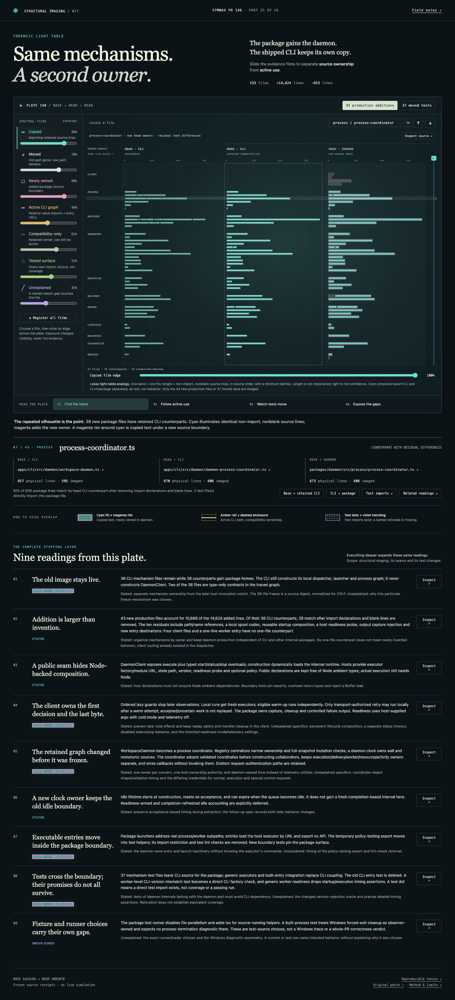 |
Approximately 50 minutes, including source capture, library evaluation, implementation, focused tests, browser checks and screenshot inspection. No human comprehension trial was performed. | Seven exposure controls are a lot to learn, especially on a phone. The four guided exposures earn their place more consistently. The minimum-width plate needs horizontal scrolling on small screens; native selection and direct source inspection are more useful there than the spatial comparison. The full source bank is valuable for audit but much larger than the 40 curated excerpts. | README# forensic-light-table ## Entry point Open [index.html](index.html) directly: ```sh open ~/projects/rich-review-v2/experiments/77-forensic-light-table/index.html ``` No installation, server, network connection or live worktree is needed to read it. JavaScript must be enabled. The renderer and frozen evidence are local. Choose a spectral film, change its exposure, then drag its colored edge across the plate. The range below the plate provides the same operation by keyboard. **Register all films** restores alignment. Four guided exposures introduce the repeated production bodies, active CLI graph, moved tests and rationale gaps. Select a band or use **Locate a file**; **Inspect source** opens its exact comparison. The nine open readings below the plate are the complete stopping layer, with matching source receipts and return controls. ## Kind page — interactive canvas light table ## Subjects pr-148 only: **Own daemon mechanisms behind DaemonClient**. Base `ba53c8e1662fd86d198b95321c90d9c9bef10184` → head `20838f8dbf413e04767543eb2380d0d114da6c60`. The narrow subject is **the difference between source relocation, source duplication and active mechanism ownership**. This is not an explanation of the entire daemon stack or every execution branch. ## Declared choices - Role framing: forensic reader comparing registered source specimens. - Box lenses: static package/module ownership; active consumer graph versus staged public/private surface. The three columns are base CLI, retained head CLI, and new head package files. Separate process and worker entries appear as source owners, not additional invented processes. - Opening style: a marked light-table analogy and a before/head/head picture: “Same mechanisms. A second owner.” - Shape: pyramid. Opening, plate, legend and nine open readings form the complete stopping layer. Selected-file comparisons and per-reading receipts deepen the same subjects. The headline alone is not the complete layer. - Navigation: independent spectral exposures on a registered plate; two specimen sets; four guided exposures; direct file selection and previous/next; linear reading register; next-reading control; locate-on-plate jumps; URL fragments and browser history; dialogs restore focus. - Trust posture: source-grounded structural explanation. Stated reasons and specific unexplained choices remain distinct. Text matches, direct test imports, a compatibility digest and static reachability each have different meanings. None becomes a correctness verdict or coverage percentage. - Persona: a teammate who knows TypeScript and symnav but did not write this large PR. - Representations used: three registered source strips; line-proportional file bands; optical screen compositing; sliding clipping planes; ownership rims; active rails; compatibility dashes; rename arrows; test-import dots; rationale hatching; source comparisons and pinned receipts. No runtime simulation or generated asset. - Importance rule: distinguish active use from ownership first, then expose residual changes and losses in test evidence. Keep configuration and missing reasons on the complete layer even when those files are outside the imaged specimen sets. - Inputs used (beyond bundle): supplied base/head source trees; TypeScript ASTs; local Git pins and rename inventory; manifest, exports, test configuration, architecture/follow-up specifications and contributor rules; focused execution of six existing boundary-test files. From the bundle: PR body and all commit subjects, complete patch and file statistics. Overview dumps were not used. - Tech: Konva 10.5.0, HTML/CSS/JavaScript, Python `difflib`, the worktree’s TypeScript 6.0.3 parser, and isolated Chrome/Playwright. Built with Codex. No subagents were used. - Built on earlier experiment(s): no implementation, recordings, source bank or visual assets reused. Read the required READMEs for **04-textbook-chapter**, **23-zoom-canvas**, **36-be-weird-a**, **37-be-weird-b** and **53-be-weird-53** for exact evidence, bounded claims, complete outlines and return navigation. Also read 23’s decision inventory as a coverage checklist, then checked the relevant facts against the supplied source. Surveyed the representation/shape declarations of finished **60–76**, including 68’s microscope, 74’s loom and 76’s specimen atlas. This plate compares structural ancestry and independent evidence membership; it does not reuse their identity matrices, semantic zoom, specimen lifecycle or request enactment. [Survey record](evidence/novelty-survey.json). ## What I tried Initially considered a full-file bitmap under OpenSeadragon and a two-image before/after wipe. Both emphasized visual registration while hiding the crucial third position: the CLI copy that remains at head. I chose three measured source stations and seven independently composited evidence films. The geometry is a measurement plot, so it needs no graph layout or semantic zoom. An early similarity probe stripped imports with a regular expression. The final capture uses TypeScript AST import ranges and exact retained lines. It deliberately leaves inline import types, re-exports and indentation in the comparison: 28 counterparts match, while ten retain differences. Those ten are not labeled ten behavior changes. The first screenshot left selected-file evidence below the viewport. I added an in-plate reading and source button. A browser check then caught mismatched moved-test IDs, which had selected a fallback comparison. The IDs were corrected and all 80 selections checked. Visual inspection caught mobile film controls clipped by their grid; they now use two columns on small phones, and the check explicitly measures their bounds. Two overly broad source ranges were corrected. Initial screenshot and failed-check receipts remain under [evidence/iterations](evidence/iterations). No full representation was abandoned after implementation. The negative design choices are recorded here rather than presented as functioning alternative artifacts. ## What I would drop Seven exposure controls are a lot to learn, especially on a phone. The four guided exposures earn their place more consistently. The minimum-width plate needs horizontal scrolling on small screens; native selection and direct source inspection are more useful there than the spatial comparison. The full source bank is valuable for audit but much larger than the 40 curated excerpts. ## What I would do next Give a fresh reader the plate and an ordinary package diagram with identical facts. Ask them which code the CLI still uses, which tests actually moved, and whether copied text means unchanged behavior. Observe their explanations without scoring them. ## Time spent Approximately 50 minutes, including source capture, library evaluation, implementation, focused tests, browser checks and screenshot inspection. No human comprehension trial was performed. ## Visual-variable legend | Channel | Factual meaning | Limit | | --- | --- | --- | | Column position | Base CLI → head CLI → head daemon source | These are source stations, not three simultaneously running systems. | | Row and family | One file, grouped by its new package directory | Each plate is a defined subset: 43 new production files or 37 moved mechanism tests. | | Band length | Count of nonblank lines outside import declarations, kept in source order | A minimum hairline preserves tiny/import-only files. Length is not risk or importance. Physical line counts appear in the inspector. | | Cyan fill | Exact matching retained source lines | Production compares base↔CLI and CLI↔package separately; tests compare base CLI↔package. Import declarations and blank lines are omitted; inline imports/re-exports remain. Equality is textual, not semantic. | | Pale dotted arrow | Git-detected path movement | On the production plate this marks the coordinator rename within CLI. On the test plate it spans the empty CLI station for 37 moves. Rename similarity is not coverage. | | Magenta rim | A newly added source owner in the package | New ownership can surround copied text. A new source file can wrap inherited behavior. | | Amber rail | Relative value-import/export and literal entry-URL reachability from `apps/cli/src/cli.ts` | This is a static graph, not an executed request. It does not traverse package aliases or evaluate arbitrary dynamic import expressions. | | Dashed retained-CLI enclosure/underline | Membership in the 38-file compatibility inventory | Compatibility-only describes ownership during staging. Those files can remain active. The digest freezes head source, not equality with base. | | Green dots | A test source directly imports the production file, including type imports | The inventory covers inspected CLI/package test sources. Blank does not mean untested. Dots are absent on the moved-test plate and never imply passing tests or line coverage. | | Violet hatching | The file participates in a named rationale gap | Authored association, not a computed amount of unexplained code. Gaps in metadata/lint/runner files remain in open readings 01, 07 and 09 outside the plate’s specimen sets. | | Exposure and sliding film edge | How much of one evidence category the reader sees | Reader-controlled optical visibility only. Neither opacity nor combined color measures confidence, probability or correctness. | The important compounds are cyan fill inside a magenta rim (**copied text, new source owner**), an amber rail inside a dashed enclosure (**active compatibility graph**), and test dots under violet hatching (**test source exists, rationale remains missing**). Shape and texture preserve distinctions when colors overlap. ## Libraries considered and used | Option | Evaluation | | --- | --- | | [Konva](https://konvajs.org/docs/styling/Blend_Mode.html) — **used, 10.5.0** | Provides the canvas scene graph, pointer hit testing, drag bounds, [group clipping](https://konvajs.org/docs/clipping/Clipping_Regions.html) and blend modes. All seven films screen-composite in one canvas. Vendored with its MIT license; no CDN requests. | | [OpenSeadragon](https://openseadragon.github.io/) | Evaluated for registered high-resolution images and multi-image controls. Useful for raster specimens and deep zoom; this source census benefits from selectable vector bands with meaningful per-file identities. Preparing tiled images would add machinery without helping this question. | | [Image Comparison Slider](https://img-comparison-slider.sneas.io/) | Evaluated for an accessible before/after wipe. A two-image comparison cannot on its own carry retained CLI, package addition and seven independent evidence categories. Native range inputs provide keyboard access to Konva’s actual clipping planes. | | [PixiJS](https://pixijs.com/8.x/guides/components/scene-objects/graphics/graphics-fill) | Considered for GPU rendering and styled graphics. The bounded 80-specimen corpus does not need a GPU scene or custom shader pipeline; Konva supplies the particular clipping and drag operations used here. | No graph routing, semantic zoom or animation engine was recreated. Family positions and line scales are explicit measured plot coordinates. The light table has no autonomous animation. ## What this form teaches better and worse The repeated silhouette makes a huge addition readable as **a second location for existing mechanisms**, while its retained middle column prevents the mistaken conclusion that production use moved too. The test plate’s empty middle column makes an actual move visibly different from a copy. Independent films let a reader see that ownership, activity, test-source presence and rationale can coexist instead of being exclusive node colors. A conventional package diagram would explain a single call chain faster. This plate makes small client files look physically small even though their boundary is consequential, and source length cannot tell a reader how difficult a change is. The nine open readings carry reasons, deferred behavior and deleted assertions that optical membership alone cannot express. Dense source bands also require selection to identify individual files. Those are real limits of the form. ## Measurements and evidence The reproducible census finds: - 153 changed files, +14,624/−815 lines in the supplied patch. - 43 new daemon production `.ts` files containing 10,666 physical lines. - 38 explicit CLI counterparts, exactly the set frozen by the PR’s compatibility test; all remain at head. - 28 counterparts identical after removing import declarations and blank lines; ten have residual text differences. - 36 of the 38 retained files reachable in the bounded CLI value/entry graph. The other two are contracts consumed through types. - 37 Git-detected mechanism-test moves from CLI source into package source, with all old paths absent at head. - Zero whole-word `DaemonClient` mentions in head CLI production source. Existing public-root exposure is different from constructing the facade. [data.js](data.js) contains all specimens, exact source comparisons, the graph’s predecessor receipts and 221 frozen documents (220 worktree sources plus the supplied PR body/commit-subject record). [inventory.json](evidence/inventory.json) records every pairing and move. [diff.patch](evidence/diff.patch) preserves the original 153-file patch. The table measures source structure; it does not run symnav or model time, network behavior, output bytes or coverage. Reasons were searched in the supplied PR body and commit subjects, pinned architecture specification and changed follow-up specification. Test names and commit subjects establish intent; they are not automatically treated as explanations. The complete readings retain the gaps in digest choice, lifecycle details, coordinate/authentication specifics, policy-testing removal, worker test promises, runner settings and Windows cleanup expectation. ## Validation [Static checks](evidence/static-checks.json) verify all 80 unique specimens, all nine reading targets, all 40 receipt ranges and exact hashes/text for 220 worktree sources. Both worktree pins are checked and both remain free of tracked modifications. [Browser checks](evidence/browser-checks.json) passed in isolated system Chrome through Playwright. They cover actual pixel changes for all seven exposure and clipping controls, pointer dragging, native keyboard operation, every specimen selection, every curated receipt, all four guided exposures, dialog focus/Escape, next/previous navigation, deep links/history, direct `file://` opening, reduced motion, printing and 1440/768/390/320 px layouts. There are no browser errors or external requests. The plate intentionally scrolls within its own container on narrow screens; the surrounding page and all film controls fit. Six existing head test files were run: **26 tests passed**. [Meta-test output](evidence/meta-tests.log) records eight checks of package metadata and the 38-file freeze. [Package-test output](evidence/package-tests.log) records 18 host/declaration, executable-entry, package-boundary and public-facade checks. These do not establish end-to-end parity; no full suite or Windows process run is claimed. The optical test dots continue to mean direct test-source imports, independently of this focused run. Final screenshots in [screenshots](screenshots) were visually inspected for the opening, partial film, active graph, moved tests and phone layouts. The mobile-control clipping discovered by inspection was added to automated bounds checks. The artifact stores no review comments, verdicts, scores or user responses. ## Regeneration Reading the artifact requires none of these commands. With the supplied pinned worktrees and their installed TypeScript still available: ```sh cd ~/projects/rich-review-v2/experiments/77-forensic-light-table npm run capture node scripts/verify.cjs ``` `capture` reads only the supplied inputs/worktrees and writes this experiment’s evidence. To rerun browser checks, start `npm run serve` in another terminal and run `npm run check`. Set `LIGHT_TABLE_PLAYWRIGHT` to an installed Playwright package path if `/tmp/rich-review-05-browser/node_modules/playwright` is unavailable. Checks use installed Google Chrome. The pinned renderer can be restored with `npm ci`; reading uses the already-vendored copy and needs no install. The received brief is preserved in [brief.md](brief.md). Index, queue and commit handling are left to the orchestrator. |
| 76 | scientific-specimen-atlas attempt 1: claude-opus → attempt 2: claude-opus → attempt 3: codex |
page | pr-127 and pr-131. The narrow subject is **selective reset: which state survives a lifetime boundary?** This is not a whole-PR explanation or decision census. In #127 it follows cache handles, entries and caller-held promises. In #131 it follows the required delivery slice, per-attempt fetch state and outer reattachment state. Other policy consumers, timing purposes, resource thresholds and daemon mechanisms are outside this specimen. | Role framing: learner reading a comparative scientific atlas, with a controlled intervention and a prediction after the overview. · Box lenses: static ownership (core implementation / TypeScript instance; daemon policy / CLI consumer) and lifecycle ownership (persistent enclosure, resettable contents, caller-held value). No process migration is implied. · Opening style: picture and a marked prepared-section analogy. The same structures are registered at three discrete checkpoints. · Shape: pyramid. The overview plus the ten open findings are the complete stopping layer. The laboratory, structure notes and source receipts add fidelity to those findings. · Navigation: linear reading with direct finding → structure → source exits; per-finding return anchors; native browser history; keyboard-accessible experiment tabs and selects; local prediction disclosures. No semantic zoom or free camera. · Trust posture: compare stated reasons with actual source and controlled execution. Specific rationale gaps remain in the opening register, including awaited release, larger fetch allowances, error provenance and exact test selection. No correctness verdict. · Persona: a teammate who knows the project but not these lifecycle implementations. · Representations used: paired serial sections; repeated faceted owner enclosures; stable handle cells; value and counter glyphs; selective lifetime staining; measured search-count plots; measured wire-count plots; before/head result tables; predict/reveal; pinned source receipts. · Importance rule: reset boundaries first, then what survives them, caller-visible differences, and limits of the evidence. File count does not determine diagram area. · Inputs used (beyond bundle): the four supplied base/head worktrees and their compiled modules; architecture spec at both heads; #131 policy rationale record; relevant follow-up-spec searches; source tests and test adapter; Git pins and clean tracked status; controlled recordings and focused head test execution. Bundles used: both PR bodies and commit messages, file inventories and patches; relevant repo-rules searches. The precomputed symbol overviews were not used. · Tech: Observable Plot 0.6.17, Tufte CSS 1.8.0 with local et-book fonts, native HTML/CSS/JavaScript, esbuild 0.25.10, Python source capture, Node recording, Playwright 1.61.1 and system Chrome. All reading assets are local. Codex harness; no delegated agents. · Built on earlier experiment(s): read the required 04-textbook-chapter, 23-zoom-canvas, 36-be-weird-a, 37-be-weird-b and 53-be-weird-53 READMEs. Borrowed their standard of bounded recordings, pinned receipts, explicit analogy limits and reliable returns. Surveyed representation declarations in 60–73 and read further portions of 62-policy-stained-glass, 64-lifecycle-music-box, 68-semantic-zoom-microscope and 70-bauhaus-daemon-grammar. No earlier implementation, coordinates, evidence bank or recording was reused. Existing brief/harness/worker-log files in this folder were preserved. | 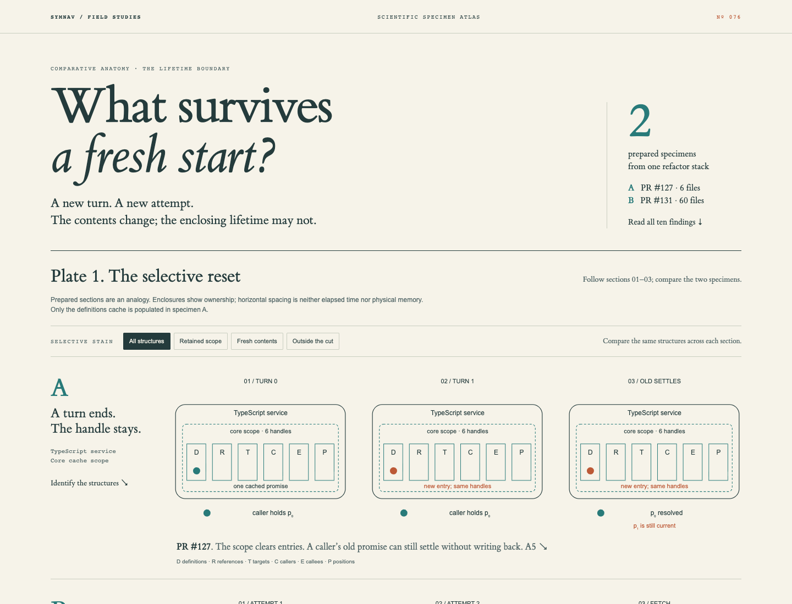 |
Approximately 30 minutes for this implementation, including required reading, recordings, source reconciliation, browser inspection and documentation. Earlier harness attempts are preserved separately and are not included in that estimate. | Some repeated owner labels in the serial sections could shrink for an expert audience. The prose structure notes are longer than the visual plate; error selection earns that space, but the ownership explanation partly repeats what the plate already shows. The phone layout trades horizontal comparison for a substantially longer page. | README# scientific-specimen-atlas ## Entry point Open [index.html](index.html) directly, offline: ```sh open ~/projects/rich-review-v2/experiments/76-scientific-specimen-atlas/index.html ``` **What survives a fresh start?** compares two prepared specimens. Follow sections 01–03, use the selective stain to isolate a lifetime class, then change an intervention in the recorded experiment. Each of the ten findings links to its structure notes and returns to the same finding. Source receipts open locally; Escape closes them and restores focus. Prediction answers reveal locally. Nothing is stored. No install, server, network or live worktree is needed to read the page. On narrow screens the three sections stack vertically. JavaScript enables the figures and experiment controls; the complete finding register, structure notes, prediction answers and [source book](evidence.html) remain readable without it. ## Kind page ## Subjects pr-127 and pr-131. The narrow subject is **selective reset: which state survives a lifetime boundary?** This is not a whole-PR explanation or decision census. In #127 it follows cache handles, entries and caller-held promises. In #131 it follows the required delivery slice, per-attempt fetch state and outer reattachment state. Other policy consumers, timing purposes, resource thresholds and daemon mechanisms are outside this specimen. ## Declared choices - Role framing: learner reading a comparative scientific atlas, with a controlled intervention and a prediction after the overview. - Box lenses: static ownership (core implementation / TypeScript instance; daemon policy / CLI consumer) and lifecycle ownership (persistent enclosure, resettable contents, caller-held value). No process migration is implied. - Opening style: picture and a marked prepared-section analogy. The same structures are registered at three discrete checkpoints. - Shape: pyramid. The overview plus the ten open findings are the complete stopping layer. The laboratory, structure notes and source receipts add fidelity to those findings. - Navigation: linear reading with direct finding → structure → source exits; per-finding return anchors; native browser history; keyboard-accessible experiment tabs and selects; local prediction disclosures. No semantic zoom or free camera. - Trust posture: compare stated reasons with actual source and controlled execution. Specific rationale gaps remain in the opening register, including awaited release, larger fetch allowances, error provenance and exact test selection. No correctness verdict. - Persona: a teammate who knows the project but not these lifecycle implementations. - Representations used: paired serial sections; repeated faceted owner enclosures; stable handle cells; value and counter glyphs; selective lifetime staining; measured search-count plots; measured wire-count plots; before/head result tables; predict/reveal; pinned source receipts. - Importance rule: reset boundaries first, then what survives them, caller-visible differences, and limits of the evidence. File count does not determine diagram area. - Inputs used (beyond bundle): the four supplied base/head worktrees and their compiled modules; architecture spec at both heads; #131 policy rationale record; relevant follow-up-spec searches; source tests and test adapter; Git pins and clean tracked status; controlled recordings and focused head test execution. Bundles used: both PR bodies and commit messages, file inventories and patches; relevant repo-rules searches. The precomputed symbol overviews were not used. - Tech: Observable Plot 0.6.17, Tufte CSS 1.8.0 with local et-book fonts, native HTML/CSS/JavaScript, esbuild 0.25.10, Python source capture, Node recording, Playwright 1.61.1 and system Chrome. All reading assets are local. Codex harness; no delegated agents. - Built on earlier experiment(s): read the required 04-textbook-chapter, 23-zoom-canvas, 36-be-weird-a, 37-be-weird-b and 53-be-weird-53 READMEs. Borrowed their standard of bounded recordings, pinned receipts, explicit analogy limits and reliable returns. Surveyed representation declarations in 60–73 and read further portions of 62-policy-stained-glass, 64-lifecycle-music-box, 68-semantic-zoom-microscope and 70-bauhaus-daemon-grammar. No earlier implementation, coordinates, evidence bank or recording was reused. Existing brief/harness/worker-log files in this folder were preserved. ## What I tried I considered a lifetime timeline and a policy-capture atlas, then chose serial sections of **nested scope** so the small and wide PR share a visual grammar. This avoids repeating the identity matrix in 36, orthogonal navigation in 37, release spring in 53, microscope camera in 68 or policy distribution figure in 62. The first render used marks that were too small and three horizontal sections on phones. Screenshots led to larger glyphs and labels, rounded owner enclosures, real dashed reset boundaries, and vertically faceted phone sections. A cleared-but-not-yet-queried cache checkpoint initially looked like a replacement entry; the recorder now verifies zero entries there and the chart uses an open mark. Release tables now show the pending checkpoint as well as settlement. The custom fetch-allowance experiment is a useful negative result: allowance three produces **one fetch**, then `corrupt`, when the resumed stream ends incomplete. The first fetch has no repeated-fetch loop on that path. A separate recording preserves the later-error difference between base and head. No complete representation was abandoned. The initial recorder used the wrong symbol-identity shape; it was corrected before any displayed observations were captured. ## What I would drop Some repeated owner labels in the serial sections could shrink for an expert audience. The prose structure notes are longer than the visual plate; error selection earns that space, but the ownership explanation partly repeats what the plate already shows. The phone layout trades horizontal comparison for a substantially longer page. ## What I would do next Give readers the plate alone and ask them to predict which handle, promise and counter survives each boundary. Compare their explanations with those elicited by a conventional before/after diagram; no human comprehension trial has been performed. ## Time spent Approximately 30 minutes for this implementation, including required reading, recordings, source reconciliation, browser inspection and documentation. Earlier harness attempts are preserved separately and are not included in that estimate. ## Visual-variable legend | Variable | Meaning | Limit | | --- | --- | --- | | Teal / rust on the plate | Original or retained scope / contents belonging to a newly begun scope | Pigment is a lifetime class, not a memory address or object identity across builds. | | Enclosure and nesting | Who holds the state; inner dashed enclosure marks the reset scope | Geometry is a prepared-section analogy, not physical memory or a biological measurement. | | Rectangle / circle / diamond | Reusable structure / value or promise / counter | The output glyph groups receiver and output for the attempted transfer; the label names output. | | Position outside the cache scope | The caller still holds the old promise | It does not imply a different process or a garbage-collection measurement. | | Repeated section position | The same role at the next observation checkpoint | Spacing is not elapsed time; section count is not a retry budget. | | Selective stain | Isolate retained, fresh or outside state without hiding the findings | This is an inspection control, not live execution. | | Cache laboratory y-position | Number of definition searches actually started | Empty controlled workspace; no duration or semantic answer quality is measured. | | Filled teal / rust / open cache point | Original entry / replacement entry / cleared and still empty | Handles are checked independently; a new entry is not a new handle. | | Delivery laboratory x-position and shape | Recorded execute/fetch request counts; square = execute, diamond = fetch | Teal/base and rust/head are explicitly relabeled for this chart. Execute requests are not proof of command reruns. | The six cache abbreviations and both counter denominators are decoded beside the figures. No quantity is encoded in enclosure size. ## Libraries considered and used | Library / system | Decision | | --- | --- | | [Observable Plot](https://observablehq.com/plot/) | Used for shared scales, repeated facets, SVG marks, text and measured plots. It lays out the comparison panels and their axes; authored coordinates encode semantic containment rather than graph routing. | | [Tufte CSS](https://edwardtufte.github.io/tufte-css/) | Used for et-book typography and publication figure conventions, with a local responsive atlas stylesheet. Font files and licenses are included. | | [Vega-Lite](https://vega.github.io/vega-lite/docs/facet.html) | Evaluated through its official faceting documentation. Capable of the same repeated-view structure, but its runtime and declarative selection model add little for these few ordinary DOM controls. | | Quarto | Considered as a notebook/report shell. No kernel, notebook dependency or report server is needed for saved observations and local source excerpts. | | Handwritten graph layout / zoom / animation | Not used. This is a faceted specimen field, not a routed node graph or camera; Plot handles the relevant layout. | ## What the form teaches better or worse The prepared sections let the eye follow **one retained enclosure and one replaced interior at the same time**. Registering the two specimens makes the shared principle visible: a new inner scope does not reset its enclosing lifetime. The outside promise also makes “cleared” visibly different from “cancelled.” Staining gives the reader a way to inspect that distinction without switching to a different diagram. A conventional before/after diagram would show the package move more economically. It would also be easier to scan on a phone. Serial sections do not naturally show which error escapes a nested `try/catch`, so that finding uses a recorded comparison and a short source explanation. The atlas does not prove that this visual grammar improves understanding; that remains a reader study. ## Evidence and verification - [Source capture](evidence/sources.json): 15 frozen documents, 20 selected receipts and four revision pins. Worktree bytes are checked against their pinned Git objects; document hashes and line ranges are preserved. Both supplied PR bodies and all their commit messages are captured. - [Raw observations](evidence/observations.json): ten cache scenarios across base/head; eight scripted local-socket runs; four isolated outer-completion probes; three factory outcomes. The browser selects recordings rather than executing or simulating arbitrary cases. - [#127 focused head tests](evidence/tests-127-head.txt): **15 passed** across the core scope and semantic service suites. The five original service tests and helpers are byte-identical to base; six service and four core cases are added. - [#131 focused head tests](evidence/tests-131-head.txt): **35 passed** in the existing local-daemon-transport execution suite. The atlas does not claim a full-PR test audit or end-to-end parity. Existing base suites were not rerun. - [Browser checks](evidence/browser-checks.json): direct file reading, all four stains, all ten finding returns, browser history, all 20 source dialogs, both experiment selectors, keyboard tabs, prediction disclosures, standalone receipts, and no-JavaScript reading. No page errors, external runtime requests or horizontal page overflow at 320/390/768/1440 pixels. - [Screenshots](screenshots/): the desktop overview, both laboratory views, phone specimen and laboratory, and source dialog were inspected. The selected screenshot is an artifact check, not evidence of Symnav behavior. - [Pyramid mapping](evidence/pyramid-map.md) and [static checks](evidence/static-checks.json) record scope, sources, internal links and clean tracked worktrees. All four worktrees successfully ran `pnpm build`; only permitted build output was written there. Symnav source and branches were not changed, committed, pushed or rebased. Queue, index and experiment commit handling remain with the campaign orchestrator. ## Regeneration Reading the finished page requires none of these commands. To regenerate from the supplied, built worktrees: ```sh cd ~/projects/rich-review-v2/experiments/76-scientific-specimen-atlas npm ci npm run capture npm run record npm run build npm run check node scripts/verify.mjs ``` The browser checker defaults to system Google Chrome; `ATLAS_CHROME` can select another executable. Capture and recording write only inside this experiment and temporary fixture directories they create themselves. They do not rerun the focused Symnav suites. |
| 75 | message-particle-chamber attempt 1: codex |
other: interactive simulation | pr-148 only — **Own daemon mechanisms behind DaemonClient**. Base `ba53c8e1662fd86d198b95321c90d9c9bef10184` → head `20838f8dbf413e04767543eb2380d0d114da6c60`. | Role framing: learner operating a particle chamber. The narrow lesson is accepted-work identity versus transfer progress versus completion ownership. · Box lenses: static package ownership and runtime/data ownership. The opening strip distinguishes package staging from the still-active CLI compatibility graph; chamber enclosures distinguish daemon spool, client capture and accepted ledger. · Opening style: a lossy physical picture of a broken connection with retained particles. The first state already contains two captured records. · Shape: a complete surface consisting of the opening ownership strip, instrument/legend and seven always-open facts. Optional experiment checkpoints and receipts refine those facts. This surface spans several viewports; the headline alone is not the complete pyramid. · Navigation: linear playback/stepping and ordinary scrolling, plus direct scene/condition selection, fact-to-experiment links, source dialogs, return links and scene/condition URL fragments. · Trust posture: source and controlled observations, with stated rationale separated from bounded rationale gaps. The artifact teaches without collecting verdicts, comments or review state. · Persona: a teammate familiar with symnav but new to resumable daemon delivery. · Representations used: byte accumulation at a length gate; record particles docking in ordered capture slots; curved fetch and reattachment trails; identity fusion and rejection rebound; diagnostic-halo decay with persistent spool/ledger; source receipts and a compact open decision register. · Importance rule: replay authority and the distinction between completion owners first; validation, retention, staging and scoped test changes stay on the complete surface. · Inputs used (beyond bundle): read-only base/head source and built classes; relevant architecture/follow-up specifications; compatibility-freeze test; four relocated test pairs; new client capture/composition tests; controlled recordings; builds and focused existing tests. Bundle inputs used: `pr.json` and `files.txt`; scoped source-to-source comparisons supplied the relevant diffs. No other PR worktree, implementing conversation or precomputed symbol overview was used. · Tech: PixiJS 8.17.0 ParticleContainer/Graphics/Text; GSAP 3.13.0 timelines and MotionPathPlugin; esbuild 0.25.10; Node recordings/source capture; Playwright 1.61.1 with system Chrome; axe-core accessibility checks. Local system fonts. Codex harness; no delegated agents. · Built on earlier experiment(s): no implementation or evidence reused. Read required READMEs **04-textbook-chapter**, **23-zoom-canvas**, **36-be-weird-a**, **37-be-weird-b**, **53-be-weird-53**, and additionally **15-message-choreography-sim**, **64-lifecycle-music-box**, **66-boundary-subway**, **67-blast-radius-terrain**, **68-semantic-zoom-microscope**, **69-command-me-reader**, **70-bauhaus-daemon-grammar**. Borrowed bounded recording claims, exact receipts, complete surfaces and focus/keyboard standards. Avoided repeating message envelopes, transit routes, identity matrices, orthogonal navigation and a resistance bench. READMEs 72–74 were not present when surveyed. | 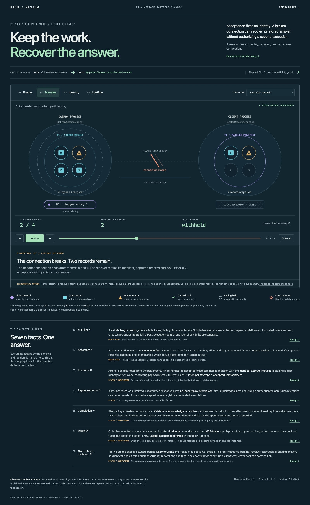 |
Approximately one hour including guidance/source reading, library evaluation, recordings, implementation, verification and screenshot inspection. | The repeated empty capture slots in the identity scene add less than its single accepted-entry collision. The large two-process instrument also costs vertical space, and its full geometry requires horizontal scrolling on a phone. | README# message-particle-chamber ## Entry point Open [index.html](index.html) directly, or run: ```sh open ~/projects/rich-review-v2/experiments/75-message-particle-chamber/index.html ``` **Keep the work. Recover the answer.** starts paused at an interrupted result transfer. Choose Frame, Transfer, Identity or Lifetime, then a condition. Play, step or scrub. In **Hold the first append**, release the injected barrier to advance the offset. “Inspect this boundary” opens its source receipt; Escape closes it and restores focus. The seven open facts link into their experiments and have a return link. No installation, server, network or live worktree is required to read it. WebGL and JavaScript enable the chamber. The complete facts and [source book](sources.html) remain available without JavaScript. Small screens scroll the chamber horizontally inside its own viewport; the controls and state description fit the page. ## Kind other: interactive simulation ## Subjects pr-148 only — **Own daemon mechanisms behind DaemonClient**. Base `ba53c8e1662fd86d198b95321c90d9c9bef10184` → head `20838f8dbf413e04767543eb2380d0d114da6c60`. ## Declared choices - Role framing: learner operating a particle chamber. The narrow lesson is accepted-work identity versus transfer progress versus completion ownership. - Box lenses: static package ownership and runtime/data ownership. The opening strip distinguishes package staging from the still-active CLI compatibility graph; chamber enclosures distinguish daemon spool, client capture and accepted ledger. - Opening style: a lossy physical picture of a broken connection with retained particles. The first state already contains two captured records. - Shape: a complete surface consisting of the opening ownership strip, instrument/legend and seven always-open facts. Optional experiment checkpoints and receipts refine those facts. This surface spans several viewports; the headline alone is not the complete pyramid. - Navigation: linear playback/stepping and ordinary scrolling, plus direct scene/condition selection, fact-to-experiment links, source dialogs, return links and scene/condition URL fragments. - Trust posture: source and controlled observations, with stated rationale separated from bounded rationale gaps. The artifact teaches without collecting verdicts, comments or review state. - Persona: a teammate familiar with symnav but new to resumable daemon delivery. - Representations used: byte accumulation at a length gate; record particles docking in ordered capture slots; curved fetch and reattachment trails; identity fusion and rejection rebound; diagnostic-halo decay with persistent spool/ledger; source receipts and a compact open decision register. - Importance rule: replay authority and the distinction between completion owners first; validation, retention, staging and scoped test changes stay on the complete surface. - Inputs used (beyond bundle): read-only base/head source and built classes; relevant architecture/follow-up specifications; compatibility-freeze test; four relocated test pairs; new client capture/composition tests; controlled recordings; builds and focused existing tests. Bundle inputs used: `pr.json` and `files.txt`; scoped source-to-source comparisons supplied the relevant diffs. No other PR worktree, implementing conversation or precomputed symbol overview was used. - Tech: PixiJS 8.17.0 ParticleContainer/Graphics/Text; GSAP 3.13.0 timelines and MotionPathPlugin; esbuild 0.25.10; Node recordings/source capture; Playwright 1.61.1 with system Chrome; axe-core accessibility checks. Local system fonts. Codex harness; no delegated agents. - Built on earlier experiment(s): no implementation or evidence reused. Read required READMEs **04-textbook-chapter**, **23-zoom-canvas**, **36-be-weird-a**, **37-be-weird-b**, **53-be-weird-53**, and additionally **15-message-choreography-sim**, **64-lifecycle-music-box**, **66-boundary-subway**, **67-blast-radius-terrain**, **68-semantic-zoom-microscope**, **69-command-me-reader**, **70-bauhaus-daemon-grammar**. Borrowed bounded recording claims, exact receipts, complete surfaces and focus/keyboard standards. Avoided repeating message envelopes, transit routes, identity matrices, orthogonal navigation and a resistance bench. READMEs 72–74 were not present when surveyed. ## What I tried Considered rigid-body collision physics, then chose deterministic protocol responses: a checksum failure is a predicate, not an elastic force. Every particle encodes a byte, message, record, identity or diagnostic trace; there is no ambient particle field. The first instrument could explain the append barrier but could not hold it. Added a held-append condition tied to a real promise-gated receiver probe. Browser checks caught an off-by-one visual arrival at the final byte and an unlabeled-role accessibility issue; both were corrected. Screenshot inspection also corrected a lifetime scene that said “await manifest” despite retained records, and a conflicting-identity label that incorrectly suggested the original work had failed. No implemented representation was abandoned. The initial failed browser receipt is retained. ## What I would drop The repeated empty capture slots in the identity scene add less than its single accepted-entry collision. The large two-process instrument also costs vertical space, and its full geometry requires horizontal scrolling on a phone. ## What I would do next Ask an unfamiliar reader to predict what survives a disconnect, trace expiry and acknowledgement, then compare with an ordinary sequence diagram. No human comprehension trial was performed here. ## Time spent Approximately one hour including guidance/source reading, library evaluation, recordings, implementation, verification and screenshot inspection. ## Visual-variable legend | Variable | Meaning | Limit | | --- | --- | --- | | Violet circles | Control messages: acceptance, manifest, end | Letter glyphs identify the selected control; not actual serialized shapes | | Cyan squares / amber triangles | stdout / stderr records | Numeric labels, not color, carry sequence identity | | Tiny colored dots in Frame | One dot per actual encoded byte: prefix, header, raw payload | Spatial grid is invented; 186-byte fixture is real | | R7 / T1 / 0…3 | Request, transfer and record identity | Fixed fixture identifiers, not production values | | Straight outbound / curved return trails | Original delivery / fetch, reattachment or acknowledgement | Direction carries mechanism; lengths and travel times have no protocol meaning | | Dock, fuse, coral rebound | Append completes, matching ledger entry is reused, or validation rejects | Rebound is never a real response packet; it does not fail the original accepted entry | | Enclosures and filled slots | Process boundary and ownership of stored records | Grouped module geometry is lossy; the package boundary is shown separately | | Fading dashed halo | Disconnected diagnostic trace expires | Fade is an analogy for a discrete callback; no gradual spool eviction | | Empty server spool + retained R7 | Ack cleanup and retained ledger bookkeeping | Normal cleanup succeeds in this recording; source also records cleanup errors | The compact on-page legend and local analogy notice accompany the instrument. Fixed timing, geometry, illustrative transitions and source-walk checkpoints are explicitly identified. ## Libraries considered and used Used [PixiJS ParticleContainer](https://pixijs.com/8.x/guides/components/scene-objects/particle-container) to batch byte/trail marks and its scene graph for labels and boundaries. Used [GSAP timelines](https://gsap.com/docs/v3/GSAP/Timeline/) for playback, seeking and interpolated transitions; MotionPathPlugin supplies trajectory interpolation. Versions, notices and licenses are bundled locally. Considered [Matter.js](https://brm.io/matter-js/docs/classes/Collision.html), but physical momentum would invent scheduling and collision semantics. Considered Three.js and regl: their depth/shader work offered no benefit for this planar ownership lesson. No custom animation clock, physics engine, diagram router or graph layout was implemented. ## What the weird form taught better or worse Keeping two particles on the client side when the connection disappears makes partial capture tangible. Fetching only the remaining ordinals distinguishes transfer recovery from execution replay. Holding a particle outside its slot while the offset stays fixed expresses the append barrier. Letting only the halo disappear makes the trace/spool/ledger lifetime split visible in a way a single “completed” state obscures. The form is worse at wire-field syntax, exception taxonomy and rationale. Those need terse text and receipts. A conventional sequence diagram is more compact and requires less legend learning. These are design judgments, not measured comprehension gains. ## Evidence and verification - [Recorded observations](evidence/observations.json): real compiled base CLI and head package classes; fragmented/coalesced framing, corruption, held append, eight execution-client cases, ledger identity/conflict, retry authority, trace expiry and ack cleanup. All recorded base/head observations match for these fixtures. - [Recorder](scripts/record.mjs): scripted incoming bytes, injected acknowledgement failure, real in-memory capture/spool, fixed identities/clocks, and a 12 ms trace-retention override. The UI shows the current five-minute policy and marks compressed time. These are neither live daemon/network traces nor performance measurements. One lifetime fetch is a labeled source walk supported separately by the client resume recording. - [Source receipts](evidence/receipts.json): 24 frozen excerpts/comparisons with revisions, line numbers and full-file hashes where applicable. The page runs authored explanatory transitions over the measured facts; it does not execute symnav in the browser. - [Test comparison](evidence/test-inventory.json): the four selected test bodies preserve assertions; only imports and the delivery test's fake-clock constructor differ. This is a scoped comparison, not a claim about all tests in the 153-file PR. - Existing focused tests passed: **44 base tests and 44 head tests**, four files per revision. [Base report](evidence/base-tests.json), [head report](evidence/head-tests.json). Both relevant builds succeeded. New client-composition tests are cited as source, not included in this execution count. - [Browser checks](evidence/browser-checks.json): **105 checkpoints across 14 conditions**, boundary receipts and focus return, held append, pause/scrub, direct-file opening, responsive layouts, reduced motion and no-JavaScript reading. No page errors, external requests or automated WCAG A/AA violations. [Final focused checks](evidence/final-browser-checks.json) cover the corrected labels, fact return links and larger phone rendering. [Screenshots](screenshots/) were visually inspected. - [Static checks](evidence/static-checks.json): local links/anchors, source hashes and excerpt equality, required README headings, absence of review storage and clean tracked worktrees. The complete surface-to-mechanism mapping was also inspected manually. No Symnav source or branch was modified. Index, queue, campaign logs and publishing are left to the campaign. All authored output is in this experiment folder. Rationale search was bounded to the supplied PR/commits and relevant specifications; “unexplained” never claims that no rationale exists elsewhere. ## Regeneration Reading needs none of these steps. With the pinned worktrees built, run from this folder: ```sh npm ci node scripts/record.mjs node scripts/capture.mjs npm run build ``` For browser checks, run `npm start`, then `npm run check` in a second terminal. System Google Chrome is required by the checked-in browser script. These scripts write only to this experiment or temporary fixture directories. The received brief and design/attempt notes are retained beside the artifact. |
| 74 | policy-reading-loom attempt 1: claude-opus → attempt 2: claude-opus → attempt 3: codex |
page — interactive grid | pr-131 only: **Route daemon thresholds through centralized policy**. Base `b3a6c4fa5dcf96223765aa147a9e094cd4a51b0e` → head `b100221db48754656328391b878299c5a0bab443`. Sixty changed files, +1,298/−544. The preceding policy snapshot is existing context, not attributed to this change. | Role framing: a learner comparing policy identity with consumer purpose. Narrow question: **does sharing a field mean sharing a job, and does sharing a number mean sharing a field?** · Box lenses: static package/module ownership and composition/input authority. Policy lives in `@symnav/daemon`; the named consumer families remain in `apps/cli`. The earlier parent-side worker parse is an explicit runtime failure-boundary exception. · Opening style: a marked loom analogy and before/after authority strip. Intuition comes from pulling one leaf through several consumers, then pulling equal numbers that do not connect. · Shape: complete stopping layer = opening + fabric/legend + twelve open readings. The optional inspector repeats the same subjects as wiring and source receipts. Eight readings have stated reasons; four retain specific rationale gaps. A stated general migration reason does not fill a specific implementation gap. · Navigation: address `(consumer family, policy slice, depth)` plus an independent highlighted thread set. Seven rows × seven columns remain fixed at every depth. Even empty coordinates can be selected. Linear active-crossing traversal, reading-to-crossing jumps, exact returns, URL fragments and history supplement the grid. · Trust posture: pinned source, conservative reasons, bounded actual-method observations and explicit changes to test premises. No correctness judgment, verdict buttons, comments, review storage or collected responses. · Persona: a TypeScript-familiar teammate who has not followed daemon policy composition. · Representations used: orthogonal matrix; individual field strands; shared/unique knots; reading/forwarding ties; rationale rims; three thread comparisons; byte-proportional recorded output bars; open marginal readings; exact line-numbered source dialogs. · Importance rule: distinguish field identity, purpose and enforcement first. Recovery errors, parent validation, adapter behavior and deleted/changed tests remain on the open surface even when they make no attractive strand. · Inputs used (beyond bundle): pinned head/base implementations and changed test source, unchanged policy implementation and tests, `plans/005/daemon-policy.md`, architecture specification, Git blobs/status, and a fresh probe of actual capture/codec/worker-validator methods. Bundle used: `pr.json` including all six commits, `diff.patch`, `files.txt`, and relevant `repo-rules.md` clauses. Overview dumps and other subjects were not used. No implementing conversation was supplied. · Tech: D3 7.9.0, HTML/CSS/SVG, esbuild 0.25.10, Python source capture, Node method probe, Playwright 1.61.1 and system Chrome. System fonts; local assets and bundled runtime dependencies. Codex; no subagents. · Built on earlier experiment(s): **37-be-weird-b** supplied the independent-addressing principle, extended here from decision × depth to family × slice with depth held separately. The required READMEs for **04-textbook-chapter, 23-zoom-canvas, 36-be-weird-a, 37-be-weird-b and 53-be-weird-53** informed pinned receipts, bounded recordings, complete stopping layers and focus returns. No earlier implementation, evidence bank or probe was copied. A README representation-field survey across existing experiments, plus closer reads of **62-policy-stained-glass** and **67-blast-radius-terrain**, avoided glass regions, ranked readership, terrain and shared-file overlap as the explanation. Representation metadata for **61, 65, 66, 68 and 69** was also inspected. The distinction here is a fixed individual-leaf matrix with three independent reading coordinates; it does not count references or project overlaps into geography. | 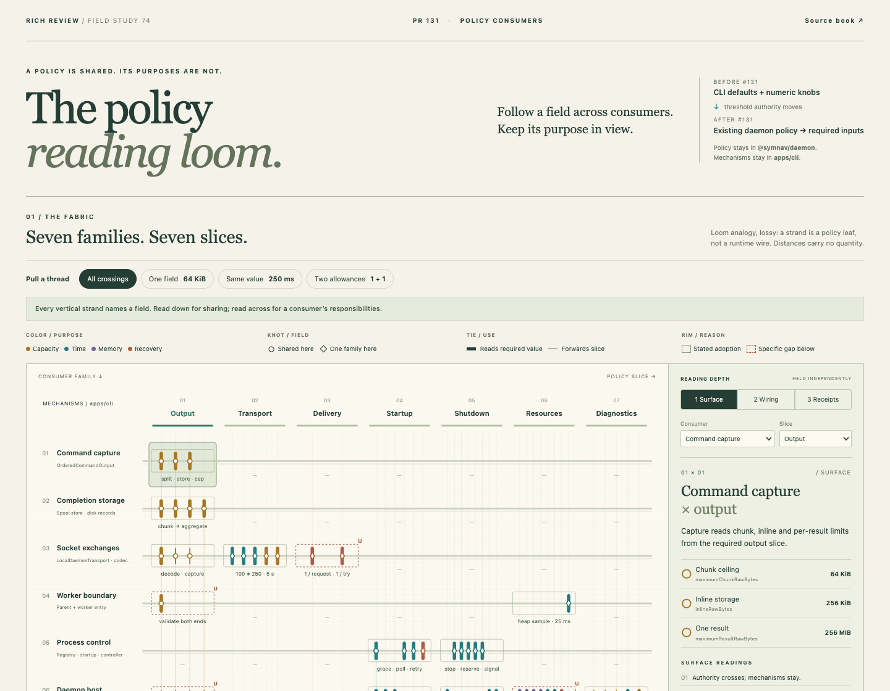 |
Approximately one hour, including required reading, source inspection, library evaluation, implementation, method recording, browser checks and documentation. | The oversized opening title and tiny secondary module labels. The open readings are lengthy, but the representation cannot honestly encode error provenance or adapter precedence without words. The inner inspector scrollbar also costs discoverability; the full source book and open readings provide a simpler reading path. | README# policy-reading-loom ## Entry point Open [index.html](index.html) directly, offline: ```sh open ~/projects/rich-review-v2/experiments/74-policy-reading-loom/index.html ``` No installation, server or live worktree is needed to read it. Select a consumer–slice crossing, then choose **Surface / Wiring / Receipts**. Depth stays fixed when either coordinate changes. **One field 64 KiB**, **Same value 250 ms**, and **Two allowances 1 + 1** pull different sets of strands. The exact-field selector exposes every drawn leaf. On a focused crossing, arrow keys move through the grid; Page Up/Down changes depth. **Previous / Next** follows the fifteen active crossings. **Return to surface** keeps the crossing. **Locate crossing** restores grid focus. Browser Back restores the address; receipt dialogs close with Escape and return focus. All twelve open readings and the [source book](evidence.html) work without JavaScript. Narrow screens scroll the matrix inside its own viewport and provide ordinary coordinate selectors. ## Kind page — interactive grid ## Subjects pr-131 only: **Route daemon thresholds through centralized policy**. Base `b3a6c4fa5dcf96223765aa147a9e094cd4a51b0e` → head `b100221db48754656328391b878299c5a0bab443`. Sixty changed files, +1,298/−544. The preceding policy snapshot is existing context, not attributed to this change. ## Declared choices - Role framing: a learner comparing policy identity with consumer purpose. Narrow question: **does sharing a field mean sharing a job, and does sharing a number mean sharing a field?** - Box lenses: static package/module ownership and composition/input authority. Policy lives in `@symnav/daemon`; the named consumer families remain in `apps/cli`. The earlier parent-side worker parse is an explicit runtime failure-boundary exception. - Opening style: a marked loom analogy and before/after authority strip. Intuition comes from pulling one leaf through several consumers, then pulling equal numbers that do not connect. - Shape: complete stopping layer = opening + fabric/legend + twelve open readings. The optional inspector repeats the same subjects as wiring and source receipts. Eight readings have stated reasons; four retain specific rationale gaps. A stated general migration reason does not fill a specific implementation gap. - Navigation: address `(consumer family, policy slice, depth)` plus an independent highlighted thread set. Seven rows × seven columns remain fixed at every depth. Even empty coordinates can be selected. Linear active-crossing traversal, reading-to-crossing jumps, exact returns, URL fragments and history supplement the grid. - Trust posture: pinned source, conservative reasons, bounded actual-method observations and explicit changes to test premises. No correctness judgment, verdict buttons, comments, review storage or collected responses. - Persona: a TypeScript-familiar teammate who has not followed daemon policy composition. - Representations used: orthogonal matrix; individual field strands; shared/unique knots; reading/forwarding ties; rationale rims; three thread comparisons; byte-proportional recorded output bars; open marginal readings; exact line-numbered source dialogs. - Importance rule: distinguish field identity, purpose and enforcement first. Recovery errors, parent validation, adapter behavior and deleted/changed tests remain on the open surface even when they make no attractive strand. - Inputs used (beyond bundle): pinned head/base implementations and changed test source, unchanged policy implementation and tests, `plans/005/daemon-policy.md`, architecture specification, Git blobs/status, and a fresh probe of actual capture/codec/worker-validator methods. Bundle used: `pr.json` including all six commits, `diff.patch`, `files.txt`, and relevant `repo-rules.md` clauses. Overview dumps and other subjects were not used. No implementing conversation was supplied. - Tech: D3 7.9.0, HTML/CSS/SVG, esbuild 0.25.10, Python source capture, Node method probe, Playwright 1.61.1 and system Chrome. System fonts; local assets and bundled runtime dependencies. Codex; no subagents. - Built on earlier experiment(s): **37-be-weird-b** supplied the independent-addressing principle, extended here from decision × depth to family × slice with depth held separately. The required READMEs for **04-textbook-chapter, 23-zoom-canvas, 36-be-weird-a, 37-be-weird-b and 53-be-weird-53** informed pinned receipts, bounded recordings, complete stopping layers and focus returns. No earlier implementation, evidence bank or probe was copied. A README representation-field survey across existing experiments, plus closer reads of **62-policy-stained-glass** and **67-blast-radius-terrain**, avoided glass regions, ranked readership, terrain and shared-file overlap as the explanation. Representation metadata for **61, 65, 66, 68 and 69** was also inspected. The distinction here is a fixed individual-leaf matrix with three independent reading coordinates; it does not count references or project overlaps into geography. ## What I tried Compared spreadsheet grids, Plot cells and D3 before implementation. A cell containing one aggregate symbol would hide whether two families read the same leaf, so the final fabric draws every one of the 38 traced leaves as its own vertical strand. Fifteen family–slice crossings contain 53 knots. Light ties distinguish forwarding from reading. Empty grid positions remain navigable to preserve the coordinate algebra. The first browser render exposed a missing favicon; it was fixed. Source reconciliation added the base production entry for the already-hard-RSS reporting claim and the benchmark return shape for the adapter claim. Full-width screenshots made it clear that the whole grid needs its own reading viewport below the large opening. On phones, the grid remains horizontally scrollable while the inspector uses normal text and selectors. Draft captures are retained under [evidence/attempts](evidence/attempts/). No complete representation was abandoned. The real-method probe uses source files bundled from each pinned worktree, avoiding dependence on pre-existing `dist/` freshness. The head fixture sets chunk/inline/result/aggregate to 4/8/12/24 bytes. Capture produces 4 + 4 + 2 byte records; base produces one 10-byte record. Both decode to the same text. A five-byte codec or worker message passes the base limit and is rejected under the head fixture's four-byte ceiling. These observations teach policy propagation; they are not an end-to-end parity result. ## What I would drop The oversized opening title and tiny secondary module labels. The open readings are lengthy, but the representation cannot honestly encode error provenance or adapter precedence without words. The inner inspector scrollbar also costs discoverability; the full source book and open readings provide a simpler reading path. ## What I would do next Ask a fresh reader to distinguish the chunk strand from the three 250 ms strands, then compare two consumers while holding Receipts fixed. Compare their explanation with one produced from an ordinary dependency diagram. No human comprehension trial was run. ## Time spent Approximately one hour, including required reading, source inspection, library evaluation, implementation, method recording, browser checks and documentation. ## Visual-variable legend | Variable | Encoded fact | Limit | | --- | --- | --- | | Row | Curated consumer family | Multiple named classes can be grouped; these are not processes or reference counts. | | Column | Actual `DaemonPolicyValues` slice | Seven slices remain fixed at every reading depth. | | Vertical strand | One exact policy leaf | Crossing an unrelated row without a knot does not connect that row. Strand length is not measured reach or runtime traffic. | | Color | Capacity ochre; time teal; memory violet; recovery rust | Purpose categories are an authored reading aid, not types in the repository. Values carry units in the inspector. | | Circle / diamond knot | Leaf appears in several drawn families / only one drawn family | A diamond does not imply only one method or call site in the repository. | | Heavy / light tie | Family reads a required value / forwards a slice to another shown family | Required refers to the input contract; it does not mean every constructor validates policy at runtime. | | Solid / dashed cell rim, `U` | Stated adoption reason / specific rationale gap on the open surface | A dashed rim does not mean unvalidated, incorrect or more severe. General reasons can coexist with specific gaps. | | Highlight | Selected exact leaf, equal-value set, or two delivery fields | Highlight changes inspection only. It does not edit policy or simulate execution. | | Depth control | Surface, wiring or exact receipts at the same coordinate | No semantic zoom; matrix position and geometry do not change. | | Recorded bar width | Bytes per output record in the saved probe | Injected tiny policy fixture; no daemon, socket or performance measurement. | The source map intentionally omits `resources.effectiveMemoryBytes` as a direct consumer leaf: it belongs to central derivation. The map also omits transitive references and composition sites outside the named family inventory. Its 38 leaves are an authored route model, not a compiler census. See [field-map.md](evidence/field-map.md). ## Libraries considered and used | Option | Evaluation | | --- | --- | | [D3 band scales](https://d3js.org/d3-scale/band), [data joins](https://d3js.org/d3-selection/joining), symbol shapes | **Used.** Nested band scales place slices, families and leaves. D3 joins render stable crossings and thread selection. SVG makes one strand continuous across cell boundaries. No custom graph layout, diagram router or camera engine was needed. | | [AG Grid cell components](https://www.ag-grid.com/javascript-data-grid/component-cell-renderer/) | Considered. Its grid interactions are attractive, but a continuous leaf crossing several rendered cells would still need a separate overlay. Spreadsheet editing, sorting and virtualization do not help this fixed 7 × 7 comparison. | | [Handsontable cell renderers](https://handsontable.com/docs/javascript-data-grid/cell-renderer/) | Considered. Appropriate for cell-oriented data manipulation; this read-only artifact needs continuous strands and a depth coordinate outside the grid. | | [Observable Plot cell mark](https://observablehq.github.io/plot/marks/cell) | Considered. A strong compact matrix alternative. Multiple leaf knots, mixed forwarding weights and independent coordinate focus fit direct D3 selection more naturally here. | | CSS Grid | Used for page/inspector layout. D3 supplies the matrix's mature rendering and coordinate helpers. | Runtime dependencies are bundled locally with [third-party notices](THIRD-PARTY-NOTICES.txt). No hosted fonts, APIs or network requests are required to read the artifact. ## What the form teaches better or worse The same vertical line can enforce different jobs without splitting into unrelated arrows: capture, spool, codec and worker all use the chunk leaf. Conversely, three aligned-looking 250 ms values remain physically separate strands in different slices. Circle/diamond shape and heavy/light ties let a reader separate sharing from forwarding. Keeping depth fixed makes comparison a change of address rather than a fresh descent through a hierarchy. A conventional diagram would label each relationship more directly and scale better when only a few relationships matter. The loom's geometry uses space for empty crossings and its smallest labels need the inspector. It does not explain recovery error provenance, test deletion or normalization through cloth alone; those receive open readings and paired receipts. These are design judgments, not measured learning outcomes. ## Evidence and verification - [Source model](evidence/model.json): 44 pinned full sources, 72 exact receipts, fields, cells, open readings and the complete 60-file diff inventory. [Supplied patch](evidence/diff.patch) is preserved. - [Pyramid map](evidence/pyramid-map.md): every open decision/surprise and its deeper entry and receipts. Full-file context is raw audit material and can contain unrelated implementation detail. - [Capture checks](evidence/capture-checks.json) and [static checks](evidence/static-checks.json): source/Git/hash equality, unchanged central policy and policy tests, the unused base startup timeout, all displayed field values, local links and clean tracked worktrees. - [Probe](evidence/probe.json): actual base/head capture and two validator methods, with expected records/results asserted before saving. No Symnav test suite or full daemon was executed; test excerpts describe source only. - [Browser checks](evidence/browser-checks.json): 147 coordinate/depth visits; commuting keyboard movement; all fifteen active crossings; all 38 exact thread selections; three comparison modes; reading/source returns; history; source-dialog focus; 320/390/768/1024/1440 px layouts; SVG text bounds; print; offline file opening; JavaScript-disabled readings/source book; and touch controls. Final checks report no page errors, external runtime requests or failed HTTP requests. The [targeted final check](evidence/final-browser-checks.json) covers the added base-constructor receipt, corrected source-book counts and final recovery wording. Together the passes exercise all 72 modal receipts. A stale open browser document caused one retained check timeout; reloading the rebuilt bundle resolved it. - [Screenshots](screenshots/): desktop opening, full fabric, equal values, shared chunk probe, recovery receipt and phone depth. Desktop, source and phone views were visually inspected. No Symnav source or branch was modified, committed, rebased or pushed. The experiment's existing brief and harness log were preserved. Shared campaign index, queue and commits are left to the orchestrator. ## Regeneration With the supplied worktrees still at their pins, run from this folder: ```sh npm ci npm run capture npm run probe npm run build npm run verify ``` For browser checks, run `npm run serve`, then `npm run check` in another terminal. Checks use installed Google Chrome. `LOOM_URL` can select a different local server URL. These tools write only inside this experiment. Reading the generated page requires none of them. |
| 73 | daemon-weather-map attempt 1: codex |
page, animated | stack`: main `b6801ebdd2421d0ca2e4bdd61ec0f04c24ddd73e` → #149 `d07002357d3e9596bfaae910a1ac63b77981620b`. | Role framing: learner reading a synoptic weather chart. Assigned angle: architecture as changing weather, with exact named mappings and explicit limits. · Box lenses: static source/package ownership and runtime request/result flow. Four selected client roles cross the package front while their process boundary stays fixed. Shared files may have other callers; the process placement depicts this selected path. · Opening style: picture and a marked weather analogy, under “The connection breaks. The request stays.” · Shape: complete chart, legend, and six open bulletin readings → selected mechanism → pinned source. The headline alone is not the complete layer. · Navigation: weather stations and conditions provide nonlinear entry; the six numbered readings, Previous/Next, and unrolled source book provide a linear route. Dialogs preserve the reader’s place. · Trust posture: distinguish source observations, stated preservation reasons, an unexplained exact calibration, illustrative scenarios, and executed tests. No correctness verdict or review collection. · Persona: a TypeScript-familiar teammate who knows Symnav but not its daemon recovery path. · Representations used: two contour fields, selected-role pressure counts, a moving package front, a fixed process divider, animated request/result vectors, condition-dependent precipitation, forecast hatching, retained/fresh/disposed state labels, a complete bulletin, and local source receipts. · Importance rule: distinguish a delivery attempt from accepted execution first; then ownership, durable receipt, recovery exhaustion, policy scope and rationale, and test evidence. No risk score. · Inputs used (beyond bundle): read-only main/tip source, policy record, architecture specification, Git blobs/status, and focused existing test execution. Bundle used: `inputs/stack/pr.json` including PR bodies and commit messages; a direct before/tip diff of the scoped transport test file was generated. No implementing conversation or production trace was supplied. Precomputed overviews were not used. · Tech: D3 7.9.0; esbuild 0.25.10 for a local classic-script bundle; Python source capture and verification; Playwright 1.61.1 with system Google Chrome. Native HTML dialogs, system fonts, and SVG. Codex; no subagents. · Built on earlier experiment(s): **04-textbook-chapter**, **23-zoom-canvas**, **36-be-weird-a**, **37-be-weird-b**, and **53-be-weird-53** informed evidence honesty, complete-layer coverage, and return navigation. **67-blast-radius-terrain** was read to avoid repeating its elevated policy-reader terrain: this chart instead compares source concentration and recovery conditions on a flat moving field. **61-pixel-causality-grid**, **63-daemon-constellation**, and other finished README representation fields informed the novelty survey. No predecessor implementation, measurements, decision register, or source bank was copied. The [survey](evidence/novelty-survey.json) covers 70 finished READMEs and found no weather/forecast representation. | 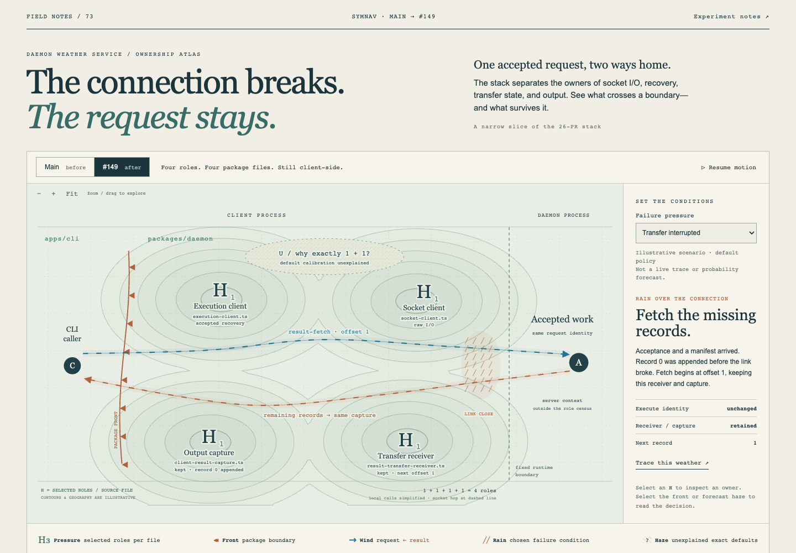 |
Approximately 45 minutes of active work, including reading, source reconciliation, construction, focused test runs, and browser inspection. | The outermost contour bands add atmosphere but carry less than the H count and named owner. The full source files are useful for auditing but bulky for normal reading. Optical zoom rescues phone labels while losing the simultaneous overview. | README# daemon-weather-map ## Entry point Open [index.html](index.html) directly: ```sh open ~/projects/rich-review-v2/experiments/73-daemon-weather-map/index.html ``` No installation, server, network connection, or worktree is needed to read the built page. **Main / #149** changes the ownership weather. **Failure pressure** selects four illustrative conditions. Select an **H**, the package front, or forecast haze to inspect its decision. **Trace this weather** follows the selected failure condition. **Previous / Next** traverses all six readings; Escape closes source, then the reading, and restores focus. Reading fragments and browser Back work. **+ / − / Fit**, dragging, and pinching magnify the chart. Motion can be paused and respects reduced-motion preferences. Desktop is the best surface for comparing the complete field. On a phone the fitted map is an overview; magnify and pan to read its labels. The complete bulletin, unrolled mechanisms, and standalone source receipts also work without JavaScript. ## Kind page, animated ## Subjects `stack`: main `b6801ebdd2421d0ca2e4bdd61ec0f04c24ddd73e` → #149 `d07002357d3e9596bfaae910a1ac63b77981620b`. The narrow teaching subject is **the client’s two recovery scopes and their ownership move**. A result fetch retains transfer state; an identical-request reattachment allocates fresh delivery state. This is not a complete inventory of all 26 PRs. PRs #138, #139, #142, #147, #148 and #149 provide the main explanations; #131 supplies additional policy context within the assigned stack. ## Declared choices - Role framing: learner reading a synoptic weather chart. Assigned angle: architecture as changing weather, with exact named mappings and explicit limits. - Box lenses: static source/package ownership and runtime request/result flow. Four selected client roles cross the package front while their process boundary stays fixed. Shared files may have other callers; the process placement depicts this selected path. - Opening style: picture and a marked weather analogy, under “The connection breaks. The request stays.” - Shape: complete chart, legend, and six open bulletin readings → selected mechanism → pinned source. The headline alone is not the complete layer. - Navigation: weather stations and conditions provide nonlinear entry; the six numbered readings, Previous/Next, and unrolled source book provide a linear route. Dialogs preserve the reader’s place. - Trust posture: distinguish source observations, stated preservation reasons, an unexplained exact calibration, illustrative scenarios, and executed tests. No correctness verdict or review collection. - Persona: a TypeScript-familiar teammate who knows Symnav but not its daemon recovery path. - Representations used: two contour fields, selected-role pressure counts, a moving package front, a fixed process divider, animated request/result vectors, condition-dependent precipitation, forecast hatching, retained/fresh/disposed state labels, a complete bulletin, and local source receipts. - Importance rule: distinguish a delivery attempt from accepted execution first; then ownership, durable receipt, recovery exhaustion, policy scope and rationale, and test evidence. No risk score. - Inputs used (beyond bundle): read-only main/tip source, policy record, architecture specification, Git blobs/status, and focused existing test execution. Bundle used: `inputs/stack/pr.json` including PR bodies and commit messages; a direct before/tip diff of the scoped transport test file was generated. No implementing conversation or production trace was supplied. Precomputed overviews were not used. - Tech: D3 7.9.0; esbuild 0.25.10 for a local classic-script bundle; Python source capture and verification; Playwright 1.61.1 with system Google Chrome. Native HTML dialogs, system fonts, and SVG. Codex; no subagents. - Built on earlier experiment(s): **04-textbook-chapter**, **23-zoom-canvas**, **36-be-weird-a**, **37-be-weird-b**, and **53-be-weird-53** informed evidence honesty, complete-layer coverage, and return navigation. **67-blast-radius-terrain** was read to avoid repeating its elevated policy-reader terrain: this chart instead compares source concentration and recovery conditions on a flat moving field. **61-pixel-causality-grid**, **63-daemon-constellation**, and other finished README representation fields informed the novelty survey. No predecessor implementation, measurements, decision register, or source bank was copied. The [survey](evidence/novelty-survey.json) covers 70 finished READMEs and found no weather/forecast representation. ## What I tried I considered a broader transport concentration count, including framing. That would blur existing standalone codecs and make the “pressure” denominator hard to defend. The final census names only four roles: socket I/O, accepted recovery, transfer continuity, and output capture. Three share one source file on main; the fourth has a separate CLI file. Each has a separate package file at the tip. I evaluated D3, deck.gl and MapLibre before choosing a planar SVG chart. No full representation was abandoned. The first screenshots exposed a before-state label collision and tiny fitted phone labels. I moved the collision and added D3 optical zoom. Receiver/capture labels now change with the condition, so persistence is visible on the field. The exhausted-fetch result wind stops at its terminal marker. The initial browser check raced the asynchronous media-preference event. A second run exposed that zero-duration D3 transitions still deferred the front update. The check now waits for the actual preference, and reduced-motion snapshot changes assign the final geometry immediately. Draft screenshots and failed check records remain under [evidence/attempts](evidence/attempts/). ## What I would drop The outermost contour bands add atmosphere but carry less than the H count and named owner. The full source files are useful for auditing but bulky for normal reading. Optical zoom rescues phone labels while losing the simultaneous overview. ## What I would do next Ask an unfamiliar reader to predict what survives a fetch versus a reattachment, then ask whether the moving front implies a process move. Compare those explanations with ones elicited by a conventional sequence diagram. No human comprehension trial was run here. ## Time spent Approximately 45 minutes of active work, including reading, source reconciliation, construction, focused test runs, and browser inspection. ## Visual-variable legend | Variable | Encoded fact | Explicit limit | | --- | --- | --- | | H numeral | Number of the **four selected roles** owned in one source file: main `3 + 1`; tip `1 + 1 + 1 + 1` | Counts are a bounded, authored role census, not all responsibilities, classes, lines of code, runtime load, complexity, or risk. | | Green contour nesting | Illustrative concentration around each source-file owner; higher H gets more nested contours | Interpolated field, ring radii and positions are synthetic. No physical pressure units or geographic meaning. | | Rust line and triangles | Source package front: the selected implementations move from `apps/cli` to `packages/daemon` | Its travel interpolates the two endpoints. It does not reconstruct intermediate commits. #148 staging and #149 switching are named in reading 01. | | Fixed dashed vertical line | Client process / daemon process separation on the selected warm path | Omits the worker, server internals, and other callers of shared modules. Package ownership does not determine process residence. | | Blue rightward vectors | Execute or result-fetch request, named on the wind | Local calls are simplified. The socket hop is at the process divider; speeds and dash spacing do not measure latency or traffic. | | Amber leftward vectors | Result records; the terminal marker cuts off exhausted fetch delivery | Motion is illustrative, not a captured execution. No result is depicted as returned after the terminal marker. | | Station status text | Receiver/capture retained on fetch; fresh on reattachment; disposed on terminal failure | Record 0 and offset 1 are an authored example, not a recorded production incident. “Durable” follows the code’s awaited append contract; it does not assert crash-proof filesystem persistence. | | Rust rain texture | The reader’s selected failure condition | Rain area, density, speed, and opacity encode neither probability nor severity. “Clear” is a selected completed-delivery example, not a health verdict. | | Hatched forecast oval, U | No specific calibration found for exactly **one** reattachment and **one** fetch per attempt | Uncertainty concerns rationale. The code values and distinct counter scopes are known. General preservation and purpose are stated. | ## Libraries considered and used | Option | Decision | | --- | --- | | [D3 contours](https://d3js.org/d3-contour/contour) and geoPath/geoIdentity | Used to extract and render planar contour polygons from the illustrative scalar fields. No custom contouring algorithm. | | [D3 transitions](https://d3js.org/d3-transition), shape curves and zoom | Used for front interpolation, contour crossfade, vector motion, smooth geometry, optical zoom, pan and pinch. There is no hand-written animation clock, graph layout, routing engine, or semantic zoom. Coordinates are an explicitly authored conceptual geography. | | [deck.gl layers](https://deck.gl/docs/api-reference/core/layer) | Considered for GPU rendering and picking. Four owners and accessible source entry points fit SVG without a GPU layer stack. | | [MapLibre custom layers](https://maplibre.org/maplibre-gl-js/docs/API/interfaces/CustomLayerInterface/) | Considered for map interaction and custom weather overlays. This subject has no geographic coordinates or basemap; D3’s planar field and zoom suit the data more directly. | The built page makes no external requests. Library licenses are included in [THIRD-PARTY-NOTICES.txt](THIRD-PARTY-NOTICES.txt). ## What the weird form teaches better or worse The intended advantage is seeing **three independent things at once**: responsibility concentration changes, source ownership crosses a front, and the process boundary remains fixed. Changing the failure condition leaves the same ownership field in place while receiver/capture state changes. That distinguishes “a connection ended” from “the accepted request needs to execute again.” A conventional sequence diagram would show the precise conditional order and two nested counters more directly. The weather field gives arbitrary spatial geometry too much apparent authority unless the legend stays nearby. It also cannot carry the exact authenticated-close predicate or explain why a numeric default was chosen; those need the bulletin and source. These are design judgments, not measured comprehension gains. ## Evidence and verification - [Source manifest](evidence/manifest.json): 23 frozen documents, including 16 worktree files and seven supplied PR bodies. Worktree captures are checked byte-for-byte against their pinned Git blobs. - [Pyramid map](evidence/pyramid-map.json): six complete surface readings and their 42 receipts. Every authored detail repeats a fact, consequence, test qualification, or rationale gap already named above it. Full raw source contains incidental implementation context beyond the teaching scope. - [Rationale search](evidence/rationale-search.json): relevant matches in supplied stack PR bodies and commit messages. The policy record supplies purposes and defaults; no specific numerical calibration was found in the inspected record. - [Main run](main-tests.log): **34 tests passed**, one existing transport suite. [Tip run](head-tests.log): **80 tests passed**, transport, receiver, and execution-client suites. The transport tests use controlled real Unix sockets; these logs are not a production daemon trace or whole-stack parity result. - [Test census](evidence/test-census.json): all fourteen literal `it(...)` titles from the selected main transport file remain at the tip; parameterized cases are excluded from this title count. [Full scoped diff](evidence/transport-test.diff) preserves migration and assertion changes. Matching titles do not establish unchanged assertions. - [Browser checks](evidence/browser-checks.json): twelve passing groups covering direct file opening, both snapshots, all four conditions, all six readings and 42 receipts, source expansion, keyboard/focus returns, history, zoom, touch, motion/reduced motion, 320/390/768/1440 layouts, and JavaScript-disabled source access. No page errors, console errors, external runtime requests, or horizontal page overflow were found in the final run. - [Static checks](evidence/static-checks.json): source hashes/Git correspondence, selected-role counts, receipt bounds and key predicates, links and anchors, displayed test counts, and clean tracked worktree status. - [Screenshots](screenshots/): final main/tip, exhausted-fetch, source and phone captures were visually inspected. Drafts and negative check results remain in the attempts folder. Only this experiment folder was authored. Symnav source and branches were not modified, committed, pushed, or rebased. Index and campaign queue handling are left to the orchestrator. The artifact has no verdict buttons, comment storage, or response collection. ## Regeneration Opening the built page requires none of these commands. With the supplied worktrees present at the recorded pins, run from this folder: ```sh npm ci npm run capture npm run build python3 scripts/verify.py npm run check ``` Browser checks use system Google Chrome; `WEATHER_CHROME` can select another executable. The capture/build scripts do not rerun Symnav tests. To repeat the recorded test scope, run `pnpm exec vitest run src/daemon/local-daemon-transport-execution.test.ts --reporter=verbose` from `worktrees/main/apps/cli`, and `pnpm exec vitest run src/transport/execution-client.test.ts src/transport/result-transfer-receiver.test.ts src/transport/daemon-transport-execution.test.ts --reporter=verbose` from `worktrees/stack-head/packages/daemon`. Logs in this folder preserve the completed runs. |
| 72 | admission-circuit-board attempt 1: claude-opus → attempt 2: claude-opus → attempt 3: codex |
other: interactive simulation — an offline circuit board with source-executed admission/retry gates and modeled I/O. | stack`: main `b6801ebdd2421d0ca2e4bdd61ec0f04c24ddd73e` → #149 `d07002357d3e9596bfaae910a1ac63b77981620b`. | Role framing: learner operating a fault-injection instrument; no verdicts or response collection. · Box lenses: source package ownership and caller/daemon/host process boundaries, kept distinct through the board enclosure and package stamps. · Opening style: completed recovery circuit and the marked acceptance-latch analogy; before/after ownership strip. · Shape: complete stopping layer = opening, circuit, legend, simulation caveat and eight open readings. Matching mechanism/source dialogs deepen those readings. The headline alone is not the complete layer. · Navigation: linear signal stepping and numbered readings; nonlinear switches, component inspection, source selection and geometric pan/zoom. Dialogs have previous/next and focus-preserving return. No semantic zoom. · Trust posture: source-derived simulation, conservative stated/unexplained reasons, frozen source receipts, controlled actual-client probes, and bounded test results. No correctness verdict or whole-stack parity assertion. · Persona: a TypeScript teammate who understands a request/response exchange but has not learned this daemon's acceptance boundary. · Representations used: ordered gate chain; route multiplexer; consistency fuse; local-permit OR gate; acceptance latch; two recovery counters; colored orthogonal traces; outcome LEDs; package/process stamps; controlled failure presets; exact source excerpts. · Importance rule: authority to start local execution first, then delivery state, first-failure vocabulary, recovery scope, physical ownership and evidence limits. · Inputs used (beyond bundle): pinned main/head source and test files; contributor guidance and architecture/policy specifications; Git object/hash verification; built head modules; 13 controlled execution-client probes and a real ledger deduplication probe; five focused source test files; Chromium interaction and screenshot checks. Bundle inputs used: selected PR bodies and commit records from `pr.json`, `stack.md`, and selected `diff.patch` sections. Precomputed overviews were not used. · Tech: React 19.3.0, React Flow 12.11.6, ELK.js 0.11.1, GSAP 3.15.0 with MotionPathPlugin, esbuild 0.25.12; Python capture; Node recording/checking; Playwright 1.63.0 with system Chrome. All browser assets are bundled locally; system fonts; no generated bitmap assets. · Built on earlier experiment(s): no reused implementation, evidence, or content. Read 04-textbook-chapter, 23-zoom-canvas, 36-be-weird-a, 37-be-weird-b, and 53-be-weird-53 in full for their evidence and interaction standard. Surveyed available 01–68 README representation/opening fields, with particular attention to 15-message-choreography-sim, 22-game-any, 25-reader-sketch, 61-pixel-causality-grid, 62-policy-stained-glass, 63-daemon-constellation, 65-decision-tetris, 66-boundary-subway and 68-semantic-zoom-microscope. No subagents were used. | 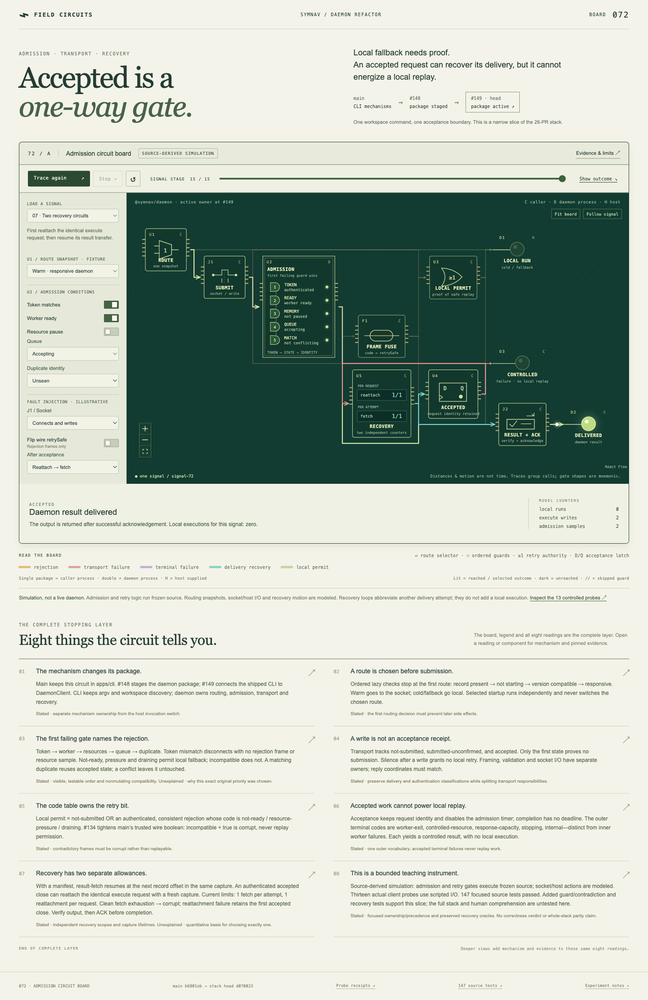 |
About 35 minutes, including source inspection, library evaluation, probes, construction, browser fixes and documentation. | The component subtitles are secondary at overview scale. The process stamps also require the legend; a conventional swimlane has a lower decoding cost. The phone overview is a locator, not a comfortable way to read every gate simultaneously. | README# admission-circuit-board ## Entry point Open [index.html](index.html) directly: ```sh open ~/projects/rich-review-v2/experiments/72-admission-circuit-board/index.html ``` No installation, server, network, or worktree is needed to use the built artifact. JavaScript is required. The opening shows a completed two-scope recovery. **Trace again** follows its signal; **Step**, the stage slider, and **Show outcome** support inspection at any pace. Choose a preset or change the switches. Click a component or one of the eight readings for mechanism and frozen source. Escape returns focus to the opener. Drag to pan; use **Fit board** or **Follow signal** to change scale. On a phone, the fitted circuit is an overview; Follow signal enlarges the current component. The complete readings remain normal-sized text. ## Kind other: interactive simulation — an offline circuit board with source-executed admission/retry gates and modeled I/O. ## Subjects `stack`: main `b6801ebdd2421d0ca2e4bdd61ec0f04c24ddd73e` → #149 `d07002357d3e9596bfaae910a1ac63b77981620b`. Narrow teaching scope: **what permits a warm request to fall back locally, and what recovery remains after acceptance**. Relevant slices are #133–134 (failure/admission authority), #137–139 (transport/transfer ownership), #142 (execution recovery), and #148–149 (staging and active package ownership). This is not a decision inventory for all 26 PRs. Cache lifetimes, worker replacement, startup election, policy beyond these recovery counters, and the full stack's test changes are outside the explanation. ## Declared choices - Role framing: learner operating a fault-injection instrument; no verdicts or response collection. - Box lenses: source package ownership and caller/daemon/host process boundaries, kept distinct through the board enclosure and package stamps. - Opening style: completed recovery circuit and the marked acceptance-latch analogy; before/after ownership strip. - Shape: complete stopping layer = opening, circuit, legend, simulation caveat and eight open readings. Matching mechanism/source dialogs deepen those readings. The headline alone is not the complete layer. - Navigation: linear signal stepping and numbered readings; nonlinear switches, component inspection, source selection and geometric pan/zoom. Dialogs have previous/next and focus-preserving return. No semantic zoom. - Trust posture: source-derived simulation, conservative stated/unexplained reasons, frozen source receipts, controlled actual-client probes, and bounded test results. No correctness verdict or whole-stack parity assertion. - Persona: a TypeScript teammate who understands a request/response exchange but has not learned this daemon's acceptance boundary. - Representations used: ordered gate chain; route multiplexer; consistency fuse; local-permit OR gate; acceptance latch; two recovery counters; colored orthogonal traces; outcome LEDs; package/process stamps; controlled failure presets; exact source excerpts. - Importance rule: authority to start local execution first, then delivery state, first-failure vocabulary, recovery scope, physical ownership and evidence limits. - Inputs used (beyond bundle): pinned main/head source and test files; contributor guidance and architecture/policy specifications; Git object/hash verification; built head modules; 13 controlled execution-client probes and a real ledger deduplication probe; five focused source test files; Chromium interaction and screenshot checks. Bundle inputs used: selected PR bodies and commit records from `pr.json`, `stack.md`, and selected `diff.patch` sections. Precomputed overviews were not used. - Tech: React 19.3.0, React Flow 12.11.6, ELK.js 0.11.1, GSAP 3.15.0 with MotionPathPlugin, esbuild 0.25.12; Python capture; Node recording/checking; Playwright 1.63.0 with system Chrome. All browser assets are bundled locally; system fonts; no generated bitmap assets. - Built on earlier experiment(s): no reused implementation, evidence, or content. Read 04-textbook-chapter, 23-zoom-canvas, 36-be-weird-a, 37-be-weird-b, and 53-be-weird-53 in full for their evidence and interaction standard. Surveyed available 01–68 README representation/opening fields, with particular attention to 15-message-choreography-sim, 22-game-any, 25-reader-sketch, 61-pixel-causality-grid, 62-policy-stained-glass, 63-daemon-constellation, 65-decision-tetris, 66-boundary-subway and 68-semantic-zoom-microscope. No subagents were used. ## What I tried Considered putting every routing and admission guard on one long graph. Experiment 68 already concentrates on routing precedence, and that design would obscure the acceptance boundary. The final board compresses routing into a supplied snapshot and spends its space on admission authority and the two recovery circuits. Compared Rete's execution engine with React Flow plus ELK. The graph is read-only and the admission/retry classes can execute unchanged; a second graph execution engine was unnecessary. ELK computes all component positions, ports and orthogonal trace routes. The tiny ordered gate glyphs inside U2 are a static source-order illustration. The first browser image exposed a black library background and undersized gate text. I replaced the background, tightened ELK spacing and enlarged the lettering. The opening now shows a completed recovery trace. Tests caught non-editable nodes swallowing pointer events and dialog removal losing focus; both were fixed. The simulation audit also corrected admission-sample counts for a reattachment: it makes another authenticated execute attempt, even though the drawn loop abbreviates repeated admission. Early images and two failed browser-check reports are retained in [attempts](attempts). No complete representation was abandoned. ## What I would drop The component subtitles are secondary at overview scale. The process stamps also require the legend; a conventional swimlane has a lower decoding cost. The phone overview is a locator, not a comfortable way to read every gate simultaneously. ## What I would do next Ask a fresh reader to predict the two simultaneous-failure case and the contradictory retry-bit case, then compare with the same facts in a conventional flowchart. No human comprehension study was performed here. ## Time spent About 35 minutes, including source inspection, library evaluation, probes, construction, browser fixes and documentation. ## Visual-variable legend | Channel | What it encodes | | --- | --- | | Gate shape | Multiplexer = first route; ordered AND-like gates = admission priority; fuse = rejection consistency; OR = local retry authority; D/Q latch = retained acceptance. These are explicitly mnemonic, not literal digital logic. | | Trace color | Amber = admission rejection vocabulary; rose = transport failures/uncertainty; violet = accepted execution failures; cyan = delivery recovery; pale green = signal/result or local permit. Wires also have directional arrowheads. | | Component package | Single outline / C = caller-process daemon mechanism; double outline / D = daemon-process admission; H = host-supplied local execution. The green enclosure identifies final daemon package ownership, with H explicitly external. | | LED state | Bright outcome LED = selected outcome; dark = not reached. Admission LEDs distinguish passed and failed gates. The acceptance latch remains lit after a terminal failure. | | Hatching | `//` marks a later guard that the signal never reached. Two faults can therefore expose a visible priority decision. | | Counter enclosure | One reattachment allowance belongs to the request; one fetch allowance belongs to each execute attempt. Counts are modeled events, not performance measurements. | | Motion | One bright pulse follows the selected trace. Motion and geometric distance carry order, never duration or electrical behavior. Reduced motion removes the pulse while preserving stepping. | ## Libraries considered and used | Library | Evaluation | | --- | --- | | [Rete.js engine](https://retejs.org/docs/concepts/engine/) | Considered its dataflow/control-flow engines. Useful for editable executable graphs, but this instrument needs fixed topology and direct source policy execution. Not used. | | [React Flow](https://reactflow.dev/learn/layouting/layouting) | Used for custom nodes/edges, viewport navigation, zoom controls and keyboard-accessible component controls. Its layout overview helped separate rendering from layout. | | [ELK Layered](https://eclipse.dev/elk/reference/algorithms/org-eclipse-elk-layered.html) | Used for all graph placement and orthogonal routing with constrained ports, including the backward recovery edge. A good match for circuit-style wiring. Dagre was considered through the React Flow comparison; the port and routing controls favored ELK. | | [GSAP MotionPathPlugin](https://gsap.com/docs/v3/Plugins/MotionPathPlugin/) | Used to animate the signal on the actual ELK path. GSAP also schedules playback; no custom animation or pan/zoom engine. | Versions are recorded in `package-lock.json`. The generated `app.js.LEGAL.txt` retains bundled library notices. ## What the circuit form teaches The strongest feature is the **absence of an energized local path** after acceptance. Recovery lights another circuit while the local LED remains dark. The fuse makes a wire Boolean visibly subordinate to code authority. The ordered gate chain makes a later conflicting duplicate remain unobserved when draining already failed. These are changes a reader can cause and compare, not decoration around a card summary. A conventional flowchart would need less explanation of symbols and would show process placement more directly. This board compresses calls into traces and abbreviates reattachment; it cannot establish concurrency, latency, resource consumption, or an actual host execution count. The claimed teaching benefits are design judgments, not measured learning gains. ## Evidence and verification - [Source manifest](evidence/source-manifest.json): 31 frozen documents. Every captured worktree source equals its pinned Git object. The UI contains 49 selected excerpts, including explicit rationale receipts. - [Controlled probes](evidence/probes.json): 13 runs of the actual compiled head execution client with scripted sockets, fake empty-output capture and ACK stub. Includes pre-write refusal, uncertain close, normal/contradictory rejections, accepted terminal failure, both recovery paths and both exhaustion paths. The ledger probe reuses the same actual entry for a matching request. These are not live-daemon traces. - [Focused source tests](evidence/focused-tests.log): 147 tests passed across five files: admission, client routing/fallback, protocol validation, direct execution client and socket execution delivery. This includes existing real socket and mixed-stream transfer tests. The daemon package build passed. The whole repository suite was not run. - [Artifact checks](evidence/artifact-checks.json): the model agrees with all 13 recorded client cases on outcomes and I/O counts; 576 admission combinations preserve the acceptance/no-local-replay invariant; source hashes, all excerpt bounds and ELK component bounds pass. - [Browser checks](evidence/browser-checks.json): preset/field interactions, all board components, all source receipts, source previous/next and Escape focus return, playback/pause/step, keyboard slider, pan/zoom/fit/follow, 1440/768/390/320 layouts, reduced motion and direct `file://` opening. No external runtime requests or browser errors in the passing run. - [Screenshots](screenshots): final overview, precedence and corruption states, source detail, and a phone view were visually inspected. - [Pyramid map](evidence/pyramid-map.md): authored details and visible top-layer parents. The two rationale gaps are the original priority's justification and the quantitative basis for exactly-one recovery defaults; the preservation rationale itself is stated. Both symnav worktrees remained clean for tracked files. All source edits and generated artifacts are in this experiment; allowed build/test outputs stayed in the worktree's build/cache locations. No commits, pushes, branch changes, comment storage, verdicts or review persistence. ## Rebuild and repeat Opening the artifact needs none of these commands. From this folder: ```sh npm ci python3 scripts/capture.py npm run build npm test ``` With the supplied head worktree pinned and built, `node scripts/probe.mjs` regenerates the controlled receipts. It does not run a daemon or mutate the source. The original focused source test command was: ```sh cd ~/projects/rich-review-v2/worktrees/stack-head/packages/daemon pnpm exec vitest run src/daemon-admission.test.ts src/client/daemon-client.test.ts src/transport/protocol-validator.test.ts src/transport/execution-client.test.ts src/transport/daemon-transport-execution.test.ts ``` For the browser suite, run `npm start` from the experiment (localhost:8472), then `node scripts/browser-check.mjs` in another terminal. System Chrome is required for that check script. [brief.md](brief.md) preserves the received assignment. |
| 71 | pixel-city-stack attempt 1: codex |
page, interactive — a pixel city of physical source paths | stack: main plus all 26 supplied PR heads, #123–149 in dependency order. Base `b6801ebdd2421d0ca2e4bdd61ec0f04c24ddd73e` → tip `d07002357d3e9596bfaae910a1ac63b77981620b`. | Role framing: learner surveying a changing source city. · Box lenses: physical package/app containment; concern ownership and file role; a selected CLI call/construction path shows the consumer boundary. · Opening style: picture and a marked city analogy; #148 and #149 are directly selectable in the opening sentence. · Shape: the city, its keys and seven open boundary readings form the complete stopping layer. Each reading has matching mechanism detail and original reason/source receipts. The headline alone is not claimed to be complete. · Navigation: stable physical parcels across 27 snapshots, linear stepping/playback, nonlinear building and reading selection, rename counterparts, in-place source dialogs, URL state and focus returns. Camera zoom is geometric, not semantic. · Trust posture: measured Git surface with conservative, explicit rationale attribution. The deleted timing observations and the narrower host version assertion are named in the complete layer. No verdict, comment collection, review storage or correctness score. · Persona: a teammate who knows symnav but did not follow the daemon extraction. · Representations used: an orthographic pixel city; source-path parcels and package districts; changed-text building heights; concern hues; role-specific window textures; removed-path foundations; selected invocation streets and rename roads; seven open boundary readings; exact source and patch receipts. · Importance rule: distinguish where a concern lives, who invokes it and how much text changed; keep test-observation changes alongside ownership changes. · Inputs used (beyond bundle): read-only Git objects for main and all 26 PR heads; per-step and main-to-skyline diffs; all versions of surveyed files; the architecture spec; the #148 compatibility inventory and digest; #149 absence inventory; moved worker tests; the commit restoring the host executor version oracle. Bundle use: `pr.json`, contexts/decisions/commits, pins and relevant `repo-rules.md`. The supplied net patch and symbol overviews were not used for measurements. Official library documentation was consulted for renderer, layout and interaction selection. · Tech: Three.js 0.180.0, D3 hierarchy 3.1.2, PathFinding.js 0.4.18, GSAP 3.13.0, esbuild 0.25.10; native HTML/CSS and locally generated canvas window textures. Python captures evidence; isolated system Chrome through Playwright checks the artifact. Codex; no subagents. · Built on earlier experiment(s): no implementation, evidence bank, recording or screenshot reused. Read the required **04-textbook-chapter**, **23-zoom-canvas**, **36-be-weird-a**, **37-be-weird-b** and **53-be-weird-53** READMEs. Surveyed earlier shape/representation declarations, including **07-stack-timeline**, **61-pixel-causality-grid**, **63-daemon-constellation**, **65-decision-tetris**, **66-boundary-subway** and **67-blast-radius-terrain**. Borrowed their standards for explicit analogy limits, pinned receipts, complete top layers and return navigation. The [novelty survey](evidence/novelty-survey.json) records the inspected declarations. | 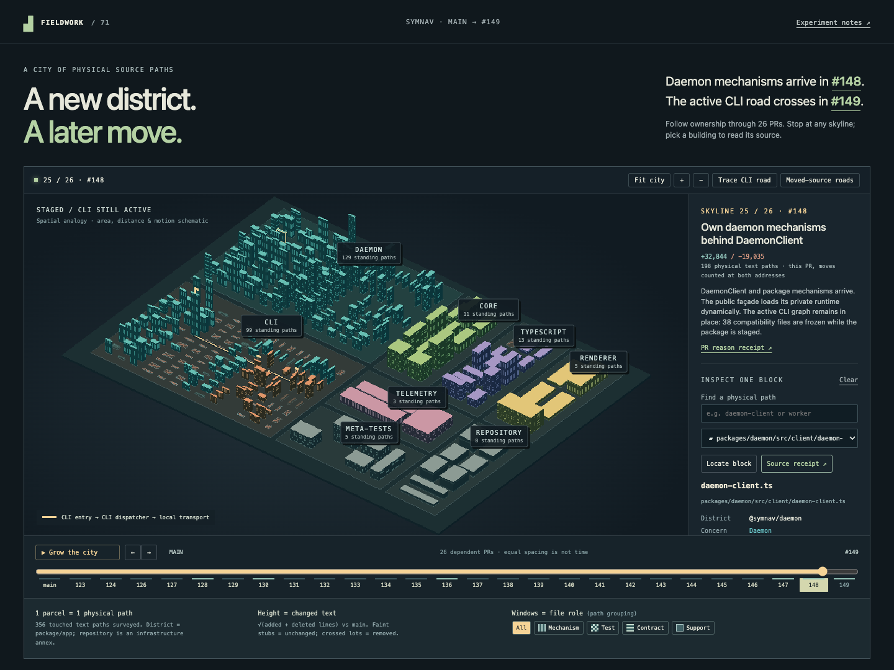 |
About 40 minutes, including reading, library evaluation, capture, implementation, source reconciliation, browser checks and documentation. | Repository infrastructure adds visual completeness but little to the central ownership lesson. The all-path finder is useful for auditing and awkward for casual exploration. Full historical source receipts are much larger than the curated explanation. On a phone, the city at fit scale is a locator; zoom or the path finder is needed to inspect individual buildings. | README# pixel-city-stack ## Entry point Open [index.html](index.html) directly: ```sh open ~/projects/rich-review-v2/experiments/71-pixel-city-stack/index.html ``` No installation, server, network connection or live worktree is required. The browser bundle and receipts are local. The city uses WebGL; the seven complete boundary readings remain readable without JavaScript. Start at **#148**, then select **#149**. **Trace CLI road** fades surrounding buildings so the active source path becomes visible. **Moved-source roads** instead shows cross-district Git renames in the selected PR; choosing one of those files isolates its relocation. These are source diagrams, not runtime traces. Scrub or play all 26 PRs. Pick a building, or use the path finder, to inspect its current source and last change. Selection stays at the same physical address across skylines. **Find old/new address** follows a detected rename. Drag to pan; wheel/pinch or +/− zooms. With the city focused, Left/Right steps, Home/End selects main/tip, and Escape clears selection and fits the city. Receipts close with Escape and restore focus. Skyline/file URLs and browser Back/Forward work. ## Kind page, interactive — a pixel city of physical source paths ## Subjects stack: main plus all 26 supplied PR heads, #123–149 in dependency order. Base `b6801ebdd2421d0ca2e4bdd61ec0f04c24ddd73e` → tip `d07002357d3e9596bfaae910a1ac63b77981620b`. The narrow subject is **physical package ownership versus concern ownership and changed text**. The central example is the staged package at #148 and the CLI cutover at #149. This is not a complete explanation of every cache, transport or lifecycle decision in the stack. ## Declared choices - Role framing: learner surveying a changing source city. - Box lenses: physical package/app containment; concern ownership and file role; a selected CLI call/construction path shows the consumer boundary. - Opening style: picture and a marked city analogy; #148 and #149 are directly selectable in the opening sentence. - Shape: the city, its keys and seven open boundary readings form the complete stopping layer. Each reading has matching mechanism detail and original reason/source receipts. The headline alone is not claimed to be complete. - Navigation: stable physical parcels across 27 snapshots, linear stepping/playback, nonlinear building and reading selection, rename counterparts, in-place source dialogs, URL state and focus returns. Camera zoom is geometric, not semantic. - Trust posture: measured Git surface with conservative, explicit rationale attribution. The deleted timing observations and the narrower host version assertion are named in the complete layer. No verdict, comment collection, review storage or correctness score. - Persona: a teammate who knows symnav but did not follow the daemon extraction. - Representations used: an orthographic pixel city; source-path parcels and package districts; changed-text building heights; concern hues; role-specific window textures; removed-path foundations; selected invocation streets and rename roads; seven open boundary readings; exact source and patch receipts. - Importance rule: distinguish where a concern lives, who invokes it and how much text changed; keep test-observation changes alongside ownership changes. - Inputs used (beyond bundle): read-only Git objects for main and all 26 PR heads; per-step and main-to-skyline diffs; all versions of surveyed files; the architecture spec; the #148 compatibility inventory and digest; #149 absence inventory; moved worker tests; the commit restoring the host executor version oracle. Bundle use: `pr.json`, contexts/decisions/commits, pins and relevant `repo-rules.md`. The supplied net patch and symbol overviews were not used for measurements. Official library documentation was consulted for renderer, layout and interaction selection. - Tech: Three.js 0.180.0, D3 hierarchy 3.1.2, PathFinding.js 0.4.18, GSAP 3.13.0, esbuild 0.25.10; native HTML/CSS and locally generated canvas window textures. Python captures evidence; isolated system Chrome through Playwright checks the artifact. Codex; no subagents. - Built on earlier experiment(s): no implementation, evidence bank, recording or screenshot reused. Read the required **04-textbook-chapter**, **23-zoom-canvas**, **36-be-weird-a**, **37-be-weird-b** and **53-be-weird-53** READMEs. Surveyed earlier shape/representation declarations, including **07-stack-timeline**, **61-pixel-causality-grid**, **63-daemon-constellation**, **65-decision-tetris**, **66-boundary-subway** and **67-blast-radius-terrain**. Borrowed their standards for explicit analogy limits, pinned receipts, complete top layers and return navigation. The [novelty survey](evidence/novelty-survey.json) records the inspected declarations. ## What I tried Considered one permanent tower per PR/package contribution, then rejected it before implementation: cumulative churn would make deletion grow a tower and obscure the #149 demolition. The final design fixes **physical file addresses** and measures each surviving file against main. A deletion clears the lot while keeping its evidence accessible. Compared PixiJS, Phaser, Isomer and Three.js before selecting Three.js for real occlusion, orthographic projection and picking. D3 lays out the parcels; PathFinding.js routes streets through free grid cells; GSAP owns the transitions, playback scheduling and render ticker. No custom graph layout, camera gesture system, A* implementation or animation engine was written. The first city made the invocation road hard to follow between tall buildings. Added endpoint flags and a **Trace CLI road** spotlight. The initial per-building render callbacks were coalesced through the GSAP ticker so animation draws one scene per tick and stops rendering when idle. Moved the receipt controls above the longer block metadata so the source entrance remains visible. Source checking corrected two draft readings. A command-registration file was initially colored as a daemon mechanism because its directory contained `daemon`; the classifier now keeps CLI command registration with the host. The removed worker version-mismatch case also has a new direct host executor assertion in commit `0f31a619`; the complete note now names both observations and does not call this a repository-wide loss of version coverage. One browser check initially tried to start a pan on a district-label button. The corrected check drags empty canvas and waits for the rendered camera update. The [first check report](evidence/attempts/browser-checks-first.json) and initial screenshots remain under [attempts](evidence/attempts/). No completed representation was abandoned. ## What I would drop Repository infrastructure adds visual completeness but little to the central ownership lesson. The all-path finder is useful for auditing and awkward for casual exploration. Full historical source receipts are much larger than the curated explanation. On a phone, the city at fit scale is a locator; zoom or the path finder is needed to inspect individual buildings. ## What I would do next Ask a maintainer to explain why blue test buildings remain in CLI after #149, then compare their answer with a conventional package diagram using the same evidence. No human comprehension study was performed. ## Time spent About 40 minutes, including reading, library evaluation, capture, implementation, source reconciliation, browser checks and documentation. ## Visual-variable legend | Variable | Factual meaning | Limit | | --- | --- | --- | | District | Physical package/app prefix. Repository is a separately named infrastructure annex. | Only paths touched in this stack are surveyed; these are not complete package inventories. Reserved empty land may contain future addresses. | | Parcel | One physical source path, fixed across all snapshots. | A rename occupies two addresses. Parcel area and placement are schematic, not file size or architectural importance. | | Building height | Added + deleted text lines for that path in `git diff --no-renames main <skyline>`, compressed as `0.55 + 0.4√lines`. | Measures changed text, not total LOC, new behavior, complexity, execution cost or cumulative work. Height can decrease when a change is undone. | | Faint low stub | Existing path with no text difference from main. | Its 0.55-unit base is an illustrative visibility floor. | | Crossed foundation | A previously present/touched physical path is absent at this skyline. | There is no height encoding on a cleared lot. The inspector retains exact deletion counts; removal does not prove behavior disappeared. | | Facade hue | Curated concern owner: daemon cyan, CLI host coral, core green, TypeScript violet, renderer gold, telemetry pink, infrastructure gray. | A path-based interpretation, not CODEOWNERS or human authorship. A mixed file receives one coarse hue. Blue test buildings can remain in CLI after the mechanism move. | | Windows | Vertical bars: mechanism; checker: test/test support; horizontal bands: contract-oriented path; blank: other support/configuration/docs. | Path rules, not an AST census. Contract files may execute validation; windows do not count assertions or passing tests. | | Cream road and flags | Selected shipped workspace-daemon call/construction path: CLI → local dispatcher/transport through #148; CLI → invocation coordinator → DaemonClient at #149. | Source-derived schematic, not every invocation branch, package dependency, request hop or live trace. | | Cyan dashed roads | Selected cross-district renames detected by Git against the preceding PR. Up to five are shown; selecting a participating file isolates its road. | Rename similarity is Git's heuristic. These roads are not an exhaustive list of responsibility transfers. Their distance is meaningless. | | Skyline control | Main, then each of the 26 dependent PR heads. | Equal spacing and construction motion are illustrative, not development time. There is no autoplay on opening. | | Outline/filter/spotlight | Reader selection or focus. | No source mutation or persisted review state. | ## Libraries considered and used | Library | Decision | | --- | --- | | [Three.js orthographic camera](https://threejs.org/docs/pages/OrthographicCamera.html) and [OrbitControls](https://threejs.org/docs/pages/OrbitControls.html) | **Used.** Geometry, lighting, depth handling, ray picking and camera gestures suit hundreds of extruded file parcels. Fixed orientation preserves spatial memory; rotation is disabled. | | [D3 treemap](https://d3js.org/d3-hierarchy/treemap) | **Used.** One stable hierarchical layout assigns package districts and file parcels. Layout weights balance readable districts; they are deliberately not another quantitative channel. | | [PathFinding.js](https://github.com/qiao/PathFinding.js) | **Used.** Grid A* routes the selected streets around occupied parcels; path compression supplies the orthogonal segments. Road geometry illustrates those library-computed paths. | | [GSAP](https://github.com/greensock/GSAP) | **Used.** Object-property tweens, easing, delayed playback and ticker scheduling. Reduced motion removes construction interpolation. Original license notices and the [license reference](vendor/gsap-license.txt) are retained. | | [PixiJS](https://pixijs.com/8.x/guides/components/scene-objects) | Considered. Strong fit for pixel sprites and text; this city would still need projected geometry/depth and a camera integration. Three supplied those together. | | [Phaser](https://docs.phaser.io/phaser/getting-started/set-up-dev-environment) | Considered. Its game scenes/input and tilemaps are useful, but this artifact has no physics or game-state challenge, and needs source inspection more than a game framework. | | [Isomer](https://jdan.github.io/isomer/) | Considered. Compact isometric drawing, but the selected interaction needs picking and camera gestures in addition to drawing. | These are design evaluations, not comparative renderer benchmarks. No generated imagery, remote font, external asset request or hosted service is used. Library notices are in [vendor](vendor/) and [THIRD-PARTY-NOTICES.txt](THIRD-PARTY-NOTICES.txt). ## What the weird form taught better or worse **Better:** #148 creates two visible homes for daemon concerns while its invocation road stays in CLI. #149 empties the compatibility lots and redirects the road. The cyan buildings left in CLI have test windows: ownership, source location and observation are distinct facts that can be read together. A giant addition appears as physical surface without implying the same amount of invented behavior. The fixed lots make a removal inspectable instead of deleting it from the explanation. **Worse:** perspective occludes small files, and height compression needs an explicit scale explanation. An architecture diagram states import direction more directly and is faster for a single revision. This city cannot show temporal correctness, lifecycle gates or assertion coverage through skyline shape; the exact test-observation difference still needs a short note and its patch. Path heuristics are necessarily coarser than symbol ownership. ## Evidence and verification - [Capture manifest](evidence/capture.json): 27 pinned revisions, 356 physical text paths and 767 unique source blobs. Per-file receipts under `evidence/files/` contain current historical source and the last individual path patch; roughly 15.5 MB of text is loaded only when its file is inspected. - [Static checks](evidence/static-checks.json): receipt SHA-256 and Git blob identities, complete snapshot references, authored entrances, independently checked selected diff totals, all 27 invocation-road source witnesses, the 38-file freeze/removal and the 37 test moves. Both supplied worktrees have clean tracked status at completion. - [Browser checks](evidence/browser-checks.json): all 27 skylines; selected file retention; rename roads/counterparts; source/deletion dialogs; all seven reading jumps and reason returns; every authored source entrance; history and direct URLs; keyboard, pixel picking, pan/zoom, role filtering, playback/pause, ordinary/reduced motion, touch controls, JavaScript-disabled reading and widths 320/390/768/1440. Final run: no JavaScript errors or external requests. [Screenshots](screenshots/) were visually inspected. - [Independent facts](evidence/facts.json): recomputed compatibility digest, all 37 test moves, the rename-aware worker patch and the host version-oracle restoration patch. The new host assertion tests direct executor rejection; it does not reproduce the removed worker initialization-failure observation. - [Frozen PR input](evidence/stack-pr-bodies.json) and [rename inventory](evidence/renames.json) preserve author context and measurement provenance. The headline change counts intentionally differ from Git's usual rename-folded PR statistics. For example, #148 is **+32,844/−19,035 across 198 physical text paths** here; the supplied PR summary is +14,624/−815 across 153 rename-folded files. Both have the same net +13,809. Showing both addresses is necessary for the city, and the on-page count caption states this convention. Rationale search covered supplied PR context/decisions/commit prose and the relevant architecture material. The specific duration-assertion removals remain unexplained in that inspected material; this is not a claim that no explanation could exist elsewhere. Existing symnav test suites were **not run**. The artifact presents source and recorded Git measurements, not runtime execution, parity, performance or correctness results. No symnav source, branch or worktree was modified. Campaign queue, index and commit handling are left to the orchestrator. ## Regeneration Opening the artifact requires none of these commands. With the supplied worktrees and Git objects available, from this folder: ```sh npm ci python3 scripts/capture.py npm run build node scripts/verify.mjs node scripts/browser-check.cjs ``` The browser checker uses the already installed Playwright package at `/tmp/rich-review-05-browser/node_modules/playwright` and system Chrome. Override `CITY_PLAYWRIGHT`, `CITY_CHROME` or `CITY_URL` if needed. It otherwise opens `index.html` directly with an isolated browser. Capture and generation write only inside this experiment. |
| 70 | bauhaus-daemon-grammar attempt 1: claude-opus → attempt 2: claude-opus → attempt 3: codex |
page | pr-131 only. Narrow teaching target: **a required policy section relocates numeric authority but does not imply a minimal field projection or the removal of every numeric method override**. The three witnesses are `DaemonResourceSupervisor`, `NodeDaemonProcessTerminator` and `DaemonRegistry`. This is not a full-PR decision inventory. | Role framing: learner reading a small contract language and checking what each visual mark commits to. · Box lenses: static package/source ownership, expressed through registered rows; change surface, expressed through required/defaultable inputs and whole-section exposure. No conventional box-and-arrow overview. · Opening style: a short question and three compound before/head specimens. The schematic limitation appears beside them. · Shape: pyramid. The opening, figure, legend and six open readings form the complete stopping layer. The field decoder and six corresponding mechanisms deepen those same facts; receipts are the bottom layer. · Navigation: linear scroll through all six readings and mechanisms; nonlinear glyph → field decoder; reading → mechanism → exact source; explicit return links; direct consumer fragments and browser Back; keyboard and touch selection. · Trust posture: source-grounded explanation with conservative stated/unexplained reasons. The retained registry override and removed resource cases receive open surface readings. No verdict, review collection, comment storage or correctness score. · Persona: a teammate who understands TypeScript inputs but has not worked in this daemon corner. · Representations used: compound circle/square/triangle contracts; circle-area field counts; registered source rows; required/optional/constant rims; read/unread leaf points; library-animated separation; field-name decoder; numeric scores; a controlled registry-method example; exact source receipts. · Importance rule: changed authority first, then exposure width and remaining tuning seams, then preserved defaults, test composition and changed test evidence. The figure emphasizes the 9/6, 8/2 and 6/1 exposure/read asymmetry. · Inputs used (beyond bundle): pinned base/head production source, daemon policy and policy tests, two test adapters, workspace composition, head `plans/005/daemon-policy.md`, Git revisions/clean status, builds of both worktrees, three focused existing test runs, and actual-method recordings with controlled inputs. Bundle material read: PR body and all six commits, file stat, relevant diff hunks, repository/spec rules. The precomputed overview files were not used. · Tech: SVG.js 3.2.4, local HTML/CSS/JavaScript, Python evidence capture/integrity checks, Node recordings, Playwright Core 1.61.1 with system Chrome. Locally resolved fonts and vendored SVG.js; no generated assets or remote runtime resources. Codex harness; no subagents. · Built on earlier experiment(s): no implementation, probe, evidence bank or decision register reused. Read the required READMEs for 04-textbook-chapter, 23-zoom-canvas, 36-be-weird-a, 37-be-weird-b and 53-be-weird-53 for evidence and navigation standards. Surveyed the representation/technology fields of finished 59–68 READMEs and read 62-policy-stained-glass in full. In particular, 62 and 67-blast-radius-terrain motivated avoiding another broad policy-sharing map. The inherited standards are pinned source receipts, bounded recording claims, complete visible readings, exact return paths and real browser checks. | 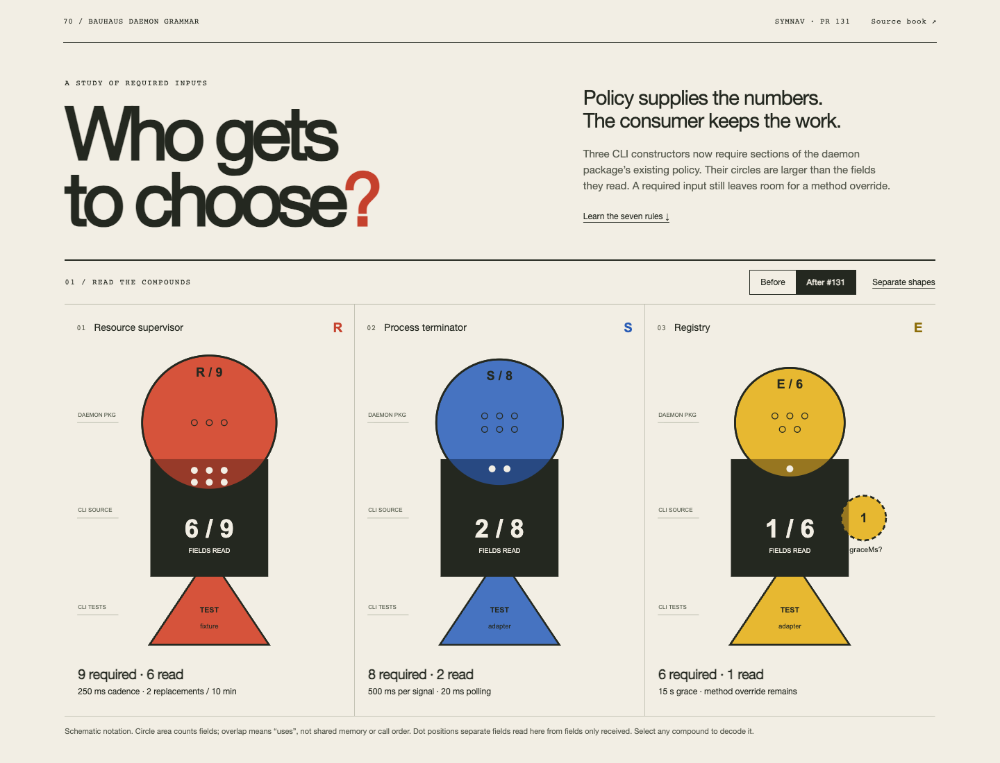 |
Approximately 40 minutes of active work, including source reading, construction, controlled recording, browser inspection and documentation. | The separation control contributes less than field selection: moving the parts temporarily suspends the very alignment/overlap rules being taught. It remains explicitly illustrative. Source-row labels could become quieter once a reader has learned the grammar. | README# bauhaus-daemon-grammar ## Entry point Open [index.html](index.html) directly: ```sh open ~/projects/rich-review-v2/experiments/70-bauhaus-daemon-grammar/index.html ``` No installation, server, network connection or live worktree is needed to read the page. Select Before/After to compare the contracts, select a compound to inspect every field, or follow the six readings down to exact source receipts. Escape closes a receipt and restores focus. JavaScript enables the SVG grammar; the complete readings, mechanisms and frozen source book remain readable without it. ## Kind page ## Subjects pr-131 only. Narrow teaching target: **a required policy section relocates numeric authority but does not imply a minimal field projection or the removal of every numeric method override**. The three witnesses are `DaemonResourceSupervisor`, `NodeDaemonProcessTerminator` and `DaemonRegistry`. This is not a full-PR decision inventory. Base `b3a6c4fa5dcf96223765aa147a9e094cd4a51b0e` → head `b100221db48754656328391b878299c5a0bab443`. ## Declared choices - Role framing: learner reading a small contract language and checking what each visual mark commits to. - Box lenses: static package/source ownership, expressed through registered rows; change surface, expressed through required/defaultable inputs and whole-section exposure. No conventional box-and-arrow overview. - Opening style: a short question and three compound before/head specimens. The schematic limitation appears beside them. - Shape: pyramid. The opening, figure, legend and six open readings form the complete stopping layer. The field decoder and six corresponding mechanisms deepen those same facts; receipts are the bottom layer. - Navigation: linear scroll through all six readings and mechanisms; nonlinear glyph → field decoder; reading → mechanism → exact source; explicit return links; direct consumer fragments and browser Back; keyboard and touch selection. - Trust posture: source-grounded explanation with conservative stated/unexplained reasons. The retained registry override and removed resource cases receive open surface readings. No verdict, review collection, comment storage or correctness score. - Persona: a teammate who understands TypeScript inputs but has not worked in this daemon corner. - Representations used: compound circle/square/triangle contracts; circle-area field counts; registered source rows; required/optional/constant rims; read/unread leaf points; library-animated separation; field-name decoder; numeric scores; a controlled registry-method example; exact source receipts. - Importance rule: changed authority first, then exposure width and remaining tuning seams, then preserved defaults, test composition and changed test evidence. The figure emphasizes the 9/6, 8/2 and 6/1 exposure/read asymmetry. - Inputs used (beyond bundle): pinned base/head production source, daemon policy and policy tests, two test adapters, workspace composition, head `plans/005/daemon-policy.md`, Git revisions/clean status, builds of both worktrees, three focused existing test runs, and actual-method recordings with controlled inputs. Bundle material read: PR body and all six commits, file stat, relevant diff hunks, repository/spec rules. The precomputed overview files were not used. - Tech: SVG.js 3.2.4, local HTML/CSS/JavaScript, Python evidence capture/integrity checks, Node recordings, Playwright Core 1.61.1 with system Chrome. Locally resolved fonts and vendored SVG.js; no generated assets or remote runtime resources. Codex harness; no subagents. - Built on earlier experiment(s): no implementation, probe, evidence bank or decision register reused. Read the required READMEs for 04-textbook-chapter, 23-zoom-canvas, 36-be-weird-a, 37-be-weird-b and 53-be-weird-53 for evidence and navigation standards. Surveyed the representation/technology fields of finished 59–68 READMEs and read 62-policy-stained-glass in full. In particular, 62 and 67-blast-radius-terrain motivated avoiding another broad policy-sharing map. The inherited standards are pinned source receipts, bounded recording claims, complete visible readings, exact return paths and real browser checks. ## What I tried I narrowed a broad policy-family grammar to three consumer input signatures. A whole section is visibly larger than the set of fields consumed: 9/6, 8/2 and 6/1. The registry’s separate dashed scalar keeps the required-constructor/optional-method distinction visible in the same glyph. I considered encoding read count as proportional intersection area, then dropped it before implementation. Binary overlap expresses the relationship; leaf points carry the count without implying fractional memory sharing. SVG.js supplied clipping and animation, so no scene or animation engine was written locally. Screenshot and browser passes corrected unequal column widths/source alignment, a 320-pixel class-name overflow, and a separated scalar label crossing a shifted square. The receipt audit corrected several initially truncated excerpts and now checks that each section excerpt contains every counted field. [Composition notes](spikes/library-decision.md) and a [pre-fix browser failure](evidence/browser-check-failure.json) preserve the negative observations. No complete alternative representation failed or was abandoned. ## What I would drop The separation control contributes less than field selection: moving the parts temporarily suspends the very alignment/overlap rules being taught. It remains explicitly illustrative. Source-row labels could become quieter once a reader has learned the grammar. ## What I would do next Give the three glyphs to an unfamiliar reader and ask which fields a constructor requires, which it reads, and whether the registry can still use a numeric grace argument. Compare their explanations with the same source contracts in a conventional diagram; no human comprehension trial was performed here. ## Time spent Approximately 40 minutes of active work, including source reading, construction, controlled recording, browser inspection and documentation. ## Visual-variable legend | Variable | Architectural meaning | Exact boundary of the encoding | | --- | --- | --- | | Circle | A value surface: a policy section, old record, grouped constants or a scalar input | Record members count once; repeated glyphs do not imply multiple runtime policy objects. | | Square | The real production consumer | Fixed size. Its center remains in CLI production before and after. | | Triangle | Test call-site composition of the real consumer | A fixture or test adapter, not a test result. The resource override factory itself remains in the package testing entry. | | Hue + letter | R/red = resources; S/blue = shutdown; E/yellow = startup | Color never encodes correctness. Text labels preserve the distinctions without hue. | | Circle rim | Solid = required input; dashed = defaultable input; absent = local constant | Required is a TypeScript contract, not proof of runtime validation. Square/triangle outlines have no optionality meaning. | | Circle area | Number of exposed fields; a scalar counts as one | Radius = `30 × sqrt(fieldCount)` in glyph coordinates. Circle sizes share a common scale across equal-width columns. Other shapes stay fixed. | | Overlap | The square uses values; test code constructs the real consumer | Binary relationship only. Intersection area does not encode count, memory identity, call order or duration. | | Alignment | Shape centers register to daemon package policy, CLI production or CLI test call-site rows | The source ownership move is the circle’s change of row; the square does not move. Alignment is explicitly suspended during separation. | | Field ink | White points in the circle/square overlap are directly read fields; open points are received but unread by this consumer | Distinct field names, not access frequency. Exact counts verified against source. Scalar labels carry their single value without additional points. | The compact version is open on the page. The grammar applies to the three selected consumers; it is not an executable formal model of all daemon code. ## Libraries considered and used | Library | Evaluation | | --- | --- | | [SVG.js 3.2.4](https://svgjs.dev/docs/3.2/) | **Used** for primitive construction, retained groups, clipping, element events and separation animation. Vendored under its included MIT license. Inspectable SVG nodes also support the field decoder and browser geometry checks. | | [Paper.js](https://paperjs.org/about/) | Considered through its official scene-graph/vector documentation. General path operations were unnecessary for fixed primitive intersections; a canvas surface would add accessibility work. Not installed or executed. | | [p5.js](https://p5js.org/reference/) | Considered through its primitive and interaction references. A drawing loop was unnecessary for these three inspectable static contracts. Not installed or executed. | | Hand-written SVG | Considered; SVG.js supplied the clip/group/animation operations needed here. The semantic positions are a fixed type specimen, so no graph layout or routing library is needed. | This was a capability evaluation, not a library benchmark. [Notes](spikes/library-decision.md) preserve the choices. ## What the weird form taught **Better:** one compound simultaneously carries policy family, field exposure, actual readership, constructor requirement, source home and test composition. The extra dashed registry circle changes the meaning of an otherwise matching form. The before/head change can move the value source while holding the production consumer’s row fixed. A conventional dependency edge alone does not express those differences. **Worse:** the reader must learn the grammar, the 9-versus-8 area difference is subtle, and overlap can initially suggest a Venn diagram or memory sharing. The page labels that limit. Exact field names, method arguments, rationale and test attrition need short textual readings and receipts. The phone layout preserves individual glyphs but loses simultaneous comparison across three source-aligned columns. These are design observations, not measured learning outcomes. ## Evidence and verification - [Source bank](evidence/sources.json): 18 frozen documents, 30 exact excerpts, revisions and SHA-256 hashes. Both the package policy and its tests are byte-identical between the pinned base and head. [Source book](evidence/source-book.html) opens every full file with line anchors. - [Capture checks](evidence/capture-checks.json): section sizes 9/8/6 and distinct direct reads 6/2/1 extracted and reconciled to source. Counts apply only to these three classes; no PR-wide census is claimed. - [Actual-method recordings](evidence/recordings.json): default/custom cadence arguments captured from real supervisor `start`; real terminator constructor fields inspected; real registry grace method invoked with synthetic owner/time; actual policy factories exercised on zero cadence and equal thresholds. Timers were intercepted. No process was signalled, registry file read, full daemon launched or wall-clock guarantee measured. The page displays saved results rather than simulating arbitrary inputs. - Both worktrees completed `pnpm build`. [Focused run receipt](evidence/test-runs.json): **16 base resource tests, 10 head resource tests and 25 head package policy tests passed**. Raw output is alongside the receipt. These are the supplied tests, not new implementation-mirroring tests, and do not establish full command or daemon parity. - [Browser checks](evidence/browser-checks.json): 13 groups passed, covering direct `file://` opening, before/head, animated/reduced-motion separation, all 23 fields, all six descent/return paths, 31 source buttons and focus returns, keyboard, touch, fragments/Back, 320/390/768/1440-pixel layouts, SVG label bounds, print and JavaScript-disabled source reading. No page errors or external requests in the final pass. Desktop and mobile [screenshots](screenshots/01-opening.png) were visually inspected. - [Pyramid audit](evidence/pyramid-audit.md): explicit mapping of all authored depth to the six visible readings, plus the rationale search boundary. [Static check receipt](evidence/static-checks.json) covers hashes, excerpts, local links, contract files and clean tracked worktrees; it does not purport to automate understanding. Only this experiment and allowed build output were written. Symnav source and branches, other experiments, the index and the queue were left untouched. No commit, publication, review response or persistent user state was created. The received [brief](brief.md) is preserved. ## Regeneration Reading the finished artifact requires none of these commands. To reproduce it with the supplied pinned worktrees and system Chrome: ```sh cd ~/projects/rich-review-v2/experiments/70-bauhaus-daemon-grammar npm ci npm run capture npm run record npm run check:browser npm run check ``` The recorder expects both worktrees to be built. The browser checker defaults to the standard macOS Chrome path; set `GRAMMAR_CHROME` for another local Chromium executable. The existing focused tests and their exact commands are recorded in `evidence/test-runs.json`; regeneration above does not rerun them. All capture/check/record scripts write only within this experiment. |
| 69 | command-me-reader attempt 1: codex |
page — guided interactive | pr-127 only — Scope semantic caches to one turn. Base `a1e325a5ff979bdfa25babc5554621c8c0f20497` → head `64919bcbcf7fcc8202779b78c5f069b24662bb18`. | Role framing: learner acquiring and holding a reference. Each command has a consequence: point locates the association; drag acquires another reference; predict separates lookup from settlement; hold crosses the clear; release settles injected old work; compare checks which identity is still in the lookup; teach-back articulates the boundary. · Box lenses: runtime reference ownership/lifetime, with a static TypeScript service → core class ownership comparison. The service owns its scope instance; core supplies its implementation. The cache handle and caller area stay fixed while their references diverge. · Opening style: a marked gesture analogy and the complete narrow claim, with its source immediately available. The answer is not locked behind the ritual. · Shape: opening + instrument/legend + ownership comparison + eight open readings form the complete stopping layer. The ritual adds enacted mechanism; 23 exact receipts and raw recordings supply evidence. The heading alone is not a complete PR explanation. · Navigation: seven directed stages with independent jumps, a conventional open register, local source dialogs with exact focus returns, and a linear static source book. · Trust posture: source-grounded explanation; stated reasons are distinguished from specific rationale gaps. The separate awaited-release change and its reconciliation gap remain visible. No verdict, score, comments, or answer collection. · Persona: a teammate who knows TypeScript but has not worked in this cache implementation. · Representations used: duplicated reference tokens, physical hold/release, persistent handle geometry, lookup-arrow replacement, pending/fulfilled texture, identity color and subscript, paired result readout, private prediction and teach-back, package ownership strip, open decision register, exact source receipts. · Importance rule: the difference between losing a lookup and losing a reference first; then preserved identities, lifecycle ordering, caller-visible completion, API choices, rationale gaps, and test changes. · Inputs used (beyond bundle): read-only source and freshly built modules from the two supplied worktrees; contributor guide; architecture and follow-up specifications; a plan-directory search for cache-lifecycle rationale; actual-method recordings using injected factories/state; a focused head test run; isolated browser checks. Bundle inputs: PR body and six commit records, full patch, file counts, relevant repo-rules material. Precomputed overviews and other subject bundles were not used. · Tech: XState 5.20.2; GSAP 3.13.0 with Draggable; HTML/CSS and system fonts; esbuild 0.25.5 for a local IIFE bundle; Python source capture/rendering; Node recordings; Playwright 1.55.0 with system Chrome; axe-core 4.10.3 for automated accessibility checks. Codex harness, no subagents. · Built on earlier experiment(s): no implementation, data, evidence, or content reused. Read the five assigned READMEs: 04-textbook-chapter for controlled-run honesty, 23-zoom-canvas for complete outlines/returns, 36-be-weird-a for identity at a named observation surface, 37-be-weird-b for independent access to depth, and 53-be-weird-53 for physical-analogy limits. Also surveyed representation fields in 15, 17, 24, 26, 40, and 54–68. Avoided the existing identity matrix, loom, spring/recoil bench, musical score, and timeline. [Design notes](design-notes.md) record the distinction. | 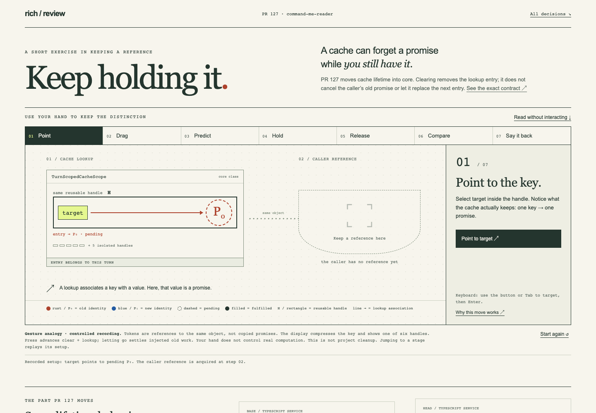 |
About 25 minutes, including source reading, library evaluation, implementation, recordings, browser inspection and documentation. No human comprehension study was performed. | The five miniature extra handles are secondary to the one-handle lesson. The full PR register is useful for coverage but dominates reading time on a phone. This is the cost of keeping every decision visible around a narrow exercise. | README# command-me-reader ## Entry point Open [index.html](index.html) directly: ```sh open ~/projects/rich-review-v2/experiments/69-command-me-reader/index.html ``` **Keep holding it** is a seven-part ritual: point → drag → predict → hold → release → compare → say it back. Its narrow lesson is that clearing a lookup does not cancel a caller-held promise, and old settlement does not replace a new entry. No installation, server, network, or live worktree is needed. Every gesture has a button equivalent. Space/Enter can hold the old reference; there is no required holding duration. Every stage can be opened directly, replaying its setup. Source links open exact receipts and return focus to the originating link. The complete eight-reading surface and [source book](sources.html) also work without JavaScript. ## Kind page — guided interactive ## Subjects pr-127 only — Scope semantic caches to one turn. Base `a1e325a5ff979bdfa25babc5554621c8c0f20497` → head `64919bcbcf7fcc8202779b78c5f069b24662bb18`. ## Declared choices - Role framing: learner acquiring and holding a reference. Each command has a consequence: point locates the association; drag acquires another reference; predict separates lookup from settlement; hold crosses the clear; release settles injected old work; compare checks which identity is still in the lookup; teach-back articulates the boundary. - Box lenses: runtime reference ownership/lifetime, with a static TypeScript service → core class ownership comparison. The service owns its scope instance; core supplies its implementation. The cache handle and caller area stay fixed while their references diverge. - Opening style: a marked gesture analogy and the complete narrow claim, with its source immediately available. The answer is not locked behind the ritual. - Shape: opening + instrument/legend + ownership comparison + eight open readings form the complete stopping layer. The ritual adds enacted mechanism; 23 exact receipts and raw recordings supply evidence. The heading alone is not a complete PR explanation. - Navigation: seven directed stages with independent jumps, a conventional open register, local source dialogs with exact focus returns, and a linear static source book. - Trust posture: source-grounded explanation; stated reasons are distinguished from specific rationale gaps. The separate awaited-release change and its reconciliation gap remain visible. No verdict, score, comments, or answer collection. - Persona: a teammate who knows TypeScript but has not worked in this cache implementation. - Representations used: duplicated reference tokens, physical hold/release, persistent handle geometry, lookup-arrow replacement, pending/fulfilled texture, identity color and subscript, paired result readout, private prediction and teach-back, package ownership strip, open decision register, exact source receipts. - Importance rule: the difference between losing a lookup and losing a reference first; then preserved identities, lifecycle ordering, caller-visible completion, API choices, rationale gaps, and test changes. - Inputs used (beyond bundle): read-only source and freshly built modules from the two supplied worktrees; contributor guide; architecture and follow-up specifications; a plan-directory search for cache-lifecycle rationale; actual-method recordings using injected factories/state; a focused head test run; isolated browser checks. Bundle inputs: PR body and six commit records, full patch, file counts, relevant repo-rules material. Precomputed overviews and other subject bundles were not used. - Tech: XState 5.20.2; GSAP 3.13.0 with Draggable; HTML/CSS and system fonts; esbuild 0.25.5 for a local IIFE bundle; Python source capture/rendering; Node recordings; Playwright 1.55.0 with system Chrome; axe-core 4.10.3 for automated accessibility checks. Codex harness, no subagents. - Built on earlier experiment(s): no implementation, data, evidence, or content reused. Read the five assigned READMEs: 04-textbook-chapter for controlled-run honesty, 23-zoom-canvas for complete outlines/returns, 36-be-weird-a for identity at a named observation surface, 37-be-weird-b for independent access to depth, and 53-be-weird-53 for physical-analogy limits. Also surveyed representation fields in 15, 17, 24, 26, 40, and 54–68. Avoided the existing identity matrix, loom, spring/recoil bench, musical score, and timeline. [Design notes](design-notes.md) record the distinction. ## What I tried Considered a wiping/eraser sweep and a pressure threshold. Dropped both before implementation: Map.clear is synchronous, and there is no pressure or time threshold in the source. Chose a press that advances the boundary immediately; the reader can keep holding to inspect it. Letting go advances the injected completion. Single-step buttons reproduce the same states. The first browser pass found a title overflow at 320 px. Responsive type sizing fixed it. Source review also caught an index excerpt that missed the actual export and a base-release excerpt missing its signature; both now include the exact lines. Pointer, touch, keyboard, cancellation, direct-stage setup, source returns and reduced-motion checks pass. No representation was abandoned after implementation. ## What I would drop The five miniature extra handles are secondary to the one-handle lesson. The full PR register is useful for coverage but dominates reading time on a phone. This is the cost of keeping every decision visible around a narrow exercise. ## What I would do next Observe unfamiliar readers explaining why old settlement cannot replace the new entry, once with the ritual and once with the same static diagram. Check whether holding teaches the boundary or merely makes it memorable. ## Time spent About 25 minutes, including source reading, library evaluation, implementation, recordings, browser inspection and documentation. No human comprehension study was performed. ## Visual-variable legend | Channel | Fact it carries | | --- | --- | | Rust + P₀ / blue + P₁ | Old versus new promise identity. Identity is local to each recorded run, not shared across builds. | | Dashed circle / filled circle | Pending versus fulfilled promise. Text labels repeat the state. | | Left lookup / right caller | Two holders of references; a dragged token is another reference to the same object. | | Persistent H rectangle | The same reusable handle remains after its entry clears. | | Arrow from key to circle | The key’s current lookup association; it changes from P₀ to P₁. | | Press / physical release | Advance clear + new lookup / advance injected old settlement. No elapsed time, pressure or computation rate is measured. | The page labels the gesture analogy beside the instrument. It compresses a key, isolates one of six handles, and uses generic injected values “old” and “new.” The caller enclosure is not a memory address or garbage-collection model. The finger’s release is not `releaseTransientResources()`. ## Libraries considered and used [XState](https://stately.ai/docs/transitions) was selected for explicit legal transitions and direct-stage reconstruction. [GSAP Draggable](https://gsap.com/docs/v3/Plugins/Draggable/) was selected for mouse/touch dragging, hit testing and short return/state motion in the same library. Reduced motion removes the brief fades and return animation; the state changes still occur. These are pinned versions, not a claim about the latest release. [Interact.js dropzones](https://interactjs.io/docs/dropzone/) were a viable alternative but would leave motion as another choice. Native drag/drop needed additional touch handling; React gesture packages added an unnecessary framework. There is no general graph to lay out or route. Audio was rejected because it would not carry an additional fact. GSAP's license pointer/README and XState's MIT license are preserved under [vendor](vendor/); bundle legal notices are retained. ## What the weird form teaches Better than the static diagram, the ritual makes the reader maintain one reference while a different holder loses it. The unchanged physical location of P₀ and the unchanged shape of H distinguish promise identity, lookup ownership and handle lifetime simultaneously. Releasing old work while blue P₁ stays in the cache also makes “old settlement cannot overwrite the new entry” visible. Worse than a conventional diagram, the hand can suggest that a caller controls work completion. The inline analogy label and button equivalents make that limitation explicit, but cannot erase it. The narrow scene does not explain all six query algorithms or daemon behavior. Reading the separate awaited-cleanup change still needs the compact register and source chain. These are design judgments, not measured comprehension gains. ## Evidence and validation - [Raw recordings](evidence/observations.json): two real core-handle runs (`beginTurn` and scope release), and one real semantic-service run per build. Old work/state is injected; this is not a daemon trace or a real-workspace semantic result. All identity and settlement assertions passed. The UI replays the core checkpoints; the base/head service recordings independently confirm the same identity pattern. - [Pinned sources and hashes](evidence/sources.json), [source receipt map](evidence/receipts.json), [input patch](evidence/diff.patch), and [inventory](evidence/inventory.json). Six changed files, +391/−67; five original service tests/helpers are byte-identical, six service tests and four core tests are added. [Coverage map](evidence/coverage.json) maps all changed paths and interaction stages to the open readings. - Both worktrees built successfully: [base build](evidence/build-base.txt), [head build](evidence/build-head.txt). [Focused head tests](evidence/head-tests.txt) passed all 15 cases in the two relevant suites. Full daemon/e2e suites were not run; no full parity or correctness claim is made. - [Browser checks](validation-browser.json): single-step and physical paths; missed drop; release outside; keyboard repeat/cancellation; all 23 receipts and focus returns; source-book Back; every stage at 320/390/768/1024/1440 px; reduced motion; touch drag/hold/cancel; JavaScript-disabled reading; zero page errors or external requests; no cookies or storage writes. Axe checks at point/holding/teach-back found no WCAG A/AA violations in the checked states. This does not replace testing with assistive-technology users. - [Screenshots](screenshots/01-opening.png) of the opening, physical hold, comparison, mobile layout and teach-back were visually inspected. [Static verification](validation-static.json) checks source hashes/excerpts, local links, coverage and clean tracked worktree status. Rationale search was bounded to the supplied PR body/commits, repository rules, and relevant head specifications/plans. No implementing conversation was supplied. The release completion/rejection difference is not reconciled with the preservation rule in those materials; this artifact exposes that decision without diagnosing a production failure. The page has no microphone, response field, verdict, telemetry or persistence. Navigation lives only in the current page’s memory. Only this experiment folder and permitted build output were written; Symnav source and branches remain unchanged. ## Regeneration Opening needs none of these commands. To rebuild from the supplied pinned worktrees, run inside this folder: ```sh npm ci npm run capture npm run build npm run check python3 scripts/verify.py ``` `capture` verifies the pins, reads source, and imports existing build output. Rebuild the worktrees first if their compiled modules are missing. The focused test log is retained as a recorded run; `build` does not silently rerun Symnav tests. Browser checks use an installed Chrome. Capture, recording and page-building scripts write only inside this experiment. The received [brief](brief.md) is retained; queue, index and commit handling belong to the orchestrator. |
| 68 | semantic-zoom-microscope attempt 1: claude-opus → attempt 2: claude-opus → attempt 3: codex → attempt 4: codex |
other: interactive semantic microscope | pr-148 only — Own daemon mechanisms behind DaemonClient. | Role framing: learner operating an instrument; notice where observation becomes impossible after a decision. · Box lenses: static module/package ownership and effect boundaries within one routing decision. The CLI dispatcher and added package policy are distinct source owners. Record reads, observer calls and cleanup attempts are distinct effects. Membranes are ordered guards, not process boundaries. · Opening style: picture first, using a marked microscope analogy and a real controlled example: a record is both starting and from the wrong version, but returns cold/starting without an observation. · Shape: one complete eight-reading surface, then four magnifications of the same fixed specimen. Labels become return vocabulary, then check paths, then exact pinned source. Nothing is unlocked as a reward for interaction. · Navigation: D3 camera zoom/pan; direct top-reading jumps; direct specimen-feature selection; linear previous/next feature traversal at any depth; depth objectives; minimap; keyboard; fragments/history; source dialogs with focus restoration. · Trust posture: source-grounded, conservative about rationale, and bounded about measurements. `S` means a reason was stated; `U` means a specific reason was not found in the inspected PR body, 45 commit records and specifications. General preservation intent does not explain the original precedence or cleanup policy. · Persona: a teammate who knows TypeScript and symnav, but not the daemon routing implementation. · Representations used: fixed guard membranes; source-ordered check paths; return-color staining; operation glyphs; hatching for guards not reached; one shared lazy-context strand; paired measured effect counters; semantic replacement at four depths; exact source microprint and a full receipt viewer. · Importance rule: observation prevented by an earlier decision first; inherited asymmetries and cleanup policy next; ownership staging, caller effects and evidence boundaries stay on the complete surface. · Inputs used (beyond bundle): pinned head/base source, the two existing focused head suites, both successful worktree builds, actual compiled base `routeFor` and head `DaemonRoutingPolicy` methods with injected ports, existing dispatcher/test identity checks, architecture/product specifications, and Git revision/status checks. Bundle use: `pr.json` body and all commits, `diff.patch`/file inventory for the scoped delta, and relevant repository/spec material. The overview dumps were not used as evidence. No other PR worktree was used. · Tech: locally vendored D3 7.9.0; SVG, native HTML/CSS/JavaScript; Python evidence capture; Node controlled recorder and integrity checks; isolated Chrome/Playwright browser checks. System fonts; no generated bitmap assets. Codex harness, no delegated agents. · Built on earlier experiment(s): read the required 04-textbook-chapter, 23-zoom-canvas, 36-be-weird-a, 37-be-weird-b and 53-be-weird-53 READMEs. Borrowed bounded recordings, pinned receipts, explicit analogy limits and reliable return paths. Also read 63-daemon-constellation and surveyed representation declarations from 56, 60, 61 and 65. No implementation, coordinates, evidence bank or recording from those experiments was reused. Retained and independently reran this folder’s partial capture/recording scripts and vendored D3 from the interrupted earlier attempt. | 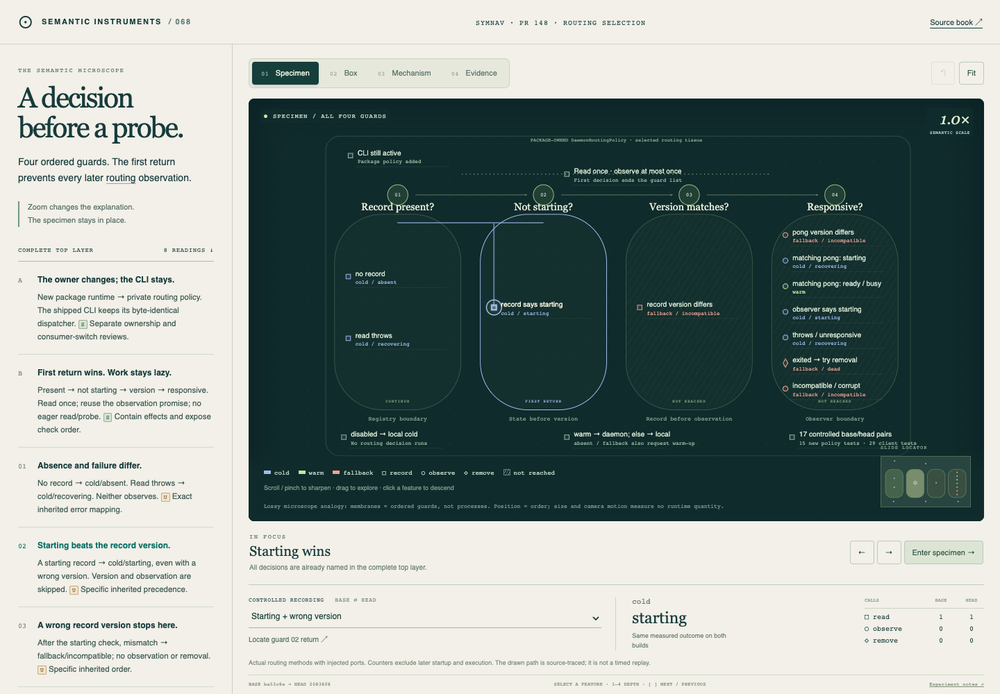 |
Approximately 35 minutes for this completion pass, plus the retained interrupted preparation. Includes guidance/source reading, library comparison, builds, recordings, rendering, interaction checks and screenshot inspection. | The graticule and instrument branding can shrink; they carry orientation, not routing facts. The source-home and test features earn less from magnification than the guards. On a phone, use the normal-size receipt instead of trying to read a whole code line through a small aperture. The full frozen files are useful for audit but far larger than the 60 targeted witnesses. | README# semantic-zoom-microscope ## Entry point Open [index.html](index.html) directly: ```sh open ~/projects/rich-review-v2/experiments/68-semantic-zoom-microscope/index.html ``` No server, installation, network or live worktree is needed to read it. All libraries, recordings and source receipts are local. **A decision before a probe** is a microscope for one narrow part of #148: the ordered, lazy routing decision. Click a feature or use the four objectives to descend through **Specimen → Box → Mechanism → Evidence**. Wheel/pinch changes the actual camera scale and semantic representation. Drag pans. **Home / Fit** returns to the specimen; **Escape** moves up. **1–4** select depth; **[ / ]** or the previous/next arrows walk all 16 features while preserving depth. The source button opens a receipt and returns to the same view. URL fragments and browser history retain the selected feature, depth and recording; history also retains the camera field. The eight open notes are the complete stopping layer. They scroll beside the instrument on desktop and follow it on narrow screens. On a phone the overview is a locator; zoom, or use **Source** for readable text. The complete notes and the [frozen source book](source-book.html) also work without JavaScript. ## Kind other: interactive semantic microscope ## Subjects pr-148 only — Own daemon mechanisms behind DaemonClient. Base `ba53c8e1662fd86d198b95321c90d9c9bef10184` → head `20838f8dbf413e04767543eb2380d0d114da6c60`. Scope: routing selection, its immediate caller boundary, and the evidence for those decisions. This is intentionally **not a whole-PR decision inventory**. Execution delivery, control, idle timing, registry election, entry construction, public declaration design and unrelated test changes are outside this specimen. ## Declared choices - Role framing: learner operating an instrument; notice where observation becomes impossible after a decision. - Box lenses: static module/package ownership and effect boundaries within one routing decision. The CLI dispatcher and added package policy are distinct source owners. Record reads, observer calls and cleanup attempts are distinct effects. Membranes are ordered guards, not process boundaries. - Opening style: picture first, using a marked microscope analogy and a real controlled example: a record is both starting and from the wrong version, but returns cold/starting without an observation. - Shape: one complete eight-reading surface, then four magnifications of the same fixed specimen. Labels become return vocabulary, then check paths, then exact pinned source. Nothing is unlocked as a reward for interaction. - Navigation: D3 camera zoom/pan; direct top-reading jumps; direct specimen-feature selection; linear previous/next feature traversal at any depth; depth objectives; minimap; keyboard; fragments/history; source dialogs with focus restoration. - Trust posture: source-grounded, conservative about rationale, and bounded about measurements. `S` means a reason was stated; `U` means a specific reason was not found in the inspected PR body, 45 commit records and specifications. General preservation intent does not explain the original precedence or cleanup policy. - Persona: a teammate who knows TypeScript and symnav, but not the daemon routing implementation. - Representations used: fixed guard membranes; source-ordered check paths; return-color staining; operation glyphs; hatching for guards not reached; one shared lazy-context strand; paired measured effect counters; semantic replacement at four depths; exact source microprint and a full receipt viewer. - Importance rule: observation prevented by an earlier decision first; inherited asymmetries and cleanup policy next; ownership staging, caller effects and evidence boundaries stay on the complete surface. - Inputs used (beyond bundle): pinned head/base source, the two existing focused head suites, both successful worktree builds, actual compiled base `routeFor` and head `DaemonRoutingPolicy` methods with injected ports, existing dispatcher/test identity checks, architecture/product specifications, and Git revision/status checks. Bundle use: `pr.json` body and all commits, `diff.patch`/file inventory for the scoped delta, and relevant repository/spec material. The overview dumps were not used as evidence. No other PR worktree was used. - Tech: locally vendored D3 7.9.0; SVG, native HTML/CSS/JavaScript; Python evidence capture; Node controlled recorder and integrity checks; isolated Chrome/Playwright browser checks. System fonts; no generated bitmap assets. Codex harness, no delegated agents. - Built on earlier experiment(s): read the required 04-textbook-chapter, 23-zoom-canvas, 36-be-weird-a, 37-be-weird-b and 53-be-weird-53 READMEs. Borrowed bounded recordings, pinned receipts, explicit analogy limits and reliable return paths. Also read 63-daemon-constellation and surveyed representation declarations from 56, 60, 61 and 65. No implementation, coordinates, evidence bank or recording from those experiments was reused. Retained and independently reran this folder’s partial capture/recording scripts and vendored D3 from the interrupted earlier attempt. ## What I tried The partial folder already contained a useful narrow experiment: 17 base/head routing pairs and pinned sources, but no interface or README. I verified the source pins, rebuilt both worktrees, reran the recordings, expanded capture to check the original CLI tests, and completed the instrument. Considered OpenSeadragon, PixiJS viewport and D3. D3 matched the need for small, selectable vector structures and readable DOM source excerpts. A tiled raster would make the microscope literal but would make semantic text replacement and accessible source interaction harder for this specimen. The first mechanism view was a bordered block containing three lines of explanation. Its [retained screenshot](evidence/attempts/attempt-02-mechanism.png) records the weak result: it was too much like a card behind a camera. I replaced guard mechanisms with source-ordered check glyphs, a return branch and hatched skipped checks. The same early-return fact now changes the structure of the image. The first evidence scale clipped the aperture. A [retained screenshot](evidence/attempts/attempt-03-evidence.png) shows it; the final camera objective fits the source aperture to the viewport. A later resize correction preserves semantic depth when switching between desktop and phone. Final screenshot inspection also caught magnified context labels crossing the fixed legend; a shaded instrument margin separates them. Browser-check failures exposed two checking assumptions: D3 raises selected nodes in DOM order without moving coordinates, and browser wheel coordinates are rounded. The checks now compare coordinates by feature ID and use the actual event pointer. Failure records are preserved under `evidence/attempts/`. ## What I would drop The graticule and instrument branding can shrink; they carry orientation, not routing facts. The source-home and test features earn less from magnification than the guards. On a phone, use the normal-size receipt instead of trying to read a whole code line through a small aperture. The full frozen files are useful for audit but far larger than the 60 targeted witnesses. ## What I would do next Ask a fresh reader to predict both double-fault cases: a starting/wrong-version record and a starting/wrong-version pong. Compare their explanation with the same facts in a conventional decision tree. No human comprehension trial was performed here. ## Time spent Approximately 35 minutes for this completion pass, plus the retained interrupted preparation. Includes guidance/source reading, library comparison, builds, recordings, rendering, interaction checks and screenshot inspection. ## Visual-variable legend | Variable | Meaning | Limit | | --- | --- | --- | | Left-to-right membrane position, 01–04 | Actual guard order: record present, not starting, record version, responsive | Spacing and membrane dimensions measure nothing about cost, memory or elapsed time. | | Blue / green / coral | Cold / warm / fallback route | Color is duplicated by route text. Muted green structure is context, not a fourth result. | | Square / circle / diamond | Record-based check / observation / cleanup attempt | Repeated squares are not repeated registry reads; the context memoizes the read. These are operation families, not call counts. | | Diagonal texture | Guard or check not reached for the selected case/return | Source-traced reachability, not measured duration or dimmed importance. | | Colored membrane and ring | The first return for the selected recording | The recording selector changes this emphasis; it does not alter the implementation. | | Solid path, then downward return | Continue through checks until one decision returns | Source-traced sequence; no animation of daemon execution or physical motion is claimed. | | Dashed continuation | Later checks cannot be evaluated after that return | Distinct from post-route startup, which can still happen in the caller. | | Paired numbers under BASE / HEAD | Measured registry-read, observation and removal call counts in the controlled methods | Excludes startup coordinator work, disk, sockets, actual command execution and elapsed time. | | Magnification | Level of explanation: specimen → owner/guard vocabulary → mechanism → pinned source | Scale is editorial, not optical resolution or runtime magnitude. | | Fixed feature coordinates and locator rectangle | Same source fact and current field of view at every depth | The drawing is a lossy microscope analogy, not a biological or process simulation. | The compact color/shape/texture legend and analogy limit remain beside the instrument. Mechanism paths label themselves source-traced; recording limits sit beside the counters. ## Libraries considered and used | Library | Evaluation | Result | | --- | --- | --- | | [OpenSeadragon](https://openseadragon.github.io/docs/OpenSeadragon.Viewer.html) | Image viewer with tiled-image, overlay, navigator and viewport facilities. A natural choice for an actual microscopy scan. Here the specimen consists of changing, selectable vector semantics and source text. | Considered, not used. No raster tiles were created. | | [PixiJS viewport](https://github.com/pixijs-userland/pixi-viewport) | Mature 2D camera with drag, pinch, wheel and viewport plugins. Appropriate if this needed a large sprite field. The small specimen and DOM source interaction did not require a Pixi scene. | Considered, not used. | | [D3 zoom](https://d3js.org/d3-zoom) | Supports pointer, wheel, touch, transforms, coordinate inversion and interpolated programmatic navigation. Works with the SVG/DOM combination used here. | Used for all camera behavior and semantic-scale events. No custom gesture or camera engine. | | D3 scales, shapes and links | Ordered categorical positions, operation glyphs, check connectors and return branches. | Used. These are authored order axes rather than a graph needing force layout. | D3 7.9.0 is distributed in `vendor/d3.v7.9.0.min.js` with its [ISC license](vendor/D3-LICENSE). Semantic content selection is driven by D3’s current transform scale, including wheel/pinch changes; the objective buttons do not independently toggle hidden panels. The app adds content thresholds and accessibility/navigation controls, not an independent camera system. ## What the weird form teaches better or worse **Better:** the record’s starting check and the later version/probe checks remain in the same places. Selecting the double-fault recording puts a return in the second membrane and hatches the third and fourth. Going closer shows exactly where the path leaves. At the responsive-pong branch, the version check precedes the state check; the visual priority changes while the observer stays in its fourth membrane. The zero observation count is beside both views. The reader can connect an absence of work to the source line that prevents it. **Worse:** a conventional decision tree could present all observer kinds at one readable size. The microscope spends screen area on preserving location, and the first overview is small on phones. Rationale, staging context and measurement limits still need prose. These are design observations, not demonstrated learning gains. This differs from 23’s broad authored rooms and 63’s file constellation: it fixes one narrow decision tissue in place and lets a return resolve into its check sequence and exact source. It does not attempt to explain all 153 changed files. ## Evidence and verification - [Source capture](scripts/capture.py): 11 frozen documents with revision and SHA-256; every worktree file verified against its pinned Git blob. The active CLI dispatcher **and its tests are byte-identical** between base and head. The two new test files have +219/−0 and +447/−0 lines. These are scoped observations, not a claim about unrelated tests in #148. - [Controlled recorder](scripts/record.mjs), [raw recordings](evidence/recordings.json): actual compiled base `DaemonCommandDispatcher.prototype.routeFor` and head policy/context, with injected registry/observer/removal ports. Seventeen pairs agree on returned kind/reason, effect counts and call order. A separate context probe checks no eager work and reused record/observation identity. Captured build hashes accompany the recordings. - [Focused test log](evidence/focused-tests.log): 15 policy tests and 29 client tests passed. The two builds completed successfully: [head](evidence/build-head.log), [base](evidence/build-base.log). No full daemon/end-to-end parity run is claimed. - [Pyramid map](evidence/pyramid-map.json): all 16 fixed features map to one of the eight complete top readings and 60 source witness selections. The register explicitly names the state/version asymmetry, reason-label distinctions, best-effort cleanup, disabled union member, post-route trigger boundary and test scope before descent. - [Static checks](evidence/static-checks.json): pins, hashes, citation ranges, source anchors, recording mappings, scope inventory and clean tracked worktrees. - [Browser check source](scripts/browser-check.cjs), [results](evidence/browser-checks.json): direct-file opening, actual pointer descent, all feature/depth combinations, every source witness, every recording, wheel-centered zoom, pan, keyboard, source scrolling, return paths, links/history, responsive layouts, touch, reduced/ordinary motion and JavaScript-disabled reading. No browser errors or external requests in the final run. - [Screenshots](screenshots/01-specimen.png): final specimen, box, mechanism, evidence, pong precedence, source receipt and phone views; inspected visually. Earlier visual failures remain under `evidence/attempts/`. The 17 inputs include deliberate double faults and injected errors. They are fixtures, not production incidents. The browser replays saved measurements and uses source order for the drawn traversal; it does not run symnav. Neither the counts nor the test run is presented as a correctness verdict. The artifact collects no comments, approvals, scores or review state. ## Regeneration Opening the artifact requires none of these commands. With the supplied, built worktrees still pinned, run from this folder: ```sh python3 scripts/capture.py node scripts/record.mjs node scripts/verify.cjs node scripts/browser-check.cjs ``` The browser check defaults to system Chrome and the existing Playwright installation at `/tmp/rich-review-05-browser/node_modules/playwright`. Set `MICROSCOPE_PLAYWRIGHT` or `MICROSCOPE_CHROME_CHANNEL` if needed. To repeat the focused source tests, run `pnpm exec vitest run src/client/daemon-routing-policy.test.ts src/client/daemon-client.test.ts` from `worktrees/pr-148-head/packages/daemon`. Only this experiment and permitted worktree build output were written. Symnav source and branches remain untouched. The index, queue, supervisor files and other experiments are left to the orchestrator. The received [brief](brief.md) and earlier attempt logs are retained. |
| 67 | blast-radius-terrain attempt 1: codex → attempt 2: codex |
page, interactive | pr-131 — Route daemon thresholds through centralized policy. Base `b3a6c4fa5dcf96223765aa147a9e094cd4a51b0e` → head `b100221db48754656328391b878299c5a0bab443`. Sixty changed files, +1,298/−544. No other PR is explained. | Role framing: a reader surveying where one policy decision reaches multiple mechanisms. · Box lenses: static package/module ownership and shared input coupling. `packages/daemon` supplies the policy; the measured mechanisms remain in `apps/cli`. The authority boundary moves without a package move. Parent/worker validation supplies one concrete runtime boundary fault. · Opening style: a marked terrain analogy and a compact before/after ownership strip. · Shape: one connected topographic field, seven policy regions, a test shore and five faults. The narrow teaching subject is **direct policy readership versus shared consumers**. It is not an end-to-end daemon explanation. · Navigation: peak → reader → exact access; saddle → shared readers → both sections' accesses. An open survey, sequential inspector controls, direct fragments, source book and return links provide linear and nonlinear reading. · Trust posture: measured static references, source-traced consequences and attributed reasons. Eight grouped records have stated reasons; five fault records identify specific rationale gaps. A general rationale for adapters or budgets is not applied to every implementation detail. · Persona: a TypeScript-familiar teammate who knows symnav but not daemon composition. · Representations used: D3 contours lifted into Three.js relief; policy biome colors; shared-reader saddles; dashed authority/failure/test faults; linked source footprints; a package ownership strip; open decision register; base/head source receipts. · Importance rule: altitude orders distinct direct production-reader files. Unexplained choices remain visible regardless of altitude. No weighted risk, correctness or quality score. · Inputs used (beyond bundle): pinned base/head TypeScript source and compiler configuration; unchanged central policy implementation and tests; `plans/005/daemon-policy.md`, architecture specification and contributor guidance; Git blobs and worktree status; fresh TypeScript-checker reference extraction. Bundle files used: `pr.json`, `diff.patch`, `files.txt`. The overviews were not used. No daemon trace or implementing-agent conversation was supplied or invented. · Tech: D3 7.9.0, Three.js 0.180.0 and OrbitControls; TypeScript 5.9.2 for extraction; esbuild 0.25.10 for an offline bundle; Playwright 1.61.1 and system Chrome for checks. System fonts, no external assets. Codex, no subagents. · Built on earlier experiment(s): the READMEs for **04-textbook-chapter**, **23-zoom-canvas**, **36-be-weird-a**, **37-be-weird-b** and **53-be-weird-53** informed evidence, complete-layer and return-navigation standards. Their implementation and PR-specific evidence were not copied. **28-blast-radius-tool** supplied a warning about missed policy-field references and the limits of seed-based radius; this experiment instead makes a fresh compiler-resolved field census. **52-critique-response-52** supplied audit leads about validation timing, adapter precedence and benchmark fields, rechecked against the worktrees. A scan of earlier README representation fields found identity matrices, a loom, tension bench, ranked radius bars, constellations, a raster and Tetris, but no finished policy terrain. Experiments 62 and 66 had no README when checked. Existing unfinished files and two worker logs in this same assigned folder were preserved and completed. | 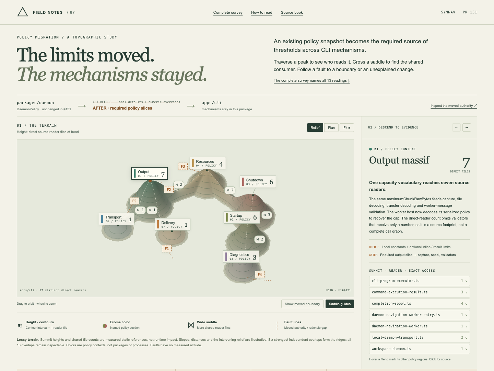 |
About 30 minutes for this completion pass, including source reconciliation, rendering, browser checks and documentation. The two pre-existing unfinished attempt logs are retained; their time is not included in this estimate. | The full-file source bank is useful for checking claims but large for ordinary reading. The separate fault strip repeats labels already on the map; it remains because small reference counts must not hide those choices. The open survey is still long. The 3D view loses its advantage on a phone, where the labeled plan and source inspector do more work. | README# blast-radius-terrain ## Entry point Open [index.html](index.html) directly: ```sh open ~/projects/rich-review-v2/experiments/67-blast-radius-terrain/index.html ``` No installation, server or network is needed to read it. Select a peak, cross a numbered saddle, then select a reader file to open exact source. **Relief / Plan**, drag, wheel and **Fit** change the view. **Previous / Next** traverses the 13 readings. Escape closes source and restores focus; outside source it returns to Output. Browser Back restores a peak or saddle. On a phone, **Read [region]** jumps to the inspector and **Map** returns. The open survey is the complete stopping layer. The linear source book and survey also work without JavaScript. If WebGL is unavailable, the inspector still exposes the measured readers and receipts. ## Kind page, interactive ## Subjects pr-131 — Route daemon thresholds through centralized policy. Base `b3a6c4fa5dcf96223765aa147a9e094cd4a51b0e` → head `b100221db48754656328391b878299c5a0bab443`. Sixty changed files, +1,298/−544. No other PR is explained. ## Declared choices - Role framing: a reader surveying where one policy decision reaches multiple mechanisms. - Box lenses: static package/module ownership and shared input coupling. `packages/daemon` supplies the policy; the measured mechanisms remain in `apps/cli`. The authority boundary moves without a package move. Parent/worker validation supplies one concrete runtime boundary fault. - Opening style: a marked terrain analogy and a compact before/after ownership strip. - Shape: one connected topographic field, seven policy regions, a test shore and five faults. The narrow teaching subject is **direct policy readership versus shared consumers**. It is not an end-to-end daemon explanation. - Navigation: peak → reader → exact access; saddle → shared readers → both sections' accesses. An open survey, sequential inspector controls, direct fragments, source book and return links provide linear and nonlinear reading. - Trust posture: measured static references, source-traced consequences and attributed reasons. Eight grouped records have stated reasons; five fault records identify specific rationale gaps. A general rationale for adapters or budgets is not applied to every implementation detail. - Persona: a TypeScript-familiar teammate who knows symnav but not daemon composition. - Representations used: D3 contours lifted into Three.js relief; policy biome colors; shared-reader saddles; dashed authority/failure/test faults; linked source footprints; a package ownership strip; open decision register; base/head source receipts. - Importance rule: altitude orders distinct direct production-reader files. Unexplained choices remain visible regardless of altitude. No weighted risk, correctness or quality score. - Inputs used (beyond bundle): pinned base/head TypeScript source and compiler configuration; unchanged central policy implementation and tests; `plans/005/daemon-policy.md`, architecture specification and contributor guidance; Git blobs and worktree status; fresh TypeScript-checker reference extraction. Bundle files used: `pr.json`, `diff.patch`, `files.txt`. The overviews were not used. No daemon trace or implementing-agent conversation was supplied or invented. - Tech: D3 7.9.0, Three.js 0.180.0 and OrbitControls; TypeScript 5.9.2 for extraction; esbuild 0.25.10 for an offline bundle; Playwright 1.61.1 and system Chrome for checks. System fonts, no external assets. Codex, no subagents. - Built on earlier experiment(s): the READMEs for **04-textbook-chapter**, **23-zoom-canvas**, **36-be-weird-a**, **37-be-weird-b** and **53-be-weird-53** informed evidence, complete-layer and return-navigation standards. Their implementation and PR-specific evidence were not copied. **28-blast-radius-tool** supplied a warning about missed policy-field references and the limits of seed-based radius; this experiment instead makes a fresh compiler-resolved field census. **52-critique-response-52** supplied audit leads about validation timing, adapter precedence and benchmark fields, rechecked against the worktrees. A scan of earlier README representation fields found identity matrices, a loom, tension bench, ranked radius bars, constellations, a raster and Tetris, but no finished policy terrain. Experiments 62 and 66 had no README when checked. Existing unfinished files and two worker logs in this same assigned folder were preserved and completed. ## What I tried Kept the unfinished folder's source-capture and survey starting point, corrected its source anchors, and built the terrain renderer and interactions. Re-ran extraction rather than accepting the earlier capture. Passing the absolute compiler configuration path fixed ambient Node-type resolution; the final base/head collector has zero syntax or semantic diagnostics. The reader counts did not change. The terrain uses a maximum spanning tree of observed section overlaps, laid out by D3. This gives six continuous ridges without drawing thirteen crossing connectors. Every omitted overlap is still available in the inspector. The scalar field combines compact hills with saddles; summit height is exact, while intervening relief is explicitly illustrative. Early screenshots exposed a clipped summit, an overly bright rectangular ground plane, an unreadable selected label and collisions at 320 pixels. I fitted the camera, removed the surrounding mesh, corrected selected text color and used D3 point scales for narrow-screen label rails. Removing smooth page scrolling resolved an unstable native source-link check with JavaScript disabled. Earlier screenshots and failed check receipts are retained in [evidence/attempts](evidence/attempts/). No complete representation was abandoned. The audit added the parent-side validation fault and clarified a test distinction: base expectations already shared production constants. Switching them to policy values is not presented as a newly invented dependence on production values. ## What I would drop The full-file source bank is useful for checking claims but large for ordinary reading. The separate fault strip repeats labels already on the map; it remains because small reference counts must not hide those choices. The open survey is still long. The 3D view loses its advantage on a phone, where the labeled plan and source inspector do more work. ## What I would do next Ask an unfamiliar reader why Startup and Shutdown share the broadest saddle, and why Transport's low summit says little about its callers. Compare their explanation with one elicited by a conventional adjacency matrix. No comprehension trial was run here. ## Time spent About 30 minutes for this completion pass, including source reconciliation, rendering, browser checks and documentation. The two pre-existing unfinished attempt logs are retained; their time is not included in this estimate. ## Visual-variable legend | Variable | Encoded fact | Limit of the analogy | | --- | --- | --- | | Summit elevation and large numeral | Distinct head production files that directly read the policy section or a leaf | Static source footprint; excludes transitive callers and runtime frequency. A low peak is not low operational importance. | | Contour interval | One file-unit between interior contours | Only summit values are observations. Slopes and interpolated values between summits are synthetic. The faint shoreline is an illustrative boundary. | | Biome color | Output green; Startup olive; Shutdown rose; Resources ochre; Diagnostics violet; Transport blue; Delivery orange | These are named policy contexts, not formal process or package boundaries. Blended ground colors do not indicate additional contexts. | | Saddle width | Number of reader files shared by two sections | Six ridges form a maximum spanning tree; all thirteen overlaps are inspectable. Ridge length, location and travel distance are not measured dependencies. | | Numbered saddle badge | Exact shared-file count | Narrow maps show the selected saddle's badge; the inspector retains all overlaps. | | Rust dashed fault and F1–F5 marker | Error provenance, translated fixtures/report shape, deleted assertions, test premises, earlier parent validation | Marker position, length and elevation carry no severity or probability. Each opens the stated rationale gap and source. | | Outer dashed line, on demand | Threshold authority moves from local CLI defaults to required package policy | An illustrative authority boundary. Code does not relocate into the daemon package in this PR. | | Reader hover/focus | Highlights every region read by that selected source file | File-level coupling, not proof that its settings interact in the same execution. | ## Libraries considered and used | Option | Decision | | --- | --- | | [D3 contours](https://d3js.org/d3-contour) | Used to compute contour polygons from the scalar field. The contouring algorithm is supplied by the library. | | [D3 tree](https://d3js.org/d3-hierarchy/tree), [collision force](https://d3js.org/d3-force/collide) and point scales | Used for overlap-tree placement, separated labels and narrow-screen label rails. No custom graph layout or semantic-zoom engine. | | [Three.js OrbitControls](https://threejs.org/docs/pages/OrbitControls.html) | Used for relief, plan camera, orbit, pan, zoom and pointer picking. It makes height physically inspectable. No automatic camera animation. | | [deck.gl TerrainLayer](https://deck.gl/docs/api-reference/geo-layers/terrain-layer) | Considered; its elevation-image and geographic terrain path adds machinery this small source-derived field does not need. | | [Observable Plot contour mark](https://observablehq.com/plot/marks/contour) | Considered for a flat contour sheet. A good simpler alternative, but relief and precise 3D picking earned a Three.js renderer here. | Dependencies are bundled locally. Licenses are included in [THIRD-PARTY-NOTICES.txt](THIRD-PARTY-NOTICES.txt). ## What the terrain teaches better or worse The intended advantage is simultaneous reading of **reach, context and coupling**. Output is the highest summit, but Startup–Shutdown has the widest shared saddle. Those are different source facts. Hovering `workspace-daemon.ts` lights five policy regions; hovering `local-daemon-transport.ts` lights Output, Transport and Delivery. The small transport peak therefore exposes the measurement's limit rather than making a claim about runtime importance. A conventional diagram would show exact adjacency more directly and an adjacency matrix would expose every overlap without a spanning-tree projection. Terrain makes a few relationships memorable but gives arbitrary distance and height undue visual authority unless its limits remain visible. Error provenance, test-case selection and rationale gaps need prose and paired source: hills alone cannot explain them. These are design judgments, not measured comprehension outcomes. ## Evidence, verification and regeneration The census contains **91 resolved access expressions in 17 distinct head production files**. Nested property expressions may produce multiple access entries on the same line; altitude deduplicates by file. Counts are Output 7, Startup 6, Shutdown 6, Resources 4, Diagnostics 3, Transport 1, Delivery 1. These counts overlap and must not be summed. Base counts record adoption of the policy snapshot, not the old local-default blast radius. - [capture.json](evidence/capture.json): every expression, file set, revision, source and SHA-256 hash. - [decision-register.md](evidence/decision-register.md) and [pyramid-map.json](evidence/pyramid-map.json): the thirteen open records and their mechanism/source crosswalk. - [static-checks.json](evidence/static-checks.json): frozen source/Git checks, patch inventory, exact access locations, counts, overlaps, source anchors and local links. - [browser-checks.json](evidence/browser-checks.json): all 13 readings, 71 receipts, 28 reader-file visits, 13 overlap relationships, shared-section access selection, full-source expansion, focus/history, camera controls, 320/390/768/1440 pixel layouts, touch, direct file opening, JavaScript-disabled reading and WebGL fallback. Final normal-browser checks report no page/console errors or external runtime requests. - [screenshots](screenshots/): visually inspected opening, shared saddle, source descent, error fault, plan boundary and phone views. Failed drafts remain under `evidence/attempts`. These checks validate this artifact and its extraction. **No Symnav test suite or daemon execution was run for this experiment.** Tests are presented as source evidence. Both supplied worktrees retain clean tracked status; no Symnav source, commit or branch was changed. The page has no verdict, comment storage or review collection. To regenerate, with the supplied worktrees still present, run from this folder: ```sh npm ci npm run capture npm run build node scripts/verify.mjs npm run check ``` Browser checks use installed Google Chrome on macOS. Set `TERRAIN_CHROME` to another Chrome/Chromium executable path if needed. These commands are only for rebuilding and verification; opening the generated page needs none of them. Index, queue and repository commits are left to the campaign orchestrator. |
| 66 | boundary-subway attempt 1: claude-opus → attempt 2: claude-opus → attempt 3: codex → attempt 4: codex |
page, interactive | pr-148 only — **Own daemon mechanisms behind DaemonClient**. | Role framing: learner tracing responsibility across a public client boundary. Assigned angle: request, result, recovery and lifecycle as transit services. · Box lenses: static host/package mechanism ownership and runtime caller/daemon/worker containment. The host and package client share a caller process; the daemon group contains its executor worker. The still-active CLI graph is shown separately. · Opening style: a marked transit analogy and express network. One entrance serves four responsibilities, while the shipped CLI still uses its frozen graph. · Shape: complete opening map plus eight visible service notices → selected mechanism or journey → pinned source receipt. The complete stopping layer spans several viewports; the headline alone is not claimed to be complete. · Navigation: line isolation, express/local service, station selection, ten stepwise source walks, eight sequential notices, direct fragments/history, source dialogs and return links. D3 zoom changes camera scale; express/local is an explicit detail switch, not custom semantic zoom. · Trust posture: read-only explanation. Reasons are stated only when found in the supplied prose; exact choices with no rationale remain unexplained. Removed observations and test/configuration changes appear in the complete layer. No verdict, comment collection, persistence or correctness score. · Persona: a teammate who knows symnav but not the daemon boundary. · Representations used: four directed transit networks; authority-shaped stations; responsibility-sized interchanges; package/process enclosures; active compatibility strip; two actual closure tracks; schematic source walks; open service notices; frozen source and diff excerpts. · Importance rule: crossing the client boundary and replay authority first; retained lifecycle/authentication exceptions next; removed routes and changed test observations stay visible. The narrow lesson is who owns a route and when it is permitted, not an explanation of every internal algorithm. · Inputs used (beyond bundle): pinned base/head source, contributor guide, architecture/policy/follow-up plans, manifests, moved and added tests, six focused head test suites, Git identities and tracked status. Independently recomputed the compatibility digest and test-move inventory. Bundle use: PR body/commits, patch, file inventory and relevant repo rules. No other PR worktree or live daemon trace was used. · Tech: D3 7.9.0 for SVG joins, symbols, paths, zoom and camera transitions; ELK.js 0.12.0 for layered compound layout and orthogonal routing; HTML/CSS/JavaScript; Node evidence/build scripts; isolated system Chrome through Playwright. Codex harness; no delegated agents. · Built on earlier experiment(s): borrowed evidence and interaction standards from the required 04, 23, 36, 37 and 53 READMEs. Surveyed earlier representation declarations and inspected relevant material in 06, 18, 57, 61, 63 and 65. Used 23's decision inventory as an exception checklist, with claims checked against source. No earlier experiment implementation or evidence bank was reused. Continued this folder's interrupted model/dependency setup; [research notes](evidence/research-notes.md) identify that reuse and the survey. | 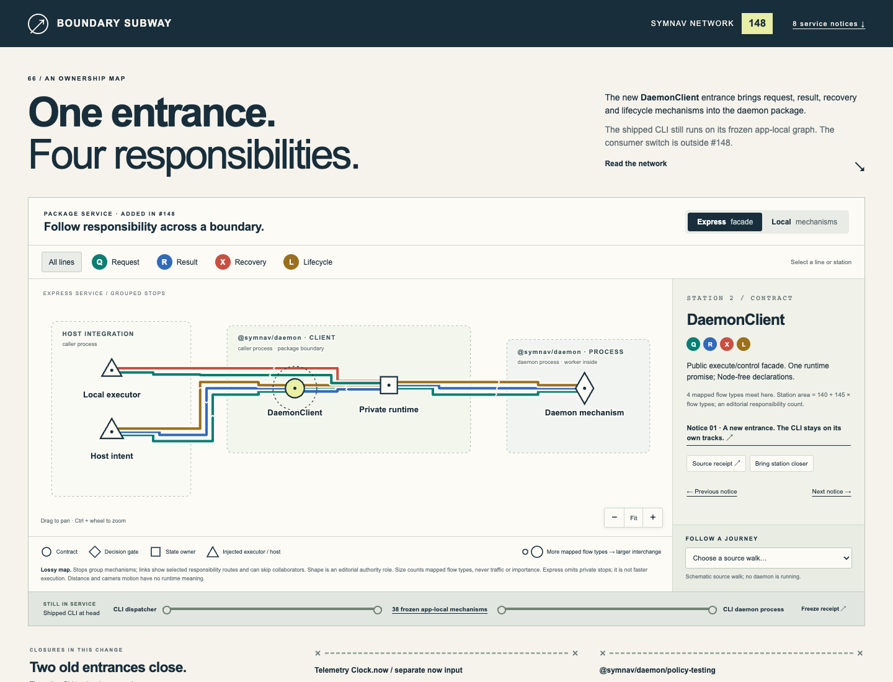 |
About 30 minutes for the completion pass. Earlier interrupted attempts and their logs were retained in the assigned folder. | The all-local view is dense and mainly helps orientation. The exact station-area formula is less useful than simply seeing which flows meet, and editorial authority shapes need a legend. The peripheral test/configuration notice is long because those decisions do not fit naturally on transit tracks. The form works best on one selected route. | README# boundary-subway ## Entry point Open [index.html](index.html) directly: ```sh open ~/projects/rich-review-v2/experiments/66-boundary-subway/index.html ``` No installation, server, network connection or live worktree is required to read it. Select **Express** for the facade boundary, **Local** for mechanisms, or a colored line to isolate one flow. **Follow a journey** provides ten source walks. Select a station or numbered notice for mechanism and exact receipts. Drag to pan, Ctrl + wheel to zoom, or use the camera buttons. **Home** fits the map; **Escape** returns to the facade. Journey controls also accept left/right arrows. Source dialogs restore focus on close. Direct fragments, history and ordinary return links preserve navigation. The eight complete notices and offline source book remain available with JavaScript disabled. Desktop is the best surface for the complete local network; phone layouts run vertically and selected journeys are more readable than the full network. ## Kind page, interactive ## Subjects pr-148 only — **Own daemon mechanisms behind DaemonClient**. Base `ba53c8e1662fd86d198b95321c90d9c9bef10184` → head `20838f8dbf413e04767543eb2380d0d114da6c60`. ## Declared choices - Role framing: learner tracing responsibility across a public client boundary. Assigned angle: request, result, recovery and lifecycle as transit services. - Box lenses: static host/package mechanism ownership and runtime caller/daemon/worker containment. The host and package client share a caller process; the daemon group contains its executor worker. The still-active CLI graph is shown separately. - Opening style: a marked transit analogy and express network. One entrance serves four responsibilities, while the shipped CLI still uses its frozen graph. - Shape: complete opening map plus eight visible service notices → selected mechanism or journey → pinned source receipt. The complete stopping layer spans several viewports; the headline alone is not claimed to be complete. - Navigation: line isolation, express/local service, station selection, ten stepwise source walks, eight sequential notices, direct fragments/history, source dialogs and return links. D3 zoom changes camera scale; express/local is an explicit detail switch, not custom semantic zoom. - Trust posture: read-only explanation. Reasons are stated only when found in the supplied prose; exact choices with no rationale remain unexplained. Removed observations and test/configuration changes appear in the complete layer. No verdict, comment collection, persistence or correctness score. - Persona: a teammate who knows symnav but not the daemon boundary. - Representations used: four directed transit networks; authority-shaped stations; responsibility-sized interchanges; package/process enclosures; active compatibility strip; two actual closure tracks; schematic source walks; open service notices; frozen source and diff excerpts. - Importance rule: crossing the client boundary and replay authority first; retained lifecycle/authentication exceptions next; removed routes and changed test observations stay visible. The narrow lesson is who owns a route and when it is permitted, not an explanation of every internal algorithm. - Inputs used (beyond bundle): pinned base/head source, contributor guide, architecture/policy/follow-up plans, manifests, moved and added tests, six focused head test suites, Git identities and tracked status. Independently recomputed the compatibility digest and test-move inventory. Bundle use: PR body/commits, patch, file inventory and relevant repo rules. No other PR worktree or live daemon trace was used. - Tech: D3 7.9.0 for SVG joins, symbols, paths, zoom and camera transitions; ELK.js 0.12.0 for layered compound layout and orthogonal routing; HTML/CSS/JavaScript; Node evidence/build scripts; isolated system Chrome through Playwright. Codex harness; no delegated agents. - Built on earlier experiment(s): borrowed evidence and interaction standards from the required 04, 23, 36, 37 and 53 READMEs. Surveyed earlier representation declarations and inspected relevant material in 06, 18, 57, 61, 63 and 65. Used 23's decision inventory as an exception checklist, with claims checked against source. No earlier experiment implementation or evidence bank was reused. Continued this folder's interrupted model/dependency setup; [research notes](evidence/research-notes.md) identify that reuse and the survey. ## What I tried Started from the unfinished model already in this assigned folder, then verified its claims and corrected two stale source anchors. The first compound layout produced long return loops and revealed an adapter error: ELK's internal edge coordinates belong to their declared container. Correcting that conversion and orienting layout constraints by responsibility stage made the express network readable. Runtime arrows retain their original direction. The full 16-station view still shrank labels too far. I kept it as a locator and added independently laid-out line and journey views. A downward ELK layout plus a taller canvas replaced the first tiny phone rendering. ELK label spacing fixed a diamond/label collision. Failed screenshots remain in [evidence/attempts](evidence/attempts). The pyramid audit promoted constructor-time loading, memoized observations, ACK disposal, probe settings and active-work deferral into the visible notices. It also retained the lint closures, Windows test expectation, direct-factory oracle and test configuration choices rather than letting those appear only in receipts. ## What I would drop The all-local view is dense and mainly helps orientation. The exact station-area formula is less useful than simply seeing which flows meet, and editorial authority shapes need a legend. The peripheral test/configuration notice is long because those decisions do not fit naturally on transit tracks. The form works best on one selected route. ## What I would do next Give a reader the recovery line and ask where an uncertain submission, an accepted close and a partially received result can go. Compare their explanation with the same facts in a conventional sequence diagram. No human comprehension trial was performed. ## Time spent About 30 minutes for the completion pass. Earlier interrupted attempts and their logs were retained in the assigned folder. ## Visual-variable legend | Variable | Meaning | Limit | | --- | --- | --- | | Teal / Q | Request selection and submission | Selected responsibility path, not every transport hop. | | Blue / R | Result transfer and return | Capture/ACK details are expanded in the source walks. | | Coral / X | Recovery and permission to replay | The local branch is retry-safe only. A closure symbol is not used for forbidden replay: that route was not removed by this PR. | | Ochre / L | Start, status, stop and lifetime | Different lifecycle actions have different credentials and timeouts. | | Circle | Contract / callable boundary | Editorial primary authority role. | | Diamond | Decision or authentication gate | A diamond does not mean every action uses the same credential check. | | Square | Owner of retained state | Some stations group several collaborating mechanisms. | | Triangle | Injected executor or host integration | The host-supplied executor can run locally or in the daemon worker. | | Station area | `140 + 145 × distinct mapped flow types` SVG units² | Curated responsibility count, not traffic, importance, complexity or measured workload. | | Dotted enclosure + label | Host integration, package client, daemon process | Client and host are in the caller process; the worker is inside the daemon process. Source ownership and process boundaries are explicitly named. | | Express / local | Grouped facade stops / private mechanism stops | Express is fewer explanatory stops, not faster execution. | | White chevron | Direction of the mapped flow | Layout can place a return destination to the left or above its source. | | Grey dashed track with crosses | An actually removed timing input or public test export | The separately shown frozen CLI service remains active. | | Muted green solid service | Shipped CLI through 38 frozen app-local mechanisms | Frozen does not mean unused or byte-identical to the PR base. | | Yellow station fill / dotted halo | Selected station or journey step | UI focus, not live traffic. | | Position, distance and camera movement | Navigation and diagram layout | No timing, load, force or performance measurement. | The lossy-map label appears beside the network. Every journey states that it is a schematic source walk and no daemon is running. The browser changes the explanatory selection; it does not simulate execution outcomes or claim a recorded trace. ## Libraries considered and used | Library | Evaluation | Choice | | --- | --- | --- | | [ELK Layered](https://eclipse.dev/elk/reference/algorithms/org-eclipse-elk-layered.html) / [ELK.js](https://github.com/kieler/elkjs) | Compound groups, multiple edges and orthogonal routing suit package regions with shared transit stops. | Used at build time for all 32 desktop/phone layouts. Station positions and bend points are library outputs. | | [D3](https://d3js.org/d3-zoom) | Provides SVG data joins, standard symbols and mature pan/zoom while retaining custom station labels and HTML evidence. Alone it would still need a routing/layout engine. | Used with ELK; a local pinned runtime and license are in `vendor/`. | | [Cytoscape.js](https://js.cytoscape.org/) | Attractive for graph interaction and selection, but this small artifact needs specific transit glyphs and routed compound geometry more than a general graph workspace. It would still need an appropriate routing layout. | Considered; selected ELK plus D3 to keep one SVG camera and direct control of the transit rendering. | ELK runs during generation, so opening the artifact does not need workers, cross-origin imports or the npm installation. Reproduction dependencies are pinned by `package-lock.json`. ## What the form teaches better or worse The recovery branch makes a useful distinction spatial: a safe failure can return to the host's local executor; accepted recovery heads back toward the same accepted work or its retained result. Four services converging on one circle and separating behind it distinguish the public facade from compounded internal responsibility. The still-open compatibility strip prevents package ownership from being mistaken for a completed CLI cutover. Actual crossed-out inputs make removal distinct from staging. A conventional sequence diagram is better at exact timing, await order, and conditional transport calls. The subway deliberately compresses those into grouped stops; receipts and step descriptions restore precision. A table is better for the differing authentication credentials and deleted test assertions. Those remain concise notices rather than being forced into invented transit behavior. These are design observations, not measured learning gains. ## Evidence and checks - [Source bank](evidence/sources.json): 35 full frozen documents and 58 receipts, including two assembled bundle excerpts. Worktree excerpts use original line numbers and source hashes. Bundle excerpts explicitly use local row numbering; patch hunks retain their original before/after coordinates. - [Inventory](evidence/inventory.json): 153 changed files in the supplied patch, 37 relocated mechanism tests, and the independently verified 38-file compatibility digest. - [Confirmed focused test run](evidence/focused-tests-confirmed.log): **57 passed in 6 files**. The retained [earlier run](evidence/focused-tests.log) reports the same selection. This is not full CI, CLI parity, a Windows run, or a live transfer recording. - [Browser checks](evidence/browser-checks.json): 11 passing groups, all 16 stations, all ten journeys and 45 steps, both modes and four lines, eight notice returns, 52 unique attached source receipts, focus restoration, source-book expansion, history, keyboard, pan/zoom, 320/390/768/1440px widths and JavaScript-disabled reading. No page errors, page overflow or external requests in the checked paths. - [Static checks](evidence/static-checks.json): frozen source reconciliation, all graph endpoints checked against ELK station coordinates, source/notice addresses, local links, file inventories and clean tracked worktrees. - [Screenshots](screenshots): opening, recovery line, accepted reattachment, source receipt and phone layouts. Desktop, source and phone captures were visually inspected; intermediate failures are retained. - [Research and pyramid audit](evidence/research-notes.md): rationale search boundary, per-notice coverage, analogy limits, earlier experiments used and failed attempts. Symnav source and branches were untouched. This completion writes only inside `experiments/66-boundary-subway/`; root index and queue handling are left to the campaign. ## Reproduce Reading requires only the supplied files. To regenerate after editing the model/template, with the assigned worktrees still at their pins: ```sh cd ~/projects/rich-review-v2/experiments/66-boundary-subway npm ci npm run build node scripts/verify.mjs npm run check ``` The browser script uses system Chrome and `/tmp/rich-review-05-browser/node_modules/playwright`. Set `SUBWAY_PLAYWRIGHT` to another installed Playwright package path if needed. It creates an isolated browser and writes its report/screenshots here. To repeat the focused source suites from `worktrees/pr-148-head/packages/daemon`: ```sh pnpm exec vitest run src/client/daemon-client.test.ts src/client/daemon-routing-policy.test.ts src/client/daemon-client-control.test.ts src/client/daemon-client-public.test.ts src/transport/execution-client.test.ts src/lifecycle/daemon-lifetime.test.ts ``` |
| 65 | decision-tetris attempt 1: codex |
other: interactive page — a constrained package packing board | stack**, narrowly focused on the final physical package handoff. The two pieces are **#148** and **#149**. The earlier 24 stack PRs are compressed into the **#147** baseline. This is not a complete explanation or semantic audit of the stack, or of either final PR's routing, protocol and lifecycle algorithms. | Role framing: learner examining a source ownership constraint by manipulating the same staged body before and after caller cutover. · Box lenses: static package/module ownership, plus public/private change surface. Source packages are never drawn as process instances. CLI composition and the injected TypeScript/core executor remain visible. · Opening style: the #148 duplication in one picture, with the #149 consequence named immediately. A marked packing analogy supplies intuition. · Shape: a pyramid with a complete stopping layer consisting of the board, legend, eight open decision records and removed-observation strip; matching mechanism and source layers follow. · Navigation: three scrub detents, previous/next PR buttons, reversible pose at #148 and constrained pose at #149, selectable cells, eight direct decision jumps, linear decision arrows, exact return links, local source dialogs, numbered full sources and URL/history state. · Trust posture: pinned source and bounded reason attribution. Stated reasons come from the supplied PR bodies; specific policy API removals, runner choices and ten removed CLI scenarios retain rationale gaps. A test's source is not reported as an executed test. · Persona: a teammate who knows the repository but has not followed the daemon migration. · Representations used: two package wells; a seven-cell staged mechanism body; a separate four-cell hooked cutover cap; fixed role slots; frozen hatching; removal silhouettes; caller pins; controlled lift/rotation; a compact open decision register; paired boundary statements; source receipts and exact test-file inventories. · Importance rule: distinguish staged code from active consumer ownership first; retain the host seam, public access and enforcement next; test relocation and missing observations receive equal root-level treatment. · Inputs used (beyond bundle): read-only Git objects at the three pins; CLI entry, coordinator, executor and composition; daemon client, manifest and selected mechanism owners; testing inspector and actor; import/storage/clock/export tests; freeze and absence checks; before/after status and stop suites; per-PR rename-aware diffs. Main and stack-head contributor guides and tracked status were read. Bundle files used: `pr.json` (including #130 context, final PR bodies and commit records) and `stack.md`. The precomputed overview dumps and net patch were not used to establish claims. · Tech: SVG and ordinary HTML/CSS, **GSAP 3.15.0**, classic JavaScript, Python standard-library evidence capture, Node integrity checks and isolated Chrome/Playwright interaction checks. Codex harness; no delegated agents. · Built on earlier experiment(s): no implementation reused. Full READMEs read: **04-textbook-chapter, 23-zoom-canvas, 36-be-weird-a, 37-be-weird-b, 53-be-weird-53, 07-stack-timeline, 16-drag-the-box, 22-game-any, 60-be-weird-60**. Also surveyed earlier README shape/representation fields; [novelty-survey.json](novelty-survey.json) records the census. Borrowed source pinning, explicit simulation limits, complete root records and focus-return checks as standards. The 07 timeline ruled out another all-stack playback; the 16 relocation workbench and 22 package-sorting game ruled out another freeform ownership puzzle. | 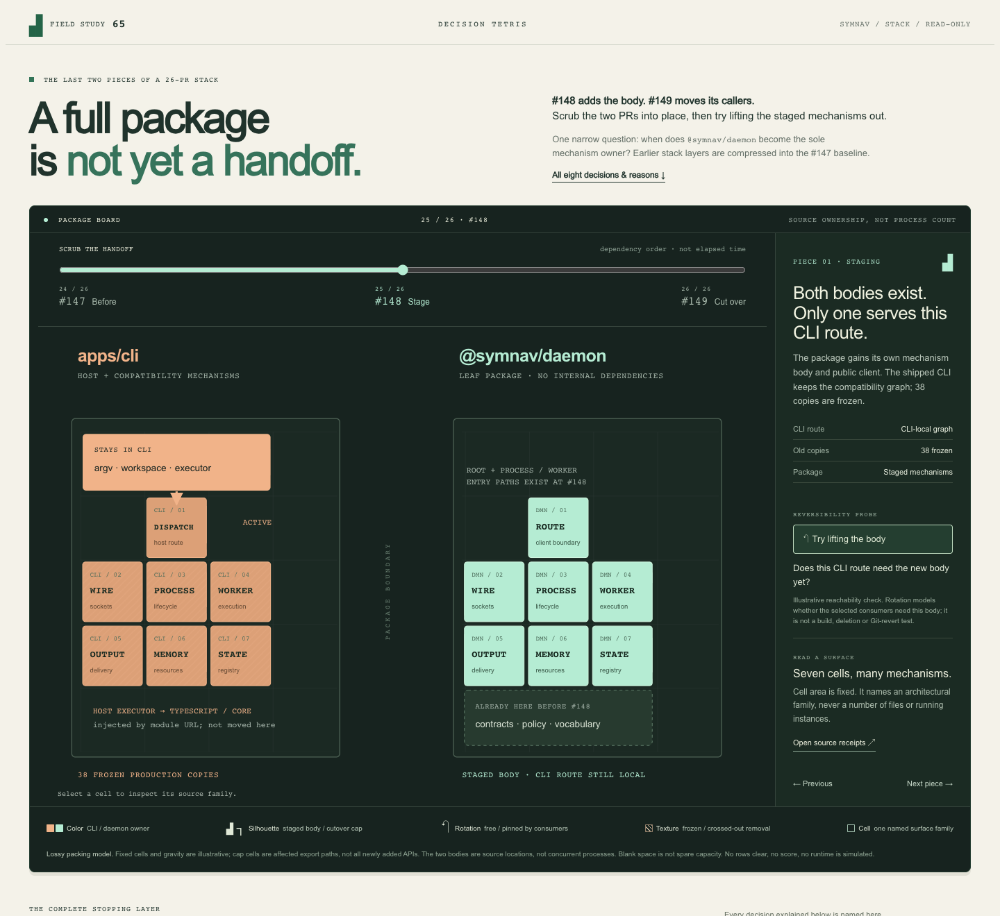 |
Approximately 40 minutes, including reading, library evaluation, evidence extraction, construction, browser checks and screenshot inspection. | The small PR-piece glyphs are decorative and could go. The generic comparison bars below the board earn less than the source witnesses. A wider variant could replace the horizontal phone board, but shrinking the labels would make the representation harder to read. | README# decision-tetris ## Entry point Open [index.html](index.html), or run: ```sh open ~/projects/rich-review-v2/experiments/65-decision-tetris/index.html ``` No installation, server, network or live worktree is required. JavaScript is required. Start at **#148**, try **lifting the body**, then scrub to **#149** and repeat. The slider also supports arrow keys, Home and End. Cells support Tab, Enter and Space. Receipts close with Escape. Browser Back restores PR positions. On narrow screens, the board scrolls horizontally inside the page. ## Kind other: interactive page — a constrained package packing board ## Subjects **stack**, narrowly focused on the final physical package handoff. The two pieces are **#148** and **#149**. The earlier 24 stack PRs are compressed into the **#147** baseline. This is not a complete explanation or semantic audit of the stack, or of either final PR's routing, protocol and lifecycle algorithms. The baseline is `ba53c8e1662fd86d198b95321c90d9c9bef10184`; staging is `20838f8dbf413e04767543eb2380d0d114da6c60`; cutover is `d07002357d3e9596bfaae910a1ac63b77981620b`. The supplied main-to-tip bundle starts at `b6801ebdd2421d0ca2e4bdd61ec0f04c24ddd73e`. ## Declared choices - Role framing: learner examining a source ownership constraint by manipulating the same staged body before and after caller cutover. - Box lenses: static package/module ownership, plus public/private change surface. Source packages are never drawn as process instances. CLI composition and the injected TypeScript/core executor remain visible. - Opening style: the #148 duplication in one picture, with the #149 consequence named immediately. A marked packing analogy supplies intuition. - Shape: a pyramid with a complete stopping layer consisting of the board, legend, eight open decision records and removed-observation strip; matching mechanism and source layers follow. - Navigation: three scrub detents, previous/next PR buttons, reversible pose at #148 and constrained pose at #149, selectable cells, eight direct decision jumps, linear decision arrows, exact return links, local source dialogs, numbered full sources and URL/history state. - Trust posture: pinned source and bounded reason attribution. Stated reasons come from the supplied PR bodies; specific policy API removals, runner choices and ten removed CLI scenarios retain rationale gaps. A test's source is not reported as an executed test. - Persona: a teammate who knows the repository but has not followed the daemon migration. - Representations used: two package wells; a seven-cell staged mechanism body; a separate four-cell hooked cutover cap; fixed role slots; frozen hatching; removal silhouettes; caller pins; controlled lift/rotation; a compact open decision register; paired boundary statements; source receipts and exact test-file inventories. - Importance rule: distinguish staged code from active consumer ownership first; retain the host seam, public access and enforcement next; test relocation and missing observations receive equal root-level treatment. - Inputs used (beyond bundle): read-only Git objects at the three pins; CLI entry, coordinator, executor and composition; daemon client, manifest and selected mechanism owners; testing inspector and actor; import/storage/clock/export tests; freeze and absence checks; before/after status and stop suites; per-PR rename-aware diffs. Main and stack-head contributor guides and tracked status were read. Bundle files used: `pr.json` (including #130 context, final PR bodies and commit records) and `stack.md`. The precomputed overview dumps and net patch were not used to establish claims. - Tech: SVG and ordinary HTML/CSS, **GSAP 3.15.0**, classic JavaScript, Python standard-library evidence capture, Node integrity checks and isolated Chrome/Playwright interaction checks. Codex harness; no delegated agents. - Built on earlier experiment(s): no implementation reused. Full READMEs read: **04-textbook-chapter, 23-zoom-canvas, 36-be-weird-a, 37-be-weird-b, 53-be-weird-53, 07-stack-timeline, 16-drag-the-box, 22-game-any, 60-be-weird-60**. Also surveyed earlier README shape/representation fields; [novelty-survey.json](novelty-survey.json) records the census. Borrowed source pinning, explicit simulation limits, complete root records and focus-return checks as standards. The 07 timeline ruled out another all-stack playback; the 16 relocation workbench and 22 package-sorting game ruled out another freeform ownership puzzle. ## What I tried I considered dropping all 26 PRs, but the existing timeline already shows every stop and the resulting small pieces would hide the important dependency. I selected the last two steps, where a full package and a changed caller are separate facts. The first piece seats a public client and six grouped internal families while the CLI's old route survives. The second seats a hooked cap for the affected final export surface, switches the caller and removes the compatibility silhouette. Trying the same lift on both revisions exposes the structural dependency. It never changes source files or promises a safe revert. I evaluated a renderer, a physics engine and an animation toolkit before implementation; the comparison below explains the choice. No implemented representation was abandoned. The early full-page screenshot is retained as [preview.png](screenshots/preview.png). Browser use led to concrete fixes: the scrubber moved above the board; a long cell subtitle was shortened; the testing pin and label moved clear of the worker tile; the CLI subtitle now changes after cutover; ordinary anchors no longer steal focus on a decision return; an asynchronous custom dialog focus handler was removed in favor of native dialog restoration. The verification script also needed to distinguish stage buttons from the SVG's stage metadata. A final pyramid audit promoted all ten removed scenario names into the open witness strip, so their individual subjects do not first appear on descent. ## What I would drop The small PR-piece glyphs are decorative and could go. The generic comparison bars below the board earn less than the source witnesses. A wider variant could replace the horizontal phone board, but shrinking the labels would make the representation harder to read. ## What I would do next Give a fresh reader the two board states and ask which caller would need a coordinated change if the staged mechanisms were removed. Compare their explanation with a conventional two-column ownership diagram; no comprehension trial has been performed here. ## Time spent Approximately 40 minutes, including reading, library evaluation, evidence extraction, construction, browser checks and screenshot inspection. ## Visual-variable legend | Variable | Encoded fact | Limit | | --- | --- | --- | | Amber / mint | CLI / daemon source owner | Colors do not measure correctness or runtime activity. | | Broad seven-cell silhouette | #148 stages a client plus six grouped mechanism families | Neither equal file counts nor byte-identical copies. The CLI dispatch cell is a host router, not one of the 38 frozen files. | | Hooked four-cell cap | #149 changes consumer access and seals root, process-entry, worker-entry and testing paths | Root and both entry paths already exist at #148. These are affected paths, not four new APIs. | | Cell coordinates and occupancy | A named responsibility or public surface within a package | The finite grid is illustrative. Blank cells are not spare capacity; size is not source size or effort. | | Hatching / crossed-out silhouettes | Frozen CLI mechanism families / physically removed old body | The 38-file count comes from the reproduced source digest, not the picture. | | Active connector and coral pins | CLI root access and the external testing import | Selected consumer edges; not a complete call graph or a runtime trace. | | Lift and rotation | Old selected CLI route still exists at #148; final consumers need the package at #149 | **Illustrative structural reversibility only.** Not a Git revert, compiler result or valid deletion plan. Package-internal tests and build/export dependencies are not simulated. Rotation angle and travel have no numerical meaning. | All movement is explicitly illustrative. No timed gameplay, collision physics, row-clearing, scores, correctness verdicts, comments or response storage are present. The inspector and controls alter only in-memory reading state and the URL. ## Libraries considered and used | Library | Evaluation | Decision | | --- | --- | --- | | [GSAP Timeline](https://gsap.com/docs/v3/GSAP/Timeline/) | Controls a sequence as one playhead and supports seeking/reversing. It can also animate SVG transforms for the controlled lift. This fits a small fixed semantic board. | **Used: 3.15.0**, pinned in the lockfile and vendored. All drop, reverse, lift and constrained-return animation is GSAP-controlled. | | [PixiJS](https://pixijs.com/8.x/guides/components/application) | Its renderer and interactive scene objects would suit many pieces. Here, SVG text and HTML controls already provide selectable source cells and browser accessibility without a canvas-specific text layer. | Considered; not installed. | | [Matter.js](https://brm.io/matter-js/) | Rigid-body physics would produce appealing motion, but contact, mass and gravity would introduce rules unrelated to the source dependency being taught. | Considered; not installed. | The grid has authored semantic slots; it is not an automatically laid-out graph. The few fixed connectors are parts of the board's coordinate system. No graph-layout, semantic-zoom or physics algorithm was implemented. The vendored GSAP file retains its upstream copyright and [license reference](https://gsap.com/standard-license). No external assets, fonts, analytics or network requests are needed to read the artifact. ## What the unusual form teaches The useful moment is a repeated action with a different consequence. At #148, raising the mint body leaves the amber caller's route legible and intact. At #149, that route has been removed and the selected consumers are visibly attached to the mint body. This makes staging versus activation and the consequence of deleting compatibility copies easier to hold together than a row saying “moved to daemon.” The cap also makes the public opening visibly smaller than the private mechanism body. A conventional diagram would explain the direction of dependencies faster, without a rotation legend. This board compresses many internal owners into six cells and cannot teach their algorithms, actual rollback cost, process topology or behavioral parity. Its benefit is a hypothesis about understanding, not a measured reader outcome. ## Evidence and scope - **43 frozen source receipts**, with full local numbered source, exact revision, SHA-256 hash and selected excerpt. [Source bank](evidence/sources.json). - **38 frozen production files** at #148: the capture script reproduces the exact normalized source/name digest from the repository's freeze test. At #149, the entire old mechanism directory is absent in the Git tree. [Inventory](evidence/inventory.json). - **37 mechanism test-file renames** at #148: extracted using `git diff --name-status -M`, with every before/after path retained. This is not an assertion-equivalence measurement. - **Seven status and three stop scenarios** removed at #149: names are extracted from the two specific built-CLI suites and linked to their original lines. Exact [status](evidence/status-149.patch) and [stop](evidence/stop-149.patch) patches are included. No claim that all coverage was lost, or that package tests replace it, is made. - [Supplied #148 body](evidence/pr-148.html) and [supplied #149 body](evidence/pr-149.html), with original commit records alongside them. PR-reported test results remain author statements; this artifact did not rerun them. Reason searches were bounded to the supplied final PR bodies and all 45/94 commit records. Those commits have empty bodies. The author's wider intent or an unavailable conversation could supply additional reasons. The artifact scopes its eight decisions to the physical ownership handoff. No finer routing, acceptance, idle, protocol, timeout or cache mechanism is explained below that root layer. ## Verification and regeneration [Static checks](verification-static.json) cover the model's three states and consumer constraints, connected/disjoint role slots, the complete decision/source mapping, source hashes/excerpt slices and extracted counts. [Browser checks](verification-browser.json) cover direct offline file opening, all stages, keyboard scrubbing, both lift outcomes, interrupted transitions, all selectable cells, all eight decisions, source tabs and full local source pages, focus return, browser Back, text bounds, reduced motion and widths 320/390/768/1440 px. See the [screenshots](screenshots/). The final pass contains six static check groups and fifteen browser check groups, with no JavaScript errors or external requests. [Final folder checks](verification-final.json) record the README contract, local links, artifact hashes and clean tracked worktree status. Symnav source was neither changed nor executed. No symnav test suite was run. Both supplied worktrees were clean for tracked files at evidence capture and final verification. The initial harness/brief files are preserved. Queue, index and commit handling belong to the campaign orchestrator. To recapture from the supplied pinned Git objects and repeat the integrity checks: ```sh cd ~/projects/rich-review-v2/experiments/65-decision-tetris python3 scripts/capture.py node scripts/check-model.cjs ``` To repeat browser checks, `scripts/browser-check.cjs` uses the existing Playwright installation at `/tmp/rich-review-05-browser/node_modules/playwright` and system Chrome. Set `BOARD_PLAYWRIGHT` to an alternative installed Playwright package path when needed, then run: ```sh node scripts/browser-check.cjs ``` Opening the included page requires none of these regeneration steps. `npm ci` restores the pinned GSAP development dependency; the page loads the included `vendor/gsap.min.js` directly. |
| 64 | lifecycle-music-box attempt 1: claude-opus → attempt 2: claude-opus → attempt 3: codex → attempt 4: codex |
other: interactive instrument | pr-127 only — Scope semantic caches to one turn. Comparison is the supplied #126 base `a1e325a5ff979bdfa25babc5554621c8c0f20497` against #127 head `64919bcbcf7fcc8202779b78c5f069b24662bb18`. | Role framing: learner operating a comparative instrument; assigned cache-turn/release ordering angle. · Box lenses: lifecycle ownership and static package/module ownership. Rows are owners; package colors reveal the six Maps’ lifetime moving from the TypeScript service to core handles. The service still owns its scope instance. The release completion chain is a separate boundary. · Opening style: a marked musical analogy and the visible before/after score, under the sentence “Cleared isn’t finished.” · Shape: complete stopping layer = opening, selectable instrument and six open score notes. Note/source dialogs and a frozen source book deepen those same facts. The heading alone is not the complete layer. · Navigation: linear scroll or nonlinear score selection, boundary solo, note inspection and per-decision source jumps. Closing the inspector restores focus. Arrow/Home/End keys move between notes; Space controls playback when a form or note does not own that key. · Trust posture: source-grounded explanation. Stated reasons and specific rationale gaps are named separately; the PR’s preservation claim is shown alongside the changed await/failure boundary. “Aligned” can mean both promises rejected; it is a relation, not a correctness verdict. · Persona: teammate familiar with TypeScript but unfamiliar with these semantic-cache owners. Musical notation knowledge is unnecessary. · Representations used: paired piano rolls, unfinished-call tails, six-note clearing chords, owner pitch, completion intervals, stereo build comparison, boundary solo, step-specific state readouts, textual scores and exact source receipts. No verdict, input collection or persistence. · Importance rule: distinguish cache invalidation from caller-visible completion first; then preserve successful-turn gating, refill/late-settlement behavior, value contracts, API and test choices in the complete notes. · Inputs used (beyond bundle): pinned base/head source, compiled modules after successful builds, core ProjectGraph and concrete TypeScript project release, twelve fresh instrumented fixture recordings, the two changed test suites, Git revision/cleanliness metadata, source hashes and old-test suffix comparison. Bundle: PR body and six commit records, complete patch, changed-file inventory and relevant repo/spec material. No overview output was used as execution evidence. · Tech: local HTML/CSS/JavaScript, SVG with D3 7.9.0, Tone.js 15.1.22, Node recording/build/check scripts, headless system Chrome through Playwright. System fonts; no generated bitmap assets. Codex harness; no delegated agents. · Built on earlier experiment(s): read 04-textbook-chapter, 23-zoom-canvas, 36-be-weird-a, 37-be-weird-b and 53-be-weird-53. Borrowed the standard of bounded execution evidence, source receipts, focus-return navigation and explicit analogy limits. A README representation/technology survey across the earlier experiments checked novelty, including 61 and 63. No earlier experiment’s implementation was copied. This run resumed the unfinished scaffold already in **this** folder; the existing recorder, raw recording format and vendored libraries were retained and audited. | 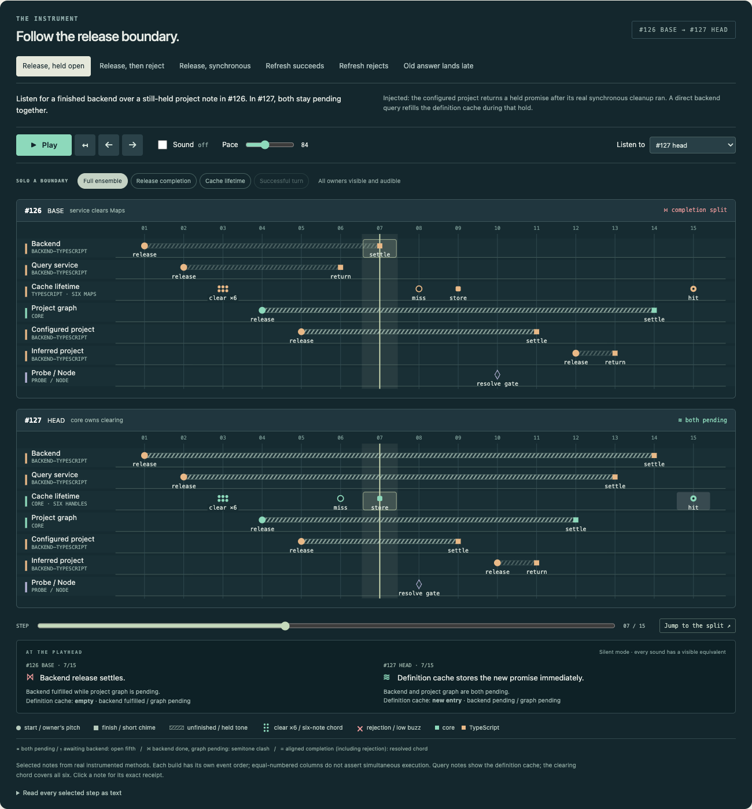 |
Approximately 30 minutes for this completion pass, including guidance/source reading, reconstruction, recording, implementation, browser/audio checks and documentation. Earlier interrupted attempts are separately recorded in `harness.txt` and the worker logs; their elapsed time is not included. | The stereo “both” mode is denser than listening to one build at a time. The six small pitch notes communicate grouped clearing, but they do not teach the individual key formats; the source layer does that better. The large historical worker evidence package is retained only to preserve the unfinished attempt. | README# lifecycle-music-box ## Entry point Open [index.html](index.html) directly. No server, installation, network connection or live worktree is needed. ```sh open ~/projects/rich-review-v2/experiments/64-lifecycle-music-box/index.html ``` **Cleared isn’t finished** is a paired step sequencer. Start with **Jump to the split**, enable **Sound**, and change **Listen to** between base and head. Use **Release completion** to solo that boundary. Choose one of six recordings, play/pause, step, scrub, or click a note to inspect its source. Sound starts off. The complete score notes and frozen [source book](sources.html) remain readable without JavaScript. Desktop is the intended instrument surface; small screens scroll the rolls horizontally and retain the controls and text equivalent. ## Kind other: interactive instrument ## Subjects pr-127 only — Scope semantic caches to one turn. Comparison is the supplied #126 base `a1e325a5ff979bdfa25babc5554621c8c0f20497` against #127 head `64919bcbcf7fcc8202779b78c5f069b24662bb18`. ## Declared choices - Role framing: learner operating a comparative instrument; assigned cache-turn/release ordering angle. - Box lenses: lifecycle ownership and static package/module ownership. Rows are owners; package colors reveal the six Maps’ lifetime moving from the TypeScript service to core handles. The service still owns its scope instance. The release completion chain is a separate boundary. - Opening style: a marked musical analogy and the visible before/after score, under the sentence “Cleared isn’t finished.” - Shape: complete stopping layer = opening, selectable instrument and six open score notes. Note/source dialogs and a frozen source book deepen those same facts. The heading alone is not the complete layer. - Navigation: linear scroll or nonlinear score selection, boundary solo, note inspection and per-decision source jumps. Closing the inspector restores focus. Arrow/Home/End keys move between notes; Space controls playback when a form or note does not own that key. - Trust posture: source-grounded explanation. Stated reasons and specific rationale gaps are named separately; the PR’s preservation claim is shown alongside the changed await/failure boundary. “Aligned” can mean both promises rejected; it is a relation, not a correctness verdict. - Persona: teammate familiar with TypeScript but unfamiliar with these semantic-cache owners. Musical notation knowledge is unnecessary. - Representations used: paired piano rolls, unfinished-call tails, six-note clearing chords, owner pitch, completion intervals, stereo build comparison, boundary solo, step-specific state readouts, textual scores and exact source receipts. No verdict, input collection or persistence. - Importance rule: distinguish cache invalidation from caller-visible completion first; then preserve successful-turn gating, refill/late-settlement behavior, value contracts, API and test choices in the complete notes. - Inputs used (beyond bundle): pinned base/head source, compiled modules after successful builds, core ProjectGraph and concrete TypeScript project release, twelve fresh instrumented fixture recordings, the two changed test suites, Git revision/cleanliness metadata, source hashes and old-test suffix comparison. Bundle: PR body and six commit records, complete patch, changed-file inventory and relevant repo/spec material. No overview output was used as execution evidence. - Tech: local HTML/CSS/JavaScript, SVG with D3 7.9.0, Tone.js 15.1.22, Node recording/build/check scripts, headless system Chrome through Playwright. System fonts; no generated bitmap assets. Codex harness; no delegated agents. - Built on earlier experiment(s): read 04-textbook-chapter, 23-zoom-canvas, 36-be-weird-a, 37-be-weird-b and 53-be-weird-53. Borrowed the standard of bounded execution evidence, source receipts, focus-return navigation and explicit analogy limits. A README representation/technology survey across the earlier experiments checked novelty, including 61 and 63. No earlier experiment’s implementation was copied. This run resumed the unfinished scaffold already in **this** folder; the existing recorder, raw recording format and vendored libraries were retained and audited. ## What I tried The inherited draft attempted a broad nine-score setlist, including worker-thread recordings and comparisons to main. It had no application, stylesheet, audio implementation or README. I retained that attempt in [attempts/initial-index.html](attempts/initial-index.html) and the original recorder/generated files, then narrowed the working instrument to the two supplied revisions and six lifecycle cases. Main/worker recordings are not loaded or presented by the finished instrument. I kept exact event order but removed wrapper calls, routine returns of promise objects, and unrelated query traffic. Six consecutive synchronous clears become one chord. This produces 9–22 selected events per roll instead of an unreadable full trace. Every note retains its raw sequence number(s). Browser checks caught an overbroad method filter matching a probe label containing “refresh.” The filter now excludes caller wrappers. A source check caught a guessed line range for head release; receipt boundaries now find that method by name. I also separated the state “graph settled, backend still pending” from “both pending.” The first audio check sampled before Tone’s scheduled attack; it now waits for the actual waveform instead of assuming a 140 ms startup delay. ## What I would drop The stereo “both” mode is denser than listening to one build at a time. The six small pitch notes communicate grouped clearing, but they do not teach the individual key formats; the source layer does that better. The large historical worker evidence package is retained only to preserve the unfinished attempt. ## What I would do next Give a fresh reader the silent and audible instruments. Ask them to predict a query during held release and the caller-visible outcome of rejecting that release. Compare the explanations with a conventional sequence diagram; no human comprehension trial was run here. ## Time spent Approximately 30 minutes for this completion pass, including guidance/source reading, reconstruction, recording, implementation, browser/audio checks and documentation. Earlier interrupted attempts are separately recorded in `harness.txt` and the worker logs; their elapsed time is not included. ## Visual-variable and sound legend | Channel | Fact carried | Sound / visual equivalent | | --- | --- | --- | | Row position and owner label | Which object executes an event | A stable owner pitch; explicit class/module receipt | | Mint vs brass, plus package label | Core vs backend-typescript ownership | The lifetime row changes package between builds; pitch stays stable because the clearing operation is preserved | | Horizontal position | Selected observed event order | One selected event per musical step; **not duration**, and columns in different builds are not simultaneous timestamps | | Round onset / square endpoint | Call begins / call finishes | Owner’s note / short chime | | Hatched tail | Call has not completed between its endpoints | Held owner tone; audio can stretch a synchronous interval because this is an arranged score | | Six-dot cluster | All six cache clears, grouped | Six-note chord; the actual loop is sequential and synchronous | | Hollow / ring / filled small glyph and label | Definition-cache miss / hit / store | Owner pitch; the explicit lookup label remains authoritative | | Cross and rejection label | Rejection or the observed unhandled rejection | Low dissonant buzz | | Open diamond, probe row and injection caption | Probe resolves/rejects the held operation | Probe pitch; this is controlled input, not an automatic production event | | ≋ both pending / ↟ awaiting backend | Shared pending interval / completion travelling back | Open fifth | | ⋈ completion split | Backend fulfilled while graph remains pending | Repeated C–D♭ semitone clash | | = aligned completion | Matching backend/graph outcomes, including rejection | Resolved C-major chord; a rejection still has its separate buzz | | ≠ outcomes differ | Base backend fulfilled, graph rejected | Low dissonant chord and both outcomes written out | | Solo/dimming | Selected ownership boundary | Other tracks and unrelated relation chords fall silent; their geometry stays visible | The condensed legend appears beside the instrument. All audio has a visible equivalent. Animation uses discrete musical steps, not simulated wall time. Reduced motion disables smooth navigation; manual steps and the full static score remain available. ## Libraries considered and used - **Used: [Tone.js](https://tonejs.github.io/), 15.1.22.** Its transport schedules audio and its Draw scheduler synchronizes the playhead. PolySynth handles envelopes and voice allocation; Panner separates revisions; Analyser verifies real audio output. This avoids writing a custom audio clock or synthesizer. Vendored under its MIT license. - **Used: [D3](https://d3js.org/d3-scale/band), 7.9.0.** Band scales, SVG joins and symbol generators arrange the categorical owner/step grid. D3’s timer supplies silent playback if audio initialization is unavailable. Vendored with its ISC license. There is no graph layout, semantic zoom or routed diagram to hand-build. - **Considered: [native Web Audio](https://developer.mozilla.org/en-US/docs/Web/API/Web_Audio_API).** Capable of this result, but it would require more custom scheduling/envelope management. Tone provides those parts directly. - **Considered then unused: jsdiff**, inherited with the draft. Exact, selected source receipts better serve individual notes than a second full diff viewer. Its vendor files remain with the attempt; the entry point does not load it. No runtime CDN, font service, analytics or API call is needed. ## What the weird form teaches better or worse The unfinished tails make the difference between “entries cleared” and “release completed” visible before reading code. The base backend’s short tail ending over a long project tail is the explanation. Soloing lets the reader hear just that dependency relationship; switching builds changes a clash into a shared held interval and an aligned ending. The preserved clearing chord keeps the ownership extraction separate from the changed completion chain. The form is worse at query-key syntax, exact public wrapper identities and API design rationale. Those stay in the six compact score notes and receipts. Musical dissonance can feel like a verdict even though the page defines it only as a completion relationship. Equal-step arrangement distorts duration, especially synchronous work; this is labeled at the roll and opening. A conventional sequence diagram needs less training and prints more compactly. ## Evidence, regeneration and checks The browser replays a selected recording; it does not execute symnav. [scripts/record.mjs](scripts/record.mjs) checks the two worktree pins and clean tracked status, then runs the retained real-method recorder in isolated child processes. Fixture files live in temporary directories. Instrumentation wraps real functions and Map methods, uses Node promise hooks, and preserves the returned promise identities. It can affect observation overhead; this is not a performance measurement. For held-release cases, the real concrete cleanup runs synchronously **before** an injected returned promise is held. The late-answer and failed-refresh cases also declare their injections. The ordinary release and successful-refresh cases inject no delay or failure. The probe observes base’s unhandled rejection so the capture can finish; no production daemon behavior is inferred from that process. From this folder, with the supplied dependencies/builds present: ```sh node scripts/record.mjs node scripts/build.mjs node scripts/verify.mjs node scripts/browser-check.cjs ``` Browser checks use the existing `/tmp/rich-review-05-browser/node_modules/playwright` installation and system Chrome. Set `MUSIC_BOX_PLAYWRIGHT` to another installed Playwright module path if needed. Rebuilding symnav, if needed, is `pnpm --dir ../../worktrees/pr-127-head build` and the equivalent base command; only build outputs are written there. - [Instrument manifest](evidence/instrument-manifest.json): twelve recording hashes, revision pins, source hashes and test inventory. - [Static checks](evidence/static-checks.json): source-to-Git reconciliation, event-to-recording mapping, ordering assertions, unchanged original tests, local dependency links and no persistence/fetching. - [Browser checks](evidence/browser-checks.json): every selected note and source return, recording selection, keyboard controls, solo, transport interruption, real audio signal and interval selection, mute, four widths, reduced motion and no-JavaScript reading. - [Focused tests](evidence/focused-tests.txt): 15 tests passed across the two changed suites. Five original service cases and helpers remain byte-identical; six service and four core cases were added. The test runner prints a Vite CJS deprecation warning. - [Build logs](evidence/build-head.txt), [base build](evidence/build-base.txt) and [recording run](evidence/recording-run.txt): fresh execution evidence. - [Screenshots](screenshots/): opening, completion split, phone layout and source inspector, visually inspected during the run. Checks establish the artifact’s behavior and bounded observations, not PR correctness, production timing, perceptual sound quality or teaching effectiveness. Symnav source, branches and tracked files were not modified. Index and queue handling are left to the campaign orchestrator. |
| 63 | daemon-constellation attempt 1: codex |
page, interactive | pr-148 only — Own daemon mechanisms behind DaemonClient. | Role framing: learner exploring source ownership. Assigned angle: a navigable constellation of daemon ownership. · Box lenses: static package/directory/module containment plus runtime construction, calls and executable-entry dependencies. Directory rings are explicitly not process boundaries. · Opening style: picture and a marked spatial analogy. Two simultaneously occupied source homes make the headline concrete: the package gains mechanisms while the shipped CLI keeps its own graph. · Shape: ownership constellation above one complete seven-reading register. The register names every authored decision, exception and rationale gap explored through the inspector. It is the complete stopping layer together with the opening; the headline alone is not claimed to satisfy the pyramid invariant. · Navigation: directory zoom, graph-neighbor traversal, source-counterpart jumps, search, seven linear readings, ordinary anchors, browser history and direct fragments. Source dialogs preserve selection and restore focus. · Trust posture: source-backed explanation with stated versus unexplained reasons. The 38-file freeze is independently recomputed; the selected runtime dependencies have exact call/construction/load witnesses. Existing symnav tests are evidence as source, not reported passing runs. No correctness verdict, review storage or response collection. · Persona: a teammate who knows symnav but has not worked on the daemon extraction. · Representations used: two directory-packed source constellations, five mechanism glyphs, ownership color, compatibility dimming, directed dependency paths, source-counterpart tethers, an inspectable owner/path/dependency panel, a complete decision register, and predict/reveal prompts. The representation itself carries containment, coexistence, composition and the absent consumer switch. · Importance rule: source ownership versus active invocation first; public and executable boundaries next; private authority and clock ownership after that. Deleted test observations and unexplained choices stay in the complete layer. · Inputs used (beyond bundle): read-only base/head production sources, package manifest, boundary and construction tests, moved worker/lifetime tests, architecture and functional follow-up plans, and pinned Git identities. Bundle: PR body, all 45 commit subjects, full patch, file inventory. No other PR worktree, live daemon run or previous experiment recording was used. · Tech: D3 7.9.0, Graphology 0.26.0, local SVG/HTML/CSS, esbuild 0.25.10, Python source capture, system Chrome via Playwright. System fonts. Codex harness; no delegated agents. · Built on earlier experiment(s): no earlier implementation, layout or evidence bank was reused. Read the required 04-textbook-chapter, 23-zoom-canvas, 36-be-weird-a, 37-be-weird-b and 53-be-weird-53 READMEs. Also read 23's decision inventory as an exception checklist, then checked claims against the supplied sources. Surveyed representation declarations across finished READMEs and specifically inspected 06-hub-and-spokes, 18-negative-space, 35-future-self, 50-recombine-angles-50, 57-recombine-angles-57 and 60-be-weird-60. Borrowed the standards of bounded evidence, explicit analogy limits, source return paths, and test honesty. This is neither 06's single central hub nor 23's authored rectangular room hierarchy: the directory tree lays out actual files, and both ownership graphs coexist. | 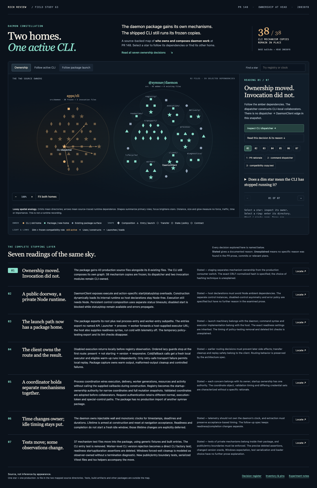 |
Approximately 30 minutes, including guidance/source reading, library comparison, construction, browser checks, screenshot inspection and documentation. | The one-star-per-file density is useful for seeing that the CLI copies remain, but some small protocol and contract stars add little on a phone. The name-based search is more useful there. I would also shorten the seven-reading rationale register if a future brief permits omission of peripheral test/configuration choices; those details do not naturally fit a constellation. | README# daemon-constellation ## Entry point Open [index.html](index.html) directly: ```sh open ~/projects/rich-review-v2/experiments/63-daemon-constellation/index.html ``` No server, installation, network connection or live worktree is required. The browser bundle and source receipts are local. JavaScript enables the map; the complete seven-reading layer is also present in static HTML and in [Markdown](evidence/decision-register.md). Select a star to inspect its owner and dependencies. Select a directory ring to zoom. **Find counterpart** connects the CLI and package files with a dotted source-correspondence tether. **Follow active CLI** and **Follow package launch** expose different dependency sets. Search accepts file names or paths. Wheel/pinch zooms; dragging pans; **Home** fits both owners; **Escape** returns from a star or source receipt. The seven numbered readings and previous/next controls provide a linear route. Direct fragments and browser history preserve the selected reading and file. ## Kind page, interactive ## Subjects pr-148 only — Own daemon mechanisms behind DaemonClient. Base `ba53c8e1662fd86d198b95321c90d9c9bef10184` → head `20838f8dbf413e04767543eb2380d0d114da6c60`. ## Declared choices - Role framing: learner exploring source ownership. Assigned angle: a navigable constellation of daemon ownership. - Box lenses: static package/directory/module containment plus runtime construction, calls and executable-entry dependencies. Directory rings are explicitly not process boundaries. - Opening style: picture and a marked spatial analogy. Two simultaneously occupied source homes make the headline concrete: the package gains mechanisms while the shipped CLI keeps its own graph. - Shape: ownership constellation above one complete seven-reading register. The register names every authored decision, exception and rationale gap explored through the inspector. It is the complete stopping layer together with the opening; the headline alone is not claimed to satisfy the pyramid invariant. - Navigation: directory zoom, graph-neighbor traversal, source-counterpart jumps, search, seven linear readings, ordinary anchors, browser history and direct fragments. Source dialogs preserve selection and restore focus. - Trust posture: source-backed explanation with stated versus unexplained reasons. The 38-file freeze is independently recomputed; the selected runtime dependencies have exact call/construction/load witnesses. Existing symnav tests are evidence as source, not reported passing runs. No correctness verdict, review storage or response collection. - Persona: a teammate who knows symnav but has not worked on the daemon extraction. - Representations used: two directory-packed source constellations, five mechanism glyphs, ownership color, compatibility dimming, directed dependency paths, source-counterpart tethers, an inspectable owner/path/dependency panel, a complete decision register, and predict/reveal prompts. The representation itself carries containment, coexistence, composition and the absent consumer switch. - Importance rule: source ownership versus active invocation first; public and executable boundaries next; private authority and clock ownership after that. Deleted test observations and unexplained choices stay in the complete layer. - Inputs used (beyond bundle): read-only base/head production sources, package manifest, boundary and construction tests, moved worker/lifetime tests, architecture and functional follow-up plans, and pinned Git identities. Bundle: PR body, all 45 commit subjects, full patch, file inventory. No other PR worktree, live daemon run or previous experiment recording was used. - Tech: D3 7.9.0, Graphology 0.26.0, local SVG/HTML/CSS, esbuild 0.25.10, Python source capture, system Chrome via Playwright. System fonts. Codex harness; no delegated agents. - Built on earlier experiment(s): no earlier implementation, layout or evidence bank was reused. Read the required 04-textbook-chapter, 23-zoom-canvas, 36-be-weird-a, 37-be-weird-b and 53-be-weird-53 READMEs. Also read 23's decision inventory as an exception checklist, then checked claims against the supplied sources. Surveyed representation declarations across finished READMEs and specifically inspected 06-hub-and-spokes, 18-negative-space, 35-future-self, 50-recombine-angles-50, 57-recombine-angles-57 and 60-be-weird-60. Borrowed the standards of bounded evidence, explicit analogy limits, source return paths, and test honesty. This is neither 06's single central hub nor 23's authored rectangular room hierarchy: the directory tree lays out actual files, and both ownership graphs coexist. ## What I tried Considered Sigma.js/Graphology, Cytoscape.js and D3. Chose D3's circle packing for real nested directory containment, D3 zoom for the camera, Graphology for directed dependency navigation, and D3 force collision for label placement. A continuously moving force constellation was rejected before implementation: proximity would imply a measured relationship and source positions would drift while being read. The final layout is stable. The first package launch view had two overlapping worker labels. The [initial screenshot](evidence/attempts/label-overlap.png) is retained. D3 collision placement separated the labels; a browser geometry check now verifies the visible launch labels. Thin leaders keep displaced labels attached to their stars. An evidence build also caught a citation ending beyond package.json; the range was corrected before delivery. A later 320px check caught the expanded analogy note touching the camera controls; spacing was corrected and the failing receipt is retained under evidence/attempts/. The first ownership view hid all arrows, which made its instruction to follow the active caller unhelpful. The opening now shows the dispatcher's local construction links and the facade's internal load dependency. Deeper selections add relevant links rather than drawing an unreadable complete edge web. ## What I would drop The one-star-per-file density is useful for seeing that the CLI copies remain, but some small protocol and contract stars add little on a phone. The name-based search is more useful there. I would also shorten the seven-reading rationale register if a future brief permits omission of peripheral test/configuration choices; those details do not naturally fit a constellation. ## What I would do next Give an unfamiliar reader the two-owner view and ask which CLI files can be removed at this commit, then ask them to follow the package's launcher to its worker entry. Compare their explanation with the same facts in a conventional two-column dependency diagram. No human comprehension study was performed here. ## Time spent Approximately 30 minutes, including guidance/source reading, library comparison, construction, browser checks, screenshot inspection and documentation. ## Visual-variable legend | Variable | Meaning | Limit | | --- | --- | --- | | Outer orbit | Mapped source directory belonging to CLI or daemon package | Only `apps/cli/src/daemon` and `packages/daemon/src` are mapped; this is not all app code. | | Nested orbit | Real package source subdirectory | Rings are source containment, not processes. | | Amber | CLI / former mechanism home | Owner color does not mean the file is unchanged from base. | | Mint | Added production source in the package / new home | 43 added files include client and entry additions, not only copies. | | Slate | Eight existing package source files | This is retained source ownership, not an inactivity signal. | | Star / triangle / diamond / square / circle | Composition / entry or launch / transfer / state or policy / contract or vocabulary | An editorial primary-role grouping; a file can have several roles. | | Dim amber at overview | One of the 38 frozen compatibility mechanisms | They still belong to the active CLI graph. Focus brightens selected dependencies without changing their role. | | Solid directed link | Selected runtime construction or call dependence; source → collaborator | Not all imports or every possible runtime edge. Calls may be conditional. | | Dashed directed link | Runtime load, process launch or worker creation | Source-traced possible dependence, not an observed chronological trace. | | Fine line without arrow | Attaches a displaced label to its star | A label leader, not a dependency. | | Dotted tether | CLI/package source correspondence | Both exist at head; it is not a runtime edge or a file-move animation. | | Bright halo | Current selection and its neighborhood | UI focus, not traffic or importance. | | Position / size / camera motion | Layout and navigation | No force, time, frequency, memory, importance or runtime magnitude is measured. | There are 92 production file stars: 41 CLI files (38 frozen plus three invocation files) and 51 package files (43 additions plus eight existing). The graph contains 59 selected directed dependencies. The primary-role glyph assignment and selection dimming are editorial; directory paths, file counts, source pins and dependency witnesses are factual. The analogy warning sits beside the instrument, and the source-correspondence caveat appears with the tether. ## Libraries considered and used | Library | Consideration | Result | | --- | --- | --- | | [Sigma.js + Graphology](https://www.sigmajs.org/) | Strong graph navigation/rendering direction; nested directory enclosures and five glyph roles were the decisive requirements for this small graph. | Graphology used for graph structure and incoming/outgoing/neighborhood queries. Sigma renderer not used. | | [Cytoscape.js](https://js.cytoscape.org/#notation/compound-nodes) | Mature compound graphs, styling and layouts. | Considered; chose literal circle enclosure rather than compound-node diagram styling for this experiment. | | [D3 hierarchy / pack](https://d3js.org/d3-hierarchy/pack) | Directly encodes directory hierarchy as nested enclosures. | Used for every file and directory coordinate within each owner frame. | | [D3 zoom](https://d3js.org/d3-zoom) | Pointer, wheel, touch, programmatic fit and animated camera transforms. | Used; no hand-built camera or semantic zoom engine. | | [D3 force](https://d3js.org/d3-force) | Collision and position forces for readable labels. | Used as a stopped deterministic label layout, not a simulated daemon. | | D3 shapes and transitions | Standard symbols and reduced-motion-aware transitions. | Used for glyphs and navigation. | | esbuild | Produces a local browser bundle from pinned npm dependencies. | Build only; the artifact opens without npm. | Exact dependency versions are locked in [package-lock.json](package-lock.json). [License notices](LICENSES.md) accompany the distributed bundle. No hosted runtime dependency or generated bitmap asset is used. ## What the weird form teaches better or worse **Better:** the 38 dim amber stars remain visibly present beside their mint counterparts. Ownership transfer cannot quietly imply that the production caller switched. Directory rings also make the package's separate execution, transport, lifecycle and worker owners visible without treating every owner as a new process. Following an arrow and then opening its construction line connects a spatial claim to a precise witness. The counterpart tether makes duplication tangible. **Worse:** a normal directed diagram can put launcher → process → worker in a cleaner reading order. This layout favors directory membership, so launch arrows cross module rings and exact chronology is deliberately absent. File glyphs summarize multi-role modules; small labels need zoom/search. Reasons, changed test observations and control exceptions still require prose. The register is long relative to the narrow visual lesson. These are design observations, not measured comprehension gains. ## Evidence and validation - [Source capture](scripts/capture.py) pins both commits, enumerates every mapped production file, independently verifies the normalized compatibility digest and 37 test-file relocations, and captures 166 frozen documents. It writes only in this experiment. - [Inventory](evidence/inventory.json) records the counts, digest, pins, source counts and initial worktree status. [sources.json](evidence/sources.json) contains full files with SHA-256 hashes and original line structure. [diff.patch](evidence/diff.patch) is the supplied patch. - [Pyramid map](evidence/pyramid-map.json) maps each complete reading to its inspector explanation, teach-back and source receipts. There are 37 reading receipt selections in addition to every dependency's witness and file-level base/head access. - [Browser check source](scripts/browser-check.cjs) and [passing results](evidence/browser-checks.json): 13 groups cover all 92 pointer-selectable stars, all 59 dependency receipts, seven reading returns, all 37 reading sources, correspondence navigation, search, deep links, reload/history, keyboard, pan/zoom, source expansion, widths 320/390/768/1440/1920, touch, reduced motion, static reading and printing. No browser errors or network requests occurred. Ordinary-motion camera behavior is checked separately in [supplemental checks](evidence/supplemental-checks.json). - [Static validation](evidence/static-checks.json) reconciles captured hashes, citation ranges, links, correspondence inventory, manifest and clean tracked worktree status. - [Screenshots](screenshots/) were inspected: opening, ownership map, launch dependencies, a CLI/package counterpart and the phone reading surface. The graph is curated source evidence, **not** a Node module-resolution trace or daemon run. The 59 edges are a selected set; a zero outgoing count in the inspector does not prove isolation. This experiment did not run existing symnav tests, benchmark the daemon or judge PR correctness. Source/branch files in both symnav worktrees remained unchanged. ## Rebuild and recheck Opening the finished page needs none of these steps. From this folder, with the supplied worktrees still at the pinned commits: ```sh npm ci python3 scripts/capture.py npm run build python3 scripts/verify.py npm run check node scripts/supplemental-check.cjs ``` The browser check uses the installed Playwright package at `/tmp/rich-review-05-browser/node_modules/playwright` and system Chrome. Set `CONSTELLATION_PLAYWRIGHT` and `CONSTELLATION_CHROME` to other installed paths when needed. The repository index, queue, supervisor files and other experiment folders are left to the campaign orchestrator. |
| 62 | policy-stained-glass attempt 1: claude-opus → attempt 2: claude-opus → attempt 3: codex → attempt 4: codex |
page | pr-131 only — **Route daemon thresholds through centralized policy**. | Role framing: a learner examining which boundaries survive shared authority. Assigned angle: policy as stained glass. Narrow teaching target: **sharing a policy section does not merge the purposes or scopes of its consumers**. · Box lenses: static package/module ownership and composition/input contracts. A small process/thread sentence identifies the already-existing snapshot bridge; the windows are not a runtime topology. · Opening style: picture first, with the lossy mapping stated beside the picture. Two blue cuts display 100 ms and 250 ms; two amber cuts display one allowance per request and one per attempt. · Shape: the window plus fourteen open records form the complete stopping layer. Fourteen matching mechanisms and their exact source excerpts add fidelity. The opening sentence or picture alone is not claimed to be a complete PR explanation. · Navigation: direct glass selection, independent material illumination, before/head comparison, numbered crack jumps, record → mechanism → source, exact record returns, previous/next mechanism links, browser history and ordinary document scrolling. · Trust posture: source-grounded teaching. Stated reasons are attributed to the supplied PR or policy/spec documents. Specific projection, adapter, recovery and test changes retain rationale gaps. There are no verdicts, comments, scores or stored review responses. · Persona: a teammate who knows Symnav but not this daemon corner. · Representations used: three consumer-family silhouettes; seven policy materials; required-input lead perimeters; shared purpose seams; base hatching; numbered fractures; material illumination; a nested request/attempt illustration tied to recorded calls; bounded before/head observation tables; exact source disclosures. · Importance rule: the shared-authority/distinct-purpose distinction first, followed by exceptions to the boundary and changes to the evidence used to characterize it. A source gap gets an open surface record even when it does not fit a pane. · Inputs used (beyond bundle): pinned head/base source, existing policy implementation and policy tests, `plans/005/daemon-policy.md`, architecture functional spec, contributor guidance, actual compiled transports/output capture, Git object IDs and worktree status, library documentation and an existing geometry spike in this experiment. Bundle: PR body, all six commit messages, full patch and file inventory. Generated overview dumps were not used as evidence. No implementing-agent conversation was supplied. · Tech: Paper.js 0.12.18 for boolean path geometry; SVG.js 3.2.4 for interactive SVG selection; static HTML/CSS/JavaScript; Node capture, build and recording scripts; Playwright Core 1.61.1 with system Chrome. Runtime SVG.js is vendored with its license. Fonts resolve locally. Codex; no delegated agents. · Built on earlier experiment(s): no earlier experiment implementation, evidence bank or recording was reused. Read the required READMEs for **04-textbook-chapter, 23-zoom-canvas, 36-be-weird-a, 37-be-weird-b and 53-be-weird-53**. Borrowed their standards for pinned evidence, bounded real recordings, complete stopping layers, keyboard returns and honest analogy limits. For novelty, inspected representation/input/attempt metadata in **02, 05, 15, 25, 51, 57, 58, 60, 61 and 65**. This is neither the 37 reading loom’s two-axis navigation nor the 53 tension bench’s physical resistance, nor the existing policy maps/request replays. See the retained-drafts note below. | 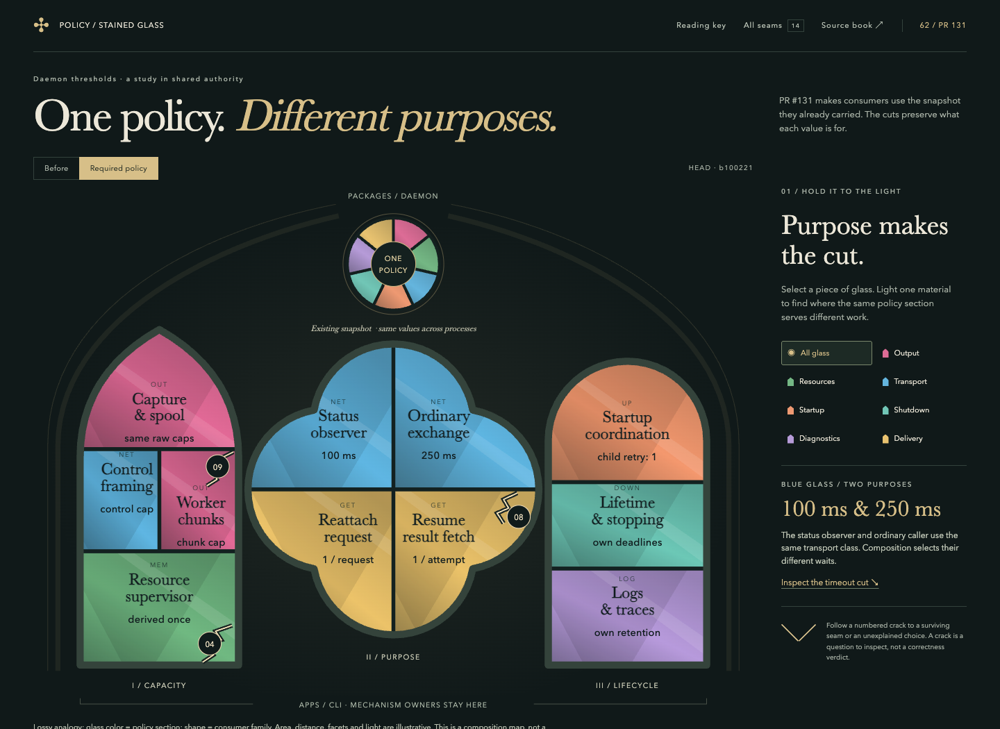 |
Approximately 50 minutes for this completion pass, including reading, source reconciliation, recordings, construction and visual/interaction checks. Prior interrupted attempts are preserved separately and are not included in this estimate. | The translucent facets and outer architectural arch are decorative. They help the material reading, but their removal would preserve the factual encoding. The broad raw-diff census is useful for auditing and earns little space in ordinary reading. | README# policy-stained-glass ## Entry point Open [index.html](index.html), or run: ```sh open ~/projects/rich-review-v2/experiments/62-policy-stained-glass/index.html ``` The finished page opens directly from the folder, offline, without a server, installation or live worktree. Select a glass piece, illuminate a policy material, or switch **Before / Required policy**. Numbered cracks lead to their decision records. Every record opens a mechanism and returns to the same record. Source links open a dialog; Escape restores focus. The [source book](evidence.html) is also a standalone page. Keyboard: Tab reaches glass and controls; Enter/Space selects; arrow keys move between glass pieces. Browser Back and `#glass=status&light=transport&rev=head` preserve a selected view. Ordinary links, the complete decision layer and source book remain usable without JavaScript. Interactive illumination needs JavaScript. ## Kind page ## Subjects pr-131 only — **Route daemon thresholds through centralized policy**. Base `b3a6c4fa5dcf96223765aa147a9e094cd4a51b0e` → head `b100221db48754656328391b878299c5a0bab443`. The existing policy snapshot from the preceding layer is context, not attributed to this PR. Its implementation is byte-identical at these two pins. ## Declared choices - Role framing: a learner examining which boundaries survive shared authority. Assigned angle: policy as stained glass. Narrow teaching target: **sharing a policy section does not merge the purposes or scopes of its consumers**. - Box lenses: static package/module ownership and composition/input contracts. A small process/thread sentence identifies the already-existing snapshot bridge; the windows are not a runtime topology. - Opening style: picture first, with the lossy mapping stated beside the picture. Two blue cuts display 100 ms and 250 ms; two amber cuts display one allowance per request and one per attempt. - Shape: the window plus fourteen open records form the complete stopping layer. Fourteen matching mechanisms and their exact source excerpts add fidelity. The opening sentence or picture alone is not claimed to be a complete PR explanation. - Navigation: direct glass selection, independent material illumination, before/head comparison, numbered crack jumps, record → mechanism → source, exact record returns, previous/next mechanism links, browser history and ordinary document scrolling. - Trust posture: source-grounded teaching. Stated reasons are attributed to the supplied PR or policy/spec documents. Specific projection, adapter, recovery and test changes retain rationale gaps. There are no verdicts, comments, scores or stored review responses. - Persona: a teammate who knows Symnav but not this daemon corner. - Representations used: three consumer-family silhouettes; seven policy materials; required-input lead perimeters; shared purpose seams; base hatching; numbered fractures; material illumination; a nested request/attempt illustration tied to recorded calls; bounded before/head observation tables; exact source disclosures. - Importance rule: the shared-authority/distinct-purpose distinction first, followed by exceptions to the boundary and changes to the evidence used to characterize it. A source gap gets an open surface record even when it does not fit a pane. - Inputs used (beyond bundle): pinned head/base source, existing policy implementation and policy tests, `plans/005/daemon-policy.md`, architecture functional spec, contributor guidance, actual compiled transports/output capture, Git object IDs and worktree status, library documentation and an existing geometry spike in this experiment. Bundle: PR body, all six commit messages, full patch and file inventory. Generated overview dumps were not used as evidence. No implementing-agent conversation was supplied. - Tech: Paper.js 0.12.18 for boolean path geometry; SVG.js 3.2.4 for interactive SVG selection; static HTML/CSS/JavaScript; Node capture, build and recording scripts; Playwright Core 1.61.1 with system Chrome. Runtime SVG.js is vendored with its license. Fonts resolve locally. Codex; no delegated agents. - Built on earlier experiment(s): no earlier experiment implementation, evidence bank or recording was reused. Read the required READMEs for **04-textbook-chapter, 23-zoom-canvas, 36-be-weird-a, 37-be-weird-b and 53-be-weird-53**. Borrowed their standards for pinned evidence, bounded real recordings, complete stopping layers, keyboard returns and honest analogy limits. For novelty, inspected representation/input/attempt metadata in **02, 05, 15, 25, 51, 57, 58, 60, 61 and 65**. This is neither the 37 reading loom’s two-axis navigation nor the 53 tension bench’s physical resistance, nor the existing policy maps/request replays. See the retained-drafts note below. ## What I tried The folder already contained unfinished prior attempts: an installed library set, a large inventory draft, a geometry spike and a screenshot helper. I inspected them, preserved them, and built a new, narrower artifact. The old inventory’s counts, history claims and references to nonexistent probes are not shipped as evidence. The new capture checks its own fourteen records against pinned source. The existing screenshot helper was used for the first render. The retained spike compares a weighted Voronoi treemap, relaxed Voronoi cells and Paper.js band intersections. Irregular automatic cells competed with the purpose labels and made equal areas look meaningful. I chose stable boolean cuts and a four-lobed shape for the paired purposes. No graph routing or semantic camera was necessary. Final source reconciliation also corrected a draft that attributed an effective-memory → hard-RSS reporting change to production. The base already passed hardProcessRssBytes; record 04 now distinguishes removal of the option from a changed value, and identifies the ignored test option instead. Source reading prevented two misleading explanations: the base already gave a reattached execution attempt its own fetch allowance, and a numeric fetch limit above one does not create a repeated-fetch loop. Both remain on the complete layer. A first socket probe had an incomplete injected manifest; it failed before fetching. Adding the protocol-required instance ID fixed the harness. The resulting recordings assert their expected outcomes before they are saved. Browser inspection found a long worker label, an amber label touching the central lead and cracks covering value text. I shortened/repositioned labels and moved the crack badges. A repeated JavaScript-disabled check stalled during long smooth scrolling; document jumps now use immediate native navigation, and the browser check brings that tab to the foreground. The failed-check log is retained under `evidence/browser-failure-before-scroll-fix.*`. A final check tests all text spans against their containing SVG paths. The actual glass partitions are also checked for area coverage and pairwise overlap. ## What I would drop The translucent facets and outer architectural arch are decorative. They help the material reading, but their removal would preserve the factual encoding. The broad raw-diff census is useful for auditing and earns little space in ordinary reading. The fourteen open records make the complete layer several screens long. That is the cost of retaining input, adapter and test surprises around a deliberately narrow central lesson. On a phone the whole window is an orientation image; the selected text and records carry the readable detail. ## What I would do next Ask an unfamiliar reader to predict the wait for the same request sent by two callers, and which allowance is fresh after a reattachment. Compare their explanations with a conventional diagram using the same evidence. No human comprehension trial was performed here. ## Time spent Approximately 50 minutes for this completion pass, including reading, source reconciliation, recordings, construction and visual/interaction checks. Prior interrupted attempts are preserved separately and are not included in this estimate. ## Visual-variable legend | Variable | Factual meaning | Limit | | --- | --- | --- | | Pink / green / blue / orange / mint / violet / amber | Output / resources / transport / startup / shutdown / diagnostics / delivery sections | A hue identifies a section, not a value or importance score. Names accompany color. | | Pointed / four-lobed / round-headed windows | Capacity / purpose-sensitive transport and delivery / lifecycle consumer families | These group modules; they are not physical processes or package silhouettes. | | Position above/below | Policy definition in `packages/daemon`; consuming mechanisms remain in `apps/cli` | Distance and pane area encode no measurement, chronology or dependency count. | | Heavy perimeter and shared interior lead | Required policy inputs at principal consumers; distinct purposes within a shared material | Not proof that every downstream API is required. Thin internal facets are decorative. | | Base hatching and interrupted perimeter | Local numeric defaults/options remain available before the change | A schematic ownership treatment, not a numeric count of bypasses. | | Numbered white fracture | 04: ignored legacy test option; 08: recovery edges; 09: heterogeneous/optional seams | A source-backed question or rationale gap, never a correctness verdict or measured damage. Other gaps remain in the open register. | | Illumination | Which displayed consumers use one policy material | Selection is illustrative light, not execution or traffic. | | Nested amber request/attempt pieces | Reattachment count spans the request; fetch count belongs to an attempt | The page steps through a saved trace. It does not run Symnav or simulate arbitrary faults. | ## Libraries considered and used | Library | Evaluation and choice | | --- | --- | | [Paper.js](https://paperjs.org/reference/pathitem/) 0.12.18 | **Used at build time.** `intersect` and `unite` give reliable cuts and compound curves, with area and overlap checks. Chosen from the retained three-way spike. | | [SVG.js](https://svgjs.dev/docs/3.2/) 3.2.4 | **Used in the page.** Adopts the generated SVG and manages selection, classes and events. Vendored locally. | | D3 7.9.0 + d3-voronoi-treemap 1.1.2 | Retained spike demonstrates automatic cells. Not used in the finished view: the geometry is a semantic grouping, not a data-area visualization. | | d3-delaunay + polygon-clipping 0.15.7 | Retained alternate spike produces relaxed clipped cells. Adds irregularity without improving the two-purpose comparison. Not shipped at runtime. | | [Rough.js](https://roughjs.com/) 4.6.6 | Considered from local installation and documentation. A sketch treatment would make actual fractures harder to distinguish from normal edges. Not used in the finished artifact. | | Two.js | Considered as a scene renderer; not installed or executed for this pass. It offered no needed capability beyond the chosen SVG rendering and Paper geometry. | The retained alternatives remain in `package-lock.json` so the geometry spike stays reproducible. The finished page loads only the small vendored SVG.js bundle. It makes no external requests. ## What the weird form teaches **Better:** one section can be visually identical material in distinct cuts. Lighting blue reveals a shared transport section spanning frame caps and two different waits. Lighting amber keeps the per-request and per-attempt distinction visible despite both defaults being one. Solid lead versus retained fractures makes required composition and surviving downstream seams coexist in the same picture. **Worse:** the glass does not express exact call order, TypeScript projection types, error identity or test stimulus changes well. Those use small comparisons, a recorded scope example and source receipts. Shape is learned through a legend; a conventional dependency diagram would be quicker for a reader whose only question is “which file imports which package?” This page is intentionally organized around policy authority and purpose instead. ## Evidence and verification - [Frozen observations](evidence/observations.json): four timeout observations, eight delivery cases and two output-capture cases. These run actual freshly built base/head methods against scripted local socket peers or a supplied output directory. No full daemon process/backend ran. The spill probe applies the adapter’s exact threshold expression but does not execute the adapter class. - [Recording script](scripts/record.mjs) and [run output](evidence/recording-run.log): same `identify` request and a 160-ms peer delay; preserved reattach/fetch scope; a policy allowing two reattachments; later completion-error selection; terminal fetch failure with limit two; and 5-byte output with the old inline-zero intent. Source composition plus recordings ground the page; elapsed times are observations, not exact deadline guarantees. - Both supplied worktrees completed `pnpm build` successfully during this pass. Existing Symnav test suites were **not run**; the page’s test discussion is a comparison of test source, not a suite-pass claim. - [Static checks](evidence/static-checks.json): pinned source/hash equality, excerpt lines, all 60 changed files (+1,298/−544), local links, complete-layer records, output contract and clean tracked worktree status. - [Browser checks](evidence/browser-checks.json): all eleven panes, eight material selections, before/head treatments, all three crack exits, all fourteen descent/return paths, all 68 source links and focus returns, four recorded steps, direct view URLs/history, 320/390/768/1440-pixel layouts, motion preferences, print media, phone touch selection, JavaScript-disabled source reading and standalone source-book disclosures. No page errors or external requests in the final pass. - [Geometry checks](evidence/geometry.json): all eleven pieces have positive area, combined area matches the family shapes and all 55 pairs have negligible intersection. [Label containment](evidence/label-check.json) checks text spans inside their glass paths. [Screenshots](screenshots/01-opening.png) were inspected, including phone, selected-material, source and recorded-scope views. - [Source snapshots](evidence/source-snapshots.json): 118 pinned files with hashes; [coverage](evidence/coverage.json) links every changed file to visible records. The source book contains 68 excerpts and all 60 file diffs. Raw audit sources naturally have more detail than the teaching layers. Every authored mechanism has a matching open record before the optional depth. In particular, removed memory-cap input and ignored test option (04), admission timing (06), preserved base retry scope (07), recovery error/fetch limits (08), optional seams (09), spill/fixture changes (11), deleted resource cases (12), the guard’s limitation (13), and absent startup/completion deadlines (14) are not revealed for the first time on descent. Reasons are conservatively scoped; no claim of end-to-end parity or code correctness is made. Symnav source/branches, other experiments, the index and the queue were not modified by this pass. Only this experiment and permitted build output were written. Nothing was committed or published. ## Regeneration Opening the finished page needs none of these steps. For rebuilding in the supplied workspace: ```sh cd ~/projects/rich-review-v2/experiments/62-policy-stained-glass npm ci npm run evidence npm run record npm run build node scripts/check-labels.mjs npm run check ``` The recorder expects both supplied worktrees to be pinned and built. Run `pnpm build` in each first if needed. Browser scripts expect Google Chrome at its standard macOS path. All capture/build/recording scripts write only to this experiment or their own temporary directories; the static check also reads the supplied worktrees. ## Preserved prior-attempt material `build/model.mjs`, `build/shot.mjs`, `spikes/geometry-spike.*` and `worker-attempt-*.log` predate this completion pass. The old model is an **unfinished, unverified draft**, not an evidence manifest or a source for the shipped page. It refers to probes that were never present. The active implementation lives in `src/` and `scripts/`; current npm scripts point there. The received brief is preserved in [brief.md](brief.md). |
| 61 | pixel-causality-grid attempt 1: codex |
page, interactive | stack — all 26 supplied PR heads, plus main as a baseline. Main `b6801ebdd2421d0ca2e4bdd61ec0f04c24ddd73e` → #149 `d07002357d3e9596bfaae910a1ac63b77981620b`. | Role framing: learner reading a causal instrument; assigned angle is the pixel causality field. · Box lenses: static module/package ownership, plus runtime object/lifecycle authority. CLI process, daemon process and worker thread remain distinct from package ownership. · Opening style: a short completion paradox and a simultaneous ownership field. The visibly separate ACK branch supplies the early intuition; schematic distances are marked. · Shape: complete field/key and two visible package/test decisions → controlled recording and selected mechanism → exact pinned source. The complete stopping layer spans more than one viewport and has an explicit end marker. · Navigation: a fixed coordinate grid, linear boundary controls, a six-checkpoint replay, direct links, browser history and return focus. There is no semantic zoom. · Trust posture: distinguish implemented order from author rationale. Seven boundary families have a specific stated reason; two exact ordering rationales were not found. Package staging has a stated reason; the precise readiness-timing assertion deletions are unexplained. No correctness verdict. · Persona: a teammate who knows symnav but has not followed the daemon refactor. · Representations used: a 27 × 9 ownership raster, compound symbols, an ACK branch, physical-package cutover enclosure, two moving request indicators tied to recorded checkpoints, process/thread containment, exact source excerpts, a textual source inventory and a test diff. · Importance rule: expose what prevents the next turn, which owner controls that barrier, and what is independent of it. Preserve rationale gaps, staging and changed test observation at the top. · Inputs used (beyond bundle): read-only Git objects for all 26 heads and main; source for the process shell, accepted-execution session, generation manager, ledger, queue, delivery, lifetime and CLI composition; architecture/follow-up specs; the #148 readiness test rename/diff; new controlled source-method recordings. Bundle use: all 26 PR context/decision sections, commit-message rationale search, revision pins and relevant `repo-rules.md`. Symbol overview placeholders were not used as evidence. The supplied net diff was not needed; the scoped historical diff was generated directly from pinned objects. · Tech: D3 7.9.0, SVG, native HTML/CSS/JavaScript; Python capture/build/verification; Node with the prepared worktree's `tsx` loader for source recording; isolated Playwright with system Chrome for checks. No generated images, remote fonts or hosted services. Harness: Codex; no delegated agents. · Built on earlier experiment(s): read the required 04-textbook-chapter, 23-zoom-canvas, 36-be-weird-a, 37-be-weird-b and 53-be-weird-53 READMEs in order; surveyed representation/shape declarations across 01–60; read 51-angle-new-subject-51's README and 23's decision inventory. Borrowed the standards for bounded recordings, exact receipts, explicit unknown reasons and return navigation. No predecessor implementation, dataset, probe or screenshot was copied. The #148 test claim was independently checked against its original Git diff. | 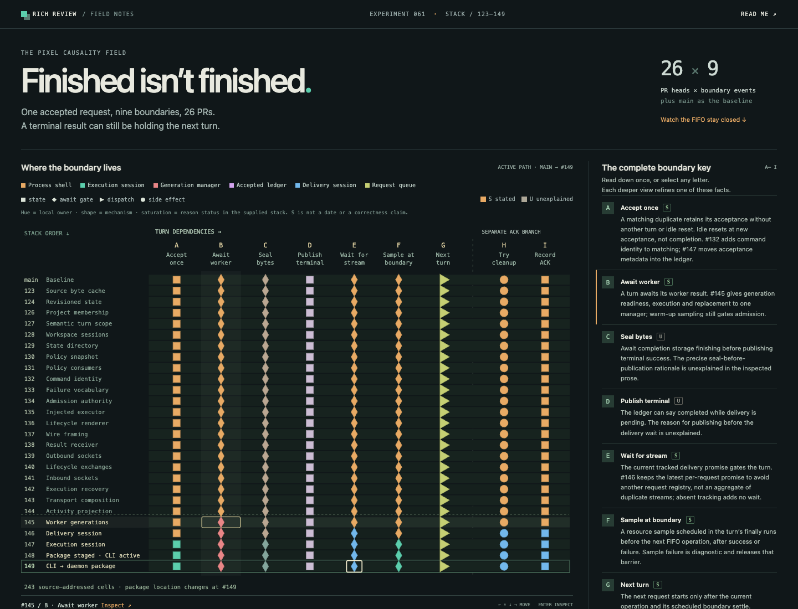 |
Approximately 30 minutes, including required reading, source capture, new recordings, implementation, browser inspection and documentation. | The source inventory table duplicates the per-pixel receipts, but earns a place as the JavaScript-free and keyboard-independent route. The first 22 rows, including main, contain little ownership variation in this lens; their repetition is evidence, but a reader already familiar with that fact may prefer a collapsed band. On a phone, the field requires horizontal scrolling and loses much of its simultaneous comparison benefit. | README# pixel-causality-grid ## Entry point Open [index.html](index.html) directly: ```sh open ~/projects/rich-review-v2/experiments/61-pixel-causality-grid/index.html ``` No install, server, network or worktree is needed to read the artifact. D3 and the evidence are local. JavaScript draws the interactive field; the complete boundary key, package/test decisions and linked source inventory also work without it. Select a pixel to inspect its revision and owner. Arrow keys move between boundaries and PR heads; Home/End reach main/#149; Enter opens the inspector; **Return to selected pixel** restores focus. Boundary letters jump directly into evidence. Browser Back and fragments retain the selected coordinate. Playback supports stepping, scrubbing, pause, two source builds and three controlled outcomes. Nothing is collected or saved from the reader. ## Kind page, interactive ## Subjects stack — all 26 supplied PR heads, plus main as a baseline. Main `b6801ebdd2421d0ca2e4bdd61ec0f04c24ddd73e` → #149 `d07002357d3e9596bfaae910a1ac63b77981620b`. The narrow subject is **the lifetime of an accepted turn across terminal publication, delivery, FIFO sampling and acknowledgement**. The field has 243 concrete boundary instances: nine boundaries at 27 revisions. It does not claim 243 unique decisions or an explanation of every other change in the stack. ## Declared choices - Role framing: learner reading a causal instrument; assigned angle is the pixel causality field. - Box lenses: static module/package ownership, plus runtime object/lifecycle authority. CLI process, daemon process and worker thread remain distinct from package ownership. - Opening style: a short completion paradox and a simultaneous ownership field. The visibly separate ACK branch supplies the early intuition; schematic distances are marked. - Shape: complete field/key and two visible package/test decisions → controlled recording and selected mechanism → exact pinned source. The complete stopping layer spans more than one viewport and has an explicit end marker. - Navigation: a fixed coordinate grid, linear boundary controls, a six-checkpoint replay, direct links, browser history and return focus. There is no semantic zoom. - Trust posture: distinguish implemented order from author rationale. Seven boundary families have a specific stated reason; two exact ordering rationales were not found. Package staging has a stated reason; the precise readiness-timing assertion deletions are unexplained. No correctness verdict. - Persona: a teammate who knows symnav but has not followed the daemon refactor. - Representations used: a 27 × 9 ownership raster, compound symbols, an ACK branch, physical-package cutover enclosure, two moving request indicators tied to recorded checkpoints, process/thread containment, exact source excerpts, a textual source inventory and a test diff. - Importance rule: expose what prevents the next turn, which owner controls that barrier, and what is independent of it. Preserve rationale gaps, staging and changed test observation at the top. - Inputs used (beyond bundle): read-only Git objects for all 26 heads and main; source for the process shell, accepted-execution session, generation manager, ledger, queue, delivery, lifetime and CLI composition; architecture/follow-up specs; the #148 readiness test rename/diff; new controlled source-method recordings. Bundle use: all 26 PR context/decision sections, commit-message rationale search, revision pins and relevant `repo-rules.md`. Symbol overview placeholders were not used as evidence. The supplied net diff was not needed; the scoped historical diff was generated directly from pinned objects. - Tech: D3 7.9.0, SVG, native HTML/CSS/JavaScript; Python capture/build/verification; Node with the prepared worktree's `tsx` loader for source recording; isolated Playwright with system Chrome for checks. No generated images, remote fonts or hosted services. Harness: Codex; no delegated agents. - Built on earlier experiment(s): read the required 04-textbook-chapter, 23-zoom-canvas, 36-be-weird-a, 37-be-weird-b and 53-be-weird-53 READMEs in order; surveyed representation/shape declarations across 01–60; read 51-angle-new-subject-51's README and 23's decision inventory. Borrowed the standards for bounded recordings, exact receipts, explicit unknown reasons and return navigation. No predecessor implementation, dataset, probe or screenshot was copied. The #148 test claim was independently checked against its original Git diff. ## What I tried Initially considered a PR-column field of the 117 authored decisions. It would mainly encode a large prose inventory and make the narrow runtime dependency harder to see. Before implementing it, changed the axes to **revision × the same nine boundary events**. This makes both retained structure and eventual extraction visible at once. The first raster was too tall: the ownership split fell below the initial desktop viewport. Smaller pixels and tighter row bands brought #145–#149 into view without hiding early PRs. The first playback had overlapping headers and a clipped ACK caption; separate letters and shorter labels fixed both. A 768 px browser check found the source pane's intrinsic width expanding the page; allowing the grid item to shrink fixed it. The initial failure report is preserved in [browser-checks-initial.json](evidence/browser-checks-initial.json). The probe used actual source coordination on main and tip, with independently held worker, delivery, sampling and cleanup ports. Both builds exhibit the chosen distinction: a completed ledger entry can still hold the FIFO; delivery settling is followed by a sampling gate; ordinary ACK remains independent. A sampling rejection releases its boundary after diagnosis. A valid ACK still succeeds when injected cleanup rejects. This is a controlled observation, not a production daemon trace or a parity claim about all PRs. No completed representation was abandoned. Rejected design options and UI corrections are retained here rather than presented as negative findings about symnav. ## What I would drop The source inventory table duplicates the per-pixel receipts, but earns a place as the JavaScript-free and keyboard-independent route. The first 22 rows, including main, contain little ownership variation in this lens; their repetition is evidence, but a reader already familiar with that fact may prefer a collapsed band. On a phone, the field requires horizontal scrolling and loses much of its simultaneous comparison benefit. ## What I would do next Give a maintainer only the complete stopping layer, then ask when B can start and whether cleanup rejection withholds ACK. Compare their explanation with a conventional sequence diagram using the same facts; no human comprehension study was performed here. ## Time spent Approximately 30 minutes, including required reading, source capture, new recordings, implementation, browser inspection and documentation. ## Visual-variable legend | Variable | Factual meaning | Limit | | --- | --- | --- | | Vertical position | main, then the 26 supplied PR heads in stack/dependency order | Equal spacing is not elapsed development time. | | Horizontal position | A–G: the selected successful-turn dependencies. H–I: the separate result-ACK branch | Equal spacing is not latency. ACK is not a required step after G. Workspace-deletion shutdown is the explicitly named exception to ordinary ACK independence. | | Hue | The module owning the selected operation/state: process shell (ochre), execution session (mint), generation manager (coral), ledger (violet), delivery session (blue), queue (lime) | This is local ownership, not authorship or file size. A stable hue does not establish unchanged code. | | Shape | Square: publish/retain state; diamond: await gate; triangle: dispatch; circle: side effect | A categorical mechanism key, not a UML vocabulary. | | Saturation | Saturated: a specific stated reason in the inspected stack prose; desaturated: no specific rationale found | S does not mean the reason was first stated at that row's date. U is scoped to inspected material, not a claim about all possible conversations. Neither grades correctness. Textual S/U labels repeat the distinction. | | Row enclosure | #149 is the active physical `@symnav/daemon` boundary | #148 stages package code while the active CLI path remains in `apps/cli`. | | White moving outline | The boundary reached by the recorded A checkpoint; B has a dashed outline | Playback interpolation and spacing are illustrative. Recorded states are authoritative; motion is not a measured trace duration. No autoplay on opening. | | Selection outline | The exact cell whose source is being read | Separate from the white playback position; selection does not modify symnav. | The ownership unit is explicit per column: A is acceptance coordination; B is worker-generation readiness/execution; C is the caller's seal await; D is ledger publication; E is the tracked delivery promise owner; F is sampling scheduling; G is the FIFO scheduler; H/I are ACK coordination. For E, the blue delivery owner supplies the promise while the execution coordinator awaits it. Each E receipt includes both sides. ## Libraries considered and used **Used D3 7.9.0** for categorical band/point placement, keyed SVG data joins, mechanism symbols, colors, easing, transitions and playback timing. At 243 cells, retaining an individual accessible element per pixel was useful. No graph layout, routing engine, semantic camera or animation loop was hand-written. Native overflow handles small screens; this is an ordered grid rather than an arbitrary graph. Considered [PixiJS scene objects](https://pixijs.com/8.x/guides/components/scene-objects) for a larger GPU field, but this scale benefits more from direct SVG focus/source association. Considered [Observable Plot's cell mark](https://observablehq.github.io/plot/marks/cell); the design would also need symbol layers and custom per-cell navigation, so direct D3 was a better fit for this artifact. Regl was considered only at the sketch stage, with no prototype. These choices were design evaluations, not renderer benchmarks. Consulted the official [D3 band-scale documentation](https://d3js.org/d3-scale/band) and [transition documentation](https://d3js.org/d3-transition). The pinned distribution and [license](vendor/d3.LICENSE) are vendored. The artifact makes no external requests. ## What the weird form taught better or worse **Better:** simultaneous repetition makes the distinction between a retained causal order and an ownership extraction visible. Three small color changes near the bottom replace an entire process-shell column family; #148's staged copy does not masquerade as a production cutover. The ledger's terminal column and the delivery/sample columns remain spatially separate, and the moving outline can stop after “completed” while B remains at acceptance. ACK occupies its own branch rather than appearing as the next box in a misleading total order. **Worse:** the field cannot explain a missing author rationale through color alone, or represent a duplicate-attachment promise map with full fidelity. Exact reasons and the latest-promise qualification still require short text. A conventional sequence diagram is quicker for one revision and can show the call/return edges more explicitly. The grid earns its space only when comparing the stack's owners; its quiet early region is expensive on small screens. ## Evidence, scope and verification - [Field data](evidence/field.json) and [capture manifest](evidence/capture.json): all 243 coordinates, revision pins and 105 frozen source/prose documents. Each cell's excerpt is checked against its own Git revision. Full receipts include SHA-256 and line anchors. - [Recordings](evidence/recordings.json): main and tip × normal, sampling rejection, cleanup rejection; six runs and 36 checkpoints. Real main `WorkspaceDaemon` methods use a prototype instance with controlled dependencies. Tip uses real `AcceptedExecutionSession` and `DaemonDeliverySession`; both use their real queue and ledger. Worker, spool, filesystem, clock and send behavior are fake ports. Two new request IDs plus one identical duplicate yield two actual worker starts and two navigation-acceptance resets. No sockets, process startup, disk durability, production latency, generation transitions or full-stack parity were measured. - [Static verification](evidence/verification.json): cell coverage, source hashes, excerpt bounds, seal/publication/delivery ordering at all 27 snapshots, recorded gates, local destinations and clean tracked status of both worktrees. - [Browser checks](evidence/browser-checks.json): every cell, keyboard/return navigation, history and fragments, source dialogs, all recordings, playback controls, SVG label bounds, responsive widths, reduced motion, print, JavaScript-disabled reading and direct offline file opening. [Screenshots](screenshots/) were visually inspected; the initial responsive failure and its screenshot are retained. - [Readiness test patch](evidence/readiness-test.patch): exact #147 → #148 rename-aware diff. The page exposes the changed fixture and removed duration expectations, without claiming repository-wide absence of timing tests. Existing symnav test suites were not run for this experiment; the new source-method probes were executed. Rationale search covered the supplied PR contexts/decisions and commit messages, relevant repository rules, and the architecture/follow-up specs. An original pre-stack design rationale or implementing conversation may exist outside those inputs. General preservation intent was not used to invent a specific reason for C or D. No symnav source, branch or worktree was modified. The artifact has no verdict, approval, comment, score or review-storage controls. Queue, index and campaign completion handling are left to the orchestrator. ## Regeneration Opening the page needs none of these commands. With the supplied worktrees available, from this folder: ```sh python3 scripts/capture.py python3 scripts/build.py python3 scripts/verify.py ``` To regenerate the recordings from source, from the repository root: ```sh node --import ./worktrees/stack-head/apps/cli/node_modules/tsx/dist/loader.mjs experiments/61-pixel-causality-grid/scripts/record.mjs ``` For optional browser verification, serve this folder with `python3 -m http.server 8461 --bind 127.0.0.1`, then run `node scripts/browser-check.cjs` in another terminal. The check uses the existing Playwright package at `/tmp/rich-review-05-browser/node_modules/playwright` and system Chrome. Override with `FIELD_PLAYWRIGHT`, `FIELD_CHROME` or `FIELD_URL` if needed. The browser is isolated from the campaign's shared browser session. |
| 60 | be-weird-60 attempt 1: claude-opus |
negative-result | pr-127, pr-131, pr-148, stack | Role framing: not declared before interruption · Box lenses: not declared before interruption · Opening style: not declared before interruption · Shape: not declared before interruption · Navigation: physical or sensory interaction was assigned; final choice not declared · Trust posture: not declared before interruption · Persona: not declared before interruption · Representations used: incomplete Python content and anchor generators · Importance rule: not declared before interruption · Inputs used (beyond bundle): not declared before interruption · Tech: Claude Code, Opus, Python · Built on earlier experiment(s): not declared before interruption | About 41 minutes before interruption. | The unfinished generators do not yet teach the change. | README# be-weird-60 ## Entry point Open `anchors.py` and `content.py` for the incomplete implementation. ## Kind negative-result ## Subjects pr-127, pr-131, pr-148, stack ## Declared choices - Role framing: not declared before interruption - Box lenses: not declared before interruption - Opening style: not declared before interruption - Shape: not declared before interruption - Navigation: physical or sensory interaction was assigned; final choice not declared - Trust posture: not declared before interruption - Persona: not declared before interruption - Representations used: incomplete Python content and anchor generators - Importance rule: not declared before interruption - Inputs used (beyond bundle): not declared before interruption - Tech: Claude Code, Opus, Python - Built on earlier experiment(s): not declared before interruption ## What I tried The worker began content and anchor generators for a sensory interaction. The orchestrator stopped it at the user's request before it rendered an artifact or README. ## What I would drop The unfinished generators do not yet teach the change. ## What I would do next Recover the intended interaction from the transcript before deciding whether to finish it. ## Time spent About 41 minutes before interruption. |
|
| 59 | critique-response-59 attempt 1: codex |
critique — with a repaired comparison pair, operated observations, exact parent/child witnesses and candidate parent additions. | pr-131 — base `b3a6c4fa5dcf96223765aa147a9e094cd4a51b0e` to head `b100221db48754656328391b878299c5a0bab443`. | Role framing: Auditor and editor; ask whether a parent supplies the conditions and outcomes needed for a prediction. · Box lenses: Static package/module dependency and value authority; runtime failure and lifetime boundaries. The copied pair retains separate client-process, daemon-process and worker-thread containment, while the audit follows parent parsing, startup retry, shutdown waits and test construction/capture boundaries. · Opening style: Before/after of the actual shared arrow error, reduced to one relationship and marked as lossy. CLI imports daemon policy; composition separately supplies values to mechanisms. · Shape: Complete critique findings, four authored mappings, six table/helper comparisons, a thirty-proposition source crosswalk, then observations and provenance. The two repaired PR pages retain their own complete stopping layers and shared depth. · Navigation: Continuous reading, findings-to-witness links, native disclosures, original-parent exits, local source lines and return links. The inherited pair retains its exact-focus return enhancement. The report works without JavaScript. · Trust posture: Include ancestors and other declared fronts before calling something missing. Separate an actual descent surprise from additional source coverage, a weak local attachment, or a later stack stage. Preserve stated versus unexplained reason scope; do not issue a Symnav correctness verdict. · Persona: A TypeScript-familiar teammate who does not know this daemon area; the copied pair supplies the product/runtime introduction. · Representations used: Corrected package diptychs, retained runtime map, exact quotation pairs, prediction questions, source-derived cases, a manual crosswalk, browser captures, line-addressable witnesses and an exact repair patch. No simulation is presented as execution. · Importance rule: Prediction-changing conditions, authority direction and reason scope first. Exact numbers deepen an already named bound; a new failure trigger, budget relationship, state owner or test premise needs a parent. Counts are inventory/provenance aids, not scores. · Inputs used (beyond bundle): Philosophy first and the playbook; selected base/head production, helper and test source and patch regions; policy and architecture plans; pinned `program.ts` context for import direction; git revision/status and source-object comparisons; earlier material listed below. All 123 inherited source snapshots plus two program context snapshots were checked against pinned PR-131 git objects. This is not an independent semantic reread of every line of all sixty changed files. No web research or failed-v1 reading. · Tech: Offline HTML/CSS; Python standard-library preparation, generation and verification; Node/Playwright with local Chrome for observations. Harness: Codex, no delegated agents and no dependency installation. Browser scripts use the already available `/tmp/rich-review-05-browser/node_modules/playwright` installation; this is only a reproduction dependency, not a reader dependency. · Built on earlier experiment(s): Read 49-follow-next-49’s PR-131 validation packets, protocol and four retained phase-one accounts; retained excerpts and verified their original seals. Read 51-angle-new-subject-51’s handoff, rendered fronts/descents, authored data and selected frozen helper/policy witnesses. Copied 52-critique-response-52’s pair, kit, ledger, sources and study documents; changed only the shared arrow/caption/accessibility semantics in the reader pages. The kit originally came from 32 and remains unchanged; 32 was not independently reread. Read 54-critique-refresh-50’s critique and browser-harness pattern, and the relevant 51/52 rows of 55-fresh-reader-refresh-50. Other earlier experiments were ignored except their mentions in these records. | 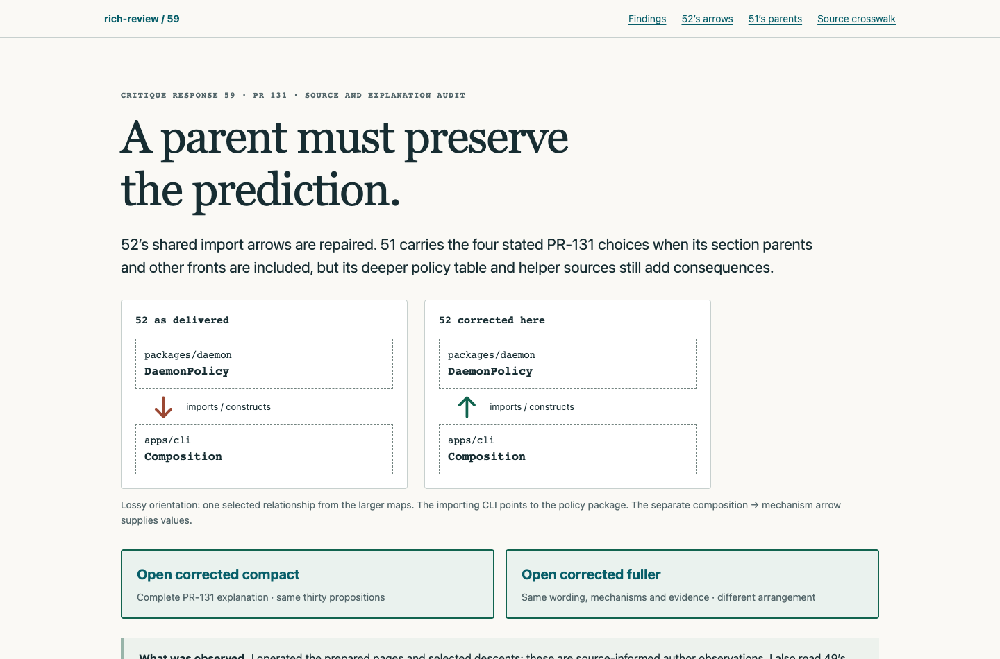 |
About 30 minutes, including reading, comparison capture, source reconciliation, shared repair, the scoped parent audit, browser checks and handoff. Work stayed in this experiment folder. Both Symnav worktrees retained clean tracked state; no Symnav execution, commit, push, publishing or orchestrator update was performed. | The full thirty-row crosswalk is an audit annex; it should not become another required PR reading route. Keeping the full source bank beside both layouts is useful for a portable review, but most readers only need the few witnesses attached to their uncertainty. The stricter diagnostic queue/history parent finding is less decisive than the child-retry and shutdown-budget counterexamples. | README# critique-response-59 ## Entry point Open [index.html](index.html), or run: ```sh open ~/projects/rich-review-v2/experiments/59-critique-response-59/index.html ``` The report and its corrected [compact](baseline-52/compact.html) / [fuller](baseline-52/fuller.html) PR-131 explanations open directly from disk. No installation, server or network is needed. ## Kind critique — with a repaired comparison pair, operated observations, exact parent/child witnesses and candidate parent additions. ## Subjects pr-131 — base `b3a6c4fa5dcf96223765aa147a9e094cd4a51b0e` to head `b100221db48754656328391b878299c5a0bab443`. 51 was inspected as the explicitly requested earlier stack artifact. This audit covers all four of its PR-131 author-bullet mappings, relevant policy-table/helper descendants, and all visible fronts as possible alternative parents. It does not audit the other 113 author-bullet mappings or independently review another PR’s implementation. The thirty-proposition crosswalk separately identifies additional PR-131 source coverage and later-stage distinctions. ## Declared choices - Role framing: Auditor and editor; ask whether a parent supplies the conditions and outcomes needed for a prediction. - Box lenses: Static package/module dependency and value authority; runtime failure and lifetime boundaries. The copied pair retains separate client-process, daemon-process and worker-thread containment, while the audit follows parent parsing, startup retry, shutdown waits and test construction/capture boundaries. - Opening style: Before/after of the actual shared arrow error, reduced to one relationship and marked as lossy. CLI imports daemon policy; composition separately supplies values to mechanisms. - Shape: Complete critique findings, four authored mappings, six table/helper comparisons, a thirty-proposition source crosswalk, then observations and provenance. The two repaired PR pages retain their own complete stopping layers and shared depth. - Navigation: Continuous reading, findings-to-witness links, native disclosures, original-parent exits, local source lines and return links. The inherited pair retains its exact-focus return enhancement. The report works without JavaScript. - Trust posture: Include ancestors and other declared fronts before calling something missing. Separate an actual descent surprise from additional source coverage, a weak local attachment, or a later stack stage. Preserve stated versus unexplained reason scope; do not issue a Symnav correctness verdict. - Persona: A TypeScript-familiar teammate who does not know this daemon area; the copied pair supplies the product/runtime introduction. - Representations used: Corrected package diptychs, retained runtime map, exact quotation pairs, prediction questions, source-derived cases, a manual crosswalk, browser captures, line-addressable witnesses and an exact repair patch. No simulation is presented as execution. - Importance rule: Prediction-changing conditions, authority direction and reason scope first. Exact numbers deepen an already named bound; a new failure trigger, budget relationship, state owner or test premise needs a parent. Counts are inventory/provenance aids, not scores. - Inputs used (beyond bundle): Philosophy first and the playbook; selected base/head production, helper and test source and patch regions; policy and architecture plans; pinned `program.ts` context for import direction; git revision/status and source-object comparisons; earlier material listed below. All 123 inherited source snapshots plus two program context snapshots were checked against pinned PR-131 git objects. This is not an independent semantic reread of every line of all sixty changed files. No web research or failed-v1 reading. - Tech: Offline HTML/CSS; Python standard-library preparation, generation and verification; Node/Playwright with local Chrome for observations. Harness: Codex, no delegated agents and no dependency installation. Browser scripts use the already available `/tmp/rich-review-05-browser/node_modules/playwright` installation; this is only a reproduction dependency, not a reader dependency. - Built on earlier experiment(s): Read 49-follow-next-49’s PR-131 validation packets, protocol and four retained phase-one accounts; retained excerpts and verified their original seals. Read 51-angle-new-subject-51’s handoff, rendered fronts/descents, authored data and selected frozen helper/policy witnesses. Copied 52-critique-response-52’s pair, kit, ledger, sources and study documents; changed only the shared arrow/caption/accessibility semantics in the reader pages. The kit originally came from 32 and remains unchanged; 32 was not independently reread. Read 54-critique-refresh-50’s critique and browser-harness pattern, and the relevant 51/52 rows of 55-fresh-reader-refresh-50. Other earlier experiments were ignored except their mentions in these records. ## What I tried Observed the original rendered comparisons before repair. Both 52 static maps pointed policy → CLI while saying “imports / constructs.” Reversed that gray edge in both treatments and both isolated packets, and clarified dependency versus horizontal value supply in the common caption and accessible description. The original experiment remains untouched. [arrow-repair.patch](arrow-repair.patch) records the exact changes. Then tested the parent relationship at three different scopes: the mapped row, its section ancestor, and the whole declared overview. I withdrew an initial P1 omission claim because the section already says “Required slices replace scattered defaults.” P2’s purpose distinction is available on W3. P9 preserves the two execution budgets. P7 retains test placement and its floor/inert-input warning, while compressing the adapter rationale. The stronger gaps occur below those mapped author bullets: the table introduces startup-child relaunch, coupled stop/reserve versus independent signal waits, separate sampling jobs, and diagnostic queue/history distinctions. Helper source adds constructor directory creation and the condition/precedence behind legacy-option translation. [Candidate additions](parent-repairs.md) make those relationships explicit. They are concrete editorial proposals, not an applied rewrite or certification of 51’s whole stack. Compared all thirty 52 propositions with 51’s fronts. Kept additional PR-131 test/API coverage separate from actual authored descendants. Kept 51’s explicit final-stack recovery qualification: it cannot substitute for #131’s terminal failed-fetch path and later-completion-error provenance. **Observation limit:** I operated pages and inspected source; I was already primed. 49’s four accounts are inherited agent-reader evidence. 52’s unfamiliar-reader trial remains unrun, with its empty slots preserved. I did not fabricate readers, answers, comprehension results or a winning layout. The prepared four questions instead organize clearly attributed author observations. Validation passed: matching original/repaired registers (thirty propositions, 2,305 words each), sixteen operated descent/return routes across the pair, four viewport widths, no document-level overflow, no page errors or external requests, source jumps, and no-JavaScript reading. The report was also checked at all four widths with every disclosure open. Long identifiers initially overflowed at 320 pixels; wrapping fixed that. Shared overview/depth files are assembly fragments and are validated in their assembled reader page. [verification.json](verification.json), [pair observations](observations/pair-browser.json), [report observations](observations/report-browser.json) and [run-log.md](run-log.md) preserve the checks and harness corrections. A frozen-evidence rebuild reproduced the report byte-for-byte. To rebuild the report from its retained evidence, run from this folder: ```sh python3 build.py ``` `python3 prepare.py` recaptures the pair from the named predecessors and pinned worktrees. `python3 verify.py` checks copies, links and tracked worktree state using that original workspace. `observe-originals.mjs`, `observe-pair.mjs` and `check-report.mjs` reproduce the browser work with the local Playwright/Chrome dependency above. None of these is needed to read the delivered artifact. ## What I would drop The full thirty-row crosswalk is an audit annex; it should not become another required PR reading route. Keeping the full source bank beside both layouts is useful for a portable review, but most readers only need the few witnesses attached to their uncertainty. The stricter diagnostic queue/history parent finding is less decisive than the child-retry and shutdown-budget counterexamples. ## What I would do next Use the repaired packets with genuinely unfamiliar people under 52’s existing protocol. Separately show 51’s fronts and ask the child-failure and short-stop-budget questions before any table/source descent, then test only those parent additions. ## Time spent About 30 minutes, including reading, comparison capture, source reconciliation, shared repair, the scoped parent audit, browser checks and handoff. Work stayed in this experiment folder. Both Symnav worktrees retained clean tracked state; no Symnav execution, commit, push, publishing or orchestrator update was performed. |
| 58 | angle-new-subject-58 attempt 1: claude-opus |
negative-result | stack | Role framing: not declared before interruption · Box lenses: not declared before interruption · Opening style: worked example was assigned; final choice not declared · Shape: linked small pyramids were assigned · Navigation: not declared before interruption · Trust posture: not declared before interruption · Persona: not declared before interruption · Representations used: none completed · Importance rule: not declared before interruption · Inputs used (beyond bundle): not declared before interruption · Tech: Claude Code, Opus · Built on earlier experiment(s): not declared before interruption | About 41 minutes before interruption. | The incomplete run has no review surface to keep. | README# angle-new-subject-58 ## Entry point Open `brief.md` and `worker-attempt-1.log`. No artifact was produced before interruption. ## Kind negative-result ## Subjects stack ## Declared choices - Role framing: not declared before interruption - Box lenses: not declared before interruption - Opening style: worked example was assigned; final choice not declared - Shape: linked small pyramids were assigned - Navigation: not declared before interruption - Trust posture: not declared before interruption - Persona: not declared before interruption - Representations used: none completed - Importance rule: not declared before interruption - Inputs used (beyond bundle): not declared before interruption - Tech: Claude Code, Opus - Built on earlier experiment(s): not declared before interruption ## What I tried The worker spent its run investigating the stack. The orchestrator stopped it at the user's request before it wrote an artifact or README. ## What I would drop The incomplete run has no review surface to keep. ## What I would do next Restart with a narrower stack slice if the linked-pyramid angle is revisited. ## Time spent About 41 minutes before interruption. |
|
| 57 | recombine-angles-57 attempt 1: codex |
page | pr-148` only — Own daemon mechanisms behind DaemonClient. | Role framing: One reader records what an explanation taught, then an editor asks what supports a prediction, what obstructs understanding, and what evidence supports each claim. No implementation-correctness verdict or page ranking. · Box lenses: Complete reading layer, selected explanatory depth and pinned source; within the findings, package ownership versus process location, dependencies versus supplied values, input ownership versus failure timing, execution versus delivery/acknowledgement, retained versus per-attempt objects, and test assertion versus reached fixture state. · Opening style: A four-step reading diagram and a concrete credential prediction. Naming process ownership does not by itself distinguish a token-free ping from an execution request that also needs the process token. The answer is present at the opening. · Shape: One comparison table with one row per documented surface. Missing/corrected, repeating and promising observations remain in those rows. Seven editorial threads index the complete layer. Supporting receipts contain exact page/source excerpts, not another hidden findings table. · Navigation: Read every row in numerical surface order; search temporarily; isolate witnessed rule-4 rows; follow a row to a pinned receipt and return with focus to that row. A direct link reveals a row hidden by a filter. The static complete layer and receipt returns also work without JavaScript. · Trust posture: Recall sealed before independent PR/diff and git-content inspection. Both git revisions, the exact matching input patch and source blobs are pinned. The metadata scan exposed prior critique summaries; 49/50 also supplied source-informed leads before the seal. Those are corroborated leads, not new blind discoveries. Captured page code is prior page exposure, not an independent source check. Missed recall never asserts global absence; “none witnessed” never certifies rule 4. Source inference, authored models, producer executions, prior reader responses and artifact checks performed here remain separate. Reasons attach to specific choices: the unchanged plan explains export retirement without explaining every deleted assertion. · Persona: One informed technically literate agent reading overlapping subjects sequentially. No child agents or human participants. This is neither independent unfamiliar-human research nor a new replication of 49's reader study. · Representations used: Reading-sequence diagram; one comparison table and Markdown equivalent; machine-readable row manifest; saved rendered text; selected original-page screenshots; 108 exact page/source excerpts; 59 line-addressed source snapshots; git blob IDs, SHA-256 hashes and an 81-file pre-diff seal. Counts describe artifact scope, not quality. A comparison table suits this critique better than another daemon architecture illustration. · Importance rule: Preserve conditions and consequences that change predictions about ownership, accepted input, failure timing, replay, credentials, retained state or test stimulus/oracle. Extra source spelling and numbers alone do not create a rule-4 surprise. Declared narrow scope stays separate from hidden depth. Prioritize false learning, omitted consequences, reason-scope errors and repeated reader work; preserve representations that expose different relationships. · Inputs used (beyond bundle): `philosophy.md`; playbook §§1, 2, 3, 6, 7, with the other sections read for context; root README entry/kind/subject metadata through 55; selected #148 README declarations; the complete declared #148 teaching layers and documented variants listed above; selected explanatory descents; 54's critique and 55's introduction/#148 rows after the recall seal; supplied worktree contributor/meta-test guidance; read-only git source objects, including the unchanged `plans/005/daemon-policy.md` at both commits. Bundle files used: `pr.json`, `diff.patch`, `files.txt`. The symbol-overview files and full bundled repo-rules collection were not used as mechanism evidence. No failed-v1 material, web research or symnav runtime was used. · Tech: Static HTML/CSS and a small in-memory JavaScript filter; Markdown/JSON; Python standard library for source pinning, generation and receipt verification; local Playwright/Chrome for rendered reading and artifact checks. Existing Playwright under `/tmp/rich-review-05-browser` is tooling, not evidence of teaching quality. No source builds or tests were run. · Built on earlier experiment(s): Read and critique 03-unconstrained-c, 06-hub-and-spokes, 08-adversarial (#148), 12-detective, 18-negative-space, 23-zoom-canvas, 27-test-honesty (#148), 29-refusal, 35-future-self, 49-follow-next-49 (#148 report and four variants), 50-recombine-angles-50. 54-critique-refresh-50 supplies the missing/repeating/promising editorial frame; 55-fresh-reader-refresh-50 supplies the disclosed-reader comparison method and attributed prior route observations. 06/08/49/50 supply substantive source leads, independently checked here. No earlier teaching implementation was copied or edited; exact excerpts are attributed receipts. | 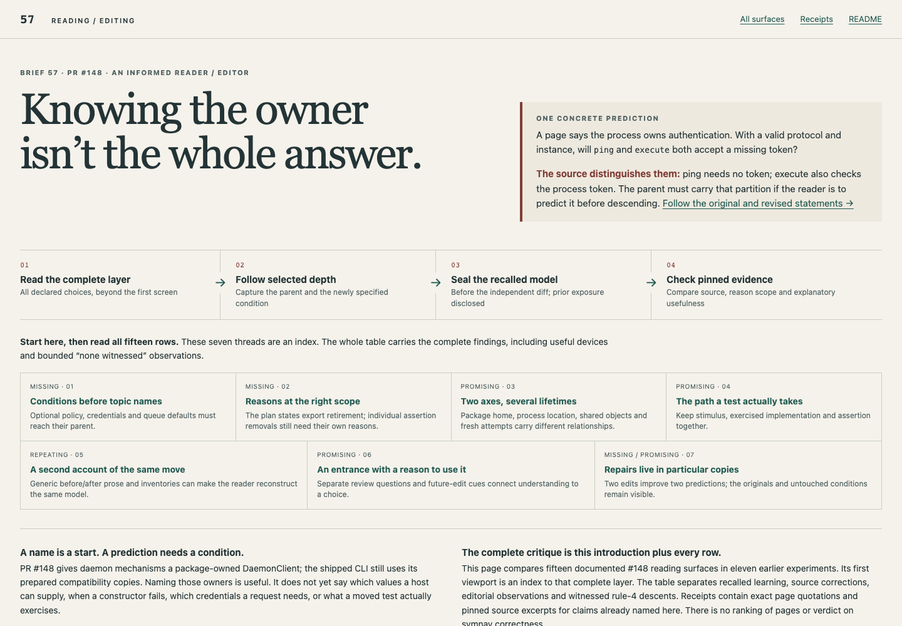 |
About 35 minutes wall-clock, beginning around 06:10 UTC on 13 September 2026. Harness: Codex; one agent, no delegation. | The repeated original-variant rows add reading length, but their separate documented surfaces make them useful for tracing repairs. I would keep them in this comparison and avoid treating them as independent reader observations. The full source copies could become optional downloads; focused excerpts do most of the explanatory work. | README# recombine-angles-57 ## Entry point Open [index.html](index.html), or run: ```sh open ~/projects/rich-review-v2/experiments/57-recombine-angles-57/index.html ``` **Knowing the owner isn’t the whole answer** is an offline critique page. No installation, server, network or symnav checkout is needed to read it. Keep this folder together. Links to original teaching pages need their sibling experiment folders; captured text, screenshots and pinned source remain local. The introduction plus **all fifteen table rows** is the complete critique. The first viewport is its index. Search and the witnessed-rule-4 filter are temporary; printing includes every row. [review.md](review.md) contains the same complete comparison in Markdown. [receipts.html](receipts.html) contains exact quotations and source excerpts, with returns to their table rows. ## Kind page A reader/editor critique of #148 teaching surfaces, with a per-surface ledger inside the single comparison table. The inherited editorial angle's “no page” shape is adapted to this brief's explicit **Kind: page**. ## Subjects `pr-148` only — Own daemon mechanisms behind DaemonClient. Base `ba53c8e1662fd86d198b95321c90d9c9bef10184` → head `20838f8dbf413e04767543eb2380d0d114da6c60`. The bounded cohort is fifteen documented surfaces in eleven experiments: 03, 06, the #148 portion of 08, 12, 18, 23, the #148 portion of 27, 29, 35, 49's focused #148 report and four archived original/revised 23/29 pages, and 50's teaching page. Stack-wide pages and other-subject sections are outside the comparison. This experiment does **not** inherit the parents' claim to have reread all 43 teaching experiments or all 53 delivered experiments. ## Declared choices - Role framing: One reader records what an explanation taught, then an editor asks what supports a prediction, what obstructs understanding, and what evidence supports each claim. No implementation-correctness verdict or page ranking. - Box lenses: Complete reading layer, selected explanatory depth and pinned source; within the findings, package ownership versus process location, dependencies versus supplied values, input ownership versus failure timing, execution versus delivery/acknowledgement, retained versus per-attempt objects, and test assertion versus reached fixture state. - Opening style: A four-step reading diagram and a concrete credential prediction. Naming process ownership does not by itself distinguish a token-free ping from an execution request that also needs the process token. The answer is present at the opening. - Shape: One comparison table with one row per documented surface. Missing/corrected, repeating and promising observations remain in those rows. Seven editorial threads index the complete layer. Supporting receipts contain exact page/source excerpts, not another hidden findings table. - Navigation: Read every row in numerical surface order; search temporarily; isolate witnessed rule-4 rows; follow a row to a pinned receipt and return with focus to that row. A direct link reveals a row hidden by a filter. The static complete layer and receipt returns also work without JavaScript. - Trust posture: Recall sealed before independent PR/diff and git-content inspection. Both git revisions, the exact matching input patch and source blobs are pinned. The metadata scan exposed prior critique summaries; 49/50 also supplied source-informed leads before the seal. Those are corroborated leads, not new blind discoveries. Captured page code is prior page exposure, not an independent source check. Missed recall never asserts global absence; “none witnessed” never certifies rule 4. Source inference, authored models, producer executions, prior reader responses and artifact checks performed here remain separate. Reasons attach to specific choices: the unchanged plan explains export retirement without explaining every deleted assertion. - Persona: One informed technically literate agent reading overlapping subjects sequentially. No child agents or human participants. This is neither independent unfamiliar-human research nor a new replication of 49's reader study. - Representations used: Reading-sequence diagram; one comparison table and Markdown equivalent; machine-readable row manifest; saved rendered text; selected original-page screenshots; 108 exact page/source excerpts; 59 line-addressed source snapshots; git blob IDs, SHA-256 hashes and an 81-file pre-diff seal. Counts describe artifact scope, not quality. A comparison table suits this critique better than another daemon architecture illustration. - Importance rule: Preserve conditions and consequences that change predictions about ownership, accepted input, failure timing, replay, credentials, retained state or test stimulus/oracle. Extra source spelling and numbers alone do not create a rule-4 surprise. Declared narrow scope stays separate from hidden depth. Prioritize false learning, omitted consequences, reason-scope errors and repeated reader work; preserve representations that expose different relationships. - Inputs used (beyond bundle): `philosophy.md`; playbook §§1, 2, 3, 6, 7, with the other sections read for context; root README entry/kind/subject metadata through 55; selected #148 README declarations; the complete declared #148 teaching layers and documented variants listed above; selected explanatory descents; 54's critique and 55's introduction/#148 rows after the recall seal; supplied worktree contributor/meta-test guidance; read-only git source objects, including the unchanged `plans/005/daemon-policy.md` at both commits. Bundle files used: `pr.json`, `diff.patch`, `files.txt`. The symbol-overview files and full bundled repo-rules collection were not used as mechanism evidence. No failed-v1 material, web research or symnav runtime was used. - Tech: Static HTML/CSS and a small in-memory JavaScript filter; Markdown/JSON; Python standard library for source pinning, generation and receipt verification; local Playwright/Chrome for rendered reading and artifact checks. Existing Playwright under `/tmp/rich-review-05-browser` is tooling, not evidence of teaching quality. No source builds or tests were run. - Built on earlier experiment(s): Read and critique 03-unconstrained-c, 06-hub-and-spokes, 08-adversarial (#148), 12-detective, 18-negative-space, 23-zoom-canvas, 27-test-honesty (#148), 29-refusal, 35-future-self, 49-follow-next-49 (#148 report and four variants), 50-recombine-angles-50. 54-critique-refresh-50 supplies the missing/repeating/promising editorial frame; 55-fresh-reader-refresh-50 supplies the disclosed-reader comparison method and attributed prior route observations. 06/08/49/50 supply substantive source leads, independently checked here. No earlier teaching implementation was copied or edited; exact excerpts are attributed receipts. ## What I tried Started with ten direct #148 pages. Reading 49's full declarations revealed four documented #148 copies plus its focused report; I added them before sealing rather than silently omitting variants. Full original-copy rendered bodies match 23/29. Each revised opening differs by one statement; selected deeper text remains unchanged. The [variant comparison](receipts/variant-comparison.json) records those checks without claiming a fresh reader result. Combined the two historical shapes by putting the ledger, learned decisions, source corrections and editorial findings in one visible table. I rejected a separate seven-finding table plus hidden ledger: the first viewport now indexes seven editorial threads, while the full table carries every critique finding. No complete implementation was abandoned. Checked the ownership counterexample, optional-policy/default boundary, constructor timing, credential branches, standalone-versus-supplied queue clock and changed test stimuli against pinned objects. The policy plan has the same git blob at base and head and states the retirement condition. The source pass also corrected my own imprecise sealed phrase “serial mechanisms”: `fileParallelism:false` serializes daemon test files. That correction stays visible in row 27 rather than rewriting the sealed record. The optional-policy descent in 29's lower host map (and its copies) is an additional editorial flag beyond 55's selected queue/auth routes. The table identifies that extension. The #131 spill-adapter surprise from prior critiques is deliberately not transferred to 27's #148 row. Initial canvas capture attempts did not invoke their Playwright expressions, so they stayed at root. A mistyped 27 selector also failed. I fixed the harness and confirmed settled hash routes/screenshots before sealing; [capture adjustments](receipts/capture-adjustments.md) records this. Later artifact checks needed to recognize the canvas's virtual root and wait for scheduled return focus. These were harness corrections, not page-quality findings. ## What I would drop The repeated original-variant rows add reading length, but their separate documented surfaces make them useful for tracing repairs. I would keep them in this comparison and avoid treating them as independent reader observations. The full source copies could become optional downloads; focused excerpts do most of the explanatory work. ## What I would do next Promote 23's optional policy/default condition in a separately preserved variant, then ask an unfamiliar human to predict supplied versus omitted policy and token behavior without prompting the disputed terms. Keep this prepared comparison separate from evidence that the trial actually happened. ## Time spent About 35 minutes wall-clock, beginning around 06:10 UTC on 13 September 2026. Harness: Codex; one agent, no delegation. ## Checks and limitations [Artifact checks](validation.json) verify the single table, row/recall agreement, exact excerpts, local links, pinned blob/SHA-256 integrity, unchanged captured reading files and source-input hashes. [Browser checks](browser-checks.json) exercise desktop/narrow layouts, transient filters, all fifteen receipt returns, a source-line round trip, print completeness, original entry targets and JavaScript-disabled reading. These checks establish neither exhaustive semantic coverage nor human comprehension. Both assigned symnav worktrees have no tracked changes. No original artifact, symnav branch, source file or test was edited; no commit, push or external message was made. Optional regeneration from the retained content and receipts: ```sh python3 ~/projects/rich-review-v2/experiments/57-recombine-angles-57/tools/build.py python3 ~/projects/rich-review-v2/experiments/57-recombine-angles-57/tools/verify.py ``` The historical reading captures should not be regenerated in place: their hashes are sealed. `tools/pin-sources.py` requires the original read-only git objects; reading the delivered artifact does not. Browser verification additionally requires the local Playwright installation and Chrome. |
| 56 | follow-next-56 attempt 1: claude-opus |
negative-result | pr-127 | Role framing: not declared before interruption · Box lenses: not declared before interruption · Opening style: prediction questions were assigned; final choice not declared · Shape: not declared before interruption · Navigation: not declared before interruption · Trust posture: not declared before interruption · Persona: unfamiliar reader was assigned · Representations used: partial protocol and study data · Importance rule: defaults, error boundaries, and credential partitions were assigned; final rule not declared · Inputs used (beyond bundle): not declared before interruption · Tech: Claude Code, Opus · Built on earlier experiment(s): intended to follow an earlier next step; exact reuse not declared | About 41 minutes before interruption. | Treating partial study data as a finished review artifact. | README# follow-next-56 ## Entry point Open `protocol.md` for the partial study design. `study.json` and `seal.json` preserve its working data. ## Kind negative-result ## Subjects pr-127 ## Declared choices - Role framing: not declared before interruption - Box lenses: not declared before interruption - Opening style: prediction questions were assigned; final choice not declared - Shape: not declared before interruption - Navigation: not declared before interruption - Trust posture: not declared before interruption - Persona: unfamiliar reader was assigned - Representations used: partial protocol and study data - Importance rule: defaults, error boundaries, and credential partitions were assigned; final rule not declared - Inputs used (beyond bundle): not declared before interruption - Tech: Claude Code, Opus - Built on earlier experiment(s): intended to follow an earlier next step; exact reuse not declared ## What I tried The worker drafted a protocol and study data. The orchestrator stopped it at the user's request before it produced an artifact or README. ## What I would drop Treating partial study data as a finished review artifact. ## What I would do next Resume from the sealed study only if this unfamiliar-reader experiment is still needed. ## Time spent About 41 minutes before interruption. |
|
| 55 | fresh-reader-refresh-50 attempt 1: codex |
critique | None assigned as a new teaching page. The critique follows the existing pages' subjects: `pr-127`, `pr-131`, `pr-148`, `stack`, and the adjacent `pr-146`/`pr-147` pair in experiment 30. | Role framing: A reader records what an explanation taught, then compares it with pinned implementation evidence. No implementation-correctness verdict or ranking of pages. · Box lenses: The reader's complete layer, deeper explanatory layer and source layer. Within findings, distinguish package ownership from process location; input ownership from failure timing; execution from delivery; and test assertions from the states their fixtures reach. · Opening style: A four-step reading diagram and a concrete prediction problem: naming an owner can still leave a reader unable to predict a result. · Shape: One comparison table with one row per documented reading surface. Supporting receipts contain exact source/page excerpts, not an additional hidden findings table. · Navigation: Read every row in order, search temporarily, isolate witnessed rule-4 rows, or follow a finding to its pinned receipt and return. The complete critique is the introduction plus the whole table; the first viewport is an index to that layer. · Trust posture: Sealed pre-diff recall; pinned base/head git objects; page quotations; source inferences explicitly distinguished from executions. An unremembered first-pass decision is not a claim that the text appears nowhere. “None witnessed” is not a pass certificate. · Persona: One technically literate agent reading overlapping subjects sequentially. This is not independent unfamiliar-human research. · Representations used: Reading-sequence diagram, one comparison table, saved rendered text, selected screenshots, optional line-numbered source receipts, hashes and a machine-readable row manifest. A comparison table serves this critique better than another daemon architecture illustration. · Importance rule: Preserve decisions that change a prediction about ownership, accepted input, failure timing, replay, credentials, retained state, or test stimulus/oracle. Do not turn every additional number or source spelling into a rule-4 surprise. Record declared narrow scope separately from hidden depth. · Inputs used (beyond bundle): `philosophy.md`; playbook §§1, 2, 3, 6, 7; the finished teaching pages and their documented variants; selected explanations on descent; pinned source context from read-only git objects, including the unchanged `plans/005/daemon-policy.md` at #148 base/head. No failed-v1 material, web research, or symnav runtime was used. · Tech: Static HTML/CSS with a small in-memory filter; Markdown/JSON; Python standard library for receipts/verification; local Playwright/Chromium for browser reading and artifact checks. Existing Playwright availability under `/tmp/rich-review-05-browser` was used as tooling, not as evidence of page quality. · Built on earlier experiment(s): Read the complete declared layers of all 43 teaching/study experiments in the cohort. Pages 49 and 50 supplied source-informed leads; their findings were independently checked against pinned objects, not credited as new blind discoveries. The initial README metadata scan also exposed critique summaries concerning 04/23/27. No earlier teaching artifact was edited or copied as this critique's implementation. | 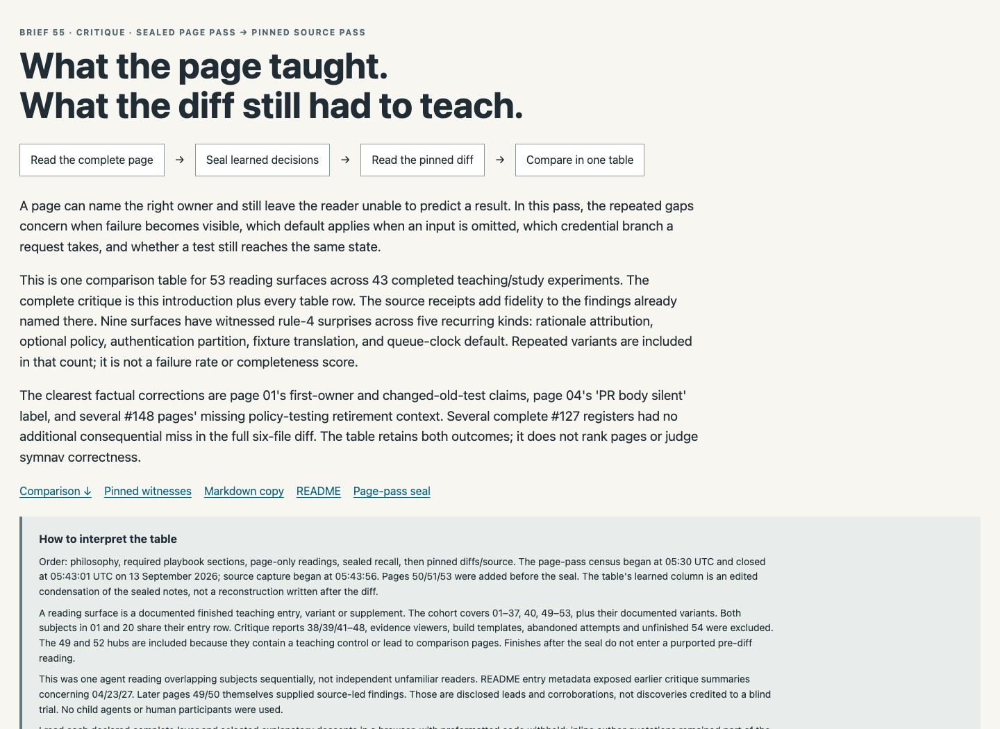 |
About 40 minutes, including the page-only census/readings, source comparisons, table, receipts and verification. No deadline was used. Work stayed inside this experiment; symnav worktrees and earlier experiments were not modified, and no commit or publishing action was performed. | The ambition to simulate 53 independent fresh readers with one sequential agent. Retain the honest recall/source comparison. Most full-page screenshots are archival overhead; the decisive evidence is a short top/depth quotation pair and the corresponding pinned source. Do not use the number of rows, decisions, or flags as a quality metric. | README# fresh-reader-refresh-50 ## Entry point Open [review.html](review.html). It works directly from disk with no server, install, build, or network. ```sh open ~/projects/rich-review-v2/experiments/55-fresh-reader-refresh-50/review.html ``` The artifact is **one 53-row comparison table across 43 completed experiments**: decisions learned before the diff, decisions missed or corrected after it, and witnessed rule-4 surprises. All rows are initially visible. Filtering is temporary and stores nothing. [review.md](review.md) is the same table in Markdown; [witnesses.html](witnesses.html) contains 16 pinned receipts with return links. Nine reading surfaces have witnessed rule-4 surprises, including repeated variants. The five recurring kinds are rationale attribution, optional policy, authentication partition, fixture translation, and queue-clock defaults. This is a bounded observation count, not a completeness score. Several complete #127 registers had no additional consequential miss in the full six-file diff. ## Kind critique ## Subjects None assigned as a new teaching page. The critique follows the existing pages' subjects: `pr-127`, `pr-131`, `pr-148`, `stack`, and the adjacent `pr-146`/`pr-147` pair in experiment 30. The page-only cohort closed on **2026-09-13 at 05:43:01 UTC**, before any input diff was opened. It includes completed teaching/study experiments 01–37, 40, 49–53, their documented variants and the film/starter supplements: [53 routes](routes.json). Both subject tabs in 01 and 20 share their entry row. Critique reports 38/39/41–48, evidence viewers, build templates, abandoned attempts and unfinished 54 were excluded. Later finishes do not retroactively enter the sealed pre-diff pass. ## Declared choices - Role framing: A reader records what an explanation taught, then compares it with pinned implementation evidence. No implementation-correctness verdict or ranking of pages. - Box lenses: The reader's complete layer, deeper explanatory layer and source layer. Within findings, distinguish package ownership from process location; input ownership from failure timing; execution from delivery; and test assertions from the states their fixtures reach. - Opening style: A four-step reading diagram and a concrete prediction problem: naming an owner can still leave a reader unable to predict a result. - Shape: One comparison table with one row per documented reading surface. Supporting receipts contain exact source/page excerpts, not an additional hidden findings table. - Navigation: Read every row in order, search temporarily, isolate witnessed rule-4 rows, or follow a finding to its pinned receipt and return. The complete critique is the introduction plus the whole table; the first viewport is an index to that layer. - Trust posture: Sealed pre-diff recall; pinned base/head git objects; page quotations; source inferences explicitly distinguished from executions. An unremembered first-pass decision is not a claim that the text appears nowhere. “None witnessed” is not a pass certificate. - Persona: One technically literate agent reading overlapping subjects sequentially. This is not independent unfamiliar-human research. - Representations used: Reading-sequence diagram, one comparison table, saved rendered text, selected screenshots, optional line-numbered source receipts, hashes and a machine-readable row manifest. A comparison table serves this critique better than another daemon architecture illustration. - Importance rule: Preserve decisions that change a prediction about ownership, accepted input, failure timing, replay, credentials, retained state, or test stimulus/oracle. Do not turn every additional number or source spelling into a rule-4 surprise. Record declared narrow scope separately from hidden depth. - Inputs used (beyond bundle): `philosophy.md`; playbook §§1, 2, 3, 6, 7; the finished teaching pages and their documented variants; selected explanations on descent; pinned source context from read-only git objects, including the unchanged `plans/005/daemon-policy.md` at #148 base/head. No failed-v1 material, web research, or symnav runtime was used. - Tech: Static HTML/CSS with a small in-memory filter; Markdown/JSON; Python standard library for receipts/verification; local Playwright/Chromium for browser reading and artifact checks. Existing Playwright availability under `/tmp/rich-review-05-browser` was used as tooling, not as evidence of page quality. - Built on earlier experiment(s): Read the complete declared layers of all 43 teaching/study experiments in the cohort. Pages 49 and 50 supplied source-informed leads; their findings were independently checked against pinned objects, not credited as new blind discoveries. The initial README metadata scan also exposed critique summaries concerning 04/23/27. No earlier teaching artifact was edited or copied as this critique's implementation. ## What I tried Read pages in the browser with preformatted source blocks withheld, write recall, inspect selected explanatory descents, then seal the notes and rendered-text captures before opening diffs. [The seal](before-diff-seal.json) records 85 hashes at 05:43:01 UTC; [source capture](source-capture.json) begins at 05:43:56. The learned column condenses [the first recall](notes/01-09-before-diff.md) and [remaining recall](notes/10-53-before-diff.md), which remain unchanged after sealing. Full rendered text sometimes includes off-camera canvas content; this is not an eye-tracking or independent visual-reading experiment. Not every drawer or simulator state was inspected, and film audio was not assessed. The raw #127 git blobs resolve a conflict between pages: its old five test bodies and helpers are byte-identical. Page 01's “existing call gains await” claim is wrong. The PR body also discloses awaited release, contradicting page 04's “PR body silent” top label and agreeing with that page's own deeper paragraph. The final project graph selects the last configured owner. In #148, the policy plan records when `policy-testing` should retire; “no reason found” needs a narrower claim. These are explanation corrections, not symnav bug verdicts. The source pass read the full #127 six-file diff; #131 production changes and selected helper/test/policy/benchmark context; #148 changed app/client/clock/registry/routing and test-boundary hunks plus the historical policy plan; selected #146/#147 session/ledger changes; and final-stack ownership/recovery/cwd/test-removal changes. All full pinned patches are saved. I did **not** perform an exhaustive line-by-line semantic audit of the 43,584-line net stack diff or every copied mechanism in #148, and ran no symnav suite, benchmark or malformed-input runtime probe. I abandoned an “independent fresh reader” interpretation when the metadata scan exposed earlier findings. The page-before-diff sequence remains intact, but the report explicitly treats overlapping reads and donor leads as contamination. I also avoided counting equal variants as independent trials: 23/original23, 29/original29, and the compact/full 52 propositions match in captured rendered text. Artifact checks are recorded in [verification.json](verification.json): cohort/table coverage, sealed hashes, local links/anchors, Markdown table structure, raw old-test byte comparison, browser opening and filtering. [browser-verification.json](browser-verification.json) also distinguishes the small post-source interaction check of 53 from the sealed reading pass. These checks validate this critique's delivery and provenance, not symnav correctness. ## What I would drop The ambition to simulate 53 independent fresh readers with one sequential agent. Retain the honest recall/source comparison. Most full-page screenshots are archival overhead; the decisive evidence is a short top/depth quotation pair and the corresponding pinned source. Do not use the number of rows, decisions, or flags as a quality metric. ## What I would do next Give genuinely unfamiliar readers one page and a few concrete prediction questions before source access. Promote the identified defaults, error boundaries and credential partitions, then repeat those same questions without introducing an unrelated layout change. ## Time spent About 40 minutes, including the page-only census/readings, source comparisons, table, receipts and verification. No deadline was used. Work stayed inside this experiment; symnav worktrees and earlier experiments were not modified, and no commit or publishing action was performed. |
| 54 | critique-refresh-50 attempt 1: claude-opus → attempt 2: claude-opus → attempt 3: codex |
critique | None assigned. The subjects of this work are the finished experiments. Targeted symnav source reads check their explanatory claims; this is not another PR explanation or a correctness review. | Role framing: Editor examining what helps a human understand, what obstructs that, and what evidence supports each claim. · Box lenses: Static dependencies versus supplied values; runtime ownership and lifetime; public authority and failure boundaries. These distinguish useful representations in the inspected artifacts. · Opening style: A complete findings table organized as missing, repeating, and promising; linked detail follows. · Shape: Written critique, per-experiment ledger, and inspection receipts. No page. · Navigation: Read the critique linearly, jump from its seven findings to their detail, or consult any experiment's ledger row. Supporting documents link back. · Trust posture: Separate disclosure from rationale, observation from inference, authored models from executed source, and producer results from checks performed here. No global scores or pass/fail certificate. · Persona: An informed morning editor. This reader has seen earlier critiques and cannot stand in for an unfamiliar human. · Representations used: Findings and comparison tables, precise parent/child examples, a correction map, browser text captures, selected screenshots, and pinned source witnesses. · Importance rule: Prioritize false learning, missing conditions or consequences, incorrect reason scope, and repeated reader work. Test changes and small authority choices matter alongside large package moves. Preserve devices that expose different relationships. · Inputs used (beyond bundle): `philosophy.md`; the required playbook sections and relevant evaluation guidance; all 53 root READMEs and delivered artifacts to the extent recorded in the ledger; earlier critiques, reading protocols, kit/runbook contracts, and design notes; read-only pinned Git sources and repository guidance from `worktrees/stack-head`. The supplied `inputs/stack/pr.json` provided #127's body. · Tech: Markdown; Python for the census, pinned source copies, and link checks; an isolated Playwright context using installed Chrome for local artifact inspection. The existing temporary Playwright installation was reused. No source builds or tests were run. · Built on earlier experiment(s): Read all finished experiments 01–53, including 50/51/53 as they finished. Used 38/41/43/45/47's critiques and 39/42/44/46/48's reading reports as attributed prior observations; examined the new intervention and transfer evidence in 49/52. Added independent captures, selected operations, and source checks here. Original artifacts remain in their own folders. | About half an hour, including reading, selected browser operations, source checks, writing, and validation. | The bulk capture directory is supporting material, not a recommended reading route. The ledger repeats some findings to make individual entries usable; a later handoff could retain only changed claims. Another general essay repeating the existing diagnosis would add little. | README# critique-refresh-50 ## Entry point Open [critique.md](critique.md) in a Markdown viewer. No server is needed. The [experiment ledger](experiment-ledger.md) covers all 53 finished experiments, 01–53. [Inspection notes](inspection-notes.md) document reading extent, operated routes, source checks, and limitations. The final census at 05:58:55 UTC on 2026-09-13 found no additional finished handoffs; 55 was still unfinished. ## Kind critique ## Subjects None assigned. The subjects of this work are the finished experiments. Targeted symnav source reads check their explanatory claims; this is not another PR explanation or a correctness review. ## Declared choices - Role framing: Editor examining what helps a human understand, what obstructs that, and what evidence supports each claim. - Box lenses: Static dependencies versus supplied values; runtime ownership and lifetime; public authority and failure boundaries. These distinguish useful representations in the inspected artifacts. - Opening style: A complete findings table organized as missing, repeating, and promising; linked detail follows. - Shape: Written critique, per-experiment ledger, and inspection receipts. No page. - Navigation: Read the critique linearly, jump from its seven findings to their detail, or consult any experiment's ledger row. Supporting documents link back. - Trust posture: Separate disclosure from rationale, observation from inference, authored models from executed source, and producer results from checks performed here. No global scores or pass/fail certificate. - Persona: An informed morning editor. This reader has seen earlier critiques and cannot stand in for an unfamiliar human. - Representations used: Findings and comparison tables, precise parent/child examples, a correction map, browser text captures, selected screenshots, and pinned source witnesses. - Importance rule: Prioritize false learning, missing conditions or consequences, incorrect reason scope, and repeated reader work. Test changes and small authority choices matter alongside large package moves. Preserve devices that expose different relationships. - Inputs used (beyond bundle): `philosophy.md`; the required playbook sections and relevant evaluation guidance; all 53 root READMEs and delivered artifacts to the extent recorded in the ledger; earlier critiques, reading protocols, kit/runbook contracts, and design notes; read-only pinned Git sources and repository guidance from `worktrees/stack-head`. The supplied `inputs/stack/pr.json` provided #127's body. - Tech: Markdown; Python for the census, pinned source copies, and link checks; an isolated Playwright context using installed Chrome for local artifact inspection. The existing temporary Playwright installation was reused. No source builds or tests were run. - Built on earlier experiment(s): Read all finished experiments 01–53, including 50/51/53 as they finished. Used 38/41/43/45/47's critiques and 39/42/44/46/48's reading reports as attributed prior observations; examined the new intervention and transfer evidence in 49/52. Added independent captures, selected operations, and source checks here. Original artifacts remain in their own folders. ## What I tried Compared the entire finished cohort against the philosophy and hard rules, then pursued concrete disagreements instead of counting agreement among critiques. The resulting seven findings distinguish missing parent consequences, excess reading, reason scope, representation jobs, human context, observation limits, and incomplete correction propagation. The newer work changes the diagnosis: 49 has bounded fresh-agent intervention evidence; 51 groups the stack around consequences; 52 demonstrates wider-subject kit transfer while leaving its reader trial unrun; 53 adds coupled physical interaction. A new check also found that 52's shared dependency arrow points opposite to its import/construction label. All 48 inspected HTML entries loaded without page errors under the recorded conditions. The ledger contains exactly 01–53, and local document links were checked. These checks establish access and traceability, not educational effectiveness. Initial browser and locator failures were corrected and are recorded in the inspection notes; no critique approach was abandoned. ## What I would drop The bulk capture directory is supporting material, not a recommended reading route. The ledger repeats some findings to make individual entries usable; a later handoff could retain only changed claims. Another general essay repeating the existing diagnosis would add little. ## What I would do next Observe the already prepared comparisons, then audit whether 51's grouped parents preserve their descendants' consequences. Correct 52's shared arrow meaning before using its pair as an explanatory baseline. ## Time spent About half an hour, including reading, selected browser operations, source checks, writing, and validation. |
|
| 53 | be-weird-53 attempt 1: codex |
page | pr-127 only — Scope semantic caches to one turn. Base `a1e325a5ff979bdfa25babc5554621c8c0f20497` → head `64919bcbcf7fcc8202779b78c5f069b24662bb18`. Six changed files, +391/−67. No additional PR subjects. | Role framing: Learner operating a comparative instrument. Assigned angle: invent a physical or sensory interaction absent from finished experiments; chosen interaction is coupled displacement with nonlinear visual resistance and recoil. · Box lenses: Static package ownership and runtime object/lifecycle ownership. Core supplies the lifetime class; each TypeScript service owns its own scope instance and six handles. The changed await chain is a separate completion boundary. · Opening style: A marked spring metaphor, then a before/after ownership diptych. Both versions have emptied their caches while only head remains attached to pending project cleanup. · Shape: Complete stopping layer with twelve open records, followed by the optional bench, twelve matching mechanisms, and pinned evidence. About 650 words of decisions and reasons; the complete layer spans multiple viewports. · Navigation: Linear page; ownership box or record → matching mechanism → exact source. Every mechanism returns to its original record. Dialogs restore focus; ordinary anchors, browser history, and a static source book provide fallback navigation. · Trust posture: Source-grounded explanation with seven stated reasons and five specific rationale gaps. The changed release boundary, projection/API choices, and exact test selection stay visible. No correctness verdict, score, response collection, or persistence. · Persona: A teammate who knows TypeScript and symnav’s purpose but not this cache implementation. · Representations used: Elastic pull/recoil, authoritative recorded status readouts, package diptych, object-ownership strip, complete decision records, cache slots, before/after outcome table, lookup/lifecycle flows, public API sketch, test inventory, and numbered source excerpts. · Importance rule: Put cache clearing and release completion together first; retain every independently meaningful ownership, identity, error, API, and test choice in the open register. No fact is unlocked by pulling harder or completing a sequence. · Inputs used (beyond bundle): Pinned base/head backend and semantic-service source; new core cache and tests; original/added service tests; unchanged core project graph and concrete TypeScript project cleanup; architecture-spec clauses; successful builds in both worktrees; actual-method recording with injected ports; source/hash and original-test comparisons. Bundle inputs used: PR body, six commit records, complete patch, file inventory, and relevant repository/spec material. Other bundles and overview dumps were not used. · Tech: Plain HTML, CSS, inline SVG, and JavaScript; Python evidence capture/rendering/checking; Node recorder; isolated system Chrome through Playwright. No asset generation service, runtime library, external font, or server. Codex; no delegated agents. · Built on earlier experiment(s): none. Read earlier work for novelty: all 01–48 README feature fields, selected README portions from 22/26/36/37, and a root HTML/JS/CSS interaction-keyword scan. Rechecked newly finished 49 and 52. No earlier implementation, recording, evidence package, or decision register was reused. [Survey](novelty-survey.json) and [design notes](design-notes.md) preserve the scope. The forbidden v1 directory was not accessed. | 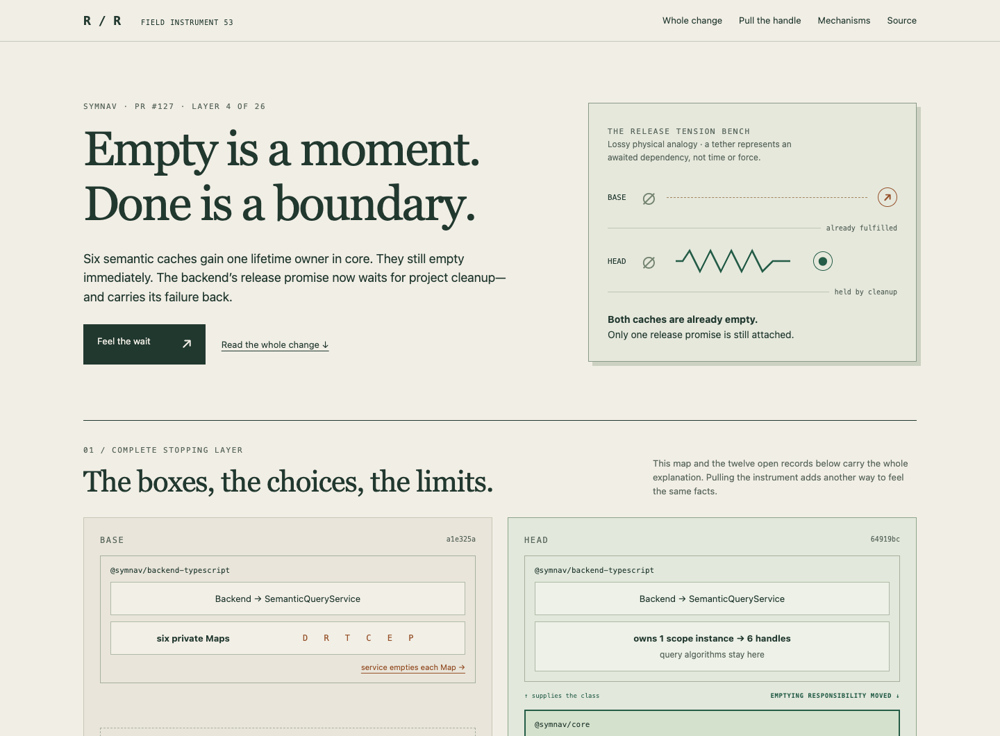 |
About 35 minutes, including reading, novelty survey, controlled recordings, implementation, source reconciliation, browser checks, and handoff. No human comprehension trial was performed. | The brass finish is expendable. The six single-letter cache slots are also secondary; they need a legend and may add less than the result-identity readout. Full-file source context is useful for auditing but bulky for ordinary reading. | README# be-weird-53 ## Entry point Open [index.html](index.html), or run: ```sh open ~/projects/rich-review-v2/experiments/53-be-weird-53/index.html ``` **The release tension bench** explains PR #127 through a spring that resists the reader’s pull. Drag the brass grip, or focus it and use the arrow keys / End. Home lets go. Finish project cleanup or make it throw to free the head handle. The complete explanation is visible above the instrument; no interaction is required to read it. The folder opens directly without a server, installation, network, or worktree. JavaScript enables the instrument and source dialogs. The complete layer, mechanisms, source book, and their links also work without JavaScript. ## Kind page An interactive physical analogy with recordings from actual backend methods and a static evidence book. ## Subjects pr-127 only — Scope semantic caches to one turn. Base `a1e325a5ff979bdfa25babc5554621c8c0f20497` → head `64919bcbcf7fcc8202779b78c5f069b24662bb18`. Six changed files, +391/−67. No additional PR subjects. ## Declared choices - Role framing: Learner operating a comparative instrument. Assigned angle: invent a physical or sensory interaction absent from finished experiments; chosen interaction is coupled displacement with nonlinear visual resistance and recoil. - Box lenses: Static package ownership and runtime object/lifecycle ownership. Core supplies the lifetime class; each TypeScript service owns its own scope instance and six handles. The changed await chain is a separate completion boundary. - Opening style: A marked spring metaphor, then a before/after ownership diptych. Both versions have emptied their caches while only head remains attached to pending project cleanup. - Shape: Complete stopping layer with twelve open records, followed by the optional bench, twelve matching mechanisms, and pinned evidence. About 650 words of decisions and reasons; the complete layer spans multiple viewports. - Navigation: Linear page; ownership box or record → matching mechanism → exact source. Every mechanism returns to its original record. Dialogs restore focus; ordinary anchors, browser history, and a static source book provide fallback navigation. - Trust posture: Source-grounded explanation with seven stated reasons and five specific rationale gaps. The changed release boundary, projection/API choices, and exact test selection stay visible. No correctness verdict, score, response collection, or persistence. - Persona: A teammate who knows TypeScript and symnav’s purpose but not this cache implementation. - Representations used: Elastic pull/recoil, authoritative recorded status readouts, package diptych, object-ownership strip, complete decision records, cache slots, before/after outcome table, lookup/lifecycle flows, public API sketch, test inventory, and numbered source excerpts. - Importance rule: Put cache clearing and release completion together first; retain every independently meaningful ownership, identity, error, API, and test choice in the open register. No fact is unlocked by pulling harder or completing a sequence. - Inputs used (beyond bundle): Pinned base/head backend and semantic-service source; new core cache and tests; original/added service tests; unchanged core project graph and concrete TypeScript project cleanup; architecture-spec clauses; successful builds in both worktrees; actual-method recording with injected ports; source/hash and original-test comparisons. Bundle inputs used: PR body, six commit records, complete patch, file inventory, and relevant repository/spec material. Other bundles and overview dumps were not used. - Tech: Plain HTML, CSS, inline SVG, and JavaScript; Python evidence capture/rendering/checking; Node recorder; isolated system Chrome through Playwright. No asset generation service, runtime library, external font, or server. Codex; no delegated agents. - Built on earlier experiment(s): none. Read earlier work for novelty: all 01–48 README feature fields, selected README portions from 22/26/36/37, and a root HTML/JS/CSS interaction-keyword scan. Rechecked newly finished 49 and 52. No earlier implementation, recording, evidence package, or decision register was reused. [Survey](novelty-survey.json) and [design notes](design-notes.md) preserve the scope. The forbidden v1 directory was not accessed. ## What I tried Offered the same hand movement to two return handles. Base moves freely; head stretches toward an asymptote while cleanup is pending and recoils when released. Completing or failing cleanup frees it. The actual promise-state readout remains authoritative even when the illustrative handle is at rest. Displacement represents neither elapsed time nor measured force; this is a visual/motor analogy, not hardware haptics. Considered friction-driven erasure before implementation, then discarded it: rubbing implies gradual destruction, while this clear is synchronous and caller-held promises can still settle. No full implementation was abandoned halfway. Eight controlled release runs, plus refresh and old-promise recordings, ground the status readouts without claiming a daemon trace. The audit corrected an excerpt that initially stopped before the new project await, separated test-selection intent from rationale, and verified resize, touch cancellation, and reduced motion. A final survey script accidentally overwrote experiment 52’s README; I restored its exact original 68 lines from its worker transcript and verified the full original Git blob hash. The [restoration receipt](evidence/census-restoration.json) records the repair. No Symnav source was affected. ## What I would drop The brass finish is expendable. The six single-letter cache slots are also secondary; they need a legend and may add less than the result-identity readout. Full-file source context is useful for auditing but bulky for ordinary reading. ## What I would do next Give unfamiliar readers this page and an otherwise identical page with resistance disabled. Ask them to predict querying during pending cleanup and receiving a cleanup failure; preserve their explanations without a score or leaderboard. ## Time spent About 35 minutes, including reading, novelty survey, controlled recordings, implementation, source reconciliation, browser checks, and handoff. No human comprehension trial was performed. ## Evidence and verification - [Static checks](validation-static.json): all 15 patch hunks assigned to visible records; +391/−67 accounted for; 20 frozen documents checked; 58 source excerpts; local links/anchors; required folder contract; both worktrees have no tracked modifications. - [Browser checks](validation-browser.json): 13 check groups covering all record returns and source dialogs, keyboard/pointer/touch behavior, four cleanup outcome paths, resizing during a pull, 320/390/768/1440 px layouts, reduced and ordinary motion, printing, and JavaScript-disabled reading. No external requests or browser errors in the final pass. [Screenshots](screenshots/01-opening.png) were visually inspected. - [Recordings](evidence/observations.json): actual compiled backend/service methods with a fake empty workspace, held project graph, and definition-search observer. Both builds succeeded; recorder assertions passed. The browser only replays the saved observations. The six-slot drawing follows source; occupancy in all six stores was not measured. - [Test inventory](evidence/inventory.json): five original service cases and all helpers are byte-identical; six service cases and four core cases are added. Existing Symnav test suites were not executed for this experiment. These are source counts, not a test-run claim, and no full command or daemon parity result is asserted. The cache/release distinction is precise: both versions clear before cleanup; head adds an awaited release barrier and propagates cleanup rejection. The long wait is injected. Concrete TypeScript project cleanup is synchronous, while the graph supports asynchronous project release. The artifact exposes the PR/spec rationale gap without claiming a production correctness defect. ## Regeneration Opening the page requires none of these commands. With the supplied worktrees still pinned and built, run from this folder: ```sh python3 capture.py node record.mjs python3 build.py python3 verify.py ``` The recorder checks both pins and clean tracked status before importing the builds. Capture/render/check scripts write only inside this experiment. To repeat browser checks, `browser-check.cjs` uses system Chrome and the existing Playwright package at `/tmp/rich-review-05-browser/node_modules/playwright`; set `BENCH_PLAYWRIGHT` to another installed package path if needed. The received [brief](brief.md), [design/attempt notes](design-notes.md), original harness logs, and initial browser-check failure receipts are retained. Symnav branches were not modified, committed, pushed, or rebased. Index, queue, and completion handling are left to the orchestrator. |
| 52 | critique-response-52 Codex, main agent only. No delegated agents or reader agents. → Local Python standard library, supplied read-only source snapshots, and Playwright browser tools. |
pair | pr-131 — Route daemon thresholds through centralized policy. Base `b3a6c4fa5dcf96223765aa147a9e094cd4a51b0e` → head `b100221db48754656328391b878299c5a0bab443`. Sixty changed files, +1298/−544. | Role framing: Learner and editor; explain the consequences a reader needs to carry, then test the cost of presenting them densely. · Box lenses: Static package/module value authority and runtime client-process/daemon-process/worker-thread topology. The changed authority route is distinct from the retained process and package boundaries. · Opening style: A marked, lossy three-step value route followed by a package diptych and runtime containment map. It is an orientation; the visible decision register completes the top layer. · Shape: Two matched pyramids, each with thirty visible propositions, an explicit stopping line, the same two worked cases, before/after mechanisms, and local evidence. · Navigation: Continuous page, native overview-to-mechanism and source exits, exact return focus with the original kit enhancement, and ordinary fallback links without JavaScript. Reader packets have no crossover links. · Trust posture: Check earlier claims against the assigned frozen diff and surrounding source. Separate disclosure, reason and consequence. Give test stimulus, fixture casts, adapter precedence, error provenance and reporting changes their own reason scope; no PR correctness verdict. · Persona: A TypeScript-familiar teammate unfamiliar with this daemon area; a short product/daemon/spool introduction supplies the minimum domain vocabulary. · Representations used: Package before/after, runtime containment, compact consequence rows versus fuller cards, paired mechanism descriptions, illustrative recovery/storage tables, line-numbered frozen source disclosures, and a research protocol outside the review interface. · Importance rule: Ownership first, then recovery/timing qualifications, operational consumers, changed test premises, and changed observations/reporting. Preserve every independently meaningful consequence found in the complete diff; never rank by deleting entries. Context qualifications are included where they prevent an overclaim. · Inputs used (beyond bundle): Read philosophy first and playbook in full, with required sections treated as rules; both assigned worktrees’ changed/context source; the unchanged daemon policy implementation/tests and policy/architecture plans; git revision/diff/status checks; the predecessor material named below. Read the bundle PR body/commits, complete patch and file summary; kept the rules compilation as a frozen input and inspected the relevant plans in the worktrees. Did not use overview bundles, the network, or the forbidden v1 directory. No Symnav execution was needed. · Tech: Python standard library generator/capture/verification; offline HTML/CSS; 32’s original Python/SVG components and navigation JavaScript; Playwright for browser checks. No runtime dependency installation, external assets, persistence, forms or answer collection. · Built on earlier experiment(s): Read 31-method-runbook’s RUNBOOK and handoff; used its source→decision→parent chain and file-order reread idea, without claiming an unchanged run of its entire line-coverage method. Read and copied 32-kit’s authoring contract and reusable directory; all three kit files remain byte-identical. Read 40-best-of-synthesis’s handoff and operated its rendered page for a part-by-part examination; no recordings or PR-specific prose were imported. Read 47-critique-refresh-40’s critique and relevant 48-fresh-reader-refresh-40 review/recheck findings as correction leads, then checked those against the assigned sources. Other earlier experiments were not directly inspected for this build; mentions inside 40 are attributed to 40’s composition. | 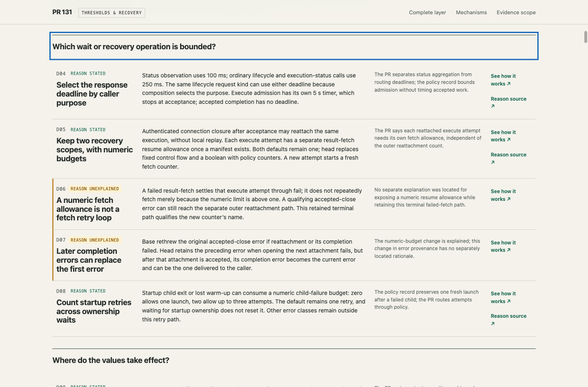 |
About 30 minutes, including reading, source reconciliation, unchanged-kit trial, paired rendering, editorial examination, browser checks and handoff. Codex only; no delegated agents. | I would drop any claim that reducing whitespace solves the complete-layer problem, and any “winner” inferred from these geometry measurements. Thirty separate before/after mechanisms produce repetitive scaffolding; keeping their distinct source/return destinations is useful, but they could share more visual structure. 40’s optional depth matrix does not need another counterpart here. The horizontal runtime map is legible after repair but costly to navigate on mobile. | README# critique-response-52 ## Entry point Open [index.html](index.html), or: ```sh open ~/projects/rich-review-v2/experiments/52-critique-response-52/index.html ``` Everything works from files without installation or a server. The hub links the [compact](compact.html) and [fuller](fuller.html) complete layers, [findings](findings.md), [32 transfer record](transfer.md), and [examination of 40](parts-of-40.md). **The separate unfamiliar-reader trial is unrun.** Two isolated packets and their protocol are prepared; [reader-results.md](reader-results.md) records zero observations. Layout measurements and author inspections are not presented as reader evidence. ## Kind pair Also: unchanged-kit transfer, editorial removal analysis, and a prepared reader study with an explicit missing result. ## Subjects pr-131 — Route daemon thresholds through centralized policy. Base `b3a6c4fa5dcf96223765aa147a9e094cd4a51b0e` → head `b100221db48754656328391b878299c5a0bab443`. Sixty changed files, +1298/−544. 40’s PR 127 artifact was inspected only to examine its explanatory parts, as the assigned angle requires. No additional PR review was produced. ## Declared choices - Role framing: Learner and editor; explain the consequences a reader needs to carry, then test the cost of presenting them densely. - Box lenses: Static package/module value authority and runtime client-process/daemon-process/worker-thread topology. The changed authority route is distinct from the retained process and package boundaries. - Opening style: A marked, lossy three-step value route followed by a package diptych and runtime containment map. It is an orientation; the visible decision register completes the top layer. - Shape: Two matched pyramids, each with thirty visible propositions, an explicit stopping line, the same two worked cases, before/after mechanisms, and local evidence. - Navigation: Continuous page, native overview-to-mechanism and source exits, exact return focus with the original kit enhancement, and ordinary fallback links without JavaScript. Reader packets have no crossover links. - Trust posture: Check earlier claims against the assigned frozen diff and surrounding source. Separate disclosure, reason and consequence. Give test stimulus, fixture casts, adapter precedence, error provenance and reporting changes their own reason scope; no PR correctness verdict. - Persona: A TypeScript-familiar teammate unfamiliar with this daemon area; a short product/daemon/spool introduction supplies the minimum domain vocabulary. - Representations used: Package before/after, runtime containment, compact consequence rows versus fuller cards, paired mechanism descriptions, illustrative recovery/storage tables, line-numbered frozen source disclosures, and a research protocol outside the review interface. - Importance rule: Ownership first, then recovery/timing qualifications, operational consumers, changed test premises, and changed observations/reporting. Preserve every independently meaningful consequence found in the complete diff; never rank by deleting entries. Context qualifications are included where they prevent an overclaim. - Inputs used (beyond bundle): Read philosophy first and playbook in full, with required sections treated as rules; both assigned worktrees’ changed/context source; the unchanged daemon policy implementation/tests and policy/architecture plans; git revision/diff/status checks; the predecessor material named below. Read the bundle PR body/commits, complete patch and file summary; kept the rules compilation as a frozen input and inspected the relevant plans in the worktrees. Did not use overview bundles, the network, or the forbidden v1 directory. No Symnav execution was needed. - Tech: Python standard library generator/capture/verification; offline HTML/CSS; 32’s original Python/SVG components and navigation JavaScript; Playwright for browser checks. No runtime dependency installation, external assets, persistence, forms or answer collection. - Built on earlier experiment(s): Read 31-method-runbook’s RUNBOOK and handoff; used its source→decision→parent chain and file-order reread idea, without claiming an unchanged run of its entire line-coverage method. Read and copied 32-kit’s authoring contract and reusable directory; all three kit files remain byte-identical. Read 40-best-of-synthesis’s handoff and operated its rendered page for a part-by-part examination; no recordings or PR-specific prose were imported. Read 47-critique-refresh-40’s critique and relevant 48-fresh-reader-refresh-40 review/recheck findings as correction leads, then checked those against the assigned sources. Other earlier experiments were not directly inspected for this build; mentions inside 40 are attributed to 40’s composition. ## What I tried Built a corrected shared ledger before presentation. It includes the parent-before-Worker parsing consequence, default versus numeric recovery behavior, terminal failed-fetch path, later-error origin, distinct test-helper effects, unused startup timeout, changed expected-value sources and the benchmark’s extra fields under schemaVersion 1. Split two initially overbroad stated-reason cards: explicit-policy precedence and unknown casts are separately unexplained. Applied 32’s four components unchanged to the sixty-file subject before adapting anything. The trial generated a complete fuller page but exposed unreadable wide-diagram text on mobile: the 1,100-unit runtime map shrank to 445 pixels and its 13-unit titles to about 5.26 pixels. Preserved that specimen and receipt, then added page-level minimum widths using the existing scroll container. Later visual inspection corrected an authored before-edge label that put local defaults on the composition arrow. No kit file changed. Then arranged exactly the same root-card DOM as compact rows. This abandons a more ambitious claim about semantic prose compression: the experiment isolates arrangement, not shorter wording. Both registers contain 2,305 rendered words. At 1440 pixels wide, the complete layer ends at 6,291 pixels for compact and 7,781 for fuller. Both remain lengthy on a phone. These are layout observations, not comprehension or time-saving measurements. Examined 40 by asking what distinct prediction becomes harder if a part disappears. Kept the explanatory jobs of ownership, paired outcomes, separate relationships, scoped rationale and source exits; did not require every donor device to survive. The analysis is explicitly editorial. A browser attempt to advance an already-final cleanup frame timed out on a disabled button; the successful subsequent read and failed call are both preserved. Another initial screenshot failed because its output directory did not yet exist; it was created and the screenshot succeeded. The request also calls for separate unfamiliar readers. I offered the user a choice of fresh-context agent readers or separate human packets while building; no response arrived before handoff. No agents or humans supplied unfamiliar-reader observations. I prepared two matched, independently assigned entries and a protocol, and recorded the missing result without substituting my primed recall. This portion remains unperformed. Verification passed: 131 frozen-input/copy hashes, three unchanged kit files, thirty matching propositions, 109 excerpt checks, local links/anchors, twenty operated focus/return paths, deep-source opening and browser Back, four viewport widths for both pages, and reading with JavaScript disabled. [verification.json](verification.json) and [browser-verification.json](browser-verification.json) preserve scope and results. These checks establish artifact integrity, not semantic completeness or Symnav correctness. Both assigned worktrees retained clean tracked status. From this folder, rebuild with `python3 build.py` and check with `python3 verify.py`. `capture.py` is a read-only recapture tied to the pinned worktrees. `browser-check.js` is a function for the available Playwright tool; it used a temporary localhost server, which is not required to open the delivered pages. ## What I would drop I would drop any claim that reducing whitespace solves the complete-layer problem, and any “winner” inferred from these geometry measurements. Thirty separate before/after mechanisms produce repetitive scaffolding; keeping their distinct source/return destinations is useful, but they could share more visual structure. 40’s optional depth matrix does not need another counterpart here. The horizontal runtime map is legible after repair but costly to navigate on mobile. ## What I would do next Run the prepared protocol with two separate unfamiliar readers and preserve literal accounts and descent revisions. Only then test a shorter paraphrase of the same propositions, or remove one optional device from 40, without mixing either intervention into this density comparison. ## Time spent About 30 minutes, including reading, source reconciliation, unchanged-kit trial, paired rendering, editorial examination, browser checks and handoff. Codex only; no delegated agents. |
| 51 | angle-new-subject-51 attempt 1: codex |
page | stack — all 26 PRs, main `b6801ebdd2421d0ca2e4bdd61ec0f04c24ddd73e` to #149 tip `d07002357d3e9596bfaae910a1ac63b77981620b`. Individual PR records and a few intermediate snapshots explain staging within this same subject. | Role framing: Learner. Predict one result, step through a small example, inspect the same decision in source. · Box lenses: Static package ownership and runtime/object lifetimes. The opening distinguishes package movement from the retained CLI-process → daemon-process → worker-thread topology. Each episode then names the state owner and moved boundary. · Opening style: Three short lifetime intuitions—workspace, accepted request, completion—followed by a runtime map. The intuition and simplified diagrams are marked where they appear. · Shape: Nine linked small pyramids: host handoff; workspace publication; semantic turns; policy/admission; connection mechanics; transfer recovery; accepted execution/generations; delivery/ACK; final physical ownership. All nine fronts together are the complete overview. The introductory map is explicitly orientation. · Navigation: Continuous page, a nine-door map, front-to-example exits, prediction disclosures, cross-boundary links, exact scroll/focus returns and line-addressable local source pages. No responses or comments are stored. · Trust posture: Reconcile the stated preservation promise with actual source boundaries, while keeping disclosure and rationale separate. Surface test stimulus changes, assertion removals, intermediate staging and changes outside a PR’s named purpose. No correctness verdict or inferred author motive. · Persona: A teammate familiar with symnav but unfamiliar with daemon internals. · Representations used: Ownership diptychs; runtime topology; nine checkpoint examples; paired main/tip recorded tables; record-offset and queue-gate states; project-owner comparison; predict/reveal prompts; policy table; linked original PR decisions; numbered source excerpts and full source files with net diffs. · Importance rule: Changed ownership and different lifetimes first; qualifications that change a prediction stay on the same front. Test and unexplained decisions receive the same front visibility. The 117 PR decision bullets map to 59 front consequence rows, rather than becoming a second independent overview. Counts and parent links are an audit aid, not a proof that every implicit choice was found. · Inputs used (beyond bundle): Read philosophy first and the required playbook sections (also the inspiration menus). Used the supplied stack PR/commit record and file inventory; inspected the overview placeholders but did not use them as semantic evidence. Generated a copy-aware main→tip diff from pinned git objects, inspected selected production/test changes and all changed paths/test-title removals, read the relevant main/tip sources, contributor guide, architecture/policy/follow-up plans, and historical #129/#148 test/retirement context. Ran the controlled source probes described below. Did not read the failed v1 or browse external sources. · Tech: Native HTML/CSS/JavaScript; Python standard-library generator and verifier; optional Node probes through the prepared worktree’s tsx loader. The probes import real TypeScript source modules; transitive package imports use the prepared workspace dependencies/builds. The shipped artifact contains frozen observations and source and executes no symnav code in the browser. Harness: Codex; no delegated agents. · Built on earlier experiment(s): Read 04-textbook-chapter, 17-executable-before-after and 40-best-of-synthesis (handoffs and selected page/code content). Reused their prediction, controlled-completion and progressive-depth ideas. Read 47-critique-refresh-40 and 48-fresh-reader-refresh-40 for source/rationale corrections and warnings about surprise on descent. No predecessor implementation or recording was copied. Relevant claims were checked against the pinned source; this experiment’s recordings are new. | 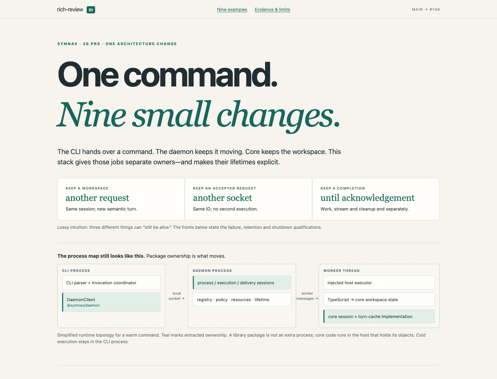 |
About 35 minutes, including source reading, new controlled probes, page construction, correction and browser checks. | The repeated before/after box rows earn less in the transport and final-ownership episodes than the concrete cursor and gate examples. Some could be replaced with a single changed edge. The full policy table belongs behind its disclosure; requiring it in the reading route would make this another long inventory. | README# angle-new-subject-51 ## Entry point Open [index.html](index.html), or run: ```sh open ~/projects/rich-review-v2/experiments/51-angle-new-subject-51/index.html ``` An offline page. No install, server or network is needed. All nine fronts, predictions, examples and source disclosures remain readable without JavaScript; JavaScript adds checkpoint selection and exact return positions. ## Kind page ## Subjects stack — all 26 PRs, main `b6801ebdd2421d0ca2e4bdd61ec0f04c24ddd73e` to #149 tip `d07002357d3e9596bfaae910a1ac63b77981620b`. Individual PR records and a few intermediate snapshots explain staging within this same subject. ## Declared choices - Role framing: Learner. Predict one result, step through a small example, inspect the same decision in source. - Box lenses: Static package ownership and runtime/object lifetimes. The opening distinguishes package movement from the retained CLI-process → daemon-process → worker-thread topology. Each episode then names the state owner and moved boundary. - Opening style: Three short lifetime intuitions—workspace, accepted request, completion—followed by a runtime map. The intuition and simplified diagrams are marked where they appear. - Shape: Nine linked small pyramids: host handoff; workspace publication; semantic turns; policy/admission; connection mechanics; transfer recovery; accepted execution/generations; delivery/ACK; final physical ownership. All nine fronts together are the complete overview. The introductory map is explicitly orientation. - Navigation: Continuous page, a nine-door map, front-to-example exits, prediction disclosures, cross-boundary links, exact scroll/focus returns and line-addressable local source pages. No responses or comments are stored. - Trust posture: Reconcile the stated preservation promise with actual source boundaries, while keeping disclosure and rationale separate. Surface test stimulus changes, assertion removals, intermediate staging and changes outside a PR’s named purpose. No correctness verdict or inferred author motive. - Persona: A teammate familiar with symnav but unfamiliar with daemon internals. - Representations used: Ownership diptychs; runtime topology; nine checkpoint examples; paired main/tip recorded tables; record-offset and queue-gate states; project-owner comparison; predict/reveal prompts; policy table; linked original PR decisions; numbered source excerpts and full source files with net diffs. - Importance rule: Changed ownership and different lifetimes first; qualifications that change a prediction stay on the same front. Test and unexplained decisions receive the same front visibility. The 117 PR decision bullets map to 59 front consequence rows, rather than becoming a second independent overview. Counts and parent links are an audit aid, not a proof that every implicit choice was found. - Inputs used (beyond bundle): Read philosophy first and the required playbook sections (also the inspiration menus). Used the supplied stack PR/commit record and file inventory; inspected the overview placeholders but did not use them as semantic evidence. Generated a copy-aware main→tip diff from pinned git objects, inspected selected production/test changes and all changed paths/test-title removals, read the relevant main/tip sources, contributor guide, architecture/policy/follow-up plans, and historical #129/#148 test/retirement context. Ran the controlled source probes described below. Did not read the failed v1 or browse external sources. - Tech: Native HTML/CSS/JavaScript; Python standard-library generator and verifier; optional Node probes through the prepared worktree’s tsx loader. The probes import real TypeScript source modules; transitive package imports use the prepared workspace dependencies/builds. The shipped artifact contains frozen observations and source and executes no symnav code in the browser. Harness: Codex; no delegated agents. - Built on earlier experiment(s): Read 04-textbook-chapter, 17-executable-before-after and 40-best-of-synthesis (handoffs and selected page/code content). Reused their prediction, controlled-completion and progressive-depth ideas. Read 47-critique-refresh-40 and 48-fresh-reader-refresh-40 for source/rationale corrections and warnings about surprise on descent. No predecessor implementation or recording was copied. Relevant claims were checked against the pinned source; this experiment’s recordings are new. ## What I tried Scaled the small-change worked-example pattern by grouping the stack around nine questions a reader can answer independently. Kept source-cache eviction distinct from prepared-index retention; kept semantic reset distinct from backend release completion; kept result fetch distinct from execute reattachment; kept stream completion distinct from ordinary ACK and physical cleanup. Rejected a second visible inventory of all 117 original PR bullets. Their exact text instead sits beneath the corresponding fronts, with explicit parent links. This keeps author reasons available without making PR chronology the primary explanation. The nine fronts still contain substantial text: the full stack did not become a one-screen change. The source pass corrected a draft that called existing SHA-256 request hashing new. Only its commandName/request envelope changes. It also separated that request fingerprint from #148’s unrelated compatibility-source digest. A later pass brought #129’s synchronization/oracle test edits onto the host front and moved cross-episode rationale parents onto their own local fronts. No complete approach was abandoned. The initial ACK probe omitted an observer method required by the real delivery session; fixed the fake collaborator and reran. The browser runner did not expose Node dynamic-import/require APIs, so the check returns its report and the orchestration saves it. These were harness failures, not symnav findings. The recordings in [evidence/recordings.json](evidence/recordings.json), generated by [probe.mjs](probe.mjs), contain: | Probe | Real subject code | Controlled part / limit | | --- | --- | --- | | Selection byte eviction, main vs tip | Both WorkspaceSourceCache implementations | Tiny fake filesystem; counts underlying reads, no real disk | | Prepared-state overlay and rollback | Tip RevisionedBackendState | Tiny language preparation adapter; no ts-morph transaction claim | | Last configured primary owner | Tip ProjectGraph | Two injected configurations sharing one file | | Held release, main vs tip | Both TypeScriptBackend implementations and their services | Asynchronous project-release gate; actual TypeScript project cleanup is synchronous | | Cached undefined and handle reuse | Tip TurnScopedCacheScope | Direct factory inputs; no semantic result parity claim | | Policy and admission | Tip policy codec/factory and admission guards | 8-GiB memory input and explicit contexts; no process launch | | Partial frame | Tip DaemonWireCodec | Fragmented in-memory encoded object; no sockets | | Durable cursor | Tip DaemonResultTransferReceiver | Held append and controlled manifest; no digest finish or disk durability claim | | Duplicate acceptance | Tip AcceptedRequestLedger | Fixed clock and request | | FIFO completion gates | Tip AcceptedExecutionSession + WorkspaceRequestQueue + ledger | Immediate fake worker, independent held delivery/sample ports; no real worker or ACK exchange | | Cleanup failure with successful ACK | Tip DaemonDeliverySession + ledger | Spool cleanup throws; diagnostics/observer are controlled ports | | Command-looking target | Tip InvocationWorkspaceSelector | `refs def`, help and lifecycle argv; no full CLI execution | Everything else is explicitly a simplified source trace, including real socket recovery, worker-generation transitions and package-cutover diagrams. This is not a full-stack integration run, benchmark or CI-parity result. Validation: [verification.json](verification.json) checks local destinations/fragments, 68 source hashes against pinned git objects, the 26-PR/117-decision mapping, selected recording invariants and clean symnav worktree status. [browser-verification.json](browser-verification.json) records 34 checkpoint controls, all 59 exact front return paths, 320/390/768/1440-pixel layouts with all disclosures open, no page errors or external requests, no-JavaScript reading, source fragments and a direct file opening. Four [screenshots](screenshots/01-opening.png) show the opening and selected examples. These checks do not measure reader comprehension. Rebuild from the frozen evidence, from this folder: ```sh python3 build.py python3 verify.py ``` `python3 build.py --capture` additionally reads the original prepared worktrees’ pinned git objects. To rerun the probes, from the repository root: ```sh node --import ./worktrees/stack-head/apps/cli/node_modules/tsx/dist/loader.mjs experiments/51-angle-new-subject-51/probe.mjs ``` [browser-check.js](browser-check.js) is a Playwright-tool function, not a standalone Node script. It expects the artifact served temporarily on `127.0.0.1:5151`; the validation server has been stopped. The artifact itself opens directly from disk. ## What I would drop The repeated before/after box rows earn less in the transport and final-ownership episodes than the concrete cursor and gate examples. Some could be replaced with a single changed edge. The full policy table belongs behind its disclosure; requiring it in the reading route would make this another long inventory. ## What I would do next Give an unfamiliar maintainer only the nine fronts, then ask them to predict selection retention, a duplicate accepted request and a held cleanup. Record which first descent changes their account, rather than treating interface checks as evidence that the page taught them. ## Time spent About 35 minutes, including source reading, new controlled probes, page construction, correction and browser checks. |
| 50 | recombine-angles-50 attempt 1: claude-opus → attempt 2: claude-opus → attempt 3: codex |
page | pr-148 — Own daemon mechanisms behind DaemonClient. | Role framing: A reader reconstructing decisions and an editor asking what that reader can understand, predict and reconsider. Source corrections concern the explanation; there is no symnav correctness verdict. · Box lenses: Code/package ownership versus the process holding an instance; client/runtime, per-attempt executor and returned output lifetimes; validation/failure boundaries; implementation, stimulus and observation in a test. · Opening style: Consequences first: stricter live registry matching, changed test observations and a recovered migration reason. Two ownership/lifetime maps lead into the complete comparison. A bounded optional-policy descent is named before the table. · Shape: A static page with one visible 26-row decision comparison and optional source depth. Supporting Markdown critique with 40 page rows, a 46-experiment ledger, sealed page-only notes, browser text captures, two retained zoom-canvas screenshots and newly pinned source witnesses. This adapts the predecessor critiques' “no page” declarations to the brief's explicit Kind: page. · Navigation: Linear comparison order and direct decision→receipt→decision links; full source pages have exact line anchors and receipt returns. The critique links each original page and its capture. No score, completion gate, verdict or comment storage. · Trust posture: Keep recorded reason, implemented consequence, missing record context, an omitted implication in my notes, an inherited finding and an editorial judgment separate. The policy plan corrects broad “unexplained retirement” claims without justifying every deleted assertion. Sampled routes remain sampled. Checked-in tests and producer-reported execution are not presented as new executions. · Persona: One technically capable sequential agent reader. The PR body, README metadata and earlier pages prime later readings. This is not an independent human recall study. The conflicting predecessor declarations about reading critiques are reconciled chronologically: none before the seal; attributed readings of 38/39/41–46 afterward. · Representations used: Package and process/object maps, comparison tables, a test-observation diagram, an explicitly illustrative idle timeline, rendered browser text, original page diagrams/simulations as reading inputs, screenshots, raw patches and numbered source excerpts. No predecessor execution data was copied into the new page. · Importance rule: Changed outcomes, validation timing, authority and test observation before cosmetic differences or inventory size. “No new material decision found” is an acceptable bounded comparison result. The declared stopping layer is the opening orientation, maps and complete comparison; deeper receipts elaborate those same decisions. · Inputs used (beyond bundle): Philosophy first, required playbook sections 1/2/3/6/7, with the rest read for context; all finished 01–46 at bounded depth, including README entry/kind/subject metadata and selected declarations; historical git objects from the read-only stack-head worktree, pinned contributor/meta-test AGENTS guidance, functional/architecture/policy/follow-up plans, and relevant base/head implementation/tests. The unchanged #148 daemon-policy migration paragraph was explicitly checked. The supplied PR body/45 commit records, full file inventory and patch were used; wide copied bodies received inventory/context inspection rather than an exhaustive semantic audit. No external web research, v1 material, symnav build, test or execution was used. · Tech: Native HTML/CSS, Markdown and JSON; Python and git read operations for extraction/generation/integrity checks; isolated Playwright on a temporary loopback server, plus direct-file/no-JavaScript verification. The delivered artifact has no runtime dependency. Optional rebuilding uses Python's installed Markdown package; verification uses the standard library. · Built on earlier experiment(s): Read all finished 01–46 as bounded editorial inputs. The 40 page entries are 01–37 and 40, plus 32 starter and the second 33 opening. Full membership and paths are in [manifest.json](manifest.json), [comparisons.json](comparisons.json) and [experiment-ledger.json](experiment-ledger.json). Specific contributions: 05/06 package/process separation; 08 stricter ownership lead; 13 consequence-first ordering; 23 bounded descent; 27 test apparatus; 29 preparation/staging cuts; 30 separate lifetimes; 35 intermediate history; 36 stored/returned-object lens; 40 attributed reconciliation. Critiques 38/39/41–46 are credited after the seal. No predecessor implementation was copied. Experiments 47 onward were not read as critique subjects. | 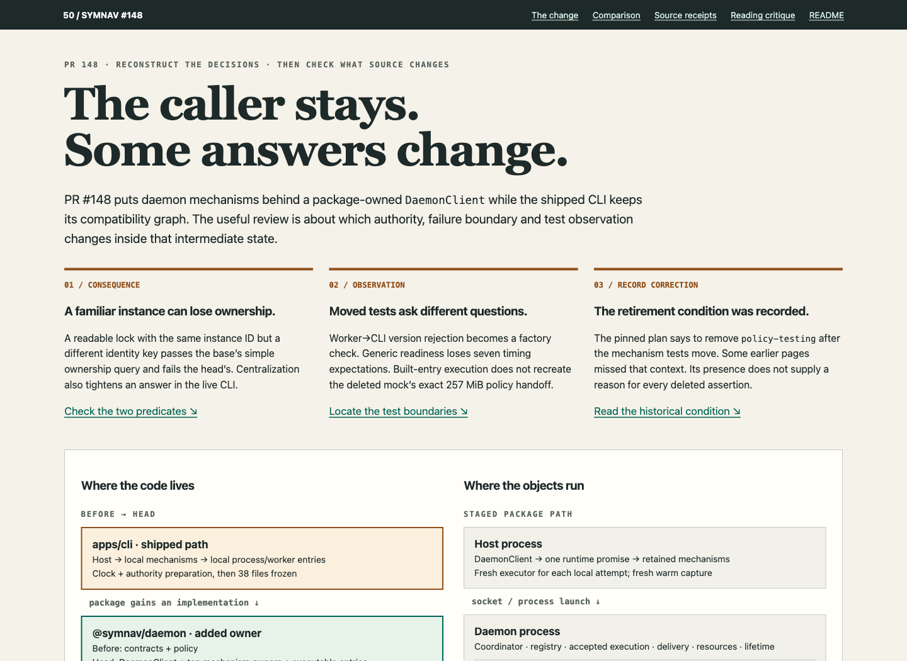 |
Approximately 35 minutes of active reading, extraction, writing, construction and checks. Harness: Codex; one sequential agent, no delegated agents. The scope capture began at 05:04 UTC after the initial philosophy/playbook and metadata reading. | Most raw body/control dumps from the human reading path; they belong only in receipts. The 26-row complete stopping layer is still long, and the two large supporting ledgers add little to a reader concerned only with #148. They satisfy the assigned comparison shape but do not establish that more inventory helps understanding. I would also reduce the full source archive if portability to the original worktrees were acceptable. | README# recombine-angles-50 ## Entry point Open [index.html](index.html): **The caller stays. Some answers change.** ```sh open ~/projects/rich-review-v2/experiments/50-recombine-angles-50/index.html ``` The page, its comparison and pinned source excerpts work directly from disk, including with JavaScript disabled. No installation, server, network or symnav checkout is needed to read them. Keep this folder together. The supporting [Markdown critique](critique.md), also [rendered for the browser](critique.html), contains 40 page rows and a 46-experiment ledger. Links to original experiments require their sibling folders; the captured readings and screenshots remain local. The temporary loopback inspection server has been stopped. ## Kind page With a Markdown critique and JSON inspection/source receipts. The primary PR explanation has 26 decision rows, nine shared receipts and 47 exact excerpts. These counts describe the artifact; they are not a score or evidence of comprehension. ## Subjects pr-148 — Own daemon mechanisms behind DaemonClient. Base `ba53c8e1662fd86d198b95321c90d9c9bef10184` → head `20838f8dbf413e04767543eb2380d0d114da6c60`. Other PR pages were read as representation and editorial inputs; their code was not reviewed as additional subjects. ## Declared choices - Role framing: A reader reconstructing decisions and an editor asking what that reader can understand, predict and reconsider. Source corrections concern the explanation; there is no symnav correctness verdict. - Box lenses: Code/package ownership versus the process holding an instance; client/runtime, per-attempt executor and returned output lifetimes; validation/failure boundaries; implementation, stimulus and observation in a test. - Opening style: Consequences first: stricter live registry matching, changed test observations and a recovered migration reason. Two ownership/lifetime maps lead into the complete comparison. A bounded optional-policy descent is named before the table. - Shape: A static page with one visible 26-row decision comparison and optional source depth. Supporting Markdown critique with 40 page rows, a 46-experiment ledger, sealed page-only notes, browser text captures, two retained zoom-canvas screenshots and newly pinned source witnesses. This adapts the predecessor critiques' “no page” declarations to the brief's explicit Kind: page. - Navigation: Linear comparison order and direct decision→receipt→decision links; full source pages have exact line anchors and receipt returns. The critique links each original page and its capture. No score, completion gate, verdict or comment storage. - Trust posture: Keep recorded reason, implemented consequence, missing record context, an omitted implication in my notes, an inherited finding and an editorial judgment separate. The policy plan corrects broad “unexplained retirement” claims without justifying every deleted assertion. Sampled routes remain sampled. Checked-in tests and producer-reported execution are not presented as new executions. - Persona: One technically capable sequential agent reader. The PR body, README metadata and earlier pages prime later readings. This is not an independent human recall study. The conflicting predecessor declarations about reading critiques are reconciled chronologically: none before the seal; attributed readings of 38/39/41–46 afterward. - Representations used: Package and process/object maps, comparison tables, a test-observation diagram, an explicitly illustrative idle timeline, rendered browser text, original page diagrams/simulations as reading inputs, screenshots, raw patches and numbered source excerpts. No predecessor execution data was copied into the new page. - Importance rule: Changed outcomes, validation timing, authority and test observation before cosmetic differences or inventory size. “No new material decision found” is an acceptable bounded comparison result. The declared stopping layer is the opening orientation, maps and complete comparison; deeper receipts elaborate those same decisions. - Inputs used (beyond bundle): Philosophy first, required playbook sections 1/2/3/6/7, with the rest read for context; all finished 01–46 at bounded depth, including README entry/kind/subject metadata and selected declarations; historical git objects from the read-only stack-head worktree, pinned contributor/meta-test AGENTS guidance, functional/architecture/policy/follow-up plans, and relevant base/head implementation/tests. The unchanged #148 daemon-policy migration paragraph was explicitly checked. The supplied PR body/45 commit records, full file inventory and patch were used; wide copied bodies received inventory/context inspection rather than an exhaustive semantic audit. No external web research, v1 material, symnav build, test or execution was used. - Tech: Native HTML/CSS, Markdown and JSON; Python and git read operations for extraction/generation/integrity checks; isolated Playwright on a temporary loopback server, plus direct-file/no-JavaScript verification. The delivered artifact has no runtime dependency. Optional rebuilding uses Python's installed Markdown package; verification uses the standard library. - Built on earlier experiment(s): Read all finished 01–46 as bounded editorial inputs. The 40 page entries are 01–37 and 40, plus 32 starter and the second 33 opening. Full membership and paths are in [manifest.json](manifest.json), [comparisons.json](comparisons.json) and [experiment-ledger.json](experiment-ledger.json). Specific contributions: 05/06 package/process separation; 08 stricter ownership lead; 13 consequence-first ordering; 23 bounded descent; 27 test apparatus; 29 preparation/staging cuts; 30 separate lifetimes; 35 intermediate history; 36 stored/returned-object lens; 40 attributed reconciliation. Critiques 38/39/41–46 are credited after the seal. No predecessor implementation was copied. Experiments 47 onward were not read as critique subjects. ## What I tried Combined the critique methods into a PR page rather than making another collection-wide diagnosis the primary entry. Captured all 40 page entries, read their openings and selected text, inspected the #148 decision layers more closely, then sealed the notes before the independent patch and predecessor critique bodies. The notes are explicitly page-only, not blind: the PR body/metadata and page 23's embedded source were already available. Pinned 253 source snapshots and the exact 153-path patch; the latter matches the bundle byte-for-byte. Used a second, copy-aware Git comparison to make relocation easier to inspect. It is not a semantic equivalence claim. Checked the live registry's stronger equality, construction ordering, client object lifetimes, route/output behavior, deleted or narrowed test observations and the historical policy record. Reproduced the 23 optional-policy descent after reading its attribution in 42/46. Dropped a possible “new worker validation in #148” account when the base already contained it. My sealed question about a changed entry catch outcome also did not become a finding: the checked source supports a direct-constructor contract and ordering change, while entry validation already existed. Large browser body dumps could not establish viewport visibility, so retained screenshots and a separate room capture bound the claims. The initial inspection had browser-tool VM import/global restrictions and an ARIA-name selector miss. These were corrected as harness issues. A draft link check caught a relative link copied from README metadata; metadata now renders as plain labels. The Markdown comparison tables received local scrolling containers for small screens. No complete implementation was abandoned midway. [Artifact checks](verification.json) cover pinned hashes, the 44-file seal, local targets, excerpt ranges, unchanged note columns, row counts and authored file/decision assignments. [Browser checks](browser-checks.json) passed all 26 decision/receipt returns, keyboard disclosure, a full-source round trip, 1440/768/390/320 layouts, and direct-file reading with JavaScript disabled. There were no external resource requests or remaining browser errors. Both assigned symnav worktrees had no tracked changes. These checks establish neither semantic completeness nor human understanding. [Inspection record](inspection-record.md) and [authored pyramid map](pyramid-map.json) preserve the reading/validation limits. The received brief and pre-existing harness logs were retained; oversized worker logs are ignored for commits. Optional regeneration from the frozen inputs, from this directory: ```sh python3 build_critique.py python3 verify.py ``` `build_critique.py` also rebuilds the primary page and source viewers. `capture_source.py` additionally needs the pinned objects in the original stack-head worktree. `seal_notes.py` refuses to overwrite the existing seal. `browser-check.js` is a function for the available Playwright tool; its loopback port must match a new temporary server if rerun. ## What I would drop Most raw body/control dumps from the human reading path; they belong only in receipts. The 26-row complete stopping layer is still long, and the two large supporting ledgers add little to a reader concerned only with #148. They satisfy the assigned comparison shape but do not establish that more inventory helps understanding. I would also reduce the full source archive if portability to the original worktrees were acceptable. ## What I would do next Have an unfamiliar maintainer stop after the comparison and predict the mismatched-lock outcome, a malformed warm result and the scope of the version test. Compare which source descent changes their interpretation; do not turn this agent's own recall into a human result. ## Time spent Approximately 35 minutes of active reading, extraction, writing, construction and checks. Harness: Codex; one sequential agent, no delegated agents. The scope capture began at 05:04 UTC after the initial philosophy/playbook and metadata reading. |
| 49 | follow-next-49 attempt 1: codex |
pair — a two-statement intervention, four independent agent-reader sessions, and a focused source comparison. | pr-127 is the shared control and has a complete decision surface in the report. The assigned next-step text also explicitly names cases belonging to pr-131 (validation), stack (primary ownership), and pr-148 (23/29). I treated those as narrowly authorized comparison subjects despite the brief's single-subject line. I did not review the rest of those PRs independently. | Role framing: Reader predicting concrete consequences before seeing code, then comparing those predictions with source. · Box lenses: Static ownership and runtime failure/lifetime boundaries: TypeScript service/core scope; parent/worker; primary/all-owner maps; host/runtime policy; standalone/process-composed queue. · Opening style: The experimental finding and a comparison table; source-derived event/ownership sketches accompany the cases. Sketch omissions are marked. · Shape: Focused comparison above receipts, plus the complete #127 control surface and two archived page pairs. Each source disclosure follows a claim already exposed above it. · Navigation: Linear report, direct case/receipt jumps and return link; unchanged nonlinear navigation inside the archived 23/29 pages. · Trust posture: Separate a passage's predictive usefulness from its fidelity to source. Preserve unknowns and distinguish top learning, descent learning and source correction. No verdict on symnav, scores or leaderboard. · Persona: Four fresh agent readers with no conversation fork, using the same available model; not human participants. The experimenter had read the earlier critique. · Representations used: Condition and prediction tables; simple box/event sketches; original/revised interactive pages; exact sentence patches; browser captures; frozen prose responses; line-linked source. · Importance rule: Whether a reader can predict the selected failure, ownership, credential or lifetime boundary before descending. A precise wrong prediction remains a source-fidelity problem. · Inputs used (beyond bundle): philosophy.md and playbook; the #127 worktree contributor guide; freshly read pinned git objects for the named cases; existing page assets and rendered prose; experiment 48's next-step, route notes and source-witness leads. Bundle files used: pr.json, diff.patch and files.txt. The generated overviews were not used. No external web research, symnav build or test run. · Tech: Offline HTML/CSS; Python standard library for copying, extraction, packets and integrity checks; isolated Playwright contexts for rendered routes. Codex harness with four requested independent reader agents. No storage or review-collection interface. · Built on earlier experiment(s): 01-unconstrained-a and 14-outsider-persona supply conflicting owner passages; 02-unconstrained-b and 20-contract-table supply general/explicit validation passages; 20 also supplies the unchanged #127 reader control. 23-zoom-canvas and 29-refusal supply the actual page copies. 48-fresh-reader-refresh-40 supplies the assigned follow-up and exact destinations. I also searched relevant README/critique snippets in 41–47 and read 47's route-capture script as a method lead. I did not read the full earlier corpus. | 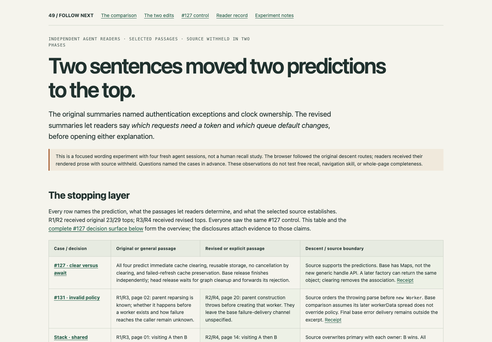 |
About 30 minutes wall-clock, starting at 05:01 UTC on 2026-09-13, including four reader sessions, source inspection, report construction and checks. | The full archived source banks and long reader responses are useful audit material but bulky for ordinary reading. The two edits do not justify claiming that either entire page now satisfies the pyramid invariant: explicit result/status operations, special-branch protocol detail, wall-clock deadline assignments, worker clock separation and optional policy still need attention. The revised canvas also has little spare text space. | README# follow-next-49 ## Entry point Open [index.html](index.html). It works offline with no install or server: ```sh open ~/projects/rich-review-v2/experiments/49-follow-next-49/index.html ``` The report links the four original/revised page copies, exact patches, twelve reader responses, sealed packets and pinned source. [protocol.md](protocol.md) records the reading procedure and capture adjustments. [verification.json](verification.json) records artifact checks. ## Kind pair — a two-statement intervention, four independent agent-reader sessions, and a focused source comparison. ## Subjects pr-127 is the shared control and has a complete decision surface in the report. The assigned next-step text also explicitly names cases belonging to pr-131 (validation), stack (primary ownership), and pr-148 (23/29). I treated those as narrowly authorized comparison subjects despite the brief's single-subject line. I did not review the rest of those PRs independently. ## Declared choices - Role framing: Reader predicting concrete consequences before seeing code, then comparing those predictions with source. - Box lenses: Static ownership and runtime failure/lifetime boundaries: TypeScript service/core scope; parent/worker; primary/all-owner maps; host/runtime policy; standalone/process-composed queue. - Opening style: The experimental finding and a comparison table; source-derived event/ownership sketches accompany the cases. Sketch omissions are marked. - Shape: Focused comparison above receipts, plus the complete #127 control surface and two archived page pairs. Each source disclosure follows a claim already exposed above it. - Navigation: Linear report, direct case/receipt jumps and return link; unchanged nonlinear navigation inside the archived 23/29 pages. - Trust posture: Separate a passage's predictive usefulness from its fidelity to source. Preserve unknowns and distinguish top learning, descent learning and source correction. No verdict on symnav, scores or leaderboard. - Persona: Four fresh agent readers with no conversation fork, using the same available model; not human participants. The experimenter had read the earlier critique. - Representations used: Condition and prediction tables; simple box/event sketches; original/revised interactive pages; exact sentence patches; browser captures; frozen prose responses; line-linked source. - Importance rule: Whether a reader can predict the selected failure, ownership, credential or lifetime boundary before descending. A precise wrong prediction remains a source-fidelity problem. - Inputs used (beyond bundle): philosophy.md and playbook; the #127 worktree contributor guide; freshly read pinned git objects for the named cases; existing page assets and rendered prose; experiment 48's next-step, route notes and source-witness leads. Bundle files used: pr.json, diff.patch and files.txt. The generated overviews were not used. No external web research, symnav build or test run. - Tech: Offline HTML/CSS; Python standard library for copying, extraction, packets and integrity checks; isolated Playwright contexts for rendered routes. Codex harness with four requested independent reader agents. No storage or review-collection interface. - Built on earlier experiment(s): 01-unconstrained-a and 14-outsider-persona supply conflicting owner passages; 02-unconstrained-b and 20-contract-table supply general/explicit validation passages; 20 also supplies the unchanged #127 reader control. 23-zoom-canvas and 29-refusal supply the actual page copies. 48-fresh-reader-refresh-40 supplies the assigned follow-up and exact destinations. I also searched relevant README/critique snippets in 41–47 and read 47's route-capture script as a method lead. I did not read the full earlier corpus. ## What I tried I changed only 23's D13 outline sentence and the first, top-level occurrence of 29's A1 clock sentence. Styles, behavior, evidence and deeper prose remain identical between each pair. 23's D04 optional-policy statement was deliberately left unchanged, resolving the earlier note's ambiguity about two flagged pages versus three propositions. R1/R2 received original tops; R3/R4 received revised tops. Each pair included both the general/first-owner and explicit/last-owner passage conditions. The same #127 control went to everyone. I sealed predictions before giving descent prose, then sealed descent responses before giving the common source packet. The browser followed the routes; the readers received extracted text with embedded source withheld. This isolates wording and does not test reader navigation or unprompted recall. The original readers left the token and queue-source questions unresolved until descent. Both revised readers could predict those outcomes from the top. All four still learned optional policy only on D04 descent and its current-system fallback only from source. General parent-reparse wording left failure timing unknown; explicit ordering supplied it. First-owner wording produced faithful but source-contradicted predictions. The shared #127 passage supported its release/cache predictions before source. I abandoned broad minified-text dumps and direct filesystem writes from the browser tool. A1's auto-opening link initially caused a redundant click to close it. A premature Home measurement caught an unsettled camera. An overstrict overflow check mistook padding for clipped text; final geometry and screenshots show all outline text inside the border, with just 6.4 px remaining below revised 23's process outline at 1440×1000. These adjustments are documented, not hidden as successful initial attempts. The studied strings never changed after readers began. ## What I would drop The full archived source banks and long reader responses are useful audit material but bulky for ordinary reading. The two edits do not justify claiming that either entire page now satisfies the pyramid invariant: explicit result/status operations, special-branch protocol detail, wall-clock deadline assignments, worker clock separation and optional policy still need attention. The revised canvas also has little spare text space. ## What I would do next Give a human the same cases without the explicit uncertainty coaching. Test optional policy as a separate one-statement change, and shorten the credential wording while preserving its outcomes and restoring layout margin. ## Time spent About 30 minutes wall-clock, starting at 05:01 UTC on 2026-09-13, including four reader sessions, source inspection, report construction and checks. ## Reproduction and limits `prepare.py` reproduces the two pairs from the earlier artifacts. `capture.js` is a Playwright browser-tool function; save its returned object as `captures/rendered.json`. `make-packets.py` derives the reader packets. `capture-source.py` reads pinned git objects, and `make-source-packet.py` selects the source excerpts. Reader outputs are observations from this run, not generated answer keys; rerunning preparation does not reproduce a fresh reading study. `verify-browser.js` repeats the six routes, checks visible root text and report layout, and returns the browser receipt. `python3 experiments/49-follow-next-49/verify.py` checks packet/response seals, exact edits, unchanged originals, source hashes, local HTML links, the #127 test-body claim and required README headings. Checks concern this artifact; none certify exhaustive semantic coverage or execute symnav. The initial browser receipt's zero-size post-Home geometry is superseded by the settled final browser receipt. All files written by this run are inside this experiment. The original 23/29 files retain their hashes, both assigned symnav worktrees remain clean, and no branches, commits, PRs, messages or original experiments were changed. The shared workspace's unrelated pre-existing changes were left alone. |
| 48 | fresh-reader-refresh-40 attempt 1: claude-opus → attempt 2: claude-opus → attempt 3: codex |
critique | No independent symnav subject was assigned. I critiqued finished pages about pr-127, pr-131, pr-148 and stack, plus experiment 30’s adjacent pr-146/pr-147 pair. The cohort is experiments 01–37 and 40, with separate rows for 32’s starter and 33’s second opening. Subject tabs remain within their page’s row. Critique reports and auxiliary source/method documents are excluded from the page count. | Role framing: A reader reconstructing decisions, then checking what source adds or corrects; no correctness verdict on symnav and no page leaderboard. · Box lenses: Code ownership versus object/process lifetime; validation/failure boundaries; the implementation and stimulus that a test actually observes. · Opening style: Consequential corrections and concrete descent surprises first; the complete comparison follows in one table. · Shape: Markdown critique with 40 page rows, sealed page-only notes, browser captures and pinned source witnesses. · Navigation: Linear table order with direct page links and nonlinear jumps to shared receipts; no score or completion gate. · Trust posture: Distinguish recorded reason, code consequence, missing record context and my own missed implication. Preserve uncertainty where a route was sampled. · Persona: One sequential agent reader. This is not an independent human recall study; later pages share concepts learned from earlier pages. · Representations used: Comparison table, rendered browser text, two retained zoom-canvas screenshots, original page diagrams/simulations, raw patches and source context. · Importance rule: Changed failure outcomes, validation timing, authority and test observation boundaries before cosmetic differences. “No new material decision found” is allowed. · Inputs used (beyond bundle): philosophy.md and the required playbook sections; earlier pages and README entry/kind/subject metadata; pinned git history from the read-only stack-head worktree; repository AGENTS instructions and the pinned daemon-policy migration plan. No previous critique body was read; no external web research was used. · Tech: Markdown/JSON; Playwright on a temporary loopback server for page reading; Python and git for pinned extraction and artifact checks. Symnav was not built, tested or edited. · Built on earlier experiment(s): Read 01–37 and 40 as critique subjects, including 32 starter and both 33 openings. No earlier critique conclusions or implementation were reused. The full list is in manifest.json and comparisons.json. | About 40 minutes wall-clock, beginning around 04:21 UTC on 2026-09-13: roughly 14 minutes for the page-only pass, then source comparison, writing and checks. No symnav build/test time. | Whole-page text dumps are too bulky for ordinary reading; they earn their place only as audit receipts. A future capture should retain each declared top and chosen descent with stable identifiers. I would also drop any implication that 40 sequential agent reads are 40 independent trials. | README# fresh-reader-refresh-40 ## Entry point Open [review.md](review.md) in a Markdown viewer. It contains one comparison table for all 40 review/example documents, with learned decisions, source-phase misses/corrections, and two witnessed rule-4 flags. [source-witnesses.md](source-witnesses.md) supplies pinned receipts. No server or build is needed to read the critique. [Artifact checks](verification.json) passed: sealed notes, cohort/table consistency, local links, source hashes, the 33 pair’s common body and the #127 test-count statement. These checks do not certify exhaustive semantic coverage. ## Kind critique ## Subjects No independent symnav subject was assigned. I critiqued finished pages about pr-127, pr-131, pr-148 and stack, plus experiment 30’s adjacent pr-146/pr-147 pair. The cohort is experiments 01–37 and 40, with separate rows for 32’s starter and 33’s second opening. Subject tabs remain within their page’s row. Critique reports and auxiliary source/method documents are excluded from the page count. ## Declared choices - Role framing: A reader reconstructing decisions, then checking what source adds or corrects; no correctness verdict on symnav and no page leaderboard. - Box lenses: Code ownership versus object/process lifetime; validation/failure boundaries; the implementation and stimulus that a test actually observes. - Opening style: Consequential corrections and concrete descent surprises first; the complete comparison follows in one table. - Shape: Markdown critique with 40 page rows, sealed page-only notes, browser captures and pinned source witnesses. - Navigation: Linear table order with direct page links and nonlinear jumps to shared receipts; no score or completion gate. - Trust posture: Distinguish recorded reason, code consequence, missing record context and my own missed implication. Preserve uncertainty where a route was sampled. - Persona: One sequential agent reader. This is not an independent human recall study; later pages share concepts learned from earlier pages. - Representations used: Comparison table, rendered browser text, two retained zoom-canvas screenshots, original page diagrams/simulations, raw patches and source context. - Importance rule: Changed failure outcomes, validation timing, authority and test observation boundaries before cosmetic differences. “No new material decision found” is allowed. - Inputs used (beyond bundle): philosophy.md and the required playbook sections; earlier pages and README entry/kind/subject metadata; pinned git history from the read-only stack-head worktree; repository AGENTS instructions and the pinned daemon-policy migration plan. No previous critique body was read; no external web research was used. - Tech: Markdown/JSON; Playwright on a temporary loopback server for page reading; Python and git for pinned extraction and artifact checks. Symnav was not built, tested or edited. - Built on earlier experiment(s): Read 01–37 and 40 as critique subjects, including 32 starter and both 33 openings. No earlier critique conclusions or implementation were reused. The full list is in manifest.json and comparisons.json. ## What I tried I fixed the page census at 04:21:46 UTC, read each declared explanation before its diff, and sealed the notes/captures at 04:35:18 UTC. Then I read pinned diffs and followed specific consequences into surrounding source. The final table distinguishes source-only misses, missed implications, source corrections, declared partiality and witnessed surprises on descent. A final census found only newly finished critiques, so the subject cohort stayed fixed. I abandoned brittle role-name browser selectors when accessible names differed from visible labels, then used observed text/data selectors in isolated tabs. I also dropped an overstrong potential criticism of 01’s “existing release call gains await” wording after checking that the production call really changes. Neither adjustment changed the sealed notes. Details are in [post-diff-rechecks.md](post-diff-rechecks.md). ## What I would drop Whole-page text dumps are too bulky for ordinary reading; they earn their place only as audit receipts. A future capture should retain each declared top and chosen descent with stable identifiers. I would also drop any implication that 40 sequential agent reads are 40 independent trials. ## What I would do next Give independent readers the before-spawn validation and first/last-owner cases, then compare what they can predict before source. Change only the two flagged top statements in 23/29 and repeat those exact descent routes. ## Time spent About 40 minutes wall-clock, beginning around 04:21 UTC on 2026-09-13: roughly 14 minutes for the page-only pass, then source comparison, writing and checks. No symnav build/test time. |
|
| 47 | critique-refresh-40 attempt 1: codex |
critique | None assigned as a new implementation. This critiques **all 46 finished experiments, 01–46**, at **2026-09-13 04:42:09 UTC / 07:42:09 Istanbul**. A README plus a matching done marker defines completion. Experiment 48 remained running and is outside the [frozen census](scope-final.json). | Role framing: Editor asking what a reader can understand, predict, and reconsider. · Box lenses: Package versus process; implementation versus instance; stored versus returned object; completion gates; propositions and their evidence. · Opening style: Main diagnosis, then a complete missing/repeated/promising comparison. · Shape: Written critique, one ledger row per finished experiment, and bounded inspection receipts. No page or leaderboard. · Navigation: Linear findings or direct links to a finding, experiment, source check, or captured route, with return links. · Trust posture: Distinguish source correction, recall miss, omission, parent/child surprise, producer-reported execution, and editorial inference. Separate disclosure, reason, and unresolved constraint. · Persona: A technically capable morning reader. This critic is primed by overlapping explanations and earlier critiques; it is not a fresh-human study. · Representations used: Markdown prose and comparison tables; rendered text, selected screenshots, and source excerpts as evidence. · Importance rule: Consequences for understanding and human choice. Test premises and rationale receive the same attention as architectural moves; inventory size is not a quality measure. · Inputs used (beyond bundle): Philosophy and playbook; all included READMEs and primary artifacts; selected methods, narration, provenance records, and earlier critique witnesses; historical git objects from the assigned stack worktree. No external research. · Tech: Markdown, Python, git read operations, and isolated offline Playwright inspection. The delivered critique has no runtime dependency. · Built on earlier experiment(s): **Read all finished experiments 01–46.** They are the critique subjects. Findings from 38/39/41–46 are attributed; 40's synthesis is examined as reuse and reconciliation. No predecessor page implementation was copied into a new page. | About 40 minutes wall-clock, including late completions, browser/source inspection, writing, and handoff checks. Initial census 04:06:35 UTC; closing census 04:42:09 UTC, with final writing/checks afterward. No delegated agents. | Another general refresh that repeats the same diagnosis without a repaired claim, a precise new witness, or a different reader observation. The raw captures and complete ledger belong at audit depth, not in every reader's linear path. Donor completeness is not a reason to preserve every device in a synthesis. | README# critique-refresh-40 ## Entry point Open [critique.md](critique.md) in a Markdown viewer. Its opening table contains the complete findings. The [46-experiment ledger](experiment-ledger.md) and [inspection notes](inspection-notes.md) provide detail and evidence. No build, server, or page. ## Kind critique ## Subjects None assigned as a new implementation. This critiques **all 46 finished experiments, 01–46**, at **2026-09-13 04:42:09 UTC / 07:42:09 Istanbul**. A README plus a matching done marker defines completion. Experiment 48 remained running and is outside the [frozen census](scope-final.json). ## Declared choices - Role framing: Editor asking what a reader can understand, predict, and reconsider. - Box lenses: Package versus process; implementation versus instance; stored versus returned object; completion gates; propositions and their evidence. - Opening style: Main diagnosis, then a complete missing/repeated/promising comparison. - Shape: Written critique, one ledger row per finished experiment, and bounded inspection receipts. No page or leaderboard. - Navigation: Linear findings or direct links to a finding, experiment, source check, or captured route, with return links. - Trust posture: Distinguish source correction, recall miss, omission, parent/child surprise, producer-reported execution, and editorial inference. Separate disclosure, reason, and unresolved constraint. - Persona: A technically capable morning reader. This critic is primed by overlapping explanations and earlier critiques; it is not a fresh-human study. - Representations used: Markdown prose and comparison tables; rendered text, selected screenshots, and source excerpts as evidence. - Importance rule: Consequences for understanding and human choice. Test premises and rationale receive the same attention as architectural moves; inventory size is not a quality measure. - Inputs used (beyond bundle): Philosophy and playbook; all included READMEs and primary artifacts; selected methods, narration, provenance records, and earlier critique witnesses; historical git objects from the assigned stack worktree. No external research. - Tech: Markdown, Python, git read operations, and isolated offline Playwright inspection. The delivered critique has no runtime dependency. - Built on earlier experiment(s): **Read all finished experiments 01–46.** They are the critique subjects. Findings from 38/39/41–46 are attributed; 40's synthesis is examined as reuse and reconciliation. No predecessor page implementation was copied into a new page. ## What I tried Read philosophy first, then the playbook and finished artifacts. Opened 43 distinct local HTML files, read the written reports and selected supporting methods, exercised targeted mechanisms, and checked disputed claims against pinned source. The cohort grew from 42 to 46 during the pass; all four late completions were incorporated. The critique identifies missing consequence-preserving compression, compound rationale labels, repeated reading structures, complementary visual relationships, and unobserved learning/transfer. It includes a concrete replacement parent for 27's adapter explanation. It also narrows a late hashing-rationale correction and adopts 46's verified correction to the textbook section destination. Broad captures were too bulky to serve as the critique. I retained them as receipts and wrote a findings table plus individual ledger. Browser-tool filesystem assumptions and two accessible-name selectors failed; corrected capture paths succeeded. These were harness failures, not page findings. No substantive page approach was attempted or abandoned. No symnav build, test suite, daemon, or optional execution server was run. Worktree operations were read-only. Existing recordings remain their producers' evidence. [Verification](verification.json) checks the written handoff; it does not certify educational success. ## What I would drop Another general refresh that repeats the same diagnosis without a repaired claim, a precise new witness, or a different reader observation. The raw captures and complete ledger belong at audit depth, not in every reader's linear path. Donor completeness is not a reason to preserve every device in a synthesis. ## What I would do next Compare compact and fuller complete layers using the same corrected propositions and separate unfamiliar readers. Examine which parts of 40 earn their place, and apply 31 or 32 unchanged to a wider subject before adapting them. ## Time spent About 40 minutes wall-clock, including late completions, browser/source inspection, writing, and handoff checks. Initial census 04:06:35 UTC; closing census 04:42:09 UTC, with final writing/checks afterward. No delegated agents. |
|
| 46 | fresh-reader-refresh-30 attempt 1: claude-opus → attempt 2: claude-opus → attempt 3: codex |
Critique. | None assigned as a new implementation. The reviewed pages explain `pr-127`, `pr-131`, `pr-148`, adjacent #146/#147, and the full stack. | Role framing: A reader recording decisions before consulting independent source, then a source checker correcting that account. · Box lenses: Whatever each page declares; verification emphasizes code ownership, process boundaries, lifetime, failure timing and test-observation boundaries. · Opening style: A marked simplified reading sequence, with the three descent findings named immediately. · Shape: One complete comparison table; separate source and parent/child receipts. · Navigation: Linear table, local filters/search, original-page links, captured text, evidence anchors and return links. No stored reader input. · Trust posture: Sealed blind notes, pinned revisions, finite witnesses, explicit inference and recall corrections. No correctness scores or approval controls. · Persona: One technically literate serial reader. Later pages benefit from vocabulary learned earlier; this is not a controlled trial with independent fresh humans. · Representations used: Rendered page text and screenshots, a comparison table, exact parent/child quotations, line-numbered source excerpts and JSON records. · Importance rule: Changes to caller outcomes, failure boundaries, ownership authority and what a test actually observes receive attention alongside the advertised architecture. An omitted source fact alone does not establish a witnessed rule-4 descent. · Inputs used (beyond bundle): Philosophy and required playbook sections; README entry/kind/subject sections; rendered finished pages; the supplied #127/#131/#148 bundles; read-only Git objects for immediate revisions, #146/#147 and focused stack context; applicable worktree AGENTS files; the narrated page’s transcript. No external web sources. · Tech: Offline HTML/CSS/JavaScript generated with Python. A private Playwright/Chromium process captured pages; existing local browser tooling was reused. Reading the report requires none of it. · Built on earlier experiment(s): Read 01–37 and 40 as critique subjects. Read 39 only after the blind seal and principal independent source checks. Its protocol-source, policy-retirement and executor-default observations prompted credited verification. Did not read critiques 38/41 or reuse another experiment’s report code. No v1 material was accessed. | Approximately 40 minutes of wall time, including the census, blind reading, source comparison, report construction and local verification. Exact phase and capture timestamps are preserved in the accompanying records. | Treating “all PR-body decisions” as a complete change inventory. The pre-spawn validation boundary and altered disk stimulus show why that is insufficient. | README# fresh-reader-refresh-30 ## Entry point Open [index.html](index.html), or: ```sh open ~/projects/rich-review-v2/experiments/46-fresh-reader-refresh-30/index.html ``` No server, installation or network is needed. The single comparison table has 47 rows: 46 subject/variant/supplement readings across 38 finished experiments, plus a separately timed reading of critique 39. Filters reveal rule-4 flags, corrections and declared limits. All findings remain visible in the default table; evidence links add receipts. The three rule-4 flags concern 04’s changing disclosure claim, 27’s qualification of a fixture’s disk stimulus, and 23’s introduction of optional host policy inside its client room. The third is explicitly an editorial judgment. Source-only misses are separate. ## Kind Critique. ## Subjects None assigned as a new implementation. The reviewed pages explain `pr-127`, `pr-131`, `pr-148`, adjacent #146/#147, and the full stack. The frozen cohort is 01–37 and 40, with separate subject views and independently documented variants. Critique 39 is a meta row. Markdown critiques 38/41, unfinished 42–46, method guides, raw source viewers, redirects and templates are outside the page cohort. See [scope.json](scope.json). ## Declared choices - Role framing: A reader recording decisions before consulting independent source, then a source checker correcting that account. - Box lenses: Whatever each page declares; verification emphasizes code ownership, process boundaries, lifetime, failure timing and test-observation boundaries. - Opening style: A marked simplified reading sequence, with the three descent findings named immediately. - Shape: One complete comparison table; separate source and parent/child receipts. - Navigation: Linear table, local filters/search, original-page links, captured text, evidence anchors and return links. No stored reader input. - Trust posture: Sealed blind notes, pinned revisions, finite witnesses, explicit inference and recall corrections. No correctness scores or approval controls. - Persona: One technically literate serial reader. Later pages benefit from vocabulary learned earlier; this is not a controlled trial with independent fresh humans. - Representations used: Rendered page text and screenshots, a comparison table, exact parent/child quotations, line-numbered source excerpts and JSON records. - Importance rule: Changes to caller outcomes, failure boundaries, ownership authority and what a test actually observes receive attention alongside the advertised architecture. An omitted source fact alone does not establish a witnessed rule-4 descent. - Inputs used (beyond bundle): Philosophy and required playbook sections; README entry/kind/subject sections; rendered finished pages; the supplied #127/#131/#148 bundles; read-only Git objects for immediate revisions, #146/#147 and focused stack context; applicable worktree AGENTS files; the narrated page’s transcript. No external web sources. - Tech: Offline HTML/CSS/JavaScript generated with Python. A private Playwright/Chromium process captured pages; existing local browser tooling was reused. Reading the report requires none of it. - Built on earlier experiment(s): Read 01–37 and 40 as critique subjects. Read 39 only after the blind seal and principal independent source checks. Its protocol-source, policy-retirement and executor-default observations prompted credited verification. Did not read critiques 38/41 or reuse another experiment’s report code. No v1 material was accessed. ## What I tried I froze the finished-page census at **2026-09-13 04:00:41 UTC**, read every declared top before opening independent diffs, and recorded decisions and questions in [blind-notes.md](blind-notes.md). I included below-fold decision inventories in the top. Raw `pre` blocks and source-viewer exits were excluded during this phase; inline snippets already in explanations remained part of the reading. The film was read through its transcript; audio delivery was not assessed. At **04:17:54 UTC**, I sealed 137 notes/capture records in [blind-seal.json](blind-seal.json), then compared the pages with pinned patches and source. Wide diffs received file/changed-line inventories and contextual reads, not an exhaustive semantic audit of every copied line. [post-diff-notes.md](post-diff-notes.md) records those limits and the later use of critique 39. [comparisons.json](comparisons.json) holds the table data. The comparison reverses a plausible shared takeaway: the last configured project is primary. It also distinguishes the production `await` change from an inaccurate claim that an old semantic test gained `await`. All five old cases and helpers are byte-identical. These are explanatory corrections, not judgments about the refactor’s correctness. Verification passed for 397 local links, all 137 sealed records, 27 source hashes, source excerpt ranges and the README structure: [validation.json](validation.json). Desktop/mobile filters, reset, empty-search state, evidence navigation and overflow checks passed: [browser-check.json](browser-check.json). No symnav suite, daemon or worker was run, and no symnav file was edited. Entry HTML hashes were rechecked; rendered captures, rather than a complete archive of every linked asset, preserve what this reader saw. ## What I would drop Treating “all PR-body decisions” as a complete change inventory. The pre-spawn validation boundary and altered disk stimulus show why that is insufficient. Treating every extra number or line of code as a rule-4 surprise. The report requires a concrete parent/child change in the account. I also dropped a proposed miss in page 06 after re-reading K3: serial test scheduling was already there; my notes had omitted it. The first browser selector attempts in page 35 targeted hidden close buttons. I kept the failed captures, corrected the selectors and opened the intended records. Those are harness failures, not page failures. Large tool-output reads also required smaller contextual follow-ups; this did not become evidence of exhaustive reading. ## What I would do next Have independent readers visit one page each and predict concrete outcomes before seeing source: pending cleanup, failed reattachment, an exactly-at-threshold record and overlapping configured projects. Compare predictions with the same pinned witnesses. This would separate page teaching from transfer between earlier readings. ## Time spent Approximately 40 minutes of wall time, including the census, blind reading, source comparison, report construction and local verification. Exact phase and capture timestamps are preserved in the accompanying records. |
|
| 45 | critique-refresh-30 attempt 1: codex |
critique | None assigned. The subjects of this critique are all **43 finished experiments, 01–43**, at **2026-09-13 04:25:23 UTC / 07:25:23 Istanbul**. Their explanations concern the supplied symnav stack and component PRs. A README plus a done marker defines completion. [Closing census](scope-final.json). | Role framing: Editor examining whether a reader can understand consequences, choose depth, and stop with enough context to judge decisions. · Box lenses: Package versus process ownership; cached objects versus returned projections; completion and failure boundaries; claims and the evidence supporting them. · Opening style: Main finding followed by a missing/repeated/promising comparison containing the concrete counterexamples. · Shape: Written critique, one ledger row per finished experiment, source/interaction witnesses, and a method note. No page or ranking. · Navigation: Read the critique linearly or follow links to individual experiments and evidence; the supporting documents link back. · Trust posture: Distinguish my observations, author-recorded execution, earlier reader findings, source corrections, and educational hypotheses. A missing reader recollection is not automatically a page omission or an R4 surprise. · Persona: Technically capable morning reader choosing what to examine and pursue. This critic is primed by earlier experiments and critiques; it is not a fresh-reader trial. · Representations used: Markdown prose and comparison tables. Rendered text, selected interactions, and screenshots support the critique; no new architecture illustration was built. · Importance rule: Consequences, reason attribution, and trustworthy stopping take precedence over inventories or device counts. Test premises receive the same attention as architectural moves. · Inputs used (beyond bundle): Philosophy and required playbook sections; every included README; rendered openings and selected mechanisms; earlier critiques and reader reports; selected runbooks and transcripts; exact source/plan objects from the read-only stack worktree. No external research. · Tech: Markdown, Python, git read operations, and isolated offline Playwright inspection. The delivered critique has no runtime dependency. · Built on earlier experiment(s): **Read all finished experiments 01–43.** They are the critique subjects. Findings from 38/41/43 and the late 39/42 reader checks are attributed. 40’s synthesis is examined as a synthesis. No earlier page implementation was reused to create a page. | About half an hour, including late completions, browser inspection, source checks, writing, and handoff verification. The initial census was at 03:57:55 UTC and the closing census at 04:25:23 UTC on 2026-09-13; final writing and checks followed. No delegated agents. | Another general essay repeating 38/41/43, raw control inventories as reading material, and treating browser success or changed-file coverage as learning evidence. I kept prior overlap where it explains the current findings and focused additions on exact claims and later completions. | README# critique-refresh-30 ## Entry point Open [critique.md](critique.md) in a Markdown viewer. Its opening table gives the complete findings. The [43-experiment ledger](experiment-ledger.md), [concrete witnesses](witnesses.md), and [reading method](review-method.md) provide supporting detail. No build, server, or page. ## Kind critique ## Subjects None assigned. The subjects of this critique are all **43 finished experiments, 01–43**, at **2026-09-13 04:25:23 UTC / 07:25:23 Istanbul**. Their explanations concern the supplied symnav stack and component PRs. A README plus a done marker defines completion. [Closing census](scope-final.json). ## Declared choices - Role framing: Editor examining whether a reader can understand consequences, choose depth, and stop with enough context to judge decisions. - Box lenses: Package versus process ownership; cached objects versus returned projections; completion and failure boundaries; claims and the evidence supporting them. - Opening style: Main finding followed by a missing/repeated/promising comparison containing the concrete counterexamples. - Shape: Written critique, one ledger row per finished experiment, source/interaction witnesses, and a method note. No page or ranking. - Navigation: Read the critique linearly or follow links to individual experiments and evidence; the supporting documents link back. - Trust posture: Distinguish my observations, author-recorded execution, earlier reader findings, source corrections, and educational hypotheses. A missing reader recollection is not automatically a page omission or an R4 surprise. - Persona: Technically capable morning reader choosing what to examine and pursue. This critic is primed by earlier experiments and critiques; it is not a fresh-reader trial. - Representations used: Markdown prose and comparison tables. Rendered text, selected interactions, and screenshots support the critique; no new architecture illustration was built. - Importance rule: Consequences, reason attribution, and trustworthy stopping take precedence over inventories or device counts. Test premises receive the same attention as architectural moves. - Inputs used (beyond bundle): Philosophy and required playbook sections; every included README; rendered openings and selected mechanisms; earlier critiques and reader reports; selected runbooks and transcripts; exact source/plan objects from the read-only stack worktree. No external research. - Tech: Markdown, Python, git read operations, and isolated offline Playwright inspection. The delivered critique has no runtime dependency. - Built on earlier experiment(s): **Read all finished experiments 01–43.** They are the critique subjects. Findings from 38/41/43 and the late 39/42 reader checks are attributed. 40’s synthesis is examined as a synthesis. No earlier page implementation was reused to create a page. ## What I tried Read philosophy first and the required playbook sections next. Read all finished READMEs and opened the 38 subject artifacts in 01–37 and 40. Read the earlier critiques and both finished reader tables, then checked selected claims against the supplied PR body, pinned migration plan, and primary-owner implementation/test. Exercised 16’s hypothetical move, 30’s completion gates, 36’s identity lens, and selected other descents and variants. The main finding is that complete-looking inventories still miss consequences or misattribute reasons. The promising devices expose different relationships: static versus runtime edges, address repair versus dependency constraints, separate completion gates, and stored identity versus fresh projections. The synthesis improves several comparisons but does not establish a human learning result. The cohort grew from 40 to 43 finished experiments during this pass. The late reader reports required revising the earlier “no reader evidence” diagnosis; there are now sealed agent recall observations with serial-learning limits. Experiment 43 added a caption mismatch that my captured 36 state confirms. [The method](review-method.md) states the inspection extent; [verification](verification.json) records coverage and link checks. No symnav build, test run, source modification, or fresh execution was performed. Existing traces and recorded runs remain their authors’ evidence. Broad captures were useful receipts, but I did not treat every captured line as an independently inspected state. ## What I would drop Another general essay repeating 38/41/43, raw control inventories as reading material, and treating browser success or changed-file coverage as learning evidence. I kept prior overlap where it explains the current findings and focused additions on exact claims and later completions. The first broad capture pass was too bulky to be the critique itself. I retained it as evidence and switched the written result to a complete comparison, individual ledger, and bounded witnesses. No page prototype was attempted or abandoned. ## What I would do next Repair the concrete root claims, rationale scope, fixture premises, and stale visualization captions. Compare a compact complete layer with a fuller register using the same reconciled decisions and unfamiliar human readers. Observe their explanations and predictions before source or hints; retain the actual surprises instead of producing a leaderboard. Test method/kit transfer on a wider assigned subject. ## Time spent About half an hour, including late completions, browser inspection, source checks, writing, and handoff verification. The initial census was at 03:57:55 UTC and the closing census at 04:25:23 UTC on 2026-09-13; final writing and checks followed. No delegated agents. |
|
| 44 | fresh-reader-refresh-20 attempt 1: claude-opus → attempt 2: claude-opus → attempt 3: codex |
critique | No direct subject was assigned. The finished pages reviewed cover `pr-127`, `pr-131`, `pr-148`, `stack`, and the adjacent pair #146/#147. | Role framing: Reader first, evidence auditor second. Preserve mistaken learning instead of repairing it retrospectively. · Box lenses: Static ownership and runtime/lifetime boundaries, assessed through what each page taught; failure and test-observation boundaries receive the same attention. · Opening style: The observed surprises first, followed by the reading method and the complete comparison table. · Shape: One Markdown table; linked source receipts and raw capture files provide checking depth. · Navigation: Read rows in experiment order, or follow a page, captured text, or E-number to its supporting evidence. · Trust posture: Separate recall misses, omissions on inspected routes, incorrect explanations and observed descent surprises. No blanket claim of page completeness. Wide-subject diff inspection was selective; prior probes were not rerun. · Persona: One sequential reader with growing familiarity across repeated subjects. This is not an independent-reader experiment or a measurement of human comprehension. · Representations used: Compressed teach-back, before/after comparisons, exact source excerpts, browser text/interaction captures, and three screenshots for visual inspection. Audio quality and mobile layouts were not evaluated. · Importance rule: Keep decisions about observable outcomes, authority, identity, timing, lifetime, public contracts, rationale and changed test observations. A small behavioral or evidence change matters alongside a package move. Do not manufacture a miss when the diff supports the reading. · Inputs used (beyond bundle): `philosophy.md`; playbook sections 1, 2, 3, 6, 7; rendered earlier experiments and their Entry point/Kind/Subjects metadata; the sibling `inputs/pr-127`, `inputs/pr-131`, and `inputs/pr-148` bundles; pinned git objects for before/after source, the policy plan, and #146/#147 diffs through the read-only stack-head worktree. The stack-head source was also read directly at selected paths. · Tech: Playwright browser reading through a temporary local HTTP server; Python for immutable recall joining, patch inventories, source extraction, exact test-suffix comparison, link checks and hash comparison; Markdown/JSON output. No symnav execution or worktree edits. · Built on earlier experiment(s): **01–37 were read as critique subjects.** Their implementations and probes were not reused. Only completion metadata was read for critiques 38/41; their critique prose was not read. No earlier critique supplied this table's conclusions. | About 40 minutes for this reading and audit pass. Cohort snapshot: 03:52 UTC; recall locked: 04:05:51 UTC; final checks around 04:30 UTC. Earlier experiment generation and harness retries are excluded. | The large raw browser dumps earn their place as receipts, not as reading material. I would also drop any attempt to rank these pages from this run: shared subjects prime later readings, routes differ, and neither time-to-understanding nor independent recall was measured. | README# fresh-reader-refresh-20 ## Entry point Open [critique.md](critique.md) in a Markdown viewer. It contains one table with 39 entries: decisions learned from each page, later diff misses/corrections, and observed rule-4 surprises. ```sh open ~/projects/rich-review-v2/experiments/44-fresh-reader-refresh-20/critique.md ``` The two observed parent-to-depth surprises are in 04 and 27. Source receipts and captured readings are linked from the table. No server or installation is required; the temporary browser-preview server has been stopped. ## Kind critique ## Subjects No direct subject was assigned. The finished pages reviewed cover `pr-127`, `pr-131`, `pr-148`, `stack`, and the adjacent pair #146/#147. The cohort was frozen at **2026-09-13 03:52 UTC**: all primary subject pages in experiments **01–37**, plus **32/starter.html** and **33/failure.html**. Multi-subject tabs remain together in their page's row. The generic method/kit documentation, templates and source viewers are supporting material rather than additional subject pages. Critiques 38/41 were excluded; 39/40/42/43 had no finished README at that cutoff. Later completions were not added mid-pass. ## Declared choices - Role framing: Reader first, evidence auditor second. Preserve mistaken learning instead of repairing it retrospectively. - Box lenses: Static ownership and runtime/lifetime boundaries, assessed through what each page taught; failure and test-observation boundaries receive the same attention. - Opening style: The observed surprises first, followed by the reading method and the complete comparison table. - Shape: One Markdown table; linked source receipts and raw capture files provide checking depth. - Navigation: Read rows in experiment order, or follow a page, captured text, or E-number to its supporting evidence. - Trust posture: Separate recall misses, omissions on inspected routes, incorrect explanations and observed descent surprises. No blanket claim of page completeness. Wide-subject diff inspection was selective; prior probes were not rerun. - Persona: One sequential reader with growing familiarity across repeated subjects. This is not an independent-reader experiment or a measurement of human comprehension. - Representations used: Compressed teach-back, before/after comparisons, exact source excerpts, browser text/interaction captures, and three screenshots for visual inspection. Audio quality and mobile layouts were not evaluated. - Importance rule: Keep decisions about observable outcomes, authority, identity, timing, lifetime, public contracts, rationale and changed test observations. A small behavioral or evidence change matters alongside a package move. Do not manufacture a miss when the diff supports the reading. - Inputs used (beyond bundle): `philosophy.md`; playbook sections 1, 2, 3, 6, 7; rendered earlier experiments and their Entry point/Kind/Subjects metadata; the sibling `inputs/pr-127`, `inputs/pr-131`, and `inputs/pr-148` bundles; pinned git objects for before/after source, the policy plan, and #146/#147 diffs through the read-only stack-head worktree. The stack-head source was also read directly at selected paths. - Tech: Playwright browser reading through a temporary local HTTP server; Python for immutable recall joining, patch inventories, source extraction, exact test-suffix comparison, link checks and hash comparison; Markdown/JSON output. No symnav execution or worktree edits. - Built on earlier experiment(s): **01–37 were read as critique subjects.** Their implementations and probes were not reused. Only completion metadata was read for critiques 38/41; their critique prose was not read. No earlier critique supplied this table's conclusions. ## What I tried I first read each page's declared stopping layer and selected deeper routes without opening an independent bundle diff. Page-authored examples and source strips were allowed. Each row records its route. Explicitly required decision sheets count as part of the top; the first viewport alone does not. Raw-source appendices and exhaustive file inventories were not the page-only reading task. I locked the compressed teach-back at **04:05:51 UTC** in [locked-recall.json](locked-recall.json), then opened the diffs. The table reproduces that column unchanged. This catches false learning as well as absence: pages 01 and 22 taught first configured ownership, while the source's primary lookup keeps the last configured owner. Conversely, page 06's fresh local executor and page 30's graceful shutdown order were present at the top but absent from my teach-back. Those are recall misses. The diff pass read the complete #127 six-file patch and #131 production/test patch. For #148, the adjacent pair and the stack, it used the complete changed-file inventories plus selected production, contract, test and rationale hunks. The [source receipts](audit/source-witnesses.md) state that limit. This is sufficient to support the listed findings, not an exhaustive independent inventory of every decision in the wide subjects. Broad body dumps were awkward: long file inventories dominated, and one animated canvas capture included offscreen/transient content. I used named routes and saved the captures; the 23/D04 transient capture is explicitly excluded. Initial selector failures on 03 were followed by successful load/test-surface captures. No unsuccessful capture is treated as evidence that a page omitted a decision. The observed rule-4 flags require an actual parent-to-authored-depth change: 04 contradicts its own disclosure claim, and 27 introduces a different test-stimulus decision in its adapter descent. Separate omissions and top-to-source contradictions remain visible without pretending an unvisited drawer was tested. Page 19's openly limited type-only view is recorded as insufficient for a whole-PR stopping layer; the labelled one-decision starter in 32 is retained as a fragment. [Report verification](audit/report-verification.json) confirms 39 unchanged recall cells and 183 resolved local links, excluding the README while it was being written. [Cohort comparison](audit/cohort-drift.json) found no changes in 445 inventoried README/presentation files between snapshot and final check. That hash comparison does not cover every media or evidence dependency. [Source accounting](audit/source-accounting.json) confirms the five original #127 tests/helpers are byte-identical and records the three added #131 constructor double casts. ## What I would drop The large raw browser dumps earn their place as receipts, not as reading material. I would also drop any attempt to rank these pages from this run: shared subjects prime later readings, routes differ, and neither time-to-understanding nor independent recall was measured. I dropped the premise that every row needs a newly discovered flaw. Several #127 pages prepared all the decisions found in the small patch; the table says so with that bounded scope. ## What I would do next Repair the parent statements identified in 04/27 and the incorrect owner fact in 01/22, then assign separate unprimed readers to the revised pages and lock their recall before showing the diff. ## Time spent About 40 minutes for this reading and audit pass. Cohort snapshot: 03:52 UTC; recall locked: 04:05:51 UTC; final checks around 04:30 UTC. Earlier experiment generation and harness retries are excluded. |
|
| 43 | critique-refresh-20 attempt 1: codex |
critique | None assigned. This critiques all **42 finished experiments, 01–42**, at **2026-09-13 04:10:54 UTC / 07:10:54 Istanbul**. Their subjects are the supplied symnav stack and component PRs. A done brief plus README defines completion. Running experiments 44–47 and queued 48 are outside that frozen census. | Role framing: Editor asking what a human can understand, predict and reconsider. · Box lenses: Package/process ownership; stored state/returned objects; completion/failure boundaries; claims and their evidence. · Opening style: The central missing capability followed by a complete missing/repeated/promising table. · Shape: Written critique, an ordered entry for every finished experiment, and bounded inspection notes. No page or leaderboard. · Navigation: Read six findings linearly or jump to elaboration, original artifacts and receipts; supporting documents link back. · Trust posture: Separate observed page behavior, producer-reported execution, recovered rationale, editorial inference and unknown human comprehension. Disclosure, specific reason and unresolved qualification remain distinct. · Persona: A technically capable morning reader choosing what to inspect next. This critic has read overlapping explanations and makes no fresh-reader claim. · Representations used: Markdown comparison tables and prose; browser text, selected state records and screenshots as evidence. No new architectural illustration. · Importance rule: Consequences for understanding and human choice. Test premises and attribution matter as much as architecture; inventory sizes are not quality scores. · Inputs used (beyond bundle): Philosophy and required playbook sections; every included README and primary artifact; selected methods, source records and critiques; the historical policy migration document in the assigned stack worktree. No external web research. · Tech: Markdown, Python standard-library inventory/checking, git read operations and isolated offline Playwright inspection. No runtime dependency for the critique. · Built on earlier experiment(s): **All finished experiments 01–42 were read.** They are the objects of critique. Findings from 38/41 and the late 39/42 reader checks are credited; 40's synthesis was incorporated when it finished. No predecessor implementation was copied into a new page. | About 38 minutes wall-clock, including late completions, browser inspection, writing and handoff checks. No delegated agents. | Another undifferentiated essay repeating 38/41. I kept overlap where it supports the current map and identified the additions. The per-experiment ledger and raw captures are audit depth, not required sequential reading. Capture inventories need not become a product interface. | README# critique-refresh-20 ## Entry point Open [critique.md](critique.md) in a Markdown viewer. No build or server is needed. Its opening table gives the complete findings; the [42-experiment ledger](experiment-ledger.md) and [inspection notes](review-notes.md) provide depth. No page was built. ## Kind critique ## Subjects None assigned. This critiques all **42 finished experiments, 01–42**, at **2026-09-13 04:10:54 UTC / 07:10:54 Istanbul**. Their subjects are the supplied symnav stack and component PRs. A done brief plus README defines completion. Running experiments 44–47 and queued 48 are outside that frozen census. ## Declared choices - Role framing: Editor asking what a human can understand, predict and reconsider. - Box lenses: Package/process ownership; stored state/returned objects; completion/failure boundaries; claims and their evidence. - Opening style: The central missing capability followed by a complete missing/repeated/promising table. - Shape: Written critique, an ordered entry for every finished experiment, and bounded inspection notes. No page or leaderboard. - Navigation: Read six findings linearly or jump to elaboration, original artifacts and receipts; supporting documents link back. - Trust posture: Separate observed page behavior, producer-reported execution, recovered rationale, editorial inference and unknown human comprehension. Disclosure, specific reason and unresolved qualification remain distinct. - Persona: A technically capable morning reader choosing what to inspect next. This critic has read overlapping explanations and makes no fresh-reader claim. - Representations used: Markdown comparison tables and prose; browser text, selected state records and screenshots as evidence. No new architectural illustration. - Importance rule: Consequences for understanding and human choice. Test premises and attribution matter as much as architecture; inventory sizes are not quality scores. - Inputs used (beyond bundle): Philosophy and required playbook sections; every included README and primary artifact; selected methods, source records and critiques; the historical policy migration document in the assigned stack worktree. No external web research. - Tech: Markdown, Python standard-library inventory/checking, git read operations and isolated offline Playwright inspection. No runtime dependency for the critique. - Built on earlier experiment(s): **All finished experiments 01–42 were read.** They are the objects of critique. Findings from 38/41 and the late 39/42 reader checks are credited; 40's synthesis was incorporated when it finished. No predecessor implementation was copied into a new page. ## What I tried Read philosophy first, then the playbook, handoffs and delivered surfaces. Opened 45 distinct local HTML files, inspected selected mechanisms and returns, and checked two rationale claims against the supplied PR body and pinned policy plan. The critique distinguishes long complete layers from specific surprises and exact unknowns from grouped rationale badges. The cohort grew from 38 to 42 finished experiments. I revised the findings to acknowledge the new sealed recall/source comparisons and synthesis. Concrete additions include a reproduced idle-event descent in 07 and a caption that fails to follow the identity lens in 36. [Inspection notes](review-notes.md) state what was directly examined. Broad text captures were insufficient for spatial and state-dependent claims, so I added targeted visual and interaction checks. Capture selectors were corrected; no substantive approach or page was abandoned. No symnav builds, tests, edits or fresh executions were performed. [Verification](verification.json) records 42 ledger entries, 125 resolving local links, successful inspected page loads and unchanged tracked worktrees. ## What I would drop Another undifferentiated essay repeating 38/41. I kept overlap where it supports the current map and identified the additions. The per-experiment ledger and raw captures are audit depth, not required sequential reading. Capture inventories need not become a product interface. ## What I would do next Compare a compact complete layer with a full register using the same reconciled decisions and an unfamiliar human's explanation/predictions. Apply an unchanged method or kit to a wider subject to expose its limits. ## Time spent About 38 minutes wall-clock, including late completions, browser inspection, writing and handoff checks. No delegated agents. |
|
| 42 | fresh-reader-refresh-10 attempt 1: claude-opus → attempt 2: claude-opus → attempt 3: codex |
critique | None assigned. The objects of critique are finished experiments 01–37 at the frozen census. Their explanations cover pr-127, pr-131, pr-148, stack, and the adjacent #146/#147 pair. Additional subject tabs, the narrated video, the kit starter and the paired opening receive separate rows. | Role framing: Reader recalling decisions before checking source, then critic checking what the explanation failed to teach. · Box lenses: Static ownership, runtime ownership, caller authority, lifecycle/failure boundaries and test witnesses. · Opening style: Concrete findings followed by the complete comparison table. · Shape: One 42-row table with sealed recall records and a source appendix. · Navigation: Experiment order; each row links its page, original recall and supporting source finding. · Trust posture: Page observations, source inference and authors' recorded executions are distinguished. No scores, verdict controls or claim of an exhaustive semantic audit. · Persona: One serial reader of overlapping subjects. This is not a set of independent fresh-human trials. · Representations used: Rendered browser text, selected interactions, one inspected desktop screenshot, prose and a Markdown table. The video was read through its wrapper and transcript. · Importance rule: Surface choices that change authority, observable failure, ordering, identity or what an assertion witnesses. A complete-layer omission is distinguished from a deeper-only revelation. · Inputs used (beyond bundle): Finished earlier pages and their Entry point/Kind/Subjects metadata; the local pr-127/pr-131/pr-148 bundles; exact git objects from the read-only stack worktree; pinned architecture/policy plans. No external research. · Tech: Playwright, a temporary localhost static server, Python, git read operations and Markdown. No symnav build or test run was needed. · Built on earlier experiment(s): Read 01–37 as critique subjects. Reused no implementation or critique findings. Earlier critiques, author runbooks, author execution records and the prior v1 project were not consulted as guidance. | About 35 minutes, from 06:30 to 07:05 +03:00 on 2026-09-13. Roughly twenty minutes reading/sealing pages and fifteen checking source and writing. The temporary browser context and static server were closed afterward. | The repeated small misses make the long table harder to read; I kept them to preserve one result per page. A second pass should use independent readers and fewer shared subjects per reader. The raw control inventories are useful provenance but poor reading material. | README# fresh-reader-refresh-10 ## Entry point Open [review.md](review.md). It is one table of learned decisions, diff misses and rule-4 surprises, covering 37 finished experiments and 42 reading surfaces. Markdown preview is sufficient; no build or server is needed. ## Kind critique ## Subjects None assigned. The objects of critique are finished experiments 01–37 at the frozen census. Their explanations cover pr-127, pr-131, pr-148, stack, and the adjacent #146/#147 pair. Additional subject tabs, the narrated video, the kit starter and the paired opening receive separate rows. ## Declared choices - Role framing: Reader recalling decisions before checking source, then critic checking what the explanation failed to teach. - Box lenses: Static ownership, runtime ownership, caller authority, lifecycle/failure boundaries and test witnesses. - Opening style: Concrete findings followed by the complete comparison table. - Shape: One 42-row table with sealed recall records and a source appendix. - Navigation: Experiment order; each row links its page, original recall and supporting source finding. - Trust posture: Page observations, source inference and authors' recorded executions are distinguished. No scores, verdict controls or claim of an exhaustive semantic audit. - Persona: One serial reader of overlapping subjects. This is not a set of independent fresh-human trials. - Representations used: Rendered browser text, selected interactions, one inspected desktop screenshot, prose and a Markdown table. The video was read through its wrapper and transcript. - Importance rule: Surface choices that change authority, observable failure, ordering, identity or what an assertion witnesses. A complete-layer omission is distinguished from a deeper-only revelation. - Inputs used (beyond bundle): Finished earlier pages and their Entry point/Kind/Subjects metadata; the local pr-127/pr-131/pr-148 bundles; exact git objects from the read-only stack worktree; pinned architecture/policy plans. No external research. - Tech: Playwright, a temporary localhost static server, Python, git read operations and Markdown. No symnav build or test run was needed. - Built on earlier experiment(s): Read 01–37 as critique subjects. Reused no implementation or critique findings. Earlier critiques, author runbooks, author execution records and the prior v1 project were not consulted as guidance. ## What I tried Read every finished page's visible decision inventory before external source, sampled descents, wrote 42 recall records, and sealed their captures before opening the diffs. Then checked shared subjects once and compared them with each recall. [The census](census.json) freezes completion at 06:30:56 +03:00; later completions are outside this pass. The table flags deeper-only host policy inputs in 12/23/29 and the unused-timeout qualification in 25. Independent checks also found wrong first-owner claims in 01/22, a nonexistent old-test edit in 01, and overlooked migration rationale in several #148 pages. Other misses concern parent-side validation, fixture casts, lost disk stimuli, clock-guard scope and protocol-field selection. The initial page-text capture hid preformatted source, but some table-formatted excerpts remained visible. I kept that limitation explicit. Interactive routes and source audits are bounded; no “no surprise observed” entry is a universal compliance claim. [Source extent and evidence](source-check/evidence.md), [blind-phase notes](captures/blind-phase-notes.md), [verification](verification.json). ## What I would drop The repeated small misses make the long table harder to read; I kept them to preserve one result per page. A second pass should use independent readers and fewer shared subjects per reader. The raw control inventories are useful provenance but poor reading material. ## What I would do next Promote the four observed surprises into their complete layers, correct the source-backed factual claims, and have a new reader attempt the same recall exercise without seeing this critique. ## Time spent About 35 minutes, from 06:30 to 07:05 +03:00 on 2026-09-13. Roughly twenty minutes reading/sealing pages and fifteen checking source and writing. The temporary browser context and static server were closed afterward. |
|
| 41 | critique-refresh-10 attempt 1: codex |
critique | None assigned. This critiques the finished experiments, whose underlying subjects are #127, #131, #148, the full stack, and the #146/#147 pair. It does not add a symnav PR review. | Role framing: Critic helping the human choose which explanation ideas and unresolved questions deserve another experiment. · Box lenses: Static ownership, runtime containment, and state lifetime as represented by the artifacts; distinctions between source, authored claim, observed interface behavior, and human understanding. · Opening style: Six findings in a missing/repeating/promising comparison table. · Shape: Complete critique, concrete supporting comparisons, one row per finished experiment, then optional inspection receipts. · Navigation: Read linearly or follow relative links to the ledger, original artifacts, READMEs, methods, screenshots, and pinned source checks. · Trust posture: Separate direct observations from producer-reported execution and my editorial inference. Check rationale disagreements against historical source. Treat missing human evidence and semantic completeness as unresolved, without scores or symnav correctness verdicts. · Persona: The person inspecting the overnight collection and deciding what to try next. · Representations used: Markdown comparison tables, per-experiment ledger, linked original figures, rendered-text captures, and exact source snapshots for targeted attribution checks. · Importance rule: Consequences for a reader's ability to understand, predict, and reconsider a decision. Distinguish hard-rule gaps from reading-cost tradeoffs; do not rank whole experiments. · Inputs used (beyond bundle): Philosophy first, then the playbook including required sections 1, 2, 3, 6, and 7; all finished experiment READMEs; all 37 prototype entry surfaces, selected alternate subjects and mechanisms; producer screenshots for 05, 13, 22, 23, 34, 36, and 37; 31's runbook, 32's kit contract and relevant generator/validator source, 33's pair contract/openings, 36's method, and 21's narration. Read 38's complete README, critique, and ledger after it finished. Queue records establish scope. The stack bundle's `pr.json` supplies #127/#148 body and commit evidence; the #148 policy document was read from its pinned git object through the read-only stack worktree. The current policy wording was also inspected to distinguish historical context. The full symnav diff, overview bundles, unfinished critique drafts, and worker transcripts were not used as a new semantic audit. · Tech: Markdown and JSON; Python for census, source copying, and handoff checks; isolated Chromium/Playwright contexts for reading and selected interactions. No application, library installation, symnav build, or live symnav probe. · Built on earlier experiment(s): **All finished experiments 01–38 were read and critiqued.** Their individual contributions and limitations are recorded in the ledger. The prototype critique was drafted independently before reading 38. Original rendered text and targeted source passages are retained as receipts; no earlier page implementation was reused. | About 25 minutes, including reading, browser inspection, late incorporation of 38, writing, and handoff checks. No delegated agents. | The rendered-text captures and control inventories should stay outside the reading path. Two complete critiques now repeat many observations; later refreshes should preserve one current ledger and make changes since the preceding cutoff explicit. More source mirroring would not resolve the missing reader evidence. | README# critique-refresh-10 ## Entry point Open [critique.md](critique.md). The [experiment ledger](experiment-ledger.md) contains one row for each of the 38 finished experiments reviewed. ```sh open ~/projects/rich-review-v2/experiments/41-critique-refresh-10/critique.md ``` Markdown only; no server or page. Review cutoff: **2026-09-13 03:45:06 UTC**. Experiments 01–38 were finished; 39, 40, and 42 were still running. The initial prototype pass covered 01–37; 38 was incorporated after its completion. ## Kind critique ## Subjects None assigned. This critiques the finished experiments, whose underlying subjects are #127, #131, #148, the full stack, and the #146/#147 pair. It does not add a symnav PR review. ## Declared choices - Role framing: Critic helping the human choose which explanation ideas and unresolved questions deserve another experiment. - Box lenses: Static ownership, runtime containment, and state lifetime as represented by the artifacts; distinctions between source, authored claim, observed interface behavior, and human understanding. - Opening style: Six findings in a missing/repeating/promising comparison table. - Shape: Complete critique, concrete supporting comparisons, one row per finished experiment, then optional inspection receipts. - Navigation: Read linearly or follow relative links to the ledger, original artifacts, READMEs, methods, screenshots, and pinned source checks. - Trust posture: Separate direct observations from producer-reported execution and my editorial inference. Check rationale disagreements against historical source. Treat missing human evidence and semantic completeness as unresolved, without scores or symnav correctness verdicts. - Persona: The person inspecting the overnight collection and deciding what to try next. - Representations used: Markdown comparison tables, per-experiment ledger, linked original figures, rendered-text captures, and exact source snapshots for targeted attribution checks. - Importance rule: Consequences for a reader's ability to understand, predict, and reconsider a decision. Distinguish hard-rule gaps from reading-cost tradeoffs; do not rank whole experiments. - Inputs used (beyond bundle): Philosophy first, then the playbook including required sections 1, 2, 3, 6, and 7; all finished experiment READMEs; all 37 prototype entry surfaces, selected alternate subjects and mechanisms; producer screenshots for 05, 13, 22, 23, 34, 36, and 37; 31's runbook, 32's kit contract and relevant generator/validator source, 33's pair contract/openings, 36's method, and 21's narration. Read 38's complete README, critique, and ledger after it finished. Queue records establish scope. The stack bundle's `pr.json` supplies #127/#148 body and commit evidence; the #148 policy document was read from its pinned git object through the read-only stack worktree. The current policy wording was also inspected to distinguish historical context. The full symnav diff, overview bundles, unfinished critique drafts, and worker transcripts were not used as a new semantic audit. - Tech: Markdown and JSON; Python for census, source copying, and handoff checks; isolated Chromium/Playwright contexts for reading and selected interactions. No application, library installation, symnav build, or live symnav probe. - Built on earlier experiment(s): **All finished experiments 01–38 were read and critiqued.** Their individual contributions and limitations are recorded in the ledger. The prototype critique was drafted independently before reading 38. Original rendered text and targeted source passages are retained as receipts; no earlier page implementation was reused. ## What I tried Started with a completion census and README reading, then opened every finished prototype from disk. Scanned the rendered openings, decision surfaces, and controls; sampled deeper material where a criticism needed a concrete witness. This does not claim every UI state or every duplicated source snapshot was read. The broad concern about long top layers became a more precise comparison of complete-but-long registers, 13's consequence rows, 23's spatial density, and 34's expert evidence strips. Targeted checks found a timeline idle-event surprise, an explicitly incomplete type-only method, missed historical retirement rationale, and incompatible units behind counts of unexplained decisions. Exercised 30's worker/delivery/sample gates, 36's stored-versus-returned identity view, 37's independent decision/depth route, 24's linear reading, and alternate subject/opening views in 01, 20, and 33. One wrong browser selector for 01 timed out; the actual link worked. That was a harness error, not an artifact finding. Large capture dumps proved too noisy for the main critique, so the delivered argument uses targeted witnesses and keeps captures below it. No page approach was started or abandoned. Experiment 38 finished during handoff. Its complete written output was then read and added as a 38th ledger row, with an explicit account of agreement and the limited new findings in this refresh. ## What I would drop The rendered-text captures and control inventories should stay outside the reading path. Two complete critiques now repeat many observations; later refreshes should preserve one current ledger and make changes since the preceding cutoff explicit. More source mirroring would not resolve the missing reader evidence. ## What I would do next Compare compact and full stopping surfaces using the same reconciled decision set, and use 33's controlled openings or 30/36's causal tasks with unfamiliar human readers. Keep their specific explanations and misconceptions rather than producing a score or a standard page shell. ## Time spent About 25 minutes, including reading, browser inspection, late incorporation of 38, writing, and handoff checks. No delegated agents. |
|
| 40 | best-of-synthesis attempt 1: claude-opus → attempt 2: claude-opus → attempt 3: codex |
page | pr-127 — Scope semantic caches to one turn. | Role framing: Learner who should be able to predict reuse, reset, and release completion before inspecting source. · Box lenses: Static package ownership and per-service instance ownership; cache lifetime and the completion/error boundary. · Opening style: A concrete recorded moment: both caches are empty while base backend release has fulfilled and head remains pending. · Shape: Opening → ownership diptych → twelve visible decisions and an explicit stopping point → request, identity, boundary, intent, lookup, and contract mechanisms → source evidence and credits. · Navigation: Continuous reading, question exits, linked diagram boxes, native source disclosures, exact return position/focus, and an optional decision-by-depth link matrix. No autoplay. · Trust posture: Check predecessor claims against the supplied patch and pinned source. Distinguish the PR's declared awaited barrier, its stated clear-first reason, and the unexplained reconciliation with the plan's timing/failure promise. No correctness verdict or inferred author motive. · Persona: The maintainer returning to a change they did not write. Basic TypeScript familiarity assumed; cache identities and cleanup boundaries explained. · Representations used: Ownership diagram, paired recorded runs, eight-stop request tour, pairwise object-identity matrices, before/after contract tables, intent trace, lossy claim-ticket analogy, predict/reveal prompts, numbered source excerpts, and a changed-line coverage map. · Importance rule: Put ownership, reusable cache semantics, and caller-visible completion first. Cover every changed line, while treating hunk assignments as an audit aid rather than proof that all decisions were found. Mark reasons at the stated decision's granularity. · Inputs used (beyond bundle): Philosophy first; the required playbook sections; all 13 finished pr-127 experiments listed below; the assigned worktrees' relevant source, tests, exports, context-command order, architecture plan, and git objects. Read the bundle's PR body, commits, file summary, and complete patch. Overview text bundles, external web sources, and the failed v1 were not used. · Tech: Native HTML/CSS/JavaScript; a Python standard-library generator; frozen local JSON and source text. No package dependencies, network requests, storage, or collected answers. Source recordings are replayed; this experiment runs no symnav build, probe, or test suite. · Built on earlier experiment(s): Read all 13 finished experiments whose declared subjects include pr-127, including the pr-127 portions of multi-subject pages. Every contribution has a local credit beside its use and a row in the page's [credits](index.html#credits). The table below records the selected element, not a measured ranking. | 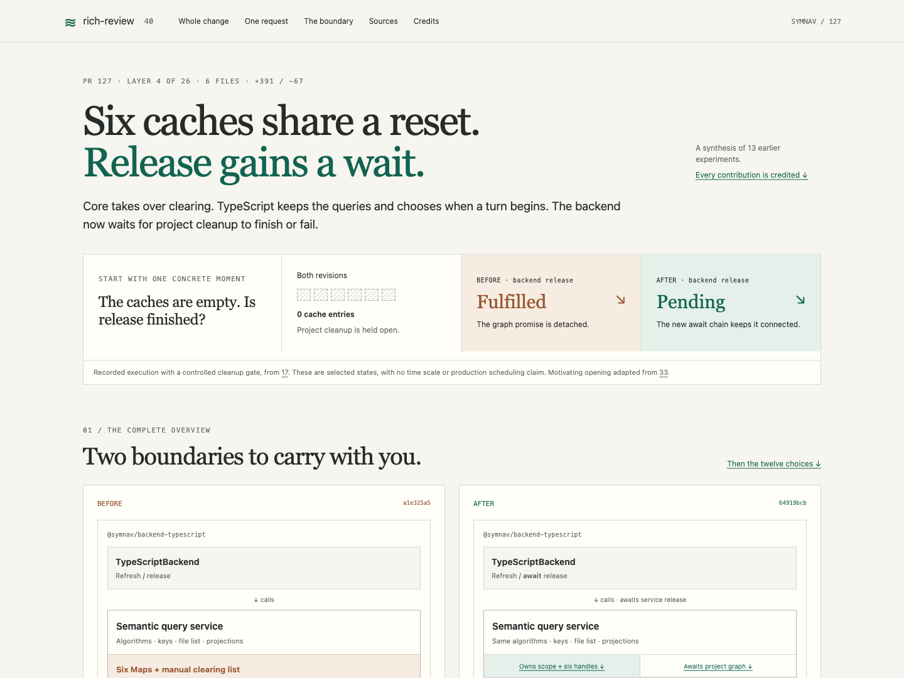 |
About 50 minutes of this run, including predecessor reading, source reconciliation, late additions, implementation, and browser checks. No delegated agents. | The optional decision-by-depth index is the weakest addition: useful for comparison, but redundant with the continuous page's anchors. The full raw observation and coverage tables should stay behind disclosures. Thirteen useful elements still make a long page; requiring every predecessor creates reading cost as well as variety. | README# best-of-synthesis ## Entry point Open [index.html](index.html), or run: ```sh open ~/projects/rich-review-v2/experiments/40-best-of-synthesis/index.html ``` One offline page. No installation or server. JavaScript enables recorded-state selectors, cache inspection, identity matrices, and remembered return positions. The complete overview, mechanisms, contracts, checkpoint tables, and source disclosures also work without JavaScript. ## Kind page ## Subjects pr-127 — Scope semantic caches to one turn. Base `a1e325a5ff979bdfa25babc5554621c8c0f20497` → head `64919bcbcf7fcc8202779b78c5f069b24662bb18`. Six files, +391/−67. No additional PR review. ## Declared choices - Role framing: Learner who should be able to predict reuse, reset, and release completion before inspecting source. - Box lenses: Static package ownership and per-service instance ownership; cache lifetime and the completion/error boundary. - Opening style: A concrete recorded moment: both caches are empty while base backend release has fulfilled and head remains pending. - Shape: Opening → ownership diptych → twelve visible decisions and an explicit stopping point → request, identity, boundary, intent, lookup, and contract mechanisms → source evidence and credits. - Navigation: Continuous reading, question exits, linked diagram boxes, native source disclosures, exact return position/focus, and an optional decision-by-depth link matrix. No autoplay. - Trust posture: Check predecessor claims against the supplied patch and pinned source. Distinguish the PR's declared awaited barrier, its stated clear-first reason, and the unexplained reconciliation with the plan's timing/failure promise. No correctness verdict or inferred author motive. - Persona: The maintainer returning to a change they did not write. Basic TypeScript familiarity assumed; cache identities and cleanup boundaries explained. - Representations used: Ownership diagram, paired recorded runs, eight-stop request tour, pairwise object-identity matrices, before/after contract tables, intent trace, lossy claim-ticket analogy, predict/reveal prompts, numbered source excerpts, and a changed-line coverage map. - Importance rule: Put ownership, reusable cache semantics, and caller-visible completion first. Cover every changed line, while treating hunk assignments as an audit aid rather than proof that all decisions were found. Mark reasons at the stated decision's granularity. - Inputs used (beyond bundle): Philosophy first; the required playbook sections; all 13 finished pr-127 experiments listed below; the assigned worktrees' relevant source, tests, exports, context-command order, architecture plan, and git objects. Read the bundle's PR body, commits, file summary, and complete patch. Overview text bundles, external web sources, and the failed v1 were not used. - Tech: Native HTML/CSS/JavaScript; a Python standard-library generator; frozen local JSON and source text. No package dependencies, network requests, storage, or collected answers. Source recordings are replayed; this experiment runs no symnav build, probe, or test suite. - Built on earlier experiment(s): Read all 13 finished experiments whose declared subjects include pr-127, including the pr-127 portions of multi-subject pages. Every contribution has a local credit beside its use and a row in the page's [credits](index.html#credits). The table below records the selected element, not a measured ranking. | Earlier experiment | Element used | | --- | --- | | [01-unconstrained-a](../01-unconstrained-a/README.md) | Separate the package implementing a scope from the service owning its instance. | | [04-textbook-chapter](../04-textbook-chapter/README.md) | Predict before revealing the explanation. | | [09-diff-of-intent](../09-diff-of-intent/README.md) | Trace plan, PR disclosure, and implementation separately. | | [10-tour-guide](../10-tour-guide/README.md) | Reuse its exact context-order recording that fills all six stores. | | [17-executable-before-after](../17-executable-before-after/README.md) | Reuse four calls-fixture recordings, including held and rejecting cleanup. | | [20-contract-table](../20-contract-table/README.md) | Show the changed completion contract despite an unchanged backend signature. | | [24-question-driven-nav](../24-question-driven-nav/README.md) | Meaningful question exits with a remembered reading position. | | [26-physical-analogy](../26-physical-analogy/README.md) | A caller's promise survives eviction from the cache drawer. | | [31-method-runbook](../31-method-runbook/README.md) | Extract, rank, render; account for the full delta and map deeper facts to overview decisions. | | [32-kit](../32-kit/README.md) | Native source disclosures, anchors, and backlinks that survive disabled JavaScript. | | [33-pair-one-variable](../33-pair-one-variable/README.md) | Opening B's unfinished-cleanup question, grounded in 17's recording. | | [36-be-weird-a](../36-be-weird-a/README.md) | Reuse its identity observations as two compact matrices: cached object versus service return. | | [37-be-weird-b](../37-be-weird-b/README.md) | Move between decisions while keeping the same depth, or deepen one decision. | The [census](evidence/review-census.json) records inspected entry/README hashes and the cutoff. Experiments 36 and 37 finished during this run and were incorporated. Experiment 15 explains pr-131 despite mentioning pr-127 in its subject-selection notes. Collection-wide critiques 38 and 41 declare no PR subject; their READMEs and briefs were checked for scope, and their critiques were not used. Unfinished reader-check experiments and stack-only artifacts are outside this census. ## What I tried Composed one explanation around two boundaries, then gave each predecessor a specific job. Read their handoffs and pr-127 teaching content, plus relevant capture scripts and source/method material. Borrowed data from 10, 17, and 36; rebuilt the UI and prose. Bundled original capture code and provenance instead of requiring the original servers. Reconciled contradictory accounts before composing the decisions. The PR does disclose the await chain. Clear-first ordering has a reason; changing backend completion under the plan's parity wording has no separate located reconciliation. The five old service tests and their helper tail are byte-identical, rather than modified to await release. Cached identity and fresh public projection are separate observations. Replaced an early repeated-identity table with 36's matrix. Kept 37's navigation optional so it does not become another mandatory explanation. Corrected the project graph's package placement in the diagram, a double anchor offset, a 320-pixel fixture overflow, and a dialog-close handler that pulled keyboard focus away from the source destination. No full approach was abandoned. Verification: [static checks](verification.json) validate 22 frozen source documents, all 32 displayed excerpts, every changed line across 15 hunks, local links, and the authored parent map. [Browser checks](browser-verification.json) exercised all twelve decision return paths, eight request stops, twelve cache dialogs, twenty boundary checkpoints, twelve identity selections, depth navigation, direct source fragments, and 320/390/768/1440-pixel layouts. Disabled-JavaScript reading was also checked. Six [screenshots](screenshots/01-opening.png) record the result. Both symnav worktrees remain free of tracked changes. These are source-integrity and interface checks, not evidence of reader comprehension or symnav correctness. The page identifies each recording's controlled seam and fixture. There is no new runtime, performance, daemon-concurrency, or full-CLI parity result here. [Recording copy hashes](evidence/reuse-manifest.json) distinguish reused data from new work. Rebuild from the bundled evidence with `python3 build.py`; check the artifact with `python3 verify.py`, from this folder. `build.py --capture` additionally requires the original prepared worktrees and predecessor recordings. `browser-check.js` is the function executed through the available Playwright browser tool, not a standalone Node command. ## What I would drop The optional decision-by-depth index is the weakest addition: useful for comparison, but redundant with the continuous page's anchors. The full raw observation and coverage tables should stay behind disclosures. Thirteen useful elements still make a long page; requiring every predecessor creates reading cost as well as variety. ## What I would do next Ask an unfamiliar maintainer to explain the change after stopping at the complete overview, then predict a reference-return identity and a held cleanup outcome. Compare whether the matrices correct a misconception that the simpler request counters leave behind. ## Time spent About 50 minutes of this run, including predecessor reading, source reconciliation, late additions, implementation, and browser checks. No delegated agents. |
| 39 | fresh-reader-check attempt 1: codex |
critique | None assigned as a new review page. This critiques the finished experiments whose pages cover `pr-127`, `pr-131`, `pr-148`, `stack`, and the adjacent #146/#147 pair. | Role framing: A reader giving a teach-back account, then checking it against the change. · Box lenses: The boundary between page claims and independent source; the boundary a test observes. The table preserves each page’s account of package, process and state ownership. · Opening style: A small, explicitly simplified sequence showing page reading, sealed notes and source comparison. · Shape: One four-column table. Every learned decision, miss and descent finding is visible before opening evidence. · Navigation: Experiment order, row anchors, links to pages and source excerpts, and return links from evidence to the relevant rows. · Trust posture: Preserve the initial account before correction. Distinguish recall misses, source corrections, declared limits and demonstrated surprises. Recorded intent is not an invented rationale or a correctness verdict. · Persona: One technically capable outsider reading sequentially. Earlier pages can teach later ones; this is not a controlled trial with independent fresh readers. · Representations used: Rendered page text, one comparison table, a small sequence diagram, captured navigation changes, pinned source excerpts and a screenshot. · Importance rule: Attend to ownership, failure timing, recovery, test stimulus and the provenance of reasons. Do not turn omissions into scores, a leaderboard or an answer key. · Inputs used (beyond bundle): Sibling `inputs/pr-127`, `inputs/pr-131` and `inputs/pr-148` bundles; read-only base/head source and git objects; the policy and follow-up plans; earlier pages and the entry/kind/subject portions of their READMEs; experiment 21’s narration transcript and player. #146/#147 diffs were generated from the supplied stack commit endpoints. No external service was needed. · Tech: Python standard library generates static HTML/CSS and evidence from JSON records. Playwright reads pages and checks the delivered artifact. No browser framework or runtime dependency. · Built on earlier experiment(s): **01–33 and 35 were read as the objects of critique.** Their implementations were not reused. Embedded claims and test reports were reader input; separate builder audits, validation reports, extraction inventories and another critique were not used to seed recall. The actual page-only record is retained rather than replaced with a synthesized consensus. | 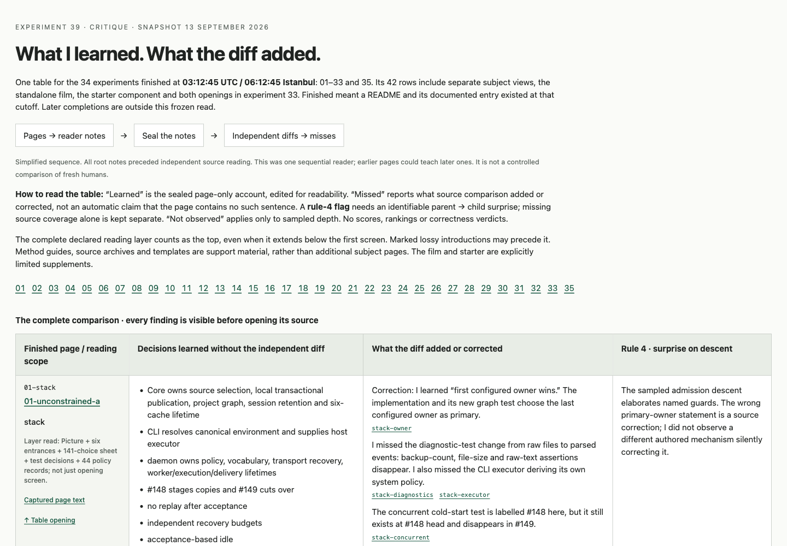 |
About 50 minutes wall-clock, including the page-only pass, source comparison, table assembly and checks. | The repeated descriptions of shared omissions make the table long. A future presentation could shorten those cells to named findings, provided each row still gives a concrete account of what its reader missed. The duplicate text/JSON captures are useful for this audit but do not both need to be prominent in the reading interface. | README# fresh-reader-check ## Entry point Open [index.html](index.html). It is one comparison table, works offline, and needs no installation or server. ```sh open ~/projects/rich-review-v2/experiments/39-fresh-reader-check/index.html ``` The table links to the original pages, captured reading surfaces, and [source witnesses](evidence.html). A [screenshot](screenshots/table.png) shows its opening. ## Kind critique ## Subjects None assigned as a new review page. This critiques the finished experiments whose pages cover `pr-127`, `pr-131`, `pr-148`, `stack`, and the adjacent #146/#147 pair. Scope was frozen at **2026-09-13 03:12:45 UTC / 06:12:45 Istanbul**. Finished meant a README and its documented explanatory entry point existed. That included **01–33 and 35**, or 34 experiments. The table has 42 rows after separating subject views and documented variants. 34, 36, 37 and 38 were unfinished at the cutoff; this experiment excludes itself. Later completion does not silently expand the cohort. Method guides, source archives, templates and embedded-player support files are not additional subject reviews. The standalone video and kit starter are included as explicitly limited supplements. ## Declared choices - Role framing: A reader giving a teach-back account, then checking it against the change. - Box lenses: The boundary between page claims and independent source; the boundary a test observes. The table preserves each page’s account of package, process and state ownership. - Opening style: A small, explicitly simplified sequence showing page reading, sealed notes and source comparison. - Shape: One four-column table. Every learned decision, miss and descent finding is visible before opening evidence. - Navigation: Experiment order, row anchors, links to pages and source excerpts, and return links from evidence to the relevant rows. - Trust posture: Preserve the initial account before correction. Distinguish recall misses, source corrections, declared limits and demonstrated surprises. Recorded intent is not an invented rationale or a correctness verdict. - Persona: One technically capable outsider reading sequentially. Earlier pages can teach later ones; this is not a controlled trial with independent fresh readers. - Representations used: Rendered page text, one comparison table, a small sequence diagram, captured navigation changes, pinned source excerpts and a screenshot. - Importance rule: Attend to ownership, failure timing, recovery, test stimulus and the provenance of reasons. Do not turn omissions into scores, a leaderboard or an answer key. - Inputs used (beyond bundle): Sibling `inputs/pr-127`, `inputs/pr-131` and `inputs/pr-148` bundles; read-only base/head source and git objects; the policy and follow-up plans; earlier pages and the entry/kind/subject portions of their READMEs; experiment 21’s narration transcript and player. #146/#147 diffs were generated from the supplied stack commit endpoints. No external service was needed. - Tech: Python standard library generates static HTML/CSS and evidence from JSON records. Playwright reads pages and checks the delivered artifact. No browser framework or runtime dependency. - Built on earlier experiment(s): **01–33 and 35 were read as the objects of critique.** Their implementations were not reused. Embedded claims and test reports were reader input; separate builder audits, validation reports, extraction inventories and another critique were not used to seed recall. The actual page-only record is retained rather than replaced with a synthesized consensus. ## What I tried I read the philosophy first, then the requested playbook material. I collected the finished-page census before reading the pages, then wrote all root recall notes before opening independent diffs. Alternating page/diff/page would have let the first diff teach the later readings. Deferring the diffs reduces that contamination, although reading earlier pages still creates it. The [sealed notes](blind-notes.json) contain 42 accounts. The [phase seal](blind-phase-seal.json) records the cutoff between reading and source checking, including late page-only descents and the limitations. [Editorial notes](editorial-notes.json) make compressed wording readable without changing that sealed file. [Comparisons](comparisons.json) contain the later corrections. I counted the whole declared complete layer as the top, including long decision sheets below the first screen. I read rendered text and sampled mechanisms; I checked the canvas outline visually. The video was read through its narration and player. I did not treat off-camera canvas DOM content as independently visited rooms. Authored inline code could be part of a page’s explanation; one registry evidence excerpt in experiment 12 was opened after every root note had already been recorded. These are reasons not to describe this as an unprimed human retention experiment. The independent pass read the small #127 patch in full. For the wide patches I used changed-file and changed-line inventories, contextual source reads, copy-aware comparison for #148, and inspection of changed assertions. The adjacent pair uses its own endpoints rather than the final renamed classes. This is a bounded source comparison, not an exhaustive extraction of every decision in the stack. “No additional decision found” reports that reading, not a proof of completeness. I kept a missed source fact separate from a demonstrated rule-4 violation. The two flags have explicit parent/child witnesses: experiment 04 changes its disclosure claim below the overview; experiment 27 introduces loss of a disk-test premise below its fixture summary. Other rows retain their omissions and corrections without claiming an unvisited route was observed. [Validation](validation.json) records one table, 42 data rows, 22 evidence sections, 370 checked local links with no broken targets, and an unchanged notes hash. Browser checks covered evidence expansion, return navigation and horizontal table scrolling on a narrow screen. Censused files were unchanged at the final recheck. No symnav files were modified and no symnav test suite was run for this critique. ## What I would drop The repeated descriptions of shared omissions make the table long. A future presentation could shorten those cells to named findings, provided each row still gives a concrete account of what its reader missed. The duplicate text/JSON captures are useful for this audit but do not both need to be prominent in the reading interface. I would drop any attempt to infer which opening teaches better from this sequence: the second reading is already contaminated. I would also drop removed-test-title counts as evidence of equivalent or lost coverage; the changed premise and assertion are the useful units. ## What I would do next Use a separate reader for each frozen page, then compare teach-back accounts with the same source witnesses. Repeat against later-finished pages as a new, explicitly dated cohort. ## Time spent About 50 minutes wall-clock, including the page-only pass, source comparison, table assembly and checks. |
| 38 | critique attempt 1: claude-opus → attempt 2: claude-opus → attempt 3: codex |
critique | None assigned. The subject is all 37 finished experiments, 01–37, at 2026-09-13 03:35:00 UTC. Targeted checks of #127 and #148 resolve claims made by those experiments. | Role framing: A reader deciding which explanation ideas deserve the next experiment. · Box lenses: Package, process, ownership, and lifetime boundaries inside the explanations; source, authored claim, working interface, and human understanding in the critique. · Opening style: Seven findings with missing/repeated patterns and promising alternatives, followed by an explicitly approximate evidence map. · Shape: Complete findings → supporting comparisons → individual experiment notes → inspection receipts. · Navigation: Read the critique linearly or follow numbered experiment links into the ledger and original artifact. Supporting notes link back. · Trust posture: Distinguish my observations, other authors' reported checks, and editorial inference. Check a concrete rationale disagreement against pinned inputs; do not infer teaching success from working controls. · Persona: The person choosing the next round of rich-review work. · Representations used: Markdown prose, comparison tables, an approximate text diagram, and linked browser captures as evidence. · Importance rule: Prioritize what changes a human's ability to understand, predict, and question a decision. Treat completeness and reading cost together; do not rank by decision counts, graph reach, or visual polish. · Inputs used (beyond bundle): Philosophy and playbook; all 37 READMEs and delivered entry pages; selected mechanisms and authored content; the 31 runbook, 32 kit contract, 33 pair contract, 36 method, 21 narration, and 22 archived-attempt note; queue completion records; the #148 policy file from its pinned Git revision. · Tech: Markdown; Python for scope, fingerprints, and link checks; isolated Chromium/Playwright file inspection. No application, symnav build, or new symnav test run. · Built on earlier experiment(s): All 01–37 were read and critiqued. Their contributions are individually recorded in [experiment-ledger.md](experiment-ledger.md). No earlier page code or layout was reused. | About 35 minutes of this review run, including reading and incorporating experiments 34–37 as they finished. Earlier runner attempts are outside that estimate. | The large rendered-text and browser-control inventories do not belong in the reading path. They remain inspection receipts, not measures of comprehension. This critique also cannot justify a numerical winner or a standard page shell. | README# critique ## Entry point [critique.md](critique.md) — open this Markdown file. No server or page. ## Kind critique ## Subjects None assigned. The subject is all 37 finished experiments, 01–37, at 2026-09-13 03:35:00 UTC. Targeted checks of #127 and #148 resolve claims made by those experiments. ## Declared choices - Role framing: A reader deciding which explanation ideas deserve the next experiment. - Box lenses: Package, process, ownership, and lifetime boundaries inside the explanations; source, authored claim, working interface, and human understanding in the critique. - Opening style: Seven findings with missing/repeated patterns and promising alternatives, followed by an explicitly approximate evidence map. - Shape: Complete findings → supporting comparisons → individual experiment notes → inspection receipts. - Navigation: Read the critique linearly or follow numbered experiment links into the ledger and original artifact. Supporting notes link back. - Trust posture: Distinguish my observations, other authors' reported checks, and editorial inference. Check a concrete rationale disagreement against pinned inputs; do not infer teaching success from working controls. - Persona: The person choosing the next round of rich-review work. - Representations used: Markdown prose, comparison tables, an approximate text diagram, and linked browser captures as evidence. - Importance rule: Prioritize what changes a human's ability to understand, predict, and question a decision. Treat completeness and reading cost together; do not rank by decision counts, graph reach, or visual polish. - Inputs used (beyond bundle): Philosophy and playbook; all 37 READMEs and delivered entry pages; selected mechanisms and authored content; the 31 runbook, 32 kit contract, 33 pair contract, 36 method, 21 narration, and 22 archived-attempt note; queue completion records; the #148 policy file from its pinned Git revision. - Tech: Markdown; Python for scope, fingerprints, and link checks; isolated Chromium/Playwright file inspection. No application, symnav build, or new symnav test run. - Built on earlier experiment(s): All 01–37 were read and critiqued. Their contributions are individually recorded in [experiment-ledger.md](experiment-ledger.md). No earlier page code or layout was reused. ## What I tried Read the handoffs, inspected every delivered opening and its organization, then sampled deeper routes that could substantiate the critique. Compared the experiments against philosophy.md and all 14 hard rules. A broad concern about long tops became a more specific comparison after inspecting compact 13/23; late completions 36/37 added distinct representation and navigation ideas. Checked the policy-testing attribution and release-disclosure disagreement against pinned records. Preserved the distinction between recorded timing, a specific reason, and an unresolved rationale. No completed approach was abandoned. [Review notes](review-notes.md) state reading depth and limits; [review-scope.json](review-scope.json) fixes the cutoff. [verification.json](verification.json) records the handoff checks. ## What I would drop The large rendered-text and browser-control inventories do not belong in the reading path. They remain inspection receipts, not measures of comprehension. This critique also cannot justify a numerical winner or a standard page shell. ## What I would do next Use the controlled pair with unfamiliar human readers, and compare compact versus full stopping layers with an unchanged, reconciled decision ledger. Preserve causal representations and their evidence boundaries while those trials distinguish presentation choices. ## Time spent About 35 minutes of this review run, including reading and incorporating experiments 34–37 as they finished. Earlier runner attempts are outside that estimate. |
|
| 37 | be-weird-b attempt 1: codex |
page | pr-127` — Scope semantic caches to one turn, layer 4 of the 26-PR daemon architecture refactor. No additional PRs. | Role framing: Learner examining ownership and caller-visible boundaries. · Box lenses: Static structure (packages and modules) + lifecycle (cache turns, reusable handles, pending release). The diagrams distinguish the core class’s source location from the TypeScript service that holds its instance. · Opening style: A briefly marked, lossy drawer metaphor beside a before/after package diagram. The changed release-completion boundary appears before the navigation begins. · Shape: One complete surface containing twelve decisions and their reasons; four depths repeat those facts with more fidelity: Shape, Choice, Mechanism, Evidence. · Navigation: **Orthogonal addressing, presented as a reading loom.** Its address is `(decision, depth)`. Moving along one axis preserves the other. From 06 × Mechanism, moving down then right or right then down reaches 07 × Evidence. This fixed coordinate system is the experiment’s addition to section 5: navigation is controlled by two independent operations, with neither arbitrary related-node links nor a parent/child route. There is no semantic zoom. The ordinary unroll is a fallback, not the principal navigation. · Trust posture: Read-only explanation with conservative rationale attribution and comparison of stated intent to shipped boundaries. Nine reasons are marked stated; three specific reasons were not found. No verdict, scoring, comments, or response storage. · Persona: A teammate who knows symnav but not its semantic-cache implementation. · Representations used: Package and object-ownership diagrams, lifecycle-order diagrams, before/after comparisons, key/value and test-inventory tables, numbered mechanism steps, exact source excerpts with revision and line numbers. Diagrams of time-like order are marked schematic; there is no running simulation. · Importance rule: Ownership first, then preservation contracts and lifecycle boundaries, then API and test choices. The caller-visible release timing/rejection change is additionally pulled above the loom. Test changes receive a full thread with the same access to depth as architectural changes. · Inputs used (beyond bundle): Read-only base/head source at `a1e325a5ff979bdfa25babc5554621c8c0f20497` and `64919bcbcf7fcc8202779b78c5f069b24662bb18`; head contributor guidance and architecture spec; focused execution of the two changed test suites. [research-notes.md](research-notes.md) records the extraction, rationale search boundary, and surface-to-evidence mapping. The overview bundles and the other three subject bundles were not used. · Tech: Plain HTML, CSS, JavaScript, inline SVG, system fonts. A Python script captures and verifies source snapshots; isolated Chromium/Playwright was used for browser checks. Built with Codex; no subagents were used. · Built on earlier experiment(s): none. Earlier experiment folders were intentionally left unread. |  |
Approximately 25 minutes, including source reading, implementation, browser inspection, focused test execution, and documentation. No human comprehension test was performed. | The vertically rotated depth names are slow to scan. Repeating the entire selected summary and reason in the pane preserves context but consumes substantial space. On a phone the loom becomes an inspector above a list, and much of its spatial benefit disappears. Twelve complete surface threads may be too much even for this six-file change. | README# be-weird-b ## Entry point Open [index.html](index.html) directly, or run: ```sh open ~/projects/rich-review-v2/experiments/37-be-weird-b/index.html ``` No server, installation, network connection, or worktree is needed to read it. JavaScript must be enabled. The evidence is embedded locally. The page is called **The reading loom**. Select a crossing between a decision and a depth. Use the independent decision/depth arrow controls, or use arrow keys while a crossing has focus. **Surface** returns to the same decision’s top layer; **Find this thread** locates its row. Browser Back and URL fragments restore both coordinates. **Unroll the full review** provides linear reading and printing, then returns to the same crossing. ## Kind page ## Subjects `pr-127` — Scope semantic caches to one turn, layer 4 of the 26-PR daemon architecture refactor. No additional PRs. ## Declared choices - Role framing: Learner examining ownership and caller-visible boundaries. - Box lenses: Static structure (packages and modules) + lifecycle (cache turns, reusable handles, pending release). The diagrams distinguish the core class’s source location from the TypeScript service that holds its instance. - Opening style: A briefly marked, lossy drawer metaphor beside a before/after package diagram. The changed release-completion boundary appears before the navigation begins. - Shape: One complete surface containing twelve decisions and their reasons; four depths repeat those facts with more fidelity: Shape, Choice, Mechanism, Evidence. - Navigation: **Orthogonal addressing, presented as a reading loom.** Its address is `(decision, depth)`. Moving along one axis preserves the other. From 06 × Mechanism, moving down then right or right then down reaches 07 × Evidence. This fixed coordinate system is the experiment’s addition to section 5: navigation is controlled by two independent operations, with neither arbitrary related-node links nor a parent/child route. There is no semantic zoom. The ordinary unroll is a fallback, not the principal navigation. - Trust posture: Read-only explanation with conservative rationale attribution and comparison of stated intent to shipped boundaries. Nine reasons are marked stated; three specific reasons were not found. No verdict, scoring, comments, or response storage. - Persona: A teammate who knows symnav but not its semantic-cache implementation. - Representations used: Package and object-ownership diagrams, lifecycle-order diagrams, before/after comparisons, key/value and test-inventory tables, numbered mechanism steps, exact source excerpts with revision and line numbers. Diagrams of time-like order are marked schematic; there is no running simulation. - Importance rule: Ownership first, then preservation contracts and lifecycle boundaries, then API and test choices. The caller-visible release timing/rejection change is additionally pulled above the loom. Test changes receive a full thread with the same access to depth as architectural changes. - Inputs used (beyond bundle): Read-only base/head source at `a1e325a5ff979bdfa25babc5554621c8c0f20497` and `64919bcbcf7fcc8202779b78c5f069b24662bb18`; head contributor guidance and architecture spec; focused execution of the two changed test suites. [research-notes.md](research-notes.md) records the extraction, rationale search boundary, and surface-to-evidence mapping. The overview bundles and the other three subject bundles were not used. - Tech: Plain HTML, CSS, JavaScript, inline SVG, system fonts. A Python script captures and verifies source snapshots; isolated Chromium/Playwright was used for browser checks. Built with Codex; no subagents were used. - Built on earlier experiment(s): none. Earlier experiment folders were intentionally left unread. ## What I tried I considered a zipper/folding metaphor before implementation and discarded it because the navigation reduced to an expanding hierarchy. The loom keeps its two coordinates independent and lets a reader compare different decisions at the same depth. No implementation was abandoned halfway. The initial phone layout could enter evidence but required scrolling back to find the surface thread. I added a direct return to the selected row. I also added the unrolled view so the unfamiliar navigation does not become a prerequisite for reading every layer. All 48 crossings were exercised, including preservation of the selected surface contract, keyboard movement, direct fragments, history, and unroll/return. Desktop at 1440px and mobile at 390px had no horizontal page overflow or browser errors; SVG text stayed inside its view boxes. [UI check record](evidence/ui-checks.json), [browser check source](browser-check.js), and [screenshots](screenshots/02-loom.png) are included. Source capture was checked against the actual commits using [capture-evidence.py](capture-evidence.py). The five original service tests and all their helpers remain identical; six service tests and four core tests were added. The focused head run passed all 15 tests across those two files ([raw output](evidence/focused-test-run.txt)). This does not establish end-to-end parity or a correctness verdict. Both symnav worktrees remained clean for tracked files. ## What I would drop The vertically rotated depth names are slow to scan. Repeating the entire selected summary and reason in the pane preserves context but consumes substantial space. On a phone the loom becomes an inspector above a list, and much of its spatial benefit disappears. Twelve complete surface threads may be too much even for this six-file change. ## What I would do next Watch a reader compare release clearing with release completion while holding Mechanism or Evidence fixed. Compare that experience with the same content in ordinary tabs; test whether preserving depth actually helps them keep the distinction in mind. ## Time spent Approximately 25 minutes, including source reading, implementation, browser inspection, focused test execution, and documentation. No human comprehension test was performed. |
| 36 | be-weird-a attempt 1: claude-opus → attempt 2: claude-opus → attempt 3: codex |
page | pr-127 only: **Scope semantic caches to one turn**. | Role framing: Reader of measurements, examining which observations still refer to the same thing. · Box lenses: Static package/module ownership and the lifetime of stored values. The service → core scope ownership move is shown separately from the backend → project release completion boundary. · Opening style: Picture first, with a definition of each pixel and a bounded-fixture caveat. · Shape: One complete stopping layer across sections 01–03: contact sheet, ownership/release picture, and all twelve decision cards. Per-decision mechanism and source evidence sit below it. The opening sentence alone is not claimed to be the complete layer. · Navigation: Linear scrolling; selectable store/interface views; a pixel can compare any pair of observations. Cards and boxes jump to numbered disclosures, each with a return link. Sources open in place and close with Escape. · Trust posture: Measured behavior and recorded reasons kept explicit. Unexplained API/structure choices receive the same card treatment as architectural choices. The artifact teaches without a correctness verdict. · Persona: A teammate who knows symnav but has not worked in its semantic cache implementation. · Representations used: **Pairwise identity contact sheet**, invented for this brief outside section 5’s listed representations. Each pixel is an equality relation between two observations, rather than a node, request, code line, duration or animation frame. Supporting representations are package boxes, a release completion readout, compact decision cards and frozen source excerpts. · Importance rule: Lifetime and completion boundaries first, followed by every associated public API, exception, projection, test and rationale decision. No importance score. · Inputs used (beyond bundle): Actual source and compiled modules from the supplied pr-127 base/head worktrees; contributor guide; daemon architecture spec; core ProjectGraph and concrete TypeScript project cleanup; focused existing test runs; an in-memory TypeScript fixture; controlled failure/release probes; isolated Playwright browser checks. From the bundle, used pr.json (body and all six commits), diff.patch, files.txt and repo-rules.md. Did not use the precomputed overviews or other subjects’ bundles. · Tech: Plain HTML, CSS, SVG and JavaScript; a Node `.mjs` capture script importing existing built worktree modules. No frontend dependencies or external assets. Browser checks used the available Playwright tool. · Built on earlier experiment(s): none. Earlier experiments were left unread; no content or implementation was reused. |  |
Approximately 35 minutes of active work, including source inspection, measurement, implementation and browser checks. Harness: Codex. | Some of the empty area between stores in the all-six view. It makes isolation visible, but consumes a lot of space on a phone; a single-store print earns its space more consistently. The large opening title could also shrink. | README# be-weird-a ## Entry point Open [index.html](index.html), or run: ```sh open ~/projects/rich-review-v2/experiments/36-be-weird-a/index.html ``` It works directly from the folder. No server, install, network connection or live worktree is required to read it. JavaScript must be enabled. ## Kind page The page is accompanied by a reproducible measurement script and [representation method](METHOD.md). ## Subjects pr-127 only: **Scope semantic caches to one turn**. Base: `a1e325a5ff979bdfa25babc5554621c8c0f20497` (#126). Head: `64919bcbcf7fcc8202779b78c5f069b24662bb18` (#127). ## Declared choices - Role framing: Reader of measurements, examining which observations still refer to the same thing. - Box lenses: Static package/module ownership and the lifetime of stored values. The service → core scope ownership move is shown separately from the backend → project release completion boundary. - Opening style: Picture first, with a definition of each pixel and a bounded-fixture caveat. - Shape: One complete stopping layer across sections 01–03: contact sheet, ownership/release picture, and all twelve decision cards. Per-decision mechanism and source evidence sit below it. The opening sentence alone is not claimed to be the complete layer. - Navigation: Linear scrolling; selectable store/interface views; a pixel can compare any pair of observations. Cards and boxes jump to numbered disclosures, each with a return link. Sources open in place and close with Escape. - Trust posture: Measured behavior and recorded reasons kept explicit. Unexplained API/structure choices receive the same card treatment as architectural choices. The artifact teaches without a correctness verdict. - Persona: A teammate who knows symnav but has not worked in its semantic cache implementation. - Representations used: **Pairwise identity contact sheet**, invented for this brief outside section 5’s listed representations. Each pixel is an equality relation between two observations, rather than a node, request, code line, duration or animation frame. Supporting representations are package boxes, a release completion readout, compact decision cards and frozen source excerpts. - Importance rule: Lifetime and completion boundaries first, followed by every associated public API, exception, projection, test and rationale decision. No importance score. - Inputs used (beyond bundle): Actual source and compiled modules from the supplied pr-127 base/head worktrees; contributor guide; daemon architecture spec; core ProjectGraph and concrete TypeScript project cleanup; focused existing test runs; an in-memory TypeScript fixture; controlled failure/release probes; isolated Playwright browser checks. From the bundle, used pr.json (body and all six commits), diff.patch, files.txt and repo-rules.md. Did not use the precomputed overviews or other subjects’ bundles. - Tech: Plain HTML, CSS, SVG and JavaScript; a Node `.mjs` capture script importing existing built worktree modules. No frontend dependencies or external assets. Browser checks used the available Playwright tool. - Built on earlier experiment(s): none. Earlier experiments were left unread; no content or implementation was reused. ## What I tried I considered a literal “cache loom” and a replay before building, but both would fit existing menu entries. I instead turned an observation sequence into a square relation: ink means exact object reuse. Real base/head probes produce all six stores’ prints. The stored-value plots match. Switching to public service returns removes off-diagonal ink for reference promises and position node arrays even though their locations remain cached. Keeping both lenses makes that distinction visible. The matrix alone cannot carry the release-completion change: both versions clear the old entries, so the print remains the same. I kept the representation and added a separate completion readout. This limit is documented in METHOD.md. The deferred graph is explicitly injected; concrete TypeScript cleanup is synchronous here. Visual checks caught crowded all-store labels and, with every detail open at 320 pixels, unbreakable code in tables. Both were corrected. No approach was abandoned after implementation. ## What I would drop Some of the empty area between stores in the all-six view. It makes isolation visible, but consumes a lot of space on a phone; a single-store print earns its space more consistently. The large opening title could also shrink. ## What I would do next Try this relation on a change that deliberately alters sharing between cache families, and see whether a reader can predict the identity boundaries from the print without consulting source. ## Time spent Approximately 35 minutes of active work, including source inspection, measurement, implementation and browser checks. Harness: Codex. ## Evidence and limits The six-file diff maps to visible decisions in [decision-coverage.md](evidence/decision-coverage.md). Reasons are marked stated only when supported by the PR, plan, commits or contributor guide. Composition, the precise scope API, the narrowed files argument, the historical reprojection rationale and the release/parity reconciliation have no specific explanation in the inspected inputs. No implementing conversation was supplied. The measurements cover one in-memory source file and controlled boundary conditions. Identity comparisons are within each build; matching IDs or colors across builds do not mean shared objects. The service-return lens does not measure backend wrapper promises. Release observations use an injected deferred/rejecting graph and are not daemon traces or claims about changed end-to-end output. Both worktrees built. Existing focused tests passed: **15 head tests and 5 base tests**. Browser checks exercised the two lenses, keyboard selection, details, source dialogs, anchors and responsive layouts with no remaining overflow or page errors. Full logs and the bounded validation scope are in [verification.md](evidence/verification.md). No symnav source or branch was changed. To regenerate observations from the supplied, built worktrees: ```sh cd ~/projects/rich-review-v2/experiments/36-be-weird-a node scripts/capture.mjs ``` This updates `data.js` and the frozen observation/source records under `evidence/`. It does not rerun the existing tests or browser checks. The folder includes the received [brief](brief.md), [raw observations](evidence/observations.json), [frozen sources with hashes](evidence/sources.json), the [capture script](scripts/capture.mjs), and [screenshots](screenshots/01-contact-sheet.png). The page stores no comments, verdicts or review state. |
| 35 | future-self attempt 1: codex |
page | pr-148 — Own daemon mechanisms behind DaemonClient. | Role framing: The author recovering decisions before making another change. Preserve recorded reasons and the places where a reason could not be recovered. · Box lenses: Static package/module ownership and runtime process/thread topology. The map distinguishes the newly staged package graph from the CLI compatibility graph that still carries the shipped invocation. · Opening style: A before/after ownership picture, introduced by “The caller hadn't moved yet.” The intended intuition is that an intermediate extraction state can be remembered incorrectly as the finished migration. · Shape: A decision notebook with four chapters and 20 expandable records. Each visible record face carries its choice and reason state; descent adds a mechanism table, exact source wording, and witnesses for the same facts. · Navigation: Linear reading; return cues for likely future edits; clickable diagram boxes; native expandable records; source links with line anchors and a return to the originating record; a searchable index of all 153 changed paths. · Trust posture: Reasons are quoted from the PR or specs. Eleven records have a stated source reason; nine identify a specific missing reason. A general extraction requirement is not treated as an explanation for every changed test observation. No correctness verdict, approval, or comment collection. · Persona: The original author, six months later. The “when you return” cues are marked as editorial prompts, not reconstructed author statements. · Representations used: Ownership diptych; runtime chain; five-part ordering strip; decision records; preserved quotations; mechanism and before/after tables; illustrative routing and idle-lifetime models; immutable source witnesses and a complete path index. · Importance rule: Put the decisions most likely to be misremembered first: staging versus consumer adoption, order and replay consequences, and preserved versus deferred behavior. Give removed or narrowed test evidence and unexplained setup changes their own records. · Inputs used (beyond bundle): Pinned Git source and test files from both supplied revisions; the unchanged CLI dispatcher to establish the active consumer path; the CLI output codec to identify the package-local copy; the head daemon functional, architecture, and follow-up specs; commit/path history; worktree contributor and meta-test guides. From the bundle, used `pr.json`, the full patch, `files.txt`, and repository rules. The overview files were inspected briefly but contain headings without usable symbol output, so they did not support the explanation. No implementing-author transcript was supplied or inferred. · Tech: Static HTML, CSS, and vanilla JavaScript. Python standard-library build script generates the page and line-addressed evidence. All reading interactions are local and transient; there is no storage or network code. · Built on earlier experiment(s): none. Earlier experiment contents were ignored. No page, code, or analysis was reused from them. |  |
About 30 minutes, using Codex. Most effort went into the base/head and test-evidence audit, then offline page construction and browser checks. | The five-part ordering strip contributes less than the return cues and the two ownership pictures. It is the first candidate to remove. The complete source archive is useful for future retrieval but heavy; the full lockfile could become a plain download without losing explanatory value. | README# future-self ## Entry point Open [index.html](index.html), or on this Mac: ```sh open /Users/moyaseen/projects/rich-review-v2/experiments/35-future-self/index.html ``` The page and its 239 pinned source pages work directly from disk. No server, installation, network, or original worktree is needed to read them. Start with the ownership map, choose a reason for returning, or read the 20 decision records in order. ## Kind page ## Subjects pr-148 — Own daemon mechanisms behind DaemonClient. Base: `ba53c8e1662fd86d198b95321c90d9c9bef10184`. Head: `20838f8dbf413e04767543eb2380d0d114da6c60`. No additional PR was used as a subject; later consumer adoption is not assumed. ## Declared choices - Role framing: The author recovering decisions before making another change. Preserve recorded reasons and the places where a reason could not be recovered. - Box lenses: Static package/module ownership and runtime process/thread topology. The map distinguishes the newly staged package graph from the CLI compatibility graph that still carries the shipped invocation. - Opening style: A before/after ownership picture, introduced by “The caller hadn't moved yet.” The intended intuition is that an intermediate extraction state can be remembered incorrectly as the finished migration. - Shape: A decision notebook with four chapters and 20 expandable records. Each visible record face carries its choice and reason state; descent adds a mechanism table, exact source wording, and witnesses for the same facts. - Navigation: Linear reading; return cues for likely future edits; clickable diagram boxes; native expandable records; source links with line anchors and a return to the originating record; a searchable index of all 153 changed paths. - Trust posture: Reasons are quoted from the PR or specs. Eleven records have a stated source reason; nine identify a specific missing reason. A general extraction requirement is not treated as an explanation for every changed test observation. No correctness verdict, approval, or comment collection. - Persona: The original author, six months later. The “when you return” cues are marked as editorial prompts, not reconstructed author statements. - Representations used: Ownership diptych; runtime chain; five-part ordering strip; decision records; preserved quotations; mechanism and before/after tables; illustrative routing and idle-lifetime models; immutable source witnesses and a complete path index. - Importance rule: Put the decisions most likely to be misremembered first: staging versus consumer adoption, order and replay consequences, and preserved versus deferred behavior. Give removed or narrowed test evidence and unexplained setup changes their own records. - Inputs used (beyond bundle): Pinned Git source and test files from both supplied revisions; the unchanged CLI dispatcher to establish the active consumer path; the CLI output codec to identify the package-local copy; the head daemon functional, architecture, and follow-up specs; commit/path history; worktree contributor and meta-test guides. From the bundle, used `pr.json`, the full patch, `files.txt`, and repository rules. The overview files were inspected briefly but contain headings without usable symbol output, so they did not support the explanation. No implementing-author transcript was supplied or inferred. - Tech: Static HTML, CSS, and vanilla JavaScript. Python standard-library build script generates the page and line-addressed evidence. All reading interactions are local and transient; there is no storage or network code. - Built on earlier experiment(s): none. Earlier experiment contents were ignored. No page, code, or analysis was reused from them. ## What I tried Made the durable unit a choice plus its recovered reason, with a cue for the next time the author might reconsider it. The opening preserves the staging state instead of presenting the eventual architecture as already active. The source audit added separate records for the temporary test export removal, deleted CLI entry tests, narrower worker/CLI integration evidence, Windows cleanup expectations, and serial test setup. An initial all-pairs textual similarity scan of mechanism copies was too slow and was stopped. I switched to Git's rename mappings and direct comparisons of the corresponding CLI and package files. Those comparisons also exposed the package-local spool codec and the additional client composition seams. No page approach was abandoned midway. The two interactive models are explicitly illustrative. The routing model makes skipped observations visible; the idle model separates the acceptance deadline preserved in this PR from the completion-based reset recorded as a follow-up. Neither executes symnav. ## What I would drop The five-part ordering strip contributes less than the return cues and the two ownership pictures. It is the first candidate to remove. The complete source archive is useful for future retrieval but heavy; the full lockfile could become a plain download without losing explanatory value. ## What I would do next Use an actual implementing-author transcript, if available, to recover the missing reasons without changing the observed decisions. Give a returning author one concrete edit task and see whether the notebook gets them to the relevant reason and source. ## Time spent About 30 minutes, using Codex. Most effort went into the base/head and test-evidence audit, then offline page construction and browser checks. ## Verification and limits See [verification.md](verification.md). Static checks covered the 240 generated HTML pages, source anchors, complete changed-file mapping, and byte equality of the archived patch with the pinned Git diff. Chromium checks covered desktop/mobile layout, keyboard expansion, source-and-back navigation, both illustrative models, and file filtering. No page JavaScript errors or horizontal document overflow were observed at the checked sizes. The symnav tests are inspected evidence, not a reported test run. Neither symnav worktree's source was modified. “Unexplained” is scoped to the inspected PR body, empty commit bodies, and plans; it is not a claim that the author never had a reason. The inventory accounts for changed paths, not an automated proof of exhaustive intent. To rebuild while the original input/worktree layout exists, run `python3 build.py` here. To check the finished artifact and its pinned patch, run `python3 verify.py`. Editorial content lives in [content.py](content.py); layout in [page.html](page.html), [style.css](style.css), and [app.js](app.js). |
| 34 | inverted-for-experts attempt 1: claude-opus → attempt 2: claude-opus → attempt 3: codex |
page | pr-131 — Route daemon thresholds through centralized policy. | Role framing: An expert inspecting concrete evidence and deciding which mechanisms need explanation. · Box lenses: Threshold ownership, composition, runtime consumers, process/worker boundaries, and the production/test boundary. Mechanisms still reside in `apps/cli`; the existing policy belongs to `packages/daemon`. · Opening style: Two checked-in timeout tests with reversed policy inputs. A small, explicitly simplified ownership sketch supplies early intuition. · Shape: Evidence table with 23 visible decisions in six groups. Every decision has a mechanism view, a stated or unexplained reason, exact excerpts, and access to full source. The complete decision surface includes test changes and unrecorded choices. · Navigation: Linear scrolling; group anchors; search; an unexplained-only filter; links into any explanation; previous/next choice; browser history; line-level source links; Escape/return to the evidence row. The owner map, policy record, and file inventory offer alternate entry points. · Trust posture: Reasons require a source. Five decisions have no specific reason in the inspected records: completion-error provenance, small output fixture translations, transport fixture normalization/directory creation, the retained inert test memory input, and deleted resource-policy cases. · Persona: A maintainer who recognizes code and tests quickly but wants help reconstructing ownership and scope. · Representations used: Compact value strips; verbatim numbered source; base/head diffs; boundary diagrams; a timeout scrubber; a six-step recovery fixture; retry allocation and stop-budget illustrations; a policy table; file-to-decision mapping. · Importance rule: Lead with differences that depend on purpose or scope, then follow bytes, resources, lifecycle, diagnostics, and test seams. Deleted or adjusted tests receive visible entries alongside production choices. · Inputs used (beyond bundle): Both read-only worktrees; exact source and tests; `daemon-policy.ts`, `policy-testing.ts`, `daemon-policy.test.ts`, and `plans/005/daemon-policy.md`; architecture and follow-up specs; local contributor instructions; pinned git identities and scoped plan history. Bundle materials used: `pr.json`, `diff.patch`, `files.txt`, and relevant `repo-rules.md` sections. Philosophy and required playbook sections were read first. · Tech: Static HTML/CSS/JavaScript. Python standard library generates the page and embeds the source archive. Native browser dialogs; no third-party frontend dependencies, remote assets, response collection, or persistent review state. · Built on earlier experiment(s): none. Earlier experiments were ignored. · Assigned angle: evidence first, abstractions on demand. |  |
About 32 minutes, including source inspection, implementation, and browser verification. | Some diagrams for straightforward signal, acknowledgement, and diagnostic wiring repeat their value strips. They satisfy the same interaction pattern but earn less space than the timeout, recovery, memory, and ownership views. I would make those simple explanations smaller after observing actual use. | README# inverted-for-experts ## Entry point Open [index.html](index.html), or run: ```sh open /Users/moyaseen/projects/rich-review-v2/experiments/34-inverted-for-experts/index.html ``` The page works offline from the folder. No server, installation, or build is required. A modern browser is needed for the explanation dialogs; Chromium was tested. All 23 decisions remain readable with JavaScript disabled. ## Kind page ## Subjects pr-131 — Route daemon thresholds through centralized policy. Base `b3a6c4fa5dcf96223765aa147a9e094cd4a51b0e` → head `b100221db48754656328391b878299c5a0bab443`. ## Declared choices - Role framing: An expert inspecting concrete evidence and deciding which mechanisms need explanation. - Box lenses: Threshold ownership, composition, runtime consumers, process/worker boundaries, and the production/test boundary. Mechanisms still reside in `apps/cli`; the existing policy belongs to `packages/daemon`. - Opening style: Two checked-in timeout tests with reversed policy inputs. A small, explicitly simplified ownership sketch supplies early intuition. - Shape: Evidence table with 23 visible decisions in six groups. Every decision has a mechanism view, a stated or unexplained reason, exact excerpts, and access to full source. The complete decision surface includes test changes and unrecorded choices. - Navigation: Linear scrolling; group anchors; search; an unexplained-only filter; links into any explanation; previous/next choice; browser history; line-level source links; Escape/return to the evidence row. The owner map, policy record, and file inventory offer alternate entry points. - Trust posture: Reasons require a source. Five decisions have no specific reason in the inspected records: completion-error provenance, small output fixture translations, transport fixture normalization/directory creation, the retained inert test memory input, and deleted resource-policy cases. - Persona: A maintainer who recognizes code and tests quickly but wants help reconstructing ownership and scope. - Representations used: Compact value strips; verbatim numbered source; base/head diffs; boundary diagrams; a timeout scrubber; a six-step recovery fixture; retry allocation and stop-budget illustrations; a policy table; file-to-decision mapping. - Importance rule: Lead with differences that depend on purpose or scope, then follow bytes, resources, lifecycle, diagnostics, and test seams. Deleted or adjusted tests receive visible entries alongside production choices. - Inputs used (beyond bundle): Both read-only worktrees; exact source and tests; `daemon-policy.ts`, `policy-testing.ts`, `daemon-policy.test.ts`, and `plans/005/daemon-policy.md`; architecture and follow-up specs; local contributor instructions; pinned git identities and scoped plan history. Bundle materials used: `pr.json`, `diff.patch`, `files.txt`, and relevant `repo-rules.md` sections. Philosophy and required playbook sections were read first. - Tech: Static HTML/CSS/JavaScript. Python standard library generates the page and embeds the source archive. Native browser dialogs; no third-party frontend dependencies, remote assets, response collection, or persistent review state. - Built on earlier experiment(s): none. Earlier experiments were ignored. - Assigned angle: evidence first, abstractions on demand. ## What I tried I inverted the representation while retaining a complete decision layer. Readers encounter the supplied values and changed evidence before opening an explanation. The 23 entries account for all 60 changed paths, including adapter behavior and removed tests that the four decisions in the PR body do not fully describe. I considered a raw-diff opening during planning. It would require readers to discover the important decisions themselves, so I used a compact evidence table. There was no discarded implemented prototype. The recovery illustration is deliberately bounded to the added fixture: two executes, one fetch, empty output. Source inspection showed that a failed fetch settles its execution attempt, so an arbitrary multi-resume simulator would imply more than this evidence establishes. The error-provenance diagram uses symbolic errors and explicitly identifies itself as a control-flow reading. The page includes 122 source snapshots and 103 resolved excerpts/reasons. The policy implementation, factory, tests, and record are identified as inherited, byte-identical context. Browser checks covered all explanation and source views, navigation, filters, illustrated controls, and desktop/mobile rendering. Two display issues were fixed. Full details and limitations are in [verification.md](verification.md). Symnav test assertions were read; its test suites were not run. Both worktrees remained clean. Screenshots: [opening](screenshots/01-evidence-first.png), [recovery explanation](screenshots/02-recovery-explanation.png), [owner map](screenshots/03-owner-map.png), [mobile](screenshots/04-mobile.png). To regenerate after editing `content.py`, `page.html`, or the reference specifications, run `python3 build.py` from this folder. It resolves every excerpt, checks all file mappings and diff totals, and verifies the four inherited policy files. The generated page itself does not need the worktrees. ## What I would drop Some diagrams for straightforward signal, acknowledgement, and diagnostic wiring repeat their value strips. They satisfy the same interaction pattern but earn less space than the timeout, recovery, memory, and ownership views. I would make those simple explanations smaller after observing actual use. The source archive is useful for expert inspection, but the default two excerpts beneath every mechanism make the drawer long. One selected excerpt plus the existing source tab may be enough. ## What I would do next Ask a maintainer to explain why an execution-status request gets 250 ms and what resets the fetch-resume allowance, then observe whether the evidence-first opening shortens that task. Check whether the five unexplained entries make the changed test assumptions easier to notice. ## Time spent About 32 minutes, including source inspection, implementation, and browser verification. |
| 33 | pair-one-variable attempt 1: codex |
pair | pr-127 only: “Scope semantic caches to one turn,” comparing base `a1e325a5ff979bdfa25babc5554621c8c0f20497` with head `64919bcbcf7fcc8202779b78c5f069b24662bb18`. | Role framing: Learner, with a complete decision map before the mechanism detail. · Box lenses: Static package structure and lifecycle; runtime instance ownership is explicit within those views. Core supplies the implementation, while each service constructs its own scope. · Opening style: A uses a six-tray workbench metaphor. B starts with an illustrative release that finishes before delayed cleanup. Both openings contain 129 whitespace-delimited words of visible text, counting the common “One way in” label. · Shape: The same pyramid in both pages: opening → complete ownership/lifetime map and ten decisions → mechanisms → numbered source excerpts. Important exceptions and evidence limits appear in the decision map before descent. · Navigation: Continuous reading, high-level links into each mechanism, return links to decisions, native source disclosures, and stable source-line anchors. · Trust posture: Source-checked explanation. Reasons are marked stated or unexplained. Describing a public API change is distinguished from giving a reason for it. Test additions and preserved assertions have their own decision. No correctness verdict or response collection. · Persona: A teammate who knows the repository but not the TypeScript semantic-cache corner. · Representations used: Three-box openings; before/after package diagram; instance ownership chain; six-store table; refresh sequence; illustrative release trace with both versions on the same events; lookup branches; API and test-boundary tables; captured source excerpts. · Importance rule: Establish ownership and cache contracts, then expose the timing/error boundary and API choices whose separate rationale is missing. Keep test changes and limitations visible at the top. · Inputs used (beyond bundle): Both worktrees’ changed files; unchanged core project-graph release and concrete TypeScript project cleanup; the architecture spec; touched-file git history; and a focused run of the two relevant head test suites. Sources are copied into `evidence/` with hashes and exact revision labels. From the bundle I used `pr.json`, `diff.patch`, `files.txt`, `stack.md`, and relevant portions of `repo-rules.md`. `overview-after.txt` contained file headings without symbol output, so it supplied no evidence. · Tech: Static HTML, shared CSS and vanilla JavaScript; Python standard library for generation and integrity checks; Playwright for browser verification. No external assets or fonts. · Built on earlier experiment(s): none. Earlier experiments’ content, code, and assets were neither read nor reused. · Assigned angle: Two complete pages identical except their opening style. The body, source excerpts, layout, and interactions come from one shared template. · Harness: Codex. No additional agents were spawned. |  |
About 30 minutes of active work, including source reading, implementation, browser checks, and documentation. | The common release table and the interactive trace explain much of the same boundary. If readers can explain it from one, I would remove the other from both conditions. The complete ten-decision map also occupies several screens; its completeness is useful here, but its reading cost deserves a human check. | README# pair-one-variable ## Entry point Open [index.html](index.html) for the **metaphor** and [failure.html](failure.html) for the **motivating failure**. One command opens both on this Mac: ```sh open ~/projects/rich-review-v2/experiments/33-pair-one-variable/index.html ~/projects/rich-review-v2/experiments/33-pair-one-variable/failure.html ``` No server, installation, network, or build is needed. Both pages contain the complete explanation. Their navigation calls the versions “Opening A” and “Opening B.” JavaScript adds the optional release trace; the rest also works without it. ## Kind pair ## Subjects pr-127 only: “Scope semantic caches to one turn,” comparing base `a1e325a5ff979bdfa25babc5554621c8c0f20497` with head `64919bcbcf7fcc8202779b78c5f069b24662bb18`. ## Declared choices - Role framing: Learner, with a complete decision map before the mechanism detail. - Box lenses: Static package structure and lifecycle; runtime instance ownership is explicit within those views. Core supplies the implementation, while each service constructs its own scope. - Opening style: A uses a six-tray workbench metaphor. B starts with an illustrative release that finishes before delayed cleanup. Both openings contain 129 whitespace-delimited words of visible text, counting the common “One way in” label. - Shape: The same pyramid in both pages: opening → complete ownership/lifetime map and ten decisions → mechanisms → numbered source excerpts. Important exceptions and evidence limits appear in the decision map before descent. - Navigation: Continuous reading, high-level links into each mechanism, return links to decisions, native source disclosures, and stable source-line anchors. - Trust posture: Source-checked explanation. Reasons are marked stated or unexplained. Describing a public API change is distinguished from giving a reason for it. Test additions and preserved assertions have their own decision. No correctness verdict or response collection. - Persona: A teammate who knows the repository but not the TypeScript semantic-cache corner. - Representations used: Three-box openings; before/after package diagram; instance ownership chain; six-store table; refresh sequence; illustrative release trace with both versions on the same events; lookup branches; API and test-boundary tables; captured source excerpts. - Importance rule: Establish ownership and cache contracts, then expose the timing/error boundary and API choices whose separate rationale is missing. Keep test changes and limitations visible at the top. - Inputs used (beyond bundle): Both worktrees’ changed files; unchanged core project-graph release and concrete TypeScript project cleanup; the architecture spec; touched-file git history; and a focused run of the two relevant head test suites. Sources are copied into `evidence/` with hashes and exact revision labels. From the bundle I used `pr.json`, `diff.patch`, `files.txt`, `stack.md`, and relevant portions of `repo-rules.md`. `overview-after.txt` contained file headings without symbol output, so it supplied no evidence. - Tech: Static HTML, shared CSS and vanilla JavaScript; Python standard library for generation and integrity checks; Playwright for browser verification. No external assets or fonts. - Built on earlier experiment(s): none. Earlier experiments’ content, code, and assets were neither read nor reused. - Assigned angle: Two complete pages identical except their opening style. The body, source excerpts, layout, and interactions come from one shared template. - Harness: Codex. No additional agents were spawned. ## What I tried I first read the PR’s source delta and rationale, then built one common explanation. The decision map separates the ownership move, preserved cache behavior, and expanded release boundary. Three choices have no separate rationale in the inspected material: the caller-visible release contract change under the unchanged-behavior spec, the exact public API/narrower file-list input, and reusable handles without a closed or disposed state. I ruled out a stale-cache motivating story during source reading: the base already clears caches synchronously before starting project cleanup. The failure opening instead uses the pending/rejecting graph from the new test. Both the opening and the shared top state its limits; the concrete TypeScript project cleanup is synchronous. The trace is explicitly illustrative, including its successful-delay branch, which is not a new PR test. I generated both pages from `common.html` and one `opening_markup` function fed by `openings.json`. I matched word counts and reserved the same layout space, then fixed narrow-screen text overflow in both conditions together. The browser harness could not dynamically import the local check module; I executed its check function as an injected script and saved the results. No explanation approach was abandoned after implementation. The result is a controlled pair, not evidence that either opening teaches better. [pair-contract.md](pair-contract.md) records the control and its limits. ## What I would drop The common release table and the interactive trace explain much of the same boundary. If readers can explain it from one, I would remove the other from both conditions. The complete ten-decision map also occupies several screens; its completeness is useful here, but its reading cost deserves a human check. ## What I would do next Give each opening to a different unfamiliar reader and ask them to explain who owns the caches and when backend release finishes. Reverse the opening order with another pair of readers; do not treat one person reading both as an independent comparison. ## Time spent About 30 minutes of active work, including source reading, implementation, browser checks, and documentation. ## Verification - `python3 verify.py` checks byte equality outside the marked opening, matching opening element structure and word counts, local links and unique anchors, all 20 captured source hashes, and preservation of the five existing service-test bodies. The record is [pair-verification.json](pair-verification.json). - Browser checks covered both variants at 12 widths from 320 to 1280 pixels. The opening heights and the common body’s starting position match at every width; no opening text clips and no page overflows horizontally. The rendered common DOM also matches. All 20 variant/outcome/frame combinations, previous/next controls, keyboard scrubbing, decision returns, source-line disclosure, and opening links worked. No browser errors were recorded. Both variants were checked with JavaScript disabled. See [browser-verification.json](browser-verification.json) and [browser-check.mjs](browser-check.mjs). - The existing head suites were run with `pnpm exec vitest run packages/core/src/backend/turn-scoped-cache-scope.test.ts packages/backend-typescript/src/typescript-backend/typescript-semantic-query-service.test.ts --maxWorkers=2 --minWorkers=1`: **15 tests passed in 2 suites**. [test-run.txt](test-run.txt) contains the output. This was a focused run, not full CI. - Both symnav worktrees remained clean. No branch, source file, queue, shared index, or other experiment was modified by this work. ## Files `index.html` and `failure.html` are the deliverables. `common.html`, `openings.json`, `decisions.json`, `style.css`, and `review.js` are their sources. `build.py` rebuilds from the included source snapshots; `verify.py` checks the pair. `evidence/` contains the PR inputs and base/head source snapshots; `evidence-manifest.json` records their provenance. `screenshots/` contains both desktop openings, both mobile openings, the shared decision map, and the shared release trace. The supplied `brief.md` and harness log are retained. To rebuild and verify, from this folder: ```sh python3 build.py python3 verify.py ``` |
| 32 | kit attempt 1: claude-opus → attempt 2: claude-opus → attempt 3: codex |
kit | pr-127. Base #126 is used only for the before/after comparison. Other sample bundles were not used. | Role framing: Learner/textbook. The assigned angle is reusable explanation components; the demo presents decisions without collecting responses or judging correctness. · Box lenses: Static package/class ownership and lifecycle boundaries. The package diagram shows cache lifetime crossing into core; paired release sequences show completion moving to the end of project release. · Opening style: Before/after in one frame, preceded by the compact idea “Six caches get one lifetime owner.” The opening also names the awaited-release change. · Shape: Three-level pyramid: complete overview with ten decision cards, mechanisms for those same choices, then pinned source evidence. · Navigation: One continuous document with nonlinear exits from boxes and cards. Native anchors, exact return links, keyboard focus restoration, browser Back, and fallback backlinks without JavaScript. · Trust posture: Compare stated intent with the complete six-file patch. Distinguish the PR's requested release barrier from the broader spec's unchanged-failure promise. Surface files-only input and composed/reusable scope as unexplained choices. Audit test additions and retained assertions. · Persona: A teammate who knows Symnav but does not know the semantic-cache implementation. · Representations used: Nested SVG ownership boxes, directional edges, paired before/after panels, decision cards, control-flow sequences, cache family grid, behavior tables, API signatures, verbatim source excerpts with original line numbers. Simplified diagrams and illustrative sequences are marked where they appear. · Importance rule: Ownership first, then identity/failure/lifecycle contracts, public API choices, and test decisions. Every extracted choice stays visible in the overview; unexplained reasons receive an amber marker. · Inputs used (beyond bundle): Read-only PR 127 base/head sources and tests, both worktree contributor guides, TypeScript package exports, architecture spec, and relevant follow-ups spec passages. Compared captured files against their committed Git objects. Used bundle PR body, all six commit subjects/bodies, full patch, file statistics, stack position, and repository rules. Did not use generated overviews, runtime traces, live GitHub, or an implementing-agent transcript. · Tech: Python 3.10+ standard-library static generation; HTML, CSS, SVG, and a small classic JavaScript navigation enhancement. Reading requires only a browser. No dependencies or external assets. Codex harness, without delegated agents. · Built on earlier experiment(s): none. Earlier experiments were deliberately ignored. The pre-existing brief and harness logs in this folder were preserved. |  |
About 27 minutes in this Codex attempt, including source reading, implementation, browser checks, and documentation. | Repeated source excerpts make each decision self-contained but lengthen the evidence layer. I would consolidate repeated core-code excerpts once the return navigation for shared evidence is equally clear. The four-column component chooser is useful for kit authors; it belongs only in the guide, as it does here. | README# kit ## Entry point Open [index.html](index.html), or run: ```sh open ~/projects/rich-review-v2/experiments/32-kit/index.html ``` The reusable component guide is [kit.html](kit.html). No install, build, network, or running server is needed to read either page. [starter.html](starter.html) demonstrates a smaller composition of the same four components. ## Kind kit Four reusable Python components—`BoxDiagram`, `DecisionCard`, `BeforeAfter`, and `ExitLink`—with a complete static PR 127 demo, an authoring guide, and a runnable starter. ## Subjects pr-127. Base #126 is used only for the before/after comparison. Other sample bundles were not used. ## Declared choices - Role framing: Learner/textbook. The assigned angle is reusable explanation components; the demo presents decisions without collecting responses or judging correctness. - Box lenses: Static package/class ownership and lifecycle boundaries. The package diagram shows cache lifetime crossing into core; paired release sequences show completion moving to the end of project release. - Opening style: Before/after in one frame, preceded by the compact idea “Six caches get one lifetime owner.” The opening also names the awaited-release change. - Shape: Three-level pyramid: complete overview with ten decision cards, mechanisms for those same choices, then pinned source evidence. - Navigation: One continuous document with nonlinear exits from boxes and cards. Native anchors, exact return links, keyboard focus restoration, browser Back, and fallback backlinks without JavaScript. - Trust posture: Compare stated intent with the complete six-file patch. Distinguish the PR's requested release barrier from the broader spec's unchanged-failure promise. Surface files-only input and composed/reusable scope as unexplained choices. Audit test additions and retained assertions. - Persona: A teammate who knows Symnav but does not know the semantic-cache implementation. - Representations used: Nested SVG ownership boxes, directional edges, paired before/after panels, decision cards, control-flow sequences, cache family grid, behavior tables, API signatures, verbatim source excerpts with original line numbers. Simplified diagrams and illustrative sequences are marked where they appear. - Importance rule: Ownership first, then identity/failure/lifecycle contracts, public API choices, and test decisions. Every extracted choice stays visible in the overview; unexplained reasons receive an amber marker. - Inputs used (beyond bundle): Read-only PR 127 base/head sources and tests, both worktree contributor guides, TypeScript package exports, architecture spec, and relevant follow-ups spec passages. Compared captured files against their committed Git objects. Used bundle PR body, all six commit subjects/bodies, full patch, file statistics, stack position, and repository rules. Did not use generated overviews, runtime traces, live GitHub, or an implementing-agent transcript. - Tech: Python 3.10+ standard-library static generation; HTML, CSS, SVG, and a small classic JavaScript navigation enhancement. Reading requires only a browser. No dependencies or external assets. Codex harness, without delegated agents. - Built on earlier experiment(s): none. Earlier experiments were deliberately ignored. The pre-existing brief and harness logs in this folder were preserved. ## What I tried Built immutable component dataclasses first, then composed the entire demo from them. Added mandatory reason provenance for stated decisions and a structural parent/claim check for deeper layers. Captured source excerpts locally so the evidence does not require GitHub or the worktrees after generation. The first diagram grouped handle queries and scope clearing on one edge. Visual inspection exposed that ambiguity: handles cannot clear themselves. The final diagram separates `getOrCreate` from the service's scope lifecycle calls. Source-range validation also caught two off-by-one excerpt ranges during the first build. I considered a client-side component/router framework, then chose static generation and native anchors to preserve linear reading and direct file opening. The JavaScript enhancement only improves navigation. Browser testing caught excess anchor offsets, which were removed. No alternative implementation was left unfinished. ## What I would drop Repeated source excerpts make each decision self-contained but lengthen the evidence layer. I would consolidate repeated core-code excerpts once the return navigation for shared evidence is equally clear. The four-column component chooser is useful for kit authors; it belongs only in the guide, as it does here. ## What I would do next Reuse the unmodified `kit/` directory on PR 131 to see where wide ownership diagrams need a different layout. Have a fresh reader check whether the ten-card overview preserves understanding without becoming too much to scan. ## Time spent About 27 minutes in this Codex attempt, including source reading, implementation, browser checks, and documentation. ## Reusing and rebuilding Copy [kit/](kit/) and read [KIT.md](KIT.md) for the component API and authoring contract. PR-specific content lives in [build.py](build.py), separately from the reusable components. From this folder: ```sh python3 build.py python3 starter.py python3 verify.py ``` Rebuilding uses [sources/snapshot.json](sources/snapshot.json), so the original worktrees are unnecessary. `capture_sources.py` is an optional recapture tool tied to the exact supplied base/head revisions; it reads worktrees and writes only this experiment. ## Evidence and validation [content-audit.md](content-audit.md) maps every changed file to the decision inventory, distinguishes recorded reasons from missing rationale, and records the manual descent audit. [coverage.json](coverage.json) maps the same root choices into mechanisms and evidence. The structural check cannot determine whether prose hides a new fact. Seven offline checks cover local assets and anchors, unique IDs, read-only UI, layer coverage, snapshot/excerpt integrity, preservation of prior test source, and invalid component inputs. The Playwright check exercised 25 browser behaviors: keyboard and SVG navigation, return focus, browser Back, copied source fragments, guide/starter reuse, mobile layout, no-JavaScript reading, and absence of browser errors or external requests. See [browser-results.json](browser-results.json) and [browser-check.js](browser-check.js). Screenshots are in [screenshots/](screenshots/). The browser harness blocks `file:` navigation, so its checks used a temporary localhost server. The shipped pages use relative assets and native anchors, with no module loading or fetch. No Symnav test suite was run; test assertions were read and their source compared. Symnav source and branches were untouched. The key limits are author-controlled diagram coordinates, a substantial complete overview, and reliance on human judgment for semantic completeness. This is one complete PR demonstration and a smaller example from the same PR; broader reuse is still untested. |
| 31 | method-runbook attempt 1: codex |
method | pr-127 only. Base `a1e325a5ff979bdfa25babc5554621c8c0f20497` → head `64919bcbcf7fcc8202779b78c5f069b24662bb18`. | Role framing: learner, with an operator's audit trail alongside the teaching page. · Box lenses: static package/module ownership and cache/release lifecycle. The service owns a scope instance whose implementation lives in core; the inherited graph and concrete TypeScript project are distinct units. · Opening style: a before/after package picture, then refresh and release call paths. Simplifications are marked beside the pictures. · Shape: one complete overview with twelve visible decisions, followed by the same decisions at mechanism and source depth. · Navigation: linear reading, direct anchors from maps and decisions to detail, automatically opened evidence disclosures, return links from each excerpt and mechanism. · Trust posture: source-grounded explanation; distinguish declared intent from stated rationale; expose broad plan/API tensions without a correctness verdict. · Persona: teammate familiar with the repository but unfamiliar with this corner. · Representations used: package containment diagram, lifecycle lanes, before/after contracts, decision cards, one illustrative promise-identity trace, exact source excerpts, diff-assignment matrix, test inventory, and a procedure flowchart. · Importance rule: moved ownership/lifetime boundaries first; qualifications and unexplained choices next; supporting contracts and tests last. Dependency-based overrides are recorded in [ranking.md](ranking.md). No scores or decisions dropped for brevity. · Inputs used (beyond bundle): base/head source snapshots of all changed files; public backend exports; inherited core `ProjectGraph.releaseTransientResources`; concrete TypeScript semantic-project cleanup; definition/callee async entry points; root worktree instructions; relevant architecture-spec passages; keyword searches through worktree plans; touched-file commit messages. Full bundle read except unrelated sections of the large rules compilation; searched the whole compilation and read its relevant architecture section. The supplied overviews contain no usable semantic output. No network research or runtime trace. · Tech: Python standard library for snapshot capture, authored extraction, rendering, and structural verification; self-contained HTML/CSS; a small anchor/disclosure script. Codex harness. No sub-agents spawned. · Built on earlier experiment(s): none. Earlier artifacts and READMEs were deliberately ignored. The supervisor-provided brief, harness record, and worker log in this folder were retained. |  |
About 27 minutes (02:32–02:59 UTC), including source reading, procedure writing, extraction, rendering, and verification. | The full raw source copies could be reduced to the excerpts plus hashes for a single-use page. Repeated before/after panels in the mechanism layer add less than the evidence links. Twelve full cards preserve completeness but make the overview longer than I would want for routine use; I would keep the facts while testing denser presentation. | README# method-runbook ## Entry point Open [index.html](index.html) for the PR explanation. Open [method.html](method.html) for the runbook and [record.html](record.html) for its execution record. ```sh open ~/projects/rich-review-v2/experiments/31-method-runbook/index.html ``` All three HTML files work directly from disk, without a server, network access, or dependencies. The original procedure is [RUNBOOK.md](RUNBOOK.md). ## Kind method ## Subjects pr-127 only. Base `a1e325a5ff979bdfa25babc5554621c8c0f20497` → head `64919bcbcf7fcc8202779b78c5f069b24662bb18`. ## Declared choices - Role framing: learner, with an operator's audit trail alongside the teaching page. - Box lenses: static package/module ownership and cache/release lifecycle. The service owns a scope instance whose implementation lives in core; the inherited graph and concrete TypeScript project are distinct units. - Opening style: a before/after package picture, then refresh and release call paths. Simplifications are marked beside the pictures. - Shape: one complete overview with twelve visible decisions, followed by the same decisions at mechanism and source depth. - Navigation: linear reading, direct anchors from maps and decisions to detail, automatically opened evidence disclosures, return links from each excerpt and mechanism. - Trust posture: source-grounded explanation; distinguish declared intent from stated rationale; expose broad plan/API tensions without a correctness verdict. - Persona: teammate familiar with the repository but unfamiliar with this corner. - Representations used: package containment diagram, lifecycle lanes, before/after contracts, decision cards, one illustrative promise-identity trace, exact source excerpts, diff-assignment matrix, test inventory, and a procedure flowchart. - Importance rule: moved ownership/lifetime boundaries first; qualifications and unexplained choices next; supporting contracts and tests last. Dependency-based overrides are recorded in [ranking.md](ranking.md). No scores or decisions dropped for brevity. - Inputs used (beyond bundle): base/head source snapshots of all changed files; public backend exports; inherited core `ProjectGraph.releaseTransientResources`; concrete TypeScript semantic-project cleanup; definition/callee async entry points; root worktree instructions; relevant architecture-spec passages; keyword searches through worktree plans; touched-file commit messages. Full bundle read except unrelated sections of the large rules compilation; searched the whole compilation and read its relevant architecture section. The supplied overviews contain no usable semantic output. No network research or runtime trace. - Tech: Python standard library for snapshot capture, authored extraction, rendering, and structural verification; self-contained HTML/CSS; a small anchor/disclosure script. Codex harness. No sub-agents spawned. - Built on earlier experiment(s): none. Earlier artifacts and READMEs were deliberately ignored. The supervisor-provided brief, harness record, and worker log in this folder were retained. ## What I tried Wrote and froze the runbook before opening the PR body or diff, then followed its extract → rank → render sequence. The trial preserves 32 source copies, 15 diff regions, assignments for all 391 added and 67 removed lines, 12 decisions, 33 mapped detail claims, 47 source excerpts, and the changed-test inventory. Eight decisions have stated reasons; four have no specific rationale located in the bounded corpus. A one-sentence complete top (“core clears six caches per turn”) concealed too much and was dropped. The complete overview now includes awaited release, failure-only qualifications, reusable handles, public API changes, and test decisions. The core clearing-order reason was initially tempting to use for the entire release change; it is kept separate from the unexplained rationale for changed completion/error visibility. The precomputed overviews were empty, so extraction used source directly. An initially ambiguous project box was split after reading the inherited async graph and synchronous concrete cleanup. Rough maps were encoded directly in the renderer rather than saved as separate intermediate drawings; this deviation is recorded. The browser harness blocks file URLs, so browser validation uses a temporary loopback server. The extraction is human-authored Python data. Scripts compute coordinates, coverage, and HTML; they do not discover semantic decisions or certify the pyramid invariant. The frozen procedure is unchanged. [run-log.md](run-log.md), [ranking.md](ranking.md), and [record.html](record.html) keep the actual path and limitations visible. ## What I would drop The full raw source copies could be reduced to the excerpts plus hashes for a single-use page. Repeated before/after panels in the mechanism layer add less than the evidence links. Twelve full cards preserve completeness but make the overview longer than I would want for routine use; I would keep the facts while testing denser presentation. ## What I would do next Give only the frozen runbook to another operator on another PR, then have a fresh reader attempt a boundary/decision teach-back. The current trial cannot establish reproducibility across operators or actual understanding. ## Time spent About 27 minutes (02:32–02:59 UTC), including source reading, procedure writing, extraction, rendering, and verification. ## Reproduce and inspect Rebuild the three pages from the frozen experiment files: ```sh cd ~/projects/rich-review-v2/experiments/31-method-runbook python3 render.py python3 verify.py ``` `extract.py` reconstructs `ledger.json`, `coverage.json`, and `pyramid-map.json` from the authored claims and copied sources. `capture_sources.py` is a separate source-acquisition step that requires the original bundle and worktrees; it checks the exact commit comparison. It is not needed to open or rebuild the pages. See [validation.json](validation.json) and [browser-validation.json](browser-validation.json) for the recorded checks. Source hashes, excerpt coordinates, all changed-line assignments, overview/detail mappings, local links, and README structure pass. All three pages fit desktop and mobile widths; a full evidence/return route, keyboard activation, and direct evidence URL pass with no browser errors. An early event-timing assertion failure is retained and explained in the run log. The PR's tests were inspected, not executed. No symnav branch, worktree source, shared index, or other experiment was modified; no verdict or comment interface exists. |
| 30 | adjacent-pair attempt 1: claude-opus → attempt 2: claude-opus → attempt 3: codex |
page | #146 **Own daemon completion delivery in one session** and #147 **Serialize accepted daemon execution in one session**, from the `stack` bundle. The preceding commit is used only as the pair's baseline; this is not an explanation of the entire stack. | Role framing: Teammate following a boundary through two consecutive PRs. · Box lenses: Static module structure and lifecycle. A shared-owner rail makes ledger, queue and spool ownership explicit within those views. · Opening style: A short intuition—“Split the owners. Keep the wait.”—followed by a three-stage ownership picture. · Shape: An adjacent-pair map above six groups of decisions, a shared detail view, an interactive example and source receipts. · Navigation: Read sections A–E in order; jump from a map box or decision into its explanation; move between explanations with previous/next; open source in a modal and return without losing the decision. Decision URLs use `#d/<id>`. · Trust posture: Compare intent with the actual two diffs. Preserve the distinction between a documented reason, an observed dependency and a reason not found. Include clock substitutions, trace-predicate/event-order edits, type aliases and test access alongside the architectural decisions. · Persona: A teammate familiar with symnav who does not know this part of the daemon. · Representations used: An ownership map with three selectable revisions; contract directions; mechanism strips; a two-attachment delivery example with independently releasable gates; an evidence table; local source excerpts expandable to whole files. · Importance rule: Put what crosses the split first. Give unexplained surrounding edits and test changes their own entries. The map plus all six decision groups are the complete top layer; the headline alone is an intuition, not the complete review. · Inputs used (beyond bundle): Read-only `git show`, diff, stat, file lists and commit messages at the three exact commits below; the relevant source and tests; the existing queue implementation; the architecture functional spec at #147; the stack-head contributor guide. From the bundle, used #146/#147 PR bodies and commit metadata in `inputs/stack/pr.json`, plus relevant material in `repo-rules.md`. Did not use the stack-tip overview as a substitute for the pair's historical source. No implementation transcript or separate Phase 23/24 implementation plan was found in the inspected bundle and tracked plans. · Tech: Plain HTML, CSS and JavaScript; system fonts; native dialog; embedded local source data. Python copies pinned git objects into this experiment. Playwright checks the artifact. No external dependencies or persistent state. · Built on earlier experiment(s): none. Earlier experiment artifacts were ignored. The pre-existing brief, harness record and attempt logs in this assigned folder were preserved. |  |
About 25 minutes of active Codex work. This excludes the earlier attempts recorded by the orchestrator. | Some of the three-cell mechanism strips, particularly the type-alias and private-test-access entries, repeat what their short explanation already carries. The ownership map and delivery gates do more explanatory work. The full process-test snapshots are useful evidence but much larger than the excerpts most readers will open. | README# adjacent-pair ## Entry point Open [index.html](index.html), or run: ```sh open ~/projects/rich-review-v2/experiments/30-adjacent-pair/index.html ``` It works directly from a file URL. No installation, build, network connection or running server is required. ## Kind page ## Subjects #146 **Own daemon completion delivery in one session** and #147 **Serialize accepted daemon execution in one session**, from the `stack` bundle. The preceding commit is used only as the pair's baseline; this is not an explanation of the entire stack. ## Declared choices - Role framing: Teammate following a boundary through two consecutive PRs. - Box lenses: Static module structure and lifecycle. A shared-owner rail makes ledger, queue and spool ownership explicit within those views. - Opening style: A short intuition—“Split the owners. Keep the wait.”—followed by a three-stage ownership picture. - Shape: An adjacent-pair map above six groups of decisions, a shared detail view, an interactive example and source receipts. - Navigation: Read sections A–E in order; jump from a map box or decision into its explanation; move between explanations with previous/next; open source in a modal and return without losing the decision. Decision URLs use `#d/<id>`. - Trust posture: Compare intent with the actual two diffs. Preserve the distinction between a documented reason, an observed dependency and a reason not found. Include clock substitutions, trace-predicate/event-order edits, type aliases and test access alongside the architectural decisions. - Persona: A teammate familiar with symnav who does not know this part of the daemon. - Representations used: An ownership map with three selectable revisions; contract directions; mechanism strips; a two-attachment delivery example with independently releasable gates; an evidence table; local source excerpts expandable to whole files. - Importance rule: Put what crosses the split first. Give unexplained surrounding edits and test changes their own entries. The map plus all six decision groups are the complete top layer; the headline alone is an intuition, not the complete review. - Inputs used (beyond bundle): Read-only `git show`, diff, stat, file lists and commit messages at the three exact commits below; the relevant source and tests; the existing queue implementation; the architecture functional spec at #147; the stack-head contributor guide. From the bundle, used #146/#147 PR bodies and commit metadata in `inputs/stack/pr.json`, plus relevant material in `repo-rules.md`. Did not use the stack-tip overview as a substitute for the pair's historical source. No implementation transcript or separate Phase 23/24 implementation plan was found in the inspected bundle and tracked plans. - Tech: Plain HTML, CSS and JavaScript; system fonts; native dialog; embedded local source data. Python copies pinned git objects into this experiment. Playwright checks the artifact. No external dependencies or persistent state. - Built on earlier experiment(s): none. Earlier experiment artifacts were ignored. The pre-existing brief, harness record and attempt logs in this assigned folder were preserved. Assigned angle: **why is the split here; what crosses**. Harness for this completed attempt: Codex. ## What I tried I first approached the pair as an execution-to-delivery handoff. Reading the source made that picture inadequate: delivery lends the writer and trace before completion, both sessions touch the authoritative ledger, and execution waits for a delivery promise. The page therefore treats the split as two coordinators with different lifetimes and a continuing synchronization dependency. I used one three-stage map instead of two independent PR summaries. The intermediate stage matters: #146 has already established the surface that #147's extracted caller consumes, and #147 leaves delivery's production implementation unchanged while changing its tests for the ledger-entry metadata. The key interactive example allows either attachment to finish first, then requires a resource sample before B starts. It also permits the latest send to fail and distinguishes stream settlement from acknowledgement. I kept it explicitly illustrative rather than claiming a trace of real daemon execution. A single detail view keeps nineteen decisions from becoming nineteen expanded essays. During verification I corrected an out-of-range source citation and removed an unsupported registry-cleanup step from the shutdown explanation. The source supports server close at that point. The browser harness could not dynamically import Node's filesystem API, so its returned report was saved by the orchestration tools instead. No replacement artifact was needed. ## What I would drop Some of the three-cell mechanism strips, particularly the type-alias and private-test-access entries, repeat what their short explanation already carries. The ownership map and delivery gates do more explanatory work. The full process-test snapshots are useful evidence but much larger than the excerpts most readers will open. ## What I would do next Replace the illustrative gates with captured events from the exact historical modules, including the reverse attachment order. Ask a fresh reader to explain which waits remain across the split before opening the source. ## Time spent About 25 minutes of active Codex work. This excludes the earlier attempts recorded by the orchestrator. ## Evidence and limits | Position | Commit | | --- | --- | | Before #146 | `b8e8b7b85fe0e5fd0cb5784895ee090be015afa1` | | #146 head | `f79ba36278c77c41ca887aa4efc24fd0781e4cec` | | #147 head | `ba53c8e1662fd86d198b95321c90d9c9bef10184` | The [source manifest](evidence/manifest.json) records 22 local source records with paths, revisions and SHA-256 digests. Raw code/spec copies were checked byte for byte against their pinned git objects. [collect-evidence.py](collect-evidence.py) recreates the snapshots using read-only git operations. [knowledge.js](knowledge.js) contains nineteen decision entries and 81 source citations; [sources.js](sources.js) makes those citations available offline. “Stated” means a reason exists in the inspected inputs. For preserved transfer/failure/lifecycle behavior, that reason is the architecture spec's explicit preservation requirement; the detail view identifies it. “Unexplained” is scoped to the inspected inputs. In particular, the author states the extraction order and the two ownership boundaries, but does not compare two PRs with combining or reversing them. The source establishes how this actual order works, not that it was necessary. The delivery example assumes two attachments are subscribed before request A completes, a present workspace and successful resource sampling. Buttons settle modeled send promises. A later fetch does not retarget a promise execution already captured. Workspace deletion, acknowledgement grace, cleanup failure, trace expiry and worker failures are explained separately with source evidence. The two PR diffs were inspected for deleted tests and changed expectations. No deleted test case or weakened behavioral expectation was found. The ledger's internal shape expectations move with the fields; an additional post-acknowledgement assertion preserves the acceptance metadata. Test harness casts follow private state into the new sessions, and that choice is surfaced separately. The #147 session-order test uses resolved stubs; the #146 process delivery test uses deferred send gates. The experiment does **not** run symnav tests or validate the PRs' correctness. Full-suite and mutation results in the PR bodies are author-reported. No symnav branch or worktree file was modified; stack-head remained clean. ## Artifact verification [verification.json](verification.json) records 23 browser checks and a subsequent source-integrity check. They cover all three ownership stages, all decision deep links, valid citation ranges, source expansion and return, both attachment release orders, send failure, resource gating, acknowledgement independence, reset, a 390 px mobile layout and direct `file://` opening. No JavaScript page errors occurred. The final content edits were reloaded and checked in the browser. [verify-page.js](verify-page.js) is the Playwright callback used for these checks. It expects the optional local test server on port 30330, then also verifies direct file opening. The test server was stopped after verification. Screenshots are in [screenshots/](screenshots/). The artifact collects no verdicts, comments or other stored reader input. Its only state is the current view and the disposable example. |
| 29 | refusal attempt 1: codex |
page | pr-148 — Own daemon mechanisms behind DaemonClient. No other PR is analyzed. | Role framing: Editor, using the assigned refusal angle. The conclusion is one architectural destination and four separate review units: time ownership; process authority; package staging and test ownership; the host client. Each unit includes a counterfactual explaining why it can be discussed independently. · Box lenses: Static module/package ownership and the surface exposed to a host. The opening distinguishes the shipped CLI graph from the staged package graph. Internal diagrams show time inputs, authority comparisons, test targets and client boundaries. · Opening style: State the split, then show the boundary at the PR head. The ownership map is explicitly simplified. The new facade has no active CLI consumer arrow. · Shape: Four pyramids under one complete decision map. All 21 decision headings appear in the overview, including removed checks, narrowed test scope, serial test scheduling, output ownership and deferred lifetime changes. · Navigation: Linear reading through all four units; direct links from every overview decision to its disclosure; return links to its overview; source dialogs with keyboard close; a separate diff ledger with deep links and unit filters. · Trust posture: Compare intent with shipped boundaries. Preserve the distinction between a stated architectural rationale and an unexplained local choice. Test relocation does not imply equivalent assertions. The artifact offers no correctness verdict or review collection UI. · Persona: A teammate who knows the repository but not the daemon implementation. · Representations used: Ownership boxes; a proposed dependency diagram; an authority comparison matrix; an illustrative idle timeline; an illustrative routing explorer with 14 situations; a commit strip; source excerpts; the full supplied diff. · Importance rule: A different boundary-changing question earns a separate review unit. Unexplained decisions and changed test boundaries remain attached to their unit and visible before descent. Line count does not determine importance. · Inputs used (beyond bundle): Read-only head/base source and tests, manifests, ESLint and Vitest configuration, repository contributor guides, commit file inventories, and the pre-staging clock-test snapshot at `4a0b2806`. The bundle inputs actually used were `pr.json`, `diff.patch`, `files.txt`, and the contributor/architecture portions of `repo-rules.md`. The generated symbol overviews and earlier experiment folders were not used. No transcript or external research was used. · Tech: Offline HTML, CSS and plain JavaScript, generated with Python’s standard library. Native disclosure elements and a native dialog provide depth. No framework, fonts, CDN, network requests, storage, or runtime backend. Codex harness; no delegated agents. · Built on earlier experiment(s): none. Earlier experiments were deliberately ignored; no code, assets or presentation structure were reused. |  |
About 30 minutes, including source inspection, construction, browser checks and documentation. | The 45-cell commit strip is the least necessary representation. The proposed dependency diagram and per-unit counterfactuals carry the split more directly. The complete decision map is long, especially for staging; that is the cost of keeping deleted checks and unexplained choices visible before the reader opens details. | README# refusal ## Entry point ```sh open /Users/moyaseen/projects/rich-review-v2/experiments/29-refusal/index.html ``` The page works directly from disk, offline, with no installation or server. [Open the page](index.html). Its [source ledger](evidence.html) contains the supplied diff and PR context. ## Kind page ## Subjects pr-148 — Own daemon mechanisms behind DaemonClient. No other PR is analyzed. ## Declared choices - Role framing: Editor, using the assigned refusal angle. The conclusion is one architectural destination and four separate review units: time ownership; process authority; package staging and test ownership; the host client. Each unit includes a counterfactual explaining why it can be discussed independently. - Box lenses: Static module/package ownership and the surface exposed to a host. The opening distinguishes the shipped CLI graph from the staged package graph. Internal diagrams show time inputs, authority comparisons, test targets and client boundaries. - Opening style: State the split, then show the boundary at the PR head. The ownership map is explicitly simplified. The new facade has no active CLI consumer arrow. - Shape: Four pyramids under one complete decision map. All 21 decision headings appear in the overview, including removed checks, narrowed test scope, serial test scheduling, output ownership and deferred lifetime changes. - Navigation: Linear reading through all four units; direct links from every overview decision to its disclosure; return links to its overview; source dialogs with keyboard close; a separate diff ledger with deep links and unit filters. - Trust posture: Compare intent with shipped boundaries. Preserve the distinction between a stated architectural rationale and an unexplained local choice. Test relocation does not imply equivalent assertions. The artifact offers no correctness verdict or review collection UI. - Persona: A teammate who knows the repository but not the daemon implementation. - Representations used: Ownership boxes; a proposed dependency diagram; an authority comparison matrix; an illustrative idle timeline; an illustrative routing explorer with 14 situations; a commit strip; source excerpts; the full supplied diff. - Importance rule: A different boundary-changing question earns a separate review unit. Unexplained decisions and changed test boundaries remain attached to their unit and visible before descent. Line count does not determine importance. - Inputs used (beyond bundle): Read-only head/base source and tests, manifests, ESLint and Vitest configuration, repository contributor guides, commit file inventories, and the pre-staging clock-test snapshot at `4a0b2806`. The bundle inputs actually used were `pr.json`, `diff.patch`, `files.txt`, and the contributor/architecture portions of `repo-rules.md`. The generated symbol overviews and earlier experiment folders were not used. No transcript or external research was used. - Tech: Offline HTML, CSS and plain JavaScript, generated with Python’s standard library. Native disclosure elements and a native dialog provide depth. No framework, fonts, CDN, network requests, storage, or runtime backend. Codex harness; no delegated agents. - Built on earlier experiment(s): none. Earlier experiments were deliberately ignored; no code, assets or presentation structure were reused. ## What I tried I first considered three cuts: internal cleanup, package staging and the client. Reading the early commits showed that clock ownership and process authority ask independent questions inside the existing CLI. I separated them, yielding four units. Routing, output capture and lifecycle control remain together because they form the new host contract. Test changes travel with package staging, where their target changes. I abandoned a slow all-pairs source-similarity sweep. The final artifact uses the supplied rename metadata, commit inventories and exact source reads. It does not claim a mechanically verified percentage of copied or unchanged code. The first clock-test interpretation was too broad. Reading the pinned base showed that the directory scan did not exist there: it was introduced earlier inside this PR, then narrowed when the test moved. The final C4 explanation explicitly distinguishes the pre-staging snapshot from the base. The source dialog shows the intermediate commit rather than presenting it as a base regression. The resulting page has 21 decision records and 57 embedded source excerpts. Its evidence layer includes all 153 changed paths, all 37 renamed mechanism tests and all 38 frozen compatibility sources. The file-to-unit membership can overlap; this is a proposed review decomposition, not four validated patches. The existing 45 commits are assigned to those units without pretending their chronological order already implements the split. ## What I would drop The 45-cell commit strip is the least necessary representation. The proposed dependency diagram and per-unit counterfactuals carry the split more directly. The complete decision map is long, especially for staging; that is the cost of keeping deleted checks and unexplained choices visible before the reader opens details. ## What I would do next Have a fresh reader explain the four boundaries and identify which implementation the CLI still uses. If the split is useful, prepare actual hunk partitions in a separately authorized exercise and verify each intermediate state. ## Time spent About 30 minutes, including source inspection, construction, browser checks and documentation. ## Validation and limits The generated inventory confirms 153 changed paths and 37 renamed CLI-to-package mechanism tests. Recomputing the sorted path/source SHA-256 with CRLF normalization reproduces the head’s committed digest for 38 compatibility files. This freezes the post-cleanup CLI source; it does not establish equivalence to the package copy. Browser checks used isolated Chromium contexts at 1440 × 1000 and 390 × 844. The page opened through `file://`, all section targets existed, all source references resolved, source dialogs opened and closed with Escape, all 14 illustrative route cases produced the expected displayed mode and direct-effect counts, and the diff deep links and filters worked. Neither page had horizontal document overflow at the mobile size. No browser runtime errors were observed. JavaScript syntax and Python compilation checks also passed. [Recorded checks](validation.json) and [screenshots](screenshots/01-opening.png) are included. No Symnav build or test suite was run. Test descriptions in the page report inspected assertions, not results from executing those tests. Both worktrees had no tracked changes at the end. No Symnav files or branches were edited, committed, pushed or rebased. Source anchors: - Base: `ba53c8e1662fd86d198b95321c90d9c9bef10184` - Head: `20838f8dbf413e04767543eb2380d0d114da6c60` - Intermediate snapshot for the clock-scan boundary: `4a0b280649a62c26f0f712166709e086dda74b74` “Unexplained” means no rationale was found in the supplied PR body, commit bodies and inspected specs. It is not a claim about every conversation the author may have had. A blanket preservation requirement is identified as such, rather than offered as proof that behavior is preserved. The timeline and route explorer are labeled illustrative. The route explorer models source branches and direct client calls; it does not execute a daemon or include the internal work of an independent startup trigger. The decomposition and suggested order are proposals. Existing commits interleave concerns, and no intermediate split was built or validated. ## Files and regeneration - `index.html`, `style.css`, `app.js`, `data.js`: the offline page. - `evidence.html`: complete diff ledger and recorded PR context. - `analysis.json`: decision records, proposed unit/commit membership, file membership and inventory measurements. - `generate.py`: generator for the HTML, embedded source data and analysis inventory. From this folder, run `python3 generate.py` with the original input bundle and worktrees available. Opening the generated page does not require those worktrees. - `validation.json`, `screenshots/`: artifact verification evidence. - `brief.md`: the assigned brief, already supplied in this folder by the orchestrator. - `harness.txt`, `worker-attempt-1.log`: orchestrator-provided harness/transcript files, left in place. |
| 28 | blast-radius-tool attempt 1: claude-opus → attempt 2: claude-opus → attempt 3: codex |
tool + page | pr-131 only: Route daemon thresholds through centralized policy. | Role framing: a source-coupling analyst helping a teammate understand ownership choices. · Box lenses: static policy ownership versus CLI consumers; caller process, daemon process and worker thread placement. Reference files are also grouped by source boundary. · Opening style: a before/after ownership picture. The existing snapshot becomes a required source of consumer inputs; mechanisms remain in `apps/cli`. · Shape: a ranked inventory with a small explanation pyramid for each decision. · Navigation: read all 15 summaries in order, jump from the map or small-count attention links, switch depth in the inspector, follow shared-file decisions, return to the selected row. Decision URLs support direct entry. · Trust posture: distinguish recorded reasons from unexplained choices. Surface test transformations, deleted assertions, casts and changed error provenance alongside architecture. No verdict or comment UI. · Persona: teammate who knows the repository but does not own daemon internals. · Representations used: simplified ownership boxes, runtime placement strip, computed radius bars and counts, before/after comparisons, concept sequences, real reference locations, pinned source excerpts and complete related file diffs. · Importance rule: distinct external production files in direct `symnav refs`, unioned across each decision's declared seeds and then across base/head. Descending file count; decision ID breaks ties. Tests are counted separately. No weighted risk or correctness score. Zero and unmeasured are distinct, and unexplained small-count decisions have prominent jump links. · Inputs used (beyond bundle): both read-only worktrees; their built CLI; 40 fresh reference queries (17 base, 23 head); a policy symbol overview and two exploratory reference queries; `plans/005/daemon-policy.md`, the architecture contract and existing package policy tests. Bundle overviews contained headings without symbol data. No implementing-agent transcript was supplied. Author inputs are copied under `data/intent/`. · Tech: Python standard library collector and verifier; dependency-free HTML, CSS and JavaScript page. Collection used Python 3.11.11 and Node 22.12.0. Browser inspection used Playwright. No source changes, commits or branch operations in symnav. · Built on earlier experiment(s): none. Earlier experiment artifacts were ignored. The existing brief and orchestrator logs in this assigned folder were preserved. |  |
About 30 minutes of wall-clock work for this attempt, including reading, collection, implementation and inspection. | Some generic vertical concept sequences. The ownership map and source before/after comparisons often carry their explanation more precisely. I would also resist making the file counts more visually authoritative: the seed choices and known coverage gap limit what they mean. | README# blast-radius-tool ## Entry point Open [index.html](index.html), or on this Mac: ```sh open ~/projects/rich-review-v2/experiments/28-blast-radius-tool/index.html ``` The delivered page uses saved data and has no server, CDN, installation or network dependency. Select a decision, then choose **Mechanism**, **References** or **Evidence**. The full decision inventory remains readable without opening those panels. ## Kind tool + page ## Subjects pr-131 only: Route daemon thresholds through centralized policy. Base: `b3a6c4fa5dcf96223765aa147a9e094cd4a51b0e` Head: `b100221db48754656328391b878299c5a0bab443` ## Declared choices - Role framing: a source-coupling analyst helping a teammate understand ownership choices. - Box lenses: static policy ownership versus CLI consumers; caller process, daemon process and worker thread placement. Reference files are also grouped by source boundary. - Opening style: a before/after ownership picture. The existing snapshot becomes a required source of consumer inputs; mechanisms remain in `apps/cli`. - Shape: a ranked inventory with a small explanation pyramid for each decision. - Navigation: read all 15 summaries in order, jump from the map or small-count attention links, switch depth in the inspector, follow shared-file decisions, return to the selected row. Decision URLs support direct entry. - Trust posture: distinguish recorded reasons from unexplained choices. Surface test transformations, deleted assertions, casts and changed error provenance alongside architecture. No verdict or comment UI. - Persona: teammate who knows the repository but does not own daemon internals. - Representations used: simplified ownership boxes, runtime placement strip, computed radius bars and counts, before/after comparisons, concept sequences, real reference locations, pinned source excerpts and complete related file diffs. - Importance rule: distinct external production files in direct `symnav refs`, unioned across each decision's declared seeds and then across base/head. Descending file count; decision ID breaks ties. Tests are counted separately. No weighted risk or correctness score. Zero and unmeasured are distinct, and unexplained small-count decisions have prominent jump links. - Inputs used (beyond bundle): both read-only worktrees; their built CLI; 40 fresh reference queries (17 base, 23 head); a policy symbol overview and two exploratory reference queries; `plans/005/daemon-policy.md`, the architecture contract and existing package policy tests. Bundle overviews contained headings without symbol data. No implementing-agent transcript was supplied. Author inputs are copied under `data/intent/`. - Tech: Python standard library collector and verifier; dependency-free HTML, CSS and JavaScript page. Collection used Python 3.11.11 and Node 22.12.0. Browser inspection used Playwright. No source changes, commits or branch operations in symnav. - Built on earlier experiment(s): none. Earlier experiment artifacts were ignored. The existing brief and orchestrator logs in this assigned folder were preserved. ## What I tried I first queried `DaemonPolicyValues::output`, intending to rank policy sections by their incoming references. The actual result contained only two references inside the daemon package and missed known CLI accesses such as the executor's `policy.values.output`. The [raw probe](data/probes/output-refs-valid.json) and [symbol overview](data/probes/policy-overview.json) are retained. The cause of this cross-project/type-projection coverage gap was not isolated. I restarted the measurement around explicitly chosen consumer classes and methods. That produces a traceable footprint, but the seed granularity matters: a class includes consumers of its unchanged members, while a private method can have no external file reach. I avoided a speculative transitive file-import walk. The resulting inventory covers all 60 changed paths, grouped into 15 decisions. Startup has the widest observed production radius (5 files), then shutdown (4). Eight of the nine nonzero production footprints retain exactly the same base/head file set. Reference reach can order the existing coupling; it does not explain the new input ownership by itself. The page supplies that explanation. Four decisions have unexplained aspects. Three decisions are explicitly unmeasured because test assertions or string-scanning rules do not have a meaningful symbol-reference footprint. Error provenance has a measured zero external radius, which is a different condition. ## What I would drop Some generic vertical concept sequences. The ownership map and source before/after comparisons often carry their explanation more precisely. I would also resist making the file counts more visually authoritative: the seed choices and known coverage gap limit what they mean. ## What I would do next Isolate the missed cross-project policy-field references, then compare rankings from policy-field, method and class seeds while keeping the same authored decision inventory. ## Time spent About 30 minutes of wall-clock work for this attempt, including reading, collection, implementation and inspection. ## Recomputing the artifact From this folder, with the supplied built worktrees still present: ```sh python3 blast_radius.py python3 verify.py ``` `blast_radius.py --refresh` reruns every query; otherwise raw responses are cached by revision and canonical symbol ID. `--base`, `--head`, `--bundle`, `--manifest`, `--jobs` and `--timeout` are available. The default concurrency is two. Collection sets `SYMNAV_DAEMON=0` and `SYMNAV_TELEMETRY=0`, and directs any state into this experiment's ignored `.state/` directory. Edit [decisions.json](decisions.json) to change the authored grouping or seeds. The collector checks worktree revisions against the bundled diff, requires all changed paths to be assigned, rejects tracked worktree modifications, resolves each seed exactly and rejects failed or paginated reference results. The page is rendered from the resulting [report.json](data/report.json) / `report.js` pair. ## Counting limits All seed declaration files are excluded from a decision's external radius, including references between its seeds. Generated files are excluded. Tests, helpers, meta-tests and fixtures are separated from production. Imports, exports, types and usages count by default; the Usage control removes the first three categories. This remains static reference information. Base/head union compares file paths, not individual unchanged reference locations. A file is counted once even if multiple seeds and many locations reach it. Decisions can overlap; their counts must not be summed. The tool does not infer runtime execution, transitive effects, behavioral consequences, correctness, test coverage or rationale. Selecting seeds and grouping decisions are authored steps, not automatic discoveries. ## Validation [Ten checks passed](data/verification.txt): deduplication, exclusion of seed files, production/test/generated separation, usage filtering, zero versus invalid/paginated responses, input hashes, the 60-file +1298/−544 inventory, every saved metric against raw references, and every source excerpt and reference preview against its worktree file. [Browser checks](data/browser-validation.json) exercised all 15 selections, evidence and reference panels, six filter combinations, source expansion, keyboard tabs, direct decision URLs, and mobile selection/return navigation. Screenshots were inspected at 1440×1050 and 390×844; no horizontal overflow or page JavaScript errors were observed. A sample of 12 rendered local links returned HTTP 200. The browser harness blocks `file:` navigation, so inspection used a temporary local HTTP server, which was stopped afterward. Both symnav worktrees were clean at the end. No symnav correctness or CI verdict is claimed; these checks validate this experiment's computation, evidence and reader interface. |
| 27 | test-honesty attempt 1: codex |
page | pr-131 and pr-148 only. | Role framing: auditor who explains the reach of an assertion, without issuing correctness verdicts. · Box lenses: static package ownership plus the path actually traversed by a test, including process, worker, mock and host boundaries. · Opening style: a deliberately lossy window analogy, followed by a concrete before/after recovery observation and two ownership diagrams. · Shape: two PR pyramids. The 21 visible decision summaries are the complete top layer; the hero supplies intuition. Expanded rows add apparatus, mechanism, assertions and evidence limits on the same decisions. Exact source and diff snapshots form the bottom layer. · Navigation: linear reading through decision summaries; nonlinear jumps from boundary diagrams to readings, then exact source lines and a return link. The complete changed-test inventory can be filtered by PR and file change. · Trust posture: test honesty. Trace every promoted claim through setup, exercised implementation and assertion. Track moved tests before interpreting deletions, and show replacement witnesses at their actual boundaries. · Persona: a teammate who knows the repository but not this corner of its daemon implementation. · Representations used: boundary diagrams, stimulus/assertion tables, before/after fixture and assertion comparisons, a fake-clock timeline, a directory-scope diagram, and four-step playback of a recorded real socket scenario. Playback does not execute symnav in the browser. · Importance rule: promote the places where a claim extends beyond its witness, where ownership moves, or where a changed fixture/assertion changes what can be observed. Unexplained choices receive the same visible treatment as architectural choices. No scores, verdicts or review storage. · Inputs used (beyond bundle): all four supplied read-only base/head worktrees; selected test and implementation sources; architecture, policy and follow-up specs and relevant daemon-functional-spec clauses; supplied prebuilt transports/process/worker entries; local selected test results; one new isolated socket reproduction. From the bundles, used PR metadata and commits, full diffs, file stats and repository rules. Did not use the precomputed overview outputs, external research or implementing-agent transcripts. · Tech: plain HTML/CSS/JavaScript generated with Python. Node for the isolated probe; existing pnpm/Vitest/TypeScript tooling for selected source checks. Browser inspection used Playwright tools. Viewing requires none of those development tools. · Built on earlier experiment(s): none. Earlier experiment contents were ignored. Built by one Codex worker without sub-agents. |  |
About 35 minutes, approximately 02:00–02:35 UTC on 2026-09-13. | The full per-file diff archive is bulky, and simple ownership readings do not always need all three apparatus/assertion/limit columns. A next version could keep the complete inventory but reserve detailed layouts for the witnesses whose boundaries need a picture. I would keep the deleted-assertion accounting and the recorded comparison. | README# test-honesty ## Entry point Open [index.html](index.html), or run: ```sh open ~/projects/rich-review-v2/experiments/27-test-honesty/index.html ``` The page works offline with no server or install. Keep the folder together: its source evidence and exact diffs are local snapshots. The temporary browser-verification server has been stopped. ## Kind page ## Subjects pr-131 and pr-148 only. ## Declared choices - Role framing: auditor who explains the reach of an assertion, without issuing correctness verdicts. - Box lenses: static package ownership plus the path actually traversed by a test, including process, worker, mock and host boundaries. - Opening style: a deliberately lossy window analogy, followed by a concrete before/after recovery observation and two ownership diagrams. - Shape: two PR pyramids. The 21 visible decision summaries are the complete top layer; the hero supplies intuition. Expanded rows add apparatus, mechanism, assertions and evidence limits on the same decisions. Exact source and diff snapshots form the bottom layer. - Navigation: linear reading through decision summaries; nonlinear jumps from boundary diagrams to readings, then exact source lines and a return link. The complete changed-test inventory can be filtered by PR and file change. - Trust posture: test honesty. Trace every promoted claim through setup, exercised implementation and assertion. Track moved tests before interpreting deletions, and show replacement witnesses at their actual boundaries. - Persona: a teammate who knows the repository but not this corner of its daemon implementation. - Representations used: boundary diagrams, stimulus/assertion tables, before/after fixture and assertion comparisons, a fake-clock timeline, a directory-scope diagram, and four-step playback of a recorded real socket scenario. Playback does not execute symnav in the browser. - Importance rule: promote the places where a claim extends beyond its witness, where ownership moves, or where a changed fixture/assertion changes what can be observed. Unexplained choices receive the same visible treatment as architectural choices. No scores, verdicts or review storage. - Inputs used (beyond bundle): all four supplied read-only base/head worktrees; selected test and implementation sources; architecture, policy and follow-up specs and relevant daemon-functional-spec clauses; supplied prebuilt transports/process/worker entries; local selected test results; one new isolated socket reproduction. From the bundles, used PR metadata and commits, full diffs, file stats and repository rules. Did not use the precomputed overview outputs, external research or implementing-agent transcripts. - Tech: plain HTML/CSS/JavaScript generated with Python. Node for the isolated probe; existing pnpm/Vitest/TypeScript tooling for selected source checks. Browser inspection used Playwright tools. Viewing requires none of those development tools. - Built on earlier experiment(s): none. Earlier experiment contents were ignored. Built by one Codex worker without sub-agents. ## What I tried I walked from PR claims to tests, then inspected helpers and base versions before deciding what a deletion meant. A changed-test tally was useful only as an appendix: it cannot distinguish a moved witness, a retired duplicate, or a changed assertion. The final page has 21 expandable readings, an inventory of all 86 changed test files, 180 source snapshots and 213 exact file diffs. The strongest concrete result is the default recovery comparison. I reproduced #131’s new empty-result socket scenario against the supplied base and head transports. Both completed with two execute requests, one fetch and exit 0. That observation characterizes an existing default path; it does not establish the new interface’s non-default delivery-budget behavior. The page preserves this distinction, alongside the separate startup tests that vary retries through 0 and 2. For #148, the page makes the active CLI graph and staged package graph visible together. It follows the 37 relocated test files, the 38-file compatibility digest, generic executor substitution, removed timing expectations, the separately restored CLI version check, deleted entry assertions, public façade smoke scope, directory-limited clock scan and platform-specific cleanup expectations. Reasons are marked stated or unexplained; a rationale for package independence is not silently reused as a rationale for every assertion removal. Validation completed: - #131: 208 existing tests passed in 10 selected files. - #148: 169 existing tests passed in 17 selected files; the daemon package test typecheck also passed. - The isolated before/after recovery probe passed its asserted scenario on both supplied builds. - Browser checks exercised diagram jumps, disclosure controls, exact source links and returns, replay/reset and inventory filters. All readings fit widths 390, 768 and 1440 without document overflow; wide tables scroll inside their own containers. Three screenshots are included. - The artifact checker validates local links and line fragments. The final report is [logs/artifact-links.json](logs/artifact-links.json). - All four symnav worktrees stayed clean for tracked files. No symnav source, branch or commit was changed. These are selected local checks on macOS 15 / Node 22.12.0, not full CI or a Windows run. CLI end-to-end suites were inspected but not executed here. The browser tool blocks file URLs, so visual verification used a temporary HTTP server; the page contains no fetches or external dependencies. [WORKLOG.md](WORKLOG.md) records the process and tooling failures; [logs/manifest.json](logs/manifest.json) records exact commands, commits and results. ## What I would drop The full per-file diff archive is bulky, and simple ownership readings do not always need all three apparatus/assertion/limit columns. A next version could keep the complete inventory but reserve detailed layouts for the witnesses whose boundaries need a picture. I would keep the deleted-assertion accounting and the recorded comparison. ## What I would do next Measure which decisions the supplied tests distinguish using isolated, targeted mutations, starting with non-default delivery budgets. Separately trace the public DaemonClient through a real package daemon to expose the composition boundary between the current smoke and integration witnesses. ## Time spent About 35 minutes, approximately 02:00–02:35 UTC on 2026-09-13. |
| 26 | physical-analogy attempt 1: claude-opus → attempt 2: claude-opus → attempt 3: codex |
page | pr-127 — Scope semantic caches to one turn. No additional PR subjects. | Role framing: a clerk explains a six-drawer sorting cabinet, then opens it to reveal the implementation. · Assigned angle: post office, deliberately lo-fi, with the physical analogy and illustrative replays marked lossy where they appear. · Box lenses: code ownership across the TypeScript/core package boundary; runtime instance ownership and cache/resource lifetime. Core supplies the implementation; the service still owns its own scope instance. · Opening style: physical before/after diptych. Six individual clearing actions become one shared clearing mechanism; the release return path gains a wait. · Shape: pyramid. An opening picture plus eight visible decision cards is the complete overview. Mechanism sections refine those same eight subjects. Exact source excerpts form the evidence layer. · Navigation: linear reading, links from each overview decision, direct links from each pictured drawer to its selected detail, five event replays, local source dialogs, return links, and a complete source explorer. Closing a dialog restores focus to its trigger. · Trust posture: explain the mechanism and preserve the distinction between recorded rationale, unexplained choices, illustrative events, and executed tests. No correctness verdict or review collection. · Persona: a teammate who knows the repository but not this corner. · Representations used: cabinet drawing in HTML/CSS; package and instance diagrams; six selectable drawer descriptions; lookup and lifecycle flows; before/after event replays; contract tables; exact numbered source excerpts. · Importance rule: surface the ownership move, preserved lookup semantics, and changed release barrier before expanding implementation detail. The unexplained scope/API choices and test preservation remain visible at the same overview depth. · Inputs used (beyond bundle): both supplied worktrees; the architecture spec's ownership clauses; unchanged core project-graph release and concrete TypeScript project cleanup; the six commit messages; focused Vitest execution; working-tree status checks. From the bundle, used `pr.json`, `diff.patch`, `files.txt`, and contributor/spec material. Did not use the overview files or `stack.md`. · Tech: vanilla HTML, CSS, and JavaScript; Python standard-library evidence copier. Browser validation used Playwright. Classic local scripts avoid file-protocol fetch/module requirements. · Built on earlier experiment(s): none. Earlier experiment folders were ignored; no page, method, or component was reused. · Harness: Codex. |  |
About 25 minutes, including source inspection, construction, focused test execution, and browser validation. | The successful-refresh replay is the first candidate: both versions behave alike, and the static lifecycle diagram already explains it. The failed-refresh and release replays earn more space. The postal stamp is decoration rather than explanation. | README# physical-analogy ## Entry point Open [index.html](index.html), or on this Mac: ```sh open /Users/moyaseen/projects/rich-review-v2/experiments/26-physical-analogy/index.html ``` The folder is standalone. No install, build, server, network, or external fonts are required. Keep `style.css`, `page.js`, `sources.js`, and `evidence/` alongside the page. ## Kind page ## Subjects pr-127 — Scope semantic caches to one turn. No additional PR subjects. Base `a1e325a5ff979bdfa25babc5554621c8c0f20497` → head `64919bcbcf7fcc8202779b78c5f069b24662bb18`. ## Declared choices - Role framing: a clerk explains a six-drawer sorting cabinet, then opens it to reveal the implementation. - Assigned angle: post office, deliberately lo-fi, with the physical analogy and illustrative replays marked lossy where they appear. - Box lenses: code ownership across the TypeScript/core package boundary; runtime instance ownership and cache/resource lifetime. Core supplies the implementation; the service still owns its own scope instance. - Opening style: physical before/after diptych. Six individual clearing actions become one shared clearing mechanism; the release return path gains a wait. - Shape: pyramid. An opening picture plus eight visible decision cards is the complete overview. Mechanism sections refine those same eight subjects. Exact source excerpts form the evidence layer. - Navigation: linear reading, links from each overview decision, direct links from each pictured drawer to its selected detail, five event replays, local source dialogs, return links, and a complete source explorer. Closing a dialog restores focus to its trigger. - Trust posture: explain the mechanism and preserve the distinction between recorded rationale, unexplained choices, illustrative events, and executed tests. No correctness verdict or review collection. - Persona: a teammate who knows the repository but not this corner. - Representations used: cabinet drawing in HTML/CSS; package and instance diagrams; six selectable drawer descriptions; lookup and lifecycle flows; before/after event replays; contract tables; exact numbered source excerpts. - Importance rule: surface the ownership move, preserved lookup semantics, and changed release barrier before expanding implementation detail. The unexplained scope/API choices and test preservation remain visible at the same overview depth. - Inputs used (beyond bundle): both supplied worktrees; the architecture spec's ownership clauses; unchanged core project-graph release and concrete TypeScript project cleanup; the six commit messages; focused Vitest execution; working-tree status checks. From the bundle, used `pr.json`, `diff.patch`, `files.txt`, and contributor/spec material. Did not use the overview files or `stack.md`. - Tech: vanilla HTML, CSS, and JavaScript; Python standard-library evidence copier. Browser validation used Playwright. Classic local scripts avoid file-protocol fetch/module requirements. - Built on earlier experiment(s): none. Earlier experiment folders were ignored; no page, method, or component was reused. - Harness: Codex. ## What I tried Considered plumbing and kitchen metaphors, but disposal and washing suggest that clearing destroys the underlying work. Chose a sorting cabinet with claim tickets instead. A caller can hold an old ticket outside the cabinet after the drawer has been emptied. The cabinet alone could not explain release completion, so I added a small before/after rehearsal with explicit backend and project-graph states. It covers successful refresh, failed refresh, pending release followed by success or failure, and an old promise settling after a new turn. These are authored illustrations, not executions of symnav. No built approach was abandoned. During validation, corrected a narrow-screen cabinet overflow, a before-release evidence range, file statistics, mobile text spacing, and diagram links that initially jumped to the drawer section without selecting the corresponding drawer. ## What I would drop The successful-refresh replay is the first candidate: both versions behave alike, and the static lifecycle diagram already explains it. The failed-refresh and release replays earn more space. The postal stamp is decoration rather than explanation. ## What I would do next Have a teammate explain the change from the overview alone, especially whether clearing cancels old work or locks out new queries. Shorten the overview only if those limits and the API choice survive that retelling. ## Time spent About 25 minutes, including source inspection, construction, focused test execution, and browser validation. ## Validation and evidence limits - The two changed test files ran at the head revision: **15 tests passed** (11 service tests, 4 core tests). [Raw report](evidence/focused-tests.json). This is a focused run, not a full-suite or end-to-end daemon claim. - Browser checks exercised every drawer, all five replays in both directions, immediate clearing and pending/rejected release states, source dialogs, Escape/focus return, keyboard drawer selection, and direct overview jumps. No runtime JavaScript errors were observed. Layout checked at 320, 390, 768, and 1280 pixels; source dialogs also checked at mobile width. - All embedded excerpt ranges and local source targets were checked. The complete source explorer was opened at its requested line anchor. [Screenshots](screenshots/) record the opening, release rehearsal, mobile layout, and complete overview. - Automated browsing used a temporary local HTTP server because the browser tool blocks `file:` navigation. That server was stopped. The artifact itself uses local styles and classic scripts and has no fetch calls, remote dependencies, storage APIs, forms, verdict controls, or comment collection. - Both symnav worktrees remained clean in the final status check. No symnav source, branch, commit, or remote was changed. Rationale labels are bounded by the supplied PR body, six commit messages (all bodies empty), and inspected architecture-plan clauses. The reusable scope's omitted cancellation/locking/turn-token facilities and the exact public API/file-list narrowing have no separate reason in those materials. They are marked **unexplained**, not given invented motivations. The file-list API change is disclosed by the PR and is not labeled unrequested. The diff adds ten tests and preserves the previous five service tests without weakened assertions. The analogy deliberately does not model actual mail delivery, TypeScript scheduling, all refresh side effects, or cancellation. Its pending graph is a controlled scenario corresponding to the new test double; the concrete TypeScript cleanup remains synchronous. Cached entry identity is distinguished from fresh reference/position projections and async wrapper identity. `build-evidence.py` can regenerate the local source copies from the two supplied worktrees and bundle. It is not needed to open the artifact. [sources.js](sources.js) and [the source explorer](evidence/sources.html) embed the six changed files at their available revisions plus the relevant plan and graph context. [The exact diff](evidence/diff.patch) and [PR bundle](evidence/pr.json) are also included. |
| 25 | reader-sketch attempt 1: codex |
page | pr-131 — Route daemon thresholds through centralized policy. | Role framing: reader as sketcher; teach-back through spatial reconstruction. · Box lenses: static package/module ownership and runtime topology. The third sheet adds the lexical scopes of deadlines and recovery counters. · Opening style: a question plus a marked, lossy analogy of local knobs becoming a policy board with wires. · Shape: a complete pocket brief followed by three drawing sheets: who chooses values, what crosses process boundaries, and which scope owns a clock or recovery budget. · Navigation: linear read → draw → compare → follow a field; nonlinear jumps from every decision card, source-map box, and atlas consumer into a detail dialog. Closing returns to the drawing; dialogs also have previous/next navigation. All evidence is local. · Trust posture: compare the PR’s account with both revisions. Mark recorded reasons as stated; mark missing reasons as unexplained. Surface test removals, test-input transformations, and the changed error-selection scope alongside architectural decisions. · Persona: a teammate who knows the repo but not the daemon corner. · Representations used: the reader’s own SVG sketch, labeled boxes, freehand ink, before/after source maps, nested request/attempt boxes, decision cards, a policy-field table, exact source excerpts, and a full changed-file evidence book. Maps group modules and show settings flow; they do not execute symnav. · Importance rule: ownership boundaries first, then distinct value consumers and recovery scopes. Test choices and unexplained changes receive their own cards in the same initial layer rather than appearing as surprises in source detail. · Inputs used (beyond bundle): direct reads of changed production/test code in both read-only worktrees; the existing `packages/daemon/src/daemon-policy.ts`, its tests, and `policy-testing.ts` references; `plans/005/daemon-policy.md`; the architecture functional specification; contributor/dependency rules. From the bundle: PR body and all six commit subjects, full diff, changed-file statistics, stack position, and relevant repo-rule sections. The generated overview files were not used. No GitHub/network research, runtime traces, or implementing-agent transcript was used. · Tech: plain HTML, CSS, JavaScript, and SVG; system fonts; no application dependencies. A Node script generates source excerpts, the policy atlas data, evidence HTML, and file-to-decision links. Playwright was used for browser verification. · Built on earlier experiment(s): none. Earlier experiment folders were left unread. All implementation and diagrams were made for this brief. |  |
Approximately 29 minutes, including source inspection, implementation, browser verification, and screenshots. Codex harness; no additional agents delegated. | The full policy atlas is the least essential element; its 44 fields and recipes could live entirely in the evidence book. The opening knob analogy is also expendable once the reader understands the drawing task. I would keep all three boundary lenses and the explicit test-change cards. | README# reader-sketch ## Entry point Open [index.html](index.html), or on this Mac: ```sh open ~/projects/rich-review-v2/experiments/25-reader-sketch/index.html ``` No install, build, server, or network is needed. The full folder is portable. A desktop browser gives the two drawings room to sit beside each other; narrow screens stack them and allow horizontal scrolling inside the source map. Read the pocket brief, choose a sheet, draw your interpretation, then reveal the source map. Pen, boxes, arrows, movable labels, optional boundary guides, undo/redo, and keyboard controls work on all three sheets. Each sheet keeps its own temporary marks. Reload clears everything. There is no submission, verdict, score, saved sketch, or comment storage. ## Kind page Interactive notebook, as assigned. ## Subjects pr-131 — Route daemon thresholds through centralized policy. Base: `b3a6c4fa5dcf96223765aa147a9e094cd4a51b0e`. Head: `b100221db48754656328391b878299c5a0bab443`. No additional PR subjects. Existing policy implementation and tests in the base provide context for this delta. ## Declared choices - Role framing: reader as sketcher; teach-back through spatial reconstruction. - Box lenses: static package/module ownership and runtime topology. The third sheet adds the lexical scopes of deadlines and recovery counters. - Opening style: a question plus a marked, lossy analogy of local knobs becoming a policy board with wires. - Shape: a complete pocket brief followed by three drawing sheets: who chooses values, what crosses process boundaries, and which scope owns a clock or recovery budget. - Navigation: linear read → draw → compare → follow a field; nonlinear jumps from every decision card, source-map box, and atlas consumer into a detail dialog. Closing returns to the drawing; dialogs also have previous/next navigation. All evidence is local. - Trust posture: compare the PR’s account with both revisions. Mark recorded reasons as stated; mark missing reasons as unexplained. Surface test removals, test-input transformations, and the changed error-selection scope alongside architectural decisions. - Persona: a teammate who knows the repo but not the daemon corner. - Representations used: the reader’s own SVG sketch, labeled boxes, freehand ink, before/after source maps, nested request/attempt boxes, decision cards, a policy-field table, exact source excerpts, and a full changed-file evidence book. Maps group modules and show settings flow; they do not execute symnav. - Importance rule: ownership boundaries first, then distinct value consumers and recovery scopes. Test choices and unexplained changes receive their own cards in the same initial layer rather than appearing as surprises in source detail. - Inputs used (beyond bundle): direct reads of changed production/test code in both read-only worktrees; the existing `packages/daemon/src/daemon-policy.ts`, its tests, and `policy-testing.ts` references; `plans/005/daemon-policy.md`; the architecture functional specification; contributor/dependency rules. From the bundle: PR body and all six commit subjects, full diff, changed-file statistics, stack position, and relevant repo-rule sections. The generated overview files were not used. No GitHub/network research, runtime traces, or implementing-agent transcript was used. - Tech: plain HTML, CSS, JavaScript, and SVG; system fonts; no application dependencies. A Node script generates source excerpts, the policy atlas data, evidence HTML, and file-to-decision links. Playwright was used for browser verification. - Built on earlier experiment(s): none. Earlier experiment folders were left unread. All implementation and diagrams were made for this brief. ## What I tried I kept true free drawing, then added optional labeled boxes and keyboard editing because a trackpad should not make handwriting a prerequisite. The reference is a separate drawing: revealing it does not alter the reader’s marks or assign a score. I considered hiding the explanation until the reader finished drawing, but that would conceal decisions below the initial layer. Instead, all thirteen decision summaries and missing reasons are visible first; only the reference geometry is withheld. This tests reconstruction from a brief, not unaided recall from a PR title. The label palette deliberately offers help and may make reconstruction easier than drawing from scratch. I dropped the idea of pixel-overlay comparison. Two conceptually equivalent drawings can have unrelated layouts. Side-by-side inspection keeps the comparison about ownership and scope. Reading the base prevented an inaccurate story: the fetch-resume flag was already inside each `executeOnce`. The new numeric controls preserve that nesting. The source map also avoids portraying the numeric fetch field as an arbitrary repeated-fetch loop: fetch failure exits the attempt. Separately, the reattachment loop moves the completion await outside the original error-preserving catch; that unexplained selection change has a top-layer card and both source excerpts. Screenshot inspection found that an empty boundary box obscured earlier labels. Empty boxes are now transparent, can be added after their contents, and allow selection of enclosed marks. Label wrapping was corrected too. ## What I would drop The full policy atlas is the least essential element; its 44 fields and recipes could live entirely in the evidence book. The opening knob analogy is also expendable once the reader understands the drawing task. I would keep all three boundary lenses and the explicit test-change cards. ## What I would do next Watch an unfamiliar teammate explain their arrows after comparing. Try a version with fewer supplied labels to see whether the palette is teaching the mechanism or merely cueing its vocabulary. ## Time spent Approximately 29 minutes, including source inspection, implementation, browser verification, and screenshots. Codex harness; no additional agents delegated. ## Evidence and verification [verification.md](verification.md) records the checks and limits. The browser harness passed all 68 assertions, including direct offline file opening. Both symnav worktrees remained clean. No symnav tests were run; this artifact does not report a correctness result for the PR. The initial brief gives all decision categories before the reader descends. Dialogs refine the same facts with mechanism and source. The field atlas adds the recorded values and recipes for those same policy sections. There is no forced drawing step before comparison. The resource derivation test deletions are distinguished from central tests that already existed in the base. The changed spill fixtures and helper clamps are not treated as evidence of identical test scenarios. The source-text meta-test is described as a denylist, with its limits visible. ## Files - [index.html](index.html), `style.css`, and `app.js`: the drawing notebook. - `content.js`: authored decision summaries, source selectors, and sheet prompts. - `evidence-data.js`: 43 exact excerpts and the 44 recorded policy fields/recipes. - [evidence.html](evidence.html): PR body, commit subjects, policy record, architecture specification, excerpts, and all 60 changed-file diffs. - `coverage.json`: navigation from each changed path to related decisions; it is not an automated completeness assessment. - `build-evidence.mjs`: regenerates the evidence from the frozen local worktrees. Run `node build-evidence.mjs` from this folder if rebuilding; it checks both revision IDs and the claimed unchanged policy context. - `verify-browser.js`: the exercised Playwright-page function. - `screenshots/`: builder-created examples. The shipped notebook starts blank. - [brief.md](brief.md): the received brief. |
| 24 | question-driven-nav attempt 1: claude-opus → attempt 2: claude-opus → attempt 3: codex |
page | pr-127 only: “Scope semantic caches to one turn,” relative to its supplied PR #126 base. | Role framing: Learner choosing what they need explained next. · Box lenses: Static package/module structure and lifecycle. Before/after boxes highlight moved cache ownership; release diagrams highlight the newly awaited completion boundary. · Opening style: A question followed by a simplified cache-lifetime picture. Its lossy marks and non-cancellation limit are labeled at the picture. · Shape: A complete seven-answer overview above a graph of mechanism and source questions. Fifteen nodes total. · Navigation: Assigned angle—each node ends with three questions. The first choice supplies a sequential route; other choices cross to related mechanisms or evidence. Deep links reconstruct ancestors. Reading position and route use browser history, with no response collection. · Trust posture: Explain recorded decisions and expose absent reasons. The page distinguishes the stated release barrier from the unrecorded reconciliation with the spec's broader parity promise. · Persona: A teammate who knows the repository but not this corner. · Representations used: Package boxes, before/after release paths, six-cache inventory, projection diagram, factory return/throw comparison, two interactive illustrative sequences, contract and test tables, numbered source excerpts. · Importance rule: Ownership and completion/failure boundaries, then unrecorded choices. The entire decision set is visible before descent; exact types, cases, and lines come later. · Inputs used (beyond bundle): Base/head source, contributor guide, architecture spec, unchanged core ProjectGraph and TypeScript semantic-project context, six commit subjects/bodies, focused test execution, and a byte comparison of retained service tests. The bundle's overview files had headings/absent-file notices but no symbol output. · Tech: Plain HTML, CSS, and JavaScript; system fonts; Python 3 generates nodes from captured evidence. No runtime dependencies. Playwright Chromium used for browser checks. · Built on earlier experiment(s): none. No earlier experiment content was read or reused. |  |
About 30 minutes of wall-clock work. Harness: Codex. | The duplicated full scope listing across evidence routes. Some repeated recall sentences also add reading weight; the overview is deliberately complete, but that makes it longer than the opening question suggests. | README# question-driven-nav
## Entry point
Open [index.html](index.html), or on this Mac:
open ~/projects/rich-review-v2/experiments/24-question-driven-nav/index.html
No installation, server, or network is needed. JavaScript is required. All source evidence is captured locally.
Choose a question under an answer. “Return to my question” restores the previous reading position; browser Back also works. “Read in order” puts the complete overview, seven mechanism answers, and seven evidence answers in one column.
## Kind
page
## Subjects
pr-127 only: “Scope semantic caches to one turn,” relative to its supplied PR #126 base.
## Declared choices
- Role framing: Learner choosing what they need explained next.
- Box lenses: Static package/module structure and lifecycle. Before/after boxes highlight moved cache ownership; release diagrams highlight the newly awaited completion boundary.
- Opening style: A question followed by a simplified cache-lifetime picture. Its lossy marks and non-cancellation limit are labeled at the picture.
- Shape: A complete seven-answer overview above a graph of mechanism and source questions. Fifteen nodes total.
- Navigation: Assigned angle—each node ends with three questions. The first choice supplies a sequential route; other choices cross to related mechanisms or evidence. Deep links reconstruct ancestors. Reading position and route use browser history, with no response collection.
- Trust posture: Explain recorded decisions and expose absent reasons. The page distinguishes the stated release barrier from the unrecorded reconciliation with the spec's broader parity promise.
- Persona: A teammate who knows the repository but not this corner.
- Representations used: Package boxes, before/after release paths, six-cache inventory, projection diagram, factory return/throw comparison, two interactive illustrative sequences, contract and test tables, numbered source excerpts.
- Importance rule: Ownership and completion/failure boundaries, then unrecorded choices. The entire decision set is visible before descent; exact types, cases, and lines come later.
- Inputs used (beyond bundle): Base/head source, contributor guide, architecture spec, unchanged core ProjectGraph and TypeScript semantic-project context, six commit subjects/bodies, focused test execution, and a byte comparison of retained service tests. The bundle's overview files had headings/absent-file notices but no symbol output.
- Tech: Plain HTML, CSS, and JavaScript; system fonts; Python 3 generates nodes from captured evidence. No runtime dependencies. Playwright Chromium used for browser checks.
- Built on earlier experiment(s): none. No earlier experiment content was read or reused.
## What I tried
One answer at a time, with three question exits and a remembered return path. I considered a short opening followed by a pure branching tree, but rejected that before implementation because it would hide decisions until the reader picked the right branch. The complete seven-answer root is the compromise.
The mechanism pages distinguish cache eviction from resource completion, and cached values from public projections. Two fixed-frame illustrations let readers choose successful/failed refresh and pending/resolved/rejected release; they do not execute symnav.
The evidence audit found ten added test cases and five previous service cases whose assertions and helpers are byte-for-byte retained. All 15 tests passed in the two focused files. This does not establish whole-CLI or daemon parity.
Forty browser checks passed, including all deep links, the sequential route, return-position restoration, browser Back, keyboard focus, and layouts from 320 to 1440 pixels. Native hash scrolling and a duplicate anchor offset needed fixes during validation. Desktop and mobile screenshots were inspected; Safari and a screen reader were not exercised.
Supporting records: [pyramid map](pyramid-map.md), [source and test observations](evidence/verification.md), [browser checks](browser-checks.json), [work log](work-log.md), and [screenshots](screenshots/01-overview.png). Both assigned worktrees remain clean.
## What I would drop
The duplicated full scope listing across evidence routes. Some repeated recall sentences also add reading weight; the overview is deliberately complete, but that makes it longer than the opening question suggests.
## What I would do next
Let a teammate choose their own path, then explain when an old promise can survive and when backend release finishes. Use where they get lost to revise the question wording and cross-links.
## Time spent
About 30 minutes of wall-clock work. Harness: Codex.
|
| 23 | zoom-canvas attempt 1: codex |
page — interactive semantic zoom canvas | pr-148 only: **Own daemon mechanisms behind DaemonClient**. | Role framing: learner, using spatial memory to keep the owner of each decision in view. · Box lenses: static package/module ownership and public-versus-private change surface. A process/worker inset supplies runtime context. · Opening style: before/after in one frame. The structural sketch marks the active CLI path and the staged package boundary; its selected edges and grouped modules are explicitly lossy. · Shape: a pyramid inside six sibling rooms, with three semantic depths: complete outline → mechanism and choices → reason and evidence. · Navigation: one continuous coordinate space; click-to-fit and pointer zoom replace a box's outline with its internals. Nonlinear jumps coexist with a 32-stop linear tour, breadcrumbs, minimap and return controls. · Trust posture: compare stated intent with the implementation and changed test evidence. `S` means a stated reason; `U` means no reason was found in the examined prose. Test names that specify behavior are not automatically treated as rationales. Preservation intent is distinguished from the original reason for an inherited setting. · Persona: a teammate who knows the repository but not this daemon corner. · Representations used: package boundary comparison, nested owner diagrams, an illustrative routing selector with skipped observations, an idle-event timeline, decision before/after comparisons, captured source excerpts and a complete file-diff census. · Importance rule: ownership and authority first; unexplained choices and changed/deleted test expectations remain on the opening layer. Test serialization and the added development dependency receive decision boxes too. · Inputs used (beyond bundle): the supplied head/base source trees, package metadata and test configurations, architecture/follow-up specifications, mechanism and contract tests, Git revision/status metadata, and comparisons between new package files and their CLI antecedents. Bundle inputs used: `pr.json`, `diff.patch`, `files.txt`; `overview-after.txt` was inspected but contained headers without useful symbol output. No external research or other PR worktree was used. · Tech: dependency-free HTML/CSS/JavaScript with SVG diagrams and transformed DOM boxes. Python builds a local evidence bank; opening the artifact needs only the generated files. Codex harness. · Built on earlier experiment(s): none. Earlier experiment artifacts were left unread and nothing was reused from them. |  |
About 40 minutes, including source inspection, construction and browser checks. | The complete raw-diff census earns less space than the targeted evidence: it is thorough but makes the reader sort through move/import noise again. The long linear tour is a fallback; walking every source box in order is tiring. The complete opening outline is necessarily dense, and the phone-sized fit is a locator rather than a comfortable reading view. | README# zoom-canvas ## Entry point Open [index.html](index.html) directly. No install, server, network connection or build is required. ```sh open ~/projects/rich-review-v2/experiments/23-zoom-canvas/index.html ``` Click **ENTER** on a room, then a decision box. Wheel/pinch zooms at the pointer; dragging pans. **Escape** goes up, **Home** returns to the complete outline, and **Previous / Next** follows a linear tour. Every decision also has a direct jump from the opening outline. Breadcrumbs, browser history and URL fragments preserve navigation. Scroll over source code to read it without moving the camera. Desktop is the intended reading surface. Narrow screens retain the controls and semantic levels, but need manual zooming to read comfortably. ## Kind page — interactive semantic zoom canvas ## Subjects pr-148 only: **Own daemon mechanisms behind DaemonClient**. The main idea is visible immediately: the package gains real mechanism ownership while the shipped CLI continues to use its stabilized, frozen compatibility graph. The 14.6k added lines are not presented as 14.6k lines of newly invented behavior. ## Declared choices - Role framing: learner, using spatial memory to keep the owner of each decision in view. - Box lenses: static package/module ownership and public-versus-private change surface. A process/worker inset supplies runtime context. - Opening style: before/after in one frame. The structural sketch marks the active CLI path and the staged package boundary; its selected edges and grouped modules are explicitly lossy. - Shape: a pyramid inside six sibling rooms, with three semantic depths: complete outline → mechanism and choices → reason and evidence. - Navigation: one continuous coordinate space; click-to-fit and pointer zoom replace a box's outline with its internals. Nonlinear jumps coexist with a 32-stop linear tour, breadcrumbs, minimap and return controls. - Trust posture: compare stated intent with the implementation and changed test evidence. `S` means a stated reason; `U` means no reason was found in the examined prose. Test names that specify behavior are not automatically treated as rationales. Preservation intent is distinguished from the original reason for an inherited setting. - Persona: a teammate who knows the repository but not this daemon corner. - Representations used: package boundary comparison, nested owner diagrams, an illustrative routing selector with skipped observations, an idle-event timeline, decision before/after comparisons, captured source excerpts and a complete file-diff census. - Importance rule: ownership and authority first; unexplained choices and changed/deleted test expectations remain on the opening layer. Test serialization and the added development dependency receive decision boxes too. - Inputs used (beyond bundle): the supplied head/base source trees, package metadata and test configurations, architecture/follow-up specifications, mechanism and contract tests, Git revision/status metadata, and comparisons between new package files and their CLI antecedents. Bundle inputs used: `pr.json`, `diff.patch`, `files.txt`; `overview-after.txt` was inspected but contained headers without useful symbol output. No external research or other PR worktree was used. - Tech: dependency-free HTML/CSS/JavaScript with SVG diagrams and transformed DOM boxes. Python builds a local evidence bank; opening the artifact needs only the generated files. Codex harness. - Built on earlier experiment(s): none. Earlier experiment artifacts were left unread and nothing was reused from them. ## What I tried I first compared the copied mechanisms with their CLI antecedents, then collected the actual boundary changes rather than treating the large additions as all new mechanisms. This surfaced the facade/runtime split, clock and registry ownership, output capture, entry construction, authentication exceptions and the test changes. The initial six-room outline held 23 grouped choices. A final configuration sweep found two more: `fileParallelism: false` and the `tsx` development dependency. I moved the freeze and declaration-test choices into the ownership rooms they explain, keeping all 25 choices visible in the opening outline. Uniform text sizing initially clipped the test outline and two long cards; tighter outline wording and a slightly denser test room fixed those failures. The camera keeps the physical boxes in place while their representations change. The routing control shows first-decision effects on an illustrative input. It does **not** execute symnav; its counts cover routing observations, not subsequent independent startup activity. The source layer embeds 84 distinct evidence excerpts and all 153 file diffs, so it works offline. ## What I would drop The complete raw-diff census earns less space than the targeted evidence: it is thorough but makes the reader sort through move/import noise again. The long linear tour is a fallback; walking every source box in order is tiring. The complete opening outline is necessarily dense, and the phone-sized fit is a locator rather than a comfortable reading view. ## What I would do next Observe a fresh reader finding the active CLI path, the replay boundary and the missing timing assertions. Use where they lose their position to revise zoom thresholds and pin source views to the relevant hunk. ## Time spent About 40 minutes, including source inspection, construction and browser checks. ## Evidence and verification The supplied snapshot is base `ba53c8e1662fd86d198b95321c90d9c9bef10184` → head `20838f8dbf413e04767543eb2380d0d114da6c60`. The input patch contains 153 files, +14,624/−815 lines and 37 test-file moves into package source. The evidence builder checks those inventories and captures exact source locations with optional commit-pinned GitHub links. - [decision-inventory.md](decision-inventory.md): the authored choices and scoped rationales. - [build-evidence.py](build-evidence.py): rebuild `data.js` and the inventory with `python3 experiments/23-zoom-canvas/build-evidence.py` from the repository root. It reads the supplied inputs/worktrees and writes only this experiment. - [browser-checks.js](browser-checks.js): the Playwright page function used for interaction checks. It expects the folder served on localhost port 8423, and also verifies direct file opening. - [verification.json](verification.json): passing artifact checks for all 32 tour stops, 94 source selections, representative routing cases, pan/zoom, source scrolling, keyboard jumps, history, the file census and three viewport sizes. No JavaScript errors or clipped decision content were found in the final pass. - [screenshots](screenshots/): opening map, routing mechanism and a deleted-assertion decision. Symnav's test suites were **not run** for this experiment; existing tests are presented as source evidence, not reported execution results. Both supplied worktrees remained clean. The artifact has no verdict controls, comment collection, review persistence or correctness score. |
| 22 | game-any attempt 1: claude-opus → attempt 2: claude-opus → attempt 3: codex |
other: game — five open-book strategy puzzles. | stack`: all 26 PRs, main `b6801ebdd2421d0ca2e4bdd61ec0f04c24ddd73e` → #149 tip `d07002357d3e9596bfaae910a1ac63b77981620b`. | Role framing: the reader operates the architecture as a workshop dispatcher and learns by moving state across boundaries. · Box lenses: static package ownership and lifecycle/state ownership. A separate process/thread path disambiguates packages from runtime locations. · Opening style: workshop metaphor, marked lossy, followed by a before/after ownership map. · Shape: a complete open briefing above five independent puzzle boards. · Navigation: linear briefing → games → evidence; direct jumps from contracts into stations and decisions; evidence drawer with return links and previous/next decisions; all stations open immediately. · Trust posture: explain the chosen mechanisms and separate stated reasons from unexplained choices. Test changes receive their own root entries. No correctness verdicts. · Persona: a teammate who knows symnav's purpose but has not read the daemon stack. · Representations used: responsibility tiles, before/after package map, runtime path, cache shelves, ordered guard tracks, FIFO ledger, worker generations, record-transfer board, decision cards, policy table, pinned source excerpts. · Importance rule: ownership changes and distinct lifetimes lead; preserved behavior debts, unexplained changes, and removed/narrowed test observations stay visible alongside architecture. · Inputs used (beyond bundle): pinned `git show` source from both supplied worktrees; core, TypeScript, CLI, renderer, daemon policy/transport/execution/resource/worker/testing implementation; changed tests; daemon-policy and follow-up specifications. Read the philosophy and playbook in order. Used bundle PR bodies, commit subjects/bodies, patch, file inventory, and repository rules; did not use overview dumps. · Tech: local HTML, CSS, classic JavaScript, a pure illustrative state machine, Python standard-library evidence builder/server, Node behavioral checks, Playwright browser verification. No remote assets, libraries, APIs, analytics, or storage. · Built on earlier experiment(s): none. Other experiment folders were ignored. An unfinished earlier attempt already in this assigned folder was inspected and preserved in `abandoned-seams/`; its graph data, styles, scripts, and decision taxonomy are not loaded by the delivered game. |  |
About one hour for this completion pass. Earlier unfinished attempts were already present and are excluded from that estimate. | The package-sorting puzzle is less revealing than the worker and transfer puzzles; it would be the first game to drop. The unused SEAMS graph intermediates also add folder weight without helping the delivered artifact. | README# game-any ## Entry point [Open Keep the Turn](game.html). The entry page is `game.html`; `index.html` forwards to it. No installation or build step is needed. For the localhost setup used in browser verification, run: ```sh python3 ~/projects/rich-review-v2/experiments/22-game-any/tools/serve.py ``` Open the URL it prints. Press Ctrl-C to stop the server. The temporary validation server has been stopped. ## Kind other: game — five open-book strategy puzzles. ## Subjects `stack`: all 26 PRs, main `b6801ebdd2421d0ca2e4bdd61ec0f04c24ddd73e` → #149 tip `d07002357d3e9596bfaae910a1ac63b77981620b`. ## Declared choices - Role framing: the reader operates the architecture as a workshop dispatcher and learns by moving state across boundaries. - Box lenses: static package ownership and lifecycle/state ownership. A separate process/thread path disambiguates packages from runtime locations. - Opening style: workshop metaphor, marked lossy, followed by a before/after ownership map. - Shape: a complete open briefing above five independent puzzle boards. - Navigation: linear briefing → games → evidence; direct jumps from contracts into stations and decisions; evidence drawer with return links and previous/next decisions; all stations open immediately. - Trust posture: explain the chosen mechanisms and separate stated reasons from unexplained choices. Test changes receive their own root entries. No correctness verdicts. - Persona: a teammate who knows symnav's purpose but has not read the daemon stack. - Representations used: responsibility tiles, before/after package map, runtime path, cache shelves, ordered guard tracks, FIFO ledger, worker generations, record-transfer board, decision cards, policy table, pinned source excerpts. - Importance rule: ownership changes and distinct lifetimes lead; preserved behavior debts, unexplained changes, and removed/narrowed test observations stay visible alongside architecture. - Inputs used (beyond bundle): pinned `git show` source from both supplied worktrees; core, TypeScript, CLI, renderer, daemon policy/transport/execution/resource/worker/testing implementation; changed tests; daemon-policy and follow-up specifications. Read the philosophy and playbook in order. Used bundle PR bodies, commit subjects/bodies, patch, file inventory, and repository rules; did not use overview dumps. - Tech: local HTML, CSS, classic JavaScript, a pure illustrative state machine, Python standard-library evidence builder/server, Node behavioral checks, Playwright browser verification. No remote assets, libraries, APIs, analytics, or storage. - Built on earlier experiment(s): none. Other experiment folders were ignored. An unfinished earlier attempt already in this assigned folder was inspected and preserved in `abandoned-seams/`; its graph data, styles, scripts, and decision taxonomy are not loaded by the delivered game. ## What I tried The existing SEAMS shell referenced missing gameplay scripts and included a score placeholder. I preserved it and started Keep the Turn in the same folder. I chose five bounded causal puzzles: move package owners, preserve a failed refresh's current turn, order guards, hand off a worker behind delivery/sample barriers, and recover output without replaying accepted work. An early worker model compressed readiness and resource recovery together. Reading the generation manager, resource supervisor, and request queue led to separate ready-report, termination, recovery-bookkeeping, and boundary-settlement moves. A keyboard navigation race and narrow-screen overflow were found and fixed through browser use. ## What I would drop The package-sorting puzzle is less revealing than the worker and transfer puzzles; it would be the first game to drop. The unused SEAMS graph intermediates also add folder weight without helping the delivered artifact. ## What I would do next Add a real captured request trace beside the toy model. Ask a fresh reader to explain why fetch and identical-request reattachment preserve different state, using the board alone. ## Time spent About one hour for this completion pass. Earlier unfinished attempts were already present and are excluded from that estimate. ## Playing Click a responsibility and then its destination. Click two guards to exchange their order. Other boards expose event buttons: receive, append, publish, release, replace, acknowledge. A move reports its consequence. Undo and Restart operate on page memory only. “Show next move” performs one disclosed walkthrough move. Arrow keys navigate station tabs; all controls also support Tab and Enter. Escape closes evidence. There are no scores, timers, locked facts, approval/rejection controls, comment fields, or persisted responses. Completing a station marks only that its model was demonstrated. ## How rule 4 is implemented The root briefing includes the ownership map, every game contract, all **117 PR-declared decisions**, **20 supplementary observations**, **44 policy/recipe rows**, and **five intentional missing deadlines**. These render before the workbench and are never hidden behind progress. The early workshop link permits an immediate nonlinear jump. Each game animates rules already present in its root contract. Evidence links open the same choice and rationale with a related final-tip excerpt. The **46 local evidence pages** include full pinned source, its main counterpart where available, and the supplied historical PR body/commits. Temporary choices are explicitly distinguished from the final tip: policy testing/serialization, compatibility transport, and staged CLI copies are later internalized or removed. This makes the complete root long. The short opening conveys the shape; the full briefing carries exhaustive declared decisions. Keeping every reason visible has a real scanning cost, which this experiment accepts rather than hiding decisions behind gameplay. ## Fidelity and scope The game does **not** execute symnav. Requests, revisions, cache entries, pressure events, output records, and digest seals are toy representations. Durability means the modeled awaited capture append; it is not an fsync claim. The cache board models a revisioned index and semantic-turn timing, and explicitly separates the independent project-graph transaction. The worker board starts after initial readiness activation. It does not simulate real scheduling, memory quantities, or the full recovery circuit. Supplementary observations cover preserved behavior debts, the PR-template change, project ordering, inspector behavior, raw-log assertions replaced by parsed-event inspection, a transfer test budget increase, mechanism-test relocation, and each of the ten removed built-CLI status/stop scenarios. Related package tests are not presented as proof of equivalent coverage. “Unexplained” is bounded to the inspected inputs; commit subjects naming a change are not treated as its reason. ## Validation and maintenance `node tools/verify-model.cjs` passes 10 behavioral checks. The final Playwright pass passes 23 checks, including all stations, both recovery scopes, keyboard movement, Undo, evidence focus restoration, all local source pages, complete root rendering, and zero document overflow at 320/390/768/1200 pixels. See [validation.md](validation.md), [browser results](validation-browser.json), and [screenshots](screenshots/01-opening.png). Browser verification used HTTP because the browser tool blocks `file:` navigation. No symnav test suite was run, no runtime trace was claimed, and no symnav source or branch was modified. No changes were committed; experiment finish handling belongs to the orchestrator. To regenerate the reading material from the supplied pins, run `python3 tools/build-evidence.py` from this folder. It reads symnav through Git and writes only this experiment's `assets/briefing.js` and `evidence/`. `tools/browser-check.js` is a Playwright function accepting an open `page` on this artifact. Older `data/`, `content/`, `work/`, root `js/` and `css/`, and other preexisting extraction scripts remain unused provenance. |
| 21 | narrated-top attempt 1: codex |
other: video/audio + page | stack`: all 26 daemon architecture PRs, main `b6801ebdd2421d0ca2e4bdd61ec0f04c24ddd73e` → #149 tip `d07002357d3e9596bfaae910a1ac63b77981620b`. | Role framing: a teammate explaining a change before the human examines its decisions. · Box lenses: package ownership, runtime host injection, and state lifetime. Package dependencies and runtime loading are drawn separately. · Opening style: an explicitly approximate workshop metaphor, immediately followed by the actual before/after ownership boxes. · Shape: six narrated 15-second chapters, then a visible decision map, then mechanisms and source evidence. Assigned angle: 90-second spoken/animated top layer, page below. · Navigation: play, pause, scrub, chapter jump; diagram-to-mechanism links; choice-to-reason dialogs; source excerpts; return links to the relevant film chapter. · Trust posture: preserve author-stated reasons, identify unexplained choices, distinguish staged ownership from active ownership, and give test/scope changes the same visibility as architecture. No correctness verdicts or response collection. · Persona: a developer familiar with TypeScript who does not know this daemon implementation. · Representations used: synthesized speech, synchronized captions, animated SVG schematics, before/after boxes, choice chips, admission controls, illustrative cache/recovery models, comparison tables, and exact source excerpts. · Importance rule: ownership, acceptance/replay, publication and release boundaries, policy and lifetime first; test-boundary changes and deferred behavior remain visible in the stopping layer. · Inputs used (beyond bundle): read-only final implementations and tests in both worktrees; git history and selected exact commit patches; final architecture, policy and follow-up contracts; literal test-title comparison. Bundle PR bodies, commit subjects, diff, changed-file inventory and selected repository rules were used. The empty precomputed overview bodies were not used as semantic evidence. · Tech: dependency-free HTML/CSS/JavaScript; deterministic SVG; macOS Samantha speech; ffmpeg; Python; Chromium/Playwright for rendering and verification. Runtime needs no installed library or external service. Harness: Codex. · Built on earlier experiment(s): none. Earlier experiments were ignored. The abandoned v1 repository was not accessed. |  |
About 40 minutes on 2026-09-13. | The repeated PR-card scaffolding makes the full map long. I would replace it with a boundary-oriented choice layout once that layout can preserve all the source connections. The synthetic voice is serviceable but has less useful emphasis than a human explanation. | README# narrated-top ## Entry point Open [index.html](index.html), or run: ```sh open ~/projects/rich-review-v2/experiments/21-narrated-top/index.html ``` Everything needed to view the page is local. Press **Play 90 seconds**. The standalone [video player](video.html), [MP4](assets/narrated-top.mp4), [audio](assets/narration.mp3), and [transcript](narration.txt) are also included. Optional local preview with media seeking: ```sh python3 ~/projects/rich-review-v2/experiments/21-narrated-top/serve.py ``` Open `http://127.0.0.1:8721/`. Ctrl-C stops it. Development preview servers were stopped at handoff. ## Kind other: video/audio + page ## Subjects `stack`: all 26 daemon architecture PRs, main `b6801ebdd2421d0ca2e4bdd61ec0f04c24ddd73e` → #149 tip `d07002357d3e9596bfaae910a1ac63b77981620b`. ## Declared choices - Role framing: a teammate explaining a change before the human examines its decisions. - Box lenses: package ownership, runtime host injection, and state lifetime. Package dependencies and runtime loading are drawn separately. - Opening style: an explicitly approximate workshop metaphor, immediately followed by the actual before/after ownership boxes. - Shape: six narrated 15-second chapters, then a visible decision map, then mechanisms and source evidence. Assigned angle: 90-second spoken/animated top layer, page below. - Navigation: play, pause, scrub, chapter jump; diagram-to-mechanism links; choice-to-reason dialogs; source excerpts; return links to the relevant film chapter. - Trust posture: preserve author-stated reasons, identify unexplained choices, distinguish staged ownership from active ownership, and give test/scope changes the same visibility as architecture. No correctness verdicts or response collection. - Persona: a developer familiar with TypeScript who does not know this daemon implementation. - Representations used: synthesized speech, synchronized captions, animated SVG schematics, before/after boxes, choice chips, admission controls, illustrative cache/recovery models, comparison tables, and exact source excerpts. - Importance rule: ownership, acceptance/replay, publication and release boundaries, policy and lifetime first; test-boundary changes and deferred behavior remain visible in the stopping layer. - Inputs used (beyond bundle): read-only final implementations and tests in both worktrees; git history and selected exact commit patches; final architecture, policy and follow-up contracts; literal test-title comparison. Bundle PR bodies, commit subjects, diff, changed-file inventory and selected repository rules were used. The empty precomputed overview bodies were not used as semantic evidence. - Tech: dependency-free HTML/CSS/JavaScript; deterministic SVG; macOS Samantha speech; ffmpeg; Python; Chromium/Playwright for rendering and verification. Runtime needs no installed library or external service. Harness: Codex. - Built on earlier experiment(s): none. Earlier experiments were ignored. The abandoned v1 repository was not accessed. ## What I tried I began with a longer spoken script and cut it to 246 words. The narration takes exactly 90 seconds. Each scene has two caption cues, timed from the generated speech, and the same drawing code drives the page and exported film. Speech alone could not carry 117 individual PR decisions at a useful pace. I made the film a marked compressed orientation and put the complete extracted decision inventory immediately below it, before the mechanism layer. All 117 stated PR choices, 11 additional source choices, ten removed CLI scenarios and eight deferred behaviors are visible there. The detailed layer expands those choices rather than concealing them in default-closed cards. Reading the code changed two parts of the story: transactional backend publication is narrower than the whole workspace refresh, and the CLI executor constructs a separate default policy. Both qualifications are visible before descent. The source audit also exposed relaxed test budgets, removed built-CLI scenarios, a completion-wait removal and the PR-template rewrite. The first film layout overflowed some small boxes; measured text wrapping fixed it. The basic Python preview server played media but failed reliable seeking. I replaced it with a small byte-range server and added an explicit standalone video page. Direct file opening also works. ## What I would drop The repeated PR-card scaffolding makes the full map long. I would replace it with a boundary-oriented choice layout once that layout can preserve all the source connections. The synthetic voice is serviceable but has less useful emphasis than a human explanation. ## What I would do next Have an unfamiliar reader watch once, then explain accepted-request recovery and the package/runtime boundary. Compare what they can explain after the film with what the visible decision map adds. ## Time spent About 40 minutes on 2026-09-13. ## The stopping layer The full stopping layer is the film **plus the visible decision map**. The film supplies orientation; it is not presented as an exhaustive spoken inventory. The page explicitly marks where the reader can stop. Lower models, recorded reasons and code add fidelity to the same choices. The eight future behaviors are labeled as deferred throughout. #148's temporary compatibility graph and earlier public policy/testing surfaces are distinguished from the final #149 state. Synthetic motion and A/B/R7 examples are labeled as illustrations, not captured runtime traces. ## What is included | File | Purpose | | --- | --- | | [index.html](index.html) | Narrated review and complete extracted choice map | | [video.html](video.html) | Standalone native video player | | [assets/narrated-top.mp4](assets/narrated-top.mp4) | 90-second 1280×720 H.264/AAC film, burned captions, subtitle track and six chapters; 3.2 MB | | [assets/narration.mp3](assets/narration.mp3) | Portable 90-second soundtrack | | [assets/narration.wav](assets/narration.wav) | Uncompressed soundtrack for rebuilding | | [assets/captions.vtt](assets/captions.vtt) | Timed English captions | | [narration.txt](narration.txt) | Readable script | | [content.json](content.json) | 26 PRs, 117 stated decisions, 11 additional choices, policy record and source excerpts | | [audit-notes.md](audit-notes.md) | Source coverage, distinctions and limits | | [evidence/validation.json](evidence/validation.json) | Verification record | | [evidence/media-probe.json](evidence/media-probe.json) | Actual video/audio/subtitle/chapter metadata | | [evidence/test-title-scan.json](evidence/test-title-scan.json) | Literal-title search aid, with its limits | | `evidence/pr-*.md` | Local copies of all PR bodies and commit subjects | | `evidence/commit-*.patch` | Exact patches supporting additional choices | | `screenshots/` | Desktop, mobile, mechanism and film previews | ## Validation 36 browser assertions passed: native audio, all six chapter jumps, pause, rationale dialogs and keyboard focus, source navigation, cache/admission/recovery models, in-page anchors, direct file opening and a 390-pixel mobile layout. No JavaScript exceptions or horizontal page overflow were observed. Mobile has readable captions outside the scaled diagram; reduced-motion users get static cue states. The MP4 has 90-second video, audio and subtitle streams, six 15-second chapters, and 2,160 encoded frames. Motion was captured at 12 distinct frames per second and encoded at 24. Full ffmpeg decoding produced no errors. Video playback and seeking to 84 seconds passed through the range server and from `file://`; audio resumed after seeking to 45 seconds. Prefix, suffix and invalid byte ranges returned the expected responses. The 34 checked local content links resolved. These checks validate the artifact. The symnav suite was not rerun; PR test-pass claims remain author-reported. Related package tests are identified without claiming that they replace every removed built-CLI assertion. Both symnav worktrees remained clean at their supplied SHAs. No symnav code, branch, commit or build output was changed. ## Rebuilding The delivered artifact needs no build. To regenerate its content and voice from this workspace: ```sh cd ~/projects/rich-review-v2/experiments/21-narrated-top python3 scripts/build_data.py python3 scripts/make_audio.py python3 serve.py ``` Run [scripts/capture-video.js](scripts/capture-video.js) using Playwright MCP's `browser_run_code_unsafe` filename parameter, then run `python3 scripts/encode-video.py`. The capture script uses an isolated browser context and writes only this experiment's temporary frames. [scripts/check-browser.js](scripts/check-browser.js) contains the interaction checks. Temporary frames were removed from the delivered folder. |
| 20 | contract-table attempt 1: claude-opus → attempt 2: claude-opus → attempt 3: codex |
page | pr-127 and pr-131, each compared against its own supplied base. They are separate steps in the stack, not consecutive revisions of one comparison. | Role framing: a caller inspecting contracts, including failures and state changes that signatures alone conceal. Assigned angle: every public function before/after. · Box lenses: static package/module ownership and public change surface, with lifecycle boundaries in the worked traces. #127 distinguishes where the lifetime implementation lives from who owns the scope instance. #131 shows that policy inputs change while mechanisms remain in `apps/cli`. · Opening style: before/after in one frame. Clickable package boxes give the lossy intuition before the detailed contracts. · Shape: one pyramid per PR: complete boundary map and decisions → worked operation → callable matrix → exact source and named types. · Navigation: linear reading, box-to-table jumps, boundary/search/surface filters, direct callable links, evidence dialogs, and return links. Closing evidence preserves the reader’s location. · Trust posture: source-grounded explanation. Rationale is marked stated or unexplained. Error-selection changes, retained numeric seams, adapter transformations and changed/deleted test witnesses receive visible decision entries. The page makes no correctness verdict. · Persona: a teammate familiar with the repository but unfamiliar with these mechanisms. · Representations used: package/input diagrams, before/after contract tables, illustrative operation traces, a 39-leaf policy table, paired numbered source, and a file coverage ledger. · Importance rule: caller-visible input, identity, completion, failure and ownership changes first; unchanged contracts and test support remain available for completeness. · Inputs used (beyond bundle): all four supplied worktrees; complete touched TypeScript modules; the existing daemon policy implementation, policy tests and policy record; selected definition/callee/caller implementations for cache semantics. Bundle inputs used were PR bodies and commits, patches, file statistics, and rule/spec excerpts. The precomputed overviews were not used. · Tech: offline HTML/CSS/JavaScript, Node scripts, and the TypeScript parser already installed in the #131 head worktree. No frontend framework or remote assets. Harness: Codex. · Built on earlier experiment(s): none. Earlier experiment contents were ignored; no code, prose or layout was reused. |  |
Approximately 32 minutes of wall-clock work, including source inspection, extraction, annotation, page construction and browser verification. | Implicit utility constructors and the 20 benchmark callables contribute little to understanding the PR. I retained them to make the inventory rule consistent, but would move them to an appendix in a less exhaustive version. The #131 table is too long to read without its boundary filters; it works as a reference under the decision layer. | README# contract-table ## Entry point Open [index.html](index.html), or run: ```sh open ~/projects/rich-review-v2/experiments/20-contract-table/index.html ``` Everything needed for the page, including source evidence, is local. No server, install, or build is needed to view it. JavaScript is required for the explorer. `#pr131` opens the larger PR; `#call-p131-169` jumps directly to the execution contract. ## Kind page ## Subjects pr-127 and pr-131, each compared against its own supplied base. They are separate steps in the stack, not consecutive revisions of one comparison. ## Declared choices - Role framing: a caller inspecting contracts, including failures and state changes that signatures alone conceal. Assigned angle: every public function before/after. - Box lenses: static package/module ownership and public change surface, with lifecycle boundaries in the worked traces. #127 distinguishes where the lifetime implementation lives from who owns the scope instance. #131 shows that policy inputs change while mechanisms remain in `apps/cli`. - Opening style: before/after in one frame. Clickable package boxes give the lossy intuition before the detailed contracts. - Shape: one pyramid per PR: complete boundary map and decisions → worked operation → callable matrix → exact source and named types. - Navigation: linear reading, box-to-table jumps, boundary/search/surface filters, direct callable links, evidence dialogs, and return links. Closing evidence preserves the reader’s location. - Trust posture: source-grounded explanation. Rationale is marked stated or unexplained. Error-selection changes, retained numeric seams, adapter transformations and changed/deleted test witnesses receive visible decision entries. The page makes no correctness verdict. - Persona: a teammate familiar with the repository but unfamiliar with these mechanisms. - Representations used: package/input diagrams, before/after contract tables, illustrative operation traces, a 39-leaf policy table, paired numbered source, and a file coverage ledger. - Importance rule: caller-visible input, identity, completion, failure and ownership changes first; unchanged contracts and test support remain available for completeness. - Inputs used (beyond bundle): all four supplied worktrees; complete touched TypeScript modules; the existing daemon policy implementation, policy tests and policy record; selected definition/callee/caller implementations for cache semantics. Bundle inputs used were PR bodies and commits, patches, file statistics, and rule/spec excerpts. The precomputed overviews were not used. - Tech: offline HTML/CSS/JavaScript, Node scripts, and the TypeScript parser already installed in the #131 head worktree. No frontend framework or remote assets. Harness: Codex. - Built on earlier experiment(s): none. Earlier experiment contents were ignored; no code, prose or layout was reused. ## What I tried Started with a complete declaration inventory. Comparing only signatures and member bodies hid changes behind unchanged option-type names and private helpers. I added local named-type field comparisons and hand-read behavioral notes. “Same declaration + body” is deliberately separate from unchanged behavior. The result has **240 callable rows**: | Subject | Changed modules | Production callables and ports | Test/benchmark callables | | --- | ---: | ---: | ---: | | #127 | 6 | 27 | 0 | | #131 | 60 | 178 | 35 | “Every public function” means the union of callable declarations in the PR’s changed TypeScript modules: exported functions, public methods/accessors/constructors of exported classes, and exported callable interfaces/type properties. Unchanged members are included. Overloads share an implementation row. Implicit constructors are synthesized for classes without an `extends` clause. Re-export fanout, inherited methods, private methods and imported library APIs are not expanded. Removed non-callable constants are covered by the decisions and full patch. Every changed file, including zero-callable tests and process entries, appears in the coverage ledger. The page surfaces **17 decisions** and embeds **40 checked source anchors**. In particular, it separates #127’s new release barrier from preserved query identities, and #131’s policy plumbing from changed error provenance and earlier parent-side worker-policy validation. The two operation traces are explicitly illustrative; they are not execution recordings. Validation: `verify.cjs` reconciled all 66 changed modules, 240 rows, 467 present before/after sides, source locations, annotations and policy leaves. Playwright Chromium opened the artifact directly through `file://`, exercised every callable evidence view and decision source link, and checked PR switching, named-type changes, filters, empty results, direct links and Escape dismissal. Desktop and 390-pixel mobile layouts were checked; document overflow, page errors and external HTTP requests were absent. Results are saved in [verification.json](verification.json) and [browser-verification.json](browser-verification.json); screenshots are in [screenshots/](screenshots/). Symnav tests were **read, not run**. Statements about tests describe their assertions, not observed test results. Behavioral notes are manual source interpretations, not a whole-program effect analysis. Error cells cover explicit domain branches and named dependencies; callback interfaces cannot supply guarantees their types do not express. No symnav source, branch, or worktree was modified. To regenerate the data with the supplied worktrees present: ```sh cd ~/projects/rich-review-v2/experiments/20-contract-table node extract.cjs > inventory.txt node build.cjs node verify.cjs ``` ## What I would drop Implicit utility constructors and the 20 benchmark callables contribute little to understanding the PR. I retained them to make the inventory rule consistent, but would move them to an appendix in a less exhaustive version. The #131 table is too long to read without its boundary filters; it works as a reference under the decision layer. ## What I would do next Connect each policy leaf to the exact consuming call sites. Add a small real before/after execution capture for promise identity and release/error ordering to complement the source-derived contracts. ## Time spent Approximately 32 minutes of wall-clock work, including source inspection, extraction, annotation, page construction and browser verification. |
| 19 | type-level-only attempt 1: codex |
page | pr-131 — Route daemon thresholds through centralized policy. | Role framing: learner reading the change through the type system. · Box lenses: static package/module structure; change surface, especially required input records and the production/test construction boundary. · Opening style: a before/after picture of optional inputs becoming required policy inputs. The representative signatures are explicitly marked as simplified. · Shape: seven decision summaries, then exact contract families and assignability observations, then a complete declaration inventory and local evidence. · Navigation: linear reading; policy-section links; decision-to-detail links; native expandable comparisons; searchable evidence; source-line anchors with a return that restores the selected file. · Trust posture: separate author-stated reasons from observed declarations. Keep unexplained optionality and invisible implementation/test changes visible at the top. No correctness judgment. · Persona: a TypeScript-capable teammate who knows the repository but not these daemon mechanisms. · Representations used: package and input-boundary diagrams, before/after signatures, contract table, schematic set relationships, an interactive display of actual compiler observations, source excerpts and a test-file manifest. · Importance rule: changes in required construction inputs first; distinguish record assignability from removed field names; give unexplained exceptions and coverage limits space beside the main consolidation decision. · Inputs used (beyond bundle): declaration syntax from both supplied worktrees for all 60 changed TypeScript files; unchanged `daemon-policy.ts`, `policy-testing.ts`, daemon `index.ts` and `program-dependencies.ts`; the head policy record; worktree contributor instructions; immutable Git revision IDs and numstat; the installed TypeScript 6.0.3 compiler for declaration-only observations. From the bundle: `pr.json`, `files.txt`, relevant `repo-rules.md` passages and only the file headers of `diff.patch`. The overview files and implementation diff hunks were not used. · Tech: static HTML/CSS/classic JavaScript. A Node/TypeScript AST extractor produces local data and source views. No runtime libraries, remote assets, fetches, storage or services. · Built on earlier experiment(s): none. Earlier experiments were ignored. · Harness: Codex, one worker; no delegated agents. |  |
About 30 minutes wall-clock, including extraction, page construction, compiler observations and browser inspection. | Most private-field rows from the initial evidence selector. They help establish extraction coverage but compete with the constructor and option contracts; the full downloadable snapshots could carry them alone. The sixteen-row consumer table also repeats some of the section diagrams. | README# type-level-only ## Entry point Open [index.html](index.html), or run: ```sh open ~/projects/rich-review-v2/experiments/19-type-level-only/index.html ``` The page and its evidence work from this folder. No server, installation, internet connection or build is needed to read them. ## Kind page ## Subjects pr-131 — Route daemon thresholds through centralized policy. ## Declared choices - Role framing: learner reading the change through the type system. - Box lenses: static package/module structure; change surface, especially required input records and the production/test construction boundary. - Opening style: a before/after picture of optional inputs becoming required policy inputs. The representative signatures are explicitly marked as simplified. - Shape: seven decision summaries, then exact contract families and assignability observations, then a complete declaration inventory and local evidence. - Navigation: linear reading; policy-section links; decision-to-detail links; native expandable comparisons; searchable evidence; source-line anchors with a return that restores the selected file. - Trust posture: separate author-stated reasons from observed declarations. Keep unexplained optionality and invisible implementation/test changes visible at the top. No correctness judgment. - Persona: a TypeScript-capable teammate who knows the repository but not these daemon mechanisms. - Representations used: package and input-boundary diagrams, before/after signatures, contract table, schematic set relationships, an interactive display of actual compiler observations, source excerpts and a test-file manifest. - Importance rule: changes in required construction inputs first; distinguish record assignability from removed field names; give unexplained exceptions and coverage limits space beside the main consolidation decision. - Inputs used (beyond bundle): declaration syntax from both supplied worktrees for all 60 changed TypeScript files; unchanged `daemon-policy.ts`, `policy-testing.ts`, daemon `index.ts` and `program-dependencies.ts`; the head policy record; worktree contributor instructions; immutable Git revision IDs and numstat; the installed TypeScript 6.0.3 compiler for declaration-only observations. From the bundle: `pr.json`, `files.txt`, relevant `repo-rules.md` passages and only the file headers of `diff.patch`. The overview files and implementation diff hunks were not used. - Tech: static HTML/CSS/classic JavaScript. A Node/TypeScript AST extractor produces local data and source views. No runtime libraries, remote assets, fetches, storage or services. - Built on earlier experiment(s): none. Earlier experiments were ignored. - Harness: Codex, one worker; no delegated agents. ## What I tried I extracted explicit declarations before designing the page. The traversal does not descend into executable bodies or initializer expressions. Default presence records optionality; inferred types remain unknown. Overloads stay separate, with implementation signatures distinguished from caller overloads. I considered treating deleted knobs as type narrowing, then discarded that framing: removing the required workspace `memoryCapBytes` field widens the option record when its referenced dependency types are held fixed. The page separates requiredness, vocabulary, record shape and primitive value domains instead. The interactive examples use computed conditional-type results. They demonstrate both the newly required output slice and the continued acceptance of structural lookalikes, negative numeric literals and extra properties on named values. They do not simulate daemon behavior. The browser tool blocks file URLs, so I inspected the page using a temporary loopback server and stopped it after verification. A source-navigation check also led me to preserve the selected evidence file when returning from a declaration page. ## What I would drop Most private-field rows from the initial evidence selector. They help establish extraction coverage but compete with the constructor and option contracts; the full downloadable snapshots could carry them alone. The sixteen-row consumer table also repeats some of the section diagrams. ## What I would do next Pair this view with a separately identified implementation/test audit to cover the decisions that declarations cannot reveal. Keep its claims separate so the additional evidence does not masquerade as a type guarantee. ## Time spent About 30 minutes wall-clock, including extraction, page construction, compiler observations and browser inspection. ## Scope and the hard-rule limitation The assigned “types added/narrowed/widened; no bodies” angle cannot fully satisfy playbook rule 8’s requirement to surface every decision, including weakened/deleted assertions and unrequested implementation changes. This is a known limitation of the method, not evidence that those changes are absent. The opening layer and the evidence boundary both state it. The page records all four author-stated PR decisions. It shows the optional stored-output capacity as unexplained and distinguishes the general reason for required policy from the missing per-consumer explanation for slice width. It does not claim to have established every implementation decision or preserved test assertion. No implementation or test-assertion body was used as evidence. The AST parser necessarily reads complete source files, but extraction never traverses function bodies or initializer expressions, and no such code appears in the generated source views. No symnav tests were run. Both source worktrees remained clean; no symnav file or branch was modified, committed, pushed or rebased. ## Reading the type observations accurately - “Required” establishes the presence and declared shape of an input. It does not establish validation, actual value flow, snapshot origin or runtime freezing. - The shared policy schema is unchanged: seven sections, 39 readonly numeric fields. The migration changes consumers’ dependencies on that schema. - Workspace assignability holds the referenced dependency types fixed with shared opaque stand-ins. It isolates option-field changes; it is not a compatibility test of class instances across revisions. - Conditional-type examples compare named structural types. Fresh-object-literal excess-property checks are a separate mechanism and were not executed in these examples. - Default expressions and inferred types are withheld. The inspection records are not emitted `.d.ts` files. - “Assignable” is a compiler observation about a candidate type, not an approval or rejection of the PR. The page stores no reviewer input. ## Validation - TypeScript 6.0.3 in strict mode evaluated 21 conditional-type observations with zero diagnostics. - The extraction contains 120 changed declaration records across 60 changed files. Sixteen of nineteen changed production files have declaration changes; 23 changed test files remain outside assertion-level analysis. - The artifact audit inspected 2,790 records, preserved 20 overload signatures across both revisions, and found no executable bodies or initializers in those records. - All 128 local declaration source views and 3,046 generated evidence links/fragment targets passed the static audit. - Desktop 1440 × 1080 and mobile 390 × 844 were inspected. All six scenario controls, evidence filters, empty states, source-line navigation and return navigation worked; no document overflow or final browser console errors/warnings were found. - JavaScript syntax checks passed. Screenshots are in [screenshots/](screenshots/). Detailed records: [verification.md](evidence/verification.md), [artifact-audit.json](evidence/artifact-audit.json), [browser-checks.json](evidence/browser-checks.json), [compiler-observations.json](evidence/compiler-observations.json). ## Reproduce the evidence From this experiment folder, with the supplied worktrees and their TypeScript installation still present: ```sh node scripts/extract.cjs node scripts/check-contracts.cjs node scripts/build.cjs node scripts/validate-artifact.cjs ``` These commands write only inside this experiment folder. The built page does not need the worktrees to remain available. The comparison uses base `b3a6c4fa5dcf96223765aa147a9e094cd4a51b0e` and head `b100221db48754656328391b878299c5a0bab443`. Source views include these revision IDs and original declaration line numbers. Author intent is preserved locally in [pr-intent.md](evidence/pr-intent.md), [architecture-excerpts.md](evidence/architecture-excerpts.md) and [policy-record.md](evidence/policy-record.md). |
| 18 | negative-space attempt 1: claude-opus → attempt 2: claude-opus → attempt 3: codex |
page | pr-148 only. Base `ba53c8e1662fd86d198b95321c90d9c9bef10184`; head `20838f8dbf413e04767543eb2380d0d114da6c60`. | Role framing: Teach the change through what it leaves alone, and make the different meanings of “untouched” explicit. · Box lenses: Source ownership and the active CLI call graph; host/package contracts; ownership authority; the time interval consumed by a navigation turn. · Opening style: A marked call-path metaphor followed by a diagram with an intentionally missing CLI-to-DaemonClient connection. The base/head control shows package staging while the shipped route remains. · Shape: One page with a complete eight-part decision outline, eight corresponding chapters, then source evidence reachable at the point of explanation. · Navigation: Read top to bottom, use the numbered rail, jump from diagram elements or outline entries, and return through each chapter's Outline link. Source drawers close with Escape and restore focus. · Trust posture: Attribute stated reasons to the PR, architecture contract, and recorded purposes; mark unexplained constructor and test choices. Distinguish byte equality, textual relocation, intended behavior preservation, and deferred behavior. Tests specify choices without necessarily explaining their reasons. No correctness verdict or claim that symnav tests passed. · Persona: A reviewer unfamiliar with this daemon stack who needs to understand which boundary moved and what still runs. · Representations used: Ownership diagram with snapshot comparison; unchanged-directory counts; an interactive 38-file freeze inventory; host/daemon exchange diagram; protocol and policy comparison; idle timeline with two scenarios and a separate mobile rendering; registry authority diagram; seven routing walkthroughs; replay branches; a test evidence ledger; embedded numbered source excerpts and per-file diffs. · Importance rule: Give exclusions and test changes the same weight as the new facade. A file's relocation volume does not determine its importance. · Inputs used (beyond bundle): Both supplied worktrees, immutable Git objects at the pinned commits, selected commit diffs, the head contributor guide, architecture and follow-up specifications, and changed source/test files. From the bundle: `pr.json`, `files.txt`, `diff.patch`, and relevant `repo-rules.md` sections. The generated overview files were not used. No external conversation transcript or original agent request was available. · Tech: Plain HTML, CSS, JavaScript, inline SVG; Python standard library and read-only Git commands for evidence generation. System fonts; no remote assets, frameworks, storage, analytics, or comment controls. · Built on earlier experiment(s): none. Earlier experiments were deliberately not read or reused. No sub-agents were spawned. |  |
About 30 minutes, including source investigation, implementation, browser checks, and documentation. | The seven-file relocation table is the least essential representation. It is useful for checking the explanation, but duplicates some work better served by the source drawers. The complete outline is intentionally dense; it is the costliest part to read. | README# negative-space ## Entry point Open [index.html](index.html), or run: ```sh open ~/projects/rich-review-v2/experiments/18-negative-space/index.html ``` No installation, build, server, or network connection is needed. Keep `style.css`, `app.js`, and `evidence.js` beside the HTML. JavaScript enables the outline, comparisons, and evidence drawers. GitHub links are optional exits from the evidence layer. ## Kind page ## Subjects pr-148 only. Base `ba53c8e1662fd86d198b95321c90d9c9bef10184`; head `20838f8dbf413e04767543eb2380d0d114da6c60`. ## Declared choices - Role framing: Teach the change through what it leaves alone, and make the different meanings of “untouched” explicit. - Box lenses: Source ownership and the active CLI call graph; host/package contracts; ownership authority; the time interval consumed by a navigation turn. - Opening style: A marked call-path metaphor followed by a diagram with an intentionally missing CLI-to-DaemonClient connection. The base/head control shows package staging while the shipped route remains. - Shape: One page with a complete eight-part decision outline, eight corresponding chapters, then source evidence reachable at the point of explanation. - Navigation: Read top to bottom, use the numbered rail, jump from diagram elements or outline entries, and return through each chapter's Outline link. Source drawers close with Escape and restore focus. - Trust posture: Attribute stated reasons to the PR, architecture contract, and recorded purposes; mark unexplained constructor and test choices. Distinguish byte equality, textual relocation, intended behavior preservation, and deferred behavior. Tests specify choices without necessarily explaining their reasons. No correctness verdict or claim that symnav tests passed. - Persona: A reviewer unfamiliar with this daemon stack who needs to understand which boundary moved and what still runs. - Representations used: Ownership diagram with snapshot comparison; unchanged-directory counts; an interactive 38-file freeze inventory; host/daemon exchange diagram; protocol and policy comparison; idle timeline with two scenarios and a separate mobile rendering; registry authority diagram; seven routing walkthroughs; replay branches; a test evidence ledger; embedded numbered source excerpts and per-file diffs. - Importance rule: Give exclusions and test changes the same weight as the new facade. A file's relocation volume does not determine its importance. - Inputs used (beyond bundle): Both supplied worktrees, immutable Git objects at the pinned commits, selected commit diffs, the head contributor guide, architecture and follow-up specifications, and changed source/test files. From the bundle: `pr.json`, `files.txt`, `diff.patch`, and relevant `repo-rules.md` sections. The generated overview files were not used. No external conversation transcript or original agent request was available. - Tech: Plain HTML, CSS, JavaScript, inline SVG; Python standard library and read-only Git commands for evidence generation. System fonts; no remote assets, frameworks, storage, analytics, or comment controls. - Built on earlier experiment(s): none. Earlier experiments were deliberately not read or reused. No sub-agents were spawned. ## What I tried I began by looking for untouched directories. That produced a useful frame: all 254 tracked files in core, backend, renderer, telemetry, and command implementations match the base. But it could not explain the migration on its own. The compatibility freeze supplied the stronger experiment. Its 38 tiles divide into 26 byte-identical files and 12 files edited or renamed before freezing. That distinction became the opening: a frozen staging graph is different evidence from an unchanged implementation or an unchanged production caller. I also tried treating copied mechanisms as simple relocation. A textual comparison rejected that description for the completion spool: it gains a local codec to remove a CLI output dependency. The page keeps that exception. Six other selected bodies match after the disclosed import/whitespace normalization; the table makes no semantic-equivalence claim. The idle example uses source-derived arithmetic rather than a daemon simulation. It shows a five-minute and a forty-minute turn against the existing thirty-minute acceptance deadline, alongside the explicitly deferred completion reset. The separate readiness reset appears in the outline and chapter as another deferred behavior. Finally, I traced the test movement instead of treating renamed tests as unchanged coverage. The outline surfaces the deleted CLI entry tests, replaced CLI worker path, restored executor-factory version check, removed duration assertions, retired lint checks, and serial runner setting. No second page was needed; the initial all-unchanged framing was revised in place. ## What I would drop The seven-file relocation table is the least essential representation. It is useful for checking the explanation, but duplicates some work better served by the source drawers. The complete outline is intentionally dense; it is the costliest part to read. ## What I would do next Watch a reader explain why the production route remains local and why only 26 frozen files match the base. Then test whether the long-turn example makes the deferred completion reset predictable without opening code. ## Time spent About 30 minutes, including source investigation, implementation, browser checks, and documentation. ## Evidence and validation Rebuild [evidence.json](evidence.json) and its browser-ready twin with this command from the rich-review-v2 root: ```sh python3 experiments/18-negative-space/audit.py ``` The audit reads Git objects, not current build output. It asserts directory path/blob equality, reproduces the 38-file compatibility hash, counts the 37 relocated mechanism tests, and checks that the four edited e2e files only change helper names and formatting. All 93 e2e snapshots and all 295 shared testing files match. The script writes only these two evidence files in this experiment directory. [validation.json](validation.json) records the browser checks: both snapshot states, 41 nonempty source drawers with focus restoration, changed/unchanged freeze tiles, seven route scenarios, both idle scenarios, working internal anchors, and no horizontal overflow at 1440, 390, or 320 pixels. The page produced no JavaScript errors; `node --check` passed. Five [screenshots](screenshots/) capture desktop and mobile views. Symnav tests and before/after daemon workloads were not run. The worktrees and symnav branches were not modified. All behavior claims are scoped to stated intent, inspected source, or explicitly marked illustrations; source equality is not runtime parity. Operational `harness.txt` and `worker-attempt-*.log` files, if present, belong to the surrounding runner and are not page dependencies. |
| 17 | executable-before-after attempt 1: codex |
tool + page | pr-127 — Scope semantic caches to one turn. No other PRs. | Role framing: experimentalist; let the reader inspect observations from actual execution. · Box lenses: static package ownership and runtime cache/promise lifetime. The service owns the scope instance; core owns its implementation. Separate process columns are the experiment's isolation, not symnav's production topology. · Opening style: before/after ownership in one frame, followed by a complete decision map. The default worked example holds project release open and exposes the changed backend promise boundary. · Shape: before/after diptych → executable laboratory → exact source and observation evidence. · Navigation: linear reading, high-level links into scenario recordings, checkpoint selection, cache/result dialogs, decision-to-source links with base/head switching, and return links. Closing a source dialog returns to the page. · Trust posture: compare stated intent with measured behavior; mark missing rationale explicitly. No correctness verdict, scoring, approvals, or comment storage. · Persona: a teammate familiar with the repository but unfamiliar with semantic query lifetime. · Representations used: ownership boxes, lifecycle strips, live base/head executions, recorded checkpoints, six-map occupancy displays, exact object-identity tables, actual result JSON, head-only generic core probes, and numbered source snapshots. · Importance rule: show the ownership change and awaited release boundary; make preserved behavior visible so equal query outputs remain informative. Surface unexplained API choices and test decisions explicitly. · Inputs used (beyond bundle): both assigned worktrees' source and compiled output; Git revision/status and six commit subjects; real fixture executions; focused base/head semantic-service tests and head core-scope tests. From the bundle, used `pr.json`, `diff.patch`, `files.txt`, and `repo-rules.md`. Read the philosophy and playbook. Did not use the precomputed overview files or external web sources. · Tech: vanilla HTML/CSS/JavaScript; Node HTTP server and child-process runner; the worktrees' existing TypeScript compiler, ts-morph, and symnav implementations. No artifact npm install, CDN, font service, or remote API. Harness: Codex. · Built on earlier experiment(s): none. Earlier experiments were intentionally ignored. |  |
Approximately 27 minutes, including source investigation, implementation, execution captures, focused tests, browser checks, and this README. | Full-file source dialogs are more material than most readers need. Highlighted function slices with an explicit full-file exit would make the evidence easier to inspect. The overload preset adds fidelity, but the default and unresolved-position fixtures carry most of the explanation. | README# executable-before-after ## Entry point Open [index.html](index.html) directly. All 18 recorded comparisons, source drilldowns, and checkpoint controls work offline. For fresh execution of editable fixture inputs, run this one command: ```sh node ~/projects/rich-review-v2/experiments/17-executable-before-after/server.mjs ``` Then open [http://127.0.0.1:4717](http://127.0.0.1:4717). The server builds both assigned worktrees before serving. It uses the existing Node, pnpm, and worktree dependencies. Ctrl-C stops it. The validation server has already been stopped. ## Kind tool + page ## Subjects pr-127 — Scope semantic caches to one turn. No other PRs. ## Declared choices - Role framing: experimentalist; let the reader inspect observations from actual execution. - Box lenses: static package ownership and runtime cache/promise lifetime. The service owns the scope instance; core owns its implementation. Separate process columns are the experiment's isolation, not symnav's production topology. - Opening style: before/after ownership in one frame, followed by a complete decision map. The default worked example holds project release open and exposes the changed backend promise boundary. - Shape: before/after diptych → executable laboratory → exact source and observation evidence. - Navigation: linear reading, high-level links into scenario recordings, checkpoint selection, cache/result dialogs, decision-to-source links with base/head switching, and return links. Closing a source dialog returns to the page. - Trust posture: compare stated intent with measured behavior; mark missing rationale explicitly. No correctness verdict, scoring, approvals, or comment storage. - Persona: a teammate familiar with the repository but unfamiliar with semantic query lifetime. - Representations used: ownership boxes, lifecycle strips, live base/head executions, recorded checkpoints, six-map occupancy displays, exact object-identity tables, actual result JSON, head-only generic core probes, and numbered source snapshots. - Importance rule: show the ownership change and awaited release boundary; make preserved behavior visible so equal query outputs remain informative. Surface unexplained API choices and test decisions explicitly. - Inputs used (beyond bundle): both assigned worktrees' source and compiled output; Git revision/status and six commit subjects; real fixture executions; focused base/head semantic-service tests and head core-scope tests. From the bundle, used `pr.json`, `diff.patch`, `files.txt`, and `repo-rules.md`. Read the philosophy and playbook. Did not use the precomputed overview files or external web sources. - Tech: vanilla HTML/CSS/JavaScript; Node HTTP server and child-process runner; the worktrees' existing TypeScript compiler, ts-morph, and symnav implementations. No artifact npm install, CDN, font service, or remote API. Harness: Codex. - Built on earlier experiment(s): none. Earlier experiments were intentionally ignored. ## What I tried The real runner imports each worktree's compiled backend. It prepares in-memory TypeScript projects, repeats all query kinds, reads the actual six maps, and records the service's return identities. Backend refresh and release run through their unchanged methods. Recording the service boundary matters: the backend's async wrappers do not expose the same promise identity as the directly returned service queries. Concrete project release is retained as a control. Its TypeScript cleanup is synchronous on these revisions, so ordinary completion alone does not expose the changed await chain. A controlled graph-release gate makes that chain observable without rewriting the backend or cache algorithms. A rejection fixture makes the error boundary observable too. Reimplementing an old/new cache in browser JavaScript was considered and dropped: it would demonstrate our implementation rather than this PR. The fixtures cover repeated calls, an unresolved call position, and overloads. Six scenarios run against each: successful refresh, failed refresh, concrete release, held release, rejected release, and synchronous/asynchronous query failure. The failed refresh uses a throwing extractor during real preparation and rollback; the asynchronous query failure uses a rejecting `ensureFiles` seam. Every controlled input is labeled in the page. The generic core probes execute the actual new scope with undefined values, isolated handles, throwing factories, rejected promises, an old promise settling after a new turn, and repeated release. They are explicitly head-only because there is no equivalent public abstraction in the base. No fictional old undefined-value failure is shown. The initial worked-example narration assumed the fixture's target existed. That fixed success wording was dropped for failing edited inputs after exercising the editor. The page now displays the real failures. The broader comparison deliberately avoids a timing race: startup and compiler-library loading would dominate these small probes. ## What I would drop Full-file source dialogs are more material than most readers need. Highlighted function slices with an explicit full-file exit would make the evidence easier to inspect. The overload preset adds fidelity, but the default and unresolved-position fixtures carry most of the explanation. ## What I would do next Ask a fresh reader to explain the difference between clearing entries, closing handles, and awaiting project cleanup after using the page. Then test whether the identity table adds understanding beyond the cache occupancy and release states. ## Time spent Approximately 27 minutes, including source investigation, implementation, execution captures, focused tests, browser checks, and this README. ## What the recorded runs establish The 18 comparisons execute both supplied revisions: 36 separate backend executions. For the bundled fixtures, the actual semantic query outputs match. Same-turn identity reuse and clearing after successful refresh remain visible in both versions. With project release held open, the base backend promise has fulfilled while the head backend promise remains pending. Both have synchronously emptied every cache. Rejecting that controlled project promise reaches the head backend with the same Error object; the base backend had already fulfilled. A later query can refill the handles in both versions. These observations explain the lifetime decision; they are not a PR verdict or a production scheduling claim. The top-level map includes all six changed files' decisions: core lifetime ownership and export, six isolated spaces, presence checks for undefined, preserved values and failure behavior, successful-refresh timing, awaited release, narrowed `beginTurn` input, reusable handles, and ten additive tests. Signature narrowing and the minimal handle/clear API are marked unexplained. The PR's preservation goal is distinguished from the absent reason for the original failure policy. No existing test assertion was deleted or weakened in the supplied diff. ## Execution fidelity and limits - Queries parse and analyze the fixture's TypeScript; the fixture is not evaluated as an application program. No source fixture files are written into symnav. - Cache counts are read from emitted private fields, and search counts use the existing observer. This harness is deliberately specific to these revisions' internal structure. - A graph-release wrapper records the returned promise. Controlled modes gate that promise before actual project cleanup. Rejection therefore prevents cleanup from being reached. An observer rejection handler keeps the ignored base promise from crashing the capture process; it does not change what the backend promise does. - The failed-refresh scenario changes one in-memory source revision, then throws from extraction during real state preparation. The rejected semantic scenario changes only the `ensureFiles` seam. The reference-discovery failure uses a real absent symbol. - Checkpoint controls replay completed observations. Fresh execution happens when “Run both revisions” is pressed; the UI does not pause a running backend. Recorded and fresh runs are visibly distinguished. - Object labels such as `P1` denote exact identity inside one process. Matching labels across revisions do not imply object equality across processes. - Source snapshots are frozen at the supplied base/head revisions. Live runs read the assigned worktrees at execution time and record their actual revisions, tracked source state, and hashes of key compiled modules. Transitive dependencies are not individually hashed. - The artifact does not measure memory retention, speed, daemon scheduling, or full-CLI output. The full workspace CI suite was not run. Only build output and dependency test caches were permitted in the worktrees; tracked source remained unchanged. - Edits and live observations stay in browser memory. The only export is an explicit download of fixture inputs, observations, and provenance; there is no review-comment storage. ## Verification Both worktrees built successfully. The focused upstream tests passed: base semantic service 5/5; head semantic service 11/11; head core scope 4/4. Both worktrees remained clean. The capture tool checks all 18 comparison records. Playwright checked live execution, changed source, changed repeat count, absent-symbol output, input validation, source navigation, result/map inspection, JSON export, offline opening, and mobile layout. Details are in [evidence/validation.md](evidence/validation.md). [evidence/observations.json](evidence/observations.json) contains capture checks, harness hashes, and a complete rejected-release example. ## Files and reproduction | File | Purpose | | --- | --- | | [index.html](index.html), [app.js](app.js), [style.css](style.css) | Review page and interactions | | [runner.mjs](runner.mjs) | Real backend execution and observation in one revision | | [server.mjs](server.mjs) | Local page server, fixture validation, and paired child processes | | [capture.mjs](capture.mjs) | Execute the fixture matrix, check observations, and generate the offline bundle | | [captured.js](captured.js) | All 18 recordings plus local source, intent, and diff snapshots | | [fixtures/presets.json](fixtures/presets.json) | Three inspectable fixture projects | | [brief.md](brief.md) | Copy of the received brief | | [screenshots/01-laboratory.png](screenshots/01-laboratory.png) | The executable comparison | | [screenshots/02-overview.png](screenshots/02-overview.png) | Ownership and opening layer | | [screenshots/03-mobile.png](screenshots/03-mobile.png) | Mobile opening | After building the worktrees, regenerate the offline data with `node capture.mjs` from this folder. It writes only inside this experiment. To use a different local port, set `EXPERIMENT_PORT`, for example `EXPERIMENT_PORT=4718 node server.mjs`. The page itself has no external dependencies and can be copied with its adjacent files for offline inspection. |
| 16 | drag-the-box attempt 1: claude-opus → attempt 2: claude-opus → attempt 3: codex |
page | pr-131 only: **Route daemon thresholds through centralized policy**. | Role framing: learner practicing counterfactual reasoning. The artifact explains dependency consequences and the PR’s decisions; it supplies no correctness verdict. · Box lenses: physical packages and source modules; separately, CLI process / daemon process / worker thread. The first lens is manipulable; the second explains where policy values are consumed. · Opening style: before/after ownership picture, followed by dragging a module while its callers and dependencies remain attached. · Shape: a package workbench followed by a complete decision map, then mechanism and source evidence. · Navigation: linear sections 01–04; nonlinear class → imports / callers / actual PR import changes, class → decision, decision → exact source, policy section → recorded values. Dialog Back and Close preserve the reader’s place. · Trust posture: explanatory with an explicit rationale audit. Stated decisions and unexplained test deletions, fixture transformations, error selection, and source-text enforcement all have visible cards. · Persona: teammate who knows the repository but not this daemon corner. · Representations used: draggable source-module cards, package zones, grouped dependency arrows, before/after ownership diagram, process topology, nested recovery-attempt diagram, policy tables, decision cards, exact numbered source, and exact patches. · Importance rule: changed authority and boundary crossings first; distinct deadline/recovery scopes next; test migration and unexplained choices receive their own root-level cards. · Inputs used (beyond bundle): both read-only source trees, including production and test imports; their AGENTS.md, ESLint boundary rules, package manifests and tsconfigs; the existing daemon policy record, architecture functional spec, and central policy tests. The bundle’s PR body, six commits, full patch, file statistics, and overview files were read. The overview files contained headings without usable symbol output. · Tech: dependency-free HTML/CSS/JavaScript at runtime; TypeScript 6.0.3 syntax-tree extraction during generation; Node assertions and Playwright Chromium for artifact verification. · Built on earlier experiment(s): none. Other experiment folders were not read. The orchestrator-provided brief and logs already in this assigned folder were preserved. · Assigned angle: move a class to another package and see which imports break. · Harness: Codex; no sub-agents spawned. |  |
About 31 minutes of wall-clock work in this attempt. | The nine initial cards make the first board taller than necessary; five would probably teach the first lesson faster. The 6.7 MiB data snapshot also includes more source than most readers will inspect. It earns reproducibility here, but unrelated test bodies could be trimmed for distribution. | README# drag-the-box ## Entry point Open [index.html](index.html), or run: ```sh open ~/projects/rich-review-v2/experiments/16-drag-the-box/index.html ``` Everything runs from the folder, including source evidence. No server, install, network connection, or API key is needed. Desktop dragging has a select-and-move alternative for keyboard and narrow-screen use. ## Kind page Interactive package-move workbench with an extracted import model. ## Subjects pr-131 only: **Route daemon thresholds through centralized policy**. - Base: `b3a6c4fa5dcf96223765aa147a9e094cd4a51b0e` - Head: `b100221db48754656328391b878299c5a0bab443` ## Declared choices - Role framing: learner practicing counterfactual reasoning. The artifact explains dependency consequences and the PR’s decisions; it supplies no correctness verdict. - Box lenses: physical packages and source modules; separately, CLI process / daemon process / worker thread. The first lens is manipulable; the second explains where policy values are consumed. - Opening style: before/after ownership picture, followed by dragging a module while its callers and dependencies remain attached. - Shape: a package workbench followed by a complete decision map, then mechanism and source evidence. - Navigation: linear sections 01–04; nonlinear class → imports / callers / actual PR import changes, class → decision, decision → exact source, policy section → recorded values. Dialog Back and Close preserve the reader’s place. - Trust posture: explanatory with an explicit rationale audit. Stated decisions and unexplained test deletions, fixture transformations, error selection, and source-text enforcement all have visible cards. - Persona: teammate who knows the repository but not this daemon corner. - Representations used: draggable source-module cards, package zones, grouped dependency arrows, before/after ownership diagram, process topology, nested recovery-attempt diagram, policy tables, decision cards, exact numbered source, and exact patches. - Importance rule: changed authority and boundary crossings first; distinct deadline/recovery scopes next; test migration and unexplained choices receive their own root-level cards. - Inputs used (beyond bundle): both read-only source trees, including production and test imports; their AGENTS.md, ESLint boundary rules, package manifests and tsconfigs; the existing daemon policy record, architecture functional spec, and central policy tests. The bundle’s PR body, six commits, full patch, file statistics, and overview files were read. The overview files contained headings without usable symbol output. - Tech: dependency-free HTML/CSS/JavaScript at runtime; TypeScript 6.0.3 syntax-tree extraction during generation; Node assertions and Playwright Chromium for artifact verification. - Built on earlier experiment(s): none. Other experiment folders were not read. The orchestrator-provided brief and logs already in this assigned folder were preserved. - Assigned angle: move a class to another package and see which imports break. - Harness: Codex; no sub-agents spawned. ## What I tried I began with literal class relocation in mind. A class-only simulation would silently leave private collaborators and co-located types behind, so the implemented move unit is the entire source module. That approximation is stated beside the board, and the evidence drawer lists its companions. I extracted the actual imports before and after the PR instead of inventing example dependencies. Three distinct effects are visible: stale relative addresses, prohibited package directions, and target modules needing a public entry-point plan. An “imagine imports rewritten and exports added” control removes only the address/exposure flags; it cannot erase package rules. I considered a live compiler sandbox but did not implement one. This version can open offline and lets the reader add dependency modules to the board and move several together. It explicitly stops short of compiler, runtime-URL, and transitive-symbol claims. The useful discovery was that this PR performs no physical class move at all. The codec loses its import of a spool-owned capacity constant, but retains a CLI protocol type. The lifetime module adds a policy type while retaining telemetry’s Clock. The interaction makes those remaining dependencies tangible. I also read the changed tests and helpers. Deleted resource-policy tests, adjusted spill thresholds, helper normalization/setup, later-attempt error selection, and the meta-test’s string denylist are surfaced beside the stated architectural decisions. ## What I would drop The nine initial cards make the first board taller than necessary; five would probably teach the first lesson faster. The 6.7 MiB data snapshot also includes more source than most readers will inspect. It earns reproducibility here, but unrelated test bodies could be trimmed for distribution. ## What I would do next Add an isolated compiler replay for a small number of hand-picked moves, comparing its diagnostics to the static model. Then try true per-symbol extraction with an explicit list of companions carried along. ## Time spent About 31 minutes of wall-clock work in this attempt. ## A short route through the artifact 1. Drag **DaemonLifetime** from CLI to daemon. Two caller addresses become stale; its type-only telemetry import violates daemon’s package rule. 2. Imagine the address edits. The telemetry dependency remains. Inspect the exact `Clock` import. 3. Move **DaemonResultChunkCodec** to daemon and switch revisions. Its forbidden outgoing declarations fall from two to one: the spool constant import disappears in #131, but the protocol type stays. 4. Try **Output + context → daemon**. Moving both modules preserves their relative import and removes that CLI dependency in this model, while callers still need address changes. 5. Read the eleven visible decision cards. Each deeper explanation adds implementation and evidence to a choice already named on its card. ## Model contract The extractor scans 417 base and 424 head TypeScript files, excluding fixture directories, declarations, dependencies, and build output. It records 1,875 → 1,929 static import/re-export declarations. Every relative declaration resolves in its original snapshot. - A card moves `apps/cli/src/…` to `packages/daemon/src/…` or `packages/core/src/…`, preserving the remaining folder structure. Classes, interfaces, aliases, and private collaborators in the same file travel together. Tests remain in their original locations. - One import or re-export declaration is one edge, even if it names multiple symbols. Separate declarations to the same file count separately. Type-only edges count toward package direction. - The address calculation compares the written relative path at its virtual new location against its original target’s virtual location. Co-moving modules can preserve an existing relative path. - The package calculation follows the repository’s declared internal dependency matrix. Type erasure does not remove this architectural dependency. - A cross-package relative import produces an entry-point requirement. The display counts distinct target modules, not the number of symbols to export. Some requirements point in a forbidden direction; exposing names alone cannot make those imports allowed. - Rewriting is an explicit assumption: root exports and supporting build configuration are imagined. No source, package manifest, or tsconfig is edited. - Node and other external imports are displayed but are outside the internal package-rule calculation. The model does not install dependencies, follow barrel symbols transitively, detect cycles, check actual exported-name availability, or relocate dynamic imports and runtime entry URLs. Runtime-load expressions are called out on the selected module. - Zero model flags is not a build result or a correctness judgment. The decision map is the top conceptual layer, including all unexplained details. The workbench demonstrates its boundary consequences. Policy leaves and exact source are deeper fidelity on those same decisions. ## Evidence and coverage All 60 changed paths are linked to decisions and their exact bundle patches. The seven required policy sections are expandable, with the existing record’s values and reasons. The source drawer includes both snapshots and the original PR body/commits, so GitHub is unnecessary. There are seven stated decision cards and four unexplained cards. The latter cover test retirement, fixture/helper transformations, changed error selection, and the enforcement mechanism. Reasons are attributed to the supplied PR and checked-in records; no author rationale is inferred from code. The existing central resource-policy tests are shown as context for the deleted CLI suite. They predate #131 and are not claimed to be identical coverage: the smallest central derivation-table input differs from the deleted table. ## Verification Run the artifact checks: ```sh node ~/projects/rich-review-v2/experiments/16-drag-the-box/verify.cjs ``` Nine checks passed: exact PR/delta identity, every declaration’s source/line anchor, unchanged-location baselines, telemetry type dependency, the additional daemon dependency when lifetime moves to core, the codec’s before/after difference, a two-module move, reset semantics, and every authored evidence reference. Results are in [verification.json](verification.json). Playwright checks passed for native dragging, keyboard card selection, the move control, imagined repairs, revision switching, callers with/without tests, import changes, adding dependencies, accumulated moves, decision/source/back navigation, policy tables, changed-path filtering, exact patches, reset, and reload. No JavaScript errors, HTTP requests, or horizontal overflow at 1440 px and 390 px were observed. Results are in [browser-verification.json](browser-verification.json); [screenshots](screenshots/) include the active drag result, opening, and mobile layout. Symnav source was untouched. No symnav build or test suite was run; these checks validate the teaching artifact. ## Files | File | Purpose | | --- | --- | | `index.html`, `style.css`, `app.js` | Offline interaction, diagrams, and evidence navigation | | `content.js` | Authored decisions, specimen explanations, and evidence anchors | | `model.js` | Virtual placement and import-impact calculation | | `data.js` | Captured base/head source and imports, documents, PR metadata, and patches | | `extract.cjs` | Rebuild the snapshot using the supplied worktrees and their installed TypeScript | | `extraction-report.json` | Scan sizes, exact SHAs, and unresolved-reference audit | | `verify.cjs`, `verification.json` | Artifact checks and their result | | `browser-verification.json`, `screenshots/` | Browser verification record and visual samples | | `brief.md` | Supplied brief | To regenerate data while the supplied worktrees are present: ```sh node ~/projects/rich-review-v2/experiments/16-drag-the-box/extract.cjs ``` This reads the worktrees and writes only this experiment’s data and extraction report. |
| 15 | message-choreography-sim attempt 1: codex |
other: interactive sim | pr-131 — Route daemon thresholds through centralized policy. | Role framing: The reader operates the client and observes a scripted daemon. A tour through concrete exchanges, with explicit decisions above the simulation. · Box lenses: Static structure (existing `@symnav/daemon` policy and mechanisms still in `apps/cli`) plus runtime topology (client process, socket, daemon process, nested worker thread). Gold edges show the changed supply of policy values; the process boundary stays in place. · Opening style: Picture first, followed by a complete opening inventory. A 150 ms ping is the first runnable example. · Shape: Pyramid: eleven opening decision summaries → parameterized exchanges and mechanism details → exact source and recorded probes. The error-selection difference and test changes are present in the opening layer. · Navigation: Linear page with exits into a dialog; source → Back returns to the mechanism. Each tape event is directly selectable. Closing detail preserves the current run. Both revisions can be inspected independently. · Trust posture: Check the PR's account against the base and head. Mark recorded reasons as stated; identify the bounded search behind unexplained choices. Explain observations without issuing a correctness verdict. · Persona: A teammate who knows symnav but not this daemon corner. · Representations used: Process/module boxes, moving message envelopes, virtual time, independent recovery counters, record offsets, separate client/spool state, base/head outcomes, policy tables, exact source excerpts, and recorded real-client socket exchanges. · Importance rule: Configuration ownership first, then timing and recovery boundaries. Unrequested behavior and changed test scope stay in the opening inventory rather than appearing as surprises in evidence. · Inputs used (beyond bundle): Base/head source files; existing policy record and policy definition/tests; existing duplicate-request attachment code; prepared worktree build output for local Unix-socket probes. Bundle inputs used: `pr.json`, the entire `diff.patch`, `files.txt`, and contributor/architecture portions of `repo-rules.md`. Generated overview files were not used. · Tech: Dependency-free HTML/CSS/JavaScript; Node for the probe and model checks; Python for bundling evidence; Playwright for browser checks. Harness: Codex. · Built on earlier experiment(s): none. Earlier experiment contents were ignored; nothing was reused. |  |
Approximately 40 minutes. | The output scene is less distinctive than the two timing/recovery scenes. The eleven-card opening also takes substantial space: it preserves complete decision coverage but delays the main interaction. I would try a more compact visual inventory before adding another scene. | README# message-choreography-sim ## Entry point Open [index.html](index.html) directly. On this Mac: ```sh open ~/projects/rich-review-v2/experiments/15-message-choreography-sim/index.html ``` No server, installation or internet connection is required. Click **Send the first ping**, then use **Send**, **Step**, **Pause**, the event tape, or the base/head controls. The page has three scenes: one-response timing, accepted-execution recovery, and output capacity. ## Kind other: interactive sim ## Subjects pr-131 — Route daemon thresholds through centralized policy. The pr-127 PR body and file summary were inspected when choosing the subject. It is not explained by this artifact. ## Declared choices - Role framing: The reader operates the client and observes a scripted daemon. A tour through concrete exchanges, with explicit decisions above the simulation. - Box lenses: Static structure (existing `@symnav/daemon` policy and mechanisms still in `apps/cli`) plus runtime topology (client process, socket, daemon process, nested worker thread). Gold edges show the changed supply of policy values; the process boundary stays in place. - Opening style: Picture first, followed by a complete opening inventory. A 150 ms ping is the first runnable example. - Shape: Pyramid: eleven opening decision summaries → parameterized exchanges and mechanism details → exact source and recorded probes. The error-selection difference and test changes are present in the opening layer. - Navigation: Linear page with exits into a dialog; source → Back returns to the mechanism. Each tape event is directly selectable. Closing detail preserves the current run. Both revisions can be inspected independently. - Trust posture: Check the PR's account against the base and head. Mark recorded reasons as stated; identify the bounded search behind unexplained choices. Explain observations without issuing a correctness verdict. - Persona: A teammate who knows symnav but not this daemon corner. - Representations used: Process/module boxes, moving message envelopes, virtual time, independent recovery counters, record offsets, separate client/spool state, base/head outcomes, policy tables, exact source excerpts, and recorded real-client socket exchanges. - Importance rule: Configuration ownership first, then timing and recovery boundaries. Unrequested behavior and changed test scope stay in the opening inventory rather than appearing as surprises in evidence. - Inputs used (beyond bundle): Base/head source files; existing policy record and policy definition/tests; existing duplicate-request attachment code; prepared worktree build output for local Unix-socket probes. Bundle inputs used: `pr.json`, the entire `diff.patch`, `files.txt`, and contributor/architecture portions of `repo-rules.md`. Generated overview files were not used. - Tech: Dependency-free HTML/CSS/JavaScript; Node for the probe and model checks; Python for bundling evidence; Playwright for browser checks. Harness: Codex. - Built on earlier experiment(s): none. Earlier experiment contents were ignored; nothing was reused. ## What I tried I chose #131 because its transport and policy consumers support the assigned two-actor angle directly. The first recovery story risked making independent fetch scope look newly introduced. Reading the base and running socket probes showed that a reattached execute already received its own fetch allowance. The artifact now shows that preserved behavior and the actual change to numeric inputs. The same probes exposed a narrower before/after difference: after reattachment accepts, a malformed completion surfaces as `corrupt` in the head while the base returns the earlier `closed` error. A clean EOF during fetch also showed why a numeric allowance of two does not produce two fetches on that path. Both are explained with their limits, without supplying an invented reason. The first probe draft had an incomplete manifest; its invalid observations were discarded after correcting the identity fields. Browser inspection also led to separating the client's storage state from the daemon's spool state. [Method notes](evidence/method-notes.md) record these boundaries and losses. I kept startup, resource supervision and diagnostics in the opening map and source views. Putting every mechanism into one animated request would imply a causal sequence the source does not contain. ## What I would drop The output scene is less distinctive than the two timing/recovery scenes. The eleven-card opening also takes substantial space: it preserves complete decision coverage but delays the main interaction. I would try a more compact visual inventory before adding another scene. ## What I would do next Capture partial-record exchanges from a full daemon and feed those events into the same tape. Compare the current complete opening against a compact map that preserves the same decisions. ## Time spent Approximately 40 minutes. ## Verification and evidence Six model checks pass, including comparisons against twelve recorded real-client probe runs and a sweep of 144 fault/allowance/revision combinations. Browser checks passed for every primary source exit and return, controls, playback, revision comparison, source/policy filtering, 390 px interaction, and direct `file://` opening. No page JavaScript errors were observed. The page runs an illustrative model. The probes execute the real compiled transport against a scripted socket peer, not a full daemon. The full symnav test suite was not run. Symnav sources and branches were untouched. From this folder, with the prepared base/head worktree builds available: ```sh node evidence/probe.mjs python3 evidence/build-evidence.py node --test model.test.cjs ``` The evidence desk embeds all 60 changed-file patches, 33 source excerpts, and 44 policy entries/recipes. Supporting files: - [File-to-decision inventory](evidence/coverage.md) - [Recorded socket observations](evidence/observations.json) - [Model check output](evidence/model-test.txt) - [Browser check results](evidence/browser-check.json) and [Playwright-tool check function](evidence/browser-check.js) - [Simulation screenshot](screenshots/01-message.png), [opening](screenshots/02-opening.png), [mobile](screenshots/03-mobile.png) Only this experiment folder was written. Shared index, queue, orchestrator files and earlier experiments were left to their owners. The temporary verification server was stopped; the artifact opens as a file. |
| 14 | outsider-persona attempt 1: claude-opus → attempt 2: claude-opus → attempt 3: codex |
page | stack`: all 26 PRs, from `main` at `b6801ebdd2421d0ca2e4bdd61ec0f04c24ddd73e` to #149 at `d07002357d3e9596bfaae910a1ac63b77981620b`. One intermediate #148 test snapshot explains a temporary source-copy check; it is explicitly marked as historical. | Role framing: guide to an unfamiliar system, followed by a textbook-style explanation of its decisions. · Box lenses: runtime topology and static package ownership; data lifetime is a supporting lens. The worker/executor injection seam is marked on the runtime map, and transferred responsibilities are bordered on the package comparison. · Opening style: product input/question/output sketch, then a deliberately lossy “keep the workshop open” analogy. It introduces the product before any PR numbers or implementation details. · Shape: an atlas, a complete choice sheet, and three deeper walkthroughs. The first viewport is orientation, not the complete top layer. · Navigation: read downward, jump from a system box to its decision branch, expand an individual reason, open frozen source in a drawer, close back to the same location. Branch return links and hash anchors support nonlinear reading. · Trust posture: explain the stated design; inspect changes beyond the stated architectural moves. General reasons for test migration are distinguished from missing reasons for dropping particular composed observations. · Persona: a developer who has never used symnav and does not know its CLI, daemon, or package names. · Representations used: product sketch, process/thread containment map, before/after package map, import-direction table, decision disclosures, policy tables, stepped command traces, lifetime matrix, record-transfer diagrams, and source comparisons. · Importance rule: first establish what the product does and which boundaries mean process versus package; then explain state, acceptance, and delivery. Test-observation changes, API removals, deferred behavior, and an adjacent PR-template edit are first-class choices alongside package moves. File size does not determine importance. · Inputs used (beyond bundle): read-only Git objects from the supplied main/stack-head history, selected production and test implementations, README, contributor/dependency rules, product and daemon functional specs, architecture spec, policy record, and follow-up spec. The PR bundle's bodies and commit metadata supply the recorded rationale. Git supplies the equivalent combined diff with rename detection. The overview text bundles were not used. · Tech: static HTML, CSS, and vanilla JavaScript; Python's standard library and Git freeze the evidence. No dependencies or generated raster artwork. · Built on earlier experiment(s): none. Earlier experiment outputs were ignored. Existing harness/worker log files in this assigned folder were not used or edited. |  |
About 36 minutes, including source inspection, implementation, and browser checks. | Some repeated source links and the final teach-back answer. The 44-row policy table is demanding for this persona; a later experiment could compress it visually while keeping every choice available in the top layer. I would retain the separate process and package maps. | README# outsider-persona ## Entry point Open [index.html](index.html) directly. On this Mac: ```sh open ~/projects/rich-review-v2/experiments/14-outsider-persona/index.html ``` No server, installation, network connection, or account is needed. JavaScript powers the decision sheet, source drawer, and illustrative walkthroughs. The opening maps also render without it. GitHub links are optional evidence exits. ## Kind page ## Subjects `stack`: all 26 PRs, from `main` at `b6801ebdd2421d0ca2e4bdd61ec0f04c24ddd73e` to #149 at `d07002357d3e9596bfaae910a1ac63b77981620b`. One intermediate #148 test snapshot explains a temporary source-copy check; it is explicitly marked as historical. ## Declared choices - Role framing: guide to an unfamiliar system, followed by a textbook-style explanation of its decisions. - Box lenses: runtime topology and static package ownership; data lifetime is a supporting lens. The worker/executor injection seam is marked on the runtime map, and transferred responsibilities are bordered on the package comparison. - Opening style: product input/question/output sketch, then a deliberately lossy “keep the workshop open” analogy. It introduces the product before any PR numbers or implementation details. - Shape: an atlas, a complete choice sheet, and three deeper walkthroughs. The first viewport is orientation, not the complete top layer. - Navigation: read downward, jump from a system box to its decision branch, expand an individual reason, open frozen source in a drawer, close back to the same location. Branch return links and hash anchors support nonlinear reading. - Trust posture: explain the stated design; inspect changes beyond the stated architectural moves. General reasons for test migration are distinguished from missing reasons for dropping particular composed observations. - Persona: a developer who has never used symnav and does not know its CLI, daemon, or package names. - Representations used: product sketch, process/thread containment map, before/after package map, import-direction table, decision disclosures, policy tables, stepped command traces, lifetime matrix, record-transfer diagrams, and source comparisons. - Importance rule: first establish what the product does and which boundaries mean process versus package; then explain state, acceptance, and delivery. Test-observation changes, API removals, deferred behavior, and an adjacent PR-template edit are first-class choices alongside package moves. File size does not determine importance. - Inputs used (beyond bundle): read-only Git objects from the supplied main/stack-head history, selected production and test implementations, README, contributor/dependency rules, product and daemon functional specs, architecture spec, policy record, and follow-up spec. The PR bundle's bodies and commit metadata supply the recorded rationale. Git supplies the equivalent combined diff with rename detection. The overview text bundles were not used. - Tech: static HTML, CSS, and vanilla JavaScript; Python's standard library and Git freeze the evidence. No dependencies or generated raster artwork. - Built on earlier experiment(s): none. Earlier experiment outputs were ignored. Existing harness/worker log files in this assigned folder were not used or edited. ## What I tried Started from the product and two separate maps. Combining package ownership and runtime topology into one box system would make the new daemon package look like a new process, so the page shows those views separately and marks the executor injection boundary. Mechanically extracted all 117 PR decision entries, then added 25 records from source, plans, public-surface removals, and changed tests. The sheet keeps each choice visible while its rationale opens below it. The policy record contributes 44 values/recipes and five deliberate deadline absences. The cache example initially needed only “warm versus cleared.” Source inspection showed that was too coarse: a selected-file refresh evicts omitted source bytes while preserving omitted prepared-file entries. The final example shows four lifetimes and separately bounded publication. An apparent compatibility-hash change also proved to be an intermediate test mechanism, so it is marked historical rather than presented as runtime behavior. The first narrow-phone check found a long decision label overflowing by a few pixels; text wrapping was corrected. One dependency-table source pointer was corrected to line 86. ## What I would drop Some repeated source links and the final teach-back answer. The 44-row policy table is demanding for this persona; a later experiment could compress it visually while keeping every choice available in the top layer. I would retain the separate process and package maps. ## What I would do next Ask a reader new to symnav to redraw the process/package boundaries, distinguish byte-cache eviction from index retention, and explain why acceptance changes recovery. The browser checks do not measure comprehension. ## Time spent About 36 minutes, including source inspection, implementation, and browser checks. ## Validation and limits - [verification.json](verification.json) records 56 browser checks: all 117 PR choices and 44 policy rows, map navigation, reason expansion, original PR/commit access, before/after/diff switching, Escape/focus return, four request scenarios containing 20 steps, four cache events, both transfer modes, and evidence search. Desktop, tablet, 390 px phone, and 320 px phone layouts had no page-wide horizontal overflow. No script errors or HTTP requests occurred. - A final source-pointer pass checked 455 rendered and scenario source references for availability and line bounds. The corrected dependency-table highlight was inspected in the drawer. - [screenshots](screenshots/) contains seven views, including phone and mechanism views. - Both supplied worktrees had no tracked changes when checked. The evidence builder reads Git objects and writes only into this experiment folder. No symnav build, daemon invocation, correctness suite, commit, or branch operation was performed. - The demonstrations are explicitly illustrative, not executions or performance measurements. Author-reported verification remains attributed to the original PR material. - “Unexplained” means no specific reason was found in the inspected PR bodies, commit bodies, and plans. It does not claim that no rationale exists elsewhere. A general package-boundary rationale does not establish equivalence between a removed CLI scenario and a related package test. - The mechanical test-title screen reports 40 baseline titles absent verbatim at head. Renames count as absent; parameterized cases are not expanded; assertion changes under unchanged titles are not detected by that screen. Its unique-title counts are not suite test counts or coverage evidence. Material observation changes found by diff inspection are already on the choice sheet. - The maps and six opening premises are explicitly lossy indexes. The complete choice sheet precedes the detailed walkthroughs so the walkthroughs elaborate already introduced decisions. This makes the top layer long; that is the central tradeoff of this experiment. ## Files and reproducibility - [index.html](index.html), [style.css](style.css), [content.js](content.js), and [app.js](app.js): the page, authored explanations, and interactions. No comments, verdicts, or reviewer responses are collected; controls retain only in-memory display state. - [evidence.js](evidence.js): frozen source, diffs, original PR bodies, commits, policy rows, and the test-title screen. It contains 254 changed file pairs, six unchanged context pairs, and one historical test pair. It is about 5.6 MiB. - [evidence-manifest.json](evidence-manifest.json): exact revisions and inventory. The combined delta is 254 files, +27,533 / −8,698 with rename detection. - [build.py](build.py): regenerate evidence with `python3 experiments/14-outsider-persona/build.py` from the rich-review-v2 root. This requires the supplied bundle and Git objects; opening the finished page does not. - [verify-browser.js](verify-browser.js): the browser-check function used through the Playwright tool. It creates and closes an isolated browser context, leaving other agents' pages alone. - [brief.md](brief.md): the supplied brief, preserved. |
| 13 | owner-persona attempt 1: codex |
page | pr-131 only: “Route daemon thresholds through centralized policy.” Base `b3a6c4fa5dcf96223765aa147a9e094cd4a51b0e`; head `b100221db48754656328391b878299c5a0bab443`. | Role framing: owner inspecting the consequences of someone else’s change. Familiar mechanisms get compact names; unexplained consequences lead. · Box lenses: static package structure and data ownership across CLI process, daemon process, and worker thread. The package diagram marks the new required value feeds and the removed local threshold path. The process diagram distinguishes the existing serialization bridge from the new consumer feeds. · Opening style: one ownership picture, preceded by a short delta. Its grouping is explicitly marked as lossy. · Shape: complete, collapsed decision register with twelve rows; mechanism explanations inside each row; exact source underneath. · Navigation: native disclosures, expand/collapse all for linear reading, map-to-row links, bookmarked rows, file-to-decision links, and a modal source viewer that restores focus on close. No-JavaScript reading uses native disclosures and a standalone evidence page. · Trust posture: compare stated intent with shipped boundaries and test changes. Explain the choices and leave their judgment to the owner. · Persona: reader already owns this daemon corner. No daemon primer, onboarding sequence, quiz, or required interaction. · Representations used: package and process diagrams, compact decision register, before/after error table, nested recovery scopes, deadline bars, output flow, policy-to-consumer tables, and exact base/head/diff evidence. · Importance rule: unexplained observable consequences and altered test witnesses first; purpose and recovery distinctions next in explanatory depth; broad policy plumbing is grouped by consumer family. No correctness score or verdict. · Inputs used (beyond bundle): targeted base/head implementation and test source; unchanged `packages/daemon/src/daemon-policy.ts`, its tests, and `policy-testing.ts`; `plans/005/daemon-policy.md` and the architecture functional spec; worktree contributor guides; exact revision and clean-tree checks. Bundle inputs used: full patch, PR body and all six commit messages, changed-file statistics, stack position, and contributor/spec context. Precomputed overviews were not used to infer behavior. No implementing transcript was available in the inspected material. · Tech: plain HTML/CSS/JavaScript; Python generator; a small Node/TypeScript source-method probe. Browser validation used Chromium through Playwright in isolated contexts. Harness: Codex. No sub-agents. · Built on earlier experiment(s): none. Earlier experiment folders and artifacts were not read. The supplied brief and harness files already existed in this experiment folder and were preserved. |  |
About 24 minutes of wall-clock time, including source inspection, implementation, the source probe, browser checks, screenshots, and this handoff. | The always-visible 60-file index is useful for completeness but consumes a lot of page below the stopping line. I would move it to a separate sheet if owners consistently navigate by decision. The mobile opening diagram also takes nearly a screen; desktop is the primary reading surface here. | README# owner-persona ## Entry point Open [index.html](index.html), or run: ```sh open ~/projects/rich-review-v2/experiments/13-owner-persona/index.html ``` The entry file contains its styles, scripts, and source evidence. It needs no server, installation, or network. Keep the folder together for the standalone evidence fallback and audit links. ## Kind page ## Subjects pr-131 only: “Route daemon thresholds through centralized policy.” Base `b3a6c4fa5dcf96223765aa147a9e094cd4a51b0e`; head `b100221db48754656328391b878299c5a0bab443`. ## Declared choices - Role framing: owner inspecting the consequences of someone else’s change. Familiar mechanisms get compact names; unexplained consequences lead. - Box lenses: static package structure and data ownership across CLI process, daemon process, and worker thread. The package diagram marks the new required value feeds and the removed local threshold path. The process diagram distinguishes the existing serialization bridge from the new consumer feeds. - Opening style: one ownership picture, preceded by a short delta. Its grouping is explicitly marked as lossy. - Shape: complete, collapsed decision register with twelve rows; mechanism explanations inside each row; exact source underneath. - Navigation: native disclosures, expand/collapse all for linear reading, map-to-row links, bookmarked rows, file-to-decision links, and a modal source viewer that restores focus on close. No-JavaScript reading uses native disclosures and a standalone evidence page. - Trust posture: compare stated intent with shipped boundaries and test changes. Explain the choices and leave their judgment to the owner. - Persona: reader already owns this daemon corner. No daemon primer, onboarding sequence, quiz, or required interaction. - Representations used: package and process diagrams, compact decision register, before/after error table, nested recovery scopes, deadline bars, output flow, policy-to-consumer tables, and exact base/head/diff evidence. - Importance rule: unexplained observable consequences and altered test witnesses first; purpose and recovery distinctions next in explanatory depth; broad policy plumbing is grouped by consumer family. No correctness score or verdict. - Inputs used (beyond bundle): targeted base/head implementation and test source; unchanged `packages/daemon/src/daemon-policy.ts`, its tests, and `policy-testing.ts`; `plans/005/daemon-policy.md` and the architecture functional spec; worktree contributor guides; exact revision and clean-tree checks. Bundle inputs used: full patch, PR body and all six commit messages, changed-file statistics, stack position, and contributor/spec context. Precomputed overviews were not used to infer behavior. No implementing transcript was available in the inspected material. - Tech: plain HTML/CSS/JavaScript; Python generator; a small Node/TypeScript source-method probe. Browser validation used Chromium through Playwright in isolated contexts. Harness: Codex. No sub-agents. - Built on earlier experiment(s): none. Earlier experiment folders and artifacts were not read. The supplied brief and harness files already existed in this experiment folder and were preserved. ## What I tried I read the entire supplied diff, then followed the composition, recovery, and test-adapter changes into source. I considered an interactive timeout/recovery simulation and dropped it before implementation: the owner needs the scope of each decision immediately. The implemented page uses small fixed diagrams and optional source inspection instead. The first tempting headline was that only threshold ownership changes. Source inspection made that incomplete. The final register also exposes the changed returned-error identity, test-only inline-limit coercion and directory creation, the unused legacy memory-cap option, deleted resource tests, policy-derived expectation sources, and remaining numeric seams. Stated reasons and missing reasons remain separate. A register row is the stopping layer; its explanation adds exact paths, values, mechanics, and evidence for the same decisions. Verification completed: - The generator checks the two exact revisions and verifies that the bundled patch equals their three-dot diff. All 60 changed files map to register rows; the totals are 19 production files and 41 test/helper files, +1,298/−544. See [audit.json](audit.json). - [probe.mjs](probe.mjs) extracts the actual base/head completion methods, error class, and authentication guard, then runs them with stubbed execute/completion promises. Its four observations support the displayed error table. It does not exercise a daemon or socket. See [probe-results.json](probe-results.json). - Browser checks covered disclosures, source revisions and line targets, keyboard tabs/Escape/focus return, file filtering, deep links, desktop/mobile overflow, and the no-JavaScript fallback. No page errors or network requests occurred. See [browser-check-results.json](browser-check-results.json) and [screenshots](screenshots/). - The browser harness first hit an unsupported dynamic import and then an exact link-name selector that omitted the visible arrow. Both harness issues were fixed before the successful run. No page implementation was abandoned. - Both symnav worktrees remained clean. Symnav suites were not run, and their correctness is not claimed. To regenerate from the supplied worktrees, run `node probe.mjs` and then `python3 build.py` inside this folder. Editorial content is in [content.py](content.py); the template, styles, and interaction source are separate from the generated entry file. [browser-check.js](browser-check.js) is a Playwright tool snippet taking a `page` argument; it returns the report preserved alongside it. ## What I would drop The always-visible 60-file index is useful for completeness but consumes a lot of page below the stopping line. I would move it to a separate sheet if owners consistently navigate by decision. The mobile opening diagram also takes nearly a screen; desktop is the primary reading surface here. ## What I would do next Have a daemon owner read only the collapsed register, then describe the returned-error and fixture changes. Use their omissions and redundant-reading complaints to edit the rows; this experiment has no human recall result yet. ## Time spent About 24 minutes of wall-clock time, including source inspection, implementation, the source probe, browser checks, screenshots, and this handoff. |
| 12 | detective attempt 1: claude-opus → attempt 2: claude-opus → attempt 3: codex |
page | pr-148 only, against its PR-147 base. The stack architecture spec supplies the motivating context. No additional PR was treated as a subject. | Role framing: detective; start from the contributor symptom that a host must understand daemon mechanisms, then follow the actual composition sites to the ownership changes. · Box lenses: static package/module structure, plus runtime process/thread topology. The page distinguishes package ownership from the still-active CLI consumer path. · Opening style: reconstructed contributor symptom, illustrated as one command arriving with six mechanism dependencies. It is explicitly not a captured end-user incident. · Shape: a case brief followed by six connected evidence trails. The complete brief exposes 24 grouped decisions, including preserved behavior, deferrals, and changed test scope. · Navigation: linear clue order; direct links from the overview and every clue to detail; decision dialogs with reasons and source tabs; return links; a searchable file inventory. No comments, verdict controls, or stored reader responses. · Trust posture: trace stated intent to code, then surface details that do not fit a simple “move files” explanation. Distinguish a stated architectural aim from an unexplained implementation or test choice. · Persona: a teammate familiar with symnav who does not know this daemon corner. · Representations used: motivating picture, before/head ownership diagrams, host contract boundary, process/thread lanes, staging sequence, measured source hashes, ordered guard playback with side-effect counters, route table, retry fork, registry coordinate map, illustrative idle timeline, test-scope comparison, exact source/diff viewer. · Importance rule: start with the host’s composition burden and the active consumer boundary; then side-effect and replay boundaries; then authority and timing; give test deletions, narrowed assertions, and unexplained choices their own equally visible clue. · Inputs used (beyond bundle): both provided worktrees; local architecture and follow-up functional specs; exact base/head source; git revision IDs and selected file history; existing package/meta-test execution; a controlled probe of the built routing classes. The bundled PR body, commits, full diff, file statistics, and relevant repository-rule searches were used. The overview files contained headings without useful symbol output and were not used as evidence. · Tech: dependency-free HTML/CSS/classic JavaScript; Python for source capture; a Node script for actual guard execution; Playwright for browser checks. Source text is escaped in the viewer. No analytics, external fonts, fetch requests, or storage APIs. · Built on earlier experiment(s): none. I listed earlier README paths to see what existed, but did not read or reuse their contents. |  |
Approximately 34 minutes wall-clock. Built with Codex; no subagents spawned. | The complete 153-file inventory could live on a separate evidence page. It adds bulk after the investigation is understood; the focused excerpts do most of the explanatory work. | README# detective ## Entry point Open [index.html](index.html). All scripts, styles, source snapshots, and captured traces are local; no installation or network service is needed by the page. For the serving path used in browser verification, run: ```sh python3 -m http.server 8912 --bind 127.0.0.1 --directory ~/projects/rich-review-v2/experiments/12-detective ``` Then open [the page on localhost](http://127.0.0.1:8912/index.html). The temporary verification server was stopped. Direct-file opening was not empirically verified; see [validation.md](validation.md) for the browser-tool restriction and headless-launch timeout. ## Kind page ## Subjects pr-148 only, against its PR-147 base. The stack architecture spec supplies the motivating context. No additional PR was treated as a subject. ## Declared choices - Role framing: detective; start from the contributor symptom that a host must understand daemon mechanisms, then follow the actual composition sites to the ownership changes. - Box lenses: static package/module structure, plus runtime process/thread topology. The page distinguishes package ownership from the still-active CLI consumer path. - Opening style: reconstructed contributor symptom, illustrated as one command arriving with six mechanism dependencies. It is explicitly not a captured end-user incident. - Shape: a case brief followed by six connected evidence trails. The complete brief exposes 24 grouped decisions, including preserved behavior, deferrals, and changed test scope. - Navigation: linear clue order; direct links from the overview and every clue to detail; decision dialogs with reasons and source tabs; return links; a searchable file inventory. No comments, verdict controls, or stored reader responses. - Trust posture: trace stated intent to code, then surface details that do not fit a simple “move files” explanation. Distinguish a stated architectural aim from an unexplained implementation or test choice. - Persona: a teammate familiar with symnav who does not know this daemon corner. - Representations used: motivating picture, before/head ownership diagrams, host contract boundary, process/thread lanes, staging sequence, measured source hashes, ordered guard playback with side-effect counters, route table, retry fork, registry coordinate map, illustrative idle timeline, test-scope comparison, exact source/diff viewer. - Importance rule: start with the host’s composition burden and the active consumer boundary; then side-effect and replay boundaries; then authority and timing; give test deletions, narrowed assertions, and unexplained choices their own equally visible clue. - Inputs used (beyond bundle): both provided worktrees; local architecture and follow-up functional specs; exact base/head source; git revision IDs and selected file history; existing package/meta-test execution; a controlled probe of the built routing classes. The bundled PR body, commits, full diff, file statistics, and relevant repository-rule searches were used. The overview files contained headings without useful symbol output and were not used as evidence. - Tech: dependency-free HTML/CSS/classic JavaScript; Python for source capture; a Node script for actual guard execution; Playwright for browser checks. Source text is escaped in the viewer. No analytics, external fonts, fetch requests, or storage APIs. - Built on earlier experiment(s): none. I listed earlier README paths to see what existed, but did not read or reuse their contents. ## What I tried I followed the PR’s claimed symptom to `DaemonCommandDispatcher.createRuntime`, then checked whether the new client replaced it. Both that dispatcher and lifecycle registration are byte-identical to the base. That made staging the central clue: a new owner exists while the consumer stays connected to its compatibility graph. Instead of inventing a bug reproduction, I used a clearly reconstructed host scenario. For a concrete mechanism exhibit, I executed the actual routing guards on fourteen constructed record/observation scenarios and recorded their calls. The initial case deliberately combines “starting” with “wrong version” so the first-decision rule is visible as work that never occurs. The source pass also exposed the changed witnesses: generic worker tests lose CLI duration assertions, a worker/version rejection assertion becomes a direct CLI-factory assertion, policy-testing checks are retired, the new clock scan covers one folder, file parallelism is disabled, and Windows cleanup gets a different expectation. All appear in the complete brief. No coded prototype was abandoned. ## What I would drop The complete 153-file inventory could live on a separate evidence page. It adds bulk after the investigation is understood; the focused excerpts do most of the explanatory work. ## What I would do next Give the page to a fresh reader and ask them to sketch the still-active CLI path and explain when a lost warm answer may be replayed. Use what they miss to tighten the brief without hiding its exceptions deeper down. ## Time spent Approximately 34 minutes wall-clock. Built with Codex; no subagents spawned. ## Validation and limits The head build succeeded. Fourteen selected daemon-package test files passed (153 tests), and two selected meta-test files passed (8 tests). Browser checks exercised every decision dialog and its source tabs, all fourteen trace scenarios, diagram switching, file filtering, keyboard dismissal, and desktop/mobile layout. Both symnav worktrees remained clean. See [validation.md](validation.md), [package-checks.log](package-checks.log), and [meta-checks.log](meta-checks.log). The page is an explanation, not a correctness verdict. There was no full workspace or end-to-end parity run. The Windows expectation was read, not executed on Windows. The guard capture uses real compiled code with constructed inputs, and does not exercise sockets, startup, the CLI, or the full client. Its method is stated at the exhibit. The idle timeline is illustrative. The reason labels describe the supplied evidence: all 45 commit bodies are empty; the PR and specs contain the architectural reasons. A test describing a choice is not automatically a rationale for that choice. The seven unexplained decisions retain that distinction, even where a broader preservation or ownership goal is stated. ## Files and reproduction - [brief.md](brief.md): the received brief. - [index.html](index.html), [style.css](style.css), [page.js](page.js): the reading surface and interactions. - [case-content.js](case-content.js): the 24 decisions, rationales, and 60 source references. - [evidence-data.js](evidence-data.js): 247 frozen revision snapshots and all 153 file deltas, plus PR metadata and guard captures. - [evidence-manifest.json](evidence-manifest.json): revision IDs, raw-byte source hashes, counts, and unchanged consumer comparisons. - [route-probe.mjs](route-probe.mjs), [route-results.json](route-results.json): the probe and its fourteen recorded executions. - [build-evidence.py](build-evidence.py): rebuilds the local evidence bundle from the specified input/worktree layout. - [screenshots/01-desktop.png](screenshots/01-desktop.png), [screenshots/02-routing.png](screenshots/02-routing.png), [screenshots/03-mobile-routing.png](screenshots/03-mobile-routing.png): captured page views. To regenerate evidence for these exact revisions, first build the head worktree, then run `node route-probe.mjs` and `python3 build-evidence.py` from this experiment folder. The existing page can be opened without the worktrees or either regeneration tool. |
| 11 | chess-coach attempt 1: codex |
page | pr-131 — Route daemon thresholds through centralized policy. | Role framing: Chess coach. Assigned angle: move played versus move not played, per decision. The page compares commitments and consequences without grading the moves. · Box lenses: Static ownership across `packages/daemon`, CLI composition, CLI mechanisms and test helpers; runtime boundaries across the CLI process, daemon process and worker thread. Snapshot transfer predates this PR; the changed ownership is in the consumers. · Opening style: “The number stays; the authority moves,” followed by a before/after boundary picture. Chess is explicitly a lossy analogy. · Shape: A complete, visible variation sheet above 22 smaller decision pyramids. Test changes and unexplained details appear in that sheet before any descent. · Navigation: Linear numbered reading; links from map to move, move to analysis, analysis to source; previous/next and return-to-move links. Native disclosures preserve optional depth. Direct analysis and source-line URLs open their target disclosures. · Trust posture: Check the PR against source. Distinguish author-named alternatives, actual base behavior and hypothetical coach variations. Label rationale as stated or unexplained at the granularity of the particular decision. · Persona: A teammate who knows symnav but does not own this corner. · Representations used: Package and runtime diagrams, paired move paths, a complete decision matrix, two interactive illustrative comparisons, verbatim excerpts, full before/after source copies, and a file-to-decision coverage table. No review responses are collected or stored. · Importance rule: Ownership and cross-boundary effects first, then deadline/recovery scope, then test and API details that alter how the architecture can be understood. The latter receive the same decision format and depth as the architectural choices. · Inputs used (beyond bundle): All changed base/head source files; existing `DaemonPolicy`, its tests and test factory; `plans/005/daemon-policy.md`; the architecture spec; `program.ts`; contributor instructions; local commit identities and diff. The bundle's overview files contain only filename headings, so they supplied no symbol analysis. No implementation transcript was available. Base `b3a6c4fa5dcf96223765aa147a9e094cd4a51b0e`; head `b100221db48754656328391b878299c5a0bab443`. · Tech: Dependency-free HTML, CSS and JavaScript. Python generates the page and 66 local source pages from authored `content.py`. The generated page needs no Python. Browser checks used Playwright and `file://`. · Built on earlier experiment(s): none. I ignored earlier experiment outputs and did not read them. |  |
About 21 minutes wall-clock, using Codex. No sub-agents were spawned. | Some generic alternatives, especially “one timer for everything,” reveal less than the concrete fixture and error-selection forks. The complete sheet is text-heavy; the cost of avoiding surprises on descent is visible here. Full source snapshots also add about 6 MB, although they make the evidence independent of GitHub and the worktrees. | README# chess-coach ## Entry point Open [index.html](index.html) directly. It works offline with no installation or server. ```sh open ~/projects/rich-review-v2/experiments/11-chess-coach/index.html ``` The opening map compares ownership before and after. The complete move sheet exposes all 22 decision groups. “Analyze” opens the matching mechanism, counterfactual and source excerpts. Start with moves 05, 07 or 17 to see the angle most clearly. ## Kind page ## Subjects pr-131 — Route daemon thresholds through centralized policy. ## Declared choices - Role framing: Chess coach. Assigned angle: move played versus move not played, per decision. The page compares commitments and consequences without grading the moves. - Box lenses: Static ownership across `packages/daemon`, CLI composition, CLI mechanisms and test helpers; runtime boundaries across the CLI process, daemon process and worker thread. Snapshot transfer predates this PR; the changed ownership is in the consumers. - Opening style: “The number stays; the authority moves,” followed by a before/after boundary picture. Chess is explicitly a lossy analogy. - Shape: A complete, visible variation sheet above 22 smaller decision pyramids. Test changes and unexplained details appear in that sheet before any descent. - Navigation: Linear numbered reading; links from map to move, move to analysis, analysis to source; previous/next and return-to-move links. Native disclosures preserve optional depth. Direct analysis and source-line URLs open their target disclosures. - Trust posture: Check the PR against source. Distinguish author-named alternatives, actual base behavior and hypothetical coach variations. Label rationale as stated or unexplained at the granularity of the particular decision. - Persona: A teammate who knows symnav but does not own this corner. - Representations used: Package and runtime diagrams, paired move paths, a complete decision matrix, two interactive illustrative comparisons, verbatim excerpts, full before/after source copies, and a file-to-decision coverage table. No review responses are collected or stored. - Importance rule: Ownership and cross-boundary effects first, then deadline/recovery scope, then test and API details that alter how the architecture can be understood. The latter receive the same decision format and depth as the architectural choices. - Inputs used (beyond bundle): All changed base/head source files; existing `DaemonPolicy`, its tests and test factory; `plans/005/daemon-policy.md`; the architecture spec; `program.ts`; contributor instructions; local commit identities and diff. The bundle's overview files contain only filename headings, so they supplied no symbol analysis. No implementation transcript was available. Base `b3a6c4fa5dcf96223765aa147a9e094cd4a51b0e`; head `b100221db48754656328391b878299c5a0bab443`. - Tech: Dependency-free HTML, CSS and JavaScript. Python generates the page and 66 local source pages from authored `content.py`. The generated page needs no Python. Browser checks used Playwright and `file://`. - Built on earlier experiment(s): none. I ignored earlier experiment outputs and did not read them. ## What I tried I started with the four decisions named in the PR, then followed every changed file to find decisions that a four-card account would hide. The result includes deleted resource-policy tests, adjusted output fixtures, an unused startup knob, an ignored legacy test cap, error selection after reattachment, the single-connection fetch path and retained scalar seams. A literal chess board was considered and dropped before implementation: assigning modules to chess pieces would add a second system to learn. I also dropped a generic retry-budget simulator. Multiplying the two numeric limits would imply repeated-fetch behavior that this source does not demonstrate. The page instead shows the real scopes and bounds the checked-in test's claim. The two small models earned their place: caller purpose changes which timeout applies to the same message; fixture normalization changes whether the same output ever touches a file. Both are marked illustrative beside the controls. The finished artifact has 80 source excerpts and maps all 60 changed paths to decisions. [Validation notes](validation.md) record source/hash checks, 1,003 checked local links, offline operation, navigation, model behavior and desktop/mobile layout. No symnav correctness or full-suite result is claimed. Symnav source was untouched. ## What I would drop Some generic alternatives, especially “one timer for everything,” reveal less than the concrete fixture and error-selection forks. The complete sheet is text-heavy; the cost of avoiding surprises on descent is visible here. Full source snapshots also add about 6 MB, although they make the evidence independent of GitHub and the worktrees. ## What I would do next Ask a fresh reader to explain why a 64 KiB cleanup fixture changed its physical path, then inspect whether the paired pictures carried that understanding. Replace the least useful hypothetical alternatives with concrete scenarios that force the same design choice. ## Time spent About 21 minutes wall-clock, using Codex. No sub-agents were spawned. |
| 10 | tour-guide attempt 1: claude-opus → attempt 2: claude-opus → attempt 3: codex |
page | pr-127` — Scope semantic caches to one turn. | Role framing: Tour guide; one `context src/app.ts:target` request walked through both versions. · Box lenses: Static package ownership and request path. A separate lifecycle view shows the later refresh/release boundary. The diagrams distinguish ownership of a scope instance from ownership of its implementation. · Opening style: One concrete source example, `caller → target → helper`, beside a before/after ownership picture. · Shape: A narrative with paired old/new views. The complete decision overview precedes the mechanism; source evidence adds depth to those same decisions. · Navigation: Eight linear stops, direct stop selection, scrubbing, optional playback, keyboard controls, clickable cache entries, nested evidence drawers with return navigation, and four later host actions. · Trust posture: Follow the observed mechanism and distinguish stated reasons from unexplained choices. Surface the awaited-release contract change alongside the spec's unchanged-behavior requirement. No verdict or feedback storage. · Persona: A teammate familiar with symnav but unfamiliar with its semantic-cache implementation. · Representations used: A source fixture, package ownership diagram, paired request diagrams, observed cache contents and object labels, search counters, lifecycle probes, decision cards, and expandable line-numbered source excerpts. · Importance rule: Put the moved ownership boundary, exact-value reuse, successful-refresh boundary, and release completion boundary first. Give unexplained API choices and test changes explicit doors too. · Inputs used (beyond bundle): Read-only base/head source for the backend, semantic service, cache scope, project graph and context command; existing built modules from both worktrees; a synthetic in-memory three-function fixture; focused existing Vitest suites; Git commit IDs and worktree status. Bundle inputs used were `pr.json`, `diff.patch`, `files.txt`, and relevant portions of `repo-rules.md`. Also read the required philosophy and playbook, including the optional angle menus. Did not use the precomputed overview files or the forbidden v1 repository. · Tech: Plain HTML, CSS and JavaScript; local data scripts; Node capture and evidence-collection scripts. No runtime dependencies, requests to external services, storage, or build step for viewing. · Built on earlier experiment(s): none. Earlier experiment artifacts were ignored. Existing files from this folder's supervisor/earlier worker attempts were preserved; their trace content was not used. |  |
About 27 minutes for this Codex attempt, including capture, implementation and browser verification. | Autoplay. Direct stop selection and scrubbing communicate the mechanism more clearly. The eight-card overview also has some repetition with the evidence drawers; I would shorten that copy after a fresh-reader check. | README# tour-guide ## Entry point Open [index.html](index.html), or run: ```sh open ~/projects/rich-review-v2/experiments/10-tour-guide/index.html ``` Works directly from disk, offline, with no install or server. Start with the ownership picture and eight decision cards, then walk the numbered request stops. Cache boxes open source drawers; closing a drawer returns to the same stop. The later host actions explore refresh and release separately. ## Kind page ## Subjects `pr-127` — Scope semantic caches to one turn. Base: `a1e325a5ff979bdfa25babc5554621c8c0f20497` Head: `64919bcbcf7fcc8202779b78c5f069b24662bb18` ## Declared choices - Role framing: Tour guide; one `context src/app.ts:target` request walked through both versions. - Box lenses: Static package ownership and request path. A separate lifecycle view shows the later refresh/release boundary. The diagrams distinguish ownership of a scope instance from ownership of its implementation. - Opening style: One concrete source example, `caller → target → helper`, beside a before/after ownership picture. - Shape: A narrative with paired old/new views. The complete decision overview precedes the mechanism; source evidence adds depth to those same decisions. - Navigation: Eight linear stops, direct stop selection, scrubbing, optional playback, keyboard controls, clickable cache entries, nested evidence drawers with return navigation, and four later host actions. - Trust posture: Follow the observed mechanism and distinguish stated reasons from unexplained choices. Surface the awaited-release contract change alongside the spec's unchanged-behavior requirement. No verdict or feedback storage. - Persona: A teammate familiar with symnav but unfamiliar with its semantic-cache implementation. - Representations used: A source fixture, package ownership diagram, paired request diagrams, observed cache contents and object labels, search counters, lifecycle probes, decision cards, and expandable line-numbered source excerpts. - Importance rule: Put the moved ownership boundary, exact-value reuse, successful-refresh boundary, and release completion boundary first. Give unexplained API choices and test changes explicit doors too. - Inputs used (beyond bundle): Read-only base/head source for the backend, semantic service, cache scope, project graph and context command; existing built modules from both worktrees; a synthetic in-memory three-function fixture; focused existing Vitest suites; Git commit IDs and worktree status. Bundle inputs used were `pr.json`, `diff.patch`, `files.txt`, and relevant portions of `repo-rules.md`. Also read the required philosophy and playbook, including the optional angle menus. Did not use the precomputed overview files or the forbidden v1 repository. - Tech: Plain HTML, CSS and JavaScript; local data scripts; Node capture and evidence-collection scripts. No runtime dependencies, requests to external services, storage, or build step for viewing. - Built on earlier experiment(s): none. Earlier experiment artifacts were ignored. Existing files from this folder's supervisor/earlier worker attempts were preserved; their trace content was not used. ## What I tried I first traced definition lookup, then found that `context` already visits all six caches in one natural request. Call-target resolution fills definitions; the explicit definition question reuses them. Callers discover reference locations; references later reuse that discovery. Callees visit the position cache. That sequence became the eight-stop tour. I ran the actual built backend implementations against the same tiny fixture and captured intermediate cache contents. The recorded semantic results match for this example. Separate host probes make a successful unchanged refresh, a failed refresh, pending project release and rejected release inspectable. The release probe exposes an actual contract difference: base returns while the project is pending; head waits and propagates its asynchronous rejection. No implemented explanatory approach was abandoned. Browser inspection led to navigation controls below the paired panels so mobile readers can continue without returning to the top. One verification attempt used a dynamic import unsupported by the browser tool's execution context; verification was rerun without that import. ## What I would drop Autoplay. Direct stop selection and scrubbing communicate the mechanism more clearly. The eight-card overview also has some repetition with the evidence drawers; I would shorten that copy after a fresh-reader check. ## What I would do next Have a fresh reader predict the reference-search count and the backend release outcome before revealing those stops. Use what they miss to tune the ownership diagram and the boundary between request and later host action. ## Time spent About 27 minutes for this Codex attempt, including capture, implementation and browser verification. ## Evidence and limits The browser replays captured data. It does not execute symnav on each click. The capture performs backend refresh, then the five semantic calls in `context-command.ts:55–60`, supplying the target identity directly. CLI parsing, target selection, Git history, result building, rendering and daemon transport are omitted and labeled as such. This is a semantic request-path example, not a whole-CLI parity demonstration. Failure and delayed-release conditions are injected into live objects in the capture process. They are controlled probes, not a record of a daemon incident. Rejected project promises dropped by the base are observed by the harness so capture can finish. That observation is not attributed to the base backend. - [Coverage and capture method](evidence/coverage.md) maps all six changed files to the eight decision doors. - [Raw replay](evidence/replay.json) contains the source fixture, both revisions, all frames, object labels, counters, outputs and host probes. - [Source snapshots](evidence/source-snapshots.json) contains 23 local excerpts and the supplied PR metadata. - [Base test output](evidence/base-tests.txt): 5 existing semantic-service cases passed. - [Head test output](evidence/head-tests.txt): 11 semantic-service cases and 4 core-scope cases passed. No full workspace CI run was performed. - [Browser checks](evidence/browser-checks.json): 39 interaction checks passed in an isolated offline Chromium context, including every request stop, all host branches, evidence return/focus, keyboard navigation, playback and mobile layout. No uncaught browser errors or external network requests were observed. Both symnav worktrees had clean tracked status after the work. All authored files are inside this experiment folder. To regenerate the recorded backend data using the supplied worktrees' existing builds: ```sh node ~/projects/rich-review-v2/experiments/10-tour-guide/capture.mjs ``` To refresh the source excerpts from those worktrees and the input bundle: ```sh node ~/projects/rich-review-v2/experiments/10-tour-guide/collect-evidence.mjs ``` The original assignment is preserved in [brief.md](brief.md). Screenshots cover the [request](screenshots/01-request.png), [opening](screenshots/02-opening.png), [mobile layout](screenshots/03-mobile.png), and [pending release](screenshots/04-release.png). |
| 09 | diff-of-intent attempt 1: codex |
page | pr-127 and pr-131. Each compares its own supplied base and head. No other PR is analyzed. | Role framing: a contributor tracing stated contracts into concrete implementation choices. · Box lenses: package ownership in both subjects; cache lifecycle in #127; configuration authority and consumer boundaries in #131. · Opening style: short ownership sketches, explicitly marked as simplified, followed by paired intent/shipped figures. · Shape: two decision maps, with 8 rows for #127 and 13 for #131. All 21 decisions and their reason status remain visible when details are closed. A row opens into its mechanism, then source excerpts and full source snapshots. · Navigation: linear reading, subject anchors, decision permalinks, native expandable rows, and source-to-decision return links. Direct decision links open the corresponding detail. No feedback collection or storage. · Trust posture: diff-of-intent. The shared plan is the stack destination; the PR body is a stated contract for this step. Bodies may be retrospective. “Unexplained” means no reason in the reviewed source corpus, not proof that the change was unauthorized. · Persona: a contributor who can read TypeScript but does not know this corner of symnav. · Representations used: paired nodes with trace connectors; nested package boxes; release sequence; cache-entry table; policy-to-consumer paths; timeout lanes; nested recovery scopes; changed-test correspondence; an executed source-method probe; line-addressable offline evidence. · Importance rule: one row per decision family, regardless of diff size. Failure selection, retained numeric seams, deleted tests, and transformed fixtures receive the same visible treatment as architectural ownership. All 66 changed files map back to these rows. File coverage is an audit aid, not a proof that every implicit choice has been identified. · Inputs used (beyond bundle): exact base/head implementation and test files in the four assigned worktrees; their contributor guides; the architecture spec; #131’s pre-existing `plans/005/daemon-policy.md`, policy implementation, validator, and policy tests; Git revision and clean-worktree checks; an isolated probe compiled from the actual TypeScript sources. Both complete patches, PR bodies, commit metadata, and file statistics were used. The overview files were inspected but contain no usable symbol output. No transcript or phase-specific implementation plan was supplied in the bundles. · Tech: generated static HTML, CSS, and small vanilla JavaScript for navigation. Python generates the page, source snapshots, and manifest. The optional Node probe uses TypeScript already installed in the worktree. No new dependencies were installed. · Built on earlier experiment(s): none. Earlier experiment folders were deliberately not read. |  |
About half an hour, including source comparison, implementation, the isolated probe, and browser/evidence checks. | The complete source mirror is heavier than the teaching surface needs: 131 source pages, about 7 MiB. For a maintained product I would consider a shared source viewer with excerpts loaded on demand. Here the mirror makes both revisions inspectable offline and keeps the experiment independent of GitHub. | README# diff-of-intent ## Entry point ```sh open ~/projects/rich-review-v2/experiments/09-diff-of-intent/index.html ``` [Open the page](index.html). It works directly from the filesystem, including its local source evidence. No server, installation, network connection, or build is needed. Keep the experiment folder together. ## Kind page ## Subjects pr-127 and pr-131. Each compares its own supplied base and head. No other PR is analyzed. ## Declared choices - Role framing: a contributor tracing stated contracts into concrete implementation choices. - Box lenses: package ownership in both subjects; cache lifecycle in #127; configuration authority and consumer boundaries in #131. - Opening style: short ownership sketches, explicitly marked as simplified, followed by paired intent/shipped figures. - Shape: two decision maps, with 8 rows for #127 and 13 for #131. All 21 decisions and their reason status remain visible when details are closed. A row opens into its mechanism, then source excerpts and full source snapshots. - Navigation: linear reading, subject anchors, decision permalinks, native expandable rows, and source-to-decision return links. Direct decision links open the corresponding detail. No feedback collection or storage. - Trust posture: diff-of-intent. The shared plan is the stack destination; the PR body is a stated contract for this step. Bodies may be retrospective. “Unexplained” means no reason in the reviewed source corpus, not proof that the change was unauthorized. - Persona: a contributor who can read TypeScript but does not know this corner of symnav. - Representations used: paired nodes with trace connectors; nested package boxes; release sequence; cache-entry table; policy-to-consumer paths; timeout lanes; nested recovery scopes; changed-test correspondence; an executed source-method probe; line-addressable offline evidence. - Importance rule: one row per decision family, regardless of diff size. Failure selection, retained numeric seams, deleted tests, and transformed fixtures receive the same visible treatment as architectural ownership. All 66 changed files map back to these rows. File coverage is an audit aid, not a proof that every implicit choice has been identified. - Inputs used (beyond bundle): exact base/head implementation and test files in the four assigned worktrees; their contributor guides; the architecture spec; #131’s pre-existing `plans/005/daemon-policy.md`, policy implementation, validator, and policy tests; Git revision and clean-worktree checks; an isolated probe compiled from the actual TypeScript sources. Both complete patches, PR bodies, commit metadata, and file statistics were used. The overview files were inspected but contain no usable symbol output. No transcript or phase-specific implementation plan was supplied in the bundles. - Tech: generated static HTML, CSS, and small vanilla JavaScript for navigation. Python generates the page, source snapshots, and manifest. The optional Node probe uses TypeScript already installed in the worktree. No new dependencies were installed. - Built on earlier experiment(s): none. Earlier experiment folders were deliberately not read. ## What I tried I initially considered giving the plan, body, and implementation equal columns. That made a whole-stack destination look like a promise that each single PR should already fulfill. The final figures keep the plan horizon separate and trace the concrete promises into shipped behavior. I also dropped weighted flow widths before implementation: file counts and line counts would give a misleading weight to an intent claim. The useful result was more specific than “the code matches the description.” #127 explicitly changes the release barrier alongside its query-preservation contract. #131 wires existing policy without moving the mechanisms into the daemon package. It also changes which error can escape after an accepted reattachment, leaves some numeric seams, deletes a resource-derivation suite whose related package tests already existed, and transforms several storage fixtures. Those distinctions are visible before opening the evidence. I checked the error-selection observation with a source probe. After an original authenticated close and a later reattached-completion corruption error, the base returns the original error and the head returns the later one. A reattached submission failure still returns the original error in both versions. The probe executes the exact recovery methods with `executeOnce` stubbed; it does not simulate or run the daemon network. ## What I would drop The complete source mirror is heavier than the teaching surface needs: 131 source pages, about 7 MiB. For a maintained product I would consider a shared source viewer with excerpts loaded on demand. Here the mirror makes both revisions inspectable offline and keeps the experiment independent of GitHub. The opening could also be shorter. The decision maps carry more explanatory value than the headline and reading legend. ## What I would do next Compare the unexplained choices with timestamped implementation plans or transcripts, if available. Then test whether a reader can explain the release boundary and the two recovery scopes after reading only the maps. ## Time spent About half an hour, including source comparison, implementation, the isolated probe, and browser/evidence checks. ## Verification - Static checks passed for 132 HTML pages, local links and fragments, all 21 decision rows, all 66 file mappings, and all 131 source hashes. Diff totals match the supplied bundles. - Chromium checks passed through both a local preview server and `file://`. All 21 rows opened with Enter and closed with their return control. Source navigation reached the cited line and reopened the associated decision on return. - Expanded content was checked at 1440 × 1050 and 390 × 844. No document-width overflow or page errors were observed. Wide comparison tables scroll within their own region on a phone. - The filesystem browser run made no external requests. All four symnav worktrees remained clean. The temporary preview server was stopped. - No full symnav suite, real daemon/socket scenario, or end-to-end parity test was run. The artifact explains source and test contracts; it makes no whole-PR correctness claim. Recorded checks: [validation.json](validation.json). Probe output: [probe-results.json](probe-results.json). Screenshots are in [screenshots/](screenshots/). ## Files and reproduction - [content.py](content.py): authored claims, reasons, file mapping, and evidence needles. - [figures.py](figures.py): subject-specific mechanism figures. - [build.py](build.py): creates the page, complete source snapshots, and [manifest.json](manifest.json). - [style.css](style.css) and [app.js](app.js): presentation and browsing behavior. - [verify.py](verify.py): evidence/link completeness and read-only surface checks. - [probe.mjs](probe.mjs): reproducible cache and error-selection observations from source. - [brief.md](brief.md): the supplied brief, retained unchanged. Rebuilding and rerunning the source probe require the original bundles, assigned worktrees, and the worktree’s installed TypeScript package. Opening the finished page requires only this experiment folder. ```sh python3 ~/projects/rich-review-v2/experiments/09-diff-of-intent/build.py python3 ~/projects/rich-review-v2/experiments/09-diff-of-intent/verify.py node ~/projects/rich-review-v2/experiments/09-diff-of-intent/probe.mjs ``` |
| 08 | adversarial attempt 1: claude-opus → attempt 2: claude-opus → attempt 3: codex |
page | pr-131, pr-148 | Role framing: adversary required to present the evidence that limits each accusation. · Box lenses: package and module ownership, caller/daemon/worker topology, and which implementation each test suite reaches. · Opening style: paired orientation diagrams followed by three consequential qualifications: changed stimulus, changed failure outcome, and changed test reach. · Shape: two subject pyramids containing 14 visible decision records. Each names the choices, worst honest reading, counterevidence and an architectural question before opening mechanism and source detail. · Navigation: continuous reading, numbered subject links, native disclosures, return controls, and local source links with line anchors. · Trust posture: distinguish stated reasons from unexplained choices; keep unrequested behavior changes and weakened test stimuli explicit. No correctness verdict or reviewer-output storage. · Persona: a teammate who knows the repository but does not own the daemon corner. · Representations used: box maps, before/after tables, a recorded recovery trace selector, illustrative spill and routing selectors, source excerpts, full local snapshots and a changed-path map. · Importance rule: lead with changes to the PR's promise or evidence, then ownership boundaries and unexplained choices. No numerical ranking. · Inputs used (beyond bundle): the four worktrees and their local instructions, source and test bodies, architecture/policy/follow-up documents, moved-test inventory, and three probes reproduced in private temporary source copies. · Tech: static HTML, CSS and JavaScript; Python generation and evidence scripts; Playwright browser checks. Current authoring and verification used Codex. · Built on earlier experiment(s): none. Other experiment folders were ignored. Incomplete earlier attempts in this same folder supplied exploratory scripts; selected observations were independently checked and reproduced. Their remaining logs are retained but not used as page evidence. |  |
Approximately 35 minutes for this authoring and verification attempt, excluding the incomplete exploratory work inherited in the same folder. | The 213-path inventory is useful as an audit fallback but adds little to ordinary reading. The full first layer is also dense; its 14 records preserve the decisions at the cost of a long scroll. | README# adversarial ## Entry point Open [index.html](index.html) directly in a browser. Keep its adjacent assets and `sources/` folder together; no server, installation or network access is needed. ## Kind page ## Subjects pr-131, pr-148 ## Declared choices - Role framing: adversary required to present the evidence that limits each accusation. - Box lenses: package and module ownership, caller/daemon/worker topology, and which implementation each test suite reaches. - Opening style: paired orientation diagrams followed by three consequential qualifications: changed stimulus, changed failure outcome, and changed test reach. - Shape: two subject pyramids containing 14 visible decision records. Each names the choices, worst honest reading, counterevidence and an architectural question before opening mechanism and source detail. - Navigation: continuous reading, numbered subject links, native disclosures, return controls, and local source links with line anchors. - Trust posture: distinguish stated reasons from unexplained choices; keep unrequested behavior changes and weakened test stimuli explicit. No correctness verdict or reviewer-output storage. - Persona: a teammate who knows the repository but does not own the daemon corner. - Representations used: box maps, before/after tables, a recorded recovery trace selector, illustrative spill and routing selectors, source excerpts, full local snapshots and a changed-path map. - Importance rule: lead with changes to the PR's promise or evidence, then ownership boundaries and unexplained choices. No numerical ranking. - Inputs used (beyond bundle): the four worktrees and their local instructions, source and test bodies, architecture/policy/follow-up documents, moved-test inventory, and three probes reproduced in private temporary source copies. - Tech: static HTML, CSS and JavaScript; Python generation and evidence scripts; Playwright browser checks. Current authoring and verification used Codex. - Built on earlier experiment(s): none. Other experiment folders were ignored. Incomplete earlier attempts in this same folder supplied exploratory scripts; selected observations were independently checked and reproduced. Their remaining logs are retained but not used as page evidence. ## What I tried I followed suspicious changes back through both source versions and the tests that could actually distinguish them. This produced a concrete spill-stimulus loss in PR 131, a changed error after reattachment, and stricter registry identity matching in PR 148. It also weakened some accusations: recovery scopes were already separate on base, many removed tests have successors, and the shipped CLI retains integration coverage while mechanism tests move to the package. Broad inherited coverage and mutation results did not become a correctness score. The page uses bounded observations with explicit limits instead. There was no abandoned page implementation. A source audit corrected overstatements about custom timeout tests and diagnostic queue testing. [Verification details](verification.md) document the runs, browser checks, reproduction commands and limits. ## What I would drop The 213-path inventory is useful as an audit fallback but adds little to ordinary reading. The full first layer is also dense; its 14 records preserve the decisions at the cost of a long scroll. ## What I would do next Ask a fresh reader to explain which implementation each test family reaches and which observations narrow the PR's promise. Use the omissions to revise the first layer. ## Time spent Approximately 35 minutes for this authoring and verification attempt, excluding the incomplete exploratory work inherited in the same folder. |
| 07 | stack-timeline attempt 1: codex |
page, interactive | stack — `main` through #149, all 26 supplied PRs. No additional subjects. | Role framing: Learner following an architecture through a sequence of ownership decisions. · Box lenses: Static package/module ownership, plus runtime topology across the CLI process, daemon process, and worker thread. Ledger, spool, and resource ownership remain visible inside those lenses. · Opening style: The complete ownership change first, a marked lossy moving-rooms shorthand, then five chapter summaries and the package picture. Protocol, policy, deferred behavior, test changes, and the unexplained template rewrite are visible before descent. · Shape: The assigned timeline. Stable package outlines; responsibilities move between packages, transport/process rows acquire their own boundaries, and #148 shows the temporary coexistence of both implementations. · Navigation: Scrub, previous/next, playback, chapter jumps, a linear list of every move, box-specific histories, and source dialogs that return to the current position. Direct fragments such as `index.html#pr-148` select a frame. · Trust posture: Preserve recorded reasons and expose accompanying choices. Six entries are marked unexplained; a generic migration reason does not establish that a removed CLI test has an equivalent replacement. No correctness verdicts or response storage. · Persona: A teammate who knows symnav but has not followed this daemon refactor. · Representations used: Morphing package map, runtime request schematic, milestone rail, mechanism sequences, decision/reason cards, policy tables, removed-test correspondence table, and pinned source excerpts/patches. · Importance rule: Boundary movement and the staging-versus-cutover distinction first. Deferred behavior, changed protocol compatibility, test timing/deletions, and missing rationale receive explicit decisions alongside architecture choices. · Inputs used (beyond bundle): Read-only git objects at every PR head; per-PR diffs and file inventories; source at the PR-provided anchors; final policy and follow-up specs; selected core/client/runtime code; timeout commits; removed status/stop scenarios and related package tests. Both worktree contributor guides were read. The bundle's overview files offered no usable symbol inventory and were not used as evidence. Details are in [inspection-notes.md](inspection-notes.md). · Tech: Plain HTML/CSS/JavaScript and a small SVG connector. Local Python generates the offline evidence data. No runtime dependencies, external fonts, services, or generated bitmap assets. · Built on earlier experiment(s): none. Earlier experiment contents were deliberately ignored. The supplied brief and harness files in this experiment folder were retained. |  |
Approximately 35 minutes, including source inspection, implementation, browser checks, and screenshots. Harness: Codex. No sub-agents. | Automatic playback. One fixed dwell time does not match the uneven reading load across these PRs. Manual scrubbing and holding the preceding frame do more explanatory work. | README# stack-timeline ## Entry point Open [index.html](index.html) directly. On this Mac: ```sh open ~/projects/rich-review-v2/experiments/07-stack-timeline/index.html ``` No install, build, server, or network connection is required. The page was tested with networking disabled. Optional links to full GitHub source files require a connection; excerpts, PR bodies, and complete PR patches are included locally. Start at `main`, drag the slider through 26 PRs, or choose a chapter. Arrow keys step, Home/End reach the endpoints, and **Hold previous** temporarily shows the preceding frame. Choose **Running request** for the process/thread view. Click a diagram box to follow its decision history. The last two stops are the important comparison: #148 stages package mechanisms while the CLI still uses copies; #149 switches the caller and removes those copies. ## Kind page, interactive ## Subjects stack — `main` through #149, all 26 supplied PRs. No additional subjects. ## Declared choices - Role framing: Learner following an architecture through a sequence of ownership decisions. - Box lenses: Static package/module ownership, plus runtime topology across the CLI process, daemon process, and worker thread. Ledger, spool, and resource ownership remain visible inside those lenses. - Opening style: The complete ownership change first, a marked lossy moving-rooms shorthand, then five chapter summaries and the package picture. Protocol, policy, deferred behavior, test changes, and the unexplained template rewrite are visible before descent. - Shape: The assigned timeline. Stable package outlines; responsibilities move between packages, transport/process rows acquire their own boundaries, and #148 shows the temporary coexistence of both implementations. - Navigation: Scrub, previous/next, playback, chapter jumps, a linear list of every move, box-specific histories, and source dialogs that return to the current position. Direct fragments such as `index.html#pr-148` select a frame. - Trust posture: Preserve recorded reasons and expose accompanying choices. Six entries are marked unexplained; a generic migration reason does not establish that a removed CLI test has an equivalent replacement. No correctness verdicts or response storage. - Persona: A teammate who knows symnav but has not followed this daemon refactor. - Representations used: Morphing package map, runtime request schematic, milestone rail, mechanism sequences, decision/reason cards, policy tables, removed-test correspondence table, and pinned source excerpts/patches. - Importance rule: Boundary movement and the staging-versus-cutover distinction first. Deferred behavior, changed protocol compatibility, test timing/deletions, and missing rationale receive explicit decisions alongside architecture choices. - Inputs used (beyond bundle): Read-only git objects at every PR head; per-PR diffs and file inventories; source at the PR-provided anchors; final policy and follow-up specs; selected core/client/runtime code; timeout commits; removed status/stop scenarios and related package tests. Both worktree contributor guides were read. The bundle's overview files offered no usable symbol inventory and were not used as evidence. Details are in [inspection-notes.md](inspection-notes.md). - Tech: Plain HTML/CSS/JavaScript and a small SVG connector. Local Python generates the offline evidence data. No runtime dependencies, external fonts, services, or generated bitmap assets. - Built on earlier experiment(s): none. Earlier experiment contents were deliberately ignored. The supplied brief and harness files in this experiment folder were retained. ## What I tried I separated the stack into five phases, then pinned every stop to its actual git head. Reading the final two PRs ruled out treating package relocation as an immediate production cutover: the map needs two copies at #148. It also needs visible internal splits during #137–147, when package ownership has not moved yet. The page carries 131 decision entries, all 44 recorded policy values/recipes, and five intentional missing deadlines. It includes the PR's reasons plus additional source-observed choices: a template rewrite, fixture synchronization, enlarged test budgets, test relocation, deleted CLI scenarios, changed pressure assertions, inspector failure behavior, and narrowed policy exports. I tried a narrower diagram on phones. It clipped the dense labels, so the package map now scrolls horizontally within its own container; the runtime view stacks vertically. I retained the removed-test-title scan only as a marked lossy inventory, supplemented by a manual ten-scenario comparison. No replacement experiment was needed. ## What I would drop Automatic playback. One fixed dwell time does not match the uneven reading load across these PRs. Manual scrubbing and holding the preceding frame do more explanatory work. ## What I would do next Check whether a fresh reader can explain why #148 and #149 are separate steps. Then deepen the ten removed-test correspondences with assertion-level tracing, keeping the original CLI entry points distinct from package-level tests. ## Time spent Approximately 35 minutes, including source inspection, implementation, browser checks, and screenshots. Harness: Codex. No sub-agents. ## Evidence and limits Baseline: `b6801ebdd2421d0ca2e4bdd61ec0f04c24ddd73e`. Tip: `d07002357d3e9596bfaae910a1ac63b77981620b`. Each preceding PR head was verified as an ancestor of the next. The timeline uses dependency order, not calendar time. The upper summaries introduce the same choices that the decision cards and evidence refine. A selected stop shows every recorded PR decision plus the additional inspected choices, including test changes. Policy choices are expanded at #130–131; the ten removed CLI scenarios are expanded at #149. The original PR notes and complete patches remain available beneath the explanation. This is an authored explanation with a reproducible evidence bundle, not an exhaustive semantic audit. The diagrams deliberately group files, omit branches, and do not measure code size. Removed-title counts cannot establish lost coverage. Reasons absent from the inspected material may exist in an unavailable conversation. Symnav itself was not executed or tested for behavior parity; both supplied worktrees remained clean. ## Validation JavaScript syntax and evidence integrity checks passed. Chromium checks covered all 27 positions, decision counts, #148's two copies, #149's removal, playback, arrow/Home/End navigation, keyboard comparison, both lenses, responsibility histories, source dialogs, and closing/returning. The policy and test-comparison row counts matched their source inventories. Direct `file:` opening with networking disabled passed. All 27 frames were checked at desktop and phone widths; the final results contain no page errors, clipped map labels, or document overflow. See [browser-checks.json](browser-checks.json) and [inspection-notes.md](inspection-notes.md). Screenshots are in [screenshots/](screenshots/). ## Files and rebuilding - `index.html`, `style.css`, `app.js`: interactive artifact. - `content.js`: authored stage explanations and responsibility histories. - `data.js`: 26 pinned frames, decisions, source excerpts, inventories, policy rows, and test correspondences. - `evidence/`: complete per-PR patches and bodies, plus policy/architecture/follow-up specs. - `build_data.py`: regenerates the evidence data using only read-only git commands against the supplied worktree. To regenerate the evidence bundle in this checkout: ```sh python3 ~/projects/rich-review-v2/experiments/07-stack-timeline/build_data.py ``` Regeneration is optional; the included page opens independently of the worktrees. |
| 06 | hub-and-spokes attempt 1: claude-opus → attempt 2: claude-opus → attempt 3: codex |
page | pr-148. One source excerpt and a comparison column from the #149 stack tip provide cutover context; #149 is not reviewed as another subject. | Role framing: architecture guide explaining ownership, composition, and the choices a teammate needs to understand. · Box lenses: static package ownership; runtime processes, threads, and object lifetimes. The host-process client is distinct from the daemon-process coordinator. · Opening style: picture first, with the new package hub beside the active CLI hub. The star explicitly groups direct and indirect dependencies; the constructor matrix supplies precise wiring. · Shape: hub-and-spokes, with DaemonClient at the center and nine dependency families around it. The CLI dispatcher and remote process coordinator explain the surrounding boundaries. · Navigation: a linear page of top-level decision cards, ten deeper sections, and expandable evidence; nonlinear diagram links, card links, section navigation, and return buttons. Eighteen decision groups carry the facts before descent. Mixed groups separately mark stated and unexplained choices. · Trust posture: compare intent, source, and recorded behavior. No correctness verdict. An omitted PR-body detail is not automatically unrequested: the policy document explicitly plans the retirement of `policy-testing`. · Persona: a teammate who knows the repository but not this daemon corner. · Representations used: interactive SVG hub map, package before/after diagram, responsibility and routing matrices, object-lifetime strips, recorded call sequence, idle timeline, copy inventory, test-declaration inventory, commit bars, and 41 embedded source excerpts. · Importance rule: first, what users run and which tests exercise it; second, the client contract and shared lifetimes; third, local structural choices. Unexplained choices appear first within each tier. · Inputs used (beyond bundle): head/base source and tests; Git history for the 45 commits; all four `plans/005` documents; contributor rules; stored executions using the real CLI executor and a generic fixture executor; built-module resolution probes; a narrow #149 wiring excerpt. The bundle's overview files contain headings but no usable symbol output. · Tech: plain HTML/CSS/JavaScript and SVG; Python packs local evidence. The delivered page reads only embedded data and local assets. It has no comment storage or verdict controls. · Built on earlier experiment(s): none. Other experiment folders were ignored. I continued the unfinished artifact already in **this same folder**, retained its recordings, audited its claims, and completed it. `harness.txt` records earlier Claude Opus attempts and the final Codex pass. |  |
About 1 hour 45 minutes elapsed across attempts, including interruptions; roughly 25 minutes for the final Codex completion and audit. | The 45-commit bar chart and exhaustive module lists compete with the hub for attention. I would move them into an evidence appendix. Eighteen complete top-level cards are also a substantial reading cost; this version favors keeping every decision visible over a short opening. | README# hub-and-spokes ## Entry point Open [index.html](index.html), or on this Mac: ```sh open ~/projects/rich-review-v2/experiments/06-hub-and-spokes/index.html ``` The page works offline with its adjacent `app.js`, `data.js`, and `style.css`. No installation, server, account, or external service is required. JavaScript must be enabled. The temporary browser-check server has been stopped. Start with the hub map, try a recorded request, then follow a spoke or decision card. Every diagram node supports keyboard navigation; the return button restores focus to its origin. Wide diagrams and tables scroll horizontally on small screens. ## Kind page ## Subjects pr-148. One source excerpt and a comparison column from the #149 stack tip provide cutover context; #149 is not reviewed as another subject. PR 148 adds the package-owned DaemonClient while the shipped CLI continues through its own frozen compatibility graph. The page keeps that distinction visible throughout. ## Declared choices - Role framing: architecture guide explaining ownership, composition, and the choices a teammate needs to understand. - Box lenses: static package ownership; runtime processes, threads, and object lifetimes. The host-process client is distinct from the daemon-process coordinator. - Opening style: picture first, with the new package hub beside the active CLI hub. The star explicitly groups direct and indirect dependencies; the constructor matrix supplies precise wiring. - Shape: hub-and-spokes, with DaemonClient at the center and nine dependency families around it. The CLI dispatcher and remote process coordinator explain the surrounding boundaries. - Navigation: a linear page of top-level decision cards, ten deeper sections, and expandable evidence; nonlinear diagram links, card links, section navigation, and return buttons. Eighteen decision groups carry the facts before descent. Mixed groups separately mark stated and unexplained choices. - Trust posture: compare intent, source, and recorded behavior. No correctness verdict. An omitted PR-body detail is not automatically unrequested: the policy document explicitly plans the retirement of `policy-testing`. - Persona: a teammate who knows the repository but not this daemon corner. - Representations used: interactive SVG hub map, package before/after diagram, responsibility and routing matrices, object-lifetime strips, recorded call sequence, idle timeline, copy inventory, test-declaration inventory, commit bars, and 41 embedded source excerpts. - Importance rule: first, what users run and which tests exercise it; second, the client contract and shared lifetimes; third, local structural choices. Unexplained choices appear first within each tier. - Inputs used (beyond bundle): head/base source and tests; Git history for the 45 commits; all four `plans/005` documents; contributor rules; stored executions using the real CLI executor and a generic fixture executor; built-module resolution probes; a narrow #149 wiring excerpt. The bundle's overview files contain headings but no usable symbol output. - Tech: plain HTML/CSS/JavaScript and SVG; Python packs local evidence. The delivered page reads only embedded data and local assets. It has no comment storage or verdict controls. - Built on earlier experiment(s): none. Other experiment folders were ignored. I continued the unfinished artifact already in **this same folder**, retained its recordings, audited its claims, and completed it. `harness.txt` records earlier Claude Opus attempts and the final Codex pass. ## What I tried Kept the existing dual-hub design because a single package star hides the most consequential fact: the CLI has not switched to DaemonClient. The saved executions let the reader follow cold, warm, fallback, status, stop, and disabled paths without starting a daemon from the page. The exploratory static import graph overestimated executed module membership by following conditional dynamic imports. Runtime diagrams therefore use recorded Node resolution results; the static graph supplies the facade's type-dependency closure. Its limitations are documented in `analysis/graph.py`. The first draft called ten copied files different “beyond imports.” Three differences are only type import/re-export paths left by the normalizer. The page now explains the normalization and avoids treating text differences as behavioral differences. Git and Python difflib also align four changed lines differently; both totals are identified where used. A broader policy-document check changed the initial attribution of the removed `policy-testing` subpath: its retirement was planned. Documented migration choices and unexplained implementation choices are now separated on their cards. The retained idle behavior is also shown alongside the functional spec and deferred follow-up. Fixed inactive links on the old hub, keyboard activation and return focus, mobile page overflow, initial mobile centering on DaemonClient, and clipped diagram labels. Early screenshots are preserved under `analysis/wip-screenshots/`; final screenshots are in [screenshots/](screenshots/). ## What I would drop The 45-commit bar chart and exhaustive module lists compete with the hub for attention. I would move them into an evidence appendix. Eighteen complete top-level cards are also a substantial reading cost; this version favors keeping every decision visible over a short opening. ## What I would do next Have a fresh reader explain which implementation ships, where a local replay is allowed, and which objects survive between client calls. Then shorten the top cards only where the diagrams already carry the same fact. ## Time spent About 1 hour 45 minutes elapsed across attempts, including interruptions; roughly 25 minutes for the final Codex completion and audit. ## Verification and evidence limits - **68 daemon checks passed:** client execution/control/routing, host contract, package and entry boundaries, and public imports. **Two compatibility-copy checks passed.** Exact output is saved in [verification-daemon.txt](analysis/verification-daemon.txt) and [verification-compatibility.txt](analysis/verification-compatibility.txt). The full suite and Windows execution were not run. - All **41 embedded excerpts** match their worktree source lines. The three saved real-executor scenarios—cold, warm, and disabled—match across base dispatcher, head dispatcher, and head DaemonClient on mode, exit code, output size, and stored fingerprint. See [verification-data.txt](analysis/verification-data.txt). - Browser checks exercised all **16 replay controls**, **20 diagram navigation/return paths**, expandable evidence, and widths of 390, 768, 1100, and 1440 pixels. No missing anchor targets, page errors, or clipped SVG text remained. The page requested no external resources. See [verification-browser.json](analysis/verification-browser.json). The card/section check validates references; it is not a semantic proof of the pyramid or a comprehension score. - Recordings are real executions retained from earlier attempts, not live execution in the page. Highlighting aggregates client calls and correlates daemon-log timestamps; that simplification is marked beside the player. Durations include instrumentation and are not a benchmark. Output fingerprints retain the first 16 hex characters of SHA-256 over stream names and bytes; a matching fixture is not a whole-system parity result. - Static test counts describe declarations and `expect` calls. `it.each` counts once in that inventory, regardless of generated case count. Counts do not establish coverage or assertion strength. - “Unexplained” means no reason was found in the inspected PR body, commit messages, plans, and contributor rules. It does not claim that the author had no reason. - The symnav head and base worktrees remain clean. No symnav source, branch, or commit was changed during this completion pass. ## Rebuilding the evidence bundle The page already contains the evidence needed to open it. With the provided worktrees and saved `analysis/` outputs still present, run from this folder: ```sh python3 build.py ``` This regenerates `data.js` from saved analysis and source excerpts; it does not rerun the recorded daemon sessions. The build checks these pinned revisions: | Tree | Revision | | --- | --- | | base | `ba53c8e1662fd86d198b95321c90d9c9bef10184` | | head | `20838f8dbf413e04767543eb2380d0d114da6c60` | The probe and inventory scripts are retained in `analysis/` for inspection. They are research receipts rather than a general-purpose review generator. |
| 05 | boxes-static-vs-runtime attempt 1: codex → attempt 2: codex |
page | pr-131 only — Route daemon thresholds through centralized policy. | Role framing: learner examining ownership and mechanism, with explicit evidence for departures from the PR narrative. · Box lenses: static package/module dependencies and runtime process/thread topology. Both show changed edges. Static arrows point toward dependencies; runtime arrows follow data. The daemon worker is nested inside the daemon process, while all three runtime actors execute app-owned implementations. · Opening style: a deliberately simplified before/after wiring picture. The central distinction is that the snapshot already traveled across launch boundaries; #131 makes more consumers use it. · Shape: a complete decision index followed by two coordinated maps and expandable mechanisms. Twelve decision groups cover required inputs, output, resources, clocks, timeout purpose, retry scopes, error selection, fetch failure handling, adapters, changed fixture conditions, test retirement, and source-scan enforcement. · Navigation: linear reading or direct jumps from cards and diagram boxes into mechanisms, with return links. Shared Before / After / Changes controls and concern highlighting. A source modal provides base, head and diff without leaving the page. Deep links open the target mechanism. · Trust posture: compare the supplied PR narrative with both revisions. Stated reasons link to the PR or policy record. Specific unexplained choices have the same card treatment as the architectural choices. No verdict, response collection or comment storage. · Persona: a teammate who knows symnav but does not know this daemon corner. · Representations used: native SVG diagrams, a before/after intuition strip, shared revision/focus controls, nested retry-scope diagram, capacity and timeout panels, comparison tables, a searchable 39-field policy record, captured source with line numbers, and a manifest of all 60 changed files. · Importance rule: ownership boundaries first, followed by distinct operational purposes and unexplained behavior/test changes. Test-adapter effects are visible in the complete index rather than first appearing in the evidence layer. · Inputs used (beyond bundle): both read-only worktrees; all 19 changed production files and the changed tests/helpers/benchmark/meta-test; unchanged policy implementation and policy tests; policy test factory; program composition; process snapshot test and record observer; `AGENTS.md` dependency table; `plans/005/daemon-policy.md`; architecture functional spec; installed Node type documentation for socket inactivity timeout semantics. From the bundle: PR body and six commit messages, full diff, file statistics and repository rules. The supplied before/after overview files contained path headings but no symbol overviews, so they did not provide usable mechanism evidence. · Tech: HTML, CSS, JavaScript and SVG, with no page dependencies. Python captures evidence into a local JavaScript data file. Playwright/Chromium checks the artifact. Harness: Codex, one worker; no delegated agents. · Built on earlier experiment(s): none. Earlier experiment contents were deliberately ignored. |  |
About 30 minutes, including source investigation, implementation, browser checks and visual inspection. | The in-page 60-file manifest adds more audit convenience than understanding. I would keep the captured files but move that manifest into a separate evidence page. The static map's parallel dependency routes are still busy; the concern filter helps, but a smaller set of diagrams might be easier to scan. | README# boxes-static-vs-runtime ## Entry point Open [index.html](index.html), or run: ```sh open ~/projects/rich-review-v2/experiments/05-boxes-static-vs-runtime/index.html ``` The page works directly from disk. No server, installation, account, or network connection is needed. [Both maps in one screenshot](screenshots/01-maps.png). ## Kind page ## Subjects pr-131 only — Route daemon thresholds through centralized policy. Base: `b3a6c4fa5dcf96223765aa147a9e094cd4a51b0e` Head: `b100221db48754656328391b878299c5a0bab443` ## Declared choices - Role framing: learner examining ownership and mechanism, with explicit evidence for departures from the PR narrative. - Box lenses: static package/module dependencies and runtime process/thread topology. Both show changed edges. Static arrows point toward dependencies; runtime arrows follow data. The daemon worker is nested inside the daemon process, while all three runtime actors execute app-owned implementations. - Opening style: a deliberately simplified before/after wiring picture. The central distinction is that the snapshot already traveled across launch boundaries; #131 makes more consumers use it. - Shape: a complete decision index followed by two coordinated maps and expandable mechanisms. Twelve decision groups cover required inputs, output, resources, clocks, timeout purpose, retry scopes, error selection, fetch failure handling, adapters, changed fixture conditions, test retirement, and source-scan enforcement. - Navigation: linear reading or direct jumps from cards and diagram boxes into mechanisms, with return links. Shared Before / After / Changes controls and concern highlighting. A source modal provides base, head and diff without leaving the page. Deep links open the target mechanism. - Trust posture: compare the supplied PR narrative with both revisions. Stated reasons link to the PR or policy record. Specific unexplained choices have the same card treatment as the architectural choices. No verdict, response collection or comment storage. - Persona: a teammate who knows symnav but does not know this daemon corner. - Representations used: native SVG diagrams, a before/after intuition strip, shared revision/focus controls, nested retry-scope diagram, capacity and timeout panels, comparison tables, a searchable 39-field policy record, captured source with line numbers, and a manifest of all 60 changed files. - Importance rule: ownership boundaries first, followed by distinct operational purposes and unexplained behavior/test changes. Test-adapter effects are visible in the complete index rather than first appearing in the evidence layer. - Inputs used (beyond bundle): both read-only worktrees; all 19 changed production files and the changed tests/helpers/benchmark/meta-test; unchanged policy implementation and policy tests; policy test factory; program composition; process snapshot test and record observer; `AGENTS.md` dependency table; `plans/005/daemon-policy.md`; architecture functional spec; installed Node type documentation for socket inactivity timeout semantics. From the bundle: PR body and six commit messages, full diff, file statistics and repository rules. The supplied before/after overview files contained path headings but no symbol overviews, so they did not provide usable mechanism evidence. - Tech: HTML, CSS, JavaScript and SVG, with no page dependencies. Python captures evidence into a local JavaScript data file. Playwright/Chromium checks the artifact. Harness: Codex, one worker; no delegated agents. - Built on earlier experiment(s): none. Earlier experiment contents were deliberately ignored. ## What I tried The page separates two meanings of “daemon”: the package containing policy definitions and the running daemon process containing app-owned mechanisms. Keeping the launch/worker-data edges gray makes the change in local policy consumption visible without suggesting new processes or a policy service. I kept diagram geometry stable across revisions. An early static drawing routed green edges behind the retired-defaults box, hiding the connection being explained; those edges now route around it. Source inspection also changed the story: the two delivery recovery scopes already existed in base, even though the PR describes moving away from a shared boolean. The source pass surfaced details that now appear in the top index: later completion errors can replace the original accepted-close error; the fetch path retains a terminal failure continuation; test adapters alter tiny-limit and directory conditions; the workspace helper retains an unused memory-cap option; benchmark resource records gain replacement fields; and the local derivation suite is deleted while package policy tests already exist. These are source observations with rationale gaps, not correctness verdicts. The browser checks in [validation.json](validation.json) passed: both revision diagrams, shared focus, diagram-to-mechanism links, source tabs and Escape handling, direct deep links, source/anchor integrity, policy filtering, all 60 changed-file links, SVG text bounds, and a 390 px mobile layout. The page issued no HTTP(S) requests and produced no JavaScript page errors. The screenshots were visually inspected; map screenshots suppress sticky positioning so it does not obscure their headings. No symnav test suite or daemon runtime trace was run. Both worktrees had clean `git status --short` output at the end. The runtime diagram is explicitly identified as source-derived; the error and fetch explanations are control-flow readings. Grouped module diagrams omit unrelated imports, and the topology shows one launch path and one worker generation. Captured evidence is in [evidence.js](evidence.js): all 60 changed files in both revisions, their diffs, and 10 unchanged context files. Its totals match the supplied diff: +1,298 / −544. The policy implementation is byte-identical between revisions. Regenerate it with `python3 build_evidence.py` from this folder while the input bundle and worktrees remain available. [check_page.mjs](check_page.mjs) documents the optional browser-check invocation; Playwright is needed only for those checks. ## What I would drop The in-page 60-file manifest adds more audit convenience than understanding. I would keep the captured files but move that manifest into a separate evidence page. The static map's parallel dependency routes are still busy; the concern filter helps, but a smaller set of diagrams might be easier to scan. ## What I would do next Try small multiples for the static consumer groups while retaining the shared runtime map. A narrowly recorded before/after spill example could make the changed cleanup-test conditions easier to grasp than the current table. ## Time spent About 30 minutes, including source investigation, implementation, browser checks and visual inspection. |
| 04 | textbook-chapter attempt 1: claude-opus → attempt 2: claude-opus |
page | pr-127. Used as context only: #126 (base; history of `ProjectGraph.releaseTransientResources`), #117 (origin of the un-awaited call), #149 (stack tip; checked that the scope and service files are unchanged). | Role framing: learner / textbook. Chapter 4 of 26, learning goals, key terms, one worked example with predict-then-reveal rows, 12 end-of-chapter exercises (answers revealed locally, nothing stored). · Box lenses: static structure (packages → modules, changed edges lit, Fig 4.4) and lifecycle/ownership ("who decides what" table, cache-entry state machine Fig 4.6, turn timeline Fig 4.1). Runtime topology only as context (daemon worker thread). · Opening style: before/after in one frame (Fig 4.0), then motivating failure (stale answer, real run with emptying disabled), then a whiteboard metaphor marked lossy. · Shape: pyramid. 4.0 is the complete top; 4.1–4.3 intuition; 4.4–4.8 mechanism; 4.9–4.10 decisions and tests; 4.11 code; 4.12 exercises. · Navigation: narrative with exits. Sticky TOC grouped by depth; every top-layer item links down; an "↩ Back to <section>" button returns to the exact scroll position (checked in browser). · Trust posture: trusting explainer plus test honesty. Every PR-body claim is checked against a run or a test; red/green history verified by running commits. · Persona: teammate who knows symnav but not the TypeScript semantic-query corner. · Representations used: SVG before/after diptych; turn timeline; module diagram; ownership table; real cache-key table; state machine; refresh sequence; release call chains on three builds; recorded 18-step session table with a six-cell cache "rack" per step; results table from three probes; traced daemon-consequence flow; commit strip with test-run chips; 12 decision cards; code excerpts; metaphor figure and table; quiz. · Importance rule: changes behavior → no stated reason → crosses a package or public surface → kept and newly pinned. · Inputs used (beyond bundle): source at main, #126, #127 and #149 worktrees; `git log -L` / `git show` on the six PR commits, #126 commits and #117; #126 PR body from `inputs/stack/pr.json`; `plans/005` architecture and follow-ups specs at #127 and #149; real runs (below). · Tech: hand-written HTML/CSS/inline SVG, vanilla JS; recorded JSON embedded at build time; Node probe scripts against built worktree `dist/`. · Built on earlier experiments: none. Folders 01–05 existed without READMEs or artifacts when this run started; not read. |  |
About 50 minutes wall-clock (01:39–02:28 +03). | 4.2 metaphor: its table restates the mechanism; low value for a repo-familiar reader. | README# textbook-chapter
## Entry point
`open ~/projects/rich-review-v2/experiments/04-textbook-chapter/index.html`
Single static file, no network. Rebuild after editing `src/chapter.html` or probe output: `node build.mjs`.
## Kind
page
## Subjects
pr-127. Used as context only: #126 (base; history of `ProjectGraph.releaseTransientResources`), #117 (origin of the un-awaited call), #149 (stack tip; checked that the scope and service files are unchanged).
## Declared choices
- Role framing: learner / textbook. Chapter 4 of 26, learning goals, key terms, one worked example with predict-then-reveal rows, 12 end-of-chapter exercises (answers revealed locally, nothing stored).
- Box lenses: static structure (packages → modules, changed edges lit, Fig 4.4) and lifecycle/ownership ("who decides what" table, cache-entry state machine Fig 4.6, turn timeline Fig 4.1). Runtime topology only as context (daemon worker thread).
- Opening style: before/after in one frame (Fig 4.0), then motivating failure (stale answer, real run with emptying disabled), then a whiteboard metaphor marked lossy.
- Shape: pyramid. 4.0 is the complete top; 4.1–4.3 intuition; 4.4–4.8 mechanism; 4.9–4.10 decisions and tests; 4.11 code; 4.12 exercises.
- Navigation: narrative with exits. Sticky TOC grouped by depth; every top-layer item links down; an "↩ Back to <section>" button returns to the exact scroll position (checked in browser).
- Trust posture: trusting explainer plus test honesty. Every PR-body claim is checked against a run or a test; red/green history verified by running commits.
- Persona: teammate who knows symnav but not the TypeScript semantic-query corner.
- Representations used: SVG before/after diptych; turn timeline; module diagram; ownership table; real cache-key table; state machine; refresh sequence; release call chains on three builds; recorded 18-step session table with a six-cell cache "rack" per step; results table from three probes; traced daemon-consequence flow; commit strip with test-run chips; 12 decision cards; code excerpts; metaphor figure and table; quiz.
- Importance rule: changes behavior → no stated reason → crosses a package or public surface → kept and newly pinned.
- Inputs used (beyond bundle): source at main, #126, #127 and #149 worktrees; `git log -L` / `git show` on the six PR commits, #126 commits and #117; #126 PR body from `inputs/stack/pr.json`; `plans/005` architecture and follow-ups specs at #127 and #149; real runs (below).
- Tech: hand-written HTML/CSS/inline SVG, vanilla JS; recorded JSON embedded at build time; Node probe scripts against built worktree `dist/`.
- Built on earlier experiments: none. Folders 01–05 existed without READMEs or artifacts when this run started; not read.
## What I tried
- Planned the worked example as a walk through the PR's own fake-collaborator test. Switched to one real session on three builds after `git log -L` showed the release call path changed in #126. The three-build comparison became the spine.
- Framed decision 1 as "fixes a #126 regression" until `release-window.mjs` showed main also resolves early for async project release. Reframed: restores main for today's synchronous projects, new contract for async ones.
- Tried to reach a cached async rejection with real files. Not reachable: unknown symbols resolve empty or throw inside the factory. The page cites the PR's fake-state test for that path and says so.
- Did not run the full daemon to observe replacement causes. Figure 4.9 is traced from code and labelled.
- Rule-4 audit on the draft found deeper facts missing from the top: the memory-pressure trigger, future hosts, and pinning gaps. I added them to 4.0. I removed two deeper additions instead of lifting them: a #128 `WorkspaceSession` mention and a repo-rule citation beside an unexplained decision, which read like a supplied reason.
- First draft said "new import edge backend-typescript → core". The service already imported core, so I reworded it: no package dependency changed; what crossed the package line is the job of emptying caches.
- Playwright blocks `file://`, so I checked rendering through a temporary local HTTP server. Layout fixes came from those screenshots: crossing edges in Fig 4.4, an arrow through a box in Fig 4.0, overlapping state-machine labels.
## What I would drop
- 4.2 metaphor: its table restates the mechanism; low value for a repo-familiar reader.
- Decisions 10–12 as separate rows and cards: collapse into one "API shape" row.
- 4.11 excerpts of the service diff: partly duplicate the worked example and Fig 4.8.
- Exercises 10–12 (open answers): nothing checks them beyond a model answer.
- Page length (~19k px) is the cost of the depth; the top layer alone is about one screen of figure plus one table.
## What I would do next
Run the full daemon with an injected release failure and replace traced Fig 4.9 with a recorded diagnostic log. Then give 4.0 alone to a fresh reader and score the exercises, to test whether the top layer is complete.
## Time spent
About 50 minutes wall-clock (01:39–02:28 +03).
## Real vs illustrative
| Element | Kind | How |
| --- | --- | --- |
| Worked Example 4.1, top-layer "17 of 18" | real | `probe/semantics.mjs` on `worktrees/main`, `pr-127-base`, `pr-127-head`; counts via observer hooks, cache sizes read from live objects; failure injected through the observer hook inside real project release |
| Stale answer (4.1) | real, sabotaged in memory | same probe, `clearing-disabled` replaces `cacheScope.beginTurn` with a no-op |
| Table 4.1 col 2 | real code, fake async project graph | `probe/release-window.mjs` (same setup as the PR's own test) |
| Table 4.1 col 3 | real daemon worker thread | `probe/worker-release.mjs` starts the real `daemon-navigation-worker-entry.js` via `NodeDaemonNavigationWorker`; project release patched to fail inside the worker; no-fault control on #126 |
| Key table (4.5), failure shapes (4.6) | real | `probe/cache-keys.mjs`, `probe/failure-shapes.mjs` |
| Test chips (4.10) | real | `git archive` of commits 1, 5, 6 into `/tmp`, `pnpm install --frozen-lockfile && pnpm build`, vitest on the two test files; logs in `probe/out/tests-*.log` |
| Fig 4.9 daemon consequence | traced in code, not run | marked on the page |
| Figs 4.0, 4.1, 4.2, 4.8, 4.11 excerpt | simplified where marked | marked on the page |
Nothing was written inside symnav worktrees or the clone (`git status` clean on all four worktrees afterwards; no worktree added).
## What the chapter found (for triage)
- 17 of 18 recorded steps are identical on main, #126 and #127: answers, searches run, cache occupancy.
- The one divergence: when project release fails, `TypeScriptBackend.releaseTransientResources()` rejects on main and #127 but resolves on #126, where the daemon worker thread then answers `"heap"` (success) and dies 2 ms later (`cause: error`). #126 made `ProjectGraph.releaseTransientResources` async; the service's call was never awaited (since #117). #127 adds the `await`. Neither PR body mentions it. The spec forbids behavior fixes during restructuring and routes them to the follow-ups spec, which has no entry.
- With an async project release, main also resolves early, so the `await` is new relative to main for async projects.
- 12 decisions; 6 have no stated reason. Two PR-body "Chose…" items (turn begins after refresh succeeds; clear before project release) keep existing order and are newly pinned by tests.
- 5 characterization tests pass on #126 code (10/10); the release test fails on #126 code at `expect(releaseSettled).toBe(false)`; no test removed or weakened.
|
| 03 | unconstrained-c attempt 1: codex → attempt 2: codex |
page | pr-148 only. Base `ba53c8e1662fd86d198b95321c90d9c9bef10184`; head `20838f8dbf413e04767543eb2380d0d114da6c60`. | Role framing: Teammate reconstructing ownership and the choices behind it. Free angle: separate physical relocation from consumer adoption. · Box lenses: Static package/module ownership and runtime process/thread boundaries. The worker is visibly inside the daemon process. · Opening style: Before/after picture, initially showing both implementations at the PR head. No metaphor beyond the title. · Shape: A complete overview followed by decision details and exact evidence. Five decision families form smaller pyramids under the opening map. · Navigation: Read down all choices, use previous/next inside details, or jump from a map box or file to a decision and its source. Closing a detail returns focus to its origin. · Trust posture: Compare intent with shipped scope. Preserve unknown rationale explicitly. Test relocation, removed assertions, retired enforcement, and unmentioned test scheduling get the same card treatment as architecture. · Persona: A teammate who knows symnav but not the daemon internals. · Representations used: Source map, nested process/thread diagram, before/after comparisons, ordered guard diagram, ownership-coordinate matrix, idle timeline, replay boundary, recorded event player, file inventory, and line-numbered source excerpts. · Importance rule: Lead with the distinction between the active and staged graphs; then host boundaries, routing effects, process ownership, and changes in what tests observe. No correctness ranking or verdicts. · Inputs used (beyond bundle): Direct source and test reads in both supplied worktrees; Git rename/copy inventory; the head’s daemon follow-up spec, functional spec, policy record and contributor guide; a daemon package build; 32 calls to built DaemonClient with synthetic external ports. The bundle’s two overview files had no symbol output, so direct source reads supplied the mechanism detail. Used the supplied PR body, 45 commit messages, diff, file counts and repository rules. · Tech: Vanilla HTML/CSS/JavaScript and SVG; Python inventory/build scripts; Node.js recording harness; Chromium/Playwright checks. No external libraries or network services are needed to open the artifact. Harness: Codex. · Built on earlier experiment(s): none. Earlier experiments were ignored, not read or reused. |  |
About 31 minutes of wall-clock work. | Some generic before/after text panels repeat what the choice already says. The specific guard, ownership and timing diagrams earn their space more clearly. The 153-path browser is useful for auditing scope but probably too prominent for an ordinary reader. | README# unconstrained-c ## Entry point Open [index.html](index.html). It is a standalone offline page, including its source snapshots. ```sh open ~/projects/rich-review-v2/experiments/03-unconstrained-c/index.html ``` “The switch is still open” explains why the package has a usable DaemonClient while the shipped CLI still uses compatibility copies. It includes two interactive maps, 24 decisions, 32 recorded client scenarios, and source links for all 153 changed paths. Controls change the view; they do not store feedback. ## Kind page A small source-inventory tool and an actual-code recording harness support the page. ## Subjects pr-148 only. Base `ba53c8e1662fd86d198b95321c90d9c9bef10184`; head `20838f8dbf413e04767543eb2380d0d114da6c60`. ## Declared choices - Role framing: Teammate reconstructing ownership and the choices behind it. Free angle: separate physical relocation from consumer adoption. - Box lenses: Static package/module ownership and runtime process/thread boundaries. The worker is visibly inside the daemon process. - Opening style: Before/after picture, initially showing both implementations at the PR head. No metaphor beyond the title. - Shape: A complete overview followed by decision details and exact evidence. Five decision families form smaller pyramids under the opening map. - Navigation: Read down all choices, use previous/next inside details, or jump from a map box or file to a decision and its source. Closing a detail returns focus to its origin. - Trust posture: Compare intent with shipped scope. Preserve unknown rationale explicitly. Test relocation, removed assertions, retired enforcement, and unmentioned test scheduling get the same card treatment as architecture. - Persona: A teammate who knows symnav but not the daemon internals. - Representations used: Source map, nested process/thread diagram, before/after comparisons, ordered guard diagram, ownership-coordinate matrix, idle timeline, replay boundary, recorded event player, file inventory, and line-numbered source excerpts. - Importance rule: Lead with the distinction between the active and staged graphs; then host boundaries, routing effects, process ownership, and changes in what tests observe. No correctness ranking or verdicts. - Inputs used (beyond bundle): Direct source and test reads in both supplied worktrees; Git rename/copy inventory; the head’s daemon follow-up spec, functional spec, policy record and contributor guide; a daemon package build; 32 calls to built DaemonClient with synthetic external ports. The bundle’s two overview files had no symbol output, so direct source reads supplied the mechanism detail. Used the supplied PR body, 45 commit messages, diff, file counts and repository rules. - Tech: Vanilla HTML/CSS/JavaScript and SVG; Python inventory/build scripts; Node.js recording harness; Chromium/Playwright checks. No external libraries or network services are needed to open the artifact. Harness: Codex. - Built on earlier experiment(s): none. Earlier experiments were ignored, not read or reused. ## What I tried Started with a relocation-only map. Reading the actual delta made that insufficient: the CLI copies are changed before being frozen, and test migration changes what some tests observe. Kept the map, then gave those additional choices their own overview cards. Seventeen choices have a stated reason; seven retain an explicit rationale gap. Considered a handwritten routing simulator, but dropped it before implementation. Instead, [record.mjs](record.mjs) executes the built façade, runtime and routing guards while replacing registry, observer, transport, trigger and executor operations in memory. [recordings.json](recordings.json) preserves the resulting events. The browser replays them. This is actual client code with synthetic ports, not real process or transport execution. The first runtime drawing placed the worker outside the process rectangle. Corrected it to a nested thread boundary. Source-anchor checks also caught and corrected an early assumption that the readiness probe disposed its output; its actual implementation uses a cold-mode execution and checks completion/exit status. The completeness cost is visible: the overview is 24 cards across several screens. The picture alone is intuition; the picture plus those cards is the complete top layer. Deeper views refine those same choices, including the changed test coverage and unexplained scheduling choice. ## What I would drop Some generic before/after text panels repeat what the choice already says. The specific guard, ownership and timing diagrams earn their space more clearly. The 153-path browser is useful for auditing scope but probably too prominent for an ordinary reader. ## What I would do next Have a fresh reader explain which implementation ships, when local replay is permitted, and which worker-test observations changed. Then compress the 24-card overview without moving a decision into a hidden layer. ## Time spent About 31 minutes of wall-clock work. The page opened offline at desktop and mobile sizes. All decisions and evidence links were checked, along with map switches, sequential navigation, trace controls, file search, Escape and focus restoration. Both symnav worktrees remained clean at the final source check. See [validation.md](validation.md) for the checks and their limits; no full symnav test-suite result is claimed. To regenerate the saved page from the existing inventory and recordings, run `python3 -B build.py` in this folder. `python3 -B audit.py` rebuilds the read-only source inventory; `node record.mjs` regenerates client recordings after the head daemon package has been built. The auxiliary reduced-delta reports intentionally normalize imports/naming and are labeled as lossy. The HTML’s exact snapshots do not depend on those reductions. |
| 02 | unconstrained-b attempt 1: claude-opus → attempt 2: claude-opus → attempt 3: codex |
page | pr-131 only: Route daemon thresholds through centralized policy. | Role framing: explain where a limit gets its authority. Assigned angle was free; the chosen angle is following one value through its consumers. · Box lenses: static package structure and runtime topology, connected by snapshot supply. The worker is nested inside the daemon process; the policy package is not drawn as a service. · Opening style: before/after supply map. It shows the already-existing snapshot alongside the local sources this PR retires. · Shape: complete overview, then selectable value paths, mechanisms and evidence. · Navigation: linear reading plus section/value selection, links from every decision, source dialogs and a return-to-origin control. Escape closes source excerpts. · Trust posture: compare the stated intent with the actual delta. Test rewrites, deleted tests and changed error selection have the same visibility as architectural choices. No verdict or scoring. · Persona: a teammate who knows symnav but not this part of its daemon. · Representations used: package map, nested runtime boxes, before/after decision rows, 39 value paths, response-budget illustration, nested retry scopes, recorded recovery outcomes, storage-path comparison, exact source excerpts and the complete local diff. · Importance rule: authority and boundary movement first; retain every material decision in the first layer, including unexplained interface choices and test changes. Later layers add mechanics and evidence to those same decisions. · Inputs used (beyond bundle): the two assigned worktrees; their contributor guide; policy implementation and tests; plans/005 policy record and specifications, including targeted rationale searches; existing built clients; focused memory, recovery and spill probes. The supplied overview files contain headings without symbol output. · Tech: local HTML/CSS/SVG and vanilla JavaScript; Python generates the artifact from authored content and source. Node and the worktrees' existing Vitest installation were used for probes, not for opening the page. · Built on earlier experiment(s): none; other experiment folders were not read. This folder already contained an unfinished attempt for the same brief. Its ledger, probe scripts and research were inspected and selectively recovered; original files are preserved in abandoned-attempt-a/. · Harness: Codex. No subagents were spawned. |  |
About 30 minutes for this recovery, rebuild and validation run. The inherited unfinished attempt had additional work; its active elapsed time was not reconstructed. | The main page's 60-row file index duplicates the index in evidence.html. It is the first piece I would remove. The seven-site chunk path is also bulky; it could use a more compact representation without hiding its source links. | README# unconstrained-b ## Entry point Open [index.html](index.html) in a browser: ```sh open ~/projects/rich-review-v2/experiments/02-unconstrained-b/index.html ``` No server, installation or build is needed. Keep index.html, app.js and style.css together. Evidence and source excerpts also work offline. ## Kind page ## Subjects pr-131 only: Route daemon thresholds through centralized policy. Base b3a6c4fa5 → head b100221db. The page treats the preceding policy snapshot as existing context. ## Declared choices - Role framing: explain where a limit gets its authority. Assigned angle was free; the chosen angle is following one value through its consumers. - Box lenses: static package structure and runtime topology, connected by snapshot supply. The worker is nested inside the daemon process; the policy package is not drawn as a service. - Opening style: before/after supply map. It shows the already-existing snapshot alongside the local sources this PR retires. - Shape: complete overview, then selectable value paths, mechanisms and evidence. - Navigation: linear reading plus section/value selection, links from every decision, source dialogs and a return-to-origin control. Escape closes source excerpts. - Trust posture: compare the stated intent with the actual delta. Test rewrites, deleted tests and changed error selection have the same visibility as architectural choices. No verdict or scoring. - Persona: a teammate who knows symnav but not this part of its daemon. - Representations used: package map, nested runtime boxes, before/after decision rows, 39 value paths, response-budget illustration, nested retry scopes, recorded recovery outcomes, storage-path comparison, exact source excerpts and the complete local diff. - Importance rule: authority and boundary movement first; retain every material decision in the first layer, including unexplained interface choices and test changes. Later layers add mechanics and evidence to those same decisions. - Inputs used (beyond bundle): the two assigned worktrees; their contributor guide; policy implementation and tests; plans/005 policy record and specifications, including targeted rationale searches; existing built clients; focused memory, recovery and spill probes. The supplied overview files contain headings without symbol output. - Tech: local HTML/CSS/SVG and vanilla JavaScript; Python generates the artifact from authored content and source. Node and the worktrees' existing Vitest installation were used for probes, not for opening the page. - Built on earlier experiment(s): none; other experiment folders were not read. This folder already contained an unfinished attempt for the same brief. Its ledger, probe scripts and research were inspected and selectively recovered; original files are preserved in abandoned-attempt-a/. - Harness: Codex. No subagents were spawned. ## What I tried The inherited attempt combined a useful value map with mutation-test scores, repeated evidence labels and later-stack material. I archived it and rebuilt the entry point around PR 131's supply boundary. Its out-of-scope material and mutation results are not used by the delivered page. I retained the 39-field ledger after checking its 106 citations, then reran the focused probes. Those observations helped explain two details without judging the change: a reattached completion can expose a different error, and 14 existing transport tests stop exercising client spills after the adapter raises their inline limit. The first layout placed the runtime diagram below the overview. I moved it up to avoid introducing a new boundary on descent. I also made stated reasons visible in the first-layer register. Browser checks found a mobile selector overflow; the final layout fixes it and preserves keyboard focus when selections change. ## What I would drop The main page's 60-row file index duplicates the index in evidence.html. It is the first piece I would remove. The seven-site chunk path is also bulky; it could use a more compact representation without hiding its source links. ## What I would do next Give a teammate only the first layer and ask them to explain who supplies the limits, which runtime boundaries already existed, and what changed in the test adapter. Use their omissions to revise the opening. ## Time spent About 30 minutes for this recovery, rebuild and validation run. The inherited unfinished attempt had additional work; its active elapsed time was not reconstructed. ## Validation and limits - Build checks match the bundle: 60 files, +1,298 / −544, 39 fields and 13 surfaced decisions. - All 106 recovered value citations passed the source-location check. - Browser checks exercised all 39 selections at 1440 px and 390 px, source dialogs, keyboard focus, return navigation, the clock selector and recorded recovery outcomes. No script errors, page overflow, broken internal anchors or external requests were observed. The separate diff page contains all 60 file sections. - Instrumented source tests passed for the two selected files: 41 cases in base and 43 in head. These runs record spill-method calls; they are not a PR-wide validation claim. - The old and surviving memory recipes agreed on 60,000 tested input pairs. Four scripted recovery scenarios were run against each built transport client. - Recovery and memory probes used the worktrees' existing dist output; this run did not rebuild symnav or run full CI. Spill observations ran through Vitest against source. - Both symnav worktrees remained clean. No branches were modified, committed, pushed or rebased. The clock bar is explicitly illustrative. Recovery and spill examples show recorded code execution. Grouped diagrams are marked where they omit fidelity. “Unexplained” means no reason for that specific choice was found in the PR body, its six commit messages or plans/005; it does not assert that no reason exists elsewhere. ## Files and reproduction - [index.html](index.html): delivered artifact. - [evidence.html](evidence.html): complete supplied diff, with a local file index. - [content.py](content.py): authored decisions, rationales and citations. - [data/ledger.json](data/ledger.json): recovered threshold inventory. - [data/artifact.json](data/artifact.json): generated claims, source text and observations. - [checks/](checks/): build, citation, browser, focused test and reading-audit records. - [probes/](probes/): retained scripts and freshly recorded outputs. - [screenshots/](screenshots/): desktop and mobile views. - [abandoned-attempt-a/NOTE.md](abandoned-attempt-a/NOTE.md): why the previous approach was abandoned. Archived scripts retain their old path assumptions and are not the current entry point. From this folder, rebuild the page with: ```sh python3 build.py ``` This needs the assigned input bundle and worktrees. To refresh the focused observations first, with existing builds and Vitest available in both trees: ```sh python3 probes/run.py python3 build.py ``` The runner replaces only this experiment's named probe outputs and logs. It instruments methods in memory and writes no symnav source. |
| 01 | unconstrained-a attempt 1: codex → attempt 2: codex |
page | pr-127`: its immediate base `a1e325a` → head `64919bc`. | Role framing: learner who traces ownership and then inspects the author's decisions. · Box lenses: static package ownership; runtime process/thread topology; state lifetime within those processes. · Opening style: a deliberately lossy workshop/scratch-paper analogy followed by an ownership diptych. · Shape: two linked pyramids. The stack has a boundary map, six entrances, a complete surface of recovered decisions, then reasons and source. #127 has a smaller map and ten decision records, followed by a recorded run and the handle mechanism. · Navigation: linear reading route; box → decision group; decision → modal reason → local source line. Escape/Close returns focus to the originating choice. Subject and section links work with browser history. The source shelf also allows independent browsing. · Trust posture: compare intent with implementation and test boundaries. Preserve stated reasons verbatim; mark additional choices unexplained when no reason was found. No correctness verdict, approval, comment collection or scoring. · Persona: a teammate who knows symnav but not the daemon's internals. · Representations used: before/after package boxes, a process/thread request path, a six-handle cache diagram, an interactive replay of actual observations, a before/after behavior table, a grouped decision inventory, a full policy table, and line-addressed source snapshots. · Importance rule: moved ownership first; asynchronous barriers and decisions without reasons next; test deletions, test budget changes and unrelated work receive the same decision-card treatment. No numeric ranking. · Inputs used (beyond bundle): the four assigned worktrees' source and relevant tests; their contributor guides; the architecture, policy and follow-up plans; individual commit diffs for test budgets, synchronization and relative `--cwd`; existing compiled #127 backend/core modules; a new read-only observation probe; a focused run of the two affected #127 suites. The supplied overview files were inspected but contained no useful symbol output, so the artifact does not rely on them. · Tech: plain HTML/CSS/JavaScript; Python standard library for extraction and snapshot packaging; Node for the probe; Playwright for browser verification. No CDN, application framework, raster assets, or runtime dependencies for reading. · Built on earlier experiment(s): none. Other experiment folders and prior worker-attempt logs were ignored. This attempt used Codex and no delegated agents. |  |
About 30 minutes for this completed attempt, including research, implementation, browser checks and documentation. Earlier harness logs already in the folder were preserved. | The five muted “unprobed” cache cells in the recorded run are mostly a reminder of the six-handle shape; the other diagrams already supply that. The 26-PR grouping also partly repeats the six ownership groups. It helps provenance, but it costs reading space. | README# unconstrained-a ## Entry point Open [index.html](index.html), or run: ```sh open ~/projects/rich-review-v2/experiments/01-unconstrained-a/index.html ``` No server, installation, network access or build is needed to read it. The two tabs are **26-PR stack** and **Inside #127**. Source links open an offline evidence viewer in another tab, at the cited line. ## Kind page With a reproducible observation probe and a data-building method. ## Subjects - `pr-127`: its immediate base `a1e325a` → head `64919bc`. - `stack`: `main` at `b6801eb` → #149 at `d070023`; all 26 supplied PRs treated as one delta. ## Declared choices - Role framing: learner who traces ownership and then inspects the author's decisions. - Box lenses: static package ownership; runtime process/thread topology; state lifetime within those processes. - Opening style: a deliberately lossy workshop/scratch-paper analogy followed by an ownership diptych. - Shape: two linked pyramids. The stack has a boundary map, six entrances, a complete surface of recovered decisions, then reasons and source. #127 has a smaller map and ten decision records, followed by a recorded run and the handle mechanism. - Navigation: linear reading route; box → decision group; decision → modal reason → local source line. Escape/Close returns focus to the originating choice. Subject and section links work with browser history. The source shelf also allows independent browsing. - Trust posture: compare intent with implementation and test boundaries. Preserve stated reasons verbatim; mark additional choices unexplained when no reason was found. No correctness verdict, approval, comment collection or scoring. - Persona: a teammate who knows symnav but not the daemon's internals. - Representations used: before/after package boxes, a process/thread request path, a six-handle cache diagram, an interactive replay of actual observations, a before/after behavior table, a grouped decision inventory, a full policy table, and line-addressed source snapshots. - Importance rule: moved ownership first; asynchronous barriers and decisions without reasons next; test deletions, test budget changes and unrelated work receive the same decision-card treatment. No numeric ranking. - Inputs used (beyond bundle): the four assigned worktrees' source and relevant tests; their contributor guides; the architecture, policy and follow-up plans; individual commit diffs for test budgets, synchronization and relative `--cwd`; existing compiled #127 backend/core modules; a new read-only observation probe; a focused run of the two affected #127 suites. The supplied overview files were inspected but contained no useful symbol output, so the artifact does not rely on them. - Tech: plain HTML/CSS/JavaScript; Python standard library for extraction and snapshot packaging; Node for the probe; Playwright for browser verification. No CDN, application framework, raster assets, or runtime dependencies for reading. - Built on earlier experiment(s): none. Other experiment folders and prior worker-attempt logs were ignored. This attempt used Codex and no delegated agents. ## What I tried The organizing question was “who owns what survives?” It connects the whole-stack package move to the small cache-lifetime change without pretending that a socket, an accepted request and a worker all end together. I considered a general lifetime simulation, then chose a saved execution trace instead: a toy implementation could silently turn an explanation into invented evidence. The probe imports both actual compiled backend versions and injects only a workspace-state double and a held cleanup promise. It records the same-value, failed-refresh and cleanup boundaries. The browser only replays those observations. I extracted all 117 explicit PR decisions, then added 24 recovered choices/contracts and all 44 policy rows plus five absent deadlines. The extra records include the awaited release difference, API closures, startup/clock ownership, relative control-path normalization, removed composed CLI tests, relaxed test budgets and the unrelated PR-template edit. Initially the maps followed too much text; I moved them ahead of the dense decision sheets after viewing the page. The important negative result is visible: a complete decision surface for a stack is long. Six pleasant summary cards cannot carry all of the defaults, test changes and unexplained choices. I kept the long sheet instead of hiding those facts in an attractive overview. ## What I would drop The five muted “unprobed” cache cells in the recorded run are mostly a reminder of the six-handle shape; the other diagrams already supply that. The 26-PR grouping also partly repeats the six ownership groups. It helps provenance, but it costs reading space. ## What I would do next Ask a fresh reader to explain the four lifetimes from the maps alone, then identify which decision-sheet items surprised them. Use those surprises to repair the pyramid, rather than adding another summary. ## Time spent About 30 minutes for this completed attempt, including research, implementation, browser checks and documentation. Earlier harness logs already in the folder were preserved. ## Evidence and limits The page contains **141 decision records**, **44 policy records**, **five intentional deadline absences**, and **94 local evidence documents**. Every decision record is present on the stack's default sheet; #127's ten records precede its mechanism and trace. All decisions carry `stated` or `unexplained`. Every record has a source trail. This is structural coverage of the recovered inventory, not a proof that a large diff contains no further implicit decision. The strongest result is small and concrete: both compiled #127 versions clear caches before project cleanup settles. With asynchronous cleanup held open, base backend release fulfills while head remains pending; with cleanup rejection, only head's backend release rejects. The PR explicitly describes an awaited barrier but does not reconcile that observable difference with its preservation framing. The artifact presents the boundary for the human to assess; it does not diagnose a production failure. The probes use actual compiled classes with explicit test doubles. They do not run a daemon, execute an entire navigation command, measure performance or prove all six semantic algorithms equivalent. Their module hashes and commit IDs are recorded. Object letters denote identity of empty definition-result arrays, not source revisions. The separate generic-scope probe is head-only because the base had no core scope. Test migration was inspected as a decision. Three hostile-peer status scenarios reappear at a package integration boundary. Four other old CLI status scenarios, three built stop-command scenarios, and the dispatcher/reference-workspace integration are absent in their old composed form; related lower-level tests remain where noted. The title-matching file is only a search aid: it does not recognize parameterized titles or prove assertion equivalence. The artifact does not infer correctness or incorrectness from test counts. The stack PR bodies report broad passing suites; those are author reports. This attempt ran only the two relevant #127 suites: **15 tests passed**. No full-stack parity run was performed. The snapshot source excerpts, full bundled diffs and original PR records remain available below the teaching layer. ## Reproduce or inspect - [probe.mjs](probe.mjs): run `node probe.mjs` from this folder to record both existing compiled #127 worktrees again. It writes only this experiment's `evidence/probe.json` and `probe-data.js`. - [build.py](build.py): run `python3 build.py` to rebuild the offline inventory and source shelf from the input bundles/worktrees. It writes only this experiment folder and does not build or alter symnav. - [evidence/probe.json](evidence/probe.json): raw captured events, test-double scope, versions and compiled-module hashes. - [evidence/focused-tests.txt](evidence/focused-tests.txt): actual focused Vitest output. - [evidence/decision-inventory.json](evidence/decision-inventory.json): the full structured decision and policy inventory, including source pointers. - [evidence/test-title-audit.json](evidence/test-title-audit.json): unmatched literal test-title search, with its limitations. - [evidence/browser-checks.json](evidence/browser-checks.json): browser interaction and local-file checks. - [evidence/worktree-baseline.json](evidence/worktree-baseline.json) and [evidence/worktree-final.json](evidence/worktree-final.json): identical HEADs and empty tracked/staged changes in all four assigned worktrees. The checked-in experiment assets are enough to read the page elsewhere. Reproducing the data extraction and probe additionally needs the supplied workspace layout and prebuilt symnav modules. ## Pyramid audit The decision IDs are the spine. A detail dialog elaborates an ID already visible on the parent sheet. The #127 run and mechanism explicitly point back to those same ten IDs. Policy values and absent deadlines are visible at the decision level, not first revealed in source. Additional work and removed test boundaries have full cards alongside architecture. The remaining tension is that the first screen is an intuition, not the entire top layer. A reader who stops at the six entrances has the structure, but not every decision; the page explicitly identifies the decision sheet as the complete recovered top layer. I did not claim that six cards alone satisfy completeness. |
{kind=link}
{kind=link}
{kind=link}
{kind=link}
{kind=link}
{kind=link}
{kind=link}
{kind=link}
{kind=link}
{kind=link}
{kind=link}
{kind=link}
{kind=link}
{kind=link}
{kind=link}
{kind=link}
{kind=link}
{kind=link}
{kind=link}
{kind=link}
{kind=link}
{kind=link}
{kind=link}
{kind=link}
{kind=link}
{kind=link}
{kind=link}
{kind=link}
{kind=link}
{kind=link}